Date: 2019-12-04 00:52:46 CET, cola version: 1.3.2
Document is loading...
All available functions which can be applied to this res_list object:
res_list
#> A 'ConsensusPartitionList' object with 24 methods.
#> On a matrix with 51941 rows and 110 columns.
#> Top rows are extracted by 'SD, CV, MAD, ATC' methods.
#> Subgroups are detected by 'hclust, kmeans, skmeans, pam, mclust, NMF' method.
#> Number of partitions are tried for k = 2, 3, 4, 5, 6.
#> Performed in total 30000 partitions by row resampling.
#>
#> Following methods can be applied to this 'ConsensusPartitionList' object:
#> [1] "cola_report" "collect_classes" "collect_plots" "collect_stats"
#> [5] "colnames" "functional_enrichment" "get_anno_col" "get_anno"
#> [9] "get_classes" "get_matrix" "get_membership" "get_stats"
#> [13] "is_best_k" "is_stable_k" "ncol" "nrow"
#> [17] "rownames" "show" "suggest_best_k" "test_to_known_factors"
#> [21] "top_rows_heatmap" "top_rows_overlap"
#>
#> You can get result for a single method by, e.g. object["SD", "hclust"] or object["SD:hclust"]
#> or a subset of methods by object[c("SD", "CV")], c("hclust", "kmeans")]
The call of run_all_consensus_partition_methods() was:
#> run_all_consensus_partition_methods(data = mat, mc.cores = 4, anno = anno)
Dimension of the input matrix:
mat = get_matrix(res_list)
dim(mat)
#> [1] 51941 110
The density distribution for each sample is visualized as in one column in the following heatmap. The clustering is based on the distance which is the Kolmogorov-Smirnov statistic between two distributions.
library(ComplexHeatmap)
densityHeatmap(mat, top_annotation = HeatmapAnnotation(df = get_anno(res_list),
col = get_anno_col(res_list)), ylab = "value", cluster_columns = TRUE, show_column_names = FALSE,
mc.cores = 4)
Folowing table shows the best k (number of partitions) for each combination
of top-value methods and partition methods. Clicking on the method name in
the table goes to the section for a single combination of methods.
The cola vignette explains the definition of the metrics used for determining the best number of partitions.
suggest_best_k(res_list)
| The best k | 1-PAC | Mean silhouette | Concordance | Optional k | ||
|---|---|---|---|---|---|---|
| SD:mclust | 3 | 1.000 | 0.980 | 0.986 | ** | 2 |
| CV:mclust | 3 | 1.000 | 0.985 | 0.990 | ** | 2 |
| MAD:mclust | 2 | 1.000 | 0.988 | 0.994 | ** | |
| ATC:hclust | 2 | 1.000 | 1.000 | 1.000 | ** | |
| ATC:skmeans | 2 | 1.000 | 0.987 | 0.995 | ** | |
| ATC:pam | 3 | 0.977 | 0.933 | 0.971 | ** | 2 |
| SD:kmeans | 3 | 0.967 | 0.964 | 0.956 | ** | |
| ATC:kmeans | 2 | 0.946 | 0.956 | 0.975 | * | |
| ATC:mclust | 4 | 0.901 | 0.859 | 0.933 | * | 2 |
| CV:NMF | 2 | 0.726 | 0.904 | 0.951 | ||
| SD:NMF | 3 | 0.718 | 0.819 | 0.902 | ||
| ATC:NMF | 3 | 0.715 | 0.817 | 0.921 | ||
| MAD:kmeans | 3 | 0.622 | 0.899 | 0.898 | ||
| SD:pam | 2 | 0.539 | 0.768 | 0.902 | ||
| MAD:NMF | 2 | 0.538 | 0.707 | 0.887 | ||
| SD:skmeans | 3 | 0.504 | 0.823 | 0.867 | ||
| MAD:pam | 2 | 0.495 | 0.720 | 0.884 | ||
| CV:pam | 2 | 0.430 | 0.759 | 0.888 | ||
| CV:kmeans | 2 | 0.423 | 0.866 | 0.877 | ||
| CV:skmeans | 2 | 0.331 | 0.882 | 0.901 | ||
| MAD:skmeans | 2 | 0.273 | 0.816 | 0.862 | ||
| SD:hclust | 3 | 0.194 | 0.512 | 0.767 | ||
| MAD:hclust | 2 | 0.126 | 0.566 | 0.763 | ||
| CV:hclust | 5 | 0.101 | 0.613 | 0.648 |
**: 1-PAC > 0.95, *: 1-PAC > 0.9
Cumulative distribution function curves of consensus matrix for all methods.
collect_plots(res_list, fun = plot_ecdf)
Consensus heatmaps for all methods. (What is a consensus heatmap?)
collect_plots(res_list, k = 2, fun = consensus_heatmap, mc.cores = 4)
collect_plots(res_list, k = 3, fun = consensus_heatmap, mc.cores = 4)
collect_plots(res_list, k = 4, fun = consensus_heatmap, mc.cores = 4)

collect_plots(res_list, k = 5, fun = consensus_heatmap, mc.cores = 4)
collect_plots(res_list, k = 6, fun = consensus_heatmap, mc.cores = 4)
Membership heatmaps for all methods. (What is a membership heatmap?)
collect_plots(res_list, k = 2, fun = membership_heatmap, mc.cores = 4)
collect_plots(res_list, k = 3, fun = membership_heatmap, mc.cores = 4)
collect_plots(res_list, k = 4, fun = membership_heatmap, mc.cores = 4)
collect_plots(res_list, k = 5, fun = membership_heatmap, mc.cores = 4)
collect_plots(res_list, k = 6, fun = membership_heatmap, mc.cores = 4)
Signature heatmaps for all methods. (What is a signature heatmap?)
Note in following heatmaps, rows are scaled.
collect_plots(res_list, k = 2, fun = get_signatures, mc.cores = 4)
collect_plots(res_list, k = 3, fun = get_signatures, mc.cores = 4)
collect_plots(res_list, k = 4, fun = get_signatures, mc.cores = 4)
collect_plots(res_list, k = 5, fun = get_signatures, mc.cores = 4)
collect_plots(res_list, k = 6, fun = get_signatures, mc.cores = 4)
The statistics used for measuring the stability of consensus partitioning. (How are they defined?)
get_stats(res_list, k = 2)
#> k 1-PAC mean_silhouette concordance area_increased Rand Jaccard
#> SD:NMF 2 0.530 0.714 0.888 0.499 0.500 0.500
#> CV:NMF 2 0.726 0.904 0.951 0.501 0.496 0.496
#> MAD:NMF 2 0.538 0.707 0.887 0.497 0.497 0.497
#> ATC:NMF 2 0.856 0.936 0.967 0.307 0.666 0.666
#> SD:skmeans 2 0.362 0.689 0.805 0.503 0.496 0.496
#> CV:skmeans 2 0.331 0.882 0.901 0.504 0.496 0.496
#> MAD:skmeans 2 0.273 0.816 0.862 0.504 0.496 0.496
#> ATC:skmeans 2 1.000 0.987 0.995 0.489 0.512 0.512
#> SD:mclust 2 1.000 0.989 0.990 0.501 0.496 0.496
#> CV:mclust 2 1.000 0.992 0.997 0.505 0.496 0.496
#> MAD:mclust 2 1.000 0.988 0.994 0.504 0.496 0.496
#> ATC:mclust 2 1.000 0.974 0.988 0.181 0.833 0.833
#> SD:kmeans 2 0.484 0.769 0.869 0.467 0.544 0.544
#> CV:kmeans 2 0.423 0.866 0.877 0.462 0.496 0.496
#> MAD:kmeans 2 0.485 0.640 0.828 0.449 0.617 0.617
#> ATC:kmeans 2 0.946 0.956 0.975 0.346 0.626 0.626
#> SD:pam 2 0.539 0.768 0.902 0.479 0.533 0.533
#> CV:pam 2 0.430 0.759 0.888 0.484 0.519 0.519
#> MAD:pam 2 0.495 0.720 0.884 0.476 0.528 0.528
#> ATC:pam 2 1.000 0.956 0.981 0.225 0.762 0.762
#> SD:hclust 2 0.117 0.682 0.760 0.399 0.600 0.600
#> CV:hclust 2 0.176 0.514 0.753 0.333 0.646 0.646
#> MAD:hclust 2 0.126 0.566 0.763 0.397 0.576 0.576
#> ATC:hclust 2 1.000 1.000 1.000 0.168 0.833 0.833
get_stats(res_list, k = 3)
#> k 1-PAC mean_silhouette concordance area_increased Rand Jaccard
#> SD:NMF 3 0.7184 0.819 0.902 0.267 0.768 0.581
#> CV:NMF 3 0.5833 0.721 0.839 0.242 0.879 0.755
#> MAD:NMF 3 0.4621 0.733 0.840 0.278 0.755 0.559
#> ATC:NMF 3 0.7155 0.817 0.921 1.050 0.604 0.442
#> SD:skmeans 3 0.5037 0.823 0.867 0.314 0.829 0.666
#> CV:skmeans 3 0.1884 0.716 0.719 0.306 0.879 0.755
#> MAD:skmeans 3 0.2776 0.776 0.795 0.311 0.841 0.687
#> ATC:skmeans 3 0.7555 0.892 0.922 0.230 0.894 0.795
#> SD:mclust 3 1.0000 0.980 0.986 0.246 0.880 0.758
#> CV:mclust 3 1.0000 0.985 0.990 0.238 0.881 0.760
#> MAD:mclust 3 0.8092 0.951 0.926 0.238 0.881 0.760
#> ATC:mclust 3 0.7112 0.881 0.930 2.018 0.631 0.557
#> SD:kmeans 3 0.9667 0.964 0.956 0.343 0.636 0.432
#> CV:kmeans 3 0.5232 0.846 0.847 0.353 0.880 0.758
#> MAD:kmeans 3 0.6215 0.899 0.898 0.406 0.708 0.544
#> ATC:kmeans 3 0.7644 0.828 0.936 0.654 0.609 0.454
#> SD:pam 3 0.4668 0.639 0.810 0.250 0.862 0.748
#> CV:pam 3 0.2702 0.442 0.711 0.293 0.892 0.801
#> MAD:pam 3 0.3495 0.472 0.754 0.298 0.860 0.751
#> ATC:pam 3 0.9768 0.933 0.971 1.468 0.585 0.488
#> SD:hclust 3 0.1938 0.512 0.767 0.402 0.832 0.722
#> CV:hclust 3 0.0928 0.554 0.721 0.431 0.829 0.748
#> MAD:hclust 3 0.1051 0.504 0.736 0.368 0.917 0.857
#> ATC:hclust 3 0.5745 0.792 0.907 2.288 0.600 0.520
get_stats(res_list, k = 4)
#> k 1-PAC mean_silhouette concordance area_increased Rand Jaccard
#> SD:NMF 4 0.5739 0.606 0.779 0.1244 0.967 0.913
#> CV:NMF 4 0.5945 0.672 0.808 0.1316 0.887 0.716
#> MAD:NMF 4 0.5547 0.628 0.784 0.1212 0.947 0.862
#> ATC:NMF 4 0.5836 0.667 0.814 0.1723 0.796 0.499
#> SD:skmeans 4 0.4849 0.750 0.743 0.1384 0.864 0.632
#> CV:skmeans 4 0.2205 0.436 0.594 0.1410 0.856 0.625
#> MAD:skmeans 4 0.3308 0.470 0.638 0.1378 0.895 0.709
#> ATC:skmeans 4 0.8086 0.866 0.924 0.2199 0.830 0.599
#> SD:mclust 4 0.8289 0.899 0.827 0.1414 0.873 0.663
#> CV:mclust 4 0.8635 0.782 0.905 0.0971 0.952 0.872
#> MAD:mclust 4 0.7743 0.796 0.860 0.1491 0.893 0.717
#> ATC:mclust 4 0.9010 0.859 0.933 0.2699 0.794 0.575
#> SD:kmeans 4 0.7457 0.720 0.838 0.1699 0.880 0.680
#> CV:kmeans 4 0.6591 0.765 0.829 0.1398 0.877 0.686
#> MAD:kmeans 4 0.6880 0.688 0.812 0.1568 0.892 0.709
#> ATC:kmeans 4 0.8510 0.866 0.928 0.2374 0.733 0.451
#> SD:pam 4 0.4298 0.470 0.732 0.1565 0.846 0.666
#> CV:pam 4 0.3032 0.338 0.672 0.1329 0.837 0.655
#> MAD:pam 4 0.3370 0.322 0.678 0.1422 0.854 0.693
#> ATC:pam 4 0.7444 0.841 0.923 0.2768 0.727 0.458
#> SD:hclust 4 0.2100 0.737 0.753 0.1101 0.825 0.633
#> CV:hclust 4 0.0904 0.535 0.655 0.1612 0.994 0.990
#> MAD:hclust 4 0.1934 0.694 0.734 0.1986 0.786 0.590
#> ATC:hclust 4 0.5874 0.774 0.885 0.0923 0.957 0.901
get_stats(res_list, k = 5)
#> k 1-PAC mean_silhouette concordance area_increased Rand Jaccard
#> SD:NMF 5 0.577 0.498 0.728 0.0773 0.890 0.703
#> CV:NMF 5 0.551 0.612 0.731 0.0890 0.970 0.907
#> MAD:NMF 5 0.547 0.519 0.709 0.0811 0.922 0.775
#> ATC:NMF 5 0.497 0.439 0.674 0.0707 0.841 0.474
#> SD:skmeans 5 0.527 0.532 0.643 0.0601 0.960 0.849
#> CV:skmeans 5 0.327 0.367 0.533 0.0641 0.950 0.812
#> MAD:skmeans 5 0.387 0.373 0.557 0.0625 0.925 0.732
#> ATC:skmeans 5 0.796 0.788 0.879 0.0686 0.889 0.624
#> SD:mclust 5 0.722 0.686 0.820 0.0859 0.961 0.849
#> CV:mclust 5 0.731 0.739 0.844 0.0952 0.924 0.774
#> MAD:mclust 5 0.683 0.642 0.787 0.0696 0.837 0.498
#> ATC:mclust 5 0.691 0.771 0.854 0.0602 0.897 0.684
#> SD:kmeans 5 0.723 0.616 0.791 0.0635 0.908 0.685
#> CV:kmeans 5 0.695 0.617 0.759 0.0805 0.874 0.588
#> MAD:kmeans 5 0.663 0.603 0.746 0.0620 0.923 0.724
#> ATC:kmeans 5 0.662 0.473 0.693 0.0835 0.884 0.629
#> SD:pam 5 0.518 0.558 0.749 0.0808 0.862 0.626
#> CV:pam 5 0.335 0.317 0.642 0.0499 0.912 0.748
#> MAD:pam 5 0.399 0.341 0.640 0.0770 0.843 0.588
#> ATC:pam 5 0.845 0.856 0.928 0.0952 0.833 0.511
#> SD:hclust 5 0.334 0.685 0.756 0.0978 0.982 0.947
#> CV:hclust 5 0.101 0.613 0.648 0.1216 0.748 0.546
#> MAD:hclust 5 0.301 0.645 0.724 0.0768 0.981 0.944
#> ATC:hclust 5 0.588 0.669 0.784 0.1661 0.837 0.604
get_stats(res_list, k = 6)
#> k 1-PAC mean_silhouette concordance area_increased Rand Jaccard
#> SD:NMF 6 0.589 0.413 0.663 0.0526 0.901 0.676
#> CV:NMF 6 0.583 0.425 0.663 0.0554 0.941 0.810
#> MAD:NMF 6 0.542 0.296 0.617 0.0542 0.948 0.820
#> ATC:NMF 6 0.544 0.372 0.582 0.0410 0.854 0.431
#> SD:skmeans 6 0.548 0.392 0.595 0.0401 0.932 0.722
#> CV:skmeans 6 0.423 0.275 0.487 0.0410 0.895 0.587
#> MAD:skmeans 6 0.467 0.343 0.492 0.0408 0.899 0.623
#> ATC:skmeans 6 0.789 0.742 0.853 0.0302 0.978 0.904
#> SD:mclust 6 0.758 0.625 0.789 0.0570 0.924 0.678
#> CV:mclust 6 0.709 0.572 0.754 0.0606 0.922 0.717
#> MAD:mclust 6 0.727 0.742 0.803 0.0539 0.945 0.765
#> ATC:mclust 6 0.709 0.734 0.799 0.0726 0.939 0.766
#> SD:kmeans 6 0.739 0.624 0.729 0.0417 0.923 0.686
#> CV:kmeans 6 0.694 0.611 0.758 0.0430 0.934 0.717
#> MAD:kmeans 6 0.685 0.540 0.716 0.0496 0.920 0.681
#> ATC:kmeans 6 0.666 0.480 0.667 0.0547 0.885 0.563
#> SD:pam 6 0.596 0.524 0.759 0.0530 0.936 0.763
#> CV:pam 6 0.370 0.237 0.594 0.0258 0.826 0.489
#> MAD:pam 6 0.487 0.406 0.678 0.0517 0.917 0.700
#> ATC:pam 6 0.790 0.806 0.856 0.0529 0.939 0.744
#> SD:hclust 6 0.400 0.665 0.742 0.0617 0.962 0.882
#> CV:hclust 6 0.134 0.568 0.649 0.0667 0.969 0.909
#> MAD:hclust 6 0.373 0.572 0.701 0.0579 0.979 0.933
#> ATC:hclust 6 0.604 0.634 0.794 0.0514 0.987 0.953
Following heatmap plots the partition for each combination of methods and the lightness correspond to the silhouette scores for samples in each method. On top the consensus subgroup is inferred from all methods by taking the mean silhouette scores as weight.
collect_stats(res_list, k = 2)
collect_stats(res_list, k = 3)
collect_stats(res_list, k = 4)

collect_stats(res_list, k = 5)
collect_stats(res_list, k = 6)
Collect partitions from all methods:
collect_classes(res_list, k = 2)
collect_classes(res_list, k = 3)
collect_classes(res_list, k = 4)
collect_classes(res_list, k = 5)
collect_classes(res_list, k = 6)

Overlap of top rows from different top-row methods:
top_rows_overlap(res_list, top_n = 1000, method = "euler")
top_rows_overlap(res_list, top_n = 2000, method = "euler")
top_rows_overlap(res_list, top_n = 3000, method = "euler")
top_rows_overlap(res_list, top_n = 4000, method = "euler")
top_rows_overlap(res_list, top_n = 5000, method = "euler")
Also visualize the correspondance of rankings between different top-row methods:
top_rows_overlap(res_list, top_n = 1000, method = "correspondance")
top_rows_overlap(res_list, top_n = 2000, method = "correspondance")
top_rows_overlap(res_list, top_n = 3000, method = "correspondance")
top_rows_overlap(res_list, top_n = 4000, method = "correspondance")
top_rows_overlap(res_list, top_n = 5000, method = "correspondance")

Heatmaps of the top rows:
top_rows_heatmap(res_list, top_n = 1000)
top_rows_heatmap(res_list, top_n = 2000)
top_rows_heatmap(res_list, top_n = 3000)
top_rows_heatmap(res_list, top_n = 4000)
top_rows_heatmap(res_list, top_n = 5000)
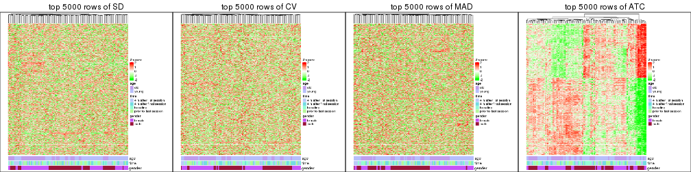
Test correlation between subgroups and known annotations. If the known annotation is numeric, one-way ANOVA test is applied, and if the known annotation is discrete, chi-squared contingency table test is applied.
test_to_known_factors(res_list, k = 2)
#> n age(p) time(p) gender(p) k
#> SD:NMF 90 3.99e-02 0.897 1.77e-20 2
#> CV:NMF 108 8.80e-01 0.994 1.99e-24 2
#> MAD:NMF 89 1.64e-02 0.997 2.12e-19 2
#> ATC:NMF 107 9.74e-04 0.908 1.31e-01 2
#> SD:skmeans 110 1.00e+00 0.998 7.24e-25 2
#> CV:skmeans 110 1.00e+00 0.998 7.24e-25 2
#> MAD:skmeans 109 9.34e-01 0.999 1.20e-24 2
#> ATC:skmeans 109 2.61e-04 0.932 1.40e-01 2
#> SD:mclust 110 1.00e+00 0.998 7.24e-25 2
#> CV:mclust 110 1.00e+00 0.998 7.24e-25 2
#> MAD:mclust 109 9.34e-01 0.992 1.20e-24 2
#> ATC:mclust 110 2.13e-01 0.746 7.86e-01 2
#> SD:kmeans 107 6.61e-18 0.840 4.97e-02 2
#> CV:kmeans 110 1.00e+00 0.998 7.24e-25 2
#> MAD:kmeans 75 1.09e-06 0.999 4.66e-17 2
#> ATC:kmeans 109 1.65e-03 0.543 2.85e-01 2
#> SD:pam 96 1.15e-07 0.618 1.02e-08 2
#> CV:pam 99 3.80e-06 0.890 5.20e-10 2
#> MAD:pam 88 1.73e-06 0.706 9.81e-12 2
#> ATC:pam 108 3.19e-02 0.968 4.32e-01 2
#> SD:hclust 105 7.41e-11 0.998 7.04e-06 2
#> CV:hclust 65 1.06e-05 0.982 7.78e-15 2
#> MAD:hclust 72 1.37e-06 0.971 1.30e-14 2
#> ATC:hclust 110 2.13e-01 0.746 7.86e-01 2
test_to_known_factors(res_list, k = 3)
#> n age(p) time(p) gender(p) k
#> SD:NMF 103 5.48e-11 0.874 4.30e-23 3
#> CV:NMF 97 7.60e-10 0.972 8.64e-22 3
#> MAD:NMF 98 2.04e-10 0.766 5.24e-22 3
#> ATC:NMF 98 8.15e-03 0.976 2.47e-01 3
#> SD:skmeans 104 1.09e-13 1.000 1.05e-21 3
#> CV:skmeans 104 4.97e-12 1.000 2.61e-23 3
#> MAD:skmeans 104 2.69e-13 0.999 1.79e-22 3
#> ATC:skmeans 109 2.80e-04 0.785 2.33e-01 3
#> SD:mclust 110 1.67e-12 1.000 1.30e-24 3
#> CV:mclust 110 1.19e-11 0.998 1.30e-24 3
#> MAD:mclust 109 1.08e-11 0.998 2.14e-24 3
#> ATC:mclust 108 3.71e-03 0.954 8.15e-01 3
#> SD:kmeans 110 1.67e-12 1.000 1.30e-24 3
#> CV:kmeans 109 2.97e-12 1.000 2.14e-24 3
#> MAD:kmeans 109 1.51e-12 1.000 2.14e-24 3
#> ATC:kmeans 99 3.61e-05 0.872 8.32e-01 3
#> SD:pam 86 1.62e-05 0.143 4.48e-09 3
#> CV:pam 65 5.59e-04 0.703 3.60e-10 3
#> MAD:pam 67 7.82e-06 0.492 3.72e-09 3
#> ATC:pam 108 1.98e-03 0.903 3.19e-01 3
#> SD:hclust 84 8.85e-09 0.479 7.60e-16 3
#> CV:hclust 71 8.32e-07 0.224 1.65e-15 3
#> MAD:hclust 73 2.63e-07 0.921 7.29e-15 3
#> ATC:hclust 99 3.28e-03 0.888 1.36e-01 3
test_to_known_factors(res_list, k = 4)
#> n age(p) time(p) gender(p) k
#> SD:NMF 81 4.84e-09 0.4643 2.58e-18 4
#> CV:NMF 88 8.99e-10 0.8100 7.78e-20 4
#> MAD:NMF 87 2.97e-09 0.4947 9.66e-19 4
#> ATC:NMF 96 5.28e-02 0.1068 6.01e-06 4
#> SD:skmeans 104 2.14e-22 0.9989 2.14e-22 4
#> CV:skmeans 52 4.30e-12 0.9066 NA 4
#> MAD:skmeans 54 1.52e-12 0.9962 NA 4
#> ATC:skmeans 106 4.70e-04 0.7671 2.77e-02 4
#> SD:mclust 108 2.96e-23 1.0000 2.96e-23 4
#> CV:mclust 103 2.78e-11 0.8550 3.52e-22 4
#> MAD:mclust 102 1.61e-19 0.9990 5.77e-22 4
#> ATC:mclust 103 4.74e-03 0.9487 3.30e-01 4
#> SD:kmeans 94 3.03e-20 0.9931 3.03e-20 4
#> CV:kmeans 96 5.03e-10 0.8288 1.13e-20 4
#> MAD:kmeans 88 6.56e-13 0.6371 5.89e-19 4
#> ATC:kmeans 105 2.02e-03 0.9655 2.98e-01 4
#> SD:pam 69 5.08e-06 0.0783 5.13e-11 4
#> CV:pam 38 2.86e-02 0.0398 2.46e-05 4
#> MAD:pam 39 4.27e-03 0.5555 3.33e-07 4
#> ATC:pam 102 3.25e-05 0.7244 2.00e-01 4
#> SD:hclust 104 1.76e-12 0.6778 1.91e-19 4
#> CV:hclust 70 9.56e-07 0.0720 5.80e-15 4
#> MAD:hclust 98 6.72e-12 0.2548 1.17e-18 4
#> ATC:hclust 100 1.50e-02 0.0208 1.43e-01 4
test_to_known_factors(res_list, k = 5)
#> n age(p) time(p) gender(p) k
#> SD:NMF 69 9.18e-09 0.8954 6.99e-15 5
#> CV:NMF 82 1.79e-09 0.9548 1.56e-18 5
#> MAD:NMF 75 2.55e-08 0.1813 3.62e-16 5
#> ATC:NMF 48 9.58e-05 0.3486 6.04e-03 5
#> SD:skmeans 72 1.59e-15 0.9729 1.59e-15 5
#> CV:skmeans 36 1.61e-08 0.7099 NA 5
#> MAD:skmeans 39 3.34e-09 0.4050 NA 5
#> ATC:skmeans 101 7.31e-05 0.9928 1.81e-04 5
#> SD:mclust 82 8.06e-17 0.7586 1.14e-17 5
#> CV:mclust 100 2.79e-09 0.9172 9.84e-21 5
#> MAD:mclust 82 1.24e-14 0.6240 6.56e-17 5
#> ATC:mclust 98 2.71e-02 0.0829 1.55e-01 5
#> SD:kmeans 82 6.56e-17 0.3463 6.56e-17 5
#> CV:kmeans 84 1.41e-11 0.5817 2.47e-17 5
#> MAD:kmeans 81 1.41e-12 0.7311 1.87e-17 5
#> ATC:kmeans 58 1.35e-02 0.4893 7.28e-01 5
#> SD:pam 82 4.14e-08 0.1178 8.29e-14 5
#> CV:pam 32 1.96e-02 0.3739 3.54e-05 5
#> MAD:pam 38 2.72e-03 0.2052 2.21e-06 5
#> ATC:pam 107 1.29e-04 0.0955 2.95e-01 5
#> SD:hclust 97 1.27e-10 0.6197 4.28e-20 5
#> CV:hclust 89 1.41e-10 0.7233 3.59e-19 5
#> MAD:hclust 91 2.26e-11 0.9936 6.89e-19 5
#> ATC:hclust 85 9.33e-04 0.1067 9.24e-03 5
test_to_known_factors(res_list, k = 6)
#> n age(p) time(p) gender(p) k
#> SD:NMF 51 3.74e-07 0.97036 4.89e-11 6
#> CV:NMF 48 1.07e-08 0.73062 2.13e-10 6
#> MAD:NMF 31 1.86e-07 0.94116 1.86e-07 6
#> ATC:NMF 32 2.69e-04 0.73223 2.40e-03 6
#> SD:skmeans 34 NA 0.91569 5.35e-08 6
#> CV:skmeans 22 NA NA NA 6
#> MAD:skmeans 38 5.71e-09 0.24592 NA 6
#> ATC:skmeans 95 4.05e-05 0.99958 5.00e-03 6
#> SD:mclust 80 1.74e-16 0.02228 1.74e-16 6
#> CV:mclust 71 1.62e-13 0.97825 1.40e-14 6
#> MAD:mclust 106 4.14e-10 0.19100 2.87e-21 6
#> ATC:mclust 97 1.04e-03 0.15235 1.83e-05 6
#> SD:kmeans 88 1.77e-17 0.00213 1.77e-17 6
#> CV:kmeans 90 1.85e-11 0.86651 6.72e-18 6
#> MAD:kmeans 61 7.55e-12 0.58533 7.55e-12 6
#> ATC:kmeans 59 1.28e-02 0.58970 5.30e-01 6
#> SD:pam 76 8.11e-07 0.20224 1.11e-12 6
#> CV:pam 20 3.71e-01 0.29023 1.00e+00 6
#> MAD:pam 52 8.84e-04 0.17812 2.49e-08 6
#> ATC:pam 103 1.20e-04 0.40245 8.60e-03 6
#> SD:hclust 93 3.22e-10 0.83214 1.57e-18 6
#> CV:hclust 83 1.86e-10 0.99874 9.48e-19 6
#> MAD:hclust 85 4.90e-09 0.77670 7.53e-17 6
#> ATC:hclust 87 5.25e-05 0.19184 2.76e-03 6
The object with results only for a single top-value method and a single partition method can be extracted as:
res = res_list["SD", "hclust"]
# you can also extract it by
# res = res_list["SD:hclust"]
A summary of res and all the functions that can be applied to it:
res
#> A 'ConsensusPartition' object with k = 2, 3, 4, 5, 6.
#> On a matrix with 51941 rows and 110 columns.
#> Top rows (1000, 2000, 3000, 4000, 5000) are extracted by 'SD' method.
#> Subgroups are detected by 'hclust' method.
#> Performed in total 1250 partitions by row resampling.
#> Best k for subgroups seems to be 3.
#>
#> Following methods can be applied to this 'ConsensusPartition' object:
#> [1] "cola_report" "collect_classes" "collect_plots"
#> [4] "collect_stats" "colnames" "compare_signatures"
#> [7] "consensus_heatmap" "dimension_reduction" "functional_enrichment"
#> [10] "get_anno_col" "get_anno" "get_classes"
#> [13] "get_consensus" "get_matrix" "get_membership"
#> [16] "get_param" "get_signatures" "get_stats"
#> [19] "is_best_k" "is_stable_k" "membership_heatmap"
#> [22] "ncol" "nrow" "plot_ecdf"
#> [25] "rownames" "select_partition_number" "show"
#> [28] "suggest_best_k" "test_to_known_factors"
collect_plots() function collects all the plots made from res for all k (number of partitions)
into one single page to provide an easy and fast comparison between different k.
collect_plots(res)
The plots are:
k and the heatmap of
predicted classes for each k.k.k.k.All the plots in panels can be made by individual functions and they are plotted later in this section.
select_partition_number() produces several plots showing different
statistics for choosing “optimized” k. There are following statistics:
k;k, the area increased is defined as \(A_k - A_{k-1}\).The detailed explanations of these statistics can be found in the cola vignette.
Generally speaking, lower PAC score, higher mean silhouette score or higher
concordance corresponds to better partition. Rand index and Jaccard index
measure how similar the current partition is compared to partition with k-1.
If they are too similar, we won't accept k is better than k-1.
select_partition_number(res)
The numeric values for all these statistics can be obtained by get_stats().
get_stats(res)
#> k 1-PAC mean_silhouette concordance area_increased Rand Jaccard
#> 2 2 0.117 0.682 0.760 0.3990 0.600 0.600
#> 3 3 0.194 0.512 0.767 0.4017 0.832 0.722
#> 4 4 0.210 0.737 0.753 0.1101 0.825 0.633
#> 5 5 0.334 0.685 0.756 0.0978 0.982 0.947
#> 6 6 0.400 0.665 0.742 0.0617 0.962 0.882
suggest_best_k() suggests the best \(k\) based on these statistics. The rules are as follows:
NA.suggest_best_k(res)
#> [1] 3
Following shows the table of the partitions (You need to click the show/hide
code output link to see it). The membership matrix (columns with name p*)
is inferred by
clue::cl_consensus()
function with the SE method. Basically the value in the membership matrix
represents the probability to belong to a certain group. The finall class
label for an item is determined with the group with highest probability it
belongs to.
In get_classes() function, the entropy is calculated from the membership
matrix and the silhouette score is calculated from the consensus matrix.
cbind(get_classes(res, k = 2), get_membership(res, k = 2))
#> class entropy silhouette p1 p2
#> GSM702357 2 0.494 0.716 0.108 0.892
#> GSM702358 2 0.260 0.728 0.044 0.956
#> GSM702359 2 0.671 0.683 0.176 0.824
#> GSM702360 2 0.260 0.729 0.044 0.956
#> GSM702361 2 0.295 0.734 0.052 0.948
#> GSM702362 2 0.416 0.727 0.084 0.916
#> GSM702363 2 0.278 0.724 0.048 0.952
#> GSM702364 2 0.680 0.669 0.180 0.820
#> GSM702413 2 0.936 0.574 0.352 0.648
#> GSM702414 2 0.936 0.557 0.352 0.648
#> GSM702415 2 0.963 0.526 0.388 0.612
#> GSM702416 2 0.917 0.593 0.332 0.668
#> GSM702417 2 0.895 0.614 0.312 0.688
#> GSM702418 2 0.973 0.505 0.404 0.596
#> GSM702419 2 0.904 0.609 0.320 0.680
#> GSM702365 2 0.494 0.716 0.108 0.892
#> GSM702366 2 0.278 0.727 0.048 0.952
#> GSM702367 2 0.469 0.710 0.100 0.900
#> GSM702368 2 0.634 0.681 0.160 0.840
#> GSM702369 2 0.260 0.728 0.044 0.956
#> GSM702370 2 0.966 0.428 0.392 0.608
#> GSM702371 2 0.443 0.727 0.092 0.908
#> GSM702372 2 0.909 0.509 0.324 0.676
#> GSM702420 1 0.971 -0.223 0.600 0.400
#> GSM702421 2 0.929 0.568 0.344 0.656
#> GSM702422 1 0.971 -0.223 0.600 0.400
#> GSM702423 2 0.958 0.558 0.380 0.620
#> GSM702424 2 0.932 0.591 0.348 0.652
#> GSM702425 2 0.925 0.596 0.340 0.660
#> GSM702426 2 0.946 0.573 0.364 0.636
#> GSM702427 2 0.921 0.609 0.336 0.664
#> GSM702373 2 0.563 0.698 0.132 0.868
#> GSM702374 2 0.552 0.713 0.128 0.872
#> GSM702375 2 0.456 0.722 0.096 0.904
#> GSM702376 2 0.595 0.686 0.144 0.856
#> GSM702377 2 0.653 0.665 0.168 0.832
#> GSM702378 2 0.327 0.730 0.060 0.940
#> GSM702379 2 0.242 0.725 0.040 0.960
#> GSM702380 2 0.402 0.722 0.080 0.920
#> GSM702428 2 0.909 0.604 0.324 0.676
#> GSM702429 2 0.997 0.383 0.468 0.532
#> GSM702430 2 0.929 0.591 0.344 0.656
#> GSM702431 2 0.917 0.589 0.332 0.668
#> GSM702432 2 0.925 0.582 0.340 0.660
#> GSM702433 2 0.946 0.584 0.364 0.636
#> GSM702434 2 0.921 0.601 0.336 0.664
#> GSM702381 2 0.402 0.727 0.080 0.920
#> GSM702382 2 0.224 0.728 0.036 0.964
#> GSM702383 2 0.388 0.718 0.076 0.924
#> GSM702384 2 0.469 0.714 0.100 0.900
#> GSM702385 2 0.278 0.735 0.048 0.952
#> GSM702386 2 0.402 0.736 0.080 0.920
#> GSM702387 2 0.242 0.725 0.040 0.960
#> GSM702388 2 0.343 0.733 0.064 0.936
#> GSM702435 2 0.936 0.592 0.352 0.648
#> GSM702436 2 0.929 0.568 0.344 0.656
#> GSM702437 2 0.996 0.445 0.464 0.536
#> GSM702438 2 0.958 0.562 0.380 0.620
#> GSM702439 2 0.921 0.607 0.336 0.664
#> GSM702440 2 0.925 0.598 0.340 0.660
#> GSM702441 2 0.946 0.584 0.364 0.636
#> GSM702442 2 0.946 0.583 0.364 0.636
#> GSM702389 2 0.482 0.676 0.104 0.896
#> GSM702390 2 0.343 0.732 0.064 0.936
#> GSM702391 2 0.327 0.732 0.060 0.940
#> GSM702392 2 0.738 0.573 0.208 0.792
#> GSM702393 1 0.949 0.757 0.632 0.368
#> GSM702394 2 0.634 0.622 0.160 0.840
#> GSM702443 1 0.881 0.882 0.700 0.300
#> GSM702444 1 0.895 0.886 0.688 0.312
#> GSM702445 1 0.895 0.886 0.688 0.312
#> GSM702446 1 0.844 0.846 0.728 0.272
#> GSM702447 1 0.900 0.878 0.684 0.316
#> GSM702448 1 0.895 0.886 0.688 0.312
#> GSM702395 2 0.482 0.676 0.104 0.896
#> GSM702396 2 0.469 0.724 0.100 0.900
#> GSM702397 2 0.402 0.722 0.080 0.920
#> GSM702398 2 0.615 0.645 0.152 0.848
#> GSM702399 1 0.936 0.773 0.648 0.352
#> GSM702400 2 0.615 0.634 0.152 0.848
#> GSM702449 1 0.909 0.860 0.676 0.324
#> GSM702450 1 0.895 0.886 0.688 0.312
#> GSM702451 1 0.850 0.846 0.724 0.276
#> GSM702452 1 0.895 0.886 0.688 0.312
#> GSM702453 1 0.900 0.878 0.684 0.316
#> GSM702454 1 0.895 0.886 0.688 0.312
#> GSM702401 2 0.605 0.643 0.148 0.852
#> GSM702402 2 0.518 0.678 0.116 0.884
#> GSM702403 2 0.416 0.719 0.084 0.916
#> GSM702404 2 0.738 0.573 0.208 0.792
#> GSM702405 1 0.936 0.773 0.648 0.352
#> GSM702406 2 0.680 0.603 0.180 0.820
#> GSM702455 1 0.886 0.884 0.696 0.304
#> GSM702456 1 0.895 0.886 0.688 0.312
#> GSM702457 1 0.891 0.886 0.692 0.308
#> GSM702458 1 0.881 0.881 0.700 0.300
#> GSM702459 1 0.983 0.598 0.576 0.424
#> GSM702460 1 0.895 0.886 0.688 0.312
#> GSM702407 2 0.563 0.667 0.132 0.868
#> GSM702408 2 0.552 0.697 0.128 0.872
#> GSM702409 2 0.430 0.734 0.088 0.912
#> GSM702410 2 0.662 0.621 0.172 0.828
#> GSM702411 1 0.936 0.773 0.648 0.352
#> GSM702412 2 0.634 0.623 0.160 0.840
#> GSM702461 1 0.891 0.885 0.692 0.308
#> GSM702462 1 0.900 0.884 0.684 0.316
#> GSM702463 1 0.891 0.886 0.692 0.308
#> GSM702464 1 0.881 0.881 0.700 0.300
#> GSM702465 1 0.952 0.770 0.628 0.372
#> GSM702466 1 0.895 0.886 0.688 0.312
cbind(get_classes(res, k = 3), get_membership(res, k = 3))
#> class entropy silhouette p1 p2 p3
#> GSM702357 2 0.5111 0.63497 0.036 0.820 0.144
#> GSM702358 2 0.2590 0.64640 0.004 0.924 0.072
#> GSM702359 2 0.6016 0.36664 0.256 0.724 0.020
#> GSM702360 2 0.2680 0.64845 0.008 0.924 0.068
#> GSM702361 2 0.3134 0.61812 0.052 0.916 0.032
#> GSM702362 2 0.4526 0.64477 0.040 0.856 0.104
#> GSM702363 2 0.3120 0.64988 0.012 0.908 0.080
#> GSM702364 2 0.6646 0.57447 0.076 0.740 0.184
#> GSM702413 2 0.9439 -0.38017 0.376 0.444 0.180
#> GSM702414 2 0.9633 -0.39484 0.368 0.424 0.208
#> GSM702415 1 0.9342 0.47688 0.452 0.380 0.168
#> GSM702416 2 0.9280 -0.42823 0.388 0.452 0.160
#> GSM702417 2 0.8382 -0.47194 0.424 0.492 0.084
#> GSM702418 1 0.9606 0.44410 0.428 0.368 0.204
#> GSM702419 2 0.9260 -0.38210 0.376 0.464 0.160
#> GSM702365 2 0.5111 0.63497 0.036 0.820 0.144
#> GSM702366 2 0.2050 0.62368 0.020 0.952 0.028
#> GSM702367 2 0.3715 0.54219 0.128 0.868 0.004
#> GSM702368 2 0.4808 0.47129 0.188 0.804 0.008
#> GSM702369 2 0.2446 0.60647 0.052 0.936 0.012
#> GSM702370 1 0.7222 0.14098 0.580 0.388 0.032
#> GSM702371 2 0.4636 0.59484 0.104 0.852 0.044
#> GSM702372 1 0.6678 -0.00129 0.512 0.480 0.008
#> GSM702420 1 0.2846 0.45520 0.924 0.020 0.056
#> GSM702421 2 0.9532 -0.40884 0.376 0.432 0.192
#> GSM702422 1 0.2846 0.45520 0.924 0.020 0.056
#> GSM702423 1 0.8569 0.57717 0.508 0.392 0.100
#> GSM702424 1 0.8065 0.53403 0.484 0.452 0.064
#> GSM702425 1 0.8211 0.50762 0.464 0.464 0.072
#> GSM702426 1 0.7767 0.57574 0.536 0.412 0.052
#> GSM702427 2 0.8635 -0.47189 0.440 0.460 0.100
#> GSM702373 2 0.5635 0.61617 0.036 0.784 0.180
#> GSM702374 2 0.4915 0.47383 0.184 0.804 0.012
#> GSM702375 2 0.4636 0.64288 0.044 0.852 0.104
#> GSM702376 2 0.5826 0.59741 0.032 0.764 0.204
#> GSM702377 2 0.6495 0.57420 0.060 0.740 0.200
#> GSM702378 2 0.3678 0.64884 0.028 0.892 0.080
#> GSM702379 2 0.2749 0.64574 0.012 0.924 0.064
#> GSM702380 2 0.3918 0.65363 0.012 0.868 0.120
#> GSM702428 2 0.9220 -0.37388 0.376 0.468 0.156
#> GSM702429 1 0.9170 0.50184 0.540 0.248 0.212
#> GSM702430 1 0.8844 0.49403 0.444 0.440 0.116
#> GSM702431 2 0.9391 -0.38240 0.368 0.456 0.176
#> GSM702432 2 0.9442 -0.36566 0.360 0.456 0.184
#> GSM702433 2 0.9265 -0.45547 0.416 0.428 0.156
#> GSM702434 2 0.9228 -0.39671 0.380 0.464 0.156
#> GSM702381 2 0.3987 0.65008 0.020 0.872 0.108
#> GSM702382 2 0.2496 0.64481 0.004 0.928 0.068
#> GSM702383 2 0.2400 0.58914 0.064 0.932 0.004
#> GSM702384 2 0.5239 0.62602 0.032 0.808 0.160
#> GSM702385 2 0.3148 0.63628 0.036 0.916 0.048
#> GSM702386 2 0.4095 0.62708 0.064 0.880 0.056
#> GSM702387 2 0.2749 0.64574 0.012 0.924 0.064
#> GSM702388 2 0.3456 0.62220 0.060 0.904 0.036
#> GSM702435 1 0.8055 0.55011 0.496 0.440 0.064
#> GSM702436 2 0.9532 -0.40884 0.376 0.432 0.192
#> GSM702437 1 0.7157 0.57080 0.668 0.276 0.056
#> GSM702438 1 0.8447 0.57832 0.516 0.392 0.092
#> GSM702439 2 0.8464 -0.51378 0.448 0.464 0.088
#> GSM702440 2 0.8524 -0.52246 0.452 0.456 0.092
#> GSM702441 2 0.9265 -0.45547 0.416 0.428 0.156
#> GSM702442 1 0.7699 0.56962 0.532 0.420 0.048
#> GSM702389 2 0.4233 0.63579 0.004 0.836 0.160
#> GSM702390 2 0.2550 0.63891 0.012 0.932 0.056
#> GSM702391 2 0.2945 0.65020 0.004 0.908 0.088
#> GSM702392 2 0.6129 0.54245 0.016 0.700 0.284
#> GSM702393 3 0.4712 0.81855 0.044 0.108 0.848
#> GSM702394 2 0.4931 0.59433 0.000 0.768 0.232
#> GSM702443 3 0.1878 0.94163 0.004 0.044 0.952
#> GSM702444 3 0.1753 0.94362 0.000 0.048 0.952
#> GSM702445 3 0.1753 0.94362 0.000 0.048 0.952
#> GSM702446 3 0.0661 0.90411 0.004 0.008 0.988
#> GSM702447 3 0.2301 0.93253 0.004 0.060 0.936
#> GSM702448 3 0.1753 0.94349 0.000 0.048 0.952
#> GSM702395 2 0.4233 0.63579 0.004 0.836 0.160
#> GSM702396 2 0.3028 0.60848 0.048 0.920 0.032
#> GSM702397 2 0.3846 0.65522 0.016 0.876 0.108
#> GSM702398 2 0.5414 0.60787 0.016 0.772 0.212
#> GSM702399 3 0.3791 0.84381 0.048 0.060 0.892
#> GSM702400 2 0.4842 0.59987 0.000 0.776 0.224
#> GSM702449 3 0.3183 0.90514 0.016 0.076 0.908
#> GSM702450 3 0.1753 0.94362 0.000 0.048 0.952
#> GSM702451 3 0.0829 0.90318 0.004 0.012 0.984
#> GSM702452 3 0.1753 0.94362 0.000 0.048 0.952
#> GSM702453 3 0.2301 0.93253 0.004 0.060 0.936
#> GSM702454 3 0.1753 0.94349 0.000 0.048 0.952
#> GSM702401 2 0.5122 0.61512 0.012 0.788 0.200
#> GSM702402 2 0.4351 0.63305 0.004 0.828 0.168
#> GSM702403 2 0.3644 0.65423 0.004 0.872 0.124
#> GSM702404 2 0.6129 0.54245 0.016 0.700 0.284
#> GSM702405 3 0.3791 0.84381 0.048 0.060 0.892
#> GSM702406 2 0.5461 0.58550 0.008 0.748 0.244
#> GSM702455 3 0.1989 0.94200 0.004 0.048 0.948
#> GSM702456 3 0.1753 0.94362 0.000 0.048 0.952
#> GSM702457 3 0.1643 0.94261 0.000 0.044 0.956
#> GSM702458 3 0.1411 0.93711 0.000 0.036 0.964
#> GSM702459 3 0.6758 0.59320 0.072 0.200 0.728
#> GSM702460 3 0.1753 0.94349 0.000 0.048 0.952
#> GSM702407 2 0.4755 0.62914 0.008 0.808 0.184
#> GSM702408 2 0.4539 0.63364 0.016 0.836 0.148
#> GSM702409 2 0.4565 0.60285 0.064 0.860 0.076
#> GSM702410 2 0.5335 0.59478 0.008 0.760 0.232
#> GSM702411 3 0.3791 0.84381 0.048 0.060 0.892
#> GSM702412 2 0.4931 0.59519 0.000 0.768 0.232
#> GSM702461 3 0.2096 0.94024 0.004 0.052 0.944
#> GSM702462 3 0.1860 0.94199 0.000 0.052 0.948
#> GSM702463 3 0.1643 0.94261 0.000 0.044 0.956
#> GSM702464 3 0.1411 0.93711 0.000 0.036 0.964
#> GSM702465 3 0.4891 0.80232 0.040 0.124 0.836
#> GSM702466 3 0.1753 0.94349 0.000 0.048 0.952
cbind(get_classes(res, k = 4), get_membership(res, k = 4))
#> class entropy silhouette p1 p2 p3 p4
#> GSM702357 2 0.4478 0.771 0.028 0.832 0.088 0.052
#> GSM702358 2 0.1975 0.794 0.012 0.944 0.028 0.016
#> GSM702359 2 0.7209 -0.283 0.112 0.536 0.012 0.340
#> GSM702360 2 0.2310 0.800 0.020 0.932 0.032 0.016
#> GSM702361 2 0.3854 0.764 0.064 0.864 0.020 0.052
#> GSM702362 2 0.4113 0.789 0.024 0.852 0.068 0.056
#> GSM702363 2 0.2513 0.798 0.016 0.924 0.036 0.024
#> GSM702364 2 0.6735 0.616 0.040 0.684 0.152 0.124
#> GSM702413 1 0.7959 0.734 0.464 0.364 0.144 0.028
#> GSM702414 1 0.8016 0.737 0.476 0.328 0.172 0.024
#> GSM702415 1 0.7484 0.754 0.552 0.300 0.124 0.024
#> GSM702416 1 0.7634 0.768 0.520 0.328 0.128 0.024
#> GSM702417 1 0.6651 0.768 0.572 0.352 0.060 0.016
#> GSM702418 1 0.8010 0.723 0.520 0.284 0.160 0.036
#> GSM702419 1 0.7421 0.751 0.492 0.372 0.124 0.012
#> GSM702365 2 0.4478 0.771 0.028 0.832 0.088 0.052
#> GSM702366 2 0.2990 0.769 0.036 0.904 0.016 0.044
#> GSM702367 2 0.5071 0.611 0.080 0.772 0.004 0.144
#> GSM702368 2 0.6049 0.303 0.084 0.652 0.000 0.264
#> GSM702369 2 0.3655 0.748 0.072 0.864 0.004 0.060
#> GSM702370 4 0.7919 0.798 0.240 0.292 0.008 0.460
#> GSM702371 2 0.4443 0.707 0.048 0.820 0.012 0.120
#> GSM702372 4 0.7153 0.794 0.160 0.308 0.000 0.532
#> GSM702420 1 0.4891 -0.135 0.680 0.000 0.012 0.308
#> GSM702421 1 0.7987 0.750 0.484 0.332 0.156 0.028
#> GSM702422 1 0.4936 -0.141 0.672 0.000 0.012 0.316
#> GSM702423 1 0.7100 0.732 0.612 0.272 0.064 0.052
#> GSM702424 1 0.6174 0.746 0.628 0.316 0.032 0.024
#> GSM702425 1 0.6298 0.756 0.612 0.328 0.040 0.020
#> GSM702426 1 0.5834 0.706 0.664 0.288 0.020 0.028
#> GSM702427 1 0.7186 0.764 0.540 0.360 0.064 0.036
#> GSM702373 2 0.5107 0.745 0.028 0.792 0.120 0.060
#> GSM702374 2 0.6461 0.213 0.092 0.652 0.012 0.244
#> GSM702375 2 0.4366 0.780 0.028 0.840 0.068 0.064
#> GSM702376 2 0.5581 0.712 0.032 0.760 0.144 0.064
#> GSM702377 2 0.6178 0.654 0.044 0.720 0.168 0.068
#> GSM702378 2 0.3194 0.795 0.020 0.896 0.040 0.044
#> GSM702379 2 0.2676 0.794 0.012 0.916 0.028 0.044
#> GSM702380 2 0.3342 0.805 0.008 0.880 0.080 0.032
#> GSM702428 1 0.7531 0.743 0.484 0.376 0.124 0.016
#> GSM702429 1 0.8343 0.537 0.556 0.188 0.164 0.092
#> GSM702430 1 0.7493 0.773 0.540 0.336 0.080 0.044
#> GSM702431 1 0.7797 0.750 0.480 0.360 0.136 0.024
#> GSM702432 1 0.7639 0.732 0.468 0.372 0.148 0.012
#> GSM702433 1 0.7522 0.742 0.512 0.348 0.120 0.020
#> GSM702434 1 0.7619 0.752 0.484 0.372 0.124 0.020
#> GSM702381 2 0.3103 0.800 0.008 0.892 0.072 0.028
#> GSM702382 2 0.2170 0.793 0.012 0.936 0.036 0.016
#> GSM702383 2 0.3917 0.708 0.044 0.844 0.004 0.108
#> GSM702384 2 0.5366 0.728 0.036 0.784 0.088 0.092
#> GSM702385 2 0.3495 0.785 0.036 0.884 0.032 0.048
#> GSM702386 2 0.4512 0.752 0.040 0.828 0.032 0.100
#> GSM702387 2 0.2676 0.794 0.012 0.916 0.028 0.044
#> GSM702388 2 0.3979 0.751 0.032 0.844 0.012 0.112
#> GSM702435 1 0.6764 0.743 0.584 0.336 0.036 0.044
#> GSM702436 1 0.7987 0.750 0.484 0.332 0.156 0.028
#> GSM702437 1 0.6589 0.448 0.664 0.176 0.012 0.148
#> GSM702438 1 0.7443 0.657 0.596 0.264 0.064 0.076
#> GSM702439 1 0.6924 0.771 0.568 0.344 0.056 0.032
#> GSM702440 1 0.7058 0.774 0.576 0.324 0.064 0.036
#> GSM702441 1 0.7522 0.742 0.512 0.348 0.120 0.020
#> GSM702442 1 0.7028 0.683 0.604 0.284 0.032 0.080
#> GSM702389 2 0.3870 0.786 0.004 0.852 0.064 0.080
#> GSM702390 2 0.3686 0.788 0.040 0.876 0.040 0.044
#> GSM702391 2 0.3734 0.796 0.016 0.868 0.068 0.048
#> GSM702392 2 0.5937 0.680 0.012 0.712 0.188 0.088
#> GSM702393 3 0.6260 0.574 0.004 0.112 0.668 0.216
#> GSM702394 2 0.4614 0.744 0.000 0.792 0.144 0.064
#> GSM702443 3 0.1489 0.915 0.004 0.044 0.952 0.000
#> GSM702444 3 0.1389 0.917 0.000 0.048 0.952 0.000
#> GSM702445 3 0.1389 0.917 0.000 0.048 0.952 0.000
#> GSM702446 3 0.0804 0.875 0.000 0.012 0.980 0.008
#> GSM702447 3 0.1824 0.907 0.004 0.060 0.936 0.000
#> GSM702448 3 0.1389 0.917 0.000 0.048 0.952 0.000
#> GSM702395 2 0.3870 0.786 0.004 0.852 0.064 0.080
#> GSM702396 2 0.4645 0.728 0.056 0.820 0.024 0.100
#> GSM702397 2 0.3351 0.806 0.012 0.884 0.068 0.036
#> GSM702398 2 0.5186 0.761 0.016 0.780 0.128 0.076
#> GSM702399 3 0.5806 0.630 0.004 0.080 0.700 0.216
#> GSM702400 2 0.4636 0.750 0.000 0.792 0.140 0.068
#> GSM702449 3 0.2522 0.881 0.016 0.076 0.908 0.000
#> GSM702450 3 0.1389 0.917 0.000 0.048 0.952 0.000
#> GSM702451 3 0.0992 0.874 0.004 0.012 0.976 0.008
#> GSM702452 3 0.1389 0.917 0.000 0.048 0.952 0.000
#> GSM702453 3 0.1824 0.907 0.004 0.060 0.936 0.000
#> GSM702454 3 0.1389 0.917 0.000 0.048 0.952 0.000
#> GSM702401 2 0.4609 0.766 0.008 0.812 0.104 0.076
#> GSM702402 2 0.3870 0.783 0.004 0.852 0.080 0.064
#> GSM702403 2 0.3313 0.804 0.008 0.880 0.084 0.028
#> GSM702404 2 0.5937 0.680 0.012 0.712 0.188 0.088
#> GSM702405 3 0.5806 0.630 0.004 0.080 0.700 0.216
#> GSM702406 2 0.4829 0.736 0.000 0.776 0.156 0.068
#> GSM702455 3 0.1576 0.915 0.004 0.048 0.948 0.000
#> GSM702456 3 0.1389 0.917 0.000 0.048 0.952 0.000
#> GSM702457 3 0.1302 0.916 0.000 0.044 0.956 0.000
#> GSM702458 3 0.1118 0.909 0.000 0.036 0.964 0.000
#> GSM702459 3 0.5929 0.583 0.124 0.164 0.708 0.004
#> GSM702460 3 0.1389 0.917 0.000 0.048 0.952 0.000
#> GSM702407 2 0.4155 0.781 0.004 0.836 0.080 0.080
#> GSM702408 2 0.4716 0.781 0.028 0.820 0.084 0.068
#> GSM702409 2 0.6003 0.663 0.088 0.752 0.076 0.084
#> GSM702410 2 0.4855 0.748 0.004 0.788 0.132 0.076
#> GSM702411 3 0.5806 0.630 0.004 0.080 0.700 0.216
#> GSM702412 2 0.4541 0.746 0.000 0.796 0.144 0.060
#> GSM702461 3 0.1661 0.914 0.004 0.052 0.944 0.000
#> GSM702462 3 0.1474 0.916 0.000 0.052 0.948 0.000
#> GSM702463 3 0.1302 0.916 0.000 0.044 0.956 0.000
#> GSM702464 3 0.1118 0.909 0.000 0.036 0.964 0.000
#> GSM702465 3 0.4457 0.778 0.072 0.108 0.816 0.004
#> GSM702466 3 0.1389 0.917 0.000 0.048 0.952 0.000
cbind(get_classes(res, k = 5), get_membership(res, k = 5))
#> class entropy silhouette p1 p2 p3 p4 p5
#> GSM702357 2 0.4679 0.7229 0.060 0.800 0.044 0.016 0.080
#> GSM702358 2 0.2777 0.7616 0.036 0.896 0.012 0.004 0.052
#> GSM702359 5 0.5790 0.5338 0.060 0.344 0.000 0.020 0.576
#> GSM702360 2 0.2596 0.7661 0.036 0.908 0.020 0.004 0.032
#> GSM702361 2 0.4934 0.6991 0.088 0.780 0.020 0.028 0.084
#> GSM702362 2 0.4473 0.7441 0.060 0.816 0.036 0.024 0.064
#> GSM702363 2 0.2580 0.7632 0.036 0.908 0.016 0.004 0.036
#> GSM702364 2 0.6830 0.4861 0.064 0.624 0.128 0.016 0.168
#> GSM702413 1 0.6843 0.7324 0.576 0.252 0.120 0.040 0.012
#> GSM702414 1 0.7587 0.7070 0.520 0.232 0.160 0.076 0.012
#> GSM702415 1 0.7283 0.7008 0.560 0.220 0.108 0.104 0.008
#> GSM702416 1 0.7132 0.7346 0.592 0.196 0.116 0.080 0.016
#> GSM702417 1 0.5267 0.7449 0.704 0.216 0.044 0.032 0.004
#> GSM702418 1 0.7037 0.6779 0.592 0.188 0.144 0.064 0.012
#> GSM702419 1 0.6201 0.7521 0.616 0.252 0.104 0.020 0.008
#> GSM702365 2 0.4679 0.7229 0.060 0.800 0.044 0.016 0.080
#> GSM702366 2 0.3732 0.7323 0.060 0.840 0.008 0.008 0.084
#> GSM702367 2 0.5889 0.4570 0.088 0.656 0.004 0.028 0.224
#> GSM702368 2 0.6757 -0.2013 0.096 0.492 0.000 0.048 0.364
#> GSM702369 2 0.4640 0.6829 0.096 0.784 0.004 0.024 0.092
#> GSM702370 4 0.7167 -0.4386 0.032 0.248 0.000 0.476 0.244
#> GSM702371 2 0.5180 0.6069 0.060 0.724 0.008 0.020 0.188
#> GSM702372 5 0.6555 0.3809 0.032 0.168 0.000 0.216 0.584
#> GSM702420 4 0.4483 0.5521 0.308 0.000 0.008 0.672 0.012
#> GSM702421 1 0.7293 0.7240 0.548 0.228 0.144 0.072 0.008
#> GSM702422 4 0.3980 0.5546 0.284 0.000 0.008 0.708 0.000
#> GSM702423 1 0.6656 0.6385 0.656 0.136 0.060 0.120 0.028
#> GSM702424 1 0.5475 0.6771 0.704 0.180 0.024 0.088 0.004
#> GSM702425 1 0.4970 0.7047 0.740 0.184 0.024 0.044 0.008
#> GSM702426 1 0.5608 0.6107 0.704 0.152 0.016 0.116 0.012
#> GSM702427 1 0.6182 0.7482 0.636 0.236 0.056 0.068 0.004
#> GSM702373 2 0.5374 0.6995 0.064 0.760 0.068 0.024 0.084
#> GSM702374 2 0.5751 -0.2921 0.076 0.516 0.000 0.004 0.404
#> GSM702375 2 0.4781 0.7297 0.064 0.792 0.040 0.016 0.088
#> GSM702376 2 0.5850 0.6686 0.068 0.728 0.092 0.028 0.084
#> GSM702377 2 0.6382 0.5786 0.072 0.676 0.140 0.020 0.092
#> GSM702378 2 0.3639 0.7534 0.044 0.856 0.016 0.016 0.068
#> GSM702379 2 0.2464 0.7589 0.024 0.912 0.008 0.008 0.048
#> GSM702380 2 0.3505 0.7649 0.016 0.860 0.052 0.008 0.064
#> GSM702428 1 0.6364 0.7468 0.608 0.256 0.100 0.024 0.012
#> GSM702429 1 0.8009 0.3598 0.492 0.120 0.152 0.220 0.016
#> GSM702430 1 0.6901 0.7388 0.604 0.216 0.072 0.092 0.016
#> GSM702431 1 0.6628 0.7486 0.584 0.252 0.120 0.040 0.004
#> GSM702432 1 0.6722 0.7295 0.560 0.276 0.128 0.028 0.008
#> GSM702433 1 0.6775 0.7286 0.588 0.248 0.096 0.060 0.008
#> GSM702434 1 0.6465 0.7519 0.604 0.252 0.104 0.028 0.012
#> GSM702381 2 0.3442 0.7623 0.024 0.868 0.036 0.012 0.060
#> GSM702382 2 0.2297 0.7586 0.020 0.912 0.008 0.000 0.060
#> GSM702383 2 0.4989 0.6284 0.072 0.744 0.004 0.020 0.160
#> GSM702384 2 0.5980 0.6083 0.096 0.708 0.036 0.032 0.128
#> GSM702385 2 0.4291 0.7349 0.072 0.820 0.024 0.016 0.068
#> GSM702386 2 0.5197 0.6807 0.076 0.752 0.008 0.040 0.124
#> GSM702387 2 0.2464 0.7589 0.024 0.912 0.008 0.008 0.048
#> GSM702388 2 0.4473 0.6775 0.056 0.764 0.000 0.012 0.168
#> GSM702435 1 0.6073 0.7126 0.660 0.216 0.032 0.076 0.016
#> GSM702436 1 0.7293 0.7240 0.548 0.228 0.144 0.072 0.008
#> GSM702437 1 0.6114 0.0234 0.564 0.072 0.016 0.340 0.008
#> GSM702438 1 0.7812 0.4972 0.568 0.120 0.056 0.156 0.100
#> GSM702439 1 0.5802 0.7396 0.680 0.208 0.044 0.060 0.008
#> GSM702440 1 0.5534 0.7435 0.700 0.196 0.052 0.048 0.004
#> GSM702441 1 0.6775 0.7286 0.588 0.248 0.096 0.060 0.008
#> GSM702442 1 0.6646 0.5990 0.656 0.148 0.024 0.096 0.076
#> GSM702389 2 0.3760 0.7546 0.020 0.848 0.024 0.024 0.084
#> GSM702390 2 0.3927 0.7410 0.064 0.836 0.020 0.008 0.072
#> GSM702391 2 0.4147 0.7520 0.036 0.832 0.048 0.016 0.068
#> GSM702392 2 0.6057 0.6526 0.040 0.704 0.136 0.036 0.084
#> GSM702393 3 0.7817 0.3634 0.044 0.088 0.532 0.100 0.236
#> GSM702394 2 0.4360 0.7172 0.000 0.800 0.100 0.032 0.068
#> GSM702443 3 0.0955 0.8940 0.004 0.028 0.968 0.000 0.000
#> GSM702444 3 0.0880 0.8961 0.000 0.032 0.968 0.000 0.000
#> GSM702445 3 0.0880 0.8961 0.000 0.032 0.968 0.000 0.000
#> GSM702446 3 0.0579 0.8553 0.008 0.000 0.984 0.000 0.008
#> GSM702447 3 0.1364 0.8890 0.012 0.036 0.952 0.000 0.000
#> GSM702448 3 0.0955 0.8957 0.004 0.028 0.968 0.000 0.000
#> GSM702395 2 0.3760 0.7546 0.020 0.848 0.024 0.024 0.084
#> GSM702396 2 0.5274 0.6445 0.084 0.736 0.016 0.016 0.148
#> GSM702397 2 0.3668 0.7687 0.032 0.852 0.048 0.004 0.064
#> GSM702398 2 0.5190 0.7356 0.040 0.772 0.088 0.032 0.068
#> GSM702399 3 0.7355 0.4474 0.040 0.060 0.576 0.104 0.220
#> GSM702400 2 0.4533 0.7223 0.004 0.796 0.100 0.036 0.064
#> GSM702449 3 0.1981 0.8627 0.028 0.048 0.924 0.000 0.000
#> GSM702450 3 0.0880 0.8961 0.000 0.032 0.968 0.000 0.000
#> GSM702451 3 0.0693 0.8557 0.012 0.000 0.980 0.000 0.008
#> GSM702452 3 0.0880 0.8961 0.000 0.032 0.968 0.000 0.000
#> GSM702453 3 0.1364 0.8890 0.012 0.036 0.952 0.000 0.000
#> GSM702454 3 0.0880 0.8959 0.000 0.032 0.968 0.000 0.000
#> GSM702401 2 0.4273 0.7376 0.016 0.824 0.064 0.032 0.064
#> GSM702402 2 0.3747 0.7513 0.012 0.852 0.044 0.028 0.064
#> GSM702403 2 0.3545 0.7693 0.032 0.864 0.056 0.012 0.036
#> GSM702404 2 0.6057 0.6526 0.040 0.704 0.136 0.036 0.084
#> GSM702405 3 0.7355 0.4474 0.040 0.060 0.576 0.104 0.220
#> GSM702406 2 0.4620 0.7123 0.004 0.788 0.112 0.036 0.060
#> GSM702455 3 0.1041 0.8944 0.004 0.032 0.964 0.000 0.000
#> GSM702456 3 0.0880 0.8961 0.000 0.032 0.968 0.000 0.000
#> GSM702457 3 0.0794 0.8956 0.000 0.028 0.972 0.000 0.000
#> GSM702458 3 0.0609 0.8904 0.000 0.020 0.980 0.000 0.000
#> GSM702459 3 0.5415 0.5361 0.168 0.124 0.696 0.004 0.008
#> GSM702460 3 0.0880 0.8959 0.000 0.032 0.968 0.000 0.000
#> GSM702407 2 0.3883 0.7517 0.016 0.844 0.036 0.028 0.076
#> GSM702408 2 0.4953 0.7426 0.056 0.788 0.048 0.028 0.080
#> GSM702409 2 0.6399 0.5291 0.084 0.672 0.056 0.028 0.160
#> GSM702410 2 0.4658 0.7242 0.016 0.800 0.076 0.036 0.072
#> GSM702411 3 0.7355 0.4474 0.040 0.060 0.576 0.104 0.220
#> GSM702412 2 0.4234 0.7196 0.000 0.808 0.100 0.032 0.060
#> GSM702461 3 0.1202 0.8929 0.004 0.032 0.960 0.004 0.000
#> GSM702462 3 0.1041 0.8955 0.000 0.032 0.964 0.004 0.000
#> GSM702463 3 0.0794 0.8956 0.000 0.028 0.972 0.000 0.000
#> GSM702464 3 0.0609 0.8904 0.000 0.020 0.980 0.000 0.000
#> GSM702465 3 0.4030 0.7402 0.084 0.088 0.816 0.004 0.008
#> GSM702466 3 0.0880 0.8959 0.000 0.032 0.968 0.000 0.000
cbind(get_classes(res, k = 6), get_membership(res, k = 6))
#> class entropy silhouette p1 p2 p3 p4 p5 p6
#> GSM702357 2 0.4352 0.673 0.012 0.780 0.024 0.008 0.044 0.132
#> GSM702358 2 0.3705 0.722 0.032 0.840 0.016 0.008 0.068 0.036
#> GSM702359 5 0.3866 0.511 0.024 0.144 0.000 0.012 0.796 0.024
#> GSM702360 2 0.2795 0.730 0.020 0.888 0.020 0.000 0.040 0.032
#> GSM702361 2 0.5540 0.595 0.100 0.700 0.024 0.000 0.108 0.068
#> GSM702362 2 0.4814 0.688 0.020 0.760 0.032 0.012 0.124 0.052
#> GSM702363 2 0.2931 0.724 0.012 0.872 0.012 0.000 0.072 0.032
#> GSM702364 2 0.7387 0.246 0.036 0.480 0.112 0.012 0.284 0.076
#> GSM702413 1 0.6637 0.692 0.608 0.184 0.104 0.056 0.020 0.028
#> GSM702414 1 0.7513 0.644 0.504 0.188 0.144 0.128 0.016 0.020
#> GSM702415 1 0.7262 0.605 0.516 0.160 0.100 0.196 0.008 0.020
#> GSM702416 1 0.6710 0.663 0.612 0.136 0.092 0.120 0.020 0.020
#> GSM702417 1 0.4738 0.685 0.756 0.140 0.040 0.040 0.008 0.016
#> GSM702418 1 0.7541 0.607 0.560 0.136 0.124 0.088 0.040 0.052
#> GSM702419 1 0.5256 0.713 0.696 0.176 0.088 0.008 0.012 0.020
#> GSM702365 2 0.4352 0.673 0.012 0.780 0.024 0.008 0.044 0.132
#> GSM702366 2 0.4528 0.679 0.064 0.780 0.012 0.008 0.100 0.036
#> GSM702367 2 0.6304 0.186 0.080 0.520 0.004 0.012 0.336 0.048
#> GSM702368 5 0.7147 0.421 0.124 0.340 0.000 0.016 0.424 0.096
#> GSM702369 2 0.5300 0.581 0.116 0.704 0.008 0.000 0.112 0.060
#> GSM702370 6 0.8166 -0.494 0.032 0.180 0.000 0.232 0.236 0.320
#> GSM702371 2 0.5538 0.499 0.040 0.640 0.008 0.012 0.256 0.044
#> GSM702372 5 0.4534 0.235 0.008 0.020 0.000 0.132 0.752 0.088
#> GSM702420 4 0.2803 0.680 0.116 0.000 0.000 0.856 0.016 0.012
#> GSM702421 1 0.7133 0.661 0.536 0.184 0.132 0.124 0.012 0.012
#> GSM702422 4 0.1501 0.659 0.076 0.000 0.000 0.924 0.000 0.000
#> GSM702423 1 0.6484 0.526 0.632 0.076 0.044 0.180 0.032 0.036
#> GSM702424 1 0.5236 0.566 0.716 0.104 0.020 0.128 0.004 0.028
#> GSM702425 1 0.5061 0.629 0.744 0.124 0.016 0.064 0.016 0.036
#> GSM702426 1 0.5691 0.469 0.688 0.088 0.012 0.152 0.024 0.036
#> GSM702427 1 0.6132 0.690 0.644 0.172 0.048 0.104 0.012 0.020
#> GSM702373 2 0.5135 0.642 0.024 0.728 0.040 0.008 0.048 0.152
#> GSM702374 5 0.5292 0.436 0.048 0.360 0.000 0.004 0.564 0.024
#> GSM702375 2 0.5031 0.661 0.024 0.728 0.036 0.004 0.160 0.048
#> GSM702376 2 0.5583 0.616 0.024 0.692 0.068 0.004 0.056 0.156
#> GSM702377 2 0.6882 0.463 0.036 0.588 0.124 0.008 0.156 0.088
#> GSM702378 2 0.3912 0.707 0.016 0.812 0.012 0.008 0.112 0.040
#> GSM702379 2 0.3585 0.709 0.020 0.836 0.012 0.004 0.092 0.036
#> GSM702380 2 0.4668 0.686 0.012 0.744 0.052 0.000 0.156 0.036
#> GSM702428 1 0.6284 0.706 0.636 0.188 0.084 0.044 0.020 0.028
#> GSM702429 1 0.7901 0.149 0.380 0.088 0.132 0.344 0.024 0.032
#> GSM702430 1 0.6772 0.663 0.608 0.140 0.064 0.136 0.020 0.032
#> GSM702431 1 0.6138 0.708 0.628 0.196 0.108 0.036 0.008 0.024
#> GSM702432 1 0.5974 0.694 0.628 0.208 0.112 0.020 0.008 0.024
#> GSM702433 1 0.6629 0.678 0.616 0.180 0.092 0.056 0.032 0.024
#> GSM702434 1 0.5387 0.713 0.688 0.180 0.088 0.012 0.016 0.016
#> GSM702381 2 0.3910 0.717 0.024 0.828 0.032 0.008 0.032 0.076
#> GSM702382 2 0.3145 0.716 0.024 0.868 0.012 0.004 0.064 0.028
#> GSM702383 2 0.5828 0.472 0.068 0.624 0.008 0.008 0.244 0.048
#> GSM702384 2 0.5737 0.400 0.068 0.632 0.004 0.000 0.080 0.216
#> GSM702385 2 0.4906 0.671 0.072 0.760 0.024 0.004 0.084 0.056
#> GSM702386 2 0.5949 0.567 0.080 0.668 0.004 0.028 0.148 0.072
#> GSM702387 2 0.3585 0.709 0.020 0.836 0.012 0.004 0.092 0.036
#> GSM702388 2 0.5443 0.514 0.052 0.624 0.004 0.008 0.280 0.032
#> GSM702435 1 0.6231 0.649 0.648 0.156 0.040 0.108 0.016 0.032
#> GSM702436 1 0.7133 0.661 0.536 0.184 0.132 0.124 0.012 0.012
#> GSM702437 4 0.5581 0.279 0.412 0.028 0.012 0.512 0.008 0.028
#> GSM702438 1 0.7471 0.276 0.540 0.060 0.036 0.192 0.128 0.044
#> GSM702439 1 0.5229 0.686 0.724 0.136 0.044 0.072 0.008 0.016
#> GSM702440 1 0.5236 0.676 0.728 0.132 0.040 0.068 0.008 0.024
#> GSM702441 1 0.6629 0.678 0.616 0.180 0.092 0.056 0.032 0.024
#> GSM702442 1 0.6453 0.443 0.644 0.088 0.016 0.128 0.092 0.032
#> GSM702389 2 0.3151 0.722 0.012 0.848 0.020 0.000 0.012 0.108
#> GSM702390 2 0.4747 0.680 0.060 0.768 0.020 0.004 0.096 0.052
#> GSM702391 2 0.4786 0.692 0.036 0.764 0.048 0.000 0.096 0.056
#> GSM702392 2 0.5723 0.620 0.028 0.668 0.120 0.004 0.024 0.156
#> GSM702393 6 0.5703 0.683 0.016 0.052 0.408 0.000 0.024 0.500
#> GSM702394 2 0.4209 0.690 0.012 0.780 0.088 0.000 0.012 0.108
#> GSM702443 3 0.0603 0.936 0.004 0.016 0.980 0.000 0.000 0.000
#> GSM702444 3 0.0547 0.939 0.000 0.020 0.980 0.000 0.000 0.000
#> GSM702445 3 0.0547 0.939 0.000 0.020 0.980 0.000 0.000 0.000
#> GSM702446 3 0.0713 0.867 0.000 0.000 0.972 0.000 0.000 0.028
#> GSM702447 3 0.1088 0.925 0.016 0.024 0.960 0.000 0.000 0.000
#> GSM702448 3 0.0837 0.939 0.004 0.020 0.972 0.000 0.000 0.004
#> GSM702395 2 0.3151 0.722 0.012 0.848 0.020 0.000 0.012 0.108
#> GSM702396 2 0.5914 0.551 0.084 0.660 0.016 0.004 0.160 0.076
#> GSM702397 2 0.4221 0.727 0.012 0.800 0.044 0.004 0.092 0.048
#> GSM702398 2 0.4847 0.708 0.024 0.756 0.072 0.008 0.024 0.116
#> GSM702399 6 0.4698 0.695 0.000 0.044 0.452 0.000 0.000 0.504
#> GSM702400 2 0.4428 0.693 0.016 0.772 0.088 0.000 0.020 0.104
#> GSM702449 3 0.1675 0.885 0.032 0.024 0.936 0.008 0.000 0.000
#> GSM702450 3 0.0547 0.939 0.000 0.020 0.980 0.000 0.000 0.000
#> GSM702451 3 0.0790 0.866 0.000 0.000 0.968 0.000 0.000 0.032
#> GSM702452 3 0.0547 0.939 0.000 0.020 0.980 0.000 0.000 0.000
#> GSM702453 3 0.1088 0.925 0.016 0.024 0.960 0.000 0.000 0.000
#> GSM702454 3 0.0837 0.939 0.004 0.020 0.972 0.000 0.000 0.004
#> GSM702401 2 0.3674 0.709 0.012 0.812 0.060 0.000 0.004 0.112
#> GSM702402 2 0.3406 0.720 0.012 0.840 0.036 0.000 0.016 0.096
#> GSM702403 2 0.3875 0.730 0.016 0.824 0.048 0.000 0.056 0.056
#> GSM702404 2 0.5723 0.620 0.028 0.668 0.120 0.004 0.024 0.156
#> GSM702405 6 0.4698 0.695 0.000 0.044 0.452 0.000 0.000 0.504
#> GSM702406 2 0.4438 0.686 0.008 0.768 0.100 0.004 0.016 0.104
#> GSM702455 3 0.0837 0.935 0.004 0.020 0.972 0.000 0.000 0.004
#> GSM702456 3 0.0547 0.939 0.000 0.020 0.980 0.000 0.000 0.000
#> GSM702457 3 0.0458 0.939 0.000 0.016 0.984 0.000 0.000 0.000
#> GSM702458 3 0.0820 0.934 0.000 0.016 0.972 0.000 0.000 0.012
#> GSM702459 3 0.4802 0.398 0.212 0.084 0.688 0.000 0.000 0.016
#> GSM702460 3 0.0837 0.939 0.004 0.020 0.972 0.000 0.000 0.004
#> GSM702407 2 0.3838 0.723 0.020 0.816 0.032 0.004 0.016 0.112
#> GSM702408 2 0.5051 0.705 0.048 0.748 0.044 0.004 0.044 0.112
#> GSM702409 2 0.6968 0.313 0.112 0.560 0.052 0.000 0.192 0.084
#> GSM702410 2 0.4234 0.695 0.016 0.772 0.068 0.000 0.008 0.136
#> GSM702411 6 0.4698 0.695 0.000 0.044 0.452 0.000 0.000 0.504
#> GSM702412 2 0.4111 0.692 0.008 0.788 0.088 0.000 0.016 0.100
#> GSM702461 3 0.0806 0.934 0.008 0.020 0.972 0.000 0.000 0.000
#> GSM702462 3 0.0692 0.938 0.004 0.020 0.976 0.000 0.000 0.000
#> GSM702463 3 0.0458 0.939 0.000 0.016 0.984 0.000 0.000 0.000
#> GSM702464 3 0.0820 0.934 0.000 0.016 0.972 0.000 0.000 0.012
#> GSM702465 3 0.3543 0.661 0.124 0.052 0.812 0.000 0.000 0.012
#> GSM702466 3 0.0837 0.939 0.004 0.020 0.972 0.000 0.000 0.004
Heatmaps for the consensus matrix. It visualizes the probability of two samples to be in a same group.
consensus_heatmap(res, k = 2)
consensus_heatmap(res, k = 3)
consensus_heatmap(res, k = 4)
consensus_heatmap(res, k = 5)
consensus_heatmap(res, k = 6)
Heatmaps for the membership of samples in all partitions to see how consistent they are:
membership_heatmap(res, k = 2)
membership_heatmap(res, k = 3)
membership_heatmap(res, k = 4)

membership_heatmap(res, k = 5)
membership_heatmap(res, k = 6)
As soon as we have had the classes for columns, we can look for signatures which are significantly different between classes which can be candidate marks for certain classes. Following are the heatmaps for signatures.
Signature heatmaps where rows are scaled:
get_signatures(res, k = 2)
get_signatures(res, k = 3)
get_signatures(res, k = 4)
get_signatures(res, k = 5)
get_signatures(res, k = 6)
Signature heatmaps where rows are not scaled:
get_signatures(res, k = 2, scale_rows = FALSE)
get_signatures(res, k = 3, scale_rows = FALSE)
get_signatures(res, k = 4, scale_rows = FALSE)
get_signatures(res, k = 5, scale_rows = FALSE)

get_signatures(res, k = 6, scale_rows = FALSE)
Compare the overlap of signatures from different k:
compare_signatures(res)
get_signature() returns a data frame invisibly. TO get the list of signatures, the function
call should be assigned to a variable explicitly. In following code, if plot argument is set
to FALSE, no heatmap is plotted while only the differential analysis is performed.
# code only for demonstration
tb = get_signature(res, k = ..., plot = FALSE)
An example of the output of tb is:
#> which_row fdr mean_1 mean_2 scaled_mean_1 scaled_mean_2 km
#> 1 38 0.042760348 8.373488 9.131774 -0.5533452 0.5164555 1
#> 2 40 0.018707592 7.106213 8.469186 -0.6173731 0.5762149 1
#> 3 55 0.019134737 10.221463 11.207825 -0.6159697 0.5749050 1
#> 4 59 0.006059896 5.921854 7.869574 -0.6899429 0.6439467 1
#> 5 60 0.018055526 8.928898 10.211722 -0.6204761 0.5791110 1
#> 6 98 0.009384629 15.714769 14.887706 0.6635654 -0.6193277 2
...
The columns in tb are:
which_row: row indices corresponding to the input matrix.fdr: FDR for the differential test. mean_x: The mean value in group x.scaled_mean_x: The mean value in group x after rows are scaled.km: Row groups if k-means clustering is applied to rows.UMAP plot which shows how samples are separated.
dimension_reduction(res, k = 2, method = "UMAP")
dimension_reduction(res, k = 3, method = "UMAP")
dimension_reduction(res, k = 4, method = "UMAP")
dimension_reduction(res, k = 5, method = "UMAP")
dimension_reduction(res, k = 6, method = "UMAP")
Following heatmap shows how subgroups are split when increasing k:
collect_classes(res)
Test correlation between subgroups and known annotations. If the known annotation is numeric, one-way ANOVA test is applied, and if the known annotation is discrete, chi-squared contingency table test is applied.
test_to_known_factors(res)
#> n age(p) time(p) gender(p) k
#> SD:hclust 105 7.41e-11 0.998 7.04e-06 2
#> SD:hclust 84 8.85e-09 0.479 7.60e-16 3
#> SD:hclust 104 1.76e-12 0.678 1.91e-19 4
#> SD:hclust 97 1.27e-10 0.620 4.28e-20 5
#> SD:hclust 93 3.22e-10 0.832 1.57e-18 6
If matrix rows can be associated to genes, consider to use GO_Enrichment(res,
...) to perform function enrichment for the signature genes.
The object with results only for a single top-value method and a single partition method can be extracted as:
res = res_list["SD", "kmeans"]
# you can also extract it by
# res = res_list["SD:kmeans"]
A summary of res and all the functions that can be applied to it:
res
#> A 'ConsensusPartition' object with k = 2, 3, 4, 5, 6.
#> On a matrix with 51941 rows and 110 columns.
#> Top rows (1000, 2000, 3000, 4000, 5000) are extracted by 'SD' method.
#> Subgroups are detected by 'kmeans' method.
#> Performed in total 1250 partitions by row resampling.
#> Best k for subgroups seems to be 3.
#>
#> Following methods can be applied to this 'ConsensusPartition' object:
#> [1] "cola_report" "collect_classes" "collect_plots"
#> [4] "collect_stats" "colnames" "compare_signatures"
#> [7] "consensus_heatmap" "dimension_reduction" "functional_enrichment"
#> [10] "get_anno_col" "get_anno" "get_classes"
#> [13] "get_consensus" "get_matrix" "get_membership"
#> [16] "get_param" "get_signatures" "get_stats"
#> [19] "is_best_k" "is_stable_k" "membership_heatmap"
#> [22] "ncol" "nrow" "plot_ecdf"
#> [25] "rownames" "select_partition_number" "show"
#> [28] "suggest_best_k" "test_to_known_factors"
collect_plots() function collects all the plots made from res for all k (number of partitions)
into one single page to provide an easy and fast comparison between different k.
collect_plots(res)

The plots are:
k and the heatmap of
predicted classes for each k.k.k.k.All the plots in panels can be made by individual functions and they are plotted later in this section.
select_partition_number() produces several plots showing different
statistics for choosing “optimized” k. There are following statistics:
k;k, the area increased is defined as \(A_k - A_{k-1}\).The detailed explanations of these statistics can be found in the cola vignette.
Generally speaking, lower PAC score, higher mean silhouette score or higher
concordance corresponds to better partition. Rand index and Jaccard index
measure how similar the current partition is compared to partition with k-1.
If they are too similar, we won't accept k is better than k-1.
select_partition_number(res)
The numeric values for all these statistics can be obtained by get_stats().
get_stats(res)
#> k 1-PAC mean_silhouette concordance area_increased Rand Jaccard
#> 2 2 0.484 0.769 0.869 0.4670 0.544 0.544
#> 3 3 0.967 0.964 0.956 0.3433 0.636 0.432
#> 4 4 0.746 0.720 0.838 0.1699 0.880 0.680
#> 5 5 0.723 0.616 0.791 0.0635 0.908 0.685
#> 6 6 0.739 0.624 0.729 0.0417 0.923 0.686
suggest_best_k() suggests the best \(k\) based on these statistics. The rules are as follows:
NA.suggest_best_k(res)
#> [1] 3
Following shows the table of the partitions (You need to click the show/hide
code output link to see it). The membership matrix (columns with name p*)
is inferred by
clue::cl_consensus()
function with the SE method. Basically the value in the membership matrix
represents the probability to belong to a certain group. The finall class
label for an item is determined with the group with highest probability it
belongs to.
In get_classes() function, the entropy is calculated from the membership
matrix and the silhouette score is calculated from the consensus matrix.
cbind(get_classes(res, k = 2), get_membership(res, k = 2))
#> class entropy silhouette p1 p2
#> GSM702357 2 0.0376 0.824 0.004 0.996
#> GSM702358 2 0.0376 0.824 0.004 0.996
#> GSM702359 2 0.0376 0.824 0.004 0.996
#> GSM702360 2 0.0376 0.824 0.004 0.996
#> GSM702361 2 0.0376 0.824 0.004 0.996
#> GSM702362 2 0.0376 0.824 0.004 0.996
#> GSM702363 2 0.0376 0.824 0.004 0.996
#> GSM702364 2 0.0376 0.824 0.004 0.996
#> GSM702413 2 0.8267 0.766 0.260 0.740
#> GSM702414 2 0.8267 0.766 0.260 0.740
#> GSM702415 2 0.8267 0.766 0.260 0.740
#> GSM702416 2 0.8763 0.731 0.296 0.704
#> GSM702417 2 0.8267 0.766 0.260 0.740
#> GSM702418 2 0.8267 0.766 0.260 0.740
#> GSM702419 2 0.8763 0.731 0.296 0.704
#> GSM702365 2 0.0376 0.824 0.004 0.996
#> GSM702366 2 0.0376 0.824 0.004 0.996
#> GSM702367 2 0.0376 0.824 0.004 0.996
#> GSM702368 2 0.0376 0.824 0.004 0.996
#> GSM702369 2 0.0376 0.824 0.004 0.996
#> GSM702370 2 0.0376 0.824 0.004 0.996
#> GSM702371 2 0.0376 0.824 0.004 0.996
#> GSM702372 2 0.0376 0.824 0.004 0.996
#> GSM702420 2 0.8267 0.766 0.260 0.740
#> GSM702421 2 0.8386 0.759 0.268 0.732
#> GSM702422 2 0.8267 0.766 0.260 0.740
#> GSM702423 2 0.8267 0.766 0.260 0.740
#> GSM702424 2 0.8267 0.766 0.260 0.740
#> GSM702425 2 0.8267 0.766 0.260 0.740
#> GSM702426 2 0.8267 0.766 0.260 0.740
#> GSM702427 2 0.8267 0.766 0.260 0.740
#> GSM702373 2 0.0376 0.824 0.004 0.996
#> GSM702374 2 0.0000 0.823 0.000 1.000
#> GSM702375 2 0.0376 0.824 0.004 0.996
#> GSM702376 2 0.0376 0.824 0.004 0.996
#> GSM702377 2 0.0376 0.824 0.004 0.996
#> GSM702378 2 0.0376 0.824 0.004 0.996
#> GSM702379 2 0.0376 0.824 0.004 0.996
#> GSM702380 2 0.0376 0.824 0.004 0.996
#> GSM702428 2 0.8207 0.767 0.256 0.744
#> GSM702429 2 0.8267 0.766 0.260 0.740
#> GSM702430 2 0.8267 0.766 0.260 0.740
#> GSM702431 2 0.8267 0.766 0.260 0.740
#> GSM702432 2 0.8267 0.766 0.260 0.740
#> GSM702433 2 0.8267 0.766 0.260 0.740
#> GSM702434 2 0.8267 0.766 0.260 0.740
#> GSM702381 2 0.0376 0.824 0.004 0.996
#> GSM702382 2 0.0376 0.824 0.004 0.996
#> GSM702383 2 0.0376 0.824 0.004 0.996
#> GSM702384 2 0.0376 0.824 0.004 0.996
#> GSM702385 2 0.0376 0.824 0.004 0.996
#> GSM702386 2 0.0376 0.824 0.004 0.996
#> GSM702387 2 0.0376 0.824 0.004 0.996
#> GSM702388 2 0.0376 0.824 0.004 0.996
#> GSM702435 2 0.8267 0.766 0.260 0.740
#> GSM702436 2 0.8267 0.766 0.260 0.740
#> GSM702437 2 0.8267 0.766 0.260 0.740
#> GSM702438 2 0.8267 0.766 0.260 0.740
#> GSM702439 2 0.8267 0.766 0.260 0.740
#> GSM702440 2 0.8267 0.766 0.260 0.740
#> GSM702441 2 0.8267 0.766 0.260 0.740
#> GSM702442 2 0.8267 0.766 0.260 0.740
#> GSM702389 1 0.9129 0.690 0.672 0.328
#> GSM702390 2 0.6973 0.604 0.188 0.812
#> GSM702391 2 0.9983 -0.318 0.476 0.524
#> GSM702392 1 0.9661 0.609 0.608 0.392
#> GSM702393 1 0.9983 0.431 0.524 0.476
#> GSM702394 1 0.8608 0.717 0.716 0.284
#> GSM702443 1 0.1414 0.849 0.980 0.020
#> GSM702444 1 0.1414 0.849 0.980 0.020
#> GSM702445 1 0.1414 0.849 0.980 0.020
#> GSM702446 1 0.1414 0.849 0.980 0.020
#> GSM702447 1 0.1414 0.849 0.980 0.020
#> GSM702448 1 0.0000 0.834 1.000 0.000
#> GSM702395 2 0.9087 0.259 0.324 0.676
#> GSM702396 2 0.1414 0.813 0.020 0.980
#> GSM702397 2 0.2043 0.805 0.032 0.968
#> GSM702398 2 0.2423 0.798 0.040 0.960
#> GSM702399 1 0.8861 0.707 0.696 0.304
#> GSM702400 1 0.9129 0.690 0.672 0.328
#> GSM702449 1 0.0000 0.834 1.000 0.000
#> GSM702450 1 0.1414 0.849 0.980 0.020
#> GSM702451 1 0.0376 0.837 0.996 0.004
#> GSM702452 1 0.1414 0.849 0.980 0.020
#> GSM702453 1 0.0000 0.834 1.000 0.000
#> GSM702454 1 0.0000 0.834 1.000 0.000
#> GSM702401 1 0.9129 0.690 0.672 0.328
#> GSM702402 1 0.9044 0.696 0.680 0.320
#> GSM702403 2 0.2778 0.791 0.048 0.952
#> GSM702404 1 0.9491 0.645 0.632 0.368
#> GSM702405 1 0.8499 0.719 0.724 0.276
#> GSM702406 1 0.9358 0.665 0.648 0.352
#> GSM702455 1 0.1414 0.849 0.980 0.020
#> GSM702456 1 0.1414 0.849 0.980 0.020
#> GSM702457 1 0.1414 0.849 0.980 0.020
#> GSM702458 1 0.1414 0.849 0.980 0.020
#> GSM702459 1 0.0000 0.834 1.000 0.000
#> GSM702460 1 0.1414 0.849 0.980 0.020
#> GSM702407 2 0.4939 0.726 0.108 0.892
#> GSM702408 2 0.7139 0.588 0.196 0.804
#> GSM702409 2 0.2603 0.795 0.044 0.956
#> GSM702410 1 0.9522 0.639 0.628 0.372
#> GSM702411 1 0.8608 0.717 0.716 0.284
#> GSM702412 1 0.9754 0.581 0.592 0.408
#> GSM702461 1 0.1414 0.849 0.980 0.020
#> GSM702462 1 0.1414 0.849 0.980 0.020
#> GSM702463 1 0.1414 0.849 0.980 0.020
#> GSM702464 1 0.1414 0.849 0.980 0.020
#> GSM702465 1 0.1414 0.849 0.980 0.020
#> GSM702466 1 0.1414 0.849 0.980 0.020
cbind(get_classes(res, k = 3), get_membership(res, k = 3))
#> class entropy silhouette p1 p2 p3
#> GSM702357 2 0.0983 0.960 0.016 0.980 0.004
#> GSM702358 2 0.0747 0.960 0.016 0.984 0.000
#> GSM702359 2 0.1753 0.949 0.048 0.952 0.000
#> GSM702360 2 0.0747 0.960 0.016 0.984 0.000
#> GSM702361 2 0.0424 0.959 0.008 0.992 0.000
#> GSM702362 2 0.0424 0.959 0.008 0.992 0.000
#> GSM702363 2 0.0747 0.960 0.016 0.984 0.000
#> GSM702364 2 0.0424 0.959 0.008 0.992 0.000
#> GSM702413 1 0.2165 0.957 0.936 0.064 0.000
#> GSM702414 1 0.2165 0.957 0.936 0.064 0.000
#> GSM702415 1 0.1031 0.973 0.976 0.024 0.000
#> GSM702416 1 0.0892 0.974 0.980 0.020 0.000
#> GSM702417 1 0.0747 0.975 0.984 0.016 0.000
#> GSM702418 1 0.2066 0.959 0.940 0.060 0.000
#> GSM702419 1 0.1964 0.957 0.944 0.056 0.000
#> GSM702365 2 0.0983 0.960 0.016 0.980 0.004
#> GSM702366 2 0.1964 0.950 0.056 0.944 0.000
#> GSM702367 2 0.2066 0.944 0.060 0.940 0.000
#> GSM702368 2 0.2261 0.944 0.068 0.932 0.000
#> GSM702369 2 0.2261 0.944 0.068 0.932 0.000
#> GSM702370 2 0.1964 0.946 0.056 0.944 0.000
#> GSM702371 2 0.2066 0.944 0.060 0.940 0.000
#> GSM702372 2 0.2066 0.944 0.060 0.940 0.000
#> GSM702420 1 0.0592 0.973 0.988 0.012 0.000
#> GSM702421 1 0.0424 0.975 0.992 0.008 0.000
#> GSM702422 1 0.0592 0.973 0.988 0.012 0.000
#> GSM702423 1 0.0592 0.973 0.988 0.012 0.000
#> GSM702424 1 0.0237 0.975 0.996 0.004 0.000
#> GSM702425 1 0.0237 0.975 0.996 0.004 0.000
#> GSM702426 1 0.0237 0.975 0.996 0.004 0.000
#> GSM702427 1 0.0237 0.975 0.996 0.004 0.000
#> GSM702373 2 0.0424 0.959 0.008 0.992 0.000
#> GSM702374 2 0.1529 0.956 0.040 0.960 0.000
#> GSM702375 2 0.0424 0.959 0.008 0.992 0.000
#> GSM702376 2 0.0424 0.959 0.008 0.992 0.000
#> GSM702377 2 0.0424 0.959 0.008 0.992 0.000
#> GSM702378 2 0.0424 0.959 0.008 0.992 0.000
#> GSM702379 2 0.0424 0.959 0.008 0.992 0.000
#> GSM702380 2 0.0424 0.959 0.008 0.992 0.000
#> GSM702428 1 0.2165 0.957 0.936 0.064 0.000
#> GSM702429 1 0.2165 0.957 0.936 0.064 0.000
#> GSM702430 1 0.0747 0.975 0.984 0.016 0.000
#> GSM702431 1 0.1964 0.957 0.944 0.056 0.000
#> GSM702432 1 0.1964 0.957 0.944 0.056 0.000
#> GSM702433 1 0.1643 0.968 0.956 0.044 0.000
#> GSM702434 1 0.2165 0.957 0.936 0.064 0.000
#> GSM702381 2 0.0892 0.960 0.020 0.980 0.000
#> GSM702382 2 0.1289 0.959 0.032 0.968 0.000
#> GSM702383 2 0.1753 0.954 0.048 0.952 0.000
#> GSM702384 2 0.1015 0.961 0.012 0.980 0.008
#> GSM702385 2 0.0592 0.960 0.012 0.988 0.000
#> GSM702386 2 0.1964 0.949 0.056 0.944 0.000
#> GSM702387 2 0.1289 0.959 0.032 0.968 0.000
#> GSM702388 2 0.2261 0.944 0.068 0.932 0.000
#> GSM702435 1 0.0237 0.975 0.996 0.004 0.000
#> GSM702436 1 0.0424 0.975 0.992 0.008 0.000
#> GSM702437 1 0.0237 0.975 0.996 0.004 0.000
#> GSM702438 1 0.0237 0.975 0.996 0.004 0.000
#> GSM702439 1 0.0237 0.975 0.996 0.004 0.000
#> GSM702440 1 0.0747 0.974 0.984 0.016 0.000
#> GSM702441 1 0.0747 0.974 0.984 0.016 0.000
#> GSM702442 1 0.0237 0.975 0.996 0.004 0.000
#> GSM702389 2 0.2584 0.951 0.008 0.928 0.064
#> GSM702390 2 0.2280 0.955 0.008 0.940 0.052
#> GSM702391 2 0.2486 0.953 0.008 0.932 0.060
#> GSM702392 2 0.2301 0.951 0.004 0.936 0.060
#> GSM702393 2 0.2651 0.951 0.012 0.928 0.060
#> GSM702394 2 0.2680 0.950 0.008 0.924 0.068
#> GSM702443 3 0.1643 0.997 0.044 0.000 0.956
#> GSM702444 3 0.1643 0.997 0.044 0.000 0.956
#> GSM702445 3 0.1643 0.997 0.044 0.000 0.956
#> GSM702446 3 0.1643 0.997 0.044 0.000 0.956
#> GSM702447 3 0.1643 0.997 0.044 0.000 0.956
#> GSM702448 3 0.1643 0.997 0.044 0.000 0.956
#> GSM702395 2 0.2651 0.953 0.012 0.928 0.060
#> GSM702396 2 0.3572 0.943 0.060 0.900 0.040
#> GSM702397 2 0.2116 0.957 0.012 0.948 0.040
#> GSM702398 2 0.2173 0.956 0.008 0.944 0.048
#> GSM702399 2 0.2590 0.947 0.004 0.924 0.072
#> GSM702400 2 0.2845 0.950 0.012 0.920 0.068
#> GSM702449 3 0.3192 0.922 0.112 0.000 0.888
#> GSM702450 3 0.1643 0.997 0.044 0.000 0.956
#> GSM702451 3 0.1753 0.994 0.048 0.000 0.952
#> GSM702452 3 0.1643 0.997 0.044 0.000 0.956
#> GSM702453 3 0.1643 0.997 0.044 0.000 0.956
#> GSM702454 3 0.1643 0.997 0.044 0.000 0.956
#> GSM702401 2 0.2584 0.951 0.008 0.928 0.064
#> GSM702402 2 0.2584 0.951 0.008 0.928 0.064
#> GSM702403 2 0.1643 0.955 0.000 0.956 0.044
#> GSM702404 2 0.2096 0.953 0.004 0.944 0.052
#> GSM702405 2 0.5722 0.671 0.004 0.704 0.292
#> GSM702406 2 0.2301 0.951 0.004 0.936 0.060
#> GSM702455 3 0.1643 0.997 0.044 0.000 0.956
#> GSM702456 3 0.1643 0.997 0.044 0.000 0.956
#> GSM702457 3 0.1643 0.997 0.044 0.000 0.956
#> GSM702458 3 0.1643 0.997 0.044 0.000 0.956
#> GSM702459 3 0.1643 0.997 0.044 0.000 0.956
#> GSM702460 3 0.1643 0.997 0.044 0.000 0.956
#> GSM702407 2 0.2550 0.954 0.012 0.932 0.056
#> GSM702408 2 0.2550 0.954 0.012 0.932 0.056
#> GSM702409 2 0.3572 0.943 0.060 0.900 0.040
#> GSM702410 2 0.2651 0.953 0.012 0.928 0.060
#> GSM702411 2 0.3375 0.927 0.008 0.892 0.100
#> GSM702412 2 0.2651 0.953 0.012 0.928 0.060
#> GSM702461 3 0.1643 0.997 0.044 0.000 0.956
#> GSM702462 3 0.1643 0.997 0.044 0.000 0.956
#> GSM702463 3 0.1643 0.997 0.044 0.000 0.956
#> GSM702464 3 0.1643 0.997 0.044 0.000 0.956
#> GSM702465 3 0.1643 0.997 0.044 0.000 0.956
#> GSM702466 3 0.1643 0.997 0.044 0.000 0.956
cbind(get_classes(res, k = 4), get_membership(res, k = 4))
#> class entropy silhouette p1 p2 p3 p4
#> GSM702357 2 0.4560 0.34104 0.004 0.700 0.000 0.296
#> GSM702358 2 0.5212 -0.10913 0.008 0.572 0.000 0.420
#> GSM702359 4 0.3355 0.75178 0.004 0.160 0.000 0.836
#> GSM702360 2 0.5281 -0.31821 0.008 0.528 0.000 0.464
#> GSM702361 4 0.4844 0.76127 0.012 0.300 0.000 0.688
#> GSM702362 4 0.4877 0.74144 0.008 0.328 0.000 0.664
#> GSM702363 2 0.5273 -0.24186 0.008 0.536 0.000 0.456
#> GSM702364 4 0.4722 0.74459 0.008 0.300 0.000 0.692
#> GSM702413 1 0.2469 0.90398 0.892 0.000 0.000 0.108
#> GSM702414 1 0.2888 0.90197 0.872 0.004 0.000 0.124
#> GSM702415 1 0.1389 0.91864 0.952 0.000 0.000 0.048
#> GSM702416 1 0.1388 0.91870 0.960 0.012 0.000 0.028
#> GSM702417 1 0.0592 0.92148 0.984 0.000 0.000 0.016
#> GSM702418 1 0.2647 0.90231 0.880 0.000 0.000 0.120
#> GSM702419 1 0.1732 0.91605 0.948 0.008 0.004 0.040
#> GSM702365 2 0.4560 0.34104 0.004 0.700 0.000 0.296
#> GSM702366 4 0.4957 0.76094 0.016 0.300 0.000 0.684
#> GSM702367 4 0.4378 0.74659 0.040 0.164 0.000 0.796
#> GSM702368 4 0.4798 0.75081 0.052 0.180 0.000 0.768
#> GSM702369 4 0.4956 0.74861 0.056 0.188 0.000 0.756
#> GSM702370 4 0.3907 0.73357 0.032 0.140 0.000 0.828
#> GSM702371 4 0.4595 0.75345 0.044 0.176 0.000 0.780
#> GSM702372 4 0.4037 0.72746 0.040 0.136 0.000 0.824
#> GSM702420 1 0.4040 0.86144 0.752 0.000 0.000 0.248
#> GSM702421 1 0.2179 0.91861 0.924 0.012 0.000 0.064
#> GSM702422 1 0.4008 0.86433 0.756 0.000 0.000 0.244
#> GSM702423 1 0.3528 0.87831 0.808 0.000 0.000 0.192
#> GSM702424 1 0.2589 0.90867 0.884 0.000 0.000 0.116
#> GSM702425 1 0.2011 0.91723 0.920 0.000 0.000 0.080
#> GSM702426 1 0.3311 0.88027 0.828 0.000 0.000 0.172
#> GSM702427 1 0.2408 0.91043 0.896 0.000 0.000 0.104
#> GSM702373 2 0.4800 0.29556 0.004 0.656 0.000 0.340
#> GSM702374 4 0.4897 0.74519 0.008 0.332 0.000 0.660
#> GSM702375 4 0.4608 0.75795 0.004 0.304 0.000 0.692
#> GSM702376 2 0.5016 0.12525 0.004 0.600 0.000 0.396
#> GSM702377 4 0.4567 0.73709 0.008 0.276 0.000 0.716
#> GSM702378 4 0.5203 0.56710 0.008 0.416 0.000 0.576
#> GSM702379 2 0.5295 -0.29583 0.008 0.504 0.000 0.488
#> GSM702380 4 0.5168 0.32781 0.004 0.496 0.000 0.500
#> GSM702428 1 0.2589 0.90385 0.884 0.000 0.000 0.116
#> GSM702429 1 0.2704 0.90129 0.876 0.000 0.000 0.124
#> GSM702430 1 0.0921 0.92133 0.972 0.000 0.000 0.028
#> GSM702431 1 0.1978 0.91381 0.928 0.004 0.000 0.068
#> GSM702432 1 0.1743 0.91574 0.940 0.004 0.000 0.056
#> GSM702433 1 0.2589 0.90385 0.884 0.000 0.000 0.116
#> GSM702434 1 0.2589 0.90280 0.884 0.000 0.000 0.116
#> GSM702381 2 0.5193 0.00725 0.008 0.580 0.000 0.412
#> GSM702382 2 0.5366 -0.18781 0.012 0.548 0.000 0.440
#> GSM702383 4 0.4957 0.76094 0.016 0.300 0.000 0.684
#> GSM702384 2 0.4428 0.39558 0.004 0.720 0.000 0.276
#> GSM702385 4 0.4647 0.76605 0.008 0.288 0.000 0.704
#> GSM702386 4 0.5337 0.59001 0.012 0.424 0.000 0.564
#> GSM702387 2 0.5378 -0.21829 0.012 0.540 0.000 0.448
#> GSM702388 4 0.5021 0.76106 0.036 0.240 0.000 0.724
#> GSM702435 1 0.2469 0.91209 0.892 0.000 0.000 0.108
#> GSM702436 1 0.2179 0.91861 0.924 0.012 0.000 0.064
#> GSM702437 1 0.3172 0.89271 0.840 0.000 0.000 0.160
#> GSM702438 1 0.3356 0.88318 0.824 0.000 0.000 0.176
#> GSM702439 1 0.1940 0.91742 0.924 0.000 0.000 0.076
#> GSM702440 1 0.1940 0.92375 0.924 0.000 0.000 0.076
#> GSM702441 1 0.1940 0.91746 0.924 0.000 0.000 0.076
#> GSM702442 1 0.2973 0.89591 0.856 0.000 0.000 0.144
#> GSM702389 2 0.0376 0.68725 0.000 0.992 0.004 0.004
#> GSM702390 2 0.0376 0.68744 0.000 0.992 0.004 0.004
#> GSM702391 2 0.0524 0.68751 0.000 0.988 0.004 0.008
#> GSM702392 2 0.1867 0.66399 0.000 0.928 0.000 0.072
#> GSM702393 2 0.1978 0.66826 0.000 0.928 0.004 0.068
#> GSM702394 2 0.0188 0.68736 0.000 0.996 0.004 0.000
#> GSM702443 3 0.0376 0.99387 0.004 0.004 0.992 0.000
#> GSM702444 3 0.0376 0.99449 0.004 0.000 0.992 0.004
#> GSM702445 3 0.0188 0.99495 0.004 0.000 0.996 0.000
#> GSM702446 3 0.0376 0.99387 0.004 0.004 0.992 0.000
#> GSM702447 3 0.0188 0.99495 0.004 0.000 0.996 0.000
#> GSM702448 3 0.0376 0.99449 0.004 0.000 0.992 0.004
#> GSM702395 2 0.1356 0.68156 0.000 0.960 0.008 0.032
#> GSM702396 2 0.5433 -0.06439 0.008 0.540 0.004 0.448
#> GSM702397 2 0.4866 0.00186 0.000 0.596 0.000 0.404
#> GSM702398 2 0.3311 0.56385 0.000 0.828 0.000 0.172
#> GSM702399 2 0.2805 0.64550 0.000 0.888 0.012 0.100
#> GSM702400 2 0.1209 0.68139 0.000 0.964 0.004 0.032
#> GSM702449 3 0.1938 0.93487 0.052 0.000 0.936 0.012
#> GSM702450 3 0.0376 0.99449 0.004 0.000 0.992 0.004
#> GSM702451 3 0.0564 0.99180 0.004 0.004 0.988 0.004
#> GSM702452 3 0.0188 0.99495 0.004 0.000 0.996 0.000
#> GSM702453 3 0.0188 0.99495 0.004 0.000 0.996 0.000
#> GSM702454 3 0.0376 0.99449 0.004 0.000 0.992 0.004
#> GSM702401 2 0.0376 0.68725 0.000 0.992 0.004 0.004
#> GSM702402 2 0.0376 0.68725 0.000 0.992 0.004 0.004
#> GSM702403 2 0.1302 0.67896 0.000 0.956 0.000 0.044
#> GSM702404 2 0.1557 0.67261 0.000 0.944 0.000 0.056
#> GSM702405 2 0.3229 0.62567 0.000 0.880 0.048 0.072
#> GSM702406 2 0.1302 0.67756 0.000 0.956 0.000 0.044
#> GSM702455 3 0.0376 0.99387 0.004 0.004 0.992 0.000
#> GSM702456 3 0.0376 0.99449 0.004 0.000 0.992 0.004
#> GSM702457 3 0.0376 0.99387 0.004 0.004 0.992 0.000
#> GSM702458 3 0.0376 0.99387 0.004 0.004 0.992 0.000
#> GSM702459 3 0.0188 0.99495 0.004 0.000 0.996 0.000
#> GSM702460 3 0.0376 0.99449 0.004 0.000 0.992 0.004
#> GSM702407 2 0.0707 0.68730 0.000 0.980 0.000 0.020
#> GSM702408 2 0.1209 0.68139 0.000 0.964 0.004 0.032
#> GSM702409 2 0.6245 -0.12054 0.044 0.492 0.004 0.460
#> GSM702410 2 0.1004 0.68443 0.000 0.972 0.004 0.024
#> GSM702411 2 0.2142 0.66287 0.000 0.928 0.016 0.056
#> GSM702412 2 0.1109 0.68316 0.000 0.968 0.004 0.028
#> GSM702461 3 0.0188 0.99495 0.004 0.000 0.996 0.000
#> GSM702462 3 0.0376 0.99449 0.004 0.000 0.992 0.004
#> GSM702463 3 0.0188 0.99495 0.004 0.000 0.996 0.000
#> GSM702464 3 0.0376 0.99387 0.004 0.004 0.992 0.000
#> GSM702465 3 0.0188 0.99495 0.004 0.000 0.996 0.000
#> GSM702466 3 0.0376 0.99449 0.004 0.000 0.992 0.004
cbind(get_classes(res, k = 5), get_membership(res, k = 5))
#> class entropy silhouette p1 p2 p3 p4 p5
#> GSM702357 5 0.5498 0.3378 0.000 0.440 0.000 0.064 0.496
#> GSM702358 5 0.5228 0.5461 0.000 0.356 0.000 0.056 0.588
#> GSM702359 5 0.4812 0.5960 0.008 0.032 0.000 0.288 0.672
#> GSM702360 5 0.4060 0.5842 0.000 0.360 0.000 0.000 0.640
#> GSM702361 5 0.3090 0.6928 0.004 0.104 0.000 0.032 0.860
#> GSM702362 5 0.2775 0.6954 0.004 0.100 0.000 0.020 0.876
#> GSM702363 5 0.4883 0.5769 0.004 0.348 0.000 0.028 0.620
#> GSM702364 5 0.4130 0.6812 0.012 0.108 0.000 0.076 0.804
#> GSM702413 1 0.3289 0.4865 0.844 0.000 0.000 0.108 0.048
#> GSM702414 1 0.3995 0.4541 0.788 0.000 0.000 0.152 0.060
#> GSM702415 1 0.1626 0.5399 0.940 0.000 0.000 0.044 0.016
#> GSM702416 1 0.2396 0.5277 0.904 0.004 0.000 0.068 0.024
#> GSM702417 1 0.0963 0.5400 0.964 0.000 0.000 0.036 0.000
#> GSM702418 1 0.3667 0.4570 0.812 0.000 0.000 0.140 0.048
#> GSM702419 1 0.0798 0.5498 0.976 0.000 0.000 0.008 0.016
#> GSM702365 5 0.5546 0.3496 0.000 0.436 0.000 0.068 0.496
#> GSM702366 5 0.4766 0.6691 0.000 0.136 0.000 0.132 0.732
#> GSM702367 5 0.4976 0.5797 0.016 0.028 0.000 0.296 0.660
#> GSM702368 5 0.5142 0.5803 0.020 0.032 0.000 0.296 0.652
#> GSM702369 5 0.5318 0.6071 0.020 0.060 0.000 0.244 0.676
#> GSM702370 5 0.4854 0.5943 0.016 0.024 0.000 0.288 0.672
#> GSM702371 5 0.4914 0.5889 0.016 0.028 0.000 0.284 0.672
#> GSM702372 5 0.5103 0.5587 0.016 0.024 0.000 0.344 0.616
#> GSM702420 4 0.5211 1.0000 0.432 0.000 0.000 0.524 0.044
#> GSM702421 1 0.3967 0.3739 0.772 0.008 0.000 0.200 0.020
#> GSM702422 4 0.5211 1.0000 0.432 0.000 0.000 0.524 0.044
#> GSM702423 1 0.4980 -0.3389 0.584 0.000 0.000 0.380 0.036
#> GSM702424 1 0.4025 0.1469 0.700 0.000 0.000 0.292 0.008
#> GSM702425 1 0.3461 0.2980 0.772 0.000 0.000 0.224 0.004
#> GSM702426 1 0.4696 -0.2808 0.616 0.000 0.000 0.360 0.024
#> GSM702427 1 0.4003 0.1258 0.704 0.000 0.000 0.288 0.008
#> GSM702373 5 0.5556 0.3652 0.000 0.404 0.000 0.072 0.524
#> GSM702374 5 0.4016 0.6944 0.000 0.112 0.000 0.092 0.796
#> GSM702375 5 0.3195 0.6938 0.004 0.100 0.000 0.040 0.856
#> GSM702376 5 0.5187 0.5075 0.004 0.336 0.000 0.048 0.612
#> GSM702377 5 0.4355 0.6712 0.024 0.108 0.000 0.072 0.796
#> GSM702378 5 0.3675 0.6723 0.004 0.216 0.000 0.008 0.772
#> GSM702379 5 0.4573 0.6106 0.004 0.280 0.000 0.028 0.688
#> GSM702380 5 0.4178 0.6322 0.004 0.292 0.000 0.008 0.696
#> GSM702428 1 0.3555 0.4678 0.824 0.000 0.000 0.124 0.052
#> GSM702429 1 0.3970 0.4318 0.788 0.000 0.000 0.156 0.056
#> GSM702430 1 0.2110 0.5257 0.912 0.000 0.000 0.072 0.016
#> GSM702431 1 0.1485 0.5447 0.948 0.000 0.000 0.032 0.020
#> GSM702432 1 0.0912 0.5485 0.972 0.000 0.000 0.012 0.016
#> GSM702433 1 0.3386 0.4777 0.832 0.000 0.000 0.128 0.040
#> GSM702434 1 0.3437 0.4692 0.832 0.000 0.000 0.120 0.048
#> GSM702381 5 0.5315 0.5274 0.000 0.332 0.000 0.068 0.600
#> GSM702382 5 0.5097 0.5767 0.000 0.320 0.000 0.056 0.624
#> GSM702383 5 0.4801 0.6575 0.000 0.124 0.000 0.148 0.728
#> GSM702384 2 0.5403 -0.2349 0.000 0.488 0.000 0.056 0.456
#> GSM702385 5 0.3750 0.6903 0.004 0.088 0.000 0.084 0.824
#> GSM702386 5 0.3988 0.6784 0.000 0.196 0.000 0.036 0.768
#> GSM702387 5 0.5086 0.5953 0.000 0.304 0.000 0.060 0.636
#> GSM702388 5 0.5148 0.6390 0.012 0.096 0.000 0.180 0.712
#> GSM702435 1 0.4046 0.1203 0.696 0.000 0.000 0.296 0.008
#> GSM702436 1 0.3907 0.3707 0.772 0.008 0.000 0.204 0.016
#> GSM702437 1 0.4675 -0.3042 0.600 0.000 0.000 0.380 0.020
#> GSM702438 1 0.5014 -0.3219 0.592 0.000 0.000 0.368 0.040
#> GSM702439 1 0.3635 0.2788 0.748 0.000 0.000 0.248 0.004
#> GSM702440 1 0.3010 0.4522 0.824 0.000 0.000 0.172 0.004
#> GSM702441 1 0.3321 0.4816 0.832 0.000 0.000 0.136 0.032
#> GSM702442 1 0.4339 -0.1037 0.652 0.000 0.000 0.336 0.012
#> GSM702389 2 0.1408 0.7885 0.000 0.948 0.008 0.000 0.044
#> GSM702390 2 0.1628 0.7858 0.000 0.936 0.008 0.000 0.056
#> GSM702391 2 0.1357 0.7881 0.000 0.948 0.004 0.000 0.048
#> GSM702392 2 0.2903 0.7506 0.000 0.872 0.000 0.048 0.080
#> GSM702393 2 0.3995 0.6767 0.000 0.776 0.000 0.180 0.044
#> GSM702394 2 0.1408 0.7885 0.000 0.948 0.008 0.000 0.044
#> GSM702443 3 0.0992 0.9801 0.000 0.008 0.968 0.024 0.000
#> GSM702444 3 0.0290 0.9835 0.000 0.000 0.992 0.008 0.000
#> GSM702445 3 0.0609 0.9840 0.000 0.000 0.980 0.020 0.000
#> GSM702446 3 0.1168 0.9787 0.000 0.008 0.960 0.032 0.000
#> GSM702447 3 0.0451 0.9839 0.000 0.004 0.988 0.008 0.000
#> GSM702448 3 0.0404 0.9836 0.000 0.000 0.988 0.012 0.000
#> GSM702395 2 0.2474 0.7760 0.000 0.896 0.008 0.012 0.084
#> GSM702396 2 0.6600 -0.0475 0.000 0.408 0.000 0.212 0.380
#> GSM702397 2 0.5803 0.0134 0.000 0.488 0.000 0.092 0.420
#> GSM702398 2 0.3513 0.6903 0.000 0.800 0.000 0.020 0.180
#> GSM702399 2 0.4256 0.6666 0.000 0.760 0.004 0.192 0.044
#> GSM702400 2 0.2115 0.7842 0.000 0.916 0.008 0.008 0.068
#> GSM702449 3 0.2451 0.9106 0.036 0.000 0.904 0.056 0.004
#> GSM702450 3 0.0290 0.9835 0.000 0.000 0.992 0.008 0.000
#> GSM702451 3 0.0992 0.9814 0.000 0.008 0.968 0.024 0.000
#> GSM702452 3 0.0703 0.9838 0.000 0.000 0.976 0.024 0.000
#> GSM702453 3 0.0162 0.9844 0.000 0.000 0.996 0.004 0.000
#> GSM702454 3 0.0290 0.9835 0.000 0.000 0.992 0.008 0.000
#> GSM702401 2 0.1408 0.7885 0.000 0.948 0.008 0.000 0.044
#> GSM702402 2 0.1408 0.7885 0.000 0.948 0.008 0.000 0.044
#> GSM702403 2 0.2719 0.7488 0.000 0.852 0.000 0.004 0.144
#> GSM702404 2 0.2824 0.7556 0.000 0.872 0.000 0.032 0.096
#> GSM702405 2 0.4195 0.6705 0.000 0.768 0.008 0.188 0.036
#> GSM702406 2 0.2409 0.7667 0.000 0.900 0.000 0.032 0.068
#> GSM702455 3 0.0992 0.9801 0.000 0.008 0.968 0.024 0.000
#> GSM702456 3 0.0290 0.9835 0.000 0.000 0.992 0.008 0.000
#> GSM702457 3 0.0771 0.9834 0.000 0.004 0.976 0.020 0.000
#> GSM702458 3 0.1082 0.9802 0.000 0.008 0.964 0.028 0.000
#> GSM702459 3 0.0451 0.9839 0.000 0.004 0.988 0.008 0.000
#> GSM702460 3 0.0404 0.9836 0.000 0.000 0.988 0.012 0.000
#> GSM702407 2 0.2922 0.7562 0.000 0.872 0.000 0.056 0.072
#> GSM702408 2 0.2115 0.7842 0.000 0.916 0.008 0.008 0.068
#> GSM702409 2 0.7321 -0.0219 0.024 0.364 0.000 0.272 0.340
#> GSM702410 2 0.2241 0.7844 0.000 0.908 0.008 0.008 0.076
#> GSM702411 2 0.3807 0.6835 0.000 0.792 0.004 0.176 0.028
#> GSM702412 2 0.2054 0.7831 0.000 0.916 0.004 0.008 0.072
#> GSM702461 3 0.0609 0.9826 0.000 0.000 0.980 0.020 0.000
#> GSM702462 3 0.0290 0.9835 0.000 0.000 0.992 0.008 0.000
#> GSM702463 3 0.0404 0.9849 0.000 0.000 0.988 0.012 0.000
#> GSM702464 3 0.1082 0.9802 0.000 0.008 0.964 0.028 0.000
#> GSM702465 3 0.0451 0.9839 0.000 0.004 0.988 0.008 0.000
#> GSM702466 3 0.0404 0.9836 0.000 0.000 0.988 0.012 0.000
cbind(get_classes(res, k = 6), get_membership(res, k = 6))
#> class entropy silhouette p1 p2 p3 p4 p5 p6
#> GSM702357 6 0.5273 0.5584 0.028 0.348 0.000 0.004 0.044 0.576
#> GSM702358 6 0.5124 0.6147 0.024 0.296 0.000 0.008 0.044 0.628
#> GSM702359 5 0.5366 0.6700 0.052 0.012 0.000 0.012 0.536 0.388
#> GSM702360 6 0.4715 0.5810 0.004 0.336 0.000 0.000 0.052 0.608
#> GSM702361 6 0.4565 0.3199 0.004 0.052 0.000 0.036 0.168 0.740
#> GSM702362 6 0.3286 0.4287 0.000 0.044 0.000 0.016 0.104 0.836
#> GSM702363 6 0.4015 0.6210 0.004 0.320 0.000 0.004 0.008 0.664
#> GSM702364 6 0.5035 0.2802 0.008 0.044 0.000 0.064 0.176 0.708
#> GSM702413 4 0.2245 0.5997 0.036 0.000 0.000 0.908 0.016 0.040
#> GSM702414 4 0.3011 0.5776 0.100 0.000 0.000 0.852 0.012 0.036
#> GSM702415 4 0.2907 0.5837 0.152 0.000 0.000 0.828 0.020 0.000
#> GSM702416 4 0.4152 0.4492 0.240 0.000 0.000 0.712 0.044 0.004
#> GSM702417 4 0.3419 0.5275 0.176 0.000 0.000 0.792 0.028 0.004
#> GSM702418 4 0.2945 0.5765 0.072 0.000 0.000 0.864 0.016 0.048
#> GSM702419 4 0.2950 0.5654 0.148 0.000 0.000 0.828 0.024 0.000
#> GSM702365 6 0.5261 0.5595 0.028 0.344 0.000 0.004 0.044 0.580
#> GSM702366 6 0.5624 0.1044 0.032 0.096 0.000 0.000 0.288 0.584
#> GSM702367 5 0.4968 0.7401 0.060 0.004 0.000 0.004 0.592 0.340
#> GSM702368 5 0.4908 0.7371 0.064 0.004 0.000 0.000 0.584 0.348
#> GSM702369 5 0.5690 0.6575 0.072 0.036 0.000 0.000 0.512 0.380
#> GSM702370 5 0.4951 0.6846 0.036 0.008 0.000 0.012 0.596 0.348
#> GSM702371 5 0.4675 0.7350 0.044 0.004 0.000 0.000 0.592 0.360
#> GSM702372 5 0.4819 0.7168 0.052 0.004 0.000 0.008 0.636 0.300
#> GSM702420 1 0.6060 0.4272 0.428 0.000 0.000 0.348 0.220 0.004
#> GSM702421 4 0.4635 -0.3603 0.476 0.000 0.000 0.492 0.024 0.008
#> GSM702422 1 0.6029 0.4223 0.436 0.000 0.000 0.348 0.212 0.004
#> GSM702423 1 0.5147 0.6572 0.568 0.000 0.000 0.328 0.104 0.000
#> GSM702424 1 0.4032 0.5720 0.572 0.000 0.000 0.420 0.008 0.000
#> GSM702425 4 0.4401 -0.4077 0.464 0.000 0.000 0.512 0.024 0.000
#> GSM702426 1 0.4847 0.6744 0.560 0.000 0.000 0.376 0.064 0.000
#> GSM702427 1 0.4147 0.6236 0.552 0.000 0.000 0.436 0.012 0.000
#> GSM702373 6 0.5202 0.5957 0.036 0.268 0.000 0.008 0.044 0.644
#> GSM702374 6 0.4297 0.4671 0.020 0.084 0.000 0.004 0.124 0.768
#> GSM702375 6 0.4270 0.3673 0.008 0.044 0.000 0.032 0.144 0.772
#> GSM702376 6 0.4260 0.6053 0.012 0.212 0.000 0.016 0.024 0.736
#> GSM702377 6 0.5161 0.3652 0.012 0.044 0.000 0.112 0.116 0.716
#> GSM702378 6 0.3494 0.6045 0.000 0.168 0.000 0.004 0.036 0.792
#> GSM702379 6 0.3560 0.6249 0.004 0.204 0.000 0.012 0.008 0.772
#> GSM702380 6 0.4844 0.5801 0.008 0.224 0.000 0.008 0.076 0.684
#> GSM702428 4 0.2853 0.5786 0.072 0.000 0.000 0.868 0.012 0.048
#> GSM702429 4 0.3432 0.5544 0.108 0.000 0.000 0.828 0.024 0.040
#> GSM702430 4 0.4117 0.3997 0.256 0.000 0.000 0.704 0.036 0.004
#> GSM702431 4 0.2945 0.5716 0.156 0.000 0.000 0.824 0.020 0.000
#> GSM702432 4 0.2868 0.5758 0.132 0.000 0.000 0.840 0.028 0.000
#> GSM702433 4 0.2753 0.5843 0.072 0.000 0.000 0.872 0.008 0.048
#> GSM702434 4 0.2147 0.5988 0.032 0.000 0.000 0.912 0.012 0.044
#> GSM702381 6 0.5060 0.6105 0.028 0.276 0.000 0.004 0.048 0.644
#> GSM702382 6 0.5073 0.6090 0.028 0.256 0.000 0.004 0.056 0.656
#> GSM702383 6 0.5644 -0.3523 0.020 0.088 0.000 0.000 0.424 0.468
#> GSM702384 6 0.4782 0.5792 0.036 0.320 0.000 0.000 0.020 0.624
#> GSM702385 6 0.4764 0.0912 0.004 0.036 0.000 0.024 0.268 0.668
#> GSM702386 6 0.4574 0.5718 0.012 0.168 0.000 0.000 0.100 0.720
#> GSM702387 6 0.4936 0.6093 0.024 0.240 0.000 0.000 0.068 0.668
#> GSM702388 6 0.5544 -0.4016 0.032 0.060 0.000 0.000 0.420 0.488
#> GSM702435 1 0.4234 0.6197 0.544 0.000 0.000 0.440 0.016 0.000
#> GSM702436 4 0.4566 -0.3757 0.480 0.000 0.000 0.492 0.020 0.008
#> GSM702437 1 0.4700 0.6702 0.600 0.000 0.000 0.340 0.060 0.000
#> GSM702438 1 0.5227 0.6117 0.564 0.000 0.000 0.336 0.096 0.004
#> GSM702439 1 0.4227 0.4169 0.500 0.000 0.000 0.488 0.008 0.004
#> GSM702440 4 0.3617 0.3432 0.244 0.000 0.000 0.736 0.020 0.000
#> GSM702441 4 0.2841 0.5788 0.092 0.000 0.000 0.864 0.012 0.032
#> GSM702442 1 0.4759 0.6679 0.556 0.000 0.000 0.396 0.044 0.004
#> GSM702389 2 0.1850 0.7935 0.016 0.924 0.000 0.000 0.008 0.052
#> GSM702390 2 0.2136 0.7929 0.012 0.908 0.000 0.000 0.016 0.064
#> GSM702391 2 0.1757 0.7975 0.008 0.928 0.000 0.000 0.012 0.052
#> GSM702392 2 0.4069 0.7398 0.068 0.796 0.000 0.000 0.060 0.076
#> GSM702393 2 0.5652 0.5885 0.212 0.616 0.000 0.000 0.140 0.032
#> GSM702394 2 0.1225 0.7982 0.012 0.952 0.000 0.000 0.000 0.036
#> GSM702443 3 0.1909 0.9586 0.024 0.000 0.920 0.000 0.052 0.004
#> GSM702444 3 0.0806 0.9669 0.008 0.000 0.972 0.000 0.020 0.000
#> GSM702445 3 0.1151 0.9702 0.012 0.000 0.956 0.000 0.032 0.000
#> GSM702446 3 0.1624 0.9624 0.020 0.000 0.936 0.000 0.040 0.004
#> GSM702447 3 0.0767 0.9712 0.008 0.000 0.976 0.000 0.012 0.004
#> GSM702448 3 0.0547 0.9679 0.000 0.000 0.980 0.000 0.020 0.000
#> GSM702395 2 0.2226 0.7898 0.008 0.904 0.000 0.000 0.028 0.060
#> GSM702396 5 0.6497 0.3344 0.028 0.372 0.000 0.000 0.388 0.212
#> GSM702397 2 0.5935 -0.1010 0.000 0.456 0.000 0.000 0.244 0.300
#> GSM702398 2 0.3982 0.6940 0.004 0.764 0.000 0.000 0.076 0.156
#> GSM702399 2 0.5857 0.5745 0.220 0.592 0.000 0.000 0.152 0.036
#> GSM702400 2 0.1921 0.7959 0.000 0.916 0.000 0.000 0.032 0.052
#> GSM702449 3 0.2589 0.9144 0.060 0.000 0.888 0.024 0.028 0.000
#> GSM702450 3 0.0806 0.9669 0.008 0.000 0.972 0.000 0.020 0.000
#> GSM702451 3 0.1623 0.9658 0.020 0.004 0.940 0.000 0.032 0.004
#> GSM702452 3 0.1168 0.9703 0.016 0.000 0.956 0.000 0.028 0.000
#> GSM702453 3 0.0622 0.9708 0.008 0.000 0.980 0.000 0.012 0.000
#> GSM702454 3 0.0632 0.9676 0.000 0.000 0.976 0.000 0.024 0.000
#> GSM702401 2 0.1820 0.7930 0.012 0.924 0.000 0.000 0.008 0.056
#> GSM702402 2 0.1434 0.7951 0.012 0.940 0.000 0.000 0.000 0.048
#> GSM702403 2 0.3352 0.7276 0.012 0.800 0.000 0.000 0.016 0.172
#> GSM702404 2 0.3675 0.7461 0.036 0.816 0.000 0.000 0.044 0.104
#> GSM702405 2 0.5857 0.5723 0.220 0.592 0.000 0.000 0.152 0.036
#> GSM702406 2 0.3488 0.7542 0.052 0.832 0.000 0.000 0.032 0.084
#> GSM702455 3 0.1826 0.9606 0.020 0.000 0.924 0.000 0.052 0.004
#> GSM702456 3 0.0806 0.9669 0.008 0.000 0.972 0.000 0.020 0.000
#> GSM702457 3 0.1218 0.9685 0.012 0.000 0.956 0.000 0.028 0.004
#> GSM702458 3 0.1624 0.9624 0.020 0.000 0.936 0.000 0.040 0.004
#> GSM702459 3 0.0508 0.9708 0.000 0.000 0.984 0.000 0.012 0.004
#> GSM702460 3 0.0547 0.9679 0.000 0.000 0.980 0.000 0.020 0.000
#> GSM702407 2 0.3767 0.6659 0.028 0.780 0.000 0.000 0.020 0.172
#> GSM702408 2 0.2402 0.7901 0.012 0.896 0.000 0.000 0.032 0.060
#> GSM702409 5 0.7351 0.4080 0.108 0.308 0.000 0.008 0.396 0.180
#> GSM702410 2 0.2288 0.7905 0.004 0.896 0.000 0.000 0.028 0.072
#> GSM702411 2 0.5584 0.5951 0.212 0.624 0.000 0.000 0.132 0.032
#> GSM702412 2 0.1738 0.7991 0.004 0.928 0.000 0.000 0.016 0.052
#> GSM702461 3 0.1313 0.9686 0.016 0.000 0.952 0.000 0.028 0.004
#> GSM702462 3 0.0806 0.9669 0.008 0.000 0.972 0.000 0.020 0.000
#> GSM702463 3 0.1036 0.9700 0.008 0.000 0.964 0.000 0.024 0.004
#> GSM702464 3 0.1624 0.9624 0.020 0.000 0.936 0.000 0.040 0.004
#> GSM702465 3 0.0508 0.9708 0.000 0.000 0.984 0.000 0.012 0.004
#> GSM702466 3 0.0547 0.9679 0.000 0.000 0.980 0.000 0.020 0.000
Heatmaps for the consensus matrix. It visualizes the probability of two samples to be in a same group.
consensus_heatmap(res, k = 2)
consensus_heatmap(res, k = 3)
consensus_heatmap(res, k = 4)
consensus_heatmap(res, k = 5)
consensus_heatmap(res, k = 6)
Heatmaps for the membership of samples in all partitions to see how consistent they are:
membership_heatmap(res, k = 2)
membership_heatmap(res, k = 3)
membership_heatmap(res, k = 4)
membership_heatmap(res, k = 5)
membership_heatmap(res, k = 6)
As soon as we have had the classes for columns, we can look for signatures which are significantly different between classes which can be candidate marks for certain classes. Following are the heatmaps for signatures.
Signature heatmaps where rows are scaled:
get_signatures(res, k = 2)
get_signatures(res, k = 3)
get_signatures(res, k = 4)
get_signatures(res, k = 5)
get_signatures(res, k = 6)
Signature heatmaps where rows are not scaled:
get_signatures(res, k = 2, scale_rows = FALSE)
get_signatures(res, k = 3, scale_rows = FALSE)
get_signatures(res, k = 4, scale_rows = FALSE)
get_signatures(res, k = 5, scale_rows = FALSE)
get_signatures(res, k = 6, scale_rows = FALSE)
Compare the overlap of signatures from different k:
compare_signatures(res)
get_signature() returns a data frame invisibly. TO get the list of signatures, the function
call should be assigned to a variable explicitly. In following code, if plot argument is set
to FALSE, no heatmap is plotted while only the differential analysis is performed.
# code only for demonstration
tb = get_signature(res, k = ..., plot = FALSE)
An example of the output of tb is:
#> which_row fdr mean_1 mean_2 scaled_mean_1 scaled_mean_2 km
#> 1 38 0.042760348 8.373488 9.131774 -0.5533452 0.5164555 1
#> 2 40 0.018707592 7.106213 8.469186 -0.6173731 0.5762149 1
#> 3 55 0.019134737 10.221463 11.207825 -0.6159697 0.5749050 1
#> 4 59 0.006059896 5.921854 7.869574 -0.6899429 0.6439467 1
#> 5 60 0.018055526 8.928898 10.211722 -0.6204761 0.5791110 1
#> 6 98 0.009384629 15.714769 14.887706 0.6635654 -0.6193277 2
...
The columns in tb are:
which_row: row indices corresponding to the input matrix.fdr: FDR for the differential test. mean_x: The mean value in group x.scaled_mean_x: The mean value in group x after rows are scaled.km: Row groups if k-means clustering is applied to rows.UMAP plot which shows how samples are separated.
dimension_reduction(res, k = 2, method = "UMAP")
dimension_reduction(res, k = 3, method = "UMAP")

dimension_reduction(res, k = 4, method = "UMAP")
dimension_reduction(res, k = 5, method = "UMAP")
dimension_reduction(res, k = 6, method = "UMAP")

Following heatmap shows how subgroups are split when increasing k:
collect_classes(res)
Test correlation between subgroups and known annotations. If the known annotation is numeric, one-way ANOVA test is applied, and if the known annotation is discrete, chi-squared contingency table test is applied.
test_to_known_factors(res)
#> n age(p) time(p) gender(p) k
#> SD:kmeans 107 6.61e-18 0.83957 4.97e-02 2
#> SD:kmeans 110 1.67e-12 0.99998 1.30e-24 3
#> SD:kmeans 94 3.03e-20 0.99314 3.03e-20 4
#> SD:kmeans 82 6.56e-17 0.34634 6.56e-17 5
#> SD:kmeans 88 1.77e-17 0.00213 1.77e-17 6
If matrix rows can be associated to genes, consider to use GO_Enrichment(res,
...) to perform function enrichment for the signature genes.
The object with results only for a single top-value method and a single partition method can be extracted as:
res = res_list["SD", "skmeans"]
# you can also extract it by
# res = res_list["SD:skmeans"]
A summary of res and all the functions that can be applied to it:
res
#> A 'ConsensusPartition' object with k = 2, 3, 4, 5, 6.
#> On a matrix with 51941 rows and 110 columns.
#> Top rows (1000, 2000, 3000, 4000, 5000) are extracted by 'SD' method.
#> Subgroups are detected by 'skmeans' method.
#> Performed in total 1250 partitions by row resampling.
#> Best k for subgroups seems to be 3.
#>
#> Following methods can be applied to this 'ConsensusPartition' object:
#> [1] "cola_report" "collect_classes" "collect_plots"
#> [4] "collect_stats" "colnames" "compare_signatures"
#> [7] "consensus_heatmap" "dimension_reduction" "functional_enrichment"
#> [10] "get_anno_col" "get_anno" "get_classes"
#> [13] "get_consensus" "get_matrix" "get_membership"
#> [16] "get_param" "get_signatures" "get_stats"
#> [19] "is_best_k" "is_stable_k" "membership_heatmap"
#> [22] "ncol" "nrow" "plot_ecdf"
#> [25] "rownames" "select_partition_number" "show"
#> [28] "suggest_best_k" "test_to_known_factors"
collect_plots() function collects all the plots made from res for all k (number of partitions)
into one single page to provide an easy and fast comparison between different k.
collect_plots(res)
The plots are:
k and the heatmap of
predicted classes for each k.k.k.k.All the plots in panels can be made by individual functions and they are plotted later in this section.
select_partition_number() produces several plots showing different
statistics for choosing “optimized” k. There are following statistics:
k;k, the area increased is defined as \(A_k - A_{k-1}\).The detailed explanations of these statistics can be found in the cola vignette.
Generally speaking, lower PAC score, higher mean silhouette score or higher
concordance corresponds to better partition. Rand index and Jaccard index
measure how similar the current partition is compared to partition with k-1.
If they are too similar, we won't accept k is better than k-1.
select_partition_number(res)
The numeric values for all these statistics can be obtained by get_stats().
get_stats(res)
#> k 1-PAC mean_silhouette concordance area_increased Rand Jaccard
#> 2 2 0.362 0.689 0.805 0.5025 0.496 0.496
#> 3 3 0.504 0.823 0.867 0.3144 0.829 0.666
#> 4 4 0.485 0.750 0.743 0.1384 0.864 0.632
#> 5 5 0.527 0.532 0.643 0.0601 0.960 0.849
#> 6 6 0.548 0.392 0.595 0.0401 0.932 0.722
suggest_best_k() suggests the best \(k\) based on these statistics. The rules are as follows:
NA.suggest_best_k(res)
#> [1] 3
Following shows the table of the partitions (You need to click the show/hide
code output link to see it). The membership matrix (columns with name p*)
is inferred by
clue::cl_consensus()
function with the SE method. Basically the value in the membership matrix
represents the probability to belong to a certain group. The finall class
label for an item is determined with the group with highest probability it
belongs to.
In get_classes() function, the entropy is calculated from the membership
matrix and the silhouette score is calculated from the consensus matrix.
cbind(get_classes(res, k = 2), get_membership(res, k = 2))
#> class entropy silhouette p1 p2
#> GSM702357 2 0.5519 0.746 0.128 0.872
#> GSM702358 2 0.1184 0.756 0.016 0.984
#> GSM702359 2 0.0000 0.753 0.000 1.000
#> GSM702360 2 0.4690 0.751 0.100 0.900
#> GSM702361 2 0.0000 0.753 0.000 1.000
#> GSM702362 2 0.0000 0.753 0.000 1.000
#> GSM702363 2 0.3733 0.755 0.072 0.928
#> GSM702364 2 0.2603 0.757 0.044 0.956
#> GSM702413 1 0.8144 0.698 0.748 0.252
#> GSM702414 1 0.8499 0.692 0.724 0.276
#> GSM702415 1 0.9686 0.668 0.604 0.396
#> GSM702416 1 0.6623 0.702 0.828 0.172
#> GSM702417 1 0.9795 0.661 0.584 0.416
#> GSM702418 1 0.9833 0.657 0.576 0.424
#> GSM702419 1 0.6623 0.703 0.828 0.172
#> GSM702365 2 0.3114 0.758 0.056 0.944
#> GSM702366 2 0.0000 0.753 0.000 1.000
#> GSM702367 2 0.0000 0.753 0.000 1.000
#> GSM702368 2 0.0000 0.753 0.000 1.000
#> GSM702369 2 0.0000 0.753 0.000 1.000
#> GSM702370 2 0.0000 0.753 0.000 1.000
#> GSM702371 2 0.0000 0.753 0.000 1.000
#> GSM702372 2 0.0000 0.753 0.000 1.000
#> GSM702420 1 0.9933 0.633 0.548 0.452
#> GSM702421 1 0.7453 0.702 0.788 0.212
#> GSM702422 1 0.9909 0.643 0.556 0.444
#> GSM702423 1 0.9909 0.643 0.556 0.444
#> GSM702424 1 0.9896 0.646 0.560 0.440
#> GSM702425 1 0.9909 0.643 0.556 0.444
#> GSM702426 1 0.9909 0.643 0.556 0.444
#> GSM702427 1 0.9775 0.663 0.588 0.412
#> GSM702373 2 0.2948 0.758 0.052 0.948
#> GSM702374 2 0.0000 0.753 0.000 1.000
#> GSM702375 2 0.0000 0.753 0.000 1.000
#> GSM702376 2 0.0376 0.754 0.004 0.996
#> GSM702377 2 0.0376 0.752 0.004 0.996
#> GSM702378 2 0.0000 0.753 0.000 1.000
#> GSM702379 2 0.0938 0.755 0.012 0.988
#> GSM702380 2 0.6712 0.731 0.176 0.824
#> GSM702428 1 0.9922 0.638 0.552 0.448
#> GSM702429 1 0.9881 0.649 0.564 0.436
#> GSM702430 1 0.9775 0.663 0.588 0.412
#> GSM702431 1 0.9170 0.684 0.668 0.332
#> GSM702432 1 0.8608 0.693 0.716 0.284
#> GSM702433 1 0.9909 0.642 0.556 0.444
#> GSM702434 1 0.9686 0.668 0.604 0.396
#> GSM702381 2 0.0376 0.754 0.004 0.996
#> GSM702382 2 0.0672 0.755 0.008 0.992
#> GSM702383 2 0.0000 0.753 0.000 1.000
#> GSM702384 2 0.3114 0.757 0.056 0.944
#> GSM702385 2 0.0000 0.753 0.000 1.000
#> GSM702386 2 0.0000 0.753 0.000 1.000
#> GSM702387 2 0.0938 0.756 0.012 0.988
#> GSM702388 2 0.0000 0.753 0.000 1.000
#> GSM702435 1 0.9896 0.646 0.560 0.440
#> GSM702436 1 0.9815 0.658 0.580 0.420
#> GSM702437 1 0.9909 0.643 0.556 0.444
#> GSM702438 1 0.9881 0.649 0.564 0.436
#> GSM702439 1 0.9850 0.655 0.572 0.428
#> GSM702440 1 0.9881 0.649 0.564 0.436
#> GSM702441 1 0.9922 0.638 0.552 0.448
#> GSM702442 1 0.9896 0.646 0.560 0.440
#> GSM702389 2 0.9881 0.592 0.436 0.564
#> GSM702390 2 0.9460 0.645 0.364 0.636
#> GSM702391 2 0.9686 0.623 0.396 0.604
#> GSM702392 2 0.9881 0.593 0.436 0.564
#> GSM702393 2 0.9552 0.635 0.376 0.624
#> GSM702394 2 0.9896 0.589 0.440 0.560
#> GSM702443 1 0.0000 0.700 1.000 0.000
#> GSM702444 1 0.0000 0.700 1.000 0.000
#> GSM702445 1 0.0000 0.700 1.000 0.000
#> GSM702446 1 0.0000 0.700 1.000 0.000
#> GSM702447 1 0.0000 0.700 1.000 0.000
#> GSM702448 1 0.0000 0.700 1.000 0.000
#> GSM702395 2 0.9522 0.639 0.372 0.628
#> GSM702396 2 0.7139 0.724 0.196 0.804
#> GSM702397 2 0.6247 0.739 0.156 0.844
#> GSM702398 2 0.7950 0.708 0.240 0.760
#> GSM702399 2 0.9881 0.592 0.436 0.564
#> GSM702400 2 0.9896 0.589 0.440 0.560
#> GSM702449 1 0.1414 0.700 0.980 0.020
#> GSM702450 1 0.0000 0.700 1.000 0.000
#> GSM702451 1 0.0000 0.700 1.000 0.000
#> GSM702452 1 0.0000 0.700 1.000 0.000
#> GSM702453 1 0.0000 0.700 1.000 0.000
#> GSM702454 1 0.0000 0.700 1.000 0.000
#> GSM702401 2 0.9896 0.589 0.440 0.560
#> GSM702402 2 0.9896 0.589 0.440 0.560
#> GSM702403 2 0.8499 0.691 0.276 0.724
#> GSM702404 2 0.9866 0.596 0.432 0.568
#> GSM702405 2 0.9933 0.575 0.452 0.548
#> GSM702406 2 0.9896 0.589 0.440 0.560
#> GSM702455 1 0.0000 0.700 1.000 0.000
#> GSM702456 1 0.0000 0.700 1.000 0.000
#> GSM702457 1 0.0000 0.700 1.000 0.000
#> GSM702458 1 0.0000 0.700 1.000 0.000
#> GSM702459 1 0.0000 0.700 1.000 0.000
#> GSM702460 1 0.0000 0.700 1.000 0.000
#> GSM702407 2 0.9044 0.669 0.320 0.680
#> GSM702408 2 0.9286 0.657 0.344 0.656
#> GSM702409 2 0.8207 0.696 0.256 0.744
#> GSM702410 2 0.9909 0.584 0.444 0.556
#> GSM702411 2 0.9933 0.575 0.452 0.548
#> GSM702412 2 0.9833 0.603 0.424 0.576
#> GSM702461 1 0.0000 0.700 1.000 0.000
#> GSM702462 1 0.0000 0.700 1.000 0.000
#> GSM702463 1 0.0000 0.700 1.000 0.000
#> GSM702464 1 0.0000 0.700 1.000 0.000
#> GSM702465 1 0.0000 0.700 1.000 0.000
#> GSM702466 1 0.0000 0.700 1.000 0.000
cbind(get_classes(res, k = 3), get_membership(res, k = 3))
#> class entropy silhouette p1 p2 p3
#> GSM702357 2 0.1129 0.820 0.004 0.976 0.020
#> GSM702358 2 0.1989 0.827 0.048 0.948 0.004
#> GSM702359 2 0.5216 0.750 0.260 0.740 0.000
#> GSM702360 2 0.5000 0.824 0.124 0.832 0.044
#> GSM702361 2 0.3752 0.822 0.144 0.856 0.000
#> GSM702362 2 0.2959 0.827 0.100 0.900 0.000
#> GSM702363 2 0.2280 0.830 0.052 0.940 0.008
#> GSM702364 2 0.3987 0.829 0.108 0.872 0.020
#> GSM702413 1 0.5377 0.877 0.820 0.068 0.112
#> GSM702414 1 0.6148 0.838 0.776 0.076 0.148
#> GSM702415 1 0.3148 0.925 0.916 0.048 0.036
#> GSM702416 1 0.5408 0.859 0.812 0.052 0.136
#> GSM702417 1 0.1585 0.929 0.964 0.028 0.008
#> GSM702418 1 0.3983 0.915 0.884 0.068 0.048
#> GSM702419 1 0.6354 0.769 0.744 0.052 0.204
#> GSM702365 2 0.1751 0.825 0.028 0.960 0.012
#> GSM702366 2 0.3879 0.818 0.152 0.848 0.000
#> GSM702367 2 0.5560 0.710 0.300 0.700 0.000
#> GSM702368 2 0.5327 0.742 0.272 0.728 0.000
#> GSM702369 2 0.5591 0.717 0.304 0.696 0.000
#> GSM702370 2 0.4605 0.783 0.204 0.796 0.000
#> GSM702371 2 0.4605 0.791 0.204 0.796 0.000
#> GSM702372 2 0.5560 0.709 0.300 0.700 0.000
#> GSM702420 1 0.1411 0.923 0.964 0.036 0.000
#> GSM702421 1 0.4591 0.878 0.848 0.032 0.120
#> GSM702422 1 0.1529 0.924 0.960 0.040 0.000
#> GSM702423 1 0.0892 0.924 0.980 0.020 0.000
#> GSM702424 1 0.1636 0.928 0.964 0.020 0.016
#> GSM702425 1 0.0424 0.925 0.992 0.008 0.000
#> GSM702426 1 0.0892 0.922 0.980 0.020 0.000
#> GSM702427 1 0.3009 0.926 0.920 0.028 0.052
#> GSM702373 2 0.1170 0.820 0.016 0.976 0.008
#> GSM702374 2 0.4452 0.800 0.192 0.808 0.000
#> GSM702375 2 0.3267 0.825 0.116 0.884 0.000
#> GSM702376 2 0.2096 0.826 0.052 0.944 0.004
#> GSM702377 2 0.4514 0.804 0.156 0.832 0.012
#> GSM702378 2 0.1753 0.826 0.048 0.952 0.000
#> GSM702379 2 0.1289 0.824 0.032 0.968 0.000
#> GSM702380 2 0.1905 0.826 0.028 0.956 0.016
#> GSM702428 1 0.3349 0.899 0.888 0.108 0.004
#> GSM702429 1 0.3045 0.924 0.916 0.064 0.020
#> GSM702430 1 0.3267 0.927 0.912 0.044 0.044
#> GSM702431 1 0.4565 0.909 0.860 0.076 0.064
#> GSM702432 1 0.5981 0.853 0.788 0.080 0.132
#> GSM702433 1 0.2527 0.927 0.936 0.044 0.020
#> GSM702434 1 0.4925 0.896 0.844 0.080 0.076
#> GSM702381 2 0.1529 0.824 0.040 0.960 0.000
#> GSM702382 2 0.1964 0.828 0.056 0.944 0.000
#> GSM702383 2 0.3879 0.819 0.152 0.848 0.000
#> GSM702384 2 0.4418 0.828 0.132 0.848 0.020
#> GSM702385 2 0.3412 0.824 0.124 0.876 0.000
#> GSM702386 2 0.3686 0.822 0.140 0.860 0.000
#> GSM702387 2 0.2939 0.828 0.072 0.916 0.012
#> GSM702388 2 0.4842 0.783 0.224 0.776 0.000
#> GSM702435 1 0.2050 0.929 0.952 0.028 0.020
#> GSM702436 1 0.4370 0.903 0.868 0.056 0.076
#> GSM702437 1 0.0424 0.925 0.992 0.008 0.000
#> GSM702438 1 0.1905 0.928 0.956 0.028 0.016
#> GSM702439 1 0.0475 0.927 0.992 0.004 0.004
#> GSM702440 1 0.2313 0.930 0.944 0.024 0.032
#> GSM702441 1 0.1529 0.924 0.960 0.040 0.000
#> GSM702442 1 0.0592 0.926 0.988 0.012 0.000
#> GSM702389 2 0.6357 0.578 0.012 0.652 0.336
#> GSM702390 2 0.5956 0.764 0.044 0.768 0.188
#> GSM702391 2 0.6698 0.667 0.036 0.684 0.280
#> GSM702392 2 0.7107 0.559 0.036 0.624 0.340
#> GSM702393 2 0.8718 0.451 0.116 0.520 0.364
#> GSM702394 3 0.6008 0.411 0.004 0.332 0.664
#> GSM702443 3 0.0000 0.944 0.000 0.000 1.000
#> GSM702444 3 0.0000 0.944 0.000 0.000 1.000
#> GSM702445 3 0.0000 0.944 0.000 0.000 1.000
#> GSM702446 3 0.0000 0.944 0.000 0.000 1.000
#> GSM702447 3 0.0000 0.944 0.000 0.000 1.000
#> GSM702448 3 0.0000 0.944 0.000 0.000 1.000
#> GSM702395 2 0.7040 0.701 0.060 0.688 0.252
#> GSM702396 2 0.6231 0.807 0.148 0.772 0.080
#> GSM702397 2 0.3780 0.835 0.064 0.892 0.044
#> GSM702398 2 0.5889 0.820 0.108 0.796 0.096
#> GSM702399 3 0.6553 0.432 0.020 0.324 0.656
#> GSM702400 2 0.7392 0.263 0.032 0.500 0.468
#> GSM702449 3 0.5070 0.668 0.224 0.004 0.772
#> GSM702450 3 0.0000 0.944 0.000 0.000 1.000
#> GSM702451 3 0.2261 0.892 0.068 0.000 0.932
#> GSM702452 3 0.0000 0.944 0.000 0.000 1.000
#> GSM702453 3 0.0892 0.932 0.020 0.000 0.980
#> GSM702454 3 0.0747 0.933 0.016 0.000 0.984
#> GSM702401 2 0.6513 0.461 0.008 0.592 0.400
#> GSM702402 2 0.6540 0.440 0.008 0.584 0.408
#> GSM702403 2 0.3947 0.828 0.040 0.884 0.076
#> GSM702404 2 0.6539 0.656 0.028 0.684 0.288
#> GSM702405 3 0.3573 0.835 0.004 0.120 0.876
#> GSM702406 2 0.6717 0.544 0.020 0.628 0.352
#> GSM702455 3 0.0000 0.944 0.000 0.000 1.000
#> GSM702456 3 0.0000 0.944 0.000 0.000 1.000
#> GSM702457 3 0.0000 0.944 0.000 0.000 1.000
#> GSM702458 3 0.0000 0.944 0.000 0.000 1.000
#> GSM702459 3 0.1529 0.916 0.040 0.000 0.960
#> GSM702460 3 0.0000 0.944 0.000 0.000 1.000
#> GSM702407 2 0.4249 0.817 0.028 0.864 0.108
#> GSM702408 2 0.5730 0.800 0.060 0.796 0.144
#> GSM702409 2 0.8878 0.665 0.216 0.576 0.208
#> GSM702410 2 0.6796 0.536 0.020 0.612 0.368
#> GSM702411 3 0.4110 0.797 0.004 0.152 0.844
#> GSM702412 2 0.6355 0.669 0.024 0.696 0.280
#> GSM702461 3 0.0000 0.944 0.000 0.000 1.000
#> GSM702462 3 0.0000 0.944 0.000 0.000 1.000
#> GSM702463 3 0.0000 0.944 0.000 0.000 1.000
#> GSM702464 3 0.0000 0.944 0.000 0.000 1.000
#> GSM702465 3 0.0237 0.941 0.004 0.000 0.996
#> GSM702466 3 0.0000 0.944 0.000 0.000 1.000
cbind(get_classes(res, k = 4), get_membership(res, k = 4))
#> class entropy silhouette p1 p2 p3 p4
#> GSM702357 2 0.5580 0.477 0.008 0.520 0.008 0.464
#> GSM702358 2 0.5668 0.635 0.032 0.636 0.004 0.328
#> GSM702359 2 0.6320 0.643 0.180 0.660 0.000 0.160
#> GSM702360 2 0.7036 0.626 0.104 0.600 0.020 0.276
#> GSM702361 2 0.5576 0.700 0.096 0.720 0.000 0.184
#> GSM702362 2 0.4937 0.720 0.064 0.764 0.000 0.172
#> GSM702363 2 0.5127 0.621 0.012 0.632 0.000 0.356
#> GSM702364 2 0.5727 0.677 0.084 0.712 0.004 0.200
#> GSM702413 1 0.6620 0.789 0.708 0.080 0.084 0.128
#> GSM702414 1 0.7155 0.754 0.672 0.096 0.116 0.116
#> GSM702415 1 0.4265 0.870 0.840 0.068 0.016 0.076
#> GSM702416 1 0.6869 0.678 0.660 0.040 0.204 0.096
#> GSM702417 1 0.2990 0.875 0.904 0.044 0.016 0.036
#> GSM702418 1 0.5390 0.842 0.768 0.144 0.024 0.064
#> GSM702419 1 0.7035 0.721 0.664 0.052 0.168 0.116
#> GSM702365 2 0.5268 0.561 0.012 0.592 0.000 0.396
#> GSM702366 2 0.6215 0.678 0.128 0.664 0.000 0.208
#> GSM702367 2 0.5744 0.650 0.184 0.708 0.000 0.108
#> GSM702368 2 0.6167 0.630 0.248 0.652 0.000 0.100
#> GSM702369 2 0.6104 0.603 0.232 0.664 0.000 0.104
#> GSM702370 2 0.5293 0.680 0.152 0.748 0.000 0.100
#> GSM702371 2 0.5128 0.679 0.148 0.760 0.000 0.092
#> GSM702372 2 0.5564 0.634 0.216 0.708 0.000 0.076
#> GSM702420 1 0.2987 0.853 0.880 0.104 0.000 0.016
#> GSM702421 1 0.5486 0.801 0.772 0.040 0.128 0.060
#> GSM702422 1 0.3182 0.864 0.876 0.096 0.000 0.028
#> GSM702423 1 0.2563 0.863 0.908 0.072 0.000 0.020
#> GSM702424 1 0.2896 0.866 0.904 0.056 0.008 0.032
#> GSM702425 1 0.2623 0.870 0.908 0.064 0.000 0.028
#> GSM702426 1 0.2670 0.865 0.904 0.072 0.000 0.024
#> GSM702427 1 0.3615 0.869 0.876 0.064 0.036 0.024
#> GSM702373 2 0.5339 0.605 0.016 0.600 0.000 0.384
#> GSM702374 2 0.6147 0.713 0.112 0.664 0.000 0.224
#> GSM702375 2 0.5356 0.723 0.072 0.728 0.000 0.200
#> GSM702376 2 0.5790 0.623 0.044 0.616 0.000 0.340
#> GSM702377 2 0.6071 0.680 0.108 0.688 0.004 0.200
#> GSM702378 2 0.5021 0.704 0.036 0.724 0.000 0.240
#> GSM702379 2 0.5337 0.686 0.044 0.696 0.000 0.260
#> GSM702380 2 0.5774 0.659 0.040 0.640 0.004 0.316
#> GSM702428 1 0.5495 0.791 0.728 0.176 0.000 0.096
#> GSM702429 1 0.4937 0.851 0.796 0.100 0.012 0.092
#> GSM702430 1 0.4578 0.866 0.832 0.068 0.044 0.056
#> GSM702431 1 0.5325 0.842 0.780 0.092 0.024 0.104
#> GSM702432 1 0.6663 0.776 0.708 0.088 0.108 0.096
#> GSM702433 1 0.4198 0.855 0.828 0.116 0.004 0.052
#> GSM702434 1 0.5635 0.837 0.768 0.116 0.048 0.068
#> GSM702381 2 0.5849 0.682 0.052 0.656 0.004 0.288
#> GSM702382 2 0.5844 0.674 0.048 0.648 0.004 0.300
#> GSM702383 2 0.5473 0.711 0.084 0.724 0.000 0.192
#> GSM702384 2 0.6869 0.582 0.104 0.552 0.004 0.340
#> GSM702385 2 0.5574 0.712 0.124 0.728 0.000 0.148
#> GSM702386 2 0.5423 0.715 0.116 0.740 0.000 0.144
#> GSM702387 2 0.6003 0.681 0.060 0.664 0.008 0.268
#> GSM702388 2 0.5533 0.699 0.136 0.732 0.000 0.132
#> GSM702435 1 0.3705 0.864 0.860 0.084 0.004 0.052
#> GSM702436 1 0.5251 0.850 0.796 0.068 0.056 0.080
#> GSM702437 1 0.2675 0.857 0.892 0.100 0.000 0.008
#> GSM702438 1 0.3378 0.871 0.884 0.060 0.012 0.044
#> GSM702439 1 0.2675 0.873 0.908 0.044 0.000 0.048
#> GSM702440 1 0.3994 0.873 0.848 0.088 0.008 0.056
#> GSM702441 1 0.3525 0.867 0.860 0.100 0.000 0.040
#> GSM702442 1 0.2908 0.868 0.896 0.064 0.000 0.040
#> GSM702389 4 0.5677 0.660 0.000 0.140 0.140 0.720
#> GSM702390 4 0.6404 0.634 0.032 0.184 0.088 0.696
#> GSM702391 4 0.6853 0.648 0.040 0.168 0.120 0.672
#> GSM702392 4 0.6688 0.672 0.052 0.116 0.136 0.696
#> GSM702393 4 0.7703 0.649 0.056 0.160 0.180 0.604
#> GSM702394 4 0.5624 0.646 0.000 0.052 0.280 0.668
#> GSM702443 3 0.0921 0.958 0.000 0.000 0.972 0.028
#> GSM702444 3 0.0592 0.959 0.000 0.000 0.984 0.016
#> GSM702445 3 0.0336 0.961 0.000 0.000 0.992 0.008
#> GSM702446 3 0.0707 0.959 0.000 0.000 0.980 0.020
#> GSM702447 3 0.0921 0.959 0.000 0.000 0.972 0.028
#> GSM702448 3 0.0921 0.957 0.000 0.000 0.972 0.028
#> GSM702395 4 0.7681 0.614 0.044 0.244 0.132 0.580
#> GSM702396 4 0.8071 0.316 0.116 0.368 0.048 0.468
#> GSM702397 4 0.6792 0.192 0.072 0.440 0.008 0.480
#> GSM702398 4 0.7464 0.446 0.100 0.344 0.028 0.528
#> GSM702399 4 0.7164 0.631 0.032 0.100 0.260 0.608
#> GSM702400 4 0.7454 0.645 0.020 0.160 0.244 0.576
#> GSM702449 3 0.5633 0.669 0.160 0.052 0.752 0.036
#> GSM702450 3 0.0592 0.959 0.000 0.000 0.984 0.016
#> GSM702451 3 0.2831 0.899 0.044 0.008 0.908 0.040
#> GSM702452 3 0.0592 0.961 0.000 0.000 0.984 0.016
#> GSM702453 3 0.2981 0.910 0.032 0.016 0.904 0.048
#> GSM702454 3 0.1610 0.937 0.032 0.000 0.952 0.016
#> GSM702401 4 0.5859 0.658 0.000 0.140 0.156 0.704
#> GSM702402 4 0.5981 0.672 0.004 0.104 0.196 0.696
#> GSM702403 4 0.7068 0.495 0.052 0.304 0.052 0.592
#> GSM702404 4 0.6971 0.605 0.016 0.236 0.128 0.620
#> GSM702405 4 0.6543 0.528 0.012 0.056 0.372 0.560
#> GSM702406 4 0.6340 0.655 0.008 0.172 0.140 0.680
#> GSM702455 3 0.1022 0.956 0.000 0.000 0.968 0.032
#> GSM702456 3 0.0707 0.961 0.000 0.000 0.980 0.020
#> GSM702457 3 0.0336 0.961 0.000 0.000 0.992 0.008
#> GSM702458 3 0.0707 0.960 0.000 0.000 0.980 0.020
#> GSM702459 3 0.2529 0.920 0.024 0.008 0.920 0.048
#> GSM702460 3 0.0188 0.961 0.000 0.000 0.996 0.004
#> GSM702407 4 0.6436 0.592 0.028 0.204 0.084 0.684
#> GSM702408 4 0.6673 0.604 0.040 0.216 0.076 0.668
#> GSM702409 4 0.9361 0.348 0.164 0.308 0.136 0.392
#> GSM702410 4 0.7654 0.645 0.024 0.184 0.228 0.564
#> GSM702411 4 0.6822 0.541 0.012 0.072 0.384 0.532
#> GSM702412 4 0.6832 0.651 0.008 0.236 0.136 0.620
#> GSM702461 3 0.0707 0.960 0.000 0.000 0.980 0.020
#> GSM702462 3 0.0469 0.960 0.000 0.000 0.988 0.012
#> GSM702463 3 0.0188 0.960 0.000 0.000 0.996 0.004
#> GSM702464 3 0.0921 0.957 0.000 0.000 0.972 0.028
#> GSM702465 3 0.1042 0.951 0.000 0.008 0.972 0.020
#> GSM702466 3 0.0000 0.960 0.000 0.000 1.000 0.000
cbind(get_classes(res, k = 5), get_membership(res, k = 5))
#> class entropy silhouette p1 p2 p3 p4 p5
#> GSM702357 4 0.7695 0.6996 0.032 0.312 0.008 0.360 0.288
#> GSM702358 5 0.7349 -0.5413 0.024 0.228 0.004 0.348 0.396
#> GSM702359 5 0.6656 0.3530 0.120 0.080 0.000 0.188 0.612
#> GSM702360 5 0.7978 0.0763 0.068 0.252 0.020 0.196 0.464
#> GSM702361 5 0.6674 0.1454 0.072 0.084 0.000 0.276 0.568
#> GSM702362 5 0.5960 0.2157 0.048 0.084 0.000 0.212 0.656
#> GSM702363 5 0.7410 -0.2959 0.016 0.308 0.012 0.248 0.416
#> GSM702364 5 0.7254 0.2098 0.064 0.120 0.008 0.288 0.520
#> GSM702413 1 0.6934 0.7298 0.548 0.028 0.056 0.312 0.056
#> GSM702414 1 0.8342 0.5978 0.404 0.064 0.084 0.352 0.096
#> GSM702415 1 0.6052 0.7651 0.632 0.020 0.016 0.260 0.072
#> GSM702416 1 0.7720 0.6339 0.516 0.052 0.164 0.236 0.032
#> GSM702417 1 0.5262 0.7723 0.708 0.024 0.012 0.216 0.040
#> GSM702418 1 0.6832 0.7041 0.540 0.036 0.036 0.332 0.056
#> GSM702419 1 0.7579 0.6488 0.536 0.048 0.164 0.220 0.032
#> GSM702365 4 0.7276 0.6771 0.020 0.288 0.000 0.352 0.340
#> GSM702366 5 0.6958 0.1353 0.084 0.192 0.000 0.144 0.580
#> GSM702367 5 0.6205 0.3731 0.160 0.076 0.000 0.104 0.660
#> GSM702368 5 0.6163 0.3684 0.148 0.068 0.000 0.120 0.664
#> GSM702369 5 0.7000 0.3483 0.224 0.096 0.000 0.112 0.568
#> GSM702370 5 0.6551 0.3335 0.124 0.108 0.000 0.132 0.636
#> GSM702371 5 0.5013 0.3769 0.116 0.044 0.000 0.084 0.756
#> GSM702372 5 0.6524 0.3691 0.168 0.096 0.000 0.104 0.632
#> GSM702420 1 0.5170 0.7436 0.744 0.028 0.004 0.120 0.104
#> GSM702421 1 0.6369 0.7275 0.664 0.048 0.076 0.184 0.028
#> GSM702422 1 0.5011 0.7533 0.760 0.032 0.004 0.100 0.104
#> GSM702423 1 0.4266 0.7501 0.808 0.032 0.000 0.080 0.080
#> GSM702424 1 0.3804 0.7632 0.844 0.040 0.004 0.072 0.040
#> GSM702425 1 0.4998 0.7721 0.756 0.036 0.004 0.140 0.064
#> GSM702426 1 0.4281 0.7531 0.800 0.020 0.000 0.080 0.100
#> GSM702427 1 0.3541 0.7682 0.852 0.004 0.012 0.072 0.060
#> GSM702373 4 0.7336 0.6318 0.028 0.248 0.000 0.380 0.344
#> GSM702374 5 0.7181 0.1422 0.104 0.100 0.000 0.268 0.528
#> GSM702375 5 0.6503 0.0786 0.048 0.116 0.000 0.240 0.596
#> GSM702376 5 0.7464 -0.3018 0.040 0.224 0.004 0.280 0.452
#> GSM702377 5 0.6910 0.0778 0.068 0.084 0.000 0.372 0.476
#> GSM702378 5 0.6364 -0.1649 0.020 0.148 0.000 0.252 0.580
#> GSM702379 5 0.6768 -0.2991 0.024 0.152 0.000 0.328 0.496
#> GSM702380 5 0.7420 -0.0338 0.024 0.244 0.012 0.260 0.460
#> GSM702428 1 0.6455 0.7024 0.572 0.028 0.008 0.300 0.092
#> GSM702429 1 0.6879 0.7142 0.564 0.040 0.028 0.292 0.076
#> GSM702430 1 0.6159 0.7612 0.676 0.056 0.024 0.188 0.056
#> GSM702431 1 0.6963 0.7221 0.548 0.044 0.056 0.312 0.040
#> GSM702432 1 0.7789 0.6374 0.476 0.044 0.148 0.296 0.036
#> GSM702433 1 0.5427 0.7401 0.636 0.008 0.000 0.284 0.072
#> GSM702434 1 0.7390 0.6922 0.516 0.060 0.056 0.316 0.052
#> GSM702381 5 0.7086 -0.3103 0.032 0.164 0.004 0.308 0.492
#> GSM702382 5 0.7173 -0.4027 0.020 0.216 0.004 0.312 0.448
#> GSM702383 5 0.6707 0.2590 0.076 0.176 0.000 0.140 0.608
#> GSM702384 5 0.8088 -0.2059 0.072 0.236 0.008 0.324 0.360
#> GSM702385 5 0.5887 0.2271 0.040 0.096 0.000 0.200 0.664
#> GSM702386 5 0.7006 0.1130 0.092 0.152 0.000 0.176 0.580
#> GSM702387 5 0.7052 -0.2309 0.028 0.212 0.004 0.240 0.516
#> GSM702388 5 0.6915 0.3252 0.148 0.104 0.000 0.152 0.596
#> GSM702435 1 0.4972 0.7571 0.772 0.040 0.008 0.084 0.096
#> GSM702436 1 0.6956 0.7190 0.648 0.068 0.060 0.132 0.092
#> GSM702437 1 0.3798 0.7634 0.824 0.008 0.000 0.068 0.100
#> GSM702438 1 0.5659 0.7617 0.724 0.024 0.032 0.140 0.080
#> GSM702439 1 0.4068 0.7733 0.828 0.028 0.008 0.088 0.048
#> GSM702440 1 0.5446 0.7740 0.732 0.036 0.016 0.152 0.064
#> GSM702441 1 0.4879 0.7654 0.716 0.004 0.000 0.200 0.080
#> GSM702442 1 0.3998 0.7664 0.816 0.016 0.000 0.064 0.104
#> GSM702389 2 0.6244 0.5890 0.012 0.680 0.140 0.096 0.072
#> GSM702390 2 0.7613 0.4728 0.044 0.564 0.060 0.172 0.160
#> GSM702391 2 0.7186 0.5661 0.048 0.624 0.080 0.104 0.144
#> GSM702392 2 0.7014 0.5648 0.028 0.604 0.064 0.212 0.092
#> GSM702393 2 0.7695 0.5604 0.048 0.576 0.096 0.132 0.148
#> GSM702394 2 0.4817 0.6062 0.000 0.728 0.204 0.052 0.016
#> GSM702443 3 0.1753 0.9320 0.000 0.032 0.936 0.032 0.000
#> GSM702444 3 0.1117 0.9410 0.000 0.016 0.964 0.020 0.000
#> GSM702445 3 0.0566 0.9420 0.000 0.012 0.984 0.004 0.000
#> GSM702446 3 0.1661 0.9378 0.000 0.024 0.940 0.036 0.000
#> GSM702447 3 0.1597 0.9415 0.000 0.012 0.940 0.048 0.000
#> GSM702448 3 0.1834 0.9375 0.008 0.016 0.940 0.032 0.004
#> GSM702395 2 0.7432 0.4932 0.024 0.568 0.072 0.144 0.192
#> GSM702396 5 0.8296 0.1116 0.116 0.324 0.032 0.112 0.416
#> GSM702397 5 0.7541 -0.0549 0.052 0.400 0.020 0.116 0.412
#> GSM702398 2 0.8016 0.3635 0.064 0.480 0.040 0.144 0.272
#> GSM702399 2 0.7434 0.5783 0.024 0.580 0.104 0.176 0.116
#> GSM702400 2 0.6491 0.6101 0.032 0.664 0.156 0.044 0.104
#> GSM702449 3 0.5610 0.6450 0.176 0.032 0.708 0.072 0.012
#> GSM702450 3 0.1419 0.9411 0.012 0.016 0.956 0.016 0.000
#> GSM702451 3 0.4628 0.8160 0.048 0.056 0.808 0.064 0.024
#> GSM702452 3 0.0854 0.9424 0.004 0.008 0.976 0.012 0.000
#> GSM702453 3 0.2886 0.9161 0.024 0.024 0.892 0.056 0.004
#> GSM702454 3 0.2321 0.9144 0.044 0.016 0.916 0.024 0.000
#> GSM702401 2 0.6408 0.5129 0.004 0.660 0.104 0.120 0.112
#> GSM702402 2 0.5218 0.6091 0.004 0.736 0.160 0.056 0.044
#> GSM702403 2 0.7641 0.3089 0.020 0.484 0.040 0.204 0.252
#> GSM702404 2 0.7587 0.5178 0.004 0.516 0.112 0.228 0.140
#> GSM702405 2 0.7290 0.5163 0.004 0.492 0.264 0.200 0.040
#> GSM702406 2 0.6617 0.5786 0.000 0.620 0.108 0.180 0.092
#> GSM702455 3 0.1444 0.9382 0.000 0.012 0.948 0.040 0.000
#> GSM702456 3 0.1399 0.9370 0.000 0.028 0.952 0.020 0.000
#> GSM702457 3 0.1117 0.9411 0.000 0.016 0.964 0.020 0.000
#> GSM702458 3 0.1300 0.9379 0.000 0.016 0.956 0.028 0.000
#> GSM702459 3 0.3033 0.8953 0.032 0.024 0.880 0.064 0.000
#> GSM702460 3 0.0898 0.9409 0.000 0.008 0.972 0.020 0.000
#> GSM702407 2 0.7648 0.2043 0.020 0.520 0.064 0.168 0.228
#> GSM702408 2 0.6653 0.4860 0.028 0.636 0.036 0.120 0.180
#> GSM702409 5 0.9674 -0.0541 0.168 0.260 0.120 0.160 0.292
#> GSM702410 2 0.8109 0.5471 0.032 0.492 0.240 0.128 0.108
#> GSM702411 2 0.6801 0.5775 0.024 0.592 0.244 0.108 0.032
#> GSM702412 2 0.6691 0.5718 0.020 0.652 0.092 0.096 0.140
#> GSM702461 3 0.1082 0.9431 0.000 0.008 0.964 0.028 0.000
#> GSM702462 3 0.1560 0.9375 0.004 0.020 0.948 0.028 0.000
#> GSM702463 3 0.0912 0.9418 0.000 0.016 0.972 0.012 0.000
#> GSM702464 3 0.1522 0.9395 0.000 0.012 0.944 0.044 0.000
#> GSM702465 3 0.2276 0.9272 0.008 0.028 0.920 0.040 0.004
#> GSM702466 3 0.0671 0.9414 0.000 0.004 0.980 0.016 0.000
cbind(get_classes(res, k = 6), get_membership(res, k = 6))
#> class entropy silhouette p1 p2 p3 p4 p5 p6
#> GSM702357 6 0.4519 0.42040 0.008 0.128 0.004 0.048 0.044 0.768
#> GSM702358 6 0.5861 0.39767 0.020 0.136 0.004 0.064 0.104 0.672
#> GSM702359 5 0.7447 0.26589 0.092 0.060 0.000 0.128 0.496 0.224
#> GSM702360 6 0.8798 0.09096 0.080 0.216 0.016 0.164 0.188 0.336
#> GSM702361 6 0.7933 0.00571 0.128 0.048 0.000 0.148 0.304 0.372
#> GSM702362 6 0.6641 0.10262 0.036 0.040 0.000 0.088 0.392 0.444
#> GSM702363 6 0.6530 0.34469 0.008 0.176 0.000 0.072 0.184 0.560
#> GSM702364 5 0.7661 0.02316 0.024 0.124 0.004 0.140 0.408 0.300
#> GSM702413 4 0.7438 0.31925 0.348 0.044 0.048 0.448 0.060 0.052
#> GSM702414 4 0.7856 0.33210 0.348 0.060 0.064 0.412 0.060 0.056
#> GSM702415 1 0.6081 -0.13928 0.524 0.040 0.008 0.364 0.044 0.020
#> GSM702416 1 0.8082 -0.18236 0.404 0.092 0.144 0.292 0.048 0.020
#> GSM702417 1 0.6210 0.00236 0.548 0.044 0.012 0.328 0.044 0.024
#> GSM702418 1 0.7384 -0.17035 0.456 0.028 0.024 0.328 0.076 0.088
#> GSM702419 1 0.7468 -0.26483 0.424 0.036 0.132 0.344 0.032 0.032
#> GSM702365 6 0.5221 0.41070 0.008 0.096 0.004 0.080 0.088 0.724
#> GSM702366 6 0.7141 -0.08622 0.096 0.080 0.000 0.036 0.372 0.416
#> GSM702367 5 0.5639 0.39539 0.120 0.024 0.000 0.060 0.688 0.108
#> GSM702368 5 0.6813 0.34578 0.144 0.024 0.000 0.076 0.548 0.208
#> GSM702369 5 0.7596 0.30686 0.248 0.040 0.000 0.080 0.432 0.200
#> GSM702370 5 0.7266 0.26192 0.108 0.052 0.000 0.088 0.500 0.252
#> GSM702371 5 0.5958 0.27344 0.060 0.036 0.000 0.028 0.576 0.300
#> GSM702372 5 0.6615 0.37755 0.148 0.044 0.000 0.056 0.592 0.160
#> GSM702420 1 0.6039 0.28535 0.588 0.016 0.000 0.164 0.212 0.020
#> GSM702421 1 0.7720 0.03134 0.504 0.040 0.080 0.240 0.076 0.060
#> GSM702422 1 0.5130 0.29919 0.700 0.008 0.004 0.140 0.132 0.016
#> GSM702423 1 0.5420 0.33531 0.660 0.012 0.008 0.160 0.156 0.004
#> GSM702424 1 0.4713 0.35475 0.764 0.044 0.004 0.076 0.100 0.012
#> GSM702425 1 0.4914 0.30831 0.712 0.024 0.000 0.188 0.060 0.016
#> GSM702426 1 0.5478 0.35696 0.688 0.024 0.004 0.136 0.128 0.020
#> GSM702427 1 0.4650 0.34820 0.764 0.016 0.012 0.100 0.096 0.012
#> GSM702373 6 0.5322 0.41318 0.012 0.120 0.004 0.068 0.080 0.716
#> GSM702374 6 0.7140 0.15320 0.080 0.052 0.000 0.080 0.324 0.464
#> GSM702375 6 0.6975 0.13462 0.036 0.052 0.000 0.112 0.372 0.428
#> GSM702376 6 0.7207 0.32646 0.032 0.144 0.000 0.112 0.192 0.520
#> GSM702377 6 0.7950 0.19839 0.080 0.056 0.012 0.188 0.220 0.444
#> GSM702378 6 0.6405 0.33543 0.032 0.060 0.000 0.076 0.264 0.568
#> GSM702379 6 0.6042 0.35593 0.024 0.064 0.000 0.064 0.236 0.612
#> GSM702380 6 0.7447 0.24549 0.016 0.184 0.008 0.084 0.260 0.448
#> GSM702428 1 0.7160 -0.11816 0.436 0.020 0.004 0.336 0.068 0.136
#> GSM702429 1 0.6631 -0.28190 0.436 0.028 0.016 0.420 0.064 0.036
#> GSM702430 1 0.6648 -0.02165 0.504 0.032 0.020 0.348 0.040 0.056
#> GSM702431 4 0.6863 0.35111 0.392 0.040 0.044 0.452 0.028 0.044
#> GSM702432 4 0.7595 0.31922 0.376 0.048 0.096 0.400 0.032 0.048
#> GSM702433 1 0.6746 -0.08385 0.452 0.016 0.004 0.372 0.060 0.096
#> GSM702434 1 0.6606 -0.27692 0.444 0.012 0.028 0.412 0.064 0.040
#> GSM702381 6 0.5449 0.36506 0.012 0.096 0.004 0.028 0.184 0.676
#> GSM702382 6 0.6230 0.35974 0.060 0.072 0.000 0.064 0.164 0.640
#> GSM702383 5 0.7337 0.13917 0.112 0.092 0.000 0.036 0.424 0.336
#> GSM702384 6 0.7885 0.22999 0.040 0.156 0.004 0.156 0.200 0.444
#> GSM702385 5 0.7266 0.07111 0.072 0.056 0.000 0.092 0.424 0.356
#> GSM702386 6 0.7148 0.15279 0.068 0.056 0.000 0.096 0.296 0.484
#> GSM702387 6 0.6112 0.35611 0.024 0.092 0.008 0.040 0.208 0.628
#> GSM702388 5 0.7666 0.19489 0.124 0.072 0.000 0.076 0.412 0.316
#> GSM702435 1 0.6054 0.30024 0.660 0.044 0.000 0.116 0.120 0.060
#> GSM702436 1 0.7323 0.12368 0.548 0.048 0.048 0.224 0.052 0.080
#> GSM702437 1 0.4688 0.34964 0.744 0.032 0.000 0.076 0.140 0.008
#> GSM702438 1 0.7001 0.22728 0.544 0.036 0.032 0.236 0.128 0.024
#> GSM702439 1 0.5346 0.26590 0.704 0.024 0.012 0.172 0.064 0.024
#> GSM702440 1 0.5928 0.12469 0.616 0.024 0.012 0.256 0.068 0.024
#> GSM702441 1 0.5145 0.17050 0.664 0.008 0.000 0.240 0.060 0.028
#> GSM702442 1 0.6023 0.32740 0.656 0.020 0.004 0.152 0.088 0.080
#> GSM702389 2 0.6646 0.57630 0.012 0.620 0.108 0.048 0.060 0.152
#> GSM702390 2 0.7661 0.43653 0.024 0.504 0.044 0.080 0.132 0.216
#> GSM702391 2 0.7038 0.54513 0.032 0.600 0.056 0.064 0.160 0.088
#> GSM702392 2 0.7327 0.53991 0.044 0.584 0.044 0.116 0.120 0.092
#> GSM702393 2 0.7870 0.46056 0.040 0.524 0.056 0.128 0.148 0.104
#> GSM702394 2 0.5608 0.59405 0.004 0.692 0.132 0.032 0.032 0.108
#> GSM702443 3 0.2773 0.88659 0.000 0.044 0.872 0.076 0.004 0.004
#> GSM702444 3 0.1592 0.90176 0.000 0.020 0.940 0.032 0.008 0.000
#> GSM702445 3 0.1592 0.90211 0.000 0.020 0.940 0.032 0.008 0.000
#> GSM702446 3 0.2662 0.89254 0.000 0.048 0.884 0.056 0.008 0.004
#> GSM702447 3 0.3424 0.87881 0.004 0.056 0.836 0.092 0.004 0.008
#> GSM702448 3 0.2759 0.89117 0.020 0.040 0.888 0.040 0.012 0.000
#> GSM702395 2 0.7913 0.47017 0.020 0.484 0.088 0.060 0.196 0.152
#> GSM702396 5 0.8088 0.20241 0.080 0.256 0.024 0.072 0.444 0.124
#> GSM702397 5 0.7887 0.15304 0.036 0.248 0.016 0.088 0.436 0.176
#> GSM702398 2 0.7447 0.26855 0.020 0.404 0.020 0.060 0.356 0.140
#> GSM702399 2 0.7951 0.52019 0.028 0.516 0.092 0.096 0.136 0.132
#> GSM702400 2 0.7254 0.52783 0.020 0.564 0.100 0.044 0.176 0.096
#> GSM702449 3 0.6676 0.48581 0.164 0.032 0.584 0.172 0.036 0.012
#> GSM702450 3 0.1965 0.89813 0.000 0.024 0.924 0.040 0.008 0.004
#> GSM702451 3 0.5568 0.74618 0.044 0.072 0.720 0.104 0.048 0.012
#> GSM702452 3 0.0912 0.90198 0.000 0.004 0.972 0.012 0.008 0.004
#> GSM702453 3 0.4234 0.83702 0.028 0.032 0.796 0.116 0.020 0.008
#> GSM702454 3 0.3745 0.83759 0.040 0.032 0.824 0.092 0.012 0.000
#> GSM702401 2 0.7356 0.53761 0.004 0.524 0.104 0.084 0.068 0.216
#> GSM702402 2 0.5904 0.58320 0.008 0.660 0.092 0.036 0.028 0.176
#> GSM702403 2 0.8190 0.27222 0.040 0.392 0.016 0.104 0.216 0.232
#> GSM702404 2 0.7802 0.46998 0.012 0.480 0.068 0.104 0.104 0.232
#> GSM702405 2 0.7675 0.49472 0.020 0.512 0.196 0.100 0.048 0.124
#> GSM702406 2 0.7426 0.51476 0.008 0.544 0.072 0.116 0.096 0.164
#> GSM702455 3 0.2537 0.89421 0.000 0.028 0.888 0.068 0.016 0.000
#> GSM702456 3 0.1405 0.90055 0.000 0.024 0.948 0.024 0.004 0.000
#> GSM702457 3 0.2145 0.89898 0.000 0.020 0.912 0.056 0.008 0.004
#> GSM702458 3 0.1821 0.90133 0.000 0.024 0.928 0.040 0.008 0.000
#> GSM702459 3 0.5234 0.74518 0.056 0.048 0.728 0.136 0.008 0.024
#> GSM702460 3 0.1675 0.90376 0.000 0.032 0.936 0.024 0.008 0.000
#> GSM702407 2 0.7616 0.26252 0.012 0.396 0.024 0.096 0.128 0.344
#> GSM702408 2 0.7131 0.47297 0.024 0.540 0.016 0.064 0.192 0.164
#> GSM702409 5 0.9110 0.07672 0.128 0.240 0.060 0.136 0.344 0.092
#> GSM702410 2 0.8491 0.48797 0.020 0.428 0.152 0.088 0.156 0.156
#> GSM702411 2 0.7023 0.55608 0.024 0.596 0.168 0.080 0.064 0.068
#> GSM702412 2 0.7193 0.50937 0.004 0.544 0.080 0.060 0.204 0.108
#> GSM702461 3 0.1699 0.90268 0.000 0.008 0.936 0.040 0.004 0.012
#> GSM702462 3 0.1988 0.89831 0.004 0.024 0.928 0.028 0.012 0.004
#> GSM702463 3 0.1743 0.90330 0.008 0.028 0.936 0.024 0.004 0.000
#> GSM702464 3 0.2012 0.90106 0.000 0.028 0.924 0.032 0.008 0.008
#> GSM702465 3 0.3475 0.86848 0.004 0.040 0.848 0.072 0.012 0.024
#> GSM702466 3 0.1628 0.89947 0.004 0.036 0.940 0.012 0.008 0.000
Heatmaps for the consensus matrix. It visualizes the probability of two samples to be in a same group.
consensus_heatmap(res, k = 2)
consensus_heatmap(res, k = 3)
consensus_heatmap(res, k = 4)
consensus_heatmap(res, k = 5)
consensus_heatmap(res, k = 6)
Heatmaps for the membership of samples in all partitions to see how consistent they are:
membership_heatmap(res, k = 2)
membership_heatmap(res, k = 3)
membership_heatmap(res, k = 4)
membership_heatmap(res, k = 5)
membership_heatmap(res, k = 6)
As soon as we have had the classes for columns, we can look for signatures which are significantly different between classes which can be candidate marks for certain classes. Following are the heatmaps for signatures.
Signature heatmaps where rows are scaled:
get_signatures(res, k = 2)
get_signatures(res, k = 3)
get_signatures(res, k = 4)
get_signatures(res, k = 5)
get_signatures(res, k = 6)
Signature heatmaps where rows are not scaled:
get_signatures(res, k = 2, scale_rows = FALSE)
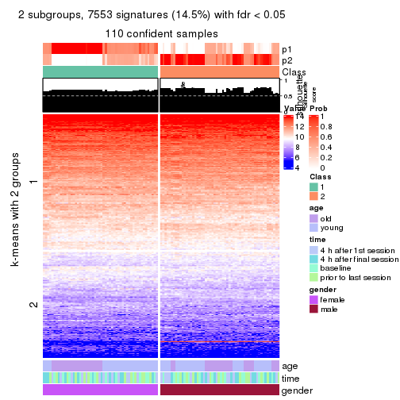
get_signatures(res, k = 3, scale_rows = FALSE)
get_signatures(res, k = 4, scale_rows = FALSE)
get_signatures(res, k = 5, scale_rows = FALSE)
get_signatures(res, k = 6, scale_rows = FALSE)
Compare the overlap of signatures from different k:
compare_signatures(res)
get_signature() returns a data frame invisibly. TO get the list of signatures, the function
call should be assigned to a variable explicitly. In following code, if plot argument is set
to FALSE, no heatmap is plotted while only the differential analysis is performed.
# code only for demonstration
tb = get_signature(res, k = ..., plot = FALSE)
An example of the output of tb is:
#> which_row fdr mean_1 mean_2 scaled_mean_1 scaled_mean_2 km
#> 1 38 0.042760348 8.373488 9.131774 -0.5533452 0.5164555 1
#> 2 40 0.018707592 7.106213 8.469186 -0.6173731 0.5762149 1
#> 3 55 0.019134737 10.221463 11.207825 -0.6159697 0.5749050 1
#> 4 59 0.006059896 5.921854 7.869574 -0.6899429 0.6439467 1
#> 5 60 0.018055526 8.928898 10.211722 -0.6204761 0.5791110 1
#> 6 98 0.009384629 15.714769 14.887706 0.6635654 -0.6193277 2
...
The columns in tb are:
which_row: row indices corresponding to the input matrix.fdr: FDR for the differential test. mean_x: The mean value in group x.scaled_mean_x: The mean value in group x after rows are scaled.km: Row groups if k-means clustering is applied to rows.UMAP plot which shows how samples are separated.
dimension_reduction(res, k = 2, method = "UMAP")
dimension_reduction(res, k = 3, method = "UMAP")
dimension_reduction(res, k = 4, method = "UMAP")
dimension_reduction(res, k = 5, method = "UMAP")
dimension_reduction(res, k = 6, method = "UMAP")
Following heatmap shows how subgroups are split when increasing k:
collect_classes(res)
Test correlation between subgroups and known annotations. If the known annotation is numeric, one-way ANOVA test is applied, and if the known annotation is discrete, chi-squared contingency table test is applied.
test_to_known_factors(res)
#> n age(p) time(p) gender(p) k
#> SD:skmeans 110 1.00e+00 0.998 7.24e-25 2
#> SD:skmeans 104 1.09e-13 1.000 1.05e-21 3
#> SD:skmeans 104 2.14e-22 0.999 2.14e-22 4
#> SD:skmeans 72 1.59e-15 0.973 1.59e-15 5
#> SD:skmeans 34 NA 0.916 5.35e-08 6
If matrix rows can be associated to genes, consider to use GO_Enrichment(res,
...) to perform function enrichment for the signature genes.
The object with results only for a single top-value method and a single partition method can be extracted as:
res = res_list["SD", "pam"]
# you can also extract it by
# res = res_list["SD:pam"]
A summary of res and all the functions that can be applied to it:
res
#> A 'ConsensusPartition' object with k = 2, 3, 4, 5, 6.
#> On a matrix with 51941 rows and 110 columns.
#> Top rows (1000, 2000, 3000, 4000, 5000) are extracted by 'SD' method.
#> Subgroups are detected by 'pam' method.
#> Performed in total 1250 partitions by row resampling.
#> Best k for subgroups seems to be 2.
#>
#> Following methods can be applied to this 'ConsensusPartition' object:
#> [1] "cola_report" "collect_classes" "collect_plots"
#> [4] "collect_stats" "colnames" "compare_signatures"
#> [7] "consensus_heatmap" "dimension_reduction" "functional_enrichment"
#> [10] "get_anno_col" "get_anno" "get_classes"
#> [13] "get_consensus" "get_matrix" "get_membership"
#> [16] "get_param" "get_signatures" "get_stats"
#> [19] "is_best_k" "is_stable_k" "membership_heatmap"
#> [22] "ncol" "nrow" "plot_ecdf"
#> [25] "rownames" "select_partition_number" "show"
#> [28] "suggest_best_k" "test_to_known_factors"
collect_plots() function collects all the plots made from res for all k (number of partitions)
into one single page to provide an easy and fast comparison between different k.
collect_plots(res)
The plots are:
k and the heatmap of
predicted classes for each k.k.k.k.All the plots in panels can be made by individual functions and they are plotted later in this section.
select_partition_number() produces several plots showing different
statistics for choosing “optimized” k. There are following statistics:
k;k, the area increased is defined as \(A_k - A_{k-1}\).The detailed explanations of these statistics can be found in the cola vignette.
Generally speaking, lower PAC score, higher mean silhouette score or higher
concordance corresponds to better partition. Rand index and Jaccard index
measure how similar the current partition is compared to partition with k-1.
If they are too similar, we won't accept k is better than k-1.
select_partition_number(res)

The numeric values for all these statistics can be obtained by get_stats().
get_stats(res)
#> k 1-PAC mean_silhouette concordance area_increased Rand Jaccard
#> 2 2 0.539 0.768 0.902 0.4789 0.533 0.533
#> 3 3 0.467 0.639 0.810 0.2502 0.862 0.748
#> 4 4 0.430 0.470 0.732 0.1565 0.846 0.666
#> 5 5 0.518 0.558 0.749 0.0808 0.862 0.626
#> 6 6 0.596 0.524 0.759 0.0530 0.936 0.763
suggest_best_k() suggests the best \(k\) based on these statistics. The rules are as follows:
NA.suggest_best_k(res)
#> [1] 2
Following shows the table of the partitions (You need to click the show/hide
code output link to see it). The membership matrix (columns with name p*)
is inferred by
clue::cl_consensus()
function with the SE method. Basically the value in the membership matrix
represents the probability to belong to a certain group. The finall class
label for an item is determined with the group with highest probability it
belongs to.
In get_classes() function, the entropy is calculated from the membership
matrix and the silhouette score is calculated from the consensus matrix.
cbind(get_classes(res, k = 2), get_membership(res, k = 2))
#> class entropy silhouette p1 p2
#> GSM702357 2 0.0376 0.8854 0.004 0.996
#> GSM702358 2 0.0000 0.8863 0.000 1.000
#> GSM702359 2 0.0000 0.8863 0.000 1.000
#> GSM702360 2 0.0000 0.8863 0.000 1.000
#> GSM702361 2 0.0000 0.8863 0.000 1.000
#> GSM702362 2 0.0000 0.8863 0.000 1.000
#> GSM702363 2 0.0000 0.8863 0.000 1.000
#> GSM702364 2 0.0000 0.8863 0.000 1.000
#> GSM702413 2 0.4939 0.8282 0.108 0.892
#> GSM702414 1 0.9996 0.0239 0.512 0.488
#> GSM702415 2 0.9661 0.3803 0.392 0.608
#> GSM702416 1 0.2948 0.8604 0.948 0.052
#> GSM702417 2 0.1184 0.8814 0.016 0.984
#> GSM702418 2 0.0000 0.8863 0.000 1.000
#> GSM702419 1 0.9775 0.2844 0.588 0.412
#> GSM702365 2 0.0000 0.8863 0.000 1.000
#> GSM702366 2 0.0000 0.8863 0.000 1.000
#> GSM702367 2 0.0000 0.8863 0.000 1.000
#> GSM702368 2 0.0000 0.8863 0.000 1.000
#> GSM702369 2 0.0376 0.8854 0.004 0.996
#> GSM702370 2 0.0000 0.8863 0.000 1.000
#> GSM702371 2 0.0000 0.8863 0.000 1.000
#> GSM702372 2 0.0000 0.8863 0.000 1.000
#> GSM702420 2 0.6048 0.7961 0.148 0.852
#> GSM702421 1 0.0000 0.8880 1.000 0.000
#> GSM702422 2 0.9866 0.2805 0.432 0.568
#> GSM702423 2 0.9850 0.2900 0.428 0.572
#> GSM702424 1 0.4161 0.8375 0.916 0.084
#> GSM702425 2 0.9983 0.1102 0.476 0.524
#> GSM702426 2 0.9608 0.3942 0.384 0.616
#> GSM702427 1 0.5519 0.8032 0.872 0.128
#> GSM702373 2 0.0000 0.8863 0.000 1.000
#> GSM702374 2 0.0000 0.8863 0.000 1.000
#> GSM702375 2 0.0000 0.8863 0.000 1.000
#> GSM702376 2 0.0000 0.8863 0.000 1.000
#> GSM702377 2 0.0000 0.8863 0.000 1.000
#> GSM702378 2 0.0000 0.8863 0.000 1.000
#> GSM702379 2 0.0000 0.8863 0.000 1.000
#> GSM702380 2 0.0000 0.8863 0.000 1.000
#> GSM702428 2 0.0376 0.8854 0.004 0.996
#> GSM702429 2 0.4298 0.8396 0.088 0.912
#> GSM702430 2 0.1633 0.8780 0.024 0.976
#> GSM702431 2 0.6438 0.7677 0.164 0.836
#> GSM702432 1 0.8661 0.5800 0.712 0.288
#> GSM702433 2 0.0000 0.8863 0.000 1.000
#> GSM702434 2 0.6531 0.7695 0.168 0.832
#> GSM702381 2 0.2423 0.8701 0.040 0.960
#> GSM702382 2 0.3584 0.8505 0.068 0.932
#> GSM702383 2 0.0672 0.8841 0.008 0.992
#> GSM702384 2 0.0000 0.8863 0.000 1.000
#> GSM702385 2 0.0000 0.8863 0.000 1.000
#> GSM702386 2 0.0000 0.8863 0.000 1.000
#> GSM702387 2 0.0000 0.8863 0.000 1.000
#> GSM702388 2 0.0376 0.8854 0.004 0.996
#> GSM702435 1 0.9983 0.0469 0.524 0.476
#> GSM702436 1 0.9988 0.0367 0.520 0.480
#> GSM702437 2 0.8207 0.6538 0.256 0.744
#> GSM702438 1 0.5629 0.7985 0.868 0.132
#> GSM702439 2 0.8608 0.6249 0.284 0.716
#> GSM702440 2 0.8763 0.5998 0.296 0.704
#> GSM702441 2 0.0376 0.8854 0.004 0.996
#> GSM702442 2 0.9323 0.4817 0.348 0.652
#> GSM702389 2 0.0000 0.8863 0.000 1.000
#> GSM702390 2 0.0000 0.8863 0.000 1.000
#> GSM702391 2 0.1184 0.8817 0.016 0.984
#> GSM702392 2 0.8144 0.6470 0.252 0.748
#> GSM702393 1 0.9608 0.3817 0.616 0.384
#> GSM702394 2 0.9087 0.5296 0.324 0.676
#> GSM702443 1 0.0000 0.8880 1.000 0.000
#> GSM702444 1 0.0000 0.8880 1.000 0.000
#> GSM702445 1 0.0000 0.8880 1.000 0.000
#> GSM702446 1 0.0000 0.8880 1.000 0.000
#> GSM702447 1 0.0000 0.8880 1.000 0.000
#> GSM702448 1 0.0000 0.8880 1.000 0.000
#> GSM702395 1 0.8713 0.5830 0.708 0.292
#> GSM702396 2 0.8555 0.6185 0.280 0.720
#> GSM702397 2 0.3879 0.8465 0.076 0.924
#> GSM702398 2 0.0000 0.8863 0.000 1.000
#> GSM702399 1 0.4562 0.8300 0.904 0.096
#> GSM702400 2 0.9954 0.1565 0.460 0.540
#> GSM702449 1 0.0000 0.8880 1.000 0.000
#> GSM702450 1 0.0000 0.8880 1.000 0.000
#> GSM702451 1 0.0000 0.8880 1.000 0.000
#> GSM702452 1 0.0000 0.8880 1.000 0.000
#> GSM702453 1 0.0376 0.8863 0.996 0.004
#> GSM702454 1 0.0000 0.8880 1.000 0.000
#> GSM702401 1 0.8909 0.5520 0.692 0.308
#> GSM702402 2 0.6623 0.7692 0.172 0.828
#> GSM702403 2 0.0376 0.8852 0.004 0.996
#> GSM702404 2 0.0000 0.8863 0.000 1.000
#> GSM702405 1 0.0000 0.8880 1.000 0.000
#> GSM702406 2 0.0000 0.8863 0.000 1.000
#> GSM702455 1 0.0000 0.8880 1.000 0.000
#> GSM702456 1 0.0000 0.8880 1.000 0.000
#> GSM702457 1 0.0376 0.8863 0.996 0.004
#> GSM702458 1 0.1184 0.8803 0.984 0.016
#> GSM702459 1 0.0000 0.8880 1.000 0.000
#> GSM702460 1 0.0000 0.8880 1.000 0.000
#> GSM702407 2 0.5842 0.7909 0.140 0.860
#> GSM702408 2 0.9944 0.1974 0.456 0.544
#> GSM702409 2 0.5519 0.8088 0.128 0.872
#> GSM702410 2 0.9944 0.1981 0.456 0.544
#> GSM702411 1 0.6801 0.7400 0.820 0.180
#> GSM702412 2 0.2043 0.8742 0.032 0.968
#> GSM702461 1 0.0000 0.8880 1.000 0.000
#> GSM702462 1 0.0000 0.8880 1.000 0.000
#> GSM702463 1 0.0000 0.8880 1.000 0.000
#> GSM702464 1 0.0000 0.8880 1.000 0.000
#> GSM702465 1 0.0000 0.8880 1.000 0.000
#> GSM702466 1 0.0000 0.8880 1.000 0.000
cbind(get_classes(res, k = 3), get_membership(res, k = 3))
#> class entropy silhouette p1 p2 p3
#> GSM702357 2 0.1399 0.8536 0.028 0.968 0.004
#> GSM702358 2 0.0592 0.8555 0.012 0.988 0.000
#> GSM702359 2 0.1289 0.8550 0.032 0.968 0.000
#> GSM702360 2 0.0000 0.8552 0.000 1.000 0.000
#> GSM702361 2 0.0000 0.8552 0.000 1.000 0.000
#> GSM702362 2 0.0237 0.8553 0.004 0.996 0.000
#> GSM702363 2 0.0000 0.8552 0.000 1.000 0.000
#> GSM702364 2 0.0000 0.8552 0.000 1.000 0.000
#> GSM702413 2 0.5798 0.7400 0.044 0.780 0.176
#> GSM702414 3 0.4662 0.5789 0.032 0.124 0.844
#> GSM702415 3 0.8050 -0.0697 0.064 0.436 0.500
#> GSM702416 3 0.1950 0.7027 0.040 0.008 0.952
#> GSM702417 2 0.4092 0.8087 0.036 0.876 0.088
#> GSM702418 2 0.0829 0.8543 0.012 0.984 0.004
#> GSM702419 3 0.3802 0.6447 0.032 0.080 0.888
#> GSM702365 2 0.0892 0.8547 0.020 0.980 0.000
#> GSM702366 2 0.1529 0.8524 0.040 0.960 0.000
#> GSM702367 2 0.1031 0.8553 0.024 0.976 0.000
#> GSM702368 2 0.0424 0.8557 0.008 0.992 0.000
#> GSM702369 2 0.1411 0.8543 0.036 0.964 0.000
#> GSM702370 2 0.0237 0.8557 0.004 0.996 0.000
#> GSM702371 2 0.0237 0.8554 0.004 0.996 0.000
#> GSM702372 2 0.1031 0.8558 0.024 0.976 0.000
#> GSM702420 2 0.5981 0.7516 0.132 0.788 0.080
#> GSM702421 1 0.3482 0.6308 0.872 0.000 0.128
#> GSM702422 2 0.9438 0.2963 0.248 0.504 0.248
#> GSM702423 1 0.8721 0.2885 0.504 0.384 0.112
#> GSM702424 1 0.4195 0.6371 0.852 0.012 0.136
#> GSM702425 1 0.9029 0.3583 0.536 0.300 0.164
#> GSM702426 1 0.7234 0.4171 0.640 0.312 0.048
#> GSM702427 3 0.8275 -0.1111 0.452 0.076 0.472
#> GSM702373 2 0.0592 0.8552 0.012 0.988 0.000
#> GSM702374 2 0.0892 0.8547 0.020 0.980 0.000
#> GSM702375 2 0.0747 0.8554 0.016 0.984 0.000
#> GSM702376 2 0.0000 0.8552 0.000 1.000 0.000
#> GSM702377 2 0.0000 0.8552 0.000 1.000 0.000
#> GSM702378 2 0.0000 0.8552 0.000 1.000 0.000
#> GSM702379 2 0.0000 0.8552 0.000 1.000 0.000
#> GSM702380 2 0.0237 0.8555 0.004 0.996 0.000
#> GSM702428 2 0.3406 0.8207 0.028 0.904 0.068
#> GSM702429 2 0.6007 0.7278 0.048 0.768 0.184
#> GSM702430 2 0.3742 0.8191 0.036 0.892 0.072
#> GSM702431 2 0.7348 0.5014 0.044 0.608 0.348
#> GSM702432 3 0.4015 0.6300 0.028 0.096 0.876
#> GSM702433 2 0.3375 0.8256 0.048 0.908 0.044
#> GSM702434 2 0.7250 0.5903 0.056 0.656 0.288
#> GSM702381 2 0.2772 0.8396 0.080 0.916 0.004
#> GSM702382 2 0.4235 0.7454 0.176 0.824 0.000
#> GSM702383 2 0.2356 0.8439 0.072 0.928 0.000
#> GSM702384 2 0.0424 0.8553 0.008 0.992 0.000
#> GSM702385 2 0.0000 0.8552 0.000 1.000 0.000
#> GSM702386 2 0.0000 0.8552 0.000 1.000 0.000
#> GSM702387 2 0.0000 0.8552 0.000 1.000 0.000
#> GSM702388 2 0.0424 0.8564 0.008 0.992 0.000
#> GSM702435 1 0.6804 0.5559 0.724 0.204 0.072
#> GSM702436 1 0.5538 0.6028 0.812 0.072 0.116
#> GSM702437 2 0.7676 0.3857 0.360 0.584 0.056
#> GSM702438 3 0.7603 0.3903 0.236 0.096 0.668
#> GSM702439 2 0.8647 0.5156 0.208 0.600 0.192
#> GSM702440 2 0.8924 0.3954 0.268 0.560 0.172
#> GSM702441 2 0.4443 0.7987 0.052 0.864 0.084
#> GSM702442 2 0.9601 0.0959 0.328 0.456 0.216
#> GSM702389 2 0.3129 0.8238 0.088 0.904 0.008
#> GSM702390 2 0.2945 0.8260 0.088 0.908 0.004
#> GSM702391 2 0.3459 0.8198 0.096 0.892 0.012
#> GSM702392 2 0.7953 0.3627 0.068 0.564 0.368
#> GSM702393 1 0.7824 0.4933 0.664 0.212 0.124
#> GSM702394 2 0.8549 0.2520 0.100 0.516 0.384
#> GSM702443 3 0.2878 0.7470 0.096 0.000 0.904
#> GSM702444 1 0.6308 0.1260 0.508 0.000 0.492
#> GSM702445 3 0.2878 0.7530 0.096 0.000 0.904
#> GSM702446 3 0.3752 0.7252 0.144 0.000 0.856
#> GSM702447 1 0.4702 0.6253 0.788 0.000 0.212
#> GSM702448 3 0.2796 0.7540 0.092 0.000 0.908
#> GSM702395 1 0.9687 0.0742 0.412 0.216 0.372
#> GSM702396 2 0.7174 0.2343 0.460 0.516 0.024
#> GSM702397 2 0.3295 0.8231 0.096 0.896 0.008
#> GSM702398 2 0.1643 0.8504 0.044 0.956 0.000
#> GSM702399 1 0.4059 0.6164 0.860 0.012 0.128
#> GSM702400 2 0.9987 -0.2441 0.332 0.356 0.312
#> GSM702449 3 0.6026 0.3189 0.376 0.000 0.624
#> GSM702450 3 0.5291 0.5658 0.268 0.000 0.732
#> GSM702451 3 0.3038 0.7521 0.104 0.000 0.896
#> GSM702452 3 0.3267 0.7463 0.116 0.000 0.884
#> GSM702453 1 0.4555 0.6289 0.800 0.000 0.200
#> GSM702454 1 0.5591 0.5272 0.696 0.000 0.304
#> GSM702401 1 0.5695 0.5712 0.804 0.120 0.076
#> GSM702402 2 0.7620 0.6180 0.128 0.684 0.188
#> GSM702403 2 0.1182 0.8557 0.012 0.976 0.012
#> GSM702404 2 0.1315 0.8530 0.020 0.972 0.008
#> GSM702405 1 0.6305 0.1511 0.516 0.000 0.484
#> GSM702406 2 0.2955 0.8269 0.080 0.912 0.008
#> GSM702455 3 0.2796 0.7492 0.092 0.000 0.908
#> GSM702456 1 0.6309 0.0842 0.500 0.000 0.500
#> GSM702457 3 0.2796 0.7528 0.092 0.000 0.908
#> GSM702458 3 0.2711 0.7529 0.088 0.000 0.912
#> GSM702459 1 0.4555 0.6289 0.800 0.000 0.200
#> GSM702460 3 0.6192 0.1775 0.420 0.000 0.580
#> GSM702407 2 0.5363 0.6271 0.276 0.724 0.000
#> GSM702408 1 0.7424 0.3696 0.640 0.300 0.060
#> GSM702409 2 0.4995 0.7530 0.144 0.824 0.032
#> GSM702410 2 0.9075 -0.0750 0.388 0.472 0.140
#> GSM702411 1 0.4063 0.6345 0.868 0.020 0.112
#> GSM702412 2 0.4558 0.8036 0.100 0.856 0.044
#> GSM702461 1 0.4654 0.6277 0.792 0.000 0.208
#> GSM702462 1 0.4702 0.6246 0.788 0.000 0.212
#> GSM702463 3 0.3267 0.7474 0.116 0.000 0.884
#> GSM702464 3 0.3412 0.7387 0.124 0.000 0.876
#> GSM702465 1 0.4555 0.6289 0.800 0.000 0.200
#> GSM702466 1 0.6299 0.1881 0.524 0.000 0.476
cbind(get_classes(res, k = 4), get_membership(res, k = 4))
#> class entropy silhouette p1 p2 p3 p4
#> GSM702357 2 0.4600 0.58755 0.240 0.744 0.004 0.012
#> GSM702358 2 0.1767 0.70588 0.044 0.944 0.000 0.012
#> GSM702359 2 0.4585 0.46677 0.332 0.668 0.000 0.000
#> GSM702360 2 0.0376 0.71417 0.004 0.992 0.004 0.000
#> GSM702361 2 0.0000 0.71351 0.000 1.000 0.000 0.000
#> GSM702362 2 0.0188 0.71411 0.004 0.996 0.000 0.000
#> GSM702363 2 0.0000 0.71351 0.000 1.000 0.000 0.000
#> GSM702364 2 0.0000 0.71351 0.000 1.000 0.000 0.000
#> GSM702413 2 0.6574 0.17901 0.324 0.600 0.056 0.020
#> GSM702414 3 0.7512 0.53749 0.128 0.108 0.644 0.120
#> GSM702415 2 0.9128 -0.34774 0.304 0.360 0.268 0.068
#> GSM702416 3 0.5792 0.60700 0.120 0.004 0.720 0.156
#> GSM702417 2 0.4327 0.54016 0.216 0.768 0.000 0.016
#> GSM702418 2 0.2530 0.65920 0.112 0.888 0.000 0.000
#> GSM702419 3 0.6727 0.55475 0.188 0.040 0.676 0.096
#> GSM702365 2 0.4163 0.61562 0.220 0.772 0.004 0.004
#> GSM702366 2 0.5345 0.53288 0.292 0.680 0.016 0.012
#> GSM702367 2 0.3401 0.67840 0.152 0.840 0.008 0.000
#> GSM702368 2 0.2647 0.68556 0.120 0.880 0.000 0.000
#> GSM702369 2 0.4420 0.63193 0.204 0.776 0.012 0.008
#> GSM702370 2 0.0336 0.71472 0.008 0.992 0.000 0.000
#> GSM702371 2 0.0188 0.71386 0.004 0.996 0.000 0.000
#> GSM702372 2 0.4284 0.64096 0.200 0.780 0.020 0.000
#> GSM702420 1 0.6341 0.49619 0.656 0.264 0.024 0.056
#> GSM702421 4 0.2149 0.62213 0.088 0.000 0.000 0.912
#> GSM702422 1 0.6009 0.58064 0.736 0.148 0.040 0.076
#> GSM702423 4 0.7808 -0.27625 0.200 0.328 0.008 0.464
#> GSM702424 4 0.2976 0.60304 0.120 0.000 0.008 0.872
#> GSM702425 1 0.7224 0.44647 0.532 0.144 0.004 0.320
#> GSM702426 1 0.7398 0.32588 0.424 0.164 0.000 0.412
#> GSM702427 1 0.8266 0.04893 0.424 0.028 0.188 0.360
#> GSM702373 2 0.3751 0.63416 0.196 0.800 0.004 0.000
#> GSM702374 2 0.4123 0.61375 0.220 0.772 0.000 0.008
#> GSM702375 2 0.3052 0.67995 0.136 0.860 0.004 0.000
#> GSM702376 2 0.0000 0.71351 0.000 1.000 0.000 0.000
#> GSM702377 2 0.0000 0.71351 0.000 1.000 0.000 0.000
#> GSM702378 2 0.0000 0.71351 0.000 1.000 0.000 0.000
#> GSM702379 2 0.0000 0.71351 0.000 1.000 0.000 0.000
#> GSM702380 2 0.0657 0.71444 0.012 0.984 0.004 0.000
#> GSM702428 2 0.3649 0.56451 0.204 0.796 0.000 0.000
#> GSM702429 2 0.6616 -0.22819 0.456 0.480 0.052 0.012
#> GSM702430 2 0.3585 0.60907 0.164 0.828 0.004 0.004
#> GSM702431 2 0.8117 -0.09707 0.268 0.476 0.236 0.020
#> GSM702432 3 0.7020 0.55863 0.156 0.064 0.672 0.108
#> GSM702433 2 0.4888 0.05629 0.412 0.588 0.000 0.000
#> GSM702434 2 0.7828 0.08885 0.264 0.560 0.128 0.048
#> GSM702381 2 0.5795 0.55393 0.244 0.696 0.020 0.040
#> GSM702382 2 0.5850 0.54304 0.188 0.708 0.004 0.100
#> GSM702383 2 0.5703 0.48482 0.320 0.644 0.012 0.024
#> GSM702384 2 0.1305 0.71269 0.036 0.960 0.004 0.000
#> GSM702385 2 0.0188 0.71416 0.004 0.996 0.000 0.000
#> GSM702386 2 0.0000 0.71351 0.000 1.000 0.000 0.000
#> GSM702387 2 0.0376 0.71431 0.004 0.992 0.000 0.004
#> GSM702388 2 0.3182 0.67710 0.132 0.860 0.004 0.004
#> GSM702435 4 0.4656 0.42270 0.056 0.160 0.000 0.784
#> GSM702436 4 0.4281 0.49703 0.180 0.028 0.000 0.792
#> GSM702437 1 0.7429 0.56463 0.496 0.308 0.000 0.196
#> GSM702438 3 0.9113 0.23574 0.216 0.092 0.432 0.260
#> GSM702439 1 0.6113 0.59668 0.708 0.200 0.036 0.056
#> GSM702440 1 0.7665 0.38939 0.468 0.396 0.028 0.108
#> GSM702441 2 0.5000 -0.16982 0.496 0.504 0.000 0.000
#> GSM702442 1 0.8527 0.55512 0.508 0.248 0.072 0.172
#> GSM702389 2 0.5620 0.48447 0.084 0.708 0.208 0.000
#> GSM702390 2 0.6308 0.39036 0.120 0.648 0.232 0.000
#> GSM702391 2 0.6529 0.42066 0.108 0.656 0.224 0.012
#> GSM702392 3 0.7056 -0.20914 0.052 0.436 0.480 0.032
#> GSM702393 4 0.8093 0.23612 0.076 0.168 0.180 0.576
#> GSM702394 3 0.7192 -0.18636 0.128 0.360 0.508 0.004
#> GSM702443 3 0.3764 0.65201 0.000 0.000 0.784 0.216
#> GSM702444 4 0.4605 0.30735 0.000 0.000 0.336 0.664
#> GSM702445 3 0.4040 0.64975 0.000 0.000 0.752 0.248
#> GSM702446 3 0.4356 0.61283 0.000 0.000 0.708 0.292
#> GSM702447 4 0.0921 0.67323 0.000 0.000 0.028 0.972
#> GSM702448 3 0.4122 0.65323 0.004 0.000 0.760 0.236
#> GSM702395 3 0.9261 -0.12900 0.136 0.144 0.388 0.332
#> GSM702396 1 0.9815 0.26456 0.328 0.276 0.180 0.216
#> GSM702397 2 0.4484 0.65734 0.072 0.836 0.040 0.052
#> GSM702398 2 0.4318 0.66112 0.116 0.816 0.068 0.000
#> GSM702399 4 0.7136 0.31926 0.188 0.004 0.228 0.580
#> GSM702400 3 0.9358 -0.19108 0.176 0.192 0.444 0.188
#> GSM702449 4 0.5378 -0.09821 0.012 0.000 0.448 0.540
#> GSM702450 3 0.4925 0.38636 0.000 0.000 0.572 0.428
#> GSM702451 3 0.4164 0.64533 0.000 0.000 0.736 0.264
#> GSM702452 3 0.4164 0.64022 0.000 0.000 0.736 0.264
#> GSM702453 4 0.0592 0.67459 0.000 0.000 0.016 0.984
#> GSM702454 4 0.3052 0.60539 0.004 0.000 0.136 0.860
#> GSM702401 4 0.7479 0.31505 0.112 0.044 0.248 0.596
#> GSM702402 2 0.7626 0.08528 0.124 0.480 0.376 0.020
#> GSM702403 2 0.1284 0.71321 0.024 0.964 0.012 0.000
#> GSM702404 2 0.0895 0.71251 0.004 0.976 0.020 0.000
#> GSM702405 4 0.4605 0.35936 0.000 0.000 0.336 0.664
#> GSM702406 2 0.5288 0.51546 0.068 0.732 0.200 0.000
#> GSM702455 3 0.3688 0.64936 0.000 0.000 0.792 0.208
#> GSM702456 4 0.4543 0.31610 0.000 0.000 0.324 0.676
#> GSM702457 3 0.4040 0.65002 0.000 0.000 0.752 0.248
#> GSM702458 3 0.3942 0.65233 0.000 0.000 0.764 0.236
#> GSM702459 4 0.0592 0.67459 0.000 0.000 0.016 0.984
#> GSM702460 4 0.4925 -0.00621 0.000 0.000 0.428 0.572
#> GSM702407 2 0.7589 0.34936 0.160 0.604 0.044 0.192
#> GSM702408 1 0.9477 0.22409 0.408 0.148 0.248 0.196
#> GSM702409 2 0.3790 0.60441 0.016 0.820 0.000 0.164
#> GSM702410 2 0.6746 -0.17423 0.020 0.480 0.048 0.452
#> GSM702411 4 0.3504 0.59103 0.012 0.012 0.116 0.860
#> GSM702412 2 0.7039 0.28475 0.176 0.568 0.256 0.000
#> GSM702461 4 0.0817 0.67425 0.000 0.000 0.024 0.976
#> GSM702462 4 0.1118 0.67062 0.000 0.000 0.036 0.964
#> GSM702463 3 0.4250 0.63828 0.000 0.000 0.724 0.276
#> GSM702464 3 0.4222 0.63112 0.000 0.000 0.728 0.272
#> GSM702465 4 0.0592 0.67459 0.000 0.000 0.016 0.984
#> GSM702466 4 0.4454 0.37143 0.000 0.000 0.308 0.692
cbind(get_classes(res, k = 5), get_membership(res, k = 5))
#> class entropy silhouette p1 p2 p3 p4 p5
#> GSM702357 2 0.6526 0.50308 0.188 0.584 0.000 0.200 0.028
#> GSM702358 2 0.2674 0.70308 0.060 0.896 0.000 0.032 0.012
#> GSM702359 2 0.5660 0.47728 0.280 0.620 0.000 0.092 0.008
#> GSM702360 2 0.0290 0.72922 0.000 0.992 0.000 0.008 0.000
#> GSM702361 2 0.0162 0.73018 0.004 0.996 0.000 0.000 0.000
#> GSM702362 2 0.0162 0.73063 0.000 0.996 0.000 0.004 0.000
#> GSM702363 2 0.0000 0.72971 0.000 1.000 0.000 0.000 0.000
#> GSM702364 2 0.0000 0.72971 0.000 1.000 0.000 0.000 0.000
#> GSM702413 2 0.5454 -0.10511 0.404 0.532 0.064 0.000 0.000
#> GSM702414 3 0.5337 0.64482 0.108 0.104 0.744 0.012 0.032
#> GSM702415 1 0.7888 0.26815 0.332 0.328 0.292 0.028 0.020
#> GSM702416 3 0.3141 0.76391 0.096 0.004 0.860 0.000 0.040
#> GSM702417 2 0.4080 0.46669 0.252 0.728 0.000 0.000 0.020
#> GSM702418 2 0.2648 0.64348 0.152 0.848 0.000 0.000 0.000
#> GSM702419 3 0.4906 0.64882 0.220 0.036 0.720 0.004 0.020
#> GSM702365 2 0.6050 0.56374 0.156 0.640 0.000 0.180 0.024
#> GSM702366 2 0.6952 0.45082 0.196 0.528 0.000 0.240 0.036
#> GSM702367 2 0.4637 0.67347 0.088 0.772 0.000 0.120 0.020
#> GSM702368 2 0.3266 0.70388 0.076 0.860 0.000 0.056 0.008
#> GSM702369 2 0.5161 0.64755 0.116 0.728 0.000 0.136 0.020
#> GSM702370 2 0.0324 0.73080 0.004 0.992 0.000 0.004 0.000
#> GSM702371 2 0.0451 0.72994 0.000 0.988 0.000 0.004 0.008
#> GSM702372 2 0.5557 0.61538 0.120 0.680 0.000 0.184 0.016
#> GSM702420 1 0.6148 0.56080 0.680 0.152 0.008 0.068 0.092
#> GSM702421 5 0.1408 0.71059 0.044 0.000 0.008 0.000 0.948
#> GSM702422 1 0.4369 0.63599 0.804 0.080 0.012 0.012 0.092
#> GSM702423 5 0.7799 -0.15040 0.212 0.280 0.032 0.028 0.448
#> GSM702424 5 0.2295 0.67865 0.088 0.000 0.008 0.004 0.900
#> GSM702425 1 0.5490 0.59240 0.688 0.084 0.012 0.008 0.208
#> GSM702426 1 0.5268 0.50007 0.612 0.068 0.000 0.000 0.320
#> GSM702427 1 0.6461 0.28739 0.516 0.008 0.136 0.004 0.336
#> GSM702373 2 0.5435 0.60999 0.128 0.696 0.000 0.160 0.016
#> GSM702374 2 0.5725 0.58958 0.160 0.672 0.000 0.148 0.020
#> GSM702375 2 0.4580 0.67000 0.084 0.772 0.000 0.128 0.016
#> GSM702376 2 0.0000 0.72971 0.000 1.000 0.000 0.000 0.000
#> GSM702377 2 0.0000 0.72971 0.000 1.000 0.000 0.000 0.000
#> GSM702378 2 0.0000 0.72971 0.000 1.000 0.000 0.000 0.000
#> GSM702379 2 0.0000 0.72971 0.000 1.000 0.000 0.000 0.000
#> GSM702380 2 0.0609 0.72815 0.000 0.980 0.000 0.020 0.000
#> GSM702428 2 0.3424 0.50591 0.240 0.760 0.000 0.000 0.000
#> GSM702429 1 0.5232 0.57062 0.600 0.340 0.060 0.000 0.000
#> GSM702430 2 0.3722 0.57180 0.176 0.796 0.004 0.000 0.024
#> GSM702431 2 0.6794 -0.22407 0.328 0.428 0.240 0.000 0.004
#> GSM702432 3 0.4791 0.66165 0.168 0.064 0.748 0.000 0.020
#> GSM702433 1 0.4114 0.55387 0.624 0.376 0.000 0.000 0.000
#> GSM702434 2 0.6591 0.00546 0.288 0.536 0.156 0.000 0.020
#> GSM702381 2 0.7061 0.47427 0.184 0.548 0.000 0.208 0.060
#> GSM702382 2 0.6398 0.56171 0.144 0.644 0.000 0.136 0.076
#> GSM702383 2 0.7149 0.42544 0.208 0.508 0.000 0.240 0.044
#> GSM702384 2 0.1628 0.72786 0.008 0.936 0.000 0.056 0.000
#> GSM702385 2 0.0324 0.73058 0.004 0.992 0.000 0.004 0.000
#> GSM702386 2 0.0000 0.72971 0.000 1.000 0.000 0.000 0.000
#> GSM702387 2 0.0324 0.73074 0.004 0.992 0.000 0.000 0.004
#> GSM702388 2 0.4254 0.67851 0.096 0.796 0.000 0.096 0.012
#> GSM702435 5 0.3731 0.59888 0.032 0.124 0.012 0.004 0.828
#> GSM702436 5 0.4174 0.62213 0.148 0.016 0.016 0.020 0.800
#> GSM702437 1 0.5853 0.64899 0.644 0.172 0.000 0.012 0.172
#> GSM702438 3 0.7529 0.36411 0.180 0.092 0.500 0.000 0.228
#> GSM702439 1 0.4338 0.65270 0.792 0.112 0.000 0.016 0.080
#> GSM702440 1 0.6000 0.60144 0.608 0.284 0.012 0.008 0.088
#> GSM702441 1 0.4262 0.62623 0.696 0.288 0.000 0.004 0.012
#> GSM702442 1 0.7243 0.55869 0.596 0.164 0.048 0.040 0.152
#> GSM702389 4 0.4306 0.34504 0.000 0.492 0.000 0.508 0.000
#> GSM702390 4 0.3636 0.62625 0.000 0.272 0.000 0.728 0.000
#> GSM702391 4 0.4375 0.50430 0.000 0.420 0.000 0.576 0.004
#> GSM702392 2 0.7048 -0.21163 0.012 0.428 0.344 0.212 0.004
#> GSM702393 5 0.7777 0.36361 0.036 0.148 0.084 0.184 0.548
#> GSM702394 4 0.4519 0.60617 0.000 0.148 0.100 0.752 0.000
#> GSM702443 3 0.0693 0.79544 0.000 0.000 0.980 0.008 0.012
#> GSM702444 3 0.4440 -0.08500 0.000 0.000 0.528 0.004 0.468
#> GSM702445 3 0.0510 0.79550 0.000 0.000 0.984 0.000 0.016
#> GSM702446 3 0.1671 0.78740 0.000 0.000 0.924 0.000 0.076
#> GSM702447 5 0.2280 0.73428 0.000 0.000 0.120 0.000 0.880
#> GSM702448 3 0.0162 0.79390 0.000 0.000 0.996 0.000 0.004
#> GSM702395 4 0.8411 0.21982 0.024 0.104 0.224 0.432 0.216
#> GSM702396 4 0.8086 0.20396 0.184 0.164 0.004 0.460 0.188
#> GSM702397 2 0.3867 0.65455 0.012 0.824 0.000 0.088 0.076
#> GSM702398 2 0.4406 0.64587 0.044 0.768 0.000 0.172 0.016
#> GSM702399 5 0.6452 0.30566 0.108 0.000 0.028 0.324 0.540
#> GSM702400 4 0.5031 0.55617 0.004 0.060 0.084 0.768 0.084
#> GSM702449 3 0.4610 0.20178 0.012 0.000 0.556 0.000 0.432
#> GSM702450 3 0.3274 0.63934 0.000 0.000 0.780 0.000 0.220
#> GSM702451 3 0.2020 0.78333 0.000 0.000 0.900 0.000 0.100
#> GSM702452 3 0.1043 0.79503 0.000 0.000 0.960 0.000 0.040
#> GSM702453 5 0.1908 0.73751 0.000 0.000 0.092 0.000 0.908
#> GSM702454 5 0.3480 0.62142 0.000 0.000 0.248 0.000 0.752
#> GSM702401 4 0.4763 0.24789 0.000 0.016 0.008 0.624 0.352
#> GSM702402 4 0.4674 0.63201 0.000 0.212 0.052 0.728 0.008
#> GSM702403 2 0.1329 0.72560 0.004 0.956 0.008 0.032 0.000
#> GSM702404 2 0.0609 0.72547 0.000 0.980 0.000 0.020 0.000
#> GSM702405 5 0.4882 0.19695 0.000 0.000 0.444 0.024 0.532
#> GSM702406 4 0.4278 0.45171 0.000 0.452 0.000 0.548 0.000
#> GSM702455 3 0.0162 0.79243 0.000 0.000 0.996 0.004 0.000
#> GSM702456 5 0.4291 0.19066 0.000 0.000 0.464 0.000 0.536
#> GSM702457 3 0.1478 0.79362 0.000 0.000 0.936 0.000 0.064
#> GSM702458 3 0.0162 0.79367 0.000 0.000 0.996 0.000 0.004
#> GSM702459 5 0.1908 0.73751 0.000 0.000 0.092 0.000 0.908
#> GSM702460 3 0.4030 0.35449 0.000 0.000 0.648 0.000 0.352
#> GSM702407 2 0.7454 0.32796 0.104 0.524 0.000 0.188 0.184
#> GSM702408 4 0.1483 0.53364 0.012 0.028 0.000 0.952 0.008
#> GSM702409 2 0.3552 0.62051 0.000 0.812 0.012 0.012 0.164
#> GSM702410 2 0.6278 -0.03592 0.000 0.476 0.088 0.020 0.416
#> GSM702411 5 0.2408 0.70465 0.000 0.000 0.016 0.092 0.892
#> GSM702412 4 0.3883 0.63319 0.004 0.244 0.008 0.744 0.000
#> GSM702461 5 0.2074 0.73698 0.000 0.000 0.104 0.000 0.896
#> GSM702462 5 0.2648 0.72299 0.000 0.000 0.152 0.000 0.848
#> GSM702463 3 0.2074 0.78267 0.000 0.000 0.896 0.000 0.104
#> GSM702464 3 0.1671 0.79062 0.000 0.000 0.924 0.000 0.076
#> GSM702465 5 0.1908 0.73751 0.000 0.000 0.092 0.000 0.908
#> GSM702466 5 0.4249 0.27409 0.000 0.000 0.432 0.000 0.568
cbind(get_classes(res, k = 6), get_membership(res, k = 6))
#> class entropy silhouette p1 p2 p3 p4 p5 p6
#> GSM702357 5 0.3426 0.70692 0.000 0.004 0.000 0.000 0.720 0.276
#> GSM702358 6 0.2793 0.42414 0.000 0.000 0.000 0.000 0.200 0.800
#> GSM702359 6 0.6157 -0.10682 0.000 0.020 0.000 0.200 0.280 0.500
#> GSM702360 6 0.0146 0.66123 0.000 0.004 0.000 0.000 0.000 0.996
#> GSM702361 6 0.0632 0.66006 0.000 0.000 0.000 0.000 0.024 0.976
#> GSM702362 6 0.0146 0.65994 0.000 0.000 0.000 0.000 0.004 0.996
#> GSM702363 6 0.0000 0.66033 0.000 0.000 0.000 0.000 0.000 1.000
#> GSM702364 6 0.0000 0.66033 0.000 0.000 0.000 0.000 0.000 1.000
#> GSM702413 6 0.5909 0.06333 0.000 0.000 0.044 0.368 0.084 0.504
#> GSM702414 3 0.5008 0.65211 0.020 0.000 0.732 0.112 0.032 0.104
#> GSM702415 6 0.8199 -0.22665 0.020 0.008 0.268 0.220 0.172 0.312
#> GSM702416 3 0.3476 0.76036 0.032 0.000 0.840 0.056 0.068 0.004
#> GSM702417 6 0.4880 0.46672 0.020 0.000 0.000 0.164 0.116 0.700
#> GSM702418 6 0.2854 0.51555 0.000 0.000 0.000 0.208 0.000 0.792
#> GSM702419 3 0.5546 0.64563 0.024 0.004 0.692 0.132 0.116 0.032
#> GSM702365 5 0.3841 0.65042 0.000 0.004 0.000 0.000 0.616 0.380
#> GSM702366 5 0.4047 0.70331 0.000 0.036 0.000 0.004 0.716 0.244
#> GSM702367 6 0.4662 0.12967 0.000 0.032 0.000 0.012 0.352 0.604
#> GSM702368 6 0.2597 0.52561 0.000 0.000 0.000 0.000 0.176 0.824
#> GSM702369 6 0.4357 0.08389 0.004 0.016 0.000 0.004 0.368 0.608
#> GSM702370 6 0.0935 0.65912 0.000 0.000 0.000 0.004 0.032 0.964
#> GSM702371 6 0.1285 0.64700 0.000 0.004 0.000 0.000 0.052 0.944
#> GSM702372 5 0.5198 0.31500 0.000 0.052 0.000 0.016 0.476 0.456
#> GSM702420 4 0.5136 0.62805 0.024 0.020 0.004 0.700 0.196 0.056
#> GSM702421 1 0.1644 0.71971 0.932 0.000 0.004 0.052 0.012 0.000
#> GSM702422 4 0.2265 0.67551 0.024 0.004 0.000 0.896 0.076 0.000
#> GSM702423 1 0.7429 -0.02824 0.436 0.016 0.024 0.220 0.040 0.264
#> GSM702424 1 0.2266 0.68235 0.880 0.000 0.000 0.108 0.012 0.000
#> GSM702425 4 0.5413 0.67972 0.140 0.008 0.008 0.700 0.100 0.044
#> GSM702426 4 0.4214 0.67168 0.192 0.000 0.000 0.744 0.024 0.040
#> GSM702427 4 0.5674 0.47639 0.260 0.004 0.100 0.608 0.024 0.004
#> GSM702373 5 0.3867 0.43874 0.000 0.000 0.000 0.000 0.512 0.488
#> GSM702374 6 0.3857 -0.40572 0.000 0.000 0.000 0.000 0.468 0.532
#> GSM702375 6 0.3547 0.07517 0.000 0.000 0.000 0.000 0.332 0.668
#> GSM702376 6 0.0000 0.66033 0.000 0.000 0.000 0.000 0.000 1.000
#> GSM702377 6 0.0632 0.66006 0.000 0.000 0.000 0.000 0.024 0.976
#> GSM702378 6 0.0000 0.66033 0.000 0.000 0.000 0.000 0.000 1.000
#> GSM702379 6 0.0000 0.66033 0.000 0.000 0.000 0.000 0.000 1.000
#> GSM702380 6 0.0632 0.65836 0.000 0.024 0.000 0.000 0.000 0.976
#> GSM702428 6 0.4114 0.49863 0.000 0.000 0.000 0.196 0.072 0.732
#> GSM702429 4 0.5478 0.56817 0.000 0.000 0.044 0.612 0.072 0.272
#> GSM702430 6 0.4115 0.54674 0.020 0.000 0.004 0.132 0.064 0.780
#> GSM702431 6 0.7465 -0.06791 0.008 0.000 0.224 0.252 0.116 0.400
#> GSM702432 3 0.5224 0.66054 0.020 0.000 0.724 0.096 0.100 0.060
#> GSM702433 4 0.3641 0.64145 0.000 0.000 0.000 0.732 0.020 0.248
#> GSM702434 6 0.6941 0.22002 0.016 0.000 0.148 0.224 0.092 0.520
#> GSM702381 5 0.3964 0.71399 0.016 0.016 0.000 0.000 0.724 0.244
#> GSM702382 6 0.4534 -0.48457 0.032 0.000 0.000 0.000 0.472 0.496
#> GSM702383 5 0.4178 0.69754 0.000 0.032 0.000 0.008 0.700 0.260
#> GSM702384 6 0.1644 0.61659 0.000 0.004 0.000 0.000 0.076 0.920
#> GSM702385 6 0.0777 0.65961 0.000 0.004 0.000 0.000 0.024 0.972
#> GSM702386 6 0.0146 0.66118 0.000 0.000 0.000 0.000 0.004 0.996
#> GSM702387 6 0.0260 0.65969 0.000 0.000 0.000 0.000 0.008 0.992
#> GSM702388 6 0.3136 0.38697 0.004 0.000 0.000 0.000 0.228 0.768
#> GSM702435 1 0.4360 0.60518 0.772 0.000 0.004 0.032 0.088 0.104
#> GSM702436 1 0.4121 0.59511 0.748 0.000 0.000 0.116 0.136 0.000
#> GSM702437 4 0.4711 0.72057 0.104 0.004 0.000 0.752 0.068 0.072
#> GSM702438 3 0.7501 0.35610 0.220 0.000 0.484 0.152 0.052 0.092
#> GSM702439 4 0.4166 0.71750 0.044 0.000 0.000 0.784 0.104 0.068
#> GSM702440 4 0.5924 0.62225 0.052 0.008 0.004 0.624 0.092 0.220
#> GSM702441 4 0.3823 0.69342 0.004 0.000 0.000 0.764 0.048 0.184
#> GSM702442 4 0.7287 0.44602 0.096 0.000 0.036 0.464 0.292 0.112
#> GSM702389 2 0.3765 0.32666 0.000 0.596 0.000 0.000 0.000 0.404
#> GSM702390 2 0.1610 0.73748 0.000 0.916 0.000 0.000 0.000 0.084
#> GSM702391 2 0.3738 0.50965 0.004 0.680 0.000 0.004 0.000 0.312
#> GSM702392 6 0.6358 0.00256 0.000 0.216 0.344 0.008 0.008 0.424
#> GSM702393 1 0.7328 0.38734 0.536 0.112 0.064 0.000 0.152 0.136
#> GSM702394 2 0.1421 0.73248 0.000 0.944 0.028 0.000 0.000 0.028
#> GSM702443 3 0.0717 0.79209 0.016 0.008 0.976 0.000 0.000 0.000
#> GSM702444 3 0.4097 -0.11340 0.492 0.008 0.500 0.000 0.000 0.000
#> GSM702445 3 0.0547 0.79253 0.020 0.000 0.980 0.000 0.000 0.000
#> GSM702446 3 0.1556 0.78654 0.080 0.000 0.920 0.000 0.000 0.000
#> GSM702447 1 0.1444 0.73756 0.928 0.000 0.072 0.000 0.000 0.000
#> GSM702448 3 0.0146 0.79022 0.004 0.000 0.996 0.000 0.000 0.000
#> GSM702395 2 0.8341 0.20109 0.200 0.400 0.216 0.012 0.088 0.084
#> GSM702396 5 0.5950 0.41921 0.080 0.176 0.000 0.012 0.640 0.092
#> GSM702397 6 0.4184 0.56134 0.052 0.048 0.000 0.004 0.108 0.788
#> GSM702398 6 0.4688 0.38538 0.000 0.084 0.000 0.012 0.208 0.696
#> GSM702399 1 0.6344 0.20236 0.444 0.180 0.028 0.000 0.348 0.000
#> GSM702400 2 0.1515 0.72140 0.028 0.944 0.020 0.000 0.000 0.008
#> GSM702449 3 0.4251 0.17603 0.468 0.004 0.520 0.004 0.004 0.000
#> GSM702450 3 0.3109 0.64214 0.224 0.004 0.772 0.000 0.000 0.000
#> GSM702451 3 0.1957 0.78053 0.112 0.000 0.888 0.000 0.000 0.000
#> GSM702452 3 0.1075 0.79136 0.048 0.000 0.952 0.000 0.000 0.000
#> GSM702453 1 0.0865 0.74003 0.964 0.000 0.036 0.000 0.000 0.000
#> GSM702454 1 0.2994 0.62359 0.788 0.004 0.208 0.000 0.000 0.000
#> GSM702401 2 0.3368 0.55754 0.232 0.756 0.000 0.000 0.000 0.012
#> GSM702402 2 0.1682 0.73992 0.000 0.928 0.020 0.000 0.000 0.052
#> GSM702403 6 0.1121 0.65711 0.000 0.016 0.008 0.004 0.008 0.964
#> GSM702404 6 0.0547 0.66037 0.000 0.020 0.000 0.000 0.000 0.980
#> GSM702405 1 0.4682 0.16613 0.548 0.020 0.416 0.000 0.016 0.000
#> GSM702406 2 0.3390 0.53245 0.000 0.704 0.000 0.000 0.000 0.296
#> GSM702455 3 0.0146 0.78874 0.000 0.004 0.996 0.000 0.000 0.000
#> GSM702456 1 0.3944 0.21773 0.568 0.004 0.428 0.000 0.000 0.000
#> GSM702457 3 0.1444 0.79010 0.072 0.000 0.928 0.000 0.000 0.000
#> GSM702458 3 0.0146 0.79010 0.004 0.000 0.996 0.000 0.000 0.000
#> GSM702459 1 0.0865 0.74003 0.964 0.000 0.036 0.000 0.000 0.000
#> GSM702460 3 0.3647 0.35744 0.360 0.000 0.640 0.000 0.000 0.000
#> GSM702407 5 0.6550 0.54363 0.108 0.068 0.000 0.004 0.444 0.376
#> GSM702408 2 0.1003 0.71452 0.004 0.964 0.000 0.004 0.028 0.000
#> GSM702409 6 0.3823 0.53384 0.148 0.004 0.008 0.000 0.052 0.788
#> GSM702410 6 0.5601 0.04174 0.440 0.012 0.060 0.000 0.016 0.472
#> GSM702411 1 0.1462 0.72439 0.936 0.056 0.000 0.000 0.008 0.000
#> GSM702412 2 0.1471 0.74043 0.000 0.932 0.000 0.000 0.004 0.064
#> GSM702461 1 0.1075 0.74023 0.952 0.000 0.048 0.000 0.000 0.000
#> GSM702462 1 0.2053 0.72541 0.888 0.004 0.108 0.000 0.000 0.000
#> GSM702463 3 0.2003 0.78000 0.116 0.000 0.884 0.000 0.000 0.000
#> GSM702464 3 0.1610 0.78815 0.084 0.000 0.916 0.000 0.000 0.000
#> GSM702465 1 0.0865 0.74003 0.964 0.000 0.036 0.000 0.000 0.000
#> GSM702466 1 0.3756 0.27898 0.600 0.000 0.400 0.000 0.000 0.000
Heatmaps for the consensus matrix. It visualizes the probability of two samples to be in a same group.
consensus_heatmap(res, k = 2)
consensus_heatmap(res, k = 3)
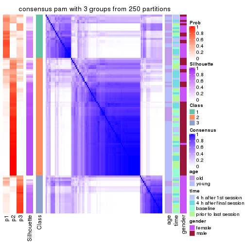
consensus_heatmap(res, k = 4)
consensus_heatmap(res, k = 5)
consensus_heatmap(res, k = 6)
Heatmaps for the membership of samples in all partitions to see how consistent they are:
membership_heatmap(res, k = 2)
membership_heatmap(res, k = 3)
membership_heatmap(res, k = 4)
membership_heatmap(res, k = 5)
membership_heatmap(res, k = 6)
As soon as we have had the classes for columns, we can look for signatures which are significantly different between classes which can be candidate marks for certain classes. Following are the heatmaps for signatures.
Signature heatmaps where rows are scaled:
get_signatures(res, k = 2)
get_signatures(res, k = 3)
get_signatures(res, k = 4)
get_signatures(res, k = 5)
get_signatures(res, k = 6)
Signature heatmaps where rows are not scaled:
get_signatures(res, k = 2, scale_rows = FALSE)

get_signatures(res, k = 3, scale_rows = FALSE)
get_signatures(res, k = 4, scale_rows = FALSE)
get_signatures(res, k = 5, scale_rows = FALSE)
get_signatures(res, k = 6, scale_rows = FALSE)
Compare the overlap of signatures from different k:
compare_signatures(res)
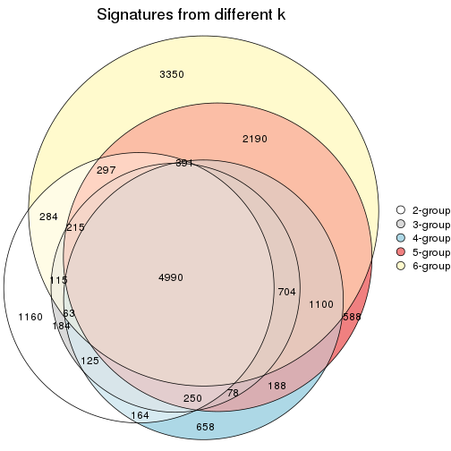
get_signature() returns a data frame invisibly. TO get the list of signatures, the function
call should be assigned to a variable explicitly. In following code, if plot argument is set
to FALSE, no heatmap is plotted while only the differential analysis is performed.
# code only for demonstration
tb = get_signature(res, k = ..., plot = FALSE)
An example of the output of tb is:
#> which_row fdr mean_1 mean_2 scaled_mean_1 scaled_mean_2 km
#> 1 38 0.042760348 8.373488 9.131774 -0.5533452 0.5164555 1
#> 2 40 0.018707592 7.106213 8.469186 -0.6173731 0.5762149 1
#> 3 55 0.019134737 10.221463 11.207825 -0.6159697 0.5749050 1
#> 4 59 0.006059896 5.921854 7.869574 -0.6899429 0.6439467 1
#> 5 60 0.018055526 8.928898 10.211722 -0.6204761 0.5791110 1
#> 6 98 0.009384629 15.714769 14.887706 0.6635654 -0.6193277 2
...
The columns in tb are:
which_row: row indices corresponding to the input matrix.fdr: FDR for the differential test. mean_x: The mean value in group x.scaled_mean_x: The mean value in group x after rows are scaled.km: Row groups if k-means clustering is applied to rows.UMAP plot which shows how samples are separated.
dimension_reduction(res, k = 2, method = "UMAP")
dimension_reduction(res, k = 3, method = "UMAP")
dimension_reduction(res, k = 4, method = "UMAP")
dimension_reduction(res, k = 5, method = "UMAP")
dimension_reduction(res, k = 6, method = "UMAP")
Following heatmap shows how subgroups are split when increasing k:
collect_classes(res)
Test correlation between subgroups and known annotations. If the known annotation is numeric, one-way ANOVA test is applied, and if the known annotation is discrete, chi-squared contingency table test is applied.
test_to_known_factors(res)
#> n age(p) time(p) gender(p) k
#> SD:pam 96 1.15e-07 0.6182 1.02e-08 2
#> SD:pam 86 1.62e-05 0.1428 4.48e-09 3
#> SD:pam 69 5.08e-06 0.0783 5.13e-11 4
#> SD:pam 82 4.14e-08 0.1178 8.29e-14 5
#> SD:pam 76 8.11e-07 0.2022 1.11e-12 6
If matrix rows can be associated to genes, consider to use GO_Enrichment(res,
...) to perform function enrichment for the signature genes.
The object with results only for a single top-value method and a single partition method can be extracted as:
res = res_list["SD", "mclust"]
# you can also extract it by
# res = res_list["SD:mclust"]
A summary of res and all the functions that can be applied to it:
res
#> A 'ConsensusPartition' object with k = 2, 3, 4, 5, 6.
#> On a matrix with 51941 rows and 110 columns.
#> Top rows (1000, 2000, 3000, 4000, 5000) are extracted by 'SD' method.
#> Subgroups are detected by 'mclust' method.
#> Performed in total 1250 partitions by row resampling.
#> Best k for subgroups seems to be 3.
#>
#> Following methods can be applied to this 'ConsensusPartition' object:
#> [1] "cola_report" "collect_classes" "collect_plots"
#> [4] "collect_stats" "colnames" "compare_signatures"
#> [7] "consensus_heatmap" "dimension_reduction" "functional_enrichment"
#> [10] "get_anno_col" "get_anno" "get_classes"
#> [13] "get_consensus" "get_matrix" "get_membership"
#> [16] "get_param" "get_signatures" "get_stats"
#> [19] "is_best_k" "is_stable_k" "membership_heatmap"
#> [22] "ncol" "nrow" "plot_ecdf"
#> [25] "rownames" "select_partition_number" "show"
#> [28] "suggest_best_k" "test_to_known_factors"
collect_plots() function collects all the plots made from res for all k (number of partitions)
into one single page to provide an easy and fast comparison between different k.
collect_plots(res)
The plots are:
k and the heatmap of
predicted classes for each k.k.k.k.All the plots in panels can be made by individual functions and they are plotted later in this section.
select_partition_number() produces several plots showing different
statistics for choosing “optimized” k. There are following statistics:
k;k, the area increased is defined as \(A_k - A_{k-1}\).The detailed explanations of these statistics can be found in the cola vignette.
Generally speaking, lower PAC score, higher mean silhouette score or higher
concordance corresponds to better partition. Rand index and Jaccard index
measure how similar the current partition is compared to partition with k-1.
If they are too similar, we won't accept k is better than k-1.
select_partition_number(res)
The numeric values for all these statistics can be obtained by get_stats().
get_stats(res)
#> k 1-PAC mean_silhouette concordance area_increased Rand Jaccard
#> 2 2 1.000 0.989 0.990 0.5008 0.496 0.496
#> 3 3 1.000 0.980 0.986 0.2455 0.880 0.758
#> 4 4 0.829 0.899 0.827 0.1414 0.873 0.663
#> 5 5 0.722 0.686 0.820 0.0859 0.961 0.849
#> 6 6 0.758 0.625 0.789 0.0570 0.924 0.678
suggest_best_k() suggests the best \(k\) based on these statistics. The rules are as follows:
NA.suggest_best_k(res)
#> [1] 3
#> attr(,"optional")
#> [1] 2
There is also optional best \(k\) = 2 that is worth to check.
Following shows the table of the partitions (You need to click the show/hide
code output link to see it). The membership matrix (columns with name p*)
is inferred by
clue::cl_consensus()
function with the SE method. Basically the value in the membership matrix
represents the probability to belong to a certain group. The finall class
label for an item is determined with the group with highest probability it
belongs to.
In get_classes() function, the entropy is calculated from the membership
matrix and the silhouette score is calculated from the consensus matrix.
cbind(get_classes(res, k = 2), get_membership(res, k = 2))
#> class entropy silhouette p1 p2
#> GSM702357 2 0.0000 0.997 0.000 1.000
#> GSM702358 2 0.0000 0.997 0.000 1.000
#> GSM702359 2 0.0000 0.997 0.000 1.000
#> GSM702360 2 0.0000 0.997 0.000 1.000
#> GSM702361 2 0.0000 0.997 0.000 1.000
#> GSM702362 2 0.0000 0.997 0.000 1.000
#> GSM702363 2 0.0000 0.997 0.000 1.000
#> GSM702364 2 0.0000 0.997 0.000 1.000
#> GSM702413 1 0.1633 0.988 0.976 0.024
#> GSM702414 1 0.1633 0.988 0.976 0.024
#> GSM702415 1 0.1633 0.988 0.976 0.024
#> GSM702416 1 0.1633 0.988 0.976 0.024
#> GSM702417 1 0.1633 0.988 0.976 0.024
#> GSM702418 1 0.1633 0.988 0.976 0.024
#> GSM702419 1 0.1633 0.988 0.976 0.024
#> GSM702365 2 0.0000 0.997 0.000 1.000
#> GSM702366 2 0.0000 0.997 0.000 1.000
#> GSM702367 2 0.0000 0.997 0.000 1.000
#> GSM702368 2 0.0000 0.997 0.000 1.000
#> GSM702369 2 0.0000 0.997 0.000 1.000
#> GSM702370 2 0.0000 0.997 0.000 1.000
#> GSM702371 2 0.0000 0.997 0.000 1.000
#> GSM702372 2 0.0000 0.997 0.000 1.000
#> GSM702420 1 0.1633 0.988 0.976 0.024
#> GSM702421 1 0.1633 0.988 0.976 0.024
#> GSM702422 1 0.1633 0.988 0.976 0.024
#> GSM702423 1 0.1633 0.988 0.976 0.024
#> GSM702424 1 0.1633 0.988 0.976 0.024
#> GSM702425 1 0.1633 0.988 0.976 0.024
#> GSM702426 1 0.1633 0.988 0.976 0.024
#> GSM702427 1 0.1633 0.988 0.976 0.024
#> GSM702373 2 0.0000 0.997 0.000 1.000
#> GSM702374 2 0.0000 0.997 0.000 1.000
#> GSM702375 2 0.0000 0.997 0.000 1.000
#> GSM702376 2 0.0000 0.997 0.000 1.000
#> GSM702377 2 0.0000 0.997 0.000 1.000
#> GSM702378 2 0.0000 0.997 0.000 1.000
#> GSM702379 2 0.0000 0.997 0.000 1.000
#> GSM702380 2 0.0000 0.997 0.000 1.000
#> GSM702428 1 0.5629 0.870 0.868 0.132
#> GSM702429 1 0.1633 0.988 0.976 0.024
#> GSM702430 1 0.1633 0.988 0.976 0.024
#> GSM702431 1 0.1633 0.988 0.976 0.024
#> GSM702432 1 0.1633 0.988 0.976 0.024
#> GSM702433 1 0.1633 0.988 0.976 0.024
#> GSM702434 1 0.1633 0.988 0.976 0.024
#> GSM702381 2 0.0000 0.997 0.000 1.000
#> GSM702382 2 0.0000 0.997 0.000 1.000
#> GSM702383 2 0.0000 0.997 0.000 1.000
#> GSM702384 2 0.0000 0.997 0.000 1.000
#> GSM702385 2 0.0000 0.997 0.000 1.000
#> GSM702386 2 0.0000 0.997 0.000 1.000
#> GSM702387 2 0.0000 0.997 0.000 1.000
#> GSM702388 2 0.0000 0.997 0.000 1.000
#> GSM702435 1 0.1633 0.988 0.976 0.024
#> GSM702436 1 0.1633 0.988 0.976 0.024
#> GSM702437 1 0.1633 0.988 0.976 0.024
#> GSM702438 1 0.1633 0.988 0.976 0.024
#> GSM702439 1 0.1633 0.988 0.976 0.024
#> GSM702440 1 0.1633 0.988 0.976 0.024
#> GSM702441 1 0.1633 0.988 0.976 0.024
#> GSM702442 1 0.1633 0.988 0.976 0.024
#> GSM702389 2 0.0000 0.997 0.000 1.000
#> GSM702390 2 0.0000 0.997 0.000 1.000
#> GSM702391 2 0.0000 0.997 0.000 1.000
#> GSM702392 2 0.0000 0.997 0.000 1.000
#> GSM702393 2 0.0000 0.997 0.000 1.000
#> GSM702394 2 0.0000 0.997 0.000 1.000
#> GSM702443 1 0.0000 0.984 1.000 0.000
#> GSM702444 1 0.0000 0.984 1.000 0.000
#> GSM702445 1 0.0000 0.984 1.000 0.000
#> GSM702446 1 0.0000 0.984 1.000 0.000
#> GSM702447 1 0.0000 0.984 1.000 0.000
#> GSM702448 1 0.0000 0.984 1.000 0.000
#> GSM702395 2 0.0000 0.997 0.000 1.000
#> GSM702396 2 0.0000 0.997 0.000 1.000
#> GSM702397 2 0.0000 0.997 0.000 1.000
#> GSM702398 2 0.0000 0.997 0.000 1.000
#> GSM702399 2 0.0000 0.997 0.000 1.000
#> GSM702400 2 0.0000 0.997 0.000 1.000
#> GSM702449 1 0.1633 0.988 0.976 0.024
#> GSM702450 1 0.0000 0.984 1.000 0.000
#> GSM702451 1 0.0938 0.986 0.988 0.012
#> GSM702452 1 0.0000 0.984 1.000 0.000
#> GSM702453 1 0.0938 0.986 0.988 0.012
#> GSM702454 1 0.0000 0.984 1.000 0.000
#> GSM702401 2 0.0000 0.997 0.000 1.000
#> GSM702402 2 0.0000 0.997 0.000 1.000
#> GSM702403 2 0.0000 0.997 0.000 1.000
#> GSM702404 2 0.0000 0.997 0.000 1.000
#> GSM702405 2 0.0672 0.989 0.008 0.992
#> GSM702406 2 0.0000 0.997 0.000 1.000
#> GSM702455 1 0.0000 0.984 1.000 0.000
#> GSM702456 1 0.0000 0.984 1.000 0.000
#> GSM702457 1 0.0000 0.984 1.000 0.000
#> GSM702458 1 0.0000 0.984 1.000 0.000
#> GSM702459 1 0.0000 0.984 1.000 0.000
#> GSM702460 1 0.0000 0.984 1.000 0.000
#> GSM702407 2 0.0000 0.997 0.000 1.000
#> GSM702408 2 0.0000 0.997 0.000 1.000
#> GSM702409 2 0.6438 0.799 0.164 0.836
#> GSM702410 2 0.0000 0.997 0.000 1.000
#> GSM702411 2 0.0000 0.997 0.000 1.000
#> GSM702412 2 0.0000 0.997 0.000 1.000
#> GSM702461 1 0.0000 0.984 1.000 0.000
#> GSM702462 1 0.0000 0.984 1.000 0.000
#> GSM702463 1 0.0000 0.984 1.000 0.000
#> GSM702464 1 0.0000 0.984 1.000 0.000
#> GSM702465 1 0.0000 0.984 1.000 0.000
#> GSM702466 1 0.0000 0.984 1.000 0.000
cbind(get_classes(res, k = 3), get_membership(res, k = 3))
#> class entropy silhouette p1 p2 p3
#> GSM702357 2 0.0237 0.992 0.000 0.996 0.004
#> GSM702358 2 0.0237 0.992 0.000 0.996 0.004
#> GSM702359 2 0.0000 0.992 0.000 1.000 0.000
#> GSM702360 2 0.0000 0.992 0.000 1.000 0.000
#> GSM702361 2 0.0000 0.992 0.000 1.000 0.000
#> GSM702362 2 0.0237 0.992 0.000 0.996 0.004
#> GSM702363 2 0.0237 0.992 0.000 0.996 0.004
#> GSM702364 2 0.0592 0.987 0.000 0.988 0.012
#> GSM702413 1 0.0000 0.994 1.000 0.000 0.000
#> GSM702414 1 0.0000 0.994 1.000 0.000 0.000
#> GSM702415 1 0.0000 0.994 1.000 0.000 0.000
#> GSM702416 1 0.0000 0.994 1.000 0.000 0.000
#> GSM702417 1 0.0000 0.994 1.000 0.000 0.000
#> GSM702418 1 0.0000 0.994 1.000 0.000 0.000
#> GSM702419 1 0.0000 0.994 1.000 0.000 0.000
#> GSM702365 2 0.0237 0.992 0.000 0.996 0.004
#> GSM702366 2 0.0424 0.992 0.000 0.992 0.008
#> GSM702367 2 0.0237 0.992 0.000 0.996 0.004
#> GSM702368 2 0.0237 0.992 0.000 0.996 0.004
#> GSM702369 2 0.0237 0.992 0.000 0.996 0.004
#> GSM702370 2 0.0592 0.989 0.000 0.988 0.012
#> GSM702371 2 0.0237 0.992 0.000 0.996 0.004
#> GSM702372 2 0.0661 0.989 0.004 0.988 0.008
#> GSM702420 1 0.0000 0.994 1.000 0.000 0.000
#> GSM702421 1 0.0000 0.994 1.000 0.000 0.000
#> GSM702422 1 0.0000 0.994 1.000 0.000 0.000
#> GSM702423 1 0.0000 0.994 1.000 0.000 0.000
#> GSM702424 1 0.0000 0.994 1.000 0.000 0.000
#> GSM702425 1 0.0000 0.994 1.000 0.000 0.000
#> GSM702426 1 0.0000 0.994 1.000 0.000 0.000
#> GSM702427 1 0.0000 0.994 1.000 0.000 0.000
#> GSM702373 2 0.0237 0.992 0.000 0.996 0.004
#> GSM702374 2 0.0237 0.992 0.000 0.996 0.004
#> GSM702375 2 0.0237 0.992 0.000 0.996 0.004
#> GSM702376 2 0.0237 0.992 0.000 0.996 0.004
#> GSM702377 2 0.0592 0.987 0.000 0.988 0.012
#> GSM702378 2 0.0237 0.992 0.000 0.996 0.004
#> GSM702379 2 0.0237 0.992 0.000 0.996 0.004
#> GSM702380 2 0.0000 0.992 0.000 1.000 0.000
#> GSM702428 1 0.3551 0.813 0.868 0.132 0.000
#> GSM702429 1 0.0000 0.994 1.000 0.000 0.000
#> GSM702430 1 0.0000 0.994 1.000 0.000 0.000
#> GSM702431 1 0.0000 0.994 1.000 0.000 0.000
#> GSM702432 1 0.0000 0.994 1.000 0.000 0.000
#> GSM702433 1 0.0000 0.994 1.000 0.000 0.000
#> GSM702434 1 0.0000 0.994 1.000 0.000 0.000
#> GSM702381 2 0.0424 0.992 0.000 0.992 0.008
#> GSM702382 2 0.0424 0.992 0.000 0.992 0.008
#> GSM702383 2 0.0424 0.992 0.000 0.992 0.008
#> GSM702384 2 0.0237 0.992 0.000 0.996 0.004
#> GSM702385 2 0.0237 0.992 0.000 0.996 0.004
#> GSM702386 2 0.0424 0.992 0.000 0.992 0.008
#> GSM702387 2 0.0424 0.992 0.000 0.992 0.008
#> GSM702388 2 0.0237 0.992 0.000 0.996 0.004
#> GSM702435 1 0.0000 0.994 1.000 0.000 0.000
#> GSM702436 1 0.0000 0.994 1.000 0.000 0.000
#> GSM702437 1 0.0000 0.994 1.000 0.000 0.000
#> GSM702438 1 0.0000 0.994 1.000 0.000 0.000
#> GSM702439 1 0.0000 0.994 1.000 0.000 0.000
#> GSM702440 1 0.0000 0.994 1.000 0.000 0.000
#> GSM702441 1 0.0000 0.994 1.000 0.000 0.000
#> GSM702442 1 0.0000 0.994 1.000 0.000 0.000
#> GSM702389 2 0.0237 0.992 0.000 0.996 0.004
#> GSM702390 2 0.0000 0.992 0.000 1.000 0.000
#> GSM702391 2 0.0237 0.992 0.000 0.996 0.004
#> GSM702392 2 0.0592 0.987 0.000 0.988 0.012
#> GSM702393 2 0.0000 0.992 0.000 1.000 0.000
#> GSM702394 2 0.0237 0.992 0.000 0.996 0.004
#> GSM702443 3 0.0892 0.979 0.020 0.000 0.980
#> GSM702444 3 0.0892 0.979 0.020 0.000 0.980
#> GSM702445 3 0.0892 0.979 0.020 0.000 0.980
#> GSM702446 3 0.0892 0.979 0.020 0.000 0.980
#> GSM702447 3 0.0892 0.979 0.020 0.000 0.980
#> GSM702448 3 0.1289 0.970 0.032 0.000 0.968
#> GSM702395 2 0.0237 0.992 0.000 0.996 0.004
#> GSM702396 2 0.0237 0.992 0.000 0.996 0.004
#> GSM702397 2 0.0237 0.992 0.000 0.996 0.004
#> GSM702398 2 0.0237 0.992 0.000 0.996 0.004
#> GSM702399 2 0.0747 0.987 0.000 0.984 0.016
#> GSM702400 2 0.0237 0.992 0.000 0.996 0.004
#> GSM702449 3 0.5785 0.548 0.332 0.000 0.668
#> GSM702450 3 0.0892 0.979 0.020 0.000 0.980
#> GSM702451 3 0.0892 0.979 0.020 0.000 0.980
#> GSM702452 3 0.0892 0.979 0.020 0.000 0.980
#> GSM702453 3 0.1031 0.976 0.024 0.000 0.976
#> GSM702454 3 0.2165 0.942 0.064 0.000 0.936
#> GSM702401 2 0.0237 0.992 0.000 0.996 0.004
#> GSM702402 2 0.0237 0.992 0.000 0.996 0.004
#> GSM702403 2 0.0000 0.992 0.000 1.000 0.000
#> GSM702404 2 0.0592 0.987 0.000 0.988 0.012
#> GSM702405 2 0.0592 0.987 0.000 0.988 0.012
#> GSM702406 2 0.0000 0.992 0.000 1.000 0.000
#> GSM702455 3 0.0892 0.979 0.020 0.000 0.980
#> GSM702456 3 0.0892 0.979 0.020 0.000 0.980
#> GSM702457 3 0.0892 0.979 0.020 0.000 0.980
#> GSM702458 3 0.0892 0.979 0.020 0.000 0.980
#> GSM702459 3 0.3482 0.875 0.128 0.000 0.872
#> GSM702460 3 0.0892 0.979 0.020 0.000 0.980
#> GSM702407 2 0.0424 0.992 0.000 0.992 0.008
#> GSM702408 2 0.0237 0.992 0.000 0.996 0.004
#> GSM702409 2 0.4784 0.751 0.200 0.796 0.004
#> GSM702410 2 0.0237 0.992 0.000 0.996 0.004
#> GSM702411 2 0.0237 0.992 0.000 0.996 0.004
#> GSM702412 2 0.0237 0.992 0.000 0.996 0.004
#> GSM702461 3 0.0892 0.979 0.020 0.000 0.980
#> GSM702462 3 0.0892 0.979 0.020 0.000 0.980
#> GSM702463 3 0.0892 0.979 0.020 0.000 0.980
#> GSM702464 3 0.0892 0.979 0.020 0.000 0.980
#> GSM702465 3 0.0892 0.979 0.020 0.000 0.980
#> GSM702466 3 0.0892 0.979 0.020 0.000 0.980
cbind(get_classes(res, k = 4), get_membership(res, k = 4))
#> class entropy silhouette p1 p2 p3 p4
#> GSM702357 2 0.0000 0.950 0.000 1.000 0.000 0.000
#> GSM702358 2 0.0000 0.950 0.000 1.000 0.000 0.000
#> GSM702359 2 0.0000 0.950 0.000 1.000 0.000 0.000
#> GSM702360 2 0.5155 -0.824 0.004 0.528 0.000 0.468
#> GSM702361 2 0.0000 0.950 0.000 1.000 0.000 0.000
#> GSM702362 2 0.0000 0.950 0.000 1.000 0.000 0.000
#> GSM702363 2 0.0000 0.950 0.000 1.000 0.000 0.000
#> GSM702364 2 0.1716 0.846 0.000 0.936 0.000 0.064
#> GSM702413 1 0.4933 0.816 0.568 0.000 0.000 0.432
#> GSM702414 1 0.4941 0.815 0.564 0.000 0.000 0.436
#> GSM702415 1 0.4817 0.824 0.612 0.000 0.000 0.388
#> GSM702416 1 0.4978 0.823 0.612 0.000 0.004 0.384
#> GSM702417 1 0.4679 0.828 0.648 0.000 0.000 0.352
#> GSM702418 1 0.4941 0.815 0.564 0.000 0.000 0.436
#> GSM702419 1 0.4817 0.824 0.612 0.000 0.000 0.388
#> GSM702365 2 0.0000 0.950 0.000 1.000 0.000 0.000
#> GSM702366 2 0.0000 0.950 0.000 1.000 0.000 0.000
#> GSM702367 2 0.0000 0.950 0.000 1.000 0.000 0.000
#> GSM702368 2 0.0000 0.950 0.000 1.000 0.000 0.000
#> GSM702369 2 0.0000 0.950 0.000 1.000 0.000 0.000
#> GSM702370 2 0.0000 0.950 0.000 1.000 0.000 0.000
#> GSM702371 2 0.0000 0.950 0.000 1.000 0.000 0.000
#> GSM702372 2 0.0000 0.950 0.000 1.000 0.000 0.000
#> GSM702420 1 0.1792 0.836 0.932 0.000 0.000 0.068
#> GSM702421 1 0.1118 0.841 0.964 0.000 0.000 0.036
#> GSM702422 1 0.1867 0.836 0.928 0.000 0.000 0.072
#> GSM702423 1 0.0469 0.833 0.988 0.000 0.000 0.012
#> GSM702424 1 0.0469 0.833 0.988 0.000 0.000 0.012
#> GSM702425 1 0.0469 0.833 0.988 0.000 0.000 0.012
#> GSM702426 1 0.0469 0.833 0.988 0.000 0.000 0.012
#> GSM702427 1 0.0469 0.833 0.988 0.000 0.000 0.012
#> GSM702373 2 0.0188 0.944 0.000 0.996 0.000 0.004
#> GSM702374 2 0.0000 0.950 0.000 1.000 0.000 0.000
#> GSM702375 2 0.0000 0.950 0.000 1.000 0.000 0.000
#> GSM702376 2 0.0000 0.950 0.000 1.000 0.000 0.000
#> GSM702377 2 0.0469 0.936 0.000 0.988 0.000 0.012
#> GSM702378 2 0.0000 0.950 0.000 1.000 0.000 0.000
#> GSM702379 2 0.0000 0.950 0.000 1.000 0.000 0.000
#> GSM702380 2 0.0921 0.906 0.000 0.972 0.000 0.028
#> GSM702428 1 0.6163 0.761 0.532 0.052 0.000 0.416
#> GSM702429 1 0.4941 0.815 0.564 0.000 0.000 0.436
#> GSM702430 1 0.4817 0.824 0.612 0.000 0.000 0.388
#> GSM702431 1 0.4855 0.822 0.600 0.000 0.000 0.400
#> GSM702432 1 0.4830 0.823 0.608 0.000 0.000 0.392
#> GSM702433 1 0.4933 0.816 0.568 0.000 0.000 0.432
#> GSM702434 1 0.4941 0.815 0.564 0.000 0.000 0.436
#> GSM702381 2 0.0000 0.950 0.000 1.000 0.000 0.000
#> GSM702382 2 0.0000 0.950 0.000 1.000 0.000 0.000
#> GSM702383 2 0.0000 0.950 0.000 1.000 0.000 0.000
#> GSM702384 2 0.0000 0.950 0.000 1.000 0.000 0.000
#> GSM702385 2 0.0000 0.950 0.000 1.000 0.000 0.000
#> GSM702386 2 0.0000 0.950 0.000 1.000 0.000 0.000
#> GSM702387 2 0.0000 0.950 0.000 1.000 0.000 0.000
#> GSM702388 2 0.0000 0.950 0.000 1.000 0.000 0.000
#> GSM702435 1 0.0469 0.837 0.988 0.000 0.000 0.012
#> GSM702436 1 0.0817 0.839 0.976 0.000 0.000 0.024
#> GSM702437 1 0.0469 0.833 0.988 0.000 0.000 0.012
#> GSM702438 1 0.0469 0.833 0.988 0.000 0.000 0.012
#> GSM702439 1 0.0000 0.835 1.000 0.000 0.000 0.000
#> GSM702440 1 0.2408 0.840 0.896 0.000 0.000 0.104
#> GSM702441 1 0.3528 0.840 0.808 0.000 0.000 0.192
#> GSM702442 1 0.0469 0.833 0.988 0.000 0.000 0.012
#> GSM702389 4 0.5137 0.979 0.004 0.452 0.000 0.544
#> GSM702390 4 0.5137 0.979 0.004 0.452 0.000 0.544
#> GSM702391 4 0.5137 0.979 0.004 0.452 0.000 0.544
#> GSM702392 4 0.4961 0.973 0.000 0.448 0.000 0.552
#> GSM702393 4 0.5137 0.979 0.004 0.452 0.000 0.544
#> GSM702394 4 0.5137 0.979 0.004 0.452 0.000 0.544
#> GSM702443 3 0.0188 0.993 0.000 0.000 0.996 0.004
#> GSM702444 3 0.0000 0.994 0.000 0.000 1.000 0.000
#> GSM702445 3 0.0000 0.994 0.000 0.000 1.000 0.000
#> GSM702446 3 0.0188 0.993 0.000 0.000 0.996 0.004
#> GSM702447 3 0.0188 0.993 0.000 0.000 0.996 0.004
#> GSM702448 3 0.0000 0.994 0.000 0.000 1.000 0.000
#> GSM702395 4 0.5137 0.979 0.004 0.452 0.000 0.544
#> GSM702396 4 0.5137 0.979 0.004 0.452 0.000 0.544
#> GSM702397 2 0.4406 -0.149 0.000 0.700 0.000 0.300
#> GSM702398 4 0.5137 0.979 0.004 0.452 0.000 0.544
#> GSM702399 4 0.4961 0.973 0.000 0.448 0.000 0.552
#> GSM702400 4 0.5137 0.979 0.004 0.452 0.000 0.544
#> GSM702449 3 0.2530 0.881 0.112 0.000 0.888 0.000
#> GSM702450 3 0.0000 0.994 0.000 0.000 1.000 0.000
#> GSM702451 3 0.0188 0.993 0.000 0.000 0.996 0.004
#> GSM702452 3 0.0000 0.994 0.000 0.000 1.000 0.000
#> GSM702453 3 0.0000 0.994 0.000 0.000 1.000 0.000
#> GSM702454 3 0.0000 0.994 0.000 0.000 1.000 0.000
#> GSM702401 4 0.5137 0.979 0.004 0.452 0.000 0.544
#> GSM702402 4 0.5137 0.979 0.004 0.452 0.000 0.544
#> GSM702403 4 0.4967 0.975 0.000 0.452 0.000 0.548
#> GSM702404 4 0.4961 0.973 0.000 0.448 0.000 0.552
#> GSM702405 4 0.4961 0.973 0.000 0.448 0.000 0.552
#> GSM702406 4 0.4961 0.973 0.000 0.448 0.000 0.552
#> GSM702455 3 0.0188 0.993 0.000 0.000 0.996 0.004
#> GSM702456 3 0.0000 0.994 0.000 0.000 1.000 0.000
#> GSM702457 3 0.0000 0.994 0.000 0.000 1.000 0.000
#> GSM702458 3 0.0188 0.993 0.000 0.000 0.996 0.004
#> GSM702459 3 0.0707 0.977 0.000 0.000 0.980 0.020
#> GSM702460 3 0.0000 0.994 0.000 0.000 1.000 0.000
#> GSM702407 4 0.5143 0.973 0.004 0.456 0.000 0.540
#> GSM702408 4 0.5137 0.979 0.004 0.452 0.000 0.544
#> GSM702409 4 0.7538 0.617 0.188 0.384 0.000 0.428
#> GSM702410 4 0.5137 0.979 0.004 0.452 0.000 0.544
#> GSM702411 4 0.5137 0.979 0.004 0.452 0.000 0.544
#> GSM702412 4 0.5137 0.979 0.004 0.452 0.000 0.544
#> GSM702461 3 0.0000 0.994 0.000 0.000 1.000 0.000
#> GSM702462 3 0.0000 0.994 0.000 0.000 1.000 0.000
#> GSM702463 3 0.0000 0.994 0.000 0.000 1.000 0.000
#> GSM702464 3 0.0188 0.993 0.000 0.000 0.996 0.004
#> GSM702465 3 0.0000 0.994 0.000 0.000 1.000 0.000
#> GSM702466 3 0.0000 0.994 0.000 0.000 1.000 0.000
cbind(get_classes(res, k = 5), get_membership(res, k = 5))
#> class entropy silhouette p1 p2 p3 p4 p5
#> GSM702357 5 0.2424 0.8970 0.000 0.132 0.000 0.000 0.868
#> GSM702358 5 0.2377 0.8958 0.000 0.128 0.000 0.000 0.872
#> GSM702359 5 0.3164 0.8923 0.000 0.104 0.000 0.044 0.852
#> GSM702360 2 0.3932 0.6005 0.000 0.672 0.000 0.000 0.328
#> GSM702361 5 0.3267 0.8920 0.000 0.112 0.000 0.044 0.844
#> GSM702362 5 0.2074 0.8963 0.000 0.104 0.000 0.000 0.896
#> GSM702363 5 0.2471 0.8947 0.000 0.136 0.000 0.000 0.864
#> GSM702364 5 0.3575 0.8848 0.000 0.120 0.000 0.056 0.824
#> GSM702413 1 0.3430 0.0908 0.776 0.000 0.000 0.220 0.004
#> GSM702414 1 0.4238 -0.0200 0.628 0.000 0.000 0.368 0.004
#> GSM702415 1 0.1628 0.2647 0.936 0.000 0.000 0.056 0.008
#> GSM702416 1 0.1788 0.2693 0.932 0.000 0.004 0.056 0.008
#> GSM702417 1 0.1357 0.2667 0.948 0.000 0.000 0.048 0.004
#> GSM702418 1 0.4425 -0.0665 0.544 0.000 0.000 0.452 0.004
#> GSM702419 1 0.0693 0.2871 0.980 0.000 0.000 0.012 0.008
#> GSM702365 5 0.2424 0.8970 0.000 0.132 0.000 0.000 0.868
#> GSM702366 5 0.3074 0.8453 0.000 0.196 0.000 0.000 0.804
#> GSM702367 5 0.3764 0.8098 0.000 0.156 0.000 0.044 0.800
#> GSM702368 5 0.3723 0.8020 0.000 0.152 0.000 0.044 0.804
#> GSM702369 5 0.4384 0.8445 0.000 0.228 0.000 0.044 0.728
#> GSM702370 5 0.3882 0.8583 0.000 0.168 0.000 0.044 0.788
#> GSM702371 5 0.3649 0.8085 0.000 0.152 0.000 0.040 0.808
#> GSM702372 5 0.3622 0.8014 0.000 0.136 0.000 0.048 0.816
#> GSM702420 4 0.3300 0.5539 0.204 0.000 0.000 0.792 0.004
#> GSM702421 1 0.4380 0.0902 0.616 0.000 0.000 0.376 0.008
#> GSM702422 4 0.3231 0.5514 0.196 0.000 0.000 0.800 0.004
#> GSM702423 1 0.4192 0.0572 0.596 0.000 0.000 0.404 0.000
#> GSM702424 1 0.4182 0.0779 0.600 0.000 0.000 0.400 0.000
#> GSM702425 1 0.4201 0.0696 0.592 0.000 0.000 0.408 0.000
#> GSM702426 1 0.4262 -0.0220 0.560 0.000 0.000 0.440 0.000
#> GSM702427 1 0.4150 0.0893 0.612 0.000 0.000 0.388 0.000
#> GSM702373 5 0.2674 0.8960 0.000 0.120 0.000 0.012 0.868
#> GSM702374 5 0.2280 0.8976 0.000 0.120 0.000 0.000 0.880
#> GSM702375 5 0.2233 0.8968 0.000 0.104 0.000 0.004 0.892
#> GSM702376 5 0.2179 0.8953 0.000 0.112 0.000 0.000 0.888
#> GSM702377 5 0.3622 0.8839 0.000 0.124 0.000 0.056 0.820
#> GSM702378 5 0.2280 0.8967 0.000 0.120 0.000 0.000 0.880
#> GSM702379 5 0.2179 0.8953 0.000 0.112 0.000 0.000 0.888
#> GSM702380 5 0.2773 0.8825 0.000 0.164 0.000 0.000 0.836
#> GSM702428 1 0.6625 -0.1454 0.444 0.052 0.000 0.432 0.072
#> GSM702429 1 0.4420 -0.0625 0.548 0.000 0.000 0.448 0.004
#> GSM702430 1 0.0290 0.2873 0.992 0.000 0.000 0.000 0.008
#> GSM702431 1 0.1408 0.2677 0.948 0.000 0.000 0.044 0.008
#> GSM702432 1 0.0798 0.2869 0.976 0.000 0.000 0.016 0.008
#> GSM702433 1 0.4437 -0.0740 0.532 0.000 0.000 0.464 0.004
#> GSM702434 1 0.4410 -0.0580 0.556 0.000 0.000 0.440 0.004
#> GSM702381 5 0.3274 0.8728 0.000 0.220 0.000 0.000 0.780
#> GSM702382 5 0.3177 0.8787 0.000 0.208 0.000 0.000 0.792
#> GSM702383 5 0.3074 0.8423 0.000 0.196 0.000 0.000 0.804
#> GSM702384 5 0.2424 0.8948 0.000 0.132 0.000 0.000 0.868
#> GSM702385 5 0.3460 0.8954 0.000 0.128 0.000 0.044 0.828
#> GSM702386 5 0.3300 0.8699 0.000 0.204 0.000 0.004 0.792
#> GSM702387 5 0.3561 0.8517 0.000 0.260 0.000 0.000 0.740
#> GSM702388 5 0.4325 0.8421 0.000 0.220 0.000 0.044 0.736
#> GSM702435 1 0.4210 0.0428 0.588 0.000 0.000 0.412 0.000
#> GSM702436 1 0.4392 0.0819 0.612 0.000 0.000 0.380 0.008
#> GSM702437 4 0.4297 0.0984 0.472 0.000 0.000 0.528 0.000
#> GSM702438 1 0.4138 0.0910 0.616 0.000 0.000 0.384 0.000
#> GSM702439 1 0.4182 0.0746 0.600 0.000 0.000 0.400 0.000
#> GSM702440 4 0.4403 0.3297 0.436 0.000 0.000 0.560 0.004
#> GSM702441 4 0.4341 0.1709 0.404 0.000 0.000 0.592 0.004
#> GSM702442 1 0.4256 -0.0408 0.564 0.000 0.000 0.436 0.000
#> GSM702389 2 0.1732 0.8986 0.000 0.920 0.000 0.000 0.080
#> GSM702390 2 0.1792 0.8969 0.000 0.916 0.000 0.000 0.084
#> GSM702391 2 0.1671 0.8992 0.000 0.924 0.000 0.000 0.076
#> GSM702392 2 0.3484 0.8736 0.004 0.824 0.000 0.028 0.144
#> GSM702393 2 0.2597 0.8903 0.004 0.872 0.000 0.004 0.120
#> GSM702394 2 0.1732 0.8986 0.000 0.920 0.000 0.000 0.080
#> GSM702443 3 0.1557 0.9575 0.000 0.008 0.940 0.052 0.000
#> GSM702444 3 0.0000 0.9784 0.000 0.000 1.000 0.000 0.000
#> GSM702445 3 0.0162 0.9779 0.000 0.000 0.996 0.004 0.000
#> GSM702446 3 0.1628 0.9556 0.000 0.008 0.936 0.056 0.000
#> GSM702447 3 0.0162 0.9779 0.000 0.004 0.996 0.000 0.000
#> GSM702448 3 0.0000 0.9784 0.000 0.000 1.000 0.000 0.000
#> GSM702395 2 0.0510 0.8897 0.000 0.984 0.000 0.000 0.016
#> GSM702396 2 0.1768 0.8835 0.004 0.924 0.000 0.000 0.072
#> GSM702397 2 0.3730 0.5123 0.000 0.712 0.000 0.000 0.288
#> GSM702398 2 0.1831 0.8809 0.004 0.920 0.000 0.000 0.076
#> GSM702399 2 0.2754 0.8762 0.004 0.884 0.000 0.032 0.080
#> GSM702400 2 0.0510 0.8897 0.000 0.984 0.000 0.000 0.016
#> GSM702449 3 0.3551 0.8246 0.056 0.000 0.840 0.096 0.008
#> GSM702450 3 0.0000 0.9784 0.000 0.000 1.000 0.000 0.000
#> GSM702451 3 0.1121 0.9678 0.004 0.004 0.968 0.016 0.008
#> GSM702452 3 0.0404 0.9761 0.000 0.000 0.988 0.012 0.000
#> GSM702453 3 0.0000 0.9784 0.000 0.000 1.000 0.000 0.000
#> GSM702454 3 0.0609 0.9679 0.000 0.000 0.980 0.020 0.000
#> GSM702401 2 0.1732 0.8986 0.000 0.920 0.000 0.000 0.080
#> GSM702402 2 0.1732 0.8986 0.000 0.920 0.000 0.000 0.080
#> GSM702403 2 0.2970 0.8654 0.000 0.828 0.000 0.004 0.168
#> GSM702404 2 0.3308 0.8758 0.004 0.832 0.000 0.020 0.144
#> GSM702405 2 0.3567 0.8721 0.004 0.820 0.000 0.032 0.144
#> GSM702406 2 0.3039 0.8749 0.000 0.836 0.000 0.012 0.152
#> GSM702455 3 0.1251 0.9646 0.000 0.008 0.956 0.036 0.000
#> GSM702456 3 0.0000 0.9784 0.000 0.000 1.000 0.000 0.000
#> GSM702457 3 0.0324 0.9771 0.000 0.004 0.992 0.004 0.000
#> GSM702458 3 0.1557 0.9575 0.000 0.008 0.940 0.052 0.000
#> GSM702459 3 0.1484 0.9393 0.048 0.000 0.944 0.008 0.000
#> GSM702460 3 0.0000 0.9784 0.000 0.000 1.000 0.000 0.000
#> GSM702407 2 0.1608 0.9020 0.000 0.928 0.000 0.000 0.072
#> GSM702408 2 0.0609 0.8906 0.000 0.980 0.000 0.000 0.020
#> GSM702409 2 0.3618 0.7079 0.196 0.788 0.000 0.004 0.012
#> GSM702410 2 0.0510 0.8897 0.000 0.984 0.000 0.000 0.016
#> GSM702411 2 0.0451 0.8881 0.004 0.988 0.000 0.000 0.008
#> GSM702412 2 0.0510 0.8897 0.000 0.984 0.000 0.000 0.016
#> GSM702461 3 0.0000 0.9784 0.000 0.000 1.000 0.000 0.000
#> GSM702462 3 0.0000 0.9784 0.000 0.000 1.000 0.000 0.000
#> GSM702463 3 0.0000 0.9784 0.000 0.000 1.000 0.000 0.000
#> GSM702464 3 0.1331 0.9634 0.000 0.008 0.952 0.040 0.000
#> GSM702465 3 0.0000 0.9784 0.000 0.000 1.000 0.000 0.000
#> GSM702466 3 0.0162 0.9779 0.000 0.000 0.996 0.004 0.000
cbind(get_classes(res, k = 6), get_membership(res, k = 6))
#> class entropy silhouette p1 p2 p3 p4 p5 p6
#> GSM702357 6 0.4606 0.82931 0.000 0.052 0.000 0.000 0.344 0.604
#> GSM702358 6 0.5123 0.70652 0.000 0.140 0.000 0.000 0.244 0.616
#> GSM702359 5 0.4508 -0.41504 0.000 0.036 0.000 0.000 0.568 0.396
#> GSM702360 2 0.4060 0.45525 0.000 0.684 0.000 0.000 0.032 0.284
#> GSM702361 5 0.4578 -0.47318 0.000 0.036 0.000 0.000 0.520 0.444
#> GSM702362 6 0.4330 0.84118 0.000 0.036 0.000 0.000 0.332 0.632
#> GSM702363 6 0.5209 0.44769 0.000 0.220 0.000 0.000 0.168 0.612
#> GSM702364 5 0.5060 -0.42089 0.000 0.056 0.000 0.008 0.512 0.424
#> GSM702413 4 0.2805 0.71121 0.184 0.000 0.000 0.812 0.004 0.000
#> GSM702414 4 0.1471 0.77785 0.064 0.000 0.000 0.932 0.004 0.000
#> GSM702415 4 0.3971 0.26657 0.448 0.000 0.000 0.548 0.004 0.000
#> GSM702416 1 0.3907 0.09295 0.588 0.000 0.000 0.408 0.004 0.000
#> GSM702417 1 0.3774 0.10461 0.592 0.000 0.000 0.408 0.000 0.000
#> GSM702418 4 0.1471 0.77821 0.064 0.000 0.000 0.932 0.004 0.000
#> GSM702419 1 0.4076 0.03155 0.564 0.000 0.004 0.428 0.004 0.000
#> GSM702365 6 0.4929 0.79457 0.000 0.092 0.000 0.000 0.300 0.608
#> GSM702366 5 0.5628 0.43824 0.000 0.240 0.000 0.000 0.540 0.220
#> GSM702367 5 0.2915 0.49355 0.000 0.184 0.000 0.000 0.808 0.008
#> GSM702368 5 0.3431 0.49669 0.000 0.228 0.000 0.000 0.756 0.016
#> GSM702369 5 0.3457 0.49714 0.000 0.232 0.000 0.000 0.752 0.016
#> GSM702370 5 0.2230 0.28025 0.000 0.024 0.000 0.000 0.892 0.084
#> GSM702371 5 0.3455 0.49958 0.000 0.180 0.000 0.000 0.784 0.036
#> GSM702372 5 0.1257 0.34184 0.000 0.020 0.000 0.000 0.952 0.028
#> GSM702420 1 0.3852 0.27920 0.612 0.000 0.000 0.384 0.004 0.000
#> GSM702421 1 0.0858 0.73992 0.968 0.000 0.000 0.028 0.004 0.000
#> GSM702422 1 0.3991 0.09285 0.524 0.000 0.000 0.472 0.004 0.000
#> GSM702423 1 0.0260 0.74909 0.992 0.000 0.000 0.008 0.000 0.000
#> GSM702424 1 0.0000 0.74814 1.000 0.000 0.000 0.000 0.000 0.000
#> GSM702425 1 0.0146 0.74930 0.996 0.000 0.000 0.004 0.000 0.000
#> GSM702426 1 0.0363 0.74678 0.988 0.000 0.000 0.012 0.000 0.000
#> GSM702427 1 0.0260 0.74883 0.992 0.000 0.000 0.008 0.000 0.000
#> GSM702373 6 0.4543 0.82914 0.000 0.036 0.000 0.004 0.356 0.604
#> GSM702374 6 0.4594 0.81523 0.000 0.052 0.000 0.000 0.340 0.608
#> GSM702375 6 0.4357 0.81894 0.000 0.036 0.000 0.000 0.340 0.624
#> GSM702376 6 0.4384 0.83733 0.000 0.036 0.000 0.000 0.348 0.616
#> GSM702377 5 0.4991 -0.41697 0.000 0.044 0.000 0.012 0.520 0.424
#> GSM702378 6 0.4368 0.84223 0.000 0.048 0.000 0.000 0.296 0.656
#> GSM702379 6 0.4219 0.83773 0.000 0.036 0.000 0.000 0.304 0.660
#> GSM702380 6 0.4938 0.79214 0.000 0.080 0.000 0.000 0.340 0.580
#> GSM702428 4 0.3263 0.72535 0.052 0.024 0.000 0.852 0.068 0.004
#> GSM702429 4 0.1285 0.77755 0.052 0.000 0.000 0.944 0.004 0.000
#> GSM702430 1 0.3950 0.00957 0.564 0.000 0.000 0.432 0.004 0.000
#> GSM702431 4 0.3862 0.41323 0.388 0.000 0.000 0.608 0.004 0.000
#> GSM702432 4 0.3991 0.20350 0.472 0.000 0.000 0.524 0.004 0.000
#> GSM702433 4 0.1349 0.77639 0.056 0.000 0.000 0.940 0.004 0.000
#> GSM702434 4 0.1349 0.77887 0.056 0.000 0.000 0.940 0.004 0.000
#> GSM702381 5 0.4654 -0.39947 0.000 0.044 0.000 0.000 0.544 0.412
#> GSM702382 5 0.6026 0.18345 0.000 0.244 0.000 0.000 0.380 0.376
#> GSM702383 5 0.5703 0.43287 0.000 0.240 0.000 0.000 0.524 0.236
#> GSM702384 6 0.4953 0.76771 0.000 0.108 0.000 0.000 0.268 0.624
#> GSM702385 5 0.4443 -0.39519 0.000 0.036 0.000 0.000 0.596 0.368
#> GSM702386 5 0.5844 0.40727 0.000 0.244 0.000 0.000 0.488 0.268
#> GSM702387 5 0.5875 0.39139 0.000 0.256 0.000 0.000 0.480 0.264
#> GSM702388 5 0.4428 0.49555 0.000 0.244 0.000 0.000 0.684 0.072
#> GSM702435 1 0.0458 0.74844 0.984 0.000 0.000 0.016 0.000 0.000
#> GSM702436 1 0.0767 0.74495 0.976 0.004 0.000 0.012 0.008 0.000
#> GSM702437 1 0.1863 0.68225 0.896 0.000 0.000 0.104 0.000 0.000
#> GSM702438 1 0.0146 0.74828 0.996 0.000 0.000 0.004 0.000 0.000
#> GSM702439 1 0.0260 0.74917 0.992 0.000 0.000 0.008 0.000 0.000
#> GSM702440 1 0.3979 0.10074 0.540 0.000 0.000 0.456 0.004 0.000
#> GSM702441 4 0.2595 0.68824 0.160 0.000 0.000 0.836 0.004 0.000
#> GSM702442 1 0.0632 0.74400 0.976 0.000 0.000 0.024 0.000 0.000
#> GSM702389 2 0.0748 0.85094 0.000 0.976 0.000 0.004 0.004 0.016
#> GSM702390 2 0.0692 0.85055 0.000 0.976 0.000 0.000 0.004 0.020
#> GSM702391 2 0.0603 0.85096 0.000 0.980 0.000 0.000 0.004 0.016
#> GSM702392 2 0.4273 0.64633 0.000 0.704 0.000 0.012 0.248 0.036
#> GSM702393 2 0.1408 0.84061 0.000 0.944 0.000 0.000 0.036 0.020
#> GSM702394 2 0.0837 0.85045 0.000 0.972 0.000 0.004 0.004 0.020
#> GSM702443 3 0.4488 0.79379 0.000 0.000 0.652 0.032 0.012 0.304
#> GSM702444 3 0.0520 0.88764 0.000 0.000 0.984 0.008 0.000 0.008
#> GSM702445 3 0.1370 0.88601 0.000 0.000 0.948 0.004 0.012 0.036
#> GSM702446 3 0.4600 0.79407 0.000 0.000 0.648 0.040 0.012 0.300
#> GSM702447 3 0.3564 0.82749 0.000 0.000 0.724 0.000 0.012 0.264
#> GSM702448 3 0.0260 0.88587 0.000 0.000 0.992 0.008 0.000 0.000
#> GSM702395 2 0.0692 0.83988 0.000 0.976 0.000 0.000 0.020 0.004
#> GSM702396 2 0.1075 0.82765 0.000 0.952 0.000 0.000 0.048 0.000
#> GSM702397 2 0.3023 0.73814 0.000 0.828 0.000 0.000 0.140 0.032
#> GSM702398 2 0.1219 0.83659 0.000 0.948 0.000 0.000 0.048 0.004
#> GSM702399 2 0.3936 0.67692 0.000 0.736 0.000 0.012 0.228 0.024
#> GSM702400 2 0.0692 0.83988 0.000 0.976 0.000 0.000 0.020 0.004
#> GSM702449 3 0.3710 0.67702 0.240 0.000 0.740 0.008 0.004 0.008
#> GSM702450 3 0.0000 0.88662 0.000 0.000 1.000 0.000 0.000 0.000
#> GSM702451 3 0.4016 0.83895 0.060 0.000 0.792 0.024 0.004 0.120
#> GSM702452 3 0.0458 0.88543 0.000 0.000 0.984 0.016 0.000 0.000
#> GSM702453 3 0.1296 0.88503 0.012 0.000 0.952 0.004 0.000 0.032
#> GSM702454 3 0.0363 0.88478 0.000 0.000 0.988 0.012 0.000 0.000
#> GSM702401 2 0.0748 0.85094 0.000 0.976 0.000 0.004 0.004 0.016
#> GSM702402 2 0.0748 0.85094 0.000 0.976 0.000 0.004 0.004 0.016
#> GSM702403 2 0.3975 0.65977 0.000 0.716 0.000 0.000 0.244 0.040
#> GSM702404 2 0.4205 0.64957 0.000 0.708 0.000 0.012 0.248 0.032
#> GSM702405 2 0.4361 0.64358 0.000 0.700 0.000 0.016 0.248 0.036
#> GSM702406 2 0.4136 0.64902 0.000 0.708 0.000 0.004 0.248 0.040
#> GSM702455 3 0.4009 0.80526 0.000 0.000 0.676 0.008 0.012 0.304
#> GSM702456 3 0.1218 0.88673 0.000 0.000 0.956 0.004 0.012 0.028
#> GSM702457 3 0.3564 0.82752 0.000 0.000 0.724 0.000 0.012 0.264
#> GSM702458 3 0.4103 0.80309 0.000 0.000 0.672 0.012 0.012 0.304
#> GSM702459 3 0.4275 0.81050 0.000 0.000 0.728 0.076 0.004 0.192
#> GSM702460 3 0.1297 0.88562 0.000 0.000 0.948 0.000 0.012 0.040
#> GSM702407 2 0.0993 0.84754 0.000 0.964 0.000 0.000 0.024 0.012
#> GSM702408 2 0.0717 0.84567 0.000 0.976 0.000 0.000 0.016 0.008
#> GSM702409 2 0.3712 0.64368 0.204 0.760 0.000 0.004 0.032 0.000
#> GSM702410 2 0.0508 0.84690 0.000 0.984 0.000 0.000 0.012 0.004
#> GSM702411 2 0.0508 0.84749 0.000 0.984 0.000 0.000 0.012 0.004
#> GSM702412 2 0.0520 0.84648 0.000 0.984 0.000 0.000 0.008 0.008
#> GSM702461 3 0.0146 0.88641 0.000 0.000 0.996 0.004 0.000 0.000
#> GSM702462 3 0.0000 0.88662 0.000 0.000 1.000 0.000 0.000 0.000
#> GSM702463 3 0.0000 0.88662 0.000 0.000 1.000 0.000 0.000 0.000
#> GSM702464 3 0.3973 0.80903 0.000 0.000 0.684 0.008 0.012 0.296
#> GSM702465 3 0.0146 0.88641 0.000 0.000 0.996 0.004 0.000 0.000
#> GSM702466 3 0.0363 0.88600 0.000 0.000 0.988 0.012 0.000 0.000
Heatmaps for the consensus matrix. It visualizes the probability of two samples to be in a same group.
consensus_heatmap(res, k = 2)
consensus_heatmap(res, k = 3)
consensus_heatmap(res, k = 4)
consensus_heatmap(res, k = 5)
consensus_heatmap(res, k = 6)
Heatmaps for the membership of samples in all partitions to see how consistent they are:
membership_heatmap(res, k = 2)
membership_heatmap(res, k = 3)
membership_heatmap(res, k = 4)
membership_heatmap(res, k = 5)
membership_heatmap(res, k = 6)
As soon as we have had the classes for columns, we can look for signatures which are significantly different between classes which can be candidate marks for certain classes. Following are the heatmaps for signatures.
Signature heatmaps where rows are scaled:
get_signatures(res, k = 2)
get_signatures(res, k = 3)
get_signatures(res, k = 4)
get_signatures(res, k = 5)
get_signatures(res, k = 6)
Signature heatmaps where rows are not scaled:
get_signatures(res, k = 2, scale_rows = FALSE)

get_signatures(res, k = 3, scale_rows = FALSE)
get_signatures(res, k = 4, scale_rows = FALSE)
get_signatures(res, k = 5, scale_rows = FALSE)
get_signatures(res, k = 6, scale_rows = FALSE)
Compare the overlap of signatures from different k:
compare_signatures(res)
get_signature() returns a data frame invisibly. TO get the list of signatures, the function
call should be assigned to a variable explicitly. In following code, if plot argument is set
to FALSE, no heatmap is plotted while only the differential analysis is performed.
# code only for demonstration
tb = get_signature(res, k = ..., plot = FALSE)
An example of the output of tb is:
#> which_row fdr mean_1 mean_2 scaled_mean_1 scaled_mean_2 km
#> 1 38 0.042760348 8.373488 9.131774 -0.5533452 0.5164555 1
#> 2 40 0.018707592 7.106213 8.469186 -0.6173731 0.5762149 1
#> 3 55 0.019134737 10.221463 11.207825 -0.6159697 0.5749050 1
#> 4 59 0.006059896 5.921854 7.869574 -0.6899429 0.6439467 1
#> 5 60 0.018055526 8.928898 10.211722 -0.6204761 0.5791110 1
#> 6 98 0.009384629 15.714769 14.887706 0.6635654 -0.6193277 2
...
The columns in tb are:
which_row: row indices corresponding to the input matrix.fdr: FDR for the differential test. mean_x: The mean value in group x.scaled_mean_x: The mean value in group x after rows are scaled.km: Row groups if k-means clustering is applied to rows.UMAP plot which shows how samples are separated.
dimension_reduction(res, k = 2, method = "UMAP")
dimension_reduction(res, k = 3, method = "UMAP")
dimension_reduction(res, k = 4, method = "UMAP")
dimension_reduction(res, k = 5, method = "UMAP")
dimension_reduction(res, k = 6, method = "UMAP")
Following heatmap shows how subgroups are split when increasing k:
collect_classes(res)
Test correlation between subgroups and known annotations. If the known annotation is numeric, one-way ANOVA test is applied, and if the known annotation is discrete, chi-squared contingency table test is applied.
test_to_known_factors(res)
#> n age(p) time(p) gender(p) k
#> SD:mclust 110 1.00e+00 0.9981 7.24e-25 2
#> SD:mclust 110 1.67e-12 1.0000 1.30e-24 3
#> SD:mclust 108 2.96e-23 1.0000 2.96e-23 4
#> SD:mclust 82 8.06e-17 0.7586 1.14e-17 5
#> SD:mclust 80 1.74e-16 0.0223 1.74e-16 6
If matrix rows can be associated to genes, consider to use GO_Enrichment(res,
...) to perform function enrichment for the signature genes.
The object with results only for a single top-value method and a single partition method can be extracted as:
res = res_list["SD", "NMF"]
# you can also extract it by
# res = res_list["SD:NMF"]
A summary of res and all the functions that can be applied to it:
res
#> A 'ConsensusPartition' object with k = 2, 3, 4, 5, 6.
#> On a matrix with 51941 rows and 110 columns.
#> Top rows (1000, 2000, 3000, 4000, 5000) are extracted by 'SD' method.
#> Subgroups are detected by 'NMF' method.
#> Performed in total 1250 partitions by row resampling.
#> Best k for subgroups seems to be 3.
#>
#> Following methods can be applied to this 'ConsensusPartition' object:
#> [1] "cola_report" "collect_classes" "collect_plots"
#> [4] "collect_stats" "colnames" "compare_signatures"
#> [7] "consensus_heatmap" "dimension_reduction" "functional_enrichment"
#> [10] "get_anno_col" "get_anno" "get_classes"
#> [13] "get_consensus" "get_matrix" "get_membership"
#> [16] "get_param" "get_signatures" "get_stats"
#> [19] "is_best_k" "is_stable_k" "membership_heatmap"
#> [22] "ncol" "nrow" "plot_ecdf"
#> [25] "rownames" "select_partition_number" "show"
#> [28] "suggest_best_k" "test_to_known_factors"
collect_plots() function collects all the plots made from res for all k (number of partitions)
into one single page to provide an easy and fast comparison between different k.
collect_plots(res)

The plots are:
k and the heatmap of
predicted classes for each k.k.k.k.All the plots in panels can be made by individual functions and they are plotted later in this section.
select_partition_number() produces several plots showing different
statistics for choosing “optimized” k. There are following statistics:
k;k, the area increased is defined as \(A_k - A_{k-1}\).The detailed explanations of these statistics can be found in the cola vignette.
Generally speaking, lower PAC score, higher mean silhouette score or higher
concordance corresponds to better partition. Rand index and Jaccard index
measure how similar the current partition is compared to partition with k-1.
If they are too similar, we won't accept k is better than k-1.
select_partition_number(res)
The numeric values for all these statistics can be obtained by get_stats().
get_stats(res)
#> k 1-PAC mean_silhouette concordance area_increased Rand Jaccard
#> 2 2 0.530 0.714 0.888 0.4988 0.500 0.500
#> 3 3 0.718 0.819 0.902 0.2671 0.768 0.581
#> 4 4 0.574 0.606 0.779 0.1244 0.967 0.913
#> 5 5 0.577 0.498 0.728 0.0773 0.890 0.703
#> 6 6 0.589 0.413 0.663 0.0526 0.901 0.676
suggest_best_k() suggests the best \(k\) based on these statistics. The rules are as follows:
NA.suggest_best_k(res)
#> [1] 3
Following shows the table of the partitions (You need to click the show/hide
code output link to see it). The membership matrix (columns with name p*)
is inferred by
clue::cl_consensus()
function with the SE method. Basically the value in the membership matrix
represents the probability to belong to a certain group. The finall class
label for an item is determined with the group with highest probability it
belongs to.
In get_classes() function, the entropy is calculated from the membership
matrix and the silhouette score is calculated from the consensus matrix.
cbind(get_classes(res, k = 2), get_membership(res, k = 2))
#> class entropy silhouette p1 p2
#> GSM702357 2 0.0376 0.858134 0.004 0.996
#> GSM702358 2 0.0000 0.859942 0.000 1.000
#> GSM702359 2 0.0000 0.859942 0.000 1.000
#> GSM702360 2 0.0000 0.859942 0.000 1.000
#> GSM702361 2 0.0000 0.859942 0.000 1.000
#> GSM702362 2 0.0000 0.859942 0.000 1.000
#> GSM702363 2 0.0000 0.859942 0.000 1.000
#> GSM702364 2 0.0000 0.859942 0.000 1.000
#> GSM702413 1 0.0000 0.857338 1.000 0.000
#> GSM702414 1 0.1414 0.849460 0.980 0.020
#> GSM702415 1 0.6712 0.736703 0.824 0.176
#> GSM702416 1 0.0000 0.857338 1.000 0.000
#> GSM702417 1 0.8713 0.603364 0.708 0.292
#> GSM702418 1 0.9044 0.558405 0.680 0.320
#> GSM702419 1 0.0000 0.857338 1.000 0.000
#> GSM702365 2 0.0000 0.859942 0.000 1.000
#> GSM702366 2 0.0000 0.859942 0.000 1.000
#> GSM702367 2 0.0376 0.857792 0.004 0.996
#> GSM702368 2 0.0376 0.857792 0.004 0.996
#> GSM702369 2 0.0376 0.857792 0.004 0.996
#> GSM702370 2 0.0376 0.857792 0.004 0.996
#> GSM702371 2 0.0376 0.857792 0.004 0.996
#> GSM702372 2 0.0376 0.857792 0.004 0.996
#> GSM702420 2 0.9661 0.224859 0.392 0.608
#> GSM702421 1 0.0000 0.857338 1.000 0.000
#> GSM702422 2 0.9896 0.074624 0.440 0.560
#> GSM702423 1 0.9970 0.221706 0.532 0.468
#> GSM702424 1 0.7815 0.679186 0.768 0.232
#> GSM702425 1 0.9580 0.448738 0.620 0.380
#> GSM702426 2 0.9954 0.000396 0.460 0.540
#> GSM702427 1 0.3114 0.830278 0.944 0.056
#> GSM702373 2 0.0000 0.859942 0.000 1.000
#> GSM702374 2 0.0000 0.859942 0.000 1.000
#> GSM702375 2 0.0000 0.859942 0.000 1.000
#> GSM702376 2 0.0000 0.859942 0.000 1.000
#> GSM702377 2 0.0000 0.859942 0.000 1.000
#> GSM702378 2 0.0000 0.859942 0.000 1.000
#> GSM702379 2 0.0000 0.859942 0.000 1.000
#> GSM702380 2 0.0000 0.859942 0.000 1.000
#> GSM702428 2 0.9850 0.115418 0.428 0.572
#> GSM702429 1 0.9393 0.497130 0.644 0.356
#> GSM702430 1 0.3114 0.830718 0.944 0.056
#> GSM702431 1 0.0000 0.857338 1.000 0.000
#> GSM702432 1 0.0000 0.857338 1.000 0.000
#> GSM702433 1 0.9998 0.143558 0.508 0.492
#> GSM702434 1 0.3879 0.817479 0.924 0.076
#> GSM702381 2 0.0000 0.859942 0.000 1.000
#> GSM702382 2 0.0000 0.859942 0.000 1.000
#> GSM702383 2 0.0000 0.859942 0.000 1.000
#> GSM702384 2 0.0000 0.859942 0.000 1.000
#> GSM702385 2 0.0000 0.859942 0.000 1.000
#> GSM702386 2 0.0000 0.859942 0.000 1.000
#> GSM702387 2 0.0000 0.859942 0.000 1.000
#> GSM702388 2 0.0000 0.859942 0.000 1.000
#> GSM702435 1 0.9686 0.410968 0.604 0.396
#> GSM702436 1 0.7056 0.719841 0.808 0.192
#> GSM702437 2 0.9933 0.030836 0.452 0.548
#> GSM702438 1 0.8861 0.585348 0.696 0.304
#> GSM702439 1 0.8861 0.585269 0.696 0.304
#> GSM702440 1 0.9358 0.503925 0.648 0.352
#> GSM702441 2 0.9732 0.190704 0.404 0.596
#> GSM702442 2 0.9996 -0.103042 0.488 0.512
#> GSM702389 2 0.9833 0.314254 0.424 0.576
#> GSM702390 2 0.4690 0.794367 0.100 0.900
#> GSM702391 2 0.5178 0.781258 0.116 0.884
#> GSM702392 2 0.5519 0.769175 0.128 0.872
#> GSM702393 2 0.4298 0.802985 0.088 0.912
#> GSM702394 1 0.9775 0.157478 0.588 0.412
#> GSM702443 1 0.0376 0.857883 0.996 0.004
#> GSM702444 1 0.0376 0.857883 0.996 0.004
#> GSM702445 1 0.0376 0.857883 0.996 0.004
#> GSM702446 1 0.0376 0.857883 0.996 0.004
#> GSM702447 1 0.0376 0.857883 0.996 0.004
#> GSM702448 1 0.0376 0.857883 0.996 0.004
#> GSM702395 2 0.2423 0.837590 0.040 0.960
#> GSM702396 2 0.0000 0.859942 0.000 1.000
#> GSM702397 2 0.0000 0.859942 0.000 1.000
#> GSM702398 2 0.0000 0.859942 0.000 1.000
#> GSM702399 2 0.8267 0.613739 0.260 0.740
#> GSM702400 2 0.9963 0.209947 0.464 0.536
#> GSM702449 1 0.0000 0.857338 1.000 0.000
#> GSM702450 1 0.0000 0.857338 1.000 0.000
#> GSM702451 1 0.0000 0.857338 1.000 0.000
#> GSM702452 1 0.0376 0.857883 0.996 0.004
#> GSM702453 1 0.0000 0.857338 1.000 0.000
#> GSM702454 1 0.0000 0.857338 1.000 0.000
#> GSM702401 2 0.9866 0.295006 0.432 0.568
#> GSM702402 2 0.9933 0.245558 0.452 0.548
#> GSM702403 2 0.0000 0.859942 0.000 1.000
#> GSM702404 2 0.7299 0.687788 0.204 0.796
#> GSM702405 1 0.9358 0.325827 0.648 0.352
#> GSM702406 2 0.7674 0.663144 0.224 0.776
#> GSM702455 1 0.0376 0.857883 0.996 0.004
#> GSM702456 1 0.0376 0.857883 0.996 0.004
#> GSM702457 1 0.0376 0.857883 0.996 0.004
#> GSM702458 1 0.0376 0.857883 0.996 0.004
#> GSM702459 1 0.0000 0.857338 1.000 0.000
#> GSM702460 1 0.0376 0.857883 0.996 0.004
#> GSM702407 2 0.2423 0.837496 0.040 0.960
#> GSM702408 2 0.0000 0.859942 0.000 1.000
#> GSM702409 2 0.0672 0.856224 0.008 0.992
#> GSM702410 2 0.9635 0.389235 0.388 0.612
#> GSM702411 1 0.9635 0.230886 0.612 0.388
#> GSM702412 2 0.7376 0.683071 0.208 0.792
#> GSM702461 1 0.0376 0.857883 0.996 0.004
#> GSM702462 1 0.0376 0.857883 0.996 0.004
#> GSM702463 1 0.0376 0.857883 0.996 0.004
#> GSM702464 1 0.0376 0.857883 0.996 0.004
#> GSM702465 1 0.0376 0.857883 0.996 0.004
#> GSM702466 1 0.0376 0.857883 0.996 0.004
cbind(get_classes(res, k = 3), get_membership(res, k = 3))
#> class entropy silhouette p1 p2 p3
#> GSM702357 2 0.0424 0.935 0.008 0.992 0.000
#> GSM702358 2 0.0000 0.936 0.000 1.000 0.000
#> GSM702359 2 0.3412 0.870 0.124 0.876 0.000
#> GSM702360 2 0.0237 0.936 0.004 0.996 0.000
#> GSM702361 2 0.0892 0.933 0.020 0.980 0.000
#> GSM702362 2 0.0592 0.935 0.012 0.988 0.000
#> GSM702363 2 0.0000 0.936 0.000 1.000 0.000
#> GSM702364 2 0.1031 0.934 0.024 0.976 0.000
#> GSM702413 1 0.5835 0.546 0.660 0.000 0.340
#> GSM702414 1 0.5899 0.687 0.736 0.020 0.244
#> GSM702415 1 0.3607 0.819 0.880 0.008 0.112
#> GSM702416 1 0.6045 0.472 0.620 0.000 0.380
#> GSM702417 1 0.3454 0.824 0.888 0.008 0.104
#> GSM702418 1 0.2902 0.834 0.920 0.016 0.064
#> GSM702419 1 0.6308 0.111 0.508 0.000 0.492
#> GSM702365 2 0.0000 0.936 0.000 1.000 0.000
#> GSM702366 2 0.1031 0.932 0.024 0.976 0.000
#> GSM702367 2 0.5835 0.597 0.340 0.660 0.000
#> GSM702368 2 0.4399 0.812 0.188 0.812 0.000
#> GSM702369 2 0.5706 0.635 0.320 0.680 0.000
#> GSM702370 2 0.3482 0.867 0.128 0.872 0.000
#> GSM702371 2 0.2878 0.893 0.096 0.904 0.000
#> GSM702372 2 0.5650 0.640 0.312 0.688 0.000
#> GSM702420 1 0.0424 0.824 0.992 0.008 0.000
#> GSM702421 1 0.5178 0.687 0.744 0.000 0.256
#> GSM702422 1 0.0237 0.825 0.996 0.004 0.000
#> GSM702423 1 0.0848 0.830 0.984 0.008 0.008
#> GSM702424 1 0.2173 0.839 0.944 0.008 0.048
#> GSM702425 1 0.1015 0.832 0.980 0.008 0.012
#> GSM702426 1 0.0848 0.830 0.984 0.008 0.008
#> GSM702427 1 0.2796 0.828 0.908 0.000 0.092
#> GSM702373 2 0.0424 0.935 0.008 0.992 0.000
#> GSM702374 2 0.1031 0.932 0.024 0.976 0.000
#> GSM702375 2 0.0747 0.934 0.016 0.984 0.000
#> GSM702376 2 0.0424 0.935 0.008 0.992 0.000
#> GSM702377 2 0.1031 0.934 0.024 0.976 0.000
#> GSM702378 2 0.0424 0.936 0.008 0.992 0.000
#> GSM702379 2 0.0000 0.936 0.000 1.000 0.000
#> GSM702380 2 0.0000 0.936 0.000 1.000 0.000
#> GSM702428 1 0.2176 0.821 0.948 0.032 0.020
#> GSM702429 1 0.3590 0.825 0.896 0.028 0.076
#> GSM702430 1 0.4796 0.735 0.780 0.000 0.220
#> GSM702431 1 0.6111 0.434 0.604 0.000 0.396
#> GSM702432 1 0.6192 0.370 0.580 0.000 0.420
#> GSM702433 1 0.1765 0.839 0.956 0.004 0.040
#> GSM702434 1 0.5536 0.737 0.776 0.024 0.200
#> GSM702381 2 0.0000 0.936 0.000 1.000 0.000
#> GSM702382 2 0.0237 0.936 0.004 0.996 0.000
#> GSM702383 2 0.0424 0.936 0.008 0.992 0.000
#> GSM702384 2 0.0237 0.936 0.004 0.996 0.000
#> GSM702385 2 0.1031 0.932 0.024 0.976 0.000
#> GSM702386 2 0.1031 0.932 0.024 0.976 0.000
#> GSM702387 2 0.0237 0.936 0.004 0.996 0.000
#> GSM702388 2 0.1964 0.919 0.056 0.944 0.000
#> GSM702435 1 0.1711 0.838 0.960 0.008 0.032
#> GSM702436 1 0.2955 0.833 0.912 0.008 0.080
#> GSM702437 1 0.0661 0.827 0.988 0.008 0.004
#> GSM702438 1 0.1453 0.836 0.968 0.008 0.024
#> GSM702439 1 0.2280 0.839 0.940 0.008 0.052
#> GSM702440 1 0.1399 0.837 0.968 0.004 0.028
#> GSM702441 1 0.0661 0.827 0.988 0.008 0.004
#> GSM702442 1 0.1015 0.832 0.980 0.008 0.012
#> GSM702389 2 0.3116 0.877 0.000 0.892 0.108
#> GSM702390 2 0.0237 0.935 0.000 0.996 0.004
#> GSM702391 2 0.1289 0.926 0.000 0.968 0.032
#> GSM702392 2 0.0424 0.935 0.008 0.992 0.000
#> GSM702393 2 0.0237 0.936 0.004 0.996 0.000
#> GSM702394 2 0.5859 0.572 0.000 0.656 0.344
#> GSM702443 3 0.1163 0.867 0.028 0.000 0.972
#> GSM702444 3 0.0747 0.867 0.016 0.000 0.984
#> GSM702445 3 0.0237 0.859 0.004 0.000 0.996
#> GSM702446 3 0.1411 0.869 0.036 0.000 0.964
#> GSM702447 3 0.1529 0.870 0.040 0.000 0.960
#> GSM702448 3 0.3412 0.831 0.124 0.000 0.876
#> GSM702395 2 0.0848 0.935 0.008 0.984 0.008
#> GSM702396 2 0.3038 0.886 0.104 0.896 0.000
#> GSM702397 2 0.0424 0.936 0.008 0.992 0.000
#> GSM702398 2 0.0237 0.936 0.004 0.996 0.000
#> GSM702399 2 0.0424 0.935 0.008 0.992 0.000
#> GSM702400 2 0.3038 0.882 0.000 0.896 0.104
#> GSM702449 1 0.6252 0.295 0.556 0.000 0.444
#> GSM702450 3 0.4452 0.767 0.192 0.000 0.808
#> GSM702451 3 0.6260 0.130 0.448 0.000 0.552
#> GSM702452 3 0.1163 0.870 0.028 0.000 0.972
#> GSM702453 3 0.6026 0.375 0.376 0.000 0.624
#> GSM702454 3 0.5529 0.585 0.296 0.000 0.704
#> GSM702401 2 0.2878 0.888 0.000 0.904 0.096
#> GSM702402 2 0.2959 0.884 0.000 0.900 0.100
#> GSM702403 2 0.0424 0.935 0.008 0.992 0.000
#> GSM702404 2 0.0848 0.933 0.008 0.984 0.008
#> GSM702405 2 0.5896 0.648 0.008 0.700 0.292
#> GSM702406 2 0.1015 0.932 0.008 0.980 0.012
#> GSM702455 3 0.0983 0.858 0.016 0.004 0.980
#> GSM702456 3 0.0592 0.864 0.012 0.000 0.988
#> GSM702457 3 0.1643 0.869 0.044 0.000 0.956
#> GSM702458 3 0.0983 0.858 0.016 0.004 0.980
#> GSM702459 3 0.4796 0.729 0.220 0.000 0.780
#> GSM702460 3 0.0000 0.855 0.000 0.000 1.000
#> GSM702407 2 0.0000 0.936 0.000 1.000 0.000
#> GSM702408 2 0.0000 0.936 0.000 1.000 0.000
#> GSM702409 2 0.5928 0.655 0.296 0.696 0.008
#> GSM702410 2 0.2356 0.905 0.000 0.928 0.072
#> GSM702411 2 0.5497 0.660 0.000 0.708 0.292
#> GSM702412 2 0.0424 0.934 0.000 0.992 0.008
#> GSM702461 3 0.1031 0.870 0.024 0.000 0.976
#> GSM702462 3 0.3941 0.808 0.156 0.000 0.844
#> GSM702463 3 0.3941 0.808 0.156 0.000 0.844
#> GSM702464 3 0.2261 0.864 0.068 0.000 0.932
#> GSM702465 3 0.4235 0.788 0.176 0.000 0.824
#> GSM702466 3 0.1163 0.870 0.028 0.000 0.972
cbind(get_classes(res, k = 4), get_membership(res, k = 4))
#> class entropy silhouette p1 p2 p3 p4
#> GSM702357 2 0.2345 0.7811 0.000 0.900 0.000 0.100
#> GSM702358 2 0.0921 0.7970 0.000 0.972 0.000 0.028
#> GSM702359 2 0.4872 0.6440 0.028 0.728 0.000 0.244
#> GSM702360 2 0.3016 0.7860 0.004 0.872 0.004 0.120
#> GSM702361 2 0.3873 0.6897 0.000 0.772 0.000 0.228
#> GSM702362 2 0.1716 0.7924 0.000 0.936 0.000 0.064
#> GSM702363 2 0.1389 0.7959 0.000 0.952 0.000 0.048
#> GSM702364 2 0.4920 0.4980 0.004 0.628 0.000 0.368
#> GSM702413 1 0.6417 0.1328 0.540 0.000 0.072 0.388
#> GSM702414 1 0.6211 -0.1063 0.488 0.000 0.052 0.460
#> GSM702415 1 0.3900 0.5861 0.816 0.000 0.020 0.164
#> GSM702416 1 0.4462 0.5923 0.804 0.000 0.132 0.064
#> GSM702417 1 0.2281 0.6449 0.904 0.000 0.000 0.096
#> GSM702418 4 0.5693 -0.0502 0.472 0.000 0.024 0.504
#> GSM702419 1 0.6152 0.4735 0.668 0.000 0.212 0.120
#> GSM702365 2 0.1557 0.7936 0.000 0.944 0.000 0.056
#> GSM702366 2 0.2662 0.7821 0.016 0.900 0.000 0.084
#> GSM702367 2 0.7393 0.1007 0.164 0.436 0.000 0.400
#> GSM702368 2 0.6567 0.4264 0.104 0.588 0.000 0.308
#> GSM702369 2 0.7492 0.0986 0.180 0.432 0.000 0.388
#> GSM702370 2 0.5105 0.5991 0.028 0.696 0.000 0.276
#> GSM702371 2 0.4880 0.6769 0.052 0.760 0.000 0.188
#> GSM702372 2 0.6881 0.1742 0.104 0.468 0.000 0.428
#> GSM702420 1 0.4624 0.5172 0.660 0.000 0.000 0.340
#> GSM702421 1 0.3621 0.6396 0.860 0.000 0.072 0.068
#> GSM702422 1 0.4746 0.4634 0.632 0.000 0.000 0.368
#> GSM702423 1 0.3024 0.6344 0.852 0.000 0.000 0.148
#> GSM702424 1 0.4454 0.4907 0.692 0.000 0.000 0.308
#> GSM702425 1 0.3528 0.5914 0.808 0.000 0.000 0.192
#> GSM702426 1 0.4431 0.4961 0.696 0.000 0.000 0.304
#> GSM702427 1 0.3494 0.6139 0.824 0.000 0.004 0.172
#> GSM702373 2 0.4040 0.6721 0.000 0.752 0.000 0.248
#> GSM702374 2 0.2197 0.7887 0.004 0.916 0.000 0.080
#> GSM702375 2 0.2814 0.7666 0.000 0.868 0.000 0.132
#> GSM702376 2 0.3486 0.7313 0.000 0.812 0.000 0.188
#> GSM702377 4 0.5781 -0.3015 0.028 0.480 0.000 0.492
#> GSM702378 2 0.0707 0.7954 0.000 0.980 0.000 0.020
#> GSM702379 2 0.2011 0.7896 0.000 0.920 0.000 0.080
#> GSM702380 2 0.1211 0.7939 0.000 0.960 0.000 0.040
#> GSM702428 1 0.5158 -0.0443 0.524 0.004 0.000 0.472
#> GSM702429 4 0.5508 -0.0517 0.476 0.000 0.016 0.508
#> GSM702430 1 0.3463 0.6299 0.864 0.000 0.040 0.096
#> GSM702431 1 0.6663 0.4171 0.624 0.004 0.128 0.244
#> GSM702432 1 0.6388 0.4620 0.652 0.000 0.156 0.192
#> GSM702433 1 0.5580 0.1637 0.572 0.004 0.016 0.408
#> GSM702434 4 0.6080 -0.0589 0.468 0.000 0.044 0.488
#> GSM702381 2 0.0817 0.7950 0.000 0.976 0.000 0.024
#> GSM702382 2 0.1792 0.7951 0.000 0.932 0.000 0.068
#> GSM702383 2 0.1743 0.7913 0.004 0.940 0.000 0.056
#> GSM702384 2 0.1867 0.7900 0.000 0.928 0.000 0.072
#> GSM702385 2 0.2469 0.7810 0.000 0.892 0.000 0.108
#> GSM702386 2 0.2861 0.7790 0.016 0.888 0.000 0.096
#> GSM702387 2 0.2281 0.7862 0.000 0.904 0.000 0.096
#> GSM702388 2 0.3616 0.7574 0.036 0.852 0.000 0.112
#> GSM702435 1 0.1940 0.6489 0.924 0.000 0.000 0.076
#> GSM702436 1 0.3088 0.6270 0.864 0.000 0.008 0.128
#> GSM702437 1 0.3873 0.5638 0.772 0.000 0.000 0.228
#> GSM702438 1 0.1902 0.6527 0.932 0.000 0.004 0.064
#> GSM702439 1 0.1388 0.6541 0.960 0.000 0.012 0.028
#> GSM702440 1 0.4019 0.5679 0.792 0.000 0.012 0.196
#> GSM702441 1 0.4283 0.5022 0.740 0.000 0.004 0.256
#> GSM702442 1 0.2216 0.6400 0.908 0.000 0.000 0.092
#> GSM702389 2 0.3587 0.7658 0.000 0.860 0.088 0.052
#> GSM702390 2 0.1489 0.7954 0.000 0.952 0.004 0.044
#> GSM702391 2 0.2500 0.7915 0.000 0.916 0.040 0.044
#> GSM702392 2 0.6098 0.4809 0.000 0.616 0.068 0.316
#> GSM702393 2 0.1151 0.7975 0.000 0.968 0.008 0.024
#> GSM702394 2 0.5613 0.4310 0.000 0.592 0.380 0.028
#> GSM702443 3 0.3858 0.8171 0.056 0.000 0.844 0.100
#> GSM702444 3 0.0921 0.8380 0.028 0.000 0.972 0.000
#> GSM702445 3 0.0657 0.8313 0.004 0.000 0.984 0.012
#> GSM702446 3 0.3796 0.8191 0.056 0.000 0.848 0.096
#> GSM702447 3 0.3398 0.8316 0.060 0.000 0.872 0.068
#> GSM702448 3 0.2813 0.8459 0.080 0.000 0.896 0.024
#> GSM702395 2 0.3519 0.7643 0.004 0.856 0.020 0.120
#> GSM702396 2 0.6857 0.2344 0.104 0.492 0.000 0.404
#> GSM702397 2 0.1211 0.7946 0.000 0.960 0.000 0.040
#> GSM702398 2 0.1118 0.7950 0.000 0.964 0.000 0.036
#> GSM702399 2 0.5662 0.6188 0.000 0.692 0.072 0.236
#> GSM702400 2 0.5624 0.6439 0.000 0.720 0.172 0.108
#> GSM702449 1 0.6056 0.4672 0.660 0.000 0.248 0.092
#> GSM702450 3 0.4057 0.7840 0.152 0.000 0.816 0.032
#> GSM702451 3 0.7281 0.0215 0.412 0.000 0.440 0.148
#> GSM702452 3 0.1489 0.8393 0.044 0.000 0.952 0.004
#> GSM702453 3 0.6314 0.4319 0.372 0.000 0.560 0.068
#> GSM702454 3 0.4883 0.6437 0.288 0.000 0.696 0.016
#> GSM702401 2 0.3392 0.7746 0.000 0.872 0.072 0.056
#> GSM702402 2 0.3370 0.7751 0.000 0.872 0.080 0.048
#> GSM702403 2 0.1940 0.7887 0.000 0.924 0.000 0.076
#> GSM702404 2 0.5592 0.5460 0.000 0.656 0.044 0.300
#> GSM702405 2 0.7771 0.1295 0.000 0.420 0.328 0.252
#> GSM702406 2 0.5180 0.6689 0.000 0.740 0.064 0.196
#> GSM702455 3 0.3828 0.8225 0.068 0.000 0.848 0.084
#> GSM702456 3 0.2174 0.8350 0.052 0.000 0.928 0.020
#> GSM702457 3 0.2844 0.8399 0.052 0.000 0.900 0.048
#> GSM702458 3 0.4655 0.7905 0.088 0.000 0.796 0.116
#> GSM702459 3 0.6351 0.4879 0.332 0.000 0.588 0.080
#> GSM702460 3 0.0592 0.8335 0.016 0.000 0.984 0.000
#> GSM702407 2 0.1022 0.7969 0.000 0.968 0.000 0.032
#> GSM702408 2 0.1389 0.7930 0.000 0.952 0.000 0.048
#> GSM702409 4 0.8017 -0.0793 0.272 0.348 0.004 0.376
#> GSM702410 2 0.2699 0.7893 0.000 0.904 0.028 0.068
#> GSM702411 2 0.5821 0.4331 0.000 0.592 0.368 0.040
#> GSM702412 2 0.1489 0.7948 0.000 0.952 0.004 0.044
#> GSM702461 3 0.1743 0.8381 0.056 0.000 0.940 0.004
#> GSM702462 3 0.2918 0.8211 0.116 0.000 0.876 0.008
#> GSM702463 3 0.2987 0.8400 0.104 0.000 0.880 0.016
#> GSM702464 3 0.4036 0.8163 0.076 0.000 0.836 0.088
#> GSM702465 3 0.3625 0.8026 0.160 0.000 0.828 0.012
#> GSM702466 3 0.1211 0.8393 0.040 0.000 0.960 0.000
cbind(get_classes(res, k = 5), get_membership(res, k = 5))
#> class entropy silhouette p1 p2 p3 p4 p5
#> GSM702357 2 0.5836 0.3216 0.036 0.564 0.000 0.360 0.040
#> GSM702358 2 0.4789 0.4873 0.016 0.684 0.000 0.276 0.024
#> GSM702359 2 0.6834 -0.3267 0.020 0.484 0.000 0.320 0.176
#> GSM702360 2 0.4222 0.6121 0.012 0.812 0.012 0.104 0.060
#> GSM702361 2 0.4536 0.3894 0.028 0.740 0.000 0.212 0.020
#> GSM702362 2 0.2103 0.6157 0.004 0.920 0.000 0.056 0.020
#> GSM702363 2 0.2833 0.6293 0.004 0.852 0.000 0.140 0.004
#> GSM702364 4 0.6028 0.5332 0.040 0.432 0.000 0.488 0.040
#> GSM702413 1 0.4584 0.5929 0.740 0.000 0.020 0.208 0.032
#> GSM702414 1 0.5624 0.4146 0.532 0.000 0.016 0.408 0.044
#> GSM702415 1 0.1564 0.6421 0.948 0.000 0.004 0.024 0.024
#> GSM702416 1 0.3458 0.6308 0.860 0.000 0.048 0.036 0.056
#> GSM702417 1 0.4395 0.6157 0.792 0.000 0.020 0.096 0.092
#> GSM702418 1 0.5126 0.4849 0.596 0.000 0.008 0.364 0.032
#> GSM702419 1 0.4622 0.6053 0.768 0.000 0.060 0.148 0.024
#> GSM702365 2 0.5663 0.3821 0.036 0.600 0.000 0.328 0.036
#> GSM702366 2 0.3750 0.5405 0.000 0.756 0.000 0.012 0.232
#> GSM702367 5 0.5866 0.2023 0.008 0.380 0.000 0.080 0.532
#> GSM702368 5 0.5137 0.2255 0.004 0.416 0.000 0.032 0.548
#> GSM702369 5 0.4090 0.4396 0.000 0.268 0.000 0.016 0.716
#> GSM702370 2 0.7056 -0.2672 0.032 0.500 0.000 0.248 0.220
#> GSM702371 2 0.5123 0.0952 0.000 0.572 0.000 0.044 0.384
#> GSM702372 2 0.7386 -0.3298 0.032 0.384 0.000 0.244 0.340
#> GSM702420 5 0.6264 -0.0206 0.344 0.000 0.000 0.160 0.496
#> GSM702421 1 0.4672 0.5875 0.752 0.000 0.028 0.040 0.180
#> GSM702422 1 0.6714 0.1749 0.420 0.000 0.000 0.268 0.312
#> GSM702423 1 0.5003 0.2678 0.544 0.000 0.000 0.032 0.424
#> GSM702424 5 0.4871 -0.0167 0.384 0.000 0.012 0.012 0.592
#> GSM702425 1 0.5108 0.3025 0.548 0.000 0.008 0.024 0.420
#> GSM702426 5 0.3969 0.1677 0.304 0.000 0.000 0.004 0.692
#> GSM702427 1 0.5075 0.2131 0.512 0.000 0.020 0.008 0.460
#> GSM702373 2 0.5415 0.3165 0.028 0.604 0.000 0.340 0.028
#> GSM702374 2 0.3860 0.6093 0.032 0.820 0.000 0.124 0.024
#> GSM702375 2 0.3053 0.5744 0.012 0.852 0.000 0.128 0.008
#> GSM702376 2 0.4434 0.4735 0.012 0.720 0.000 0.248 0.020
#> GSM702377 4 0.6020 0.5465 0.104 0.308 0.000 0.576 0.012
#> GSM702378 2 0.1043 0.6344 0.000 0.960 0.000 0.040 0.000
#> GSM702379 2 0.3006 0.6120 0.004 0.836 0.000 0.156 0.004
#> GSM702380 2 0.1522 0.6245 0.000 0.944 0.000 0.044 0.012
#> GSM702428 1 0.3988 0.5919 0.732 0.000 0.000 0.252 0.016
#> GSM702429 1 0.5384 0.4202 0.536 0.000 0.008 0.416 0.040
#> GSM702430 1 0.4262 0.6179 0.804 0.000 0.036 0.112 0.048
#> GSM702431 1 0.4041 0.6286 0.804 0.000 0.016 0.136 0.044
#> GSM702432 1 0.4293 0.6196 0.784 0.000 0.032 0.156 0.028
#> GSM702433 1 0.3690 0.6102 0.780 0.000 0.000 0.200 0.020
#> GSM702434 1 0.4443 0.5479 0.680 0.000 0.008 0.300 0.012
#> GSM702381 2 0.2997 0.6200 0.000 0.840 0.000 0.148 0.012
#> GSM702382 2 0.6131 0.3941 0.048 0.600 0.000 0.288 0.064
#> GSM702383 2 0.1357 0.6320 0.000 0.948 0.000 0.004 0.048
#> GSM702384 2 0.3911 0.6101 0.024 0.804 0.000 0.152 0.020
#> GSM702385 2 0.2423 0.6014 0.000 0.896 0.000 0.080 0.024
#> GSM702386 2 0.3188 0.6308 0.012 0.860 0.000 0.028 0.100
#> GSM702387 2 0.4742 0.5588 0.008 0.744 0.000 0.164 0.084
#> GSM702388 2 0.3918 0.5228 0.008 0.752 0.000 0.008 0.232
#> GSM702435 1 0.4260 0.4904 0.680 0.000 0.008 0.004 0.308
#> GSM702436 1 0.5683 0.5113 0.652 0.000 0.024 0.080 0.244
#> GSM702437 5 0.4961 -0.1263 0.448 0.000 0.000 0.028 0.524
#> GSM702438 1 0.5502 0.3752 0.576 0.000 0.008 0.056 0.360
#> GSM702439 1 0.3770 0.5923 0.788 0.000 0.008 0.016 0.188
#> GSM702440 1 0.3504 0.6282 0.840 0.000 0.004 0.092 0.064
#> GSM702441 1 0.3255 0.6277 0.848 0.000 0.000 0.100 0.052
#> GSM702442 1 0.4587 0.5236 0.692 0.000 0.008 0.024 0.276
#> GSM702389 2 0.3624 0.6239 0.000 0.836 0.032 0.112 0.020
#> GSM702390 2 0.2331 0.6432 0.000 0.908 0.008 0.068 0.016
#> GSM702391 2 0.2165 0.6387 0.000 0.924 0.024 0.036 0.016
#> GSM702392 4 0.6250 0.4956 0.012 0.456 0.044 0.460 0.028
#> GSM702393 2 0.5100 0.4337 0.000 0.732 0.028 0.164 0.076
#> GSM702394 2 0.5791 0.0815 0.000 0.540 0.388 0.052 0.020
#> GSM702443 3 0.3454 0.8233 0.044 0.000 0.856 0.076 0.024
#> GSM702444 3 0.1243 0.8548 0.028 0.000 0.960 0.008 0.004
#> GSM702445 3 0.0671 0.8520 0.016 0.000 0.980 0.004 0.000
#> GSM702446 3 0.2925 0.8287 0.024 0.000 0.884 0.068 0.024
#> GSM702447 3 0.2140 0.8498 0.040 0.000 0.924 0.024 0.012
#> GSM702448 3 0.2151 0.8518 0.040 0.000 0.924 0.016 0.020
#> GSM702395 2 0.4082 0.5892 0.000 0.788 0.008 0.044 0.160
#> GSM702396 5 0.4156 0.4223 0.000 0.288 0.004 0.008 0.700
#> GSM702397 2 0.3102 0.5791 0.000 0.860 0.000 0.056 0.084
#> GSM702398 2 0.2344 0.6149 0.000 0.904 0.000 0.032 0.064
#> GSM702399 2 0.7420 -0.5066 0.000 0.428 0.132 0.364 0.076
#> GSM702400 2 0.6685 0.1056 0.000 0.560 0.256 0.036 0.148
#> GSM702449 1 0.6851 0.1574 0.464 0.000 0.380 0.040 0.116
#> GSM702450 3 0.3120 0.8382 0.052 0.000 0.872 0.012 0.064
#> GSM702451 3 0.7105 0.4948 0.184 0.000 0.572 0.132 0.112
#> GSM702452 3 0.1377 0.8502 0.020 0.000 0.956 0.004 0.020
#> GSM702453 3 0.3952 0.7946 0.132 0.000 0.812 0.024 0.032
#> GSM702454 3 0.5471 0.5731 0.272 0.000 0.652 0.032 0.044
#> GSM702401 2 0.4983 0.5511 0.004 0.728 0.044 0.200 0.024
#> GSM702402 2 0.3864 0.6160 0.000 0.820 0.028 0.124 0.028
#> GSM702403 2 0.1943 0.6179 0.000 0.924 0.000 0.056 0.020
#> GSM702404 2 0.5210 -0.2243 0.012 0.576 0.020 0.388 0.004
#> GSM702405 4 0.7836 0.3219 0.020 0.216 0.328 0.400 0.036
#> GSM702406 2 0.4657 0.3450 0.000 0.716 0.024 0.240 0.020
#> GSM702455 3 0.3546 0.8309 0.060 0.000 0.848 0.076 0.016
#> GSM702456 3 0.4131 0.8138 0.120 0.000 0.804 0.060 0.016
#> GSM702457 3 0.2395 0.8531 0.072 0.000 0.904 0.016 0.008
#> GSM702458 3 0.4191 0.7991 0.108 0.000 0.796 0.088 0.008
#> GSM702459 1 0.6194 0.3586 0.572 0.000 0.312 0.088 0.028
#> GSM702460 3 0.1836 0.8551 0.040 0.000 0.936 0.016 0.008
#> GSM702407 2 0.3670 0.5936 0.004 0.796 0.000 0.180 0.020
#> GSM702408 2 0.1211 0.6298 0.000 0.960 0.000 0.016 0.024
#> GSM702409 5 0.5511 0.4067 0.016 0.248 0.028 0.032 0.676
#> GSM702410 2 0.2783 0.6344 0.000 0.896 0.036 0.036 0.032
#> GSM702411 3 0.6544 -0.1660 0.000 0.396 0.484 0.072 0.048
#> GSM702412 2 0.1673 0.6299 0.000 0.944 0.008 0.016 0.032
#> GSM702461 3 0.1673 0.8551 0.032 0.000 0.944 0.016 0.008
#> GSM702462 3 0.2721 0.8470 0.052 0.000 0.896 0.016 0.036
#> GSM702463 3 0.2646 0.8380 0.124 0.000 0.868 0.004 0.004
#> GSM702464 3 0.3693 0.8240 0.080 0.000 0.836 0.072 0.012
#> GSM702465 3 0.4410 0.7702 0.168 0.000 0.772 0.028 0.032
#> GSM702466 3 0.1116 0.8536 0.028 0.000 0.964 0.004 0.004
cbind(get_classes(res, k = 6), get_membership(res, k = 6))
#> class entropy silhouette p1 p2 p3 p4 p5 p6
#> GSM702357 6 0.4856 0.65203 0.036 0.272 0.000 0.036 0.000 0.656
#> GSM702358 2 0.4984 -0.37891 0.048 0.480 0.000 0.008 0.000 0.464
#> GSM702359 2 0.6637 0.18518 0.008 0.520 0.000 0.276 0.100 0.096
#> GSM702360 2 0.6184 0.46572 0.076 0.664 0.016 0.100 0.024 0.120
#> GSM702361 2 0.5970 0.41921 0.088 0.632 0.000 0.192 0.012 0.076
#> GSM702362 2 0.2001 0.57421 0.000 0.912 0.000 0.040 0.000 0.048
#> GSM702363 2 0.3853 0.50972 0.036 0.780 0.000 0.008 0.008 0.168
#> GSM702364 4 0.5866 0.00997 0.016 0.444 0.000 0.452 0.024 0.064
#> GSM702413 1 0.4593 0.37746 0.584 0.000 0.012 0.384 0.004 0.016
#> GSM702414 4 0.4517 0.00852 0.352 0.000 0.008 0.616 0.008 0.016
#> GSM702415 1 0.2657 0.63563 0.880 0.000 0.008 0.084 0.020 0.008
#> GSM702416 1 0.4190 0.60403 0.808 0.000 0.032 0.052 0.060 0.048
#> GSM702417 1 0.3858 0.60279 0.820 0.000 0.012 0.064 0.032 0.072
#> GSM702418 1 0.4886 0.14714 0.480 0.004 0.000 0.468 0.000 0.048
#> GSM702419 1 0.3834 0.61203 0.812 0.004 0.036 0.048 0.000 0.100
#> GSM702365 6 0.4436 0.64876 0.028 0.332 0.000 0.008 0.000 0.632
#> GSM702366 2 0.5786 0.27775 0.004 0.520 0.000 0.012 0.344 0.120
#> GSM702367 5 0.5906 -0.04603 0.004 0.428 0.000 0.088 0.452 0.028
#> GSM702368 2 0.5404 0.11760 0.008 0.500 0.000 0.036 0.428 0.028
#> GSM702369 5 0.5421 0.01400 0.016 0.388 0.000 0.016 0.536 0.044
#> GSM702370 2 0.6521 -0.05735 0.000 0.420 0.000 0.352 0.192 0.036
#> GSM702371 2 0.4694 0.45276 0.000 0.656 0.000 0.040 0.284 0.020
#> GSM702372 2 0.6789 -0.08751 0.004 0.372 0.000 0.260 0.332 0.032
#> GSM702420 5 0.5351 0.23649 0.128 0.000 0.000 0.244 0.616 0.012
#> GSM702421 1 0.6643 0.32960 0.528 0.000 0.016 0.068 0.272 0.116
#> GSM702422 4 0.6074 0.01593 0.200 0.000 0.000 0.444 0.348 0.008
#> GSM702423 1 0.5521 0.24651 0.516 0.000 0.000 0.080 0.384 0.020
#> GSM702424 5 0.4769 0.20473 0.308 0.000 0.012 0.004 0.636 0.040
#> GSM702425 1 0.5208 0.48274 0.676 0.000 0.008 0.044 0.216 0.056
#> GSM702426 5 0.3441 0.33430 0.216 0.000 0.004 0.004 0.768 0.008
#> GSM702427 5 0.4304 -0.05471 0.448 0.000 0.008 0.008 0.536 0.000
#> GSM702373 6 0.6208 0.54779 0.032 0.364 0.004 0.124 0.000 0.476
#> GSM702374 2 0.5189 0.08340 0.024 0.616 0.000 0.028 0.020 0.312
#> GSM702375 2 0.2840 0.56026 0.016 0.876 0.000 0.064 0.004 0.040
#> GSM702376 2 0.4959 0.25411 0.020 0.664 0.000 0.076 0.000 0.240
#> GSM702377 4 0.6363 0.32525 0.088 0.192 0.000 0.580 0.004 0.136
#> GSM702378 2 0.2267 0.55596 0.008 0.904 0.000 0.020 0.004 0.064
#> GSM702379 2 0.3642 0.37997 0.008 0.744 0.000 0.012 0.000 0.236
#> GSM702380 2 0.2689 0.57167 0.004 0.884 0.000 0.040 0.012 0.060
#> GSM702428 1 0.5521 0.40843 0.596 0.004 0.004 0.288 0.012 0.096
#> GSM702429 4 0.4397 -0.06068 0.376 0.000 0.000 0.596 0.004 0.024
#> GSM702430 1 0.3594 0.61062 0.836 0.000 0.008 0.044 0.040 0.072
#> GSM702431 1 0.3598 0.62760 0.824 0.004 0.008 0.068 0.004 0.092
#> GSM702432 1 0.3448 0.61832 0.824 0.000 0.012 0.040 0.004 0.120
#> GSM702433 1 0.4609 0.54949 0.712 0.004 0.004 0.200 0.004 0.076
#> GSM702434 1 0.4379 0.32651 0.576 0.004 0.000 0.400 0.000 0.020
#> GSM702381 6 0.4695 0.47566 0.000 0.460 0.000 0.028 0.008 0.504
#> GSM702382 6 0.4770 0.62317 0.024 0.336 0.000 0.004 0.020 0.616
#> GSM702383 2 0.3218 0.56192 0.000 0.840 0.000 0.008 0.072 0.080
#> GSM702384 2 0.5464 -0.19393 0.012 0.520 0.000 0.036 0.028 0.404
#> GSM702385 2 0.2556 0.57012 0.000 0.884 0.000 0.076 0.012 0.028
#> GSM702386 2 0.4424 0.51377 0.008 0.760 0.000 0.016 0.096 0.120
#> GSM702387 2 0.5137 0.03253 0.000 0.584 0.000 0.008 0.080 0.328
#> GSM702388 2 0.4579 0.44539 0.000 0.644 0.000 0.004 0.300 0.052
#> GSM702435 1 0.4654 0.16454 0.504 0.000 0.000 0.016 0.464 0.016
#> GSM702436 1 0.6280 0.32580 0.524 0.000 0.020 0.016 0.292 0.148
#> GSM702437 5 0.4488 0.25292 0.280 0.000 0.000 0.052 0.664 0.004
#> GSM702438 5 0.6862 -0.04102 0.360 0.000 0.008 0.100 0.432 0.100
#> GSM702439 1 0.4383 0.50074 0.708 0.000 0.004 0.032 0.240 0.016
#> GSM702440 1 0.4953 0.56171 0.672 0.000 0.004 0.228 0.084 0.012
#> GSM702441 1 0.4518 0.57071 0.708 0.000 0.000 0.220 0.052 0.020
#> GSM702442 1 0.5504 0.33598 0.584 0.000 0.008 0.028 0.320 0.060
#> GSM702389 2 0.4234 0.47688 0.004 0.768 0.064 0.012 0.004 0.148
#> GSM702390 2 0.4942 0.51534 0.020 0.736 0.020 0.040 0.020 0.164
#> GSM702391 2 0.4173 0.55196 0.008 0.804 0.056 0.036 0.008 0.088
#> GSM702392 4 0.5821 0.19353 0.004 0.384 0.036 0.516 0.008 0.052
#> GSM702393 2 0.8039 0.01613 0.004 0.392 0.056 0.224 0.088 0.236
#> GSM702394 3 0.6077 -0.10146 0.004 0.428 0.452 0.032 0.008 0.076
#> GSM702443 3 0.3166 0.77856 0.008 0.000 0.840 0.116 0.004 0.032
#> GSM702444 3 0.2266 0.80434 0.052 0.004 0.908 0.012 0.000 0.024
#> GSM702445 3 0.1414 0.80995 0.020 0.000 0.952 0.012 0.004 0.012
#> GSM702446 3 0.3330 0.77705 0.004 0.000 0.840 0.100 0.020 0.036
#> GSM702447 3 0.1741 0.80671 0.012 0.000 0.936 0.036 0.008 0.008
#> GSM702448 3 0.3595 0.77862 0.100 0.004 0.832 0.028 0.008 0.028
#> GSM702395 2 0.5515 0.49296 0.004 0.676 0.020 0.020 0.168 0.112
#> GSM702396 5 0.5334 0.07337 0.000 0.380 0.008 0.028 0.548 0.036
#> GSM702397 2 0.3310 0.57175 0.000 0.848 0.004 0.048 0.076 0.024
#> GSM702398 2 0.3198 0.57498 0.000 0.860 0.008 0.024 0.056 0.052
#> GSM702399 4 0.8480 0.04438 0.000 0.208 0.136 0.340 0.092 0.224
#> GSM702400 2 0.6595 0.28403 0.000 0.540 0.284 0.036 0.076 0.064
#> GSM702449 3 0.7536 -0.06135 0.360 0.004 0.384 0.092 0.128 0.032
#> GSM702450 3 0.3700 0.77944 0.052 0.004 0.840 0.016 0.048 0.040
#> GSM702451 3 0.6693 0.47668 0.064 0.000 0.552 0.236 0.120 0.028
#> GSM702452 3 0.1317 0.80969 0.004 0.000 0.956 0.016 0.016 0.008
#> GSM702453 3 0.3969 0.76040 0.116 0.000 0.804 0.036 0.016 0.028
#> GSM702454 3 0.5672 0.45540 0.312 0.004 0.592 0.032 0.028 0.032
#> GSM702401 2 0.5916 0.18172 0.016 0.584 0.064 0.024 0.012 0.300
#> GSM702402 2 0.4516 0.42899 0.000 0.720 0.048 0.020 0.004 0.208
#> GSM702403 2 0.1950 0.56921 0.000 0.912 0.000 0.064 0.000 0.024
#> GSM702404 2 0.5869 0.08198 0.016 0.488 0.004 0.400 0.008 0.084
#> GSM702405 6 0.8138 -0.14185 0.012 0.092 0.208 0.320 0.040 0.328
#> GSM702406 2 0.5227 0.40736 0.000 0.680 0.020 0.200 0.016 0.084
#> GSM702455 3 0.3268 0.79140 0.044 0.000 0.852 0.072 0.004 0.028
#> GSM702456 3 0.2790 0.79213 0.088 0.000 0.868 0.012 0.000 0.032
#> GSM702457 3 0.2372 0.80565 0.024 0.000 0.908 0.036 0.008 0.024
#> GSM702458 3 0.3323 0.79148 0.056 0.000 0.848 0.072 0.008 0.016
#> GSM702459 1 0.5842 0.43493 0.604 0.000 0.216 0.032 0.004 0.144
#> GSM702460 3 0.1854 0.80917 0.016 0.000 0.932 0.020 0.004 0.028
#> GSM702407 6 0.4492 0.61647 0.000 0.380 0.004 0.016 0.008 0.592
#> GSM702408 2 0.3242 0.57538 0.000 0.856 0.016 0.016 0.036 0.076
#> GSM702409 5 0.6548 0.23532 0.012 0.264 0.012 0.068 0.560 0.084
#> GSM702410 2 0.5295 0.47324 0.000 0.700 0.116 0.012 0.040 0.132
#> GSM702411 3 0.7718 0.09258 0.000 0.176 0.424 0.084 0.052 0.264
#> GSM702412 2 0.2622 0.57688 0.000 0.896 0.020 0.024 0.016 0.044
#> GSM702461 3 0.0665 0.80887 0.008 0.000 0.980 0.008 0.000 0.004
#> GSM702462 3 0.2400 0.80274 0.036 0.000 0.908 0.020 0.020 0.016
#> GSM702463 3 0.2034 0.80812 0.060 0.000 0.912 0.000 0.004 0.024
#> GSM702464 3 0.4106 0.76512 0.032 0.000 0.804 0.084 0.016 0.064
#> GSM702465 3 0.4984 0.69231 0.096 0.000 0.716 0.012 0.024 0.152
#> GSM702466 3 0.0146 0.80733 0.004 0.000 0.996 0.000 0.000 0.000
Heatmaps for the consensus matrix. It visualizes the probability of two samples to be in a same group.
consensus_heatmap(res, k = 2)
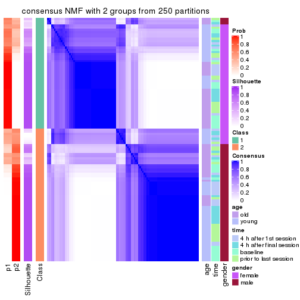
consensus_heatmap(res, k = 3)
consensus_heatmap(res, k = 4)
consensus_heatmap(res, k = 5)
consensus_heatmap(res, k = 6)
Heatmaps for the membership of samples in all partitions to see how consistent they are:
membership_heatmap(res, k = 2)
membership_heatmap(res, k = 3)
membership_heatmap(res, k = 4)
membership_heatmap(res, k = 5)
membership_heatmap(res, k = 6)
As soon as we have had the classes for columns, we can look for signatures which are significantly different between classes which can be candidate marks for certain classes. Following are the heatmaps for signatures.
Signature heatmaps where rows are scaled:
get_signatures(res, k = 2)
get_signatures(res, k = 3)
get_signatures(res, k = 4)
get_signatures(res, k = 5)
get_signatures(res, k = 6)
Signature heatmaps where rows are not scaled:
get_signatures(res, k = 2, scale_rows = FALSE)
get_signatures(res, k = 3, scale_rows = FALSE)
get_signatures(res, k = 4, scale_rows = FALSE)
get_signatures(res, k = 5, scale_rows = FALSE)
get_signatures(res, k = 6, scale_rows = FALSE)
Compare the overlap of signatures from different k:
compare_signatures(res)
get_signature() returns a data frame invisibly. TO get the list of signatures, the function
call should be assigned to a variable explicitly. In following code, if plot argument is set
to FALSE, no heatmap is plotted while only the differential analysis is performed.
# code only for demonstration
tb = get_signature(res, k = ..., plot = FALSE)
An example of the output of tb is:
#> which_row fdr mean_1 mean_2 scaled_mean_1 scaled_mean_2 km
#> 1 38 0.042760348 8.373488 9.131774 -0.5533452 0.5164555 1
#> 2 40 0.018707592 7.106213 8.469186 -0.6173731 0.5762149 1
#> 3 55 0.019134737 10.221463 11.207825 -0.6159697 0.5749050 1
#> 4 59 0.006059896 5.921854 7.869574 -0.6899429 0.6439467 1
#> 5 60 0.018055526 8.928898 10.211722 -0.6204761 0.5791110 1
#> 6 98 0.009384629 15.714769 14.887706 0.6635654 -0.6193277 2
...
The columns in tb are:
which_row: row indices corresponding to the input matrix.fdr: FDR for the differential test. mean_x: The mean value in group x.scaled_mean_x: The mean value in group x after rows are scaled.km: Row groups if k-means clustering is applied to rows.UMAP plot which shows how samples are separated.
dimension_reduction(res, k = 2, method = "UMAP")
dimension_reduction(res, k = 3, method = "UMAP")
dimension_reduction(res, k = 4, method = "UMAP")
dimension_reduction(res, k = 5, method = "UMAP")
dimension_reduction(res, k = 6, method = "UMAP")
Following heatmap shows how subgroups are split when increasing k:
collect_classes(res)
Test correlation between subgroups and known annotations. If the known annotation is numeric, one-way ANOVA test is applied, and if the known annotation is discrete, chi-squared contingency table test is applied.
test_to_known_factors(res)
#> n age(p) time(p) gender(p) k
#> SD:NMF 90 3.99e-02 0.897 1.77e-20 2
#> SD:NMF 103 5.48e-11 0.874 4.30e-23 3
#> SD:NMF 81 4.84e-09 0.464 2.58e-18 4
#> SD:NMF 69 9.18e-09 0.895 6.99e-15 5
#> SD:NMF 51 3.74e-07 0.970 4.89e-11 6
If matrix rows can be associated to genes, consider to use GO_Enrichment(res,
...) to perform function enrichment for the signature genes.
The object with results only for a single top-value method and a single partition method can be extracted as:
res = res_list["CV", "hclust"]
# you can also extract it by
# res = res_list["CV:hclust"]
A summary of res and all the functions that can be applied to it:
res
#> A 'ConsensusPartition' object with k = 2, 3, 4, 5, 6.
#> On a matrix with 51941 rows and 110 columns.
#> Top rows (1000, 2000, 3000, 4000, 5000) are extracted by 'CV' method.
#> Subgroups are detected by 'hclust' method.
#> Performed in total 1250 partitions by row resampling.
#> Best k for subgroups seems to be 5.
#>
#> Following methods can be applied to this 'ConsensusPartition' object:
#> [1] "cola_report" "collect_classes" "collect_plots"
#> [4] "collect_stats" "colnames" "compare_signatures"
#> [7] "consensus_heatmap" "dimension_reduction" "functional_enrichment"
#> [10] "get_anno_col" "get_anno" "get_classes"
#> [13] "get_consensus" "get_matrix" "get_membership"
#> [16] "get_param" "get_signatures" "get_stats"
#> [19] "is_best_k" "is_stable_k" "membership_heatmap"
#> [22] "ncol" "nrow" "plot_ecdf"
#> [25] "rownames" "select_partition_number" "show"
#> [28] "suggest_best_k" "test_to_known_factors"
collect_plots() function collects all the plots made from res for all k (number of partitions)
into one single page to provide an easy and fast comparison between different k.
collect_plots(res)
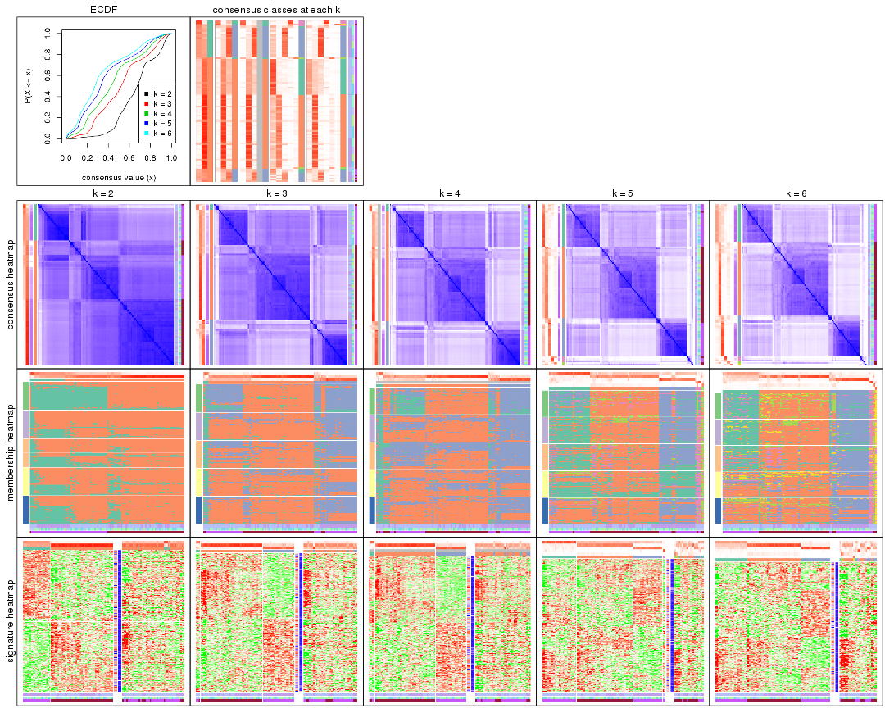
The plots are:
k and the heatmap of
predicted classes for each k.k.k.k.All the plots in panels can be made by individual functions and they are plotted later in this section.
select_partition_number() produces several plots showing different
statistics for choosing “optimized” k. There are following statistics:
k;k, the area increased is defined as \(A_k - A_{k-1}\).The detailed explanations of these statistics can be found in the cola vignette.
Generally speaking, lower PAC score, higher mean silhouette score or higher
concordance corresponds to better partition. Rand index and Jaccard index
measure how similar the current partition is compared to partition with k-1.
If they are too similar, we won't accept k is better than k-1.
select_partition_number(res)
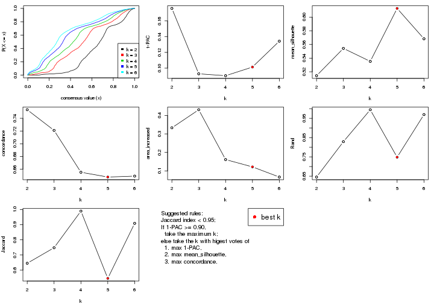
The numeric values for all these statistics can be obtained by get_stats().
get_stats(res)
#> k 1-PAC mean_silhouette concordance area_increased Rand Jaccard
#> 2 2 0.1759 0.514 0.753 0.3331 0.646 0.646
#> 3 3 0.0928 0.554 0.721 0.4309 0.829 0.748
#> 4 4 0.0904 0.535 0.655 0.1612 0.994 0.990
#> 5 5 0.1014 0.613 0.648 0.1216 0.748 0.546
#> 6 6 0.1342 0.568 0.649 0.0667 0.969 0.909
suggest_best_k() suggests the best \(k\) based on these statistics. The rules are as follows:
NA.suggest_best_k(res)
#> [1] 5
Following shows the table of the partitions (You need to click the show/hide
code output link to see it). The membership matrix (columns with name p*)
is inferred by
clue::cl_consensus()
function with the SE method. Basically the value in the membership matrix
represents the probability to belong to a certain group. The finall class
label for an item is determined with the group with highest probability it
belongs to.
In get_classes() function, the entropy is calculated from the membership
matrix and the silhouette score is calculated from the consensus matrix.
cbind(get_classes(res, k = 2), get_membership(res, k = 2))
#> class entropy silhouette p1 p2
#> GSM702357 2 0.311 0.6885 0.056 0.944
#> GSM702358 2 0.242 0.6926 0.040 0.960
#> GSM702359 2 0.402 0.6895 0.080 0.920
#> GSM702360 2 0.242 0.6930 0.040 0.960
#> GSM702361 2 0.430 0.6776 0.088 0.912
#> GSM702362 2 0.242 0.6890 0.040 0.960
#> GSM702363 2 0.260 0.6948 0.044 0.956
#> GSM702364 2 0.895 0.3337 0.312 0.688
#> GSM702413 2 0.871 0.3450 0.292 0.708
#> GSM702414 2 0.973 -0.1464 0.404 0.596
#> GSM702415 2 0.900 0.3332 0.316 0.684
#> GSM702416 2 0.821 0.4577 0.256 0.744
#> GSM702417 2 0.808 0.4838 0.248 0.752
#> GSM702418 1 0.952 0.4908 0.628 0.372
#> GSM702419 2 0.781 0.4757 0.232 0.768
#> GSM702365 2 0.311 0.6895 0.056 0.944
#> GSM702366 2 0.224 0.6919 0.036 0.964
#> GSM702367 2 0.358 0.6921 0.068 0.932
#> GSM702368 2 0.416 0.6746 0.084 0.916
#> GSM702369 2 0.388 0.6916 0.076 0.924
#> GSM702370 1 0.795 0.2623 0.760 0.240
#> GSM702371 2 0.242 0.6924 0.040 0.960
#> GSM702372 2 0.983 0.0768 0.424 0.576
#> GSM702420 1 0.518 0.3937 0.884 0.116
#> GSM702421 2 0.814 0.4420 0.252 0.748
#> GSM702422 1 0.469 0.3892 0.900 0.100
#> GSM702423 2 0.861 0.4269 0.284 0.716
#> GSM702424 2 0.814 0.4733 0.252 0.748
#> GSM702425 2 0.833 0.4636 0.264 0.736
#> GSM702426 2 0.808 0.4838 0.248 0.752
#> GSM702427 2 0.795 0.4753 0.240 0.760
#> GSM702373 2 0.541 0.6465 0.124 0.876
#> GSM702374 2 0.278 0.6908 0.048 0.952
#> GSM702375 2 0.242 0.6919 0.040 0.960
#> GSM702376 2 0.529 0.6427 0.120 0.880
#> GSM702377 2 0.900 0.3190 0.316 0.684
#> GSM702378 2 0.343 0.6799 0.064 0.936
#> GSM702379 2 0.242 0.6935 0.040 0.960
#> GSM702380 2 0.469 0.6600 0.100 0.900
#> GSM702428 2 0.833 0.4205 0.264 0.736
#> GSM702429 1 0.966 0.4528 0.608 0.392
#> GSM702430 2 0.844 0.4462 0.272 0.728
#> GSM702431 2 0.795 0.4591 0.240 0.760
#> GSM702432 2 0.821 0.4440 0.256 0.744
#> GSM702433 2 0.814 0.4525 0.252 0.748
#> GSM702434 2 0.955 0.0265 0.376 0.624
#> GSM702381 2 0.311 0.6893 0.056 0.944
#> GSM702382 2 0.295 0.6941 0.052 0.948
#> GSM702383 2 0.242 0.6832 0.040 0.960
#> GSM702384 2 0.402 0.6745 0.080 0.920
#> GSM702385 2 0.278 0.6939 0.048 0.952
#> GSM702386 2 0.402 0.6899 0.080 0.920
#> GSM702387 2 0.242 0.6949 0.040 0.960
#> GSM702388 2 0.260 0.6935 0.044 0.956
#> GSM702435 2 0.844 0.4509 0.272 0.728
#> GSM702436 2 0.821 0.4370 0.256 0.744
#> GSM702437 2 0.946 0.2182 0.364 0.636
#> GSM702438 2 0.814 0.4772 0.252 0.748
#> GSM702439 2 0.814 0.4662 0.252 0.748
#> GSM702440 2 0.990 -0.1684 0.440 0.560
#> GSM702441 2 0.821 0.4429 0.256 0.744
#> GSM702442 2 0.802 0.4861 0.244 0.756
#> GSM702389 2 0.163 0.6913 0.024 0.976
#> GSM702390 2 0.260 0.6964 0.044 0.956
#> GSM702391 2 0.358 0.6950 0.068 0.932
#> GSM702392 2 0.886 0.3207 0.304 0.696
#> GSM702393 2 0.844 0.3689 0.272 0.728
#> GSM702394 2 0.242 0.6908 0.040 0.960
#> GSM702443 1 0.983 0.6950 0.576 0.424
#> GSM702444 1 0.995 0.7299 0.540 0.460
#> GSM702445 1 0.998 0.7267 0.528 0.472
#> GSM702446 1 0.904 0.6057 0.680 0.320
#> GSM702447 1 1.000 0.6867 0.508 0.492
#> GSM702448 2 0.995 -0.5346 0.460 0.540
#> GSM702395 2 0.204 0.6947 0.032 0.968
#> GSM702396 2 0.373 0.6825 0.072 0.928
#> GSM702397 2 0.242 0.6921 0.040 0.960
#> GSM702398 2 0.204 0.6918 0.032 0.968
#> GSM702399 2 0.988 -0.1444 0.436 0.564
#> GSM702400 2 0.184 0.6919 0.028 0.972
#> GSM702449 2 0.980 -0.3188 0.416 0.584
#> GSM702450 1 0.996 0.7283 0.536 0.464
#> GSM702451 1 0.961 0.6364 0.616 0.384
#> GSM702452 1 0.997 0.7289 0.532 0.468
#> GSM702453 2 1.000 -0.6703 0.500 0.500
#> GSM702454 1 0.999 0.6993 0.516 0.484
#> GSM702401 2 0.456 0.6642 0.096 0.904
#> GSM702402 2 0.278 0.6938 0.048 0.952
#> GSM702403 2 0.278 0.6907 0.048 0.952
#> GSM702404 2 0.921 0.2211 0.336 0.664
#> GSM702405 2 0.988 -0.1444 0.436 0.564
#> GSM702406 2 0.866 0.3327 0.288 0.712
#> GSM702455 1 0.996 0.7201 0.536 0.464
#> GSM702456 1 0.996 0.7283 0.536 0.464
#> GSM702457 1 0.998 0.7252 0.528 0.472
#> GSM702458 1 0.992 0.7181 0.552 0.448
#> GSM702459 2 0.990 -0.4414 0.440 0.560
#> GSM702460 1 1.000 0.6780 0.508 0.492
#> GSM702407 2 0.260 0.6897 0.044 0.956
#> GSM702408 2 0.278 0.6949 0.048 0.952
#> GSM702409 2 0.644 0.6407 0.164 0.836
#> GSM702410 2 0.529 0.6338 0.120 0.880
#> GSM702411 2 0.921 0.1872 0.336 0.664
#> GSM702412 2 0.204 0.6915 0.032 0.968
#> GSM702461 1 0.997 0.7209 0.532 0.468
#> GSM702462 1 0.996 0.7283 0.536 0.464
#> GSM702463 1 0.998 0.7199 0.524 0.476
#> GSM702464 1 0.994 0.7221 0.544 0.456
#> GSM702465 1 1.000 0.6856 0.508 0.492
#> GSM702466 1 0.998 0.7156 0.524 0.476
cbind(get_classes(res, k = 3), get_membership(res, k = 3))
#> class entropy silhouette p1 p2 p3
#> GSM702357 2 0.290 0.6960 0.016 0.920 0.064
#> GSM702358 2 0.230 0.6954 0.020 0.944 0.036
#> GSM702359 2 0.511 0.6871 0.048 0.828 0.124
#> GSM702360 2 0.300 0.7010 0.016 0.916 0.068
#> GSM702361 2 0.602 0.6611 0.092 0.788 0.120
#> GSM702362 2 0.350 0.6933 0.028 0.900 0.072
#> GSM702363 2 0.265 0.7010 0.012 0.928 0.060
#> GSM702364 2 0.889 0.3236 0.164 0.560 0.276
#> GSM702413 2 0.796 0.2241 0.064 0.544 0.392
#> GSM702414 3 0.892 0.2624 0.124 0.408 0.468
#> GSM702415 2 0.852 0.2792 0.104 0.540 0.356
#> GSM702416 2 0.756 0.4184 0.064 0.628 0.308
#> GSM702417 2 0.751 0.4161 0.056 0.616 0.328
#> GSM702418 3 0.947 0.2495 0.276 0.228 0.496
#> GSM702419 2 0.736 0.3925 0.048 0.620 0.332
#> GSM702365 2 0.323 0.6991 0.020 0.908 0.072
#> GSM702366 2 0.279 0.6980 0.028 0.928 0.044
#> GSM702367 2 0.422 0.6962 0.032 0.868 0.100
#> GSM702368 2 0.722 0.5786 0.140 0.716 0.144
#> GSM702369 2 0.506 0.6880 0.064 0.836 0.100
#> GSM702370 1 0.627 0.6455 0.772 0.088 0.140
#> GSM702371 2 0.368 0.6947 0.028 0.892 0.080
#> GSM702372 1 0.947 0.3225 0.472 0.332 0.196
#> GSM702420 1 0.719 0.6436 0.636 0.044 0.320
#> GSM702421 2 0.740 0.3747 0.048 0.612 0.340
#> GSM702422 1 0.650 0.6566 0.664 0.020 0.316
#> GSM702423 2 0.836 0.3099 0.096 0.556 0.348
#> GSM702424 2 0.790 0.4027 0.080 0.608 0.312
#> GSM702425 2 0.792 0.4165 0.084 0.612 0.304
#> GSM702426 2 0.797 0.4420 0.096 0.624 0.280
#> GSM702427 2 0.749 0.3807 0.052 0.608 0.340
#> GSM702373 2 0.524 0.6570 0.056 0.824 0.120
#> GSM702374 2 0.343 0.7028 0.032 0.904 0.064
#> GSM702375 2 0.341 0.6955 0.028 0.904 0.068
#> GSM702376 2 0.617 0.6399 0.096 0.780 0.124
#> GSM702377 2 0.884 0.3175 0.160 0.564 0.276
#> GSM702378 2 0.425 0.6898 0.048 0.872 0.080
#> GSM702379 2 0.346 0.6975 0.024 0.900 0.076
#> GSM702380 2 0.496 0.6694 0.040 0.832 0.128
#> GSM702428 2 0.814 0.3180 0.084 0.572 0.344
#> GSM702429 3 0.972 0.0757 0.336 0.232 0.432
#> GSM702430 2 0.827 0.3508 0.096 0.576 0.328
#> GSM702431 2 0.742 0.3680 0.048 0.608 0.344
#> GSM702432 2 0.742 0.3643 0.048 0.608 0.344
#> GSM702433 2 0.797 0.3707 0.080 0.596 0.324
#> GSM702434 2 0.884 -0.0530 0.116 0.460 0.424
#> GSM702381 2 0.362 0.6931 0.032 0.896 0.072
#> GSM702382 2 0.275 0.6971 0.012 0.924 0.064
#> GSM702383 2 0.281 0.6923 0.040 0.928 0.032
#> GSM702384 2 0.506 0.6334 0.064 0.836 0.100
#> GSM702385 2 0.343 0.6974 0.032 0.904 0.064
#> GSM702386 2 0.523 0.6753 0.068 0.828 0.104
#> GSM702387 2 0.217 0.6974 0.008 0.944 0.048
#> GSM702388 2 0.290 0.7031 0.016 0.920 0.064
#> GSM702435 2 0.788 0.3820 0.072 0.592 0.336
#> GSM702436 2 0.771 0.3689 0.064 0.604 0.332
#> GSM702437 2 0.911 0.2451 0.164 0.520 0.316
#> GSM702438 2 0.807 0.3890 0.088 0.596 0.316
#> GSM702439 2 0.787 0.3611 0.068 0.584 0.348
#> GSM702440 3 0.926 0.1133 0.156 0.408 0.436
#> GSM702441 2 0.813 0.3504 0.088 0.584 0.328
#> GSM702442 2 0.785 0.4185 0.080 0.616 0.304
#> GSM702389 2 0.234 0.6985 0.012 0.940 0.048
#> GSM702390 2 0.328 0.7028 0.024 0.908 0.068
#> GSM702391 2 0.434 0.6937 0.024 0.856 0.120
#> GSM702392 2 0.855 0.2901 0.116 0.560 0.324
#> GSM702393 2 0.719 0.2383 0.032 0.588 0.380
#> GSM702394 2 0.230 0.6953 0.004 0.936 0.060
#> GSM702443 3 0.541 0.6577 0.040 0.156 0.804
#> GSM702444 3 0.478 0.7612 0.004 0.200 0.796
#> GSM702445 3 0.511 0.7648 0.008 0.212 0.780
#> GSM702446 3 0.290 0.3523 0.048 0.028 0.924
#> GSM702447 3 0.594 0.7557 0.020 0.248 0.732
#> GSM702448 3 0.617 0.6647 0.012 0.308 0.680
#> GSM702395 2 0.253 0.7010 0.020 0.936 0.044
#> GSM702396 2 0.475 0.6801 0.040 0.844 0.116
#> GSM702397 2 0.343 0.6936 0.032 0.904 0.064
#> GSM702398 2 0.305 0.6955 0.020 0.916 0.064
#> GSM702399 3 0.704 0.1002 0.032 0.348 0.620
#> GSM702400 2 0.199 0.6980 0.004 0.948 0.048
#> GSM702449 3 0.737 0.5111 0.044 0.352 0.604
#> GSM702450 3 0.450 0.7603 0.000 0.196 0.804
#> GSM702451 3 0.748 0.5268 0.132 0.172 0.696
#> GSM702452 3 0.488 0.7641 0.004 0.208 0.788
#> GSM702453 3 0.570 0.7467 0.012 0.252 0.736
#> GSM702454 3 0.545 0.7626 0.012 0.228 0.760
#> GSM702401 2 0.466 0.6725 0.032 0.844 0.124
#> GSM702402 2 0.313 0.6993 0.008 0.904 0.088
#> GSM702403 2 0.348 0.6973 0.044 0.904 0.052
#> GSM702404 2 0.859 0.2305 0.112 0.544 0.344
#> GSM702405 3 0.695 0.1021 0.028 0.352 0.620
#> GSM702406 2 0.780 0.3581 0.080 0.624 0.296
#> GSM702455 3 0.541 0.7449 0.020 0.200 0.780
#> GSM702456 3 0.483 0.7631 0.004 0.204 0.792
#> GSM702457 3 0.493 0.7653 0.004 0.212 0.784
#> GSM702458 3 0.531 0.7373 0.020 0.192 0.788
#> GSM702459 3 0.695 0.5719 0.028 0.352 0.620
#> GSM702460 3 0.511 0.7644 0.004 0.228 0.768
#> GSM702407 2 0.327 0.6997 0.016 0.904 0.080
#> GSM702408 2 0.341 0.6999 0.020 0.900 0.080
#> GSM702409 2 0.667 0.6006 0.068 0.732 0.200
#> GSM702410 2 0.518 0.6486 0.032 0.812 0.156
#> GSM702411 3 0.707 0.0104 0.020 0.484 0.496
#> GSM702412 2 0.210 0.6999 0.004 0.944 0.052
#> GSM702461 3 0.532 0.7545 0.016 0.204 0.780
#> GSM702462 3 0.483 0.7631 0.004 0.204 0.792
#> GSM702463 3 0.536 0.7675 0.012 0.220 0.768
#> GSM702464 3 0.507 0.7510 0.012 0.196 0.792
#> GSM702465 3 0.607 0.7519 0.024 0.248 0.728
#> GSM702466 3 0.511 0.7656 0.008 0.212 0.780
cbind(get_classes(res, k = 4), get_membership(res, k = 4))
#> class entropy silhouette p1 p2 p3 p4
#> GSM702357 2 0.327 0.6694 0.004 0.884 0.052 NA
#> GSM702358 2 0.262 0.6734 0.000 0.908 0.028 NA
#> GSM702359 2 0.573 0.6499 0.020 0.728 0.060 NA
#> GSM702360 2 0.340 0.6776 0.008 0.880 0.044 NA
#> GSM702361 2 0.612 0.6324 0.052 0.724 0.056 NA
#> GSM702362 2 0.398 0.6668 0.024 0.852 0.028 NA
#> GSM702363 2 0.301 0.6736 0.012 0.900 0.028 NA
#> GSM702364 2 0.898 0.3357 0.172 0.496 0.184 NA
#> GSM702413 2 0.821 0.2128 0.016 0.424 0.316 NA
#> GSM702414 3 0.933 0.1698 0.120 0.312 0.388 NA
#> GSM702415 2 0.897 0.2596 0.064 0.412 0.264 NA
#> GSM702416 2 0.759 0.3809 0.004 0.508 0.264 NA
#> GSM702417 2 0.746 0.4089 0.000 0.504 0.224 NA
#> GSM702418 3 0.977 -0.1308 0.280 0.152 0.316 NA
#> GSM702419 2 0.757 0.3472 0.000 0.484 0.272 NA
#> GSM702365 2 0.340 0.6692 0.000 0.872 0.064 NA
#> GSM702366 2 0.324 0.6748 0.008 0.884 0.028 NA
#> GSM702367 2 0.459 0.6723 0.012 0.804 0.040 NA
#> GSM702368 2 0.689 0.3962 0.052 0.580 0.036 NA
#> GSM702369 2 0.517 0.6652 0.008 0.764 0.064 NA
#> GSM702370 1 0.459 0.6353 0.800 0.024 0.020 NA
#> GSM702371 2 0.384 0.6681 0.016 0.852 0.024 NA
#> GSM702372 1 0.821 0.5100 0.400 0.188 0.024 NA
#> GSM702420 1 0.607 0.6649 0.732 0.032 0.108 NA
#> GSM702421 2 0.761 0.3342 0.000 0.476 0.276 NA
#> GSM702422 1 0.508 0.6613 0.776 0.004 0.112 NA
#> GSM702423 2 0.823 0.2859 0.016 0.428 0.276 NA
#> GSM702424 2 0.757 0.3851 0.000 0.472 0.216 NA
#> GSM702425 2 0.786 0.4004 0.016 0.488 0.180 NA
#> GSM702426 2 0.750 0.4216 0.004 0.492 0.172 NA
#> GSM702427 2 0.761 0.3474 0.000 0.476 0.268 NA
#> GSM702373 2 0.556 0.6258 0.048 0.776 0.092 NA
#> GSM702374 2 0.412 0.6795 0.008 0.836 0.044 NA
#> GSM702375 2 0.367 0.6691 0.020 0.868 0.028 NA
#> GSM702376 2 0.617 0.6229 0.068 0.740 0.088 NA
#> GSM702377 2 0.880 0.3456 0.180 0.512 0.188 NA
#> GSM702378 2 0.445 0.6634 0.040 0.832 0.032 NA
#> GSM702379 2 0.357 0.6698 0.012 0.868 0.028 NA
#> GSM702380 2 0.523 0.6381 0.040 0.792 0.104 NA
#> GSM702428 2 0.827 0.3061 0.024 0.456 0.276 NA
#> GSM702429 1 0.969 0.1123 0.348 0.156 0.284 NA
#> GSM702430 2 0.788 0.3283 0.004 0.444 0.256 NA
#> GSM702431 2 0.757 0.3479 0.000 0.484 0.268 NA
#> GSM702432 2 0.757 0.3437 0.000 0.484 0.268 NA
#> GSM702433 2 0.801 0.3573 0.016 0.484 0.244 NA
#> GSM702434 2 0.902 0.0813 0.068 0.384 0.324 NA
#> GSM702381 2 0.361 0.6669 0.020 0.872 0.028 NA
#> GSM702382 2 0.309 0.6673 0.008 0.896 0.044 NA
#> GSM702383 2 0.359 0.6805 0.008 0.860 0.024 NA
#> GSM702384 2 0.499 0.5361 0.020 0.756 0.020 NA
#> GSM702385 2 0.349 0.6693 0.020 0.868 0.012 NA
#> GSM702386 2 0.585 0.6414 0.052 0.752 0.064 NA
#> GSM702387 2 0.264 0.6705 0.008 0.916 0.032 NA
#> GSM702388 2 0.343 0.6799 0.004 0.872 0.036 NA
#> GSM702435 2 0.789 0.3581 0.008 0.468 0.236 NA
#> GSM702436 2 0.762 0.3531 0.000 0.472 0.244 NA
#> GSM702437 2 0.938 0.2538 0.124 0.412 0.216 NA
#> GSM702438 2 0.781 0.3573 0.004 0.464 0.252 NA
#> GSM702439 2 0.768 0.3409 0.000 0.460 0.268 NA
#> GSM702440 3 0.958 -0.0210 0.116 0.304 0.308 NA
#> GSM702441 2 0.812 0.3445 0.020 0.476 0.252 NA
#> GSM702442 2 0.753 0.3968 0.000 0.476 0.208 NA
#> GSM702389 2 0.220 0.6693 0.000 0.928 0.048 NA
#> GSM702390 2 0.370 0.6779 0.008 0.864 0.048 NA
#> GSM702391 2 0.456 0.6676 0.008 0.816 0.096 NA
#> GSM702392 2 0.827 0.3200 0.112 0.540 0.256 NA
#> GSM702393 2 0.688 0.2121 0.008 0.552 0.348 NA
#> GSM702394 2 0.250 0.6672 0.004 0.920 0.040 NA
#> GSM702443 3 0.487 0.6529 0.040 0.112 0.808 NA
#> GSM702444 3 0.370 0.7586 0.000 0.156 0.828 NA
#> GSM702445 3 0.368 0.7571 0.004 0.160 0.828 NA
#> GSM702446 3 0.304 0.4025 0.020 0.008 0.892 NA
#> GSM702447 3 0.494 0.7474 0.004 0.192 0.760 NA
#> GSM702448 3 0.543 0.6694 0.000 0.252 0.696 NA
#> GSM702395 2 0.222 0.6724 0.000 0.928 0.040 NA
#> GSM702396 2 0.530 0.6547 0.012 0.768 0.084 NA
#> GSM702397 2 0.349 0.6660 0.016 0.872 0.020 NA
#> GSM702398 2 0.332 0.6688 0.016 0.884 0.024 NA
#> GSM702399 3 0.730 0.1363 0.020 0.300 0.564 NA
#> GSM702400 2 0.232 0.6696 0.004 0.928 0.032 NA
#> GSM702449 3 0.739 0.4624 0.012 0.268 0.560 NA
#> GSM702450 3 0.340 0.7571 0.000 0.152 0.840 NA
#> GSM702451 3 0.718 0.5029 0.132 0.116 0.668 NA
#> GSM702452 3 0.331 0.7576 0.000 0.156 0.840 NA
#> GSM702453 3 0.515 0.7339 0.000 0.208 0.736 NA
#> GSM702454 3 0.438 0.7502 0.000 0.180 0.788 NA
#> GSM702401 2 0.486 0.6417 0.028 0.808 0.108 NA
#> GSM702402 2 0.310 0.6723 0.004 0.892 0.060 NA
#> GSM702403 2 0.390 0.6702 0.032 0.856 0.020 NA
#> GSM702404 2 0.834 0.2547 0.124 0.512 0.288 NA
#> GSM702405 3 0.722 0.1376 0.016 0.304 0.564 NA
#> GSM702406 2 0.745 0.3840 0.080 0.600 0.256 NA
#> GSM702455 3 0.449 0.7372 0.024 0.148 0.808 NA
#> GSM702456 3 0.385 0.7595 0.000 0.160 0.820 NA
#> GSM702457 3 0.354 0.7581 0.004 0.160 0.832 NA
#> GSM702458 3 0.457 0.7168 0.016 0.140 0.808 NA
#> GSM702459 3 0.634 0.6090 0.004 0.264 0.640 NA
#> GSM702460 3 0.372 0.7568 0.000 0.180 0.812 NA
#> GSM702407 2 0.395 0.6680 0.008 0.852 0.072 NA
#> GSM702408 2 0.351 0.6741 0.004 0.872 0.060 NA
#> GSM702409 2 0.694 0.5754 0.016 0.632 0.144 NA
#> GSM702410 2 0.536 0.6164 0.028 0.776 0.128 NA
#> GSM702411 3 0.718 0.0176 0.008 0.444 0.444 NA
#> GSM702412 2 0.230 0.6728 0.004 0.928 0.024 NA
#> GSM702461 3 0.454 0.7458 0.020 0.152 0.804 NA
#> GSM702462 3 0.385 0.7595 0.000 0.160 0.820 NA
#> GSM702463 3 0.372 0.7608 0.000 0.168 0.820 NA
#> GSM702464 3 0.414 0.7388 0.004 0.144 0.820 NA
#> GSM702465 3 0.490 0.7473 0.004 0.188 0.764 NA
#> GSM702466 3 0.367 0.7593 0.000 0.164 0.824 NA
cbind(get_classes(res, k = 5), get_membership(res, k = 5))
#> class entropy silhouette p1 p2 p3 p4 p5
#> GSM702357 2 0.509 0.7506 0.272 0.672 0.036 0.000 0.020
#> GSM702358 2 0.507 0.7505 0.320 0.636 0.012 0.000 0.032
#> GSM702359 2 0.667 0.5365 0.384 0.468 0.016 0.004 0.128
#> GSM702360 2 0.530 0.7575 0.320 0.620 0.008 0.000 0.052
#> GSM702361 2 0.717 0.4608 0.356 0.440 0.016 0.012 0.176
#> GSM702362 2 0.573 0.7271 0.296 0.612 0.016 0.000 0.076
#> GSM702363 2 0.512 0.7549 0.292 0.656 0.020 0.000 0.032
#> GSM702364 2 0.931 0.1321 0.236 0.376 0.156 0.108 0.124
#> GSM702413 1 0.501 0.7152 0.756 0.076 0.132 0.032 0.004
#> GSM702414 1 0.766 0.3800 0.520 0.084 0.260 0.112 0.024
#> GSM702415 1 0.512 0.7286 0.760 0.060 0.072 0.104 0.004
#> GSM702416 1 0.513 0.7136 0.764 0.112 0.076 0.028 0.020
#> GSM702417 1 0.355 0.7546 0.860 0.072 0.036 0.016 0.016
#> GSM702418 1 0.834 -0.0880 0.416 0.052 0.220 0.268 0.044
#> GSM702419 1 0.425 0.7601 0.804 0.092 0.088 0.012 0.004
#> GSM702365 2 0.533 0.7491 0.272 0.660 0.036 0.000 0.032
#> GSM702366 2 0.519 0.7468 0.320 0.624 0.004 0.000 0.052
#> GSM702367 2 0.622 0.7186 0.340 0.556 0.024 0.004 0.076
#> GSM702368 5 0.703 -0.0478 0.216 0.380 0.016 0.000 0.388
#> GSM702369 2 0.623 0.5916 0.412 0.476 0.012 0.000 0.100
#> GSM702370 4 0.548 0.3407 0.004 0.032 0.012 0.544 0.408
#> GSM702371 2 0.583 0.7313 0.300 0.612 0.020 0.004 0.064
#> GSM702372 5 0.647 -0.2263 0.040 0.120 0.004 0.224 0.612
#> GSM702420 4 0.432 0.5356 0.116 0.032 0.044 0.804 0.004
#> GSM702421 1 0.342 0.7672 0.856 0.056 0.076 0.008 0.004
#> GSM702422 4 0.340 0.5343 0.036 0.024 0.064 0.868 0.008
#> GSM702423 1 0.415 0.7578 0.832 0.032 0.072 0.044 0.020
#> GSM702424 1 0.316 0.7672 0.880 0.064 0.024 0.020 0.012
#> GSM702425 1 0.314 0.7503 0.880 0.064 0.012 0.032 0.012
#> GSM702426 1 0.419 0.7299 0.824 0.096 0.028 0.028 0.024
#> GSM702427 1 0.402 0.7637 0.820 0.072 0.092 0.012 0.004
#> GSM702373 2 0.706 0.6661 0.244 0.588 0.072 0.040 0.056
#> GSM702374 2 0.590 0.7094 0.336 0.568 0.012 0.000 0.084
#> GSM702375 2 0.557 0.7323 0.308 0.616 0.016 0.000 0.060
#> GSM702376 2 0.722 0.6521 0.276 0.552 0.048 0.036 0.088
#> GSM702377 2 0.929 0.1214 0.216 0.388 0.160 0.116 0.120
#> GSM702378 2 0.647 0.7122 0.300 0.568 0.024 0.008 0.100
#> GSM702379 2 0.570 0.7401 0.284 0.632 0.020 0.004 0.060
#> GSM702380 2 0.680 0.6939 0.280 0.568 0.076 0.008 0.068
#> GSM702428 1 0.474 0.7659 0.784 0.096 0.076 0.040 0.004
#> GSM702429 4 0.745 0.0936 0.396 0.048 0.132 0.412 0.012
#> GSM702430 1 0.340 0.7750 0.872 0.044 0.044 0.028 0.012
#> GSM702431 1 0.419 0.7582 0.808 0.084 0.092 0.012 0.004
#> GSM702432 1 0.414 0.7551 0.804 0.100 0.084 0.012 0.000
#> GSM702433 1 0.482 0.7569 0.776 0.116 0.060 0.044 0.004
#> GSM702434 1 0.773 0.5348 0.548 0.140 0.188 0.096 0.028
#> GSM702381 2 0.545 0.7350 0.272 0.648 0.016 0.000 0.064
#> GSM702382 2 0.492 0.7480 0.268 0.684 0.024 0.000 0.024
#> GSM702383 2 0.546 0.7382 0.348 0.584 0.004 0.000 0.064
#> GSM702384 2 0.532 0.1799 0.084 0.756 0.048 0.016 0.096
#> GSM702385 2 0.579 0.7329 0.308 0.604 0.012 0.004 0.072
#> GSM702386 2 0.644 0.5566 0.316 0.560 0.024 0.008 0.092
#> GSM702387 2 0.482 0.7519 0.280 0.680 0.020 0.000 0.020
#> GSM702388 2 0.529 0.7279 0.388 0.568 0.012 0.000 0.032
#> GSM702435 1 0.369 0.7707 0.856 0.068 0.028 0.028 0.020
#> GSM702436 1 0.283 0.7793 0.896 0.044 0.036 0.020 0.004
#> GSM702437 1 0.640 0.5907 0.644 0.068 0.060 0.212 0.016
#> GSM702438 1 0.508 0.7453 0.780 0.080 0.064 0.048 0.028
#> GSM702439 1 0.425 0.7740 0.828 0.052 0.064 0.036 0.020
#> GSM702440 1 0.682 0.5642 0.632 0.044 0.164 0.128 0.032
#> GSM702441 1 0.474 0.7543 0.780 0.116 0.060 0.040 0.004
#> GSM702442 1 0.405 0.7546 0.832 0.092 0.024 0.028 0.024
#> GSM702389 2 0.492 0.7502 0.284 0.672 0.024 0.000 0.020
#> GSM702390 2 0.556 0.7498 0.300 0.628 0.016 0.004 0.052
#> GSM702391 2 0.529 0.6807 0.388 0.568 0.032 0.000 0.012
#> GSM702392 2 0.849 0.2415 0.172 0.460 0.228 0.084 0.056
#> GSM702393 2 0.720 0.0848 0.128 0.476 0.340 0.004 0.052
#> GSM702394 2 0.481 0.7481 0.296 0.668 0.020 0.000 0.016
#> GSM702443 3 0.470 0.7153 0.192 0.032 0.744 0.032 0.000
#> GSM702444 3 0.416 0.7794 0.312 0.004 0.680 0.004 0.000
#> GSM702445 3 0.391 0.7808 0.292 0.004 0.704 0.000 0.000
#> GSM702446 3 0.225 0.4841 0.048 0.020 0.920 0.008 0.004
#> GSM702447 3 0.479 0.7336 0.344 0.032 0.624 0.000 0.000
#> GSM702448 3 0.591 0.5783 0.380 0.064 0.540 0.012 0.004
#> GSM702395 2 0.509 0.7543 0.288 0.664 0.016 0.004 0.028
#> GSM702396 2 0.665 0.5776 0.396 0.488 0.032 0.012 0.072
#> GSM702397 2 0.550 0.7299 0.300 0.624 0.012 0.000 0.064
#> GSM702398 2 0.544 0.7394 0.292 0.636 0.016 0.000 0.056
#> GSM702399 3 0.579 0.0336 0.016 0.312 0.608 0.008 0.056
#> GSM702400 2 0.484 0.7498 0.304 0.660 0.012 0.000 0.024
#> GSM702449 1 0.594 -0.0544 0.536 0.052 0.388 0.020 0.004
#> GSM702450 3 0.412 0.7803 0.304 0.004 0.688 0.004 0.000
#> GSM702451 3 0.665 0.5380 0.228 0.032 0.600 0.128 0.012
#> GSM702452 3 0.412 0.7804 0.304 0.004 0.688 0.004 0.000
#> GSM702453 3 0.517 0.7078 0.356 0.036 0.600 0.008 0.000
#> GSM702454 3 0.458 0.7422 0.356 0.008 0.628 0.008 0.000
#> GSM702401 2 0.615 0.7169 0.276 0.612 0.068 0.004 0.040
#> GSM702402 2 0.505 0.7497 0.312 0.644 0.028 0.000 0.016
#> GSM702403 2 0.588 0.7287 0.296 0.608 0.016 0.004 0.076
#> GSM702404 2 0.846 0.1618 0.140 0.452 0.264 0.088 0.056
#> GSM702405 3 0.575 0.0312 0.016 0.316 0.608 0.008 0.052
#> GSM702406 2 0.788 0.3412 0.164 0.516 0.220 0.060 0.040
#> GSM702455 3 0.414 0.7700 0.248 0.012 0.732 0.008 0.000
#> GSM702456 3 0.428 0.7795 0.312 0.008 0.676 0.004 0.000
#> GSM702457 3 0.402 0.7814 0.292 0.008 0.700 0.000 0.000
#> GSM702458 3 0.427 0.7523 0.228 0.024 0.740 0.008 0.000
#> GSM702459 3 0.522 0.4775 0.444 0.044 0.512 0.000 0.000
#> GSM702460 3 0.422 0.7645 0.332 0.008 0.660 0.000 0.000
#> GSM702407 2 0.585 0.7394 0.280 0.624 0.044 0.000 0.052
#> GSM702408 2 0.515 0.7478 0.300 0.648 0.016 0.000 0.036
#> GSM702409 1 0.602 0.1632 0.624 0.280 0.020 0.020 0.056
#> GSM702410 2 0.655 0.6671 0.260 0.592 0.096 0.004 0.048
#> GSM702411 3 0.676 -0.1669 0.068 0.408 0.464 0.004 0.056
#> GSM702412 2 0.491 0.7547 0.308 0.652 0.008 0.000 0.032
#> GSM702461 3 0.422 0.7741 0.264 0.016 0.716 0.004 0.000
#> GSM702462 3 0.428 0.7795 0.312 0.008 0.676 0.004 0.000
#> GSM702463 3 0.415 0.7780 0.316 0.008 0.676 0.000 0.000
#> GSM702464 3 0.426 0.7670 0.256 0.020 0.720 0.004 0.000
#> GSM702465 3 0.456 0.7444 0.344 0.020 0.636 0.000 0.000
#> GSM702466 3 0.417 0.7756 0.320 0.008 0.672 0.000 0.000
cbind(get_classes(res, k = 6), get_membership(res, k = 6))
#> class entropy silhouette p1 p2 p3 p4 p5 p6
#> GSM702357 2 0.342 0.71812 0.080 0.844 0.032 0.000 0.036 0.008
#> GSM702358 2 0.312 0.72024 0.080 0.864 0.016 0.004 0.024 0.012
#> GSM702359 2 0.607 0.48781 0.180 0.592 0.044 0.004 0.180 0.000
#> GSM702360 2 0.351 0.72826 0.048 0.844 0.036 0.004 0.064 0.004
#> GSM702361 2 0.707 0.39761 0.124 0.544 0.056 0.020 0.228 0.028
#> GSM702362 2 0.425 0.69563 0.068 0.788 0.024 0.004 0.108 0.008
#> GSM702363 2 0.288 0.72457 0.044 0.884 0.024 0.004 0.036 0.008
#> GSM702364 2 0.880 0.10224 0.112 0.432 0.144 0.124 0.128 0.060
#> GSM702413 1 0.661 0.71296 0.492 0.228 0.244 0.020 0.012 0.004
#> GSM702414 3 0.853 -0.33905 0.284 0.176 0.344 0.124 0.040 0.032
#> GSM702415 1 0.783 0.68396 0.460 0.180 0.204 0.112 0.020 0.024
#> GSM702416 1 0.763 0.70230 0.404 0.312 0.188 0.044 0.036 0.016
#> GSM702417 1 0.677 0.75508 0.492 0.292 0.160 0.008 0.012 0.036
#> GSM702418 1 0.823 -0.21780 0.360 0.072 0.212 0.288 0.036 0.032
#> GSM702419 1 0.665 0.75259 0.468 0.268 0.232 0.012 0.012 0.008
#> GSM702365 2 0.321 0.71747 0.076 0.856 0.040 0.000 0.020 0.008
#> GSM702366 2 0.383 0.71439 0.076 0.824 0.016 0.004 0.064 0.016
#> GSM702367 2 0.433 0.69465 0.096 0.772 0.016 0.004 0.108 0.004
#> GSM702368 5 0.634 0.07651 0.088 0.384 0.032 0.000 0.472 0.024
#> GSM702369 2 0.633 0.53353 0.164 0.608 0.056 0.004 0.152 0.016
#> GSM702370 6 0.412 0.00000 0.008 0.004 0.000 0.208 0.040 0.740
#> GSM702371 2 0.389 0.70234 0.056 0.816 0.012 0.012 0.096 0.008
#> GSM702372 5 0.580 -0.35889 0.008 0.068 0.004 0.148 0.664 0.108
#> GSM702420 4 0.376 0.27491 0.096 0.012 0.036 0.828 0.012 0.016
#> GSM702421 1 0.653 0.75730 0.480 0.260 0.232 0.012 0.012 0.004
#> GSM702422 4 0.215 0.14641 0.032 0.000 0.036 0.916 0.004 0.012
#> GSM702423 1 0.723 0.74382 0.484 0.228 0.196 0.068 0.016 0.008
#> GSM702424 1 0.690 0.77002 0.516 0.264 0.152 0.024 0.020 0.024
#> GSM702425 1 0.732 0.74297 0.500 0.264 0.132 0.032 0.024 0.048
#> GSM702426 1 0.729 0.70762 0.524 0.236 0.128 0.032 0.028 0.052
#> GSM702427 1 0.637 0.75967 0.496 0.260 0.220 0.004 0.016 0.004
#> GSM702373 2 0.581 0.61755 0.060 0.700 0.060 0.040 0.124 0.016
#> GSM702374 2 0.487 0.67335 0.112 0.732 0.028 0.004 0.120 0.004
#> GSM702375 2 0.389 0.69908 0.060 0.812 0.028 0.008 0.092 0.000
#> GSM702376 2 0.611 0.60157 0.064 0.672 0.052 0.044 0.148 0.020
#> GSM702377 2 0.880 0.11642 0.108 0.436 0.144 0.128 0.116 0.068
#> GSM702378 2 0.449 0.67944 0.052 0.772 0.020 0.008 0.132 0.016
#> GSM702379 2 0.322 0.71038 0.040 0.860 0.012 0.012 0.072 0.004
#> GSM702380 2 0.539 0.66683 0.052 0.732 0.084 0.024 0.092 0.016
#> GSM702428 1 0.667 0.75764 0.496 0.264 0.188 0.040 0.012 0.000
#> GSM702429 4 0.761 0.18021 0.288 0.044 0.176 0.436 0.032 0.024
#> GSM702430 1 0.691 0.76400 0.508 0.248 0.176 0.044 0.016 0.008
#> GSM702431 1 0.642 0.75476 0.504 0.256 0.212 0.008 0.016 0.004
#> GSM702432 1 0.639 0.75219 0.492 0.276 0.208 0.008 0.012 0.004
#> GSM702433 1 0.673 0.75532 0.492 0.296 0.156 0.040 0.008 0.008
#> GSM702434 1 0.810 0.52169 0.372 0.252 0.236 0.092 0.032 0.016
#> GSM702381 2 0.374 0.70470 0.052 0.820 0.024 0.008 0.096 0.000
#> GSM702382 2 0.297 0.71769 0.048 0.880 0.036 0.004 0.020 0.012
#> GSM702383 2 0.430 0.70409 0.112 0.772 0.012 0.000 0.092 0.012
#> GSM702384 2 0.720 -0.00349 0.208 0.500 0.008 0.016 0.192 0.076
#> GSM702385 2 0.381 0.70378 0.056 0.824 0.016 0.016 0.084 0.004
#> GSM702386 2 0.656 0.43711 0.172 0.608 0.032 0.004 0.100 0.084
#> GSM702387 2 0.266 0.72295 0.048 0.892 0.032 0.000 0.016 0.012
#> GSM702388 2 0.459 0.69780 0.112 0.764 0.040 0.000 0.072 0.012
#> GSM702435 1 0.754 0.76176 0.472 0.256 0.168 0.040 0.036 0.028
#> GSM702436 1 0.672 0.78070 0.504 0.264 0.184 0.024 0.012 0.012
#> GSM702437 1 0.829 0.46887 0.364 0.196 0.136 0.256 0.020 0.028
#> GSM702438 1 0.726 0.71583 0.484 0.252 0.168 0.068 0.016 0.012
#> GSM702439 1 0.720 0.75209 0.504 0.224 0.184 0.052 0.016 0.020
#> GSM702440 1 0.807 0.46390 0.448 0.148 0.216 0.128 0.024 0.036
#> GSM702441 1 0.657 0.75239 0.504 0.288 0.160 0.036 0.008 0.004
#> GSM702442 1 0.699 0.74508 0.508 0.276 0.136 0.040 0.028 0.012
#> GSM702389 2 0.292 0.71858 0.048 0.876 0.036 0.000 0.036 0.004
#> GSM702390 2 0.418 0.71460 0.084 0.796 0.032 0.000 0.076 0.012
#> GSM702391 2 0.511 0.65070 0.124 0.724 0.076 0.004 0.068 0.004
#> GSM702392 2 0.803 0.21155 0.088 0.488 0.196 0.108 0.096 0.024
#> GSM702393 2 0.760 0.07499 0.088 0.460 0.264 0.016 0.148 0.024
#> GSM702394 2 0.297 0.71656 0.048 0.868 0.032 0.000 0.052 0.000
#> GSM702443 3 0.440 0.69127 0.036 0.088 0.796 0.052 0.012 0.016
#> GSM702444 3 0.279 0.75374 0.036 0.088 0.868 0.000 0.004 0.004
#> GSM702445 3 0.226 0.75414 0.016 0.088 0.892 0.004 0.000 0.000
#> GSM702446 3 0.400 0.45850 0.048 0.000 0.816 0.024 0.036 0.076
#> GSM702447 3 0.363 0.72003 0.076 0.120 0.800 0.000 0.000 0.004
#> GSM702448 3 0.503 0.58462 0.108 0.156 0.708 0.004 0.016 0.008
#> GSM702395 2 0.360 0.72054 0.052 0.832 0.036 0.000 0.076 0.004
#> GSM702396 2 0.645 0.53306 0.180 0.624 0.068 0.016 0.088 0.024
#> GSM702397 2 0.342 0.70018 0.052 0.840 0.016 0.008 0.084 0.000
#> GSM702398 2 0.340 0.70974 0.060 0.856 0.020 0.012 0.044 0.008
#> GSM702399 3 0.796 0.00804 0.076 0.208 0.460 0.024 0.184 0.048
#> GSM702400 2 0.291 0.71883 0.052 0.876 0.028 0.000 0.040 0.004
#> GSM702449 3 0.647 -0.00747 0.280 0.160 0.512 0.040 0.008 0.000
#> GSM702450 3 0.242 0.75408 0.024 0.088 0.884 0.000 0.004 0.000
#> GSM702451 3 0.615 0.49471 0.088 0.052 0.664 0.148 0.024 0.024
#> GSM702452 3 0.231 0.75411 0.028 0.084 0.888 0.000 0.000 0.000
#> GSM702453 3 0.406 0.69640 0.080 0.132 0.776 0.000 0.004 0.008
#> GSM702454 3 0.354 0.72217 0.072 0.104 0.816 0.000 0.004 0.004
#> GSM702401 2 0.475 0.69171 0.052 0.776 0.084 0.020 0.056 0.012
#> GSM702402 2 0.342 0.71901 0.068 0.840 0.048 0.000 0.044 0.000
#> GSM702403 2 0.412 0.69963 0.060 0.808 0.020 0.024 0.084 0.004
#> GSM702404 2 0.828 0.15174 0.080 0.448 0.228 0.116 0.096 0.032
#> GSM702405 3 0.793 0.00713 0.076 0.212 0.460 0.024 0.184 0.044
#> GSM702406 2 0.687 0.35270 0.060 0.576 0.224 0.072 0.052 0.016
#> GSM702455 3 0.314 0.74338 0.016 0.092 0.856 0.028 0.004 0.004
#> GSM702456 3 0.277 0.75321 0.040 0.092 0.864 0.000 0.004 0.000
#> GSM702457 3 0.231 0.75487 0.016 0.092 0.888 0.004 0.000 0.000
#> GSM702458 3 0.377 0.72507 0.052 0.084 0.828 0.016 0.008 0.012
#> GSM702459 3 0.519 0.50524 0.180 0.164 0.648 0.004 0.000 0.004
#> GSM702460 3 0.284 0.74197 0.044 0.104 0.852 0.000 0.000 0.000
#> GSM702407 2 0.434 0.70494 0.064 0.792 0.036 0.008 0.092 0.008
#> GSM702408 2 0.375 0.71391 0.084 0.828 0.032 0.004 0.044 0.008
#> GSM702409 2 0.795 -0.24615 0.300 0.408 0.120 0.020 0.120 0.032
#> GSM702410 2 0.567 0.63301 0.052 0.704 0.104 0.020 0.104 0.016
#> GSM702411 3 0.795 -0.17199 0.080 0.336 0.360 0.016 0.172 0.036
#> GSM702412 2 0.306 0.72368 0.040 0.868 0.024 0.000 0.060 0.008
#> GSM702461 3 0.292 0.74849 0.008 0.096 0.864 0.024 0.004 0.004
#> GSM702462 3 0.284 0.75375 0.036 0.092 0.864 0.004 0.004 0.000
#> GSM702463 3 0.256 0.75262 0.036 0.092 0.872 0.000 0.000 0.000
#> GSM702464 3 0.328 0.74233 0.040 0.084 0.852 0.008 0.004 0.012
#> GSM702465 3 0.368 0.72532 0.072 0.116 0.804 0.004 0.000 0.004
#> GSM702466 3 0.268 0.75052 0.040 0.096 0.864 0.000 0.000 0.000
Heatmaps for the consensus matrix. It visualizes the probability of two samples to be in a same group.
consensus_heatmap(res, k = 2)
consensus_heatmap(res, k = 3)

consensus_heatmap(res, k = 4)
consensus_heatmap(res, k = 5)
consensus_heatmap(res, k = 6)

Heatmaps for the membership of samples in all partitions to see how consistent they are:
membership_heatmap(res, k = 2)
membership_heatmap(res, k = 3)

membership_heatmap(res, k = 4)
membership_heatmap(res, k = 5)
membership_heatmap(res, k = 6)
As soon as we have had the classes for columns, we can look for signatures which are significantly different between classes which can be candidate marks for certain classes. Following are the heatmaps for signatures.
Signature heatmaps where rows are scaled:
get_signatures(res, k = 2)
get_signatures(res, k = 3)
get_signatures(res, k = 4)
get_signatures(res, k = 5)
get_signatures(res, k = 6)
Signature heatmaps where rows are not scaled:
get_signatures(res, k = 2, scale_rows = FALSE)
get_signatures(res, k = 3, scale_rows = FALSE)
get_signatures(res, k = 4, scale_rows = FALSE)
get_signatures(res, k = 5, scale_rows = FALSE)
get_signatures(res, k = 6, scale_rows = FALSE)

Compare the overlap of signatures from different k:
compare_signatures(res)
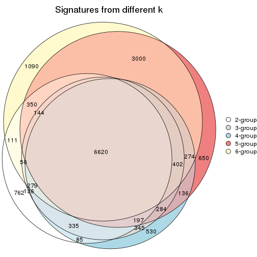
get_signature() returns a data frame invisibly. TO get the list of signatures, the function
call should be assigned to a variable explicitly. In following code, if plot argument is set
to FALSE, no heatmap is plotted while only the differential analysis is performed.
# code only for demonstration
tb = get_signature(res, k = ..., plot = FALSE)
An example of the output of tb is:
#> which_row fdr mean_1 mean_2 scaled_mean_1 scaled_mean_2 km
#> 1 38 0.042760348 8.373488 9.131774 -0.5533452 0.5164555 1
#> 2 40 0.018707592 7.106213 8.469186 -0.6173731 0.5762149 1
#> 3 55 0.019134737 10.221463 11.207825 -0.6159697 0.5749050 1
#> 4 59 0.006059896 5.921854 7.869574 -0.6899429 0.6439467 1
#> 5 60 0.018055526 8.928898 10.211722 -0.6204761 0.5791110 1
#> 6 98 0.009384629 15.714769 14.887706 0.6635654 -0.6193277 2
...
The columns in tb are:
which_row: row indices corresponding to the input matrix.fdr: FDR for the differential test. mean_x: The mean value in group x.scaled_mean_x: The mean value in group x after rows are scaled.km: Row groups if k-means clustering is applied to rows.UMAP plot which shows how samples are separated.
dimension_reduction(res, k = 2, method = "UMAP")

dimension_reduction(res, k = 3, method = "UMAP")
dimension_reduction(res, k = 4, method = "UMAP")
dimension_reduction(res, k = 5, method = "UMAP")
dimension_reduction(res, k = 6, method = "UMAP")
Following heatmap shows how subgroups are split when increasing k:
collect_classes(res)
Test correlation between subgroups and known annotations. If the known annotation is numeric, one-way ANOVA test is applied, and if the known annotation is discrete, chi-squared contingency table test is applied.
test_to_known_factors(res)
#> n age(p) time(p) gender(p) k
#> CV:hclust 65 1.06e-05 0.982 7.78e-15 2
#> CV:hclust 71 8.32e-07 0.224 1.65e-15 3
#> CV:hclust 70 9.56e-07 0.072 5.80e-15 4
#> CV:hclust 89 1.41e-10 0.723 3.59e-19 5
#> CV:hclust 83 1.86e-10 0.999 9.48e-19 6
If matrix rows can be associated to genes, consider to use GO_Enrichment(res,
...) to perform function enrichment for the signature genes.
The object with results only for a single top-value method and a single partition method can be extracted as:
res = res_list["CV", "kmeans"]
# you can also extract it by
# res = res_list["CV:kmeans"]
A summary of res and all the functions that can be applied to it:
res
#> A 'ConsensusPartition' object with k = 2, 3, 4, 5, 6.
#> On a matrix with 51941 rows and 110 columns.
#> Top rows (1000, 2000, 3000, 4000, 5000) are extracted by 'CV' method.
#> Subgroups are detected by 'kmeans' method.
#> Performed in total 1250 partitions by row resampling.
#> Best k for subgroups seems to be 2.
#>
#> Following methods can be applied to this 'ConsensusPartition' object:
#> [1] "cola_report" "collect_classes" "collect_plots"
#> [4] "collect_stats" "colnames" "compare_signatures"
#> [7] "consensus_heatmap" "dimension_reduction" "functional_enrichment"
#> [10] "get_anno_col" "get_anno" "get_classes"
#> [13] "get_consensus" "get_matrix" "get_membership"
#> [16] "get_param" "get_signatures" "get_stats"
#> [19] "is_best_k" "is_stable_k" "membership_heatmap"
#> [22] "ncol" "nrow" "plot_ecdf"
#> [25] "rownames" "select_partition_number" "show"
#> [28] "suggest_best_k" "test_to_known_factors"
collect_plots() function collects all the plots made from res for all k (number of partitions)
into one single page to provide an easy and fast comparison between different k.
collect_plots(res)
The plots are:
k and the heatmap of
predicted classes for each k.k.k.k.All the plots in panels can be made by individual functions and they are plotted later in this section.
select_partition_number() produces several plots showing different
statistics for choosing “optimized” k. There are following statistics:
k;k, the area increased is defined as \(A_k - A_{k-1}\).The detailed explanations of these statistics can be found in the cola vignette.
Generally speaking, lower PAC score, higher mean silhouette score or higher
concordance corresponds to better partition. Rand index and Jaccard index
measure how similar the current partition is compared to partition with k-1.
If they are too similar, we won't accept k is better than k-1.
select_partition_number(res)
The numeric values for all these statistics can be obtained by get_stats().
get_stats(res)
#> k 1-PAC mean_silhouette concordance area_increased Rand Jaccard
#> 2 2 0.423 0.866 0.877 0.4623 0.496 0.496
#> 3 3 0.523 0.846 0.847 0.3533 0.880 0.758
#> 4 4 0.659 0.765 0.829 0.1398 0.877 0.686
#> 5 5 0.695 0.617 0.759 0.0805 0.874 0.588
#> 6 6 0.694 0.611 0.758 0.0430 0.934 0.717
suggest_best_k() suggests the best \(k\) based on these statistics. The rules are as follows:
NA.suggest_best_k(res)
#> [1] 2
Following shows the table of the partitions (You need to click the show/hide
code output link to see it). The membership matrix (columns with name p*)
is inferred by
clue::cl_consensus()
function with the SE method. Basically the value in the membership matrix
represents the probability to belong to a certain group. The finall class
label for an item is determined with the group with highest probability it
belongs to.
In get_classes() function, the entropy is calculated from the membership
matrix and the silhouette score is calculated from the consensus matrix.
cbind(get_classes(res, k = 2), get_membership(res, k = 2))
#> class entropy silhouette p1 p2
#> GSM702357 2 0.2603 0.943 0.044 0.956
#> GSM702358 2 0.2603 0.943 0.044 0.956
#> GSM702359 2 0.0938 0.936 0.012 0.988
#> GSM702360 2 0.2778 0.941 0.048 0.952
#> GSM702361 2 0.0672 0.938 0.008 0.992
#> GSM702362 2 0.0672 0.938 0.008 0.992
#> GSM702363 2 0.2603 0.943 0.044 0.956
#> GSM702364 2 0.4022 0.883 0.080 0.920
#> GSM702413 1 0.9000 0.813 0.684 0.316
#> GSM702414 1 0.8144 0.788 0.748 0.252
#> GSM702415 1 0.8813 0.803 0.700 0.300
#> GSM702416 1 0.8016 0.827 0.756 0.244
#> GSM702417 1 0.8763 0.807 0.704 0.296
#> GSM702418 1 0.8608 0.770 0.716 0.284
#> GSM702419 1 0.8386 0.822 0.732 0.268
#> GSM702365 2 0.2603 0.943 0.044 0.956
#> GSM702366 2 0.2236 0.944 0.036 0.964
#> GSM702367 2 0.0938 0.936 0.012 0.988
#> GSM702368 2 0.2043 0.943 0.032 0.968
#> GSM702369 2 0.2603 0.941 0.044 0.956
#> GSM702370 2 0.4022 0.883 0.080 0.920
#> GSM702371 2 0.0672 0.938 0.008 0.992
#> GSM702372 2 0.4161 0.881 0.084 0.916
#> GSM702420 1 0.8608 0.770 0.716 0.284
#> GSM702421 1 0.7815 0.829 0.768 0.232
#> GSM702422 1 0.8608 0.770 0.716 0.284
#> GSM702423 1 0.9358 0.785 0.648 0.352
#> GSM702424 1 0.8608 0.815 0.716 0.284
#> GSM702425 1 0.8713 0.810 0.708 0.292
#> GSM702426 1 0.8861 0.799 0.696 0.304
#> GSM702427 1 0.8267 0.824 0.740 0.260
#> GSM702373 2 0.3733 0.886 0.072 0.928
#> GSM702374 2 0.2423 0.941 0.040 0.960
#> GSM702375 2 0.0672 0.938 0.008 0.992
#> GSM702376 2 0.0672 0.937 0.008 0.992
#> GSM702377 2 0.4022 0.883 0.080 0.920
#> GSM702378 2 0.0000 0.940 0.000 1.000
#> GSM702379 2 0.0000 0.940 0.000 1.000
#> GSM702380 2 0.0000 0.940 0.000 1.000
#> GSM702428 1 0.9393 0.781 0.644 0.356
#> GSM702429 1 0.8608 0.770 0.716 0.284
#> GSM702430 1 0.8763 0.807 0.704 0.296
#> GSM702431 1 0.8608 0.815 0.716 0.284
#> GSM702432 1 0.8608 0.815 0.716 0.284
#> GSM702433 1 0.9393 0.781 0.644 0.356
#> GSM702434 1 0.8608 0.770 0.716 0.284
#> GSM702381 2 0.0000 0.940 0.000 1.000
#> GSM702382 2 0.2603 0.943 0.044 0.956
#> GSM702383 2 0.2043 0.944 0.032 0.968
#> GSM702384 2 0.2603 0.943 0.044 0.956
#> GSM702385 2 0.0672 0.938 0.008 0.992
#> GSM702386 2 0.2236 0.943 0.036 0.964
#> GSM702387 2 0.2603 0.943 0.044 0.956
#> GSM702388 2 0.2778 0.942 0.048 0.952
#> GSM702435 1 0.8861 0.799 0.696 0.304
#> GSM702436 1 0.8608 0.815 0.716 0.284
#> GSM702437 1 0.8955 0.800 0.688 0.312
#> GSM702438 1 0.8555 0.817 0.720 0.280
#> GSM702439 1 0.8661 0.813 0.712 0.288
#> GSM702440 1 0.8608 0.770 0.716 0.284
#> GSM702441 1 0.9393 0.781 0.644 0.356
#> GSM702442 1 0.8763 0.807 0.704 0.296
#> GSM702389 2 0.3733 0.928 0.072 0.928
#> GSM702390 2 0.2603 0.943 0.044 0.956
#> GSM702391 2 0.2778 0.941 0.048 0.952
#> GSM702392 2 0.3879 0.885 0.076 0.924
#> GSM702393 2 0.2603 0.943 0.044 0.956
#> GSM702394 2 0.5737 0.861 0.136 0.864
#> GSM702443 1 0.2423 0.783 0.960 0.040
#> GSM702444 1 0.4161 0.826 0.916 0.084
#> GSM702445 1 0.4161 0.826 0.916 0.084
#> GSM702446 1 0.2423 0.783 0.960 0.040
#> GSM702447 1 0.4690 0.824 0.900 0.100
#> GSM702448 1 0.4161 0.826 0.916 0.084
#> GSM702395 2 0.3274 0.935 0.060 0.940
#> GSM702396 2 0.2603 0.943 0.044 0.956
#> GSM702397 2 0.0376 0.940 0.004 0.996
#> GSM702398 2 0.0000 0.940 0.000 1.000
#> GSM702399 2 0.5519 0.847 0.128 0.872
#> GSM702400 2 0.4431 0.911 0.092 0.908
#> GSM702449 1 0.5629 0.829 0.868 0.132
#> GSM702450 1 0.4161 0.826 0.916 0.084
#> GSM702451 1 0.2603 0.779 0.956 0.044
#> GSM702452 1 0.4161 0.826 0.916 0.084
#> GSM702453 1 0.4562 0.825 0.904 0.096
#> GSM702454 1 0.4161 0.826 0.916 0.084
#> GSM702401 2 0.3733 0.928 0.072 0.928
#> GSM702402 2 0.3733 0.928 0.072 0.928
#> GSM702403 2 0.0000 0.940 0.000 1.000
#> GSM702404 2 0.3879 0.885 0.076 0.924
#> GSM702405 2 0.7056 0.774 0.192 0.808
#> GSM702406 2 0.3879 0.885 0.076 0.924
#> GSM702455 1 0.2423 0.783 0.960 0.040
#> GSM702456 1 0.4161 0.826 0.916 0.084
#> GSM702457 1 0.4161 0.826 0.916 0.084
#> GSM702458 1 0.2423 0.783 0.960 0.040
#> GSM702459 1 0.4161 0.826 0.916 0.084
#> GSM702460 1 0.4161 0.826 0.916 0.084
#> GSM702407 2 0.2603 0.943 0.044 0.956
#> GSM702408 2 0.2603 0.943 0.044 0.956
#> GSM702409 2 0.2948 0.938 0.052 0.948
#> GSM702410 2 0.4298 0.914 0.088 0.912
#> GSM702411 2 0.5059 0.889 0.112 0.888
#> GSM702412 2 0.2603 0.943 0.044 0.956
#> GSM702461 1 0.4161 0.826 0.916 0.084
#> GSM702462 1 0.4161 0.826 0.916 0.084
#> GSM702463 1 0.4161 0.826 0.916 0.084
#> GSM702464 1 0.2423 0.783 0.960 0.040
#> GSM702465 1 0.4161 0.826 0.916 0.084
#> GSM702466 1 0.4161 0.826 0.916 0.084
cbind(get_classes(res, k = 3), get_membership(res, k = 3))
#> class entropy silhouette p1 p2 p3
#> GSM702357 2 0.0661 0.888 0.008 0.988 0.004
#> GSM702358 2 0.0475 0.889 0.004 0.992 0.004
#> GSM702359 2 0.4465 0.864 0.176 0.820 0.004
#> GSM702360 2 0.1643 0.885 0.044 0.956 0.000
#> GSM702361 2 0.4521 0.861 0.180 0.816 0.004
#> GSM702362 2 0.4409 0.864 0.172 0.824 0.004
#> GSM702363 2 0.0661 0.889 0.008 0.988 0.004
#> GSM702364 2 0.6510 0.728 0.364 0.624 0.012
#> GSM702413 1 0.7076 0.806 0.684 0.060 0.256
#> GSM702414 1 0.3845 0.701 0.872 0.012 0.116
#> GSM702415 1 0.8525 0.857 0.600 0.148 0.252
#> GSM702416 1 0.8536 0.855 0.596 0.144 0.260
#> GSM702417 1 0.8556 0.857 0.596 0.148 0.256
#> GSM702418 1 0.3539 0.693 0.888 0.012 0.100
#> GSM702419 1 0.8536 0.855 0.596 0.144 0.260
#> GSM702365 2 0.0661 0.889 0.008 0.988 0.004
#> GSM702366 2 0.1399 0.889 0.028 0.968 0.004
#> GSM702367 2 0.4521 0.863 0.180 0.816 0.004
#> GSM702368 2 0.2625 0.885 0.084 0.916 0.000
#> GSM702369 2 0.2448 0.878 0.076 0.924 0.000
#> GSM702370 2 0.6434 0.711 0.380 0.612 0.008
#> GSM702371 2 0.3983 0.874 0.144 0.852 0.004
#> GSM702372 2 0.6434 0.712 0.380 0.612 0.008
#> GSM702420 1 0.3539 0.693 0.888 0.012 0.100
#> GSM702421 1 0.8513 0.852 0.596 0.140 0.264
#> GSM702422 1 0.3539 0.693 0.888 0.012 0.100
#> GSM702423 1 0.6393 0.804 0.736 0.048 0.216
#> GSM702424 1 0.8556 0.857 0.596 0.148 0.256
#> GSM702425 1 0.8556 0.857 0.596 0.148 0.256
#> GSM702426 1 0.8525 0.857 0.600 0.148 0.252
#> GSM702427 1 0.8594 0.849 0.588 0.144 0.268
#> GSM702373 2 0.5737 0.796 0.256 0.732 0.012
#> GSM702374 2 0.1163 0.889 0.028 0.972 0.000
#> GSM702375 2 0.4575 0.859 0.184 0.812 0.004
#> GSM702376 2 0.4465 0.866 0.176 0.820 0.004
#> GSM702377 2 0.6510 0.721 0.364 0.624 0.012
#> GSM702378 2 0.3983 0.875 0.144 0.852 0.004
#> GSM702379 2 0.3851 0.874 0.136 0.860 0.004
#> GSM702380 2 0.4047 0.874 0.148 0.848 0.004
#> GSM702428 1 0.6696 0.790 0.736 0.076 0.188
#> GSM702429 1 0.3695 0.699 0.880 0.012 0.108
#> GSM702430 1 0.8556 0.857 0.596 0.148 0.256
#> GSM702431 1 0.8556 0.857 0.596 0.148 0.256
#> GSM702432 1 0.8556 0.857 0.596 0.148 0.256
#> GSM702433 1 0.6897 0.801 0.712 0.068 0.220
#> GSM702434 1 0.3918 0.704 0.868 0.012 0.120
#> GSM702381 2 0.4033 0.875 0.136 0.856 0.008
#> GSM702382 2 0.0475 0.889 0.004 0.992 0.004
#> GSM702383 2 0.1989 0.888 0.048 0.948 0.004
#> GSM702384 2 0.1031 0.884 0.024 0.976 0.000
#> GSM702385 2 0.4465 0.863 0.176 0.820 0.004
#> GSM702386 2 0.1964 0.886 0.056 0.944 0.000
#> GSM702387 2 0.0983 0.885 0.016 0.980 0.004
#> GSM702388 2 0.1529 0.886 0.040 0.960 0.000
#> GSM702435 1 0.8525 0.857 0.600 0.148 0.252
#> GSM702436 1 0.8536 0.854 0.596 0.144 0.260
#> GSM702437 1 0.8080 0.848 0.640 0.128 0.232
#> GSM702438 1 0.8556 0.857 0.596 0.148 0.256
#> GSM702439 1 0.8556 0.857 0.596 0.148 0.256
#> GSM702440 1 0.3771 0.702 0.876 0.012 0.112
#> GSM702441 1 0.6853 0.802 0.712 0.064 0.224
#> GSM702442 1 0.8556 0.857 0.596 0.148 0.256
#> GSM702389 2 0.1337 0.884 0.012 0.972 0.016
#> GSM702390 2 0.1765 0.891 0.040 0.956 0.004
#> GSM702391 2 0.1399 0.885 0.028 0.968 0.004
#> GSM702392 2 0.6490 0.720 0.360 0.628 0.012
#> GSM702393 2 0.1647 0.890 0.036 0.960 0.004
#> GSM702394 2 0.1491 0.884 0.016 0.968 0.016
#> GSM702443 3 0.2878 0.858 0.096 0.000 0.904
#> GSM702444 3 0.0592 0.931 0.000 0.012 0.988
#> GSM702445 3 0.0592 0.931 0.000 0.012 0.988
#> GSM702446 3 0.3038 0.850 0.104 0.000 0.896
#> GSM702447 3 0.0424 0.929 0.000 0.008 0.992
#> GSM702448 3 0.0592 0.931 0.000 0.012 0.988
#> GSM702395 2 0.1491 0.884 0.016 0.968 0.016
#> GSM702396 2 0.1267 0.891 0.024 0.972 0.004
#> GSM702397 2 0.4589 0.867 0.172 0.820 0.008
#> GSM702398 2 0.3607 0.878 0.112 0.880 0.008
#> GSM702399 2 0.6333 0.725 0.332 0.656 0.012
#> GSM702400 2 0.1636 0.886 0.020 0.964 0.016
#> GSM702449 3 0.6497 0.109 0.336 0.016 0.648
#> GSM702450 3 0.0592 0.931 0.000 0.012 0.988
#> GSM702451 3 0.4605 0.747 0.204 0.000 0.796
#> GSM702452 3 0.0592 0.931 0.000 0.012 0.988
#> GSM702453 3 0.0424 0.929 0.000 0.008 0.992
#> GSM702454 3 0.0848 0.925 0.008 0.008 0.984
#> GSM702401 2 0.1337 0.884 0.012 0.972 0.016
#> GSM702402 2 0.1182 0.886 0.012 0.976 0.012
#> GSM702403 2 0.3983 0.874 0.144 0.852 0.004
#> GSM702404 2 0.6470 0.724 0.356 0.632 0.012
#> GSM702405 2 0.7301 0.709 0.308 0.640 0.052
#> GSM702406 2 0.6019 0.770 0.288 0.700 0.012
#> GSM702455 3 0.2878 0.858 0.096 0.000 0.904
#> GSM702456 3 0.0592 0.931 0.000 0.012 0.988
#> GSM702457 3 0.0424 0.929 0.000 0.008 0.992
#> GSM702458 3 0.2878 0.858 0.096 0.000 0.904
#> GSM702459 3 0.0661 0.924 0.008 0.004 0.988
#> GSM702460 3 0.0592 0.931 0.000 0.012 0.988
#> GSM702407 2 0.0661 0.888 0.008 0.988 0.004
#> GSM702408 2 0.1129 0.888 0.020 0.976 0.004
#> GSM702409 2 0.2339 0.884 0.048 0.940 0.012
#> GSM702410 2 0.1905 0.887 0.028 0.956 0.016
#> GSM702411 2 0.1905 0.885 0.028 0.956 0.016
#> GSM702412 2 0.1267 0.891 0.024 0.972 0.004
#> GSM702461 3 0.0592 0.931 0.000 0.012 0.988
#> GSM702462 3 0.0592 0.931 0.000 0.012 0.988
#> GSM702463 3 0.0592 0.931 0.000 0.012 0.988
#> GSM702464 3 0.2878 0.858 0.096 0.000 0.904
#> GSM702465 3 0.0592 0.931 0.000 0.012 0.988
#> GSM702466 3 0.0592 0.931 0.000 0.012 0.988
cbind(get_classes(res, k = 4), get_membership(res, k = 4))
#> class entropy silhouette p1 p2 p3 p4
#> GSM702357 2 0.2125 0.8296 0.004 0.932 0.012 0.052
#> GSM702358 2 0.0712 0.8372 0.004 0.984 0.008 0.004
#> GSM702359 2 0.5608 0.6898 0.016 0.664 0.020 0.300
#> GSM702360 2 0.2231 0.8378 0.012 0.932 0.012 0.044
#> GSM702361 2 0.5266 0.6721 0.016 0.656 0.004 0.324
#> GSM702362 2 0.5245 0.6779 0.016 0.660 0.004 0.320
#> GSM702363 2 0.1229 0.8382 0.004 0.968 0.008 0.020
#> GSM702364 4 0.4955 0.4864 0.004 0.244 0.024 0.728
#> GSM702413 1 0.3847 0.8000 0.844 0.020 0.012 0.124
#> GSM702414 4 0.5928 0.2161 0.456 0.000 0.036 0.508
#> GSM702415 1 0.2909 0.9039 0.904 0.036 0.008 0.052
#> GSM702416 1 0.1917 0.9151 0.944 0.036 0.008 0.012
#> GSM702417 1 0.1917 0.9153 0.944 0.036 0.008 0.012
#> GSM702418 4 0.5716 0.2863 0.420 0.000 0.028 0.552
#> GSM702419 1 0.1639 0.9165 0.952 0.036 0.008 0.004
#> GSM702365 2 0.1674 0.8327 0.004 0.952 0.012 0.032
#> GSM702366 2 0.1863 0.8376 0.004 0.944 0.012 0.040
#> GSM702367 2 0.5504 0.6917 0.016 0.668 0.016 0.300
#> GSM702368 2 0.4661 0.7941 0.024 0.788 0.016 0.172
#> GSM702369 2 0.4145 0.8170 0.048 0.844 0.016 0.092
#> GSM702370 4 0.3940 0.5657 0.020 0.152 0.004 0.824
#> GSM702371 2 0.5146 0.7134 0.016 0.696 0.008 0.280
#> GSM702372 4 0.4686 0.5443 0.020 0.184 0.016 0.780
#> GSM702420 4 0.5398 0.2967 0.404 0.000 0.016 0.580
#> GSM702421 1 0.2131 0.9156 0.936 0.040 0.008 0.016
#> GSM702422 4 0.5352 0.3141 0.388 0.000 0.016 0.596
#> GSM702423 1 0.2673 0.8425 0.904 0.008 0.008 0.080
#> GSM702424 1 0.1786 0.9153 0.948 0.036 0.008 0.008
#> GSM702425 1 0.2463 0.9121 0.924 0.036 0.008 0.032
#> GSM702426 1 0.2261 0.9143 0.932 0.036 0.008 0.024
#> GSM702427 1 0.2170 0.9138 0.936 0.036 0.016 0.012
#> GSM702373 4 0.5847 0.0880 0.004 0.452 0.024 0.520
#> GSM702374 2 0.2674 0.8358 0.004 0.908 0.020 0.068
#> GSM702375 2 0.5561 0.6834 0.020 0.672 0.016 0.292
#> GSM702376 2 0.5478 0.6327 0.016 0.636 0.008 0.340
#> GSM702377 4 0.5161 0.4752 0.004 0.272 0.024 0.700
#> GSM702378 2 0.4879 0.7618 0.016 0.744 0.012 0.228
#> GSM702379 2 0.4715 0.7381 0.016 0.740 0.004 0.240
#> GSM702380 2 0.4567 0.7680 0.016 0.740 0.000 0.244
#> GSM702428 1 0.4427 0.7452 0.800 0.028 0.008 0.164
#> GSM702429 4 0.5517 0.2742 0.412 0.000 0.020 0.568
#> GSM702430 1 0.1786 0.9162 0.948 0.036 0.008 0.008
#> GSM702431 1 0.2039 0.9152 0.940 0.036 0.008 0.016
#> GSM702432 1 0.2039 0.9152 0.940 0.036 0.008 0.016
#> GSM702433 1 0.3711 0.8080 0.852 0.024 0.008 0.116
#> GSM702434 4 0.5931 0.1961 0.460 0.000 0.036 0.504
#> GSM702381 2 0.4376 0.7780 0.016 0.796 0.012 0.176
#> GSM702382 2 0.0859 0.8359 0.004 0.980 0.008 0.008
#> GSM702383 2 0.2485 0.8371 0.004 0.916 0.016 0.064
#> GSM702384 2 0.3135 0.8162 0.012 0.884 0.012 0.092
#> GSM702385 2 0.5180 0.6824 0.016 0.672 0.004 0.308
#> GSM702386 2 0.3380 0.8340 0.008 0.852 0.004 0.136
#> GSM702387 2 0.1377 0.8353 0.008 0.964 0.008 0.020
#> GSM702388 2 0.2353 0.8367 0.008 0.924 0.012 0.056
#> GSM702435 1 0.1786 0.9170 0.948 0.036 0.008 0.008
#> GSM702436 1 0.1732 0.9152 0.948 0.040 0.008 0.004
#> GSM702437 1 0.3488 0.8455 0.864 0.020 0.008 0.108
#> GSM702438 1 0.2039 0.9160 0.940 0.036 0.008 0.016
#> GSM702439 1 0.2153 0.9138 0.936 0.036 0.008 0.020
#> GSM702440 4 0.5512 0.1211 0.488 0.000 0.016 0.496
#> GSM702441 1 0.3389 0.8266 0.868 0.024 0.004 0.104
#> GSM702442 1 0.1786 0.9162 0.948 0.036 0.008 0.008
#> GSM702389 2 0.2352 0.8223 0.012 0.928 0.016 0.044
#> GSM702390 2 0.2732 0.8437 0.008 0.904 0.012 0.076
#> GSM702391 2 0.3024 0.8274 0.012 0.896 0.020 0.072
#> GSM702392 4 0.5663 0.5380 0.012 0.208 0.060 0.720
#> GSM702393 2 0.4375 0.8138 0.016 0.808 0.020 0.156
#> GSM702394 2 0.2950 0.8210 0.012 0.900 0.020 0.068
#> GSM702443 3 0.2224 0.9054 0.040 0.000 0.928 0.032
#> GSM702444 3 0.2345 0.9550 0.100 0.000 0.900 0.000
#> GSM702445 3 0.2345 0.9550 0.100 0.000 0.900 0.000
#> GSM702446 3 0.2224 0.9054 0.040 0.000 0.928 0.032
#> GSM702447 3 0.2334 0.9490 0.088 0.000 0.908 0.004
#> GSM702448 3 0.2345 0.9550 0.100 0.000 0.900 0.000
#> GSM702395 2 0.2641 0.8183 0.012 0.912 0.012 0.064
#> GSM702396 2 0.2853 0.8398 0.008 0.900 0.016 0.076
#> GSM702397 2 0.5146 0.7157 0.016 0.696 0.008 0.280
#> GSM702398 2 0.4578 0.8006 0.016 0.784 0.016 0.184
#> GSM702399 4 0.6094 0.5177 0.012 0.244 0.068 0.676
#> GSM702400 2 0.3272 0.8289 0.012 0.884 0.024 0.080
#> GSM702449 1 0.6009 -0.0131 0.492 0.000 0.468 0.040
#> GSM702450 3 0.2345 0.9550 0.100 0.000 0.900 0.000
#> GSM702451 3 0.6197 0.3089 0.056 0.000 0.544 0.400
#> GSM702452 3 0.2345 0.9550 0.100 0.000 0.900 0.000
#> GSM702453 3 0.2466 0.9528 0.096 0.000 0.900 0.004
#> GSM702454 3 0.2814 0.9294 0.132 0.000 0.868 0.000
#> GSM702401 2 0.2438 0.8224 0.012 0.924 0.016 0.048
#> GSM702402 2 0.2820 0.8184 0.008 0.904 0.020 0.068
#> GSM702403 2 0.5120 0.7132 0.016 0.700 0.008 0.276
#> GSM702404 4 0.5118 0.5293 0.004 0.220 0.040 0.736
#> GSM702405 4 0.6471 0.4971 0.012 0.272 0.080 0.636
#> GSM702406 4 0.5578 0.3762 0.000 0.312 0.040 0.648
#> GSM702455 3 0.2124 0.9075 0.040 0.000 0.932 0.028
#> GSM702456 3 0.2345 0.9550 0.100 0.000 0.900 0.000
#> GSM702457 3 0.2345 0.9550 0.100 0.000 0.900 0.000
#> GSM702458 3 0.2124 0.9075 0.040 0.000 0.932 0.028
#> GSM702459 3 0.2530 0.9542 0.100 0.000 0.896 0.004
#> GSM702460 3 0.2345 0.9550 0.100 0.000 0.900 0.000
#> GSM702407 2 0.2234 0.8278 0.004 0.924 0.008 0.064
#> GSM702408 2 0.3234 0.8258 0.012 0.884 0.020 0.084
#> GSM702409 2 0.4960 0.8115 0.040 0.784 0.020 0.156
#> GSM702410 2 0.3561 0.8180 0.012 0.856 0.012 0.120
#> GSM702411 2 0.4015 0.7900 0.016 0.840 0.024 0.120
#> GSM702412 2 0.2727 0.8400 0.004 0.900 0.012 0.084
#> GSM702461 3 0.2530 0.9541 0.100 0.000 0.896 0.004
#> GSM702462 3 0.2345 0.9550 0.100 0.000 0.900 0.000
#> GSM702463 3 0.2345 0.9550 0.100 0.000 0.900 0.000
#> GSM702464 3 0.2021 0.9092 0.040 0.000 0.936 0.024
#> GSM702465 3 0.2530 0.9542 0.100 0.000 0.896 0.004
#> GSM702466 3 0.2345 0.9550 0.100 0.000 0.900 0.000
cbind(get_classes(res, k = 5), get_membership(res, k = 5))
#> class entropy silhouette p1 p2 p3 p4 p5
#> GSM702357 2 0.5799 0.63723 0.008 0.528 0.004 0.060 0.400
#> GSM702358 2 0.5109 0.65540 0.008 0.540 0.004 0.016 0.432
#> GSM702359 5 0.1597 0.57019 0.000 0.048 0.000 0.012 0.940
#> GSM702360 5 0.4798 -0.54619 0.012 0.472 0.000 0.004 0.512
#> GSM702361 5 0.1281 0.57242 0.000 0.012 0.000 0.032 0.956
#> GSM702362 5 0.1310 0.57390 0.000 0.024 0.000 0.020 0.956
#> GSM702363 2 0.5048 0.60431 0.008 0.516 0.004 0.012 0.460
#> GSM702364 5 0.5801 -0.11902 0.000 0.084 0.004 0.380 0.532
#> GSM702413 1 0.4357 0.76183 0.768 0.000 0.000 0.128 0.104
#> GSM702414 4 0.5376 0.50587 0.304 0.024 0.008 0.640 0.024
#> GSM702415 1 0.2858 0.88306 0.880 0.024 0.004 0.088 0.004
#> GSM702416 1 0.1498 0.90918 0.952 0.024 0.008 0.016 0.000
#> GSM702417 1 0.1340 0.91245 0.960 0.016 0.004 0.016 0.004
#> GSM702418 4 0.4895 0.53331 0.284 0.012 0.000 0.672 0.032
#> GSM702419 1 0.0994 0.91149 0.972 0.004 0.004 0.016 0.004
#> GSM702365 2 0.5587 0.65016 0.008 0.532 0.004 0.044 0.412
#> GSM702366 5 0.5293 -0.51575 0.008 0.452 0.004 0.024 0.512
#> GSM702367 5 0.1364 0.57043 0.000 0.036 0.000 0.012 0.952
#> GSM702368 5 0.2921 0.49429 0.000 0.124 0.000 0.020 0.856
#> GSM702369 5 0.5680 -0.21591 0.068 0.332 0.000 0.012 0.588
#> GSM702370 4 0.5703 0.41961 0.004 0.092 0.000 0.588 0.316
#> GSM702371 5 0.2952 0.54214 0.000 0.104 0.008 0.020 0.868
#> GSM702372 4 0.5791 0.32110 0.004 0.080 0.000 0.516 0.400
#> GSM702420 4 0.4799 0.55895 0.220 0.056 0.000 0.716 0.008
#> GSM702421 1 0.1329 0.91051 0.956 0.004 0.008 0.032 0.000
#> GSM702422 4 0.4643 0.56388 0.208 0.052 0.000 0.732 0.008
#> GSM702423 1 0.3877 0.81209 0.816 0.016 0.000 0.128 0.040
#> GSM702424 1 0.0932 0.91176 0.972 0.020 0.004 0.000 0.004
#> GSM702425 1 0.2197 0.90233 0.924 0.028 0.008 0.036 0.004
#> GSM702426 1 0.1940 0.90297 0.936 0.024 0.008 0.028 0.004
#> GSM702427 1 0.1573 0.91036 0.948 0.008 0.004 0.036 0.004
#> GSM702373 5 0.6654 0.27888 0.000 0.284 0.004 0.232 0.480
#> GSM702374 5 0.4807 -0.17778 0.008 0.340 0.000 0.020 0.632
#> GSM702375 5 0.1117 0.57359 0.000 0.016 0.000 0.020 0.964
#> GSM702376 5 0.3346 0.53655 0.000 0.092 0.000 0.064 0.844
#> GSM702377 5 0.5723 -0.12029 0.000 0.076 0.004 0.388 0.532
#> GSM702378 5 0.2305 0.54331 0.000 0.092 0.000 0.012 0.896
#> GSM702379 5 0.3431 0.50413 0.000 0.144 0.008 0.020 0.828
#> GSM702380 5 0.4297 0.36746 0.000 0.236 0.000 0.036 0.728
#> GSM702428 1 0.5083 0.65338 0.700 0.000 0.000 0.160 0.140
#> GSM702429 4 0.4470 0.54337 0.244 0.028 0.000 0.720 0.008
#> GSM702430 1 0.1220 0.90979 0.964 0.020 0.004 0.008 0.004
#> GSM702431 1 0.1446 0.90940 0.952 0.004 0.004 0.036 0.004
#> GSM702432 1 0.1446 0.90909 0.952 0.004 0.004 0.036 0.004
#> GSM702433 1 0.4121 0.76619 0.788 0.000 0.000 0.100 0.112
#> GSM702434 4 0.5546 0.45436 0.344 0.016 0.004 0.596 0.040
#> GSM702381 5 0.3829 0.40784 0.000 0.196 0.000 0.028 0.776
#> GSM702382 2 0.5414 0.64804 0.008 0.528 0.004 0.032 0.428
#> GSM702383 5 0.4903 -0.38955 0.008 0.400 0.000 0.016 0.576
#> GSM702384 2 0.5632 0.67705 0.008 0.588 0.000 0.072 0.332
#> GSM702385 5 0.1243 0.57409 0.000 0.008 0.004 0.028 0.960
#> GSM702386 2 0.5398 0.53426 0.012 0.484 0.000 0.032 0.472
#> GSM702387 2 0.5423 0.66802 0.012 0.540 0.004 0.028 0.416
#> GSM702388 5 0.5067 -0.49927 0.012 0.436 0.000 0.016 0.536
#> GSM702435 1 0.1940 0.90815 0.936 0.024 0.004 0.028 0.008
#> GSM702436 1 0.0898 0.91093 0.972 0.020 0.008 0.000 0.000
#> GSM702437 1 0.3890 0.80951 0.800 0.032 0.004 0.160 0.004
#> GSM702438 1 0.1932 0.90724 0.936 0.020 0.004 0.032 0.008
#> GSM702439 1 0.1443 0.90921 0.948 0.000 0.004 0.044 0.004
#> GSM702440 4 0.4403 0.44995 0.340 0.008 0.000 0.648 0.004
#> GSM702441 1 0.3754 0.79455 0.816 0.000 0.000 0.084 0.100
#> GSM702442 1 0.1847 0.90904 0.940 0.028 0.004 0.020 0.008
#> GSM702389 2 0.4735 0.75572 0.012 0.680 0.004 0.016 0.288
#> GSM702390 2 0.5353 0.63517 0.008 0.512 0.000 0.036 0.444
#> GSM702391 2 0.5108 0.75017 0.012 0.652 0.008 0.024 0.304
#> GSM702392 4 0.6652 0.42018 0.000 0.228 0.016 0.536 0.220
#> GSM702393 2 0.5855 0.40270 0.008 0.552 0.000 0.084 0.356
#> GSM702394 2 0.5100 0.74071 0.012 0.668 0.004 0.036 0.280
#> GSM702443 3 0.2178 0.90286 0.008 0.024 0.920 0.048 0.000
#> GSM702444 3 0.0955 0.94809 0.028 0.004 0.968 0.000 0.000
#> GSM702445 3 0.0955 0.94837 0.028 0.000 0.968 0.004 0.000
#> GSM702446 3 0.2267 0.90253 0.008 0.028 0.916 0.048 0.000
#> GSM702447 3 0.1082 0.94816 0.028 0.008 0.964 0.000 0.000
#> GSM702448 3 0.0865 0.94763 0.024 0.004 0.972 0.000 0.000
#> GSM702395 2 0.5240 0.75468 0.012 0.660 0.004 0.044 0.280
#> GSM702396 2 0.5130 0.66757 0.008 0.540 0.012 0.008 0.432
#> GSM702397 5 0.2519 0.55223 0.000 0.100 0.000 0.016 0.884
#> GSM702398 5 0.4397 0.30764 0.000 0.264 0.004 0.024 0.708
#> GSM702399 4 0.6849 0.36606 0.008 0.388 0.016 0.452 0.136
#> GSM702400 2 0.5274 0.74000 0.012 0.632 0.004 0.036 0.316
#> GSM702449 3 0.5553 -0.00631 0.448 0.000 0.484 0.068 0.000
#> GSM702450 3 0.1026 0.94748 0.024 0.004 0.968 0.004 0.000
#> GSM702451 4 0.5114 0.12171 0.012 0.020 0.412 0.556 0.000
#> GSM702452 3 0.1116 0.94812 0.028 0.004 0.964 0.004 0.000
#> GSM702453 3 0.1082 0.94816 0.028 0.008 0.964 0.000 0.000
#> GSM702454 3 0.1571 0.92433 0.060 0.004 0.936 0.000 0.000
#> GSM702401 2 0.4756 0.75900 0.012 0.676 0.004 0.016 0.292
#> GSM702402 2 0.5171 0.74728 0.012 0.664 0.004 0.040 0.280
#> GSM702403 5 0.2568 0.54862 0.000 0.092 0.004 0.016 0.888
#> GSM702404 4 0.7007 0.26013 0.000 0.196 0.020 0.432 0.352
#> GSM702405 4 0.6803 0.33698 0.008 0.408 0.016 0.440 0.128
#> GSM702406 5 0.7118 -0.11606 0.000 0.304 0.012 0.308 0.376
#> GSM702455 3 0.2178 0.90286 0.008 0.024 0.920 0.048 0.000
#> GSM702456 3 0.0955 0.94809 0.028 0.004 0.968 0.000 0.000
#> GSM702457 3 0.0955 0.94837 0.028 0.000 0.968 0.004 0.000
#> GSM702458 3 0.2193 0.90497 0.008 0.028 0.920 0.044 0.000
#> GSM702459 3 0.1082 0.94824 0.028 0.008 0.964 0.000 0.000
#> GSM702460 3 0.0955 0.94819 0.028 0.004 0.968 0.000 0.000
#> GSM702407 2 0.5558 0.72493 0.008 0.588 0.008 0.044 0.352
#> GSM702408 2 0.4800 0.75319 0.012 0.668 0.000 0.024 0.296
#> GSM702409 5 0.6247 0.05757 0.072 0.324 0.012 0.020 0.572
#> GSM702410 2 0.5804 0.73025 0.012 0.596 0.008 0.060 0.324
#> GSM702411 2 0.5339 0.58617 0.008 0.692 0.004 0.092 0.204
#> GSM702412 2 0.5161 0.70424 0.008 0.584 0.000 0.032 0.376
#> GSM702461 3 0.0794 0.94839 0.028 0.000 0.972 0.000 0.000
#> GSM702462 3 0.1082 0.94824 0.028 0.008 0.964 0.000 0.000
#> GSM702463 3 0.0955 0.94819 0.028 0.004 0.968 0.000 0.000
#> GSM702464 3 0.2193 0.90497 0.008 0.028 0.920 0.044 0.000
#> GSM702465 3 0.0955 0.94809 0.028 0.004 0.968 0.000 0.000
#> GSM702466 3 0.0865 0.94763 0.024 0.004 0.972 0.000 0.000
cbind(get_classes(res, k = 6), get_membership(res, k = 6))
#> class entropy silhouette p1 p2 p3 p4 p5 p6
#> GSM702357 2 0.4094 0.6303 0.000 0.772 0.000 0.012 0.108 0.108
#> GSM702358 2 0.3633 0.6407 0.000 0.808 0.000 0.016 0.052 0.124
#> GSM702359 6 0.4307 0.6270 0.000 0.172 0.000 0.016 0.068 0.744
#> GSM702360 2 0.4222 0.5557 0.000 0.708 0.000 0.016 0.028 0.248
#> GSM702361 6 0.3399 0.6413 0.000 0.140 0.000 0.024 0.020 0.816
#> GSM702362 6 0.3386 0.6408 0.000 0.188 0.000 0.016 0.008 0.788
#> GSM702363 2 0.3606 0.6251 0.000 0.788 0.000 0.016 0.024 0.172
#> GSM702364 6 0.6390 -0.0345 0.000 0.040 0.000 0.220 0.232 0.508
#> GSM702413 1 0.5173 0.6011 0.660 0.000 0.000 0.228 0.036 0.076
#> GSM702414 4 0.5167 0.5718 0.208 0.000 0.004 0.660 0.116 0.012
#> GSM702415 1 0.3871 0.8047 0.808 0.004 0.000 0.100 0.060 0.028
#> GSM702416 1 0.1592 0.8644 0.944 0.004 0.000 0.016 0.024 0.012
#> GSM702417 1 0.1768 0.8655 0.932 0.004 0.000 0.012 0.044 0.008
#> GSM702418 4 0.4720 0.5925 0.200 0.000 0.000 0.700 0.084 0.016
#> GSM702419 1 0.1210 0.8658 0.960 0.004 0.000 0.008 0.020 0.008
#> GSM702365 2 0.4031 0.6369 0.000 0.784 0.000 0.020 0.084 0.112
#> GSM702366 2 0.5036 0.5727 0.000 0.684 0.000 0.040 0.072 0.204
#> GSM702367 6 0.3825 0.6328 0.000 0.172 0.000 0.016 0.036 0.776
#> GSM702368 6 0.4739 0.5705 0.004 0.224 0.000 0.020 0.056 0.696
#> GSM702369 6 0.6323 -0.0995 0.040 0.432 0.000 0.024 0.072 0.432
#> GSM702370 4 0.5801 0.0163 0.000 0.016 0.000 0.528 0.136 0.320
#> GSM702371 6 0.4662 0.5676 0.000 0.288 0.000 0.028 0.028 0.656
#> GSM702372 4 0.6124 -0.0376 0.000 0.024 0.000 0.460 0.148 0.368
#> GSM702420 4 0.3559 0.5597 0.104 0.000 0.000 0.820 0.056 0.020
#> GSM702421 1 0.1294 0.8654 0.956 0.004 0.000 0.008 0.024 0.008
#> GSM702422 4 0.3563 0.5567 0.096 0.000 0.000 0.824 0.052 0.028
#> GSM702423 1 0.4233 0.7042 0.748 0.000 0.000 0.184 0.032 0.036
#> GSM702424 1 0.1414 0.8666 0.952 0.004 0.000 0.012 0.020 0.012
#> GSM702425 1 0.2678 0.8527 0.884 0.004 0.000 0.064 0.036 0.012
#> GSM702426 1 0.2842 0.8399 0.880 0.004 0.000 0.048 0.040 0.028
#> GSM702427 1 0.1507 0.8652 0.948 0.004 0.004 0.012 0.028 0.004
#> GSM702373 2 0.7046 -0.1665 0.000 0.348 0.000 0.064 0.280 0.308
#> GSM702374 2 0.5680 0.0991 0.000 0.472 0.000 0.032 0.072 0.424
#> GSM702375 6 0.3485 0.6418 0.000 0.184 0.000 0.028 0.004 0.784
#> GSM702376 6 0.4915 0.5853 0.000 0.164 0.000 0.016 0.128 0.692
#> GSM702377 6 0.6182 0.0305 0.000 0.032 0.000 0.256 0.184 0.528
#> GSM702378 6 0.3668 0.6006 0.000 0.256 0.000 0.008 0.008 0.728
#> GSM702379 6 0.4223 0.4568 0.000 0.368 0.000 0.016 0.004 0.612
#> GSM702380 2 0.5495 -0.0408 0.000 0.504 0.000 0.036 0.052 0.408
#> GSM702428 1 0.5643 0.4399 0.572 0.000 0.000 0.304 0.032 0.092
#> GSM702429 4 0.3676 0.5902 0.144 0.000 0.004 0.796 0.052 0.004
#> GSM702430 1 0.1578 0.8634 0.944 0.004 0.000 0.012 0.028 0.012
#> GSM702431 1 0.1579 0.8625 0.944 0.004 0.000 0.020 0.024 0.008
#> GSM702432 1 0.1663 0.8625 0.940 0.004 0.000 0.024 0.024 0.008
#> GSM702433 1 0.4972 0.5955 0.664 0.000 0.000 0.232 0.016 0.088
#> GSM702434 4 0.5564 0.5543 0.256 0.000 0.004 0.608 0.112 0.020
#> GSM702381 6 0.5447 0.1390 0.000 0.432 0.000 0.020 0.068 0.480
#> GSM702382 2 0.3650 0.6404 0.000 0.812 0.000 0.020 0.056 0.112
#> GSM702383 2 0.5256 0.4655 0.000 0.608 0.000 0.024 0.072 0.296
#> GSM702384 2 0.5605 0.5013 0.004 0.616 0.000 0.016 0.204 0.160
#> GSM702385 6 0.3761 0.6425 0.000 0.196 0.000 0.032 0.008 0.764
#> GSM702386 2 0.5783 0.5143 0.000 0.604 0.000 0.048 0.112 0.236
#> GSM702387 2 0.3633 0.6489 0.000 0.812 0.000 0.020 0.052 0.116
#> GSM702388 2 0.5060 0.5276 0.000 0.652 0.000 0.032 0.060 0.256
#> GSM702435 1 0.2051 0.8667 0.920 0.004 0.000 0.044 0.020 0.012
#> GSM702436 1 0.1096 0.8671 0.964 0.004 0.000 0.020 0.004 0.008
#> GSM702437 1 0.4597 0.7014 0.724 0.004 0.000 0.192 0.056 0.024
#> GSM702438 1 0.1931 0.8650 0.928 0.004 0.000 0.032 0.020 0.016
#> GSM702439 1 0.1921 0.8632 0.928 0.004 0.000 0.032 0.024 0.012
#> GSM702440 4 0.4863 0.5818 0.236 0.000 0.000 0.668 0.084 0.012
#> GSM702441 1 0.5013 0.6208 0.668 0.000 0.000 0.228 0.024 0.080
#> GSM702442 1 0.1946 0.8604 0.928 0.004 0.000 0.020 0.024 0.024
#> GSM702389 2 0.2189 0.6657 0.000 0.904 0.000 0.004 0.060 0.032
#> GSM702390 2 0.3974 0.6202 0.000 0.740 0.000 0.008 0.036 0.216
#> GSM702391 2 0.3189 0.6566 0.000 0.848 0.000 0.016 0.072 0.064
#> GSM702392 5 0.7020 0.6128 0.000 0.104 0.004 0.244 0.476 0.172
#> GSM702393 2 0.5794 0.2106 0.000 0.492 0.000 0.000 0.296 0.212
#> GSM702394 2 0.2631 0.6474 0.000 0.876 0.000 0.004 0.076 0.044
#> GSM702443 3 0.3476 0.8134 0.000 0.000 0.792 0.016 0.176 0.016
#> GSM702444 3 0.0810 0.9186 0.004 0.000 0.976 0.008 0.004 0.008
#> GSM702445 3 0.0291 0.9190 0.004 0.000 0.992 0.000 0.000 0.004
#> GSM702446 3 0.3295 0.8128 0.000 0.000 0.800 0.012 0.176 0.012
#> GSM702447 3 0.1768 0.9062 0.004 0.000 0.932 0.012 0.044 0.008
#> GSM702448 3 0.0146 0.9186 0.004 0.000 0.996 0.000 0.000 0.000
#> GSM702395 2 0.1765 0.6676 0.000 0.924 0.000 0.000 0.052 0.024
#> GSM702396 2 0.4959 0.5757 0.000 0.684 0.000 0.028 0.080 0.208
#> GSM702397 6 0.4135 0.5695 0.000 0.292 0.000 0.016 0.012 0.680
#> GSM702398 6 0.4564 0.2191 0.000 0.472 0.000 0.008 0.020 0.500
#> GSM702399 5 0.5777 0.8069 0.000 0.172 0.004 0.128 0.640 0.056
#> GSM702400 2 0.3161 0.6441 0.000 0.840 0.000 0.004 0.076 0.080
#> GSM702449 3 0.5999 0.0953 0.388 0.000 0.484 0.096 0.020 0.012
#> GSM702450 3 0.0696 0.9181 0.004 0.000 0.980 0.008 0.004 0.004
#> GSM702451 4 0.5864 0.0330 0.000 0.000 0.364 0.472 0.156 0.008
#> GSM702452 3 0.0291 0.9187 0.004 0.000 0.992 0.000 0.000 0.004
#> GSM702453 3 0.1699 0.9070 0.004 0.000 0.936 0.012 0.040 0.008
#> GSM702454 3 0.1152 0.8948 0.044 0.000 0.952 0.000 0.004 0.000
#> GSM702401 2 0.1989 0.6719 0.000 0.916 0.000 0.004 0.052 0.028
#> GSM702402 2 0.2176 0.6522 0.000 0.896 0.000 0.000 0.080 0.024
#> GSM702403 6 0.4372 0.6051 0.000 0.260 0.000 0.020 0.028 0.692
#> GSM702404 6 0.7508 -0.4344 0.000 0.120 0.004 0.232 0.320 0.324
#> GSM702405 5 0.5883 0.7985 0.000 0.180 0.008 0.128 0.632 0.052
#> GSM702406 6 0.7578 -0.3695 0.000 0.252 0.004 0.128 0.300 0.316
#> GSM702455 3 0.3282 0.8231 0.000 0.000 0.808 0.012 0.164 0.016
#> GSM702456 3 0.0912 0.9173 0.004 0.000 0.972 0.008 0.012 0.004
#> GSM702457 3 0.0291 0.9192 0.004 0.000 0.992 0.000 0.004 0.000
#> GSM702458 3 0.3155 0.8232 0.000 0.000 0.816 0.012 0.160 0.012
#> GSM702459 3 0.1223 0.9168 0.004 0.000 0.960 0.012 0.016 0.008
#> GSM702460 3 0.0436 0.9188 0.004 0.000 0.988 0.000 0.004 0.004
#> GSM702407 2 0.3495 0.6615 0.000 0.828 0.000 0.020 0.076 0.076
#> GSM702408 2 0.2474 0.6595 0.000 0.884 0.000 0.004 0.080 0.032
#> GSM702409 2 0.6481 -0.0738 0.044 0.448 0.000 0.024 0.084 0.400
#> GSM702410 2 0.4164 0.6273 0.000 0.772 0.000 0.024 0.132 0.072
#> GSM702411 2 0.4385 0.3292 0.000 0.636 0.000 0.004 0.328 0.032
#> GSM702412 2 0.3703 0.6210 0.000 0.796 0.000 0.008 0.064 0.132
#> GSM702461 3 0.1059 0.9178 0.004 0.000 0.964 0.000 0.016 0.016
#> GSM702462 3 0.0551 0.9176 0.004 0.000 0.984 0.008 0.004 0.000
#> GSM702463 3 0.0436 0.9184 0.004 0.000 0.988 0.000 0.004 0.004
#> GSM702464 3 0.3081 0.8293 0.000 0.000 0.824 0.012 0.152 0.012
#> GSM702465 3 0.1121 0.9175 0.004 0.000 0.964 0.008 0.016 0.008
#> GSM702466 3 0.0436 0.9182 0.004 0.000 0.988 0.004 0.004 0.000
Heatmaps for the consensus matrix. It visualizes the probability of two samples to be in a same group.
consensus_heatmap(res, k = 2)
consensus_heatmap(res, k = 3)
consensus_heatmap(res, k = 4)
consensus_heatmap(res, k = 5)

consensus_heatmap(res, k = 6)
Heatmaps for the membership of samples in all partitions to see how consistent they are:
membership_heatmap(res, k = 2)
membership_heatmap(res, k = 3)
membership_heatmap(res, k = 4)
membership_heatmap(res, k = 5)
membership_heatmap(res, k = 6)
As soon as we have had the classes for columns, we can look for signatures which are significantly different between classes which can be candidate marks for certain classes. Following are the heatmaps for signatures.
Signature heatmaps where rows are scaled:
get_signatures(res, k = 2)

get_signatures(res, k = 3)

get_signatures(res, k = 4)
get_signatures(res, k = 5)
get_signatures(res, k = 6)
Signature heatmaps where rows are not scaled:
get_signatures(res, k = 2, scale_rows = FALSE)
get_signatures(res, k = 3, scale_rows = FALSE)
get_signatures(res, k = 4, scale_rows = FALSE)
get_signatures(res, k = 5, scale_rows = FALSE)
get_signatures(res, k = 6, scale_rows = FALSE)
Compare the overlap of signatures from different k:
compare_signatures(res)
get_signature() returns a data frame invisibly. TO get the list of signatures, the function
call should be assigned to a variable explicitly. In following code, if plot argument is set
to FALSE, no heatmap is plotted while only the differential analysis is performed.
# code only for demonstration
tb = get_signature(res, k = ..., plot = FALSE)
An example of the output of tb is:
#> which_row fdr mean_1 mean_2 scaled_mean_1 scaled_mean_2 km
#> 1 38 0.042760348 8.373488 9.131774 -0.5533452 0.5164555 1
#> 2 40 0.018707592 7.106213 8.469186 -0.6173731 0.5762149 1
#> 3 55 0.019134737 10.221463 11.207825 -0.6159697 0.5749050 1
#> 4 59 0.006059896 5.921854 7.869574 -0.6899429 0.6439467 1
#> 5 60 0.018055526 8.928898 10.211722 -0.6204761 0.5791110 1
#> 6 98 0.009384629 15.714769 14.887706 0.6635654 -0.6193277 2
...
The columns in tb are:
which_row: row indices corresponding to the input matrix.fdr: FDR for the differential test. mean_x: The mean value in group x.scaled_mean_x: The mean value in group x after rows are scaled.km: Row groups if k-means clustering is applied to rows.UMAP plot which shows how samples are separated.
dimension_reduction(res, k = 2, method = "UMAP")

dimension_reduction(res, k = 3, method = "UMAP")
dimension_reduction(res, k = 4, method = "UMAP")
dimension_reduction(res, k = 5, method = "UMAP")
dimension_reduction(res, k = 6, method = "UMAP")
Following heatmap shows how subgroups are split when increasing k:
collect_classes(res)
Test correlation between subgroups and known annotations. If the known annotation is numeric, one-way ANOVA test is applied, and if the known annotation is discrete, chi-squared contingency table test is applied.
test_to_known_factors(res)
#> n age(p) time(p) gender(p) k
#> CV:kmeans 110 1.00e+00 0.998 7.24e-25 2
#> CV:kmeans 109 2.97e-12 1.000 2.14e-24 3
#> CV:kmeans 96 5.03e-10 0.829 1.13e-20 4
#> CV:kmeans 84 1.41e-11 0.582 2.47e-17 5
#> CV:kmeans 90 1.85e-11 0.867 6.72e-18 6
If matrix rows can be associated to genes, consider to use GO_Enrichment(res,
...) to perform function enrichment for the signature genes.
The object with results only for a single top-value method and a single partition method can be extracted as:
res = res_list["CV", "skmeans"]
# you can also extract it by
# res = res_list["CV:skmeans"]
A summary of res and all the functions that can be applied to it:
res
#> A 'ConsensusPartition' object with k = 2, 3, 4, 5, 6.
#> On a matrix with 51941 rows and 110 columns.
#> Top rows (1000, 2000, 3000, 4000, 5000) are extracted by 'CV' method.
#> Subgroups are detected by 'skmeans' method.
#> Performed in total 1250 partitions by row resampling.
#> Best k for subgroups seems to be 2.
#>
#> Following methods can be applied to this 'ConsensusPartition' object:
#> [1] "cola_report" "collect_classes" "collect_plots"
#> [4] "collect_stats" "colnames" "compare_signatures"
#> [7] "consensus_heatmap" "dimension_reduction" "functional_enrichment"
#> [10] "get_anno_col" "get_anno" "get_classes"
#> [13] "get_consensus" "get_matrix" "get_membership"
#> [16] "get_param" "get_signatures" "get_stats"
#> [19] "is_best_k" "is_stable_k" "membership_heatmap"
#> [22] "ncol" "nrow" "plot_ecdf"
#> [25] "rownames" "select_partition_number" "show"
#> [28] "suggest_best_k" "test_to_known_factors"
collect_plots() function collects all the plots made from res for all k (number of partitions)
into one single page to provide an easy and fast comparison between different k.
collect_plots(res)
The plots are:
k and the heatmap of
predicted classes for each k.k.k.k.All the plots in panels can be made by individual functions and they are plotted later in this section.
select_partition_number() produces several plots showing different
statistics for choosing “optimized” k. There are following statistics:
k;k, the area increased is defined as \(A_k - A_{k-1}\).The detailed explanations of these statistics can be found in the cola vignette.
Generally speaking, lower PAC score, higher mean silhouette score or higher
concordance corresponds to better partition. Rand index and Jaccard index
measure how similar the current partition is compared to partition with k-1.
If they are too similar, we won't accept k is better than k-1.
select_partition_number(res)
The numeric values for all these statistics can be obtained by get_stats().
get_stats(res)
#> k 1-PAC mean_silhouette concordance area_increased Rand Jaccard
#> 2 2 0.331 0.882 0.901 0.5041 0.496 0.496
#> 3 3 0.188 0.716 0.719 0.3061 0.879 0.755
#> 4 4 0.221 0.436 0.594 0.1410 0.856 0.625
#> 5 5 0.327 0.367 0.533 0.0641 0.950 0.812
#> 6 6 0.423 0.275 0.487 0.0410 0.895 0.587
suggest_best_k() suggests the best \(k\) based on these statistics. The rules are as follows:
NA.suggest_best_k(res)
#> [1] 2
Following shows the table of the partitions (You need to click the show/hide
code output link to see it). The membership matrix (columns with name p*)
is inferred by
clue::cl_consensus()
function with the SE method. Basically the value in the membership matrix
represents the probability to belong to a certain group. The finall class
label for an item is determined with the group with highest probability it
belongs to.
In get_classes() function, the entropy is calculated from the membership
matrix and the silhouette score is calculated from the consensus matrix.
cbind(get_classes(res, k = 2), get_membership(res, k = 2))
#> class entropy silhouette p1 p2
#> GSM702357 2 0.5059 0.912 0.112 0.888
#> GSM702358 2 0.2603 0.924 0.044 0.956
#> GSM702359 2 0.0000 0.913 0.000 1.000
#> GSM702360 2 0.5629 0.894 0.132 0.868
#> GSM702361 2 0.0000 0.913 0.000 1.000
#> GSM702362 2 0.0000 0.913 0.000 1.000
#> GSM702363 2 0.4161 0.920 0.084 0.916
#> GSM702364 2 0.2603 0.922 0.044 0.956
#> GSM702413 1 0.4562 0.899 0.904 0.096
#> GSM702414 1 0.4815 0.896 0.896 0.104
#> GSM702415 1 0.6801 0.863 0.820 0.180
#> GSM702416 1 0.4161 0.901 0.916 0.084
#> GSM702417 1 0.6887 0.863 0.816 0.184
#> GSM702418 1 0.8499 0.780 0.724 0.276
#> GSM702419 1 0.3584 0.903 0.932 0.068
#> GSM702365 2 0.3274 0.923 0.060 0.940
#> GSM702366 2 0.1843 0.922 0.028 0.972
#> GSM702367 2 0.0000 0.913 0.000 1.000
#> GSM702368 2 0.0376 0.915 0.004 0.996
#> GSM702369 2 0.1184 0.918 0.016 0.984
#> GSM702370 2 0.1414 0.920 0.020 0.980
#> GSM702371 2 0.0000 0.913 0.000 1.000
#> GSM702372 2 0.0672 0.916 0.008 0.992
#> GSM702420 1 0.8955 0.735 0.688 0.312
#> GSM702421 1 0.2948 0.902 0.948 0.052
#> GSM702422 1 0.8763 0.759 0.704 0.296
#> GSM702423 1 0.8267 0.803 0.740 0.260
#> GSM702424 1 0.5294 0.893 0.880 0.120
#> GSM702425 1 0.7376 0.849 0.792 0.208
#> GSM702426 1 0.7528 0.842 0.784 0.216
#> GSM702427 1 0.3733 0.903 0.928 0.072
#> GSM702373 2 0.2423 0.922 0.040 0.960
#> GSM702374 2 0.0000 0.913 0.000 1.000
#> GSM702375 2 0.0000 0.913 0.000 1.000
#> GSM702376 2 0.1633 0.921 0.024 0.976
#> GSM702377 2 0.4815 0.906 0.104 0.896
#> GSM702378 2 0.1633 0.921 0.024 0.976
#> GSM702379 2 0.1184 0.919 0.016 0.984
#> GSM702380 2 0.2043 0.923 0.032 0.968
#> GSM702428 1 0.9129 0.702 0.672 0.328
#> GSM702429 1 0.7219 0.851 0.800 0.200
#> GSM702430 1 0.6623 0.872 0.828 0.172
#> GSM702431 1 0.6247 0.876 0.844 0.156
#> GSM702432 1 0.5408 0.889 0.876 0.124
#> GSM702433 1 0.8499 0.790 0.724 0.276
#> GSM702434 1 0.7299 0.844 0.796 0.204
#> GSM702381 2 0.2603 0.923 0.044 0.956
#> GSM702382 2 0.2423 0.923 0.040 0.960
#> GSM702383 2 0.1633 0.920 0.024 0.976
#> GSM702384 2 0.3114 0.923 0.056 0.944
#> GSM702385 2 0.1633 0.921 0.024 0.976
#> GSM702386 2 0.1184 0.918 0.016 0.984
#> GSM702387 2 0.2778 0.923 0.048 0.952
#> GSM702388 2 0.2236 0.923 0.036 0.964
#> GSM702435 1 0.8081 0.806 0.752 0.248
#> GSM702436 1 0.5178 0.895 0.884 0.116
#> GSM702437 1 0.7602 0.846 0.780 0.220
#> GSM702438 1 0.5408 0.892 0.876 0.124
#> GSM702439 1 0.6801 0.869 0.820 0.180
#> GSM702440 1 0.8207 0.809 0.744 0.256
#> GSM702441 1 0.8499 0.791 0.724 0.276
#> GSM702442 1 0.7453 0.847 0.788 0.212
#> GSM702389 2 0.7453 0.849 0.212 0.788
#> GSM702390 2 0.6247 0.887 0.156 0.844
#> GSM702391 2 0.6531 0.873 0.168 0.832
#> GSM702392 2 0.6148 0.886 0.152 0.848
#> GSM702393 2 0.5178 0.909 0.116 0.884
#> GSM702394 2 0.8713 0.758 0.292 0.708
#> GSM702443 1 0.0672 0.902 0.992 0.008
#> GSM702444 1 0.0000 0.902 1.000 0.000
#> GSM702445 1 0.0000 0.902 1.000 0.000
#> GSM702446 1 0.0000 0.902 1.000 0.000
#> GSM702447 1 0.0376 0.902 0.996 0.004
#> GSM702448 1 0.0000 0.902 1.000 0.000
#> GSM702395 2 0.5842 0.899 0.140 0.860
#> GSM702396 2 0.4815 0.913 0.104 0.896
#> GSM702397 2 0.1843 0.922 0.028 0.972
#> GSM702398 2 0.3733 0.922 0.072 0.928
#> GSM702399 2 0.7745 0.818 0.228 0.772
#> GSM702400 2 0.8608 0.759 0.284 0.716
#> GSM702449 1 0.2778 0.904 0.952 0.048
#> GSM702450 1 0.0000 0.902 1.000 0.000
#> GSM702451 1 0.2236 0.903 0.964 0.036
#> GSM702452 1 0.0000 0.902 1.000 0.000
#> GSM702453 1 0.0672 0.903 0.992 0.008
#> GSM702454 1 0.0376 0.903 0.996 0.004
#> GSM702401 2 0.7139 0.860 0.196 0.804
#> GSM702402 2 0.7376 0.849 0.208 0.792
#> GSM702403 2 0.3584 0.922 0.068 0.932
#> GSM702404 2 0.5059 0.908 0.112 0.888
#> GSM702405 2 0.8555 0.759 0.280 0.720
#> GSM702406 2 0.5737 0.897 0.136 0.864
#> GSM702455 1 0.0672 0.902 0.992 0.008
#> GSM702456 1 0.0000 0.902 1.000 0.000
#> GSM702457 1 0.0000 0.902 1.000 0.000
#> GSM702458 1 0.0000 0.902 1.000 0.000
#> GSM702459 1 0.0000 0.902 1.000 0.000
#> GSM702460 1 0.0000 0.902 1.000 0.000
#> GSM702407 2 0.6343 0.886 0.160 0.840
#> GSM702408 2 0.5059 0.909 0.112 0.888
#> GSM702409 2 0.7453 0.818 0.212 0.788
#> GSM702410 2 0.8386 0.769 0.268 0.732
#> GSM702411 2 0.8386 0.782 0.268 0.732
#> GSM702412 2 0.5842 0.899 0.140 0.860
#> GSM702461 1 0.0000 0.902 1.000 0.000
#> GSM702462 1 0.0000 0.902 1.000 0.000
#> GSM702463 1 0.0000 0.902 1.000 0.000
#> GSM702464 1 0.0000 0.902 1.000 0.000
#> GSM702465 1 0.0000 0.902 1.000 0.000
#> GSM702466 1 0.0000 0.902 1.000 0.000
cbind(get_classes(res, k = 3), get_membership(res, k = 3))
#> class entropy silhouette p1 p2 p3
#> GSM702357 2 0.5536 0.775 0.144 0.804 0.052
#> GSM702358 2 0.4811 0.770 0.148 0.828 0.024
#> GSM702359 2 0.5968 0.727 0.364 0.636 0.000
#> GSM702360 2 0.7287 0.751 0.212 0.696 0.092
#> GSM702361 2 0.6057 0.728 0.340 0.656 0.004
#> GSM702362 2 0.5254 0.758 0.264 0.736 0.000
#> GSM702363 2 0.5911 0.777 0.156 0.784 0.060
#> GSM702364 2 0.6962 0.735 0.316 0.648 0.036
#> GSM702413 1 0.8107 0.570 0.508 0.068 0.424
#> GSM702414 1 0.8362 0.593 0.528 0.088 0.384
#> GSM702415 1 0.8408 0.771 0.616 0.152 0.232
#> GSM702416 1 0.8316 0.500 0.496 0.080 0.424
#> GSM702417 1 0.8001 0.769 0.652 0.136 0.212
#> GSM702418 1 0.7865 0.743 0.660 0.124 0.216
#> GSM702419 1 0.8261 0.590 0.524 0.080 0.396
#> GSM702365 2 0.4413 0.775 0.104 0.860 0.036
#> GSM702366 2 0.4209 0.768 0.120 0.860 0.020
#> GSM702367 2 0.6189 0.696 0.364 0.632 0.004
#> GSM702368 2 0.6357 0.753 0.296 0.684 0.020
#> GSM702369 2 0.6161 0.741 0.288 0.696 0.016
#> GSM702370 2 0.6869 0.651 0.424 0.560 0.016
#> GSM702371 2 0.5158 0.763 0.232 0.764 0.004
#> GSM702372 2 0.6314 0.675 0.392 0.604 0.004
#> GSM702420 1 0.6583 0.705 0.756 0.136 0.108
#> GSM702421 3 0.8419 -0.384 0.408 0.088 0.504
#> GSM702422 1 0.6823 0.717 0.740 0.108 0.152
#> GSM702423 1 0.7865 0.770 0.660 0.124 0.216
#> GSM702424 1 0.8094 0.737 0.612 0.100 0.288
#> GSM702425 1 0.8072 0.768 0.648 0.144 0.208
#> GSM702426 1 0.7739 0.761 0.676 0.136 0.188
#> GSM702427 3 0.8195 -0.368 0.436 0.072 0.492
#> GSM702373 2 0.6159 0.763 0.196 0.756 0.048
#> GSM702374 2 0.5650 0.720 0.312 0.688 0.000
#> GSM702375 2 0.5722 0.743 0.292 0.704 0.004
#> GSM702376 2 0.5726 0.774 0.216 0.760 0.024
#> GSM702377 2 0.8028 0.658 0.368 0.560 0.072
#> GSM702378 2 0.4883 0.769 0.208 0.788 0.004
#> GSM702379 2 0.5156 0.766 0.216 0.776 0.008
#> GSM702380 2 0.6109 0.778 0.192 0.760 0.048
#> GSM702428 1 0.7869 0.712 0.668 0.180 0.152
#> GSM702429 1 0.7062 0.743 0.696 0.068 0.236
#> GSM702430 1 0.8122 0.740 0.608 0.100 0.292
#> GSM702431 1 0.8650 0.748 0.580 0.144 0.276
#> GSM702432 1 0.8891 0.677 0.524 0.136 0.340
#> GSM702433 1 0.7317 0.772 0.696 0.096 0.208
#> GSM702434 1 0.8597 0.706 0.576 0.132 0.292
#> GSM702381 2 0.4861 0.773 0.180 0.808 0.012
#> GSM702382 2 0.5058 0.766 0.148 0.820 0.032
#> GSM702383 2 0.4353 0.765 0.156 0.836 0.008
#> GSM702384 2 0.6939 0.766 0.216 0.712 0.072
#> GSM702385 2 0.6262 0.757 0.284 0.696 0.020
#> GSM702386 2 0.4963 0.768 0.200 0.792 0.008
#> GSM702387 2 0.5581 0.768 0.168 0.792 0.040
#> GSM702388 2 0.4521 0.754 0.180 0.816 0.004
#> GSM702435 1 0.8466 0.755 0.616 0.172 0.212
#> GSM702436 1 0.8749 0.697 0.560 0.140 0.300
#> GSM702437 1 0.8380 0.748 0.600 0.124 0.276
#> GSM702438 1 0.7996 0.632 0.552 0.068 0.380
#> GSM702439 1 0.7987 0.752 0.616 0.092 0.292
#> GSM702440 1 0.7515 0.764 0.680 0.100 0.220
#> GSM702441 1 0.7016 0.758 0.728 0.116 0.156
#> GSM702442 1 0.8103 0.766 0.632 0.120 0.248
#> GSM702389 2 0.8408 0.684 0.152 0.616 0.232
#> GSM702390 2 0.7960 0.730 0.208 0.656 0.136
#> GSM702391 2 0.7960 0.730 0.232 0.648 0.120
#> GSM702392 2 0.9018 0.628 0.276 0.548 0.176
#> GSM702393 2 0.8457 0.696 0.216 0.616 0.168
#> GSM702394 2 0.8037 0.514 0.076 0.572 0.352
#> GSM702443 3 0.1989 0.855 0.048 0.004 0.948
#> GSM702444 3 0.0237 0.872 0.004 0.000 0.996
#> GSM702445 3 0.0592 0.874 0.012 0.000 0.988
#> GSM702446 3 0.1989 0.857 0.048 0.004 0.948
#> GSM702447 3 0.1482 0.869 0.020 0.012 0.968
#> GSM702448 3 0.2116 0.860 0.040 0.012 0.948
#> GSM702395 2 0.7720 0.680 0.120 0.672 0.208
#> GSM702396 2 0.6757 0.762 0.180 0.736 0.084
#> GSM702397 2 0.6737 0.763 0.272 0.688 0.040
#> GSM702398 2 0.7076 0.770 0.256 0.684 0.060
#> GSM702399 2 0.9423 0.490 0.204 0.492 0.304
#> GSM702400 2 0.8790 0.619 0.160 0.572 0.268
#> GSM702449 3 0.7112 0.373 0.260 0.060 0.680
#> GSM702450 3 0.1315 0.872 0.020 0.008 0.972
#> GSM702451 3 0.5536 0.645 0.200 0.024 0.776
#> GSM702452 3 0.0424 0.873 0.008 0.000 0.992
#> GSM702453 3 0.3272 0.828 0.080 0.016 0.904
#> GSM702454 3 0.3845 0.780 0.116 0.012 0.872
#> GSM702401 2 0.7398 0.717 0.120 0.700 0.180
#> GSM702402 2 0.7777 0.720 0.160 0.676 0.164
#> GSM702403 2 0.7277 0.757 0.280 0.660 0.060
#> GSM702404 2 0.8984 0.652 0.328 0.524 0.148
#> GSM702405 2 0.8876 0.347 0.120 0.468 0.412
#> GSM702406 2 0.8427 0.705 0.208 0.620 0.172
#> GSM702455 3 0.1585 0.865 0.028 0.008 0.964
#> GSM702456 3 0.1315 0.871 0.020 0.008 0.972
#> GSM702457 3 0.0424 0.873 0.008 0.000 0.992
#> GSM702458 3 0.1267 0.871 0.024 0.004 0.972
#> GSM702459 3 0.3532 0.811 0.108 0.008 0.884
#> GSM702460 3 0.1015 0.872 0.012 0.008 0.980
#> GSM702407 2 0.6949 0.765 0.156 0.732 0.112
#> GSM702408 2 0.7945 0.738 0.224 0.652 0.124
#> GSM702409 2 0.9514 0.432 0.328 0.468 0.204
#> GSM702410 2 0.8652 0.574 0.140 0.576 0.284
#> GSM702411 2 0.9042 0.530 0.176 0.544 0.280
#> GSM702412 2 0.7815 0.727 0.148 0.672 0.180
#> GSM702461 3 0.1399 0.873 0.028 0.004 0.968
#> GSM702462 3 0.0892 0.872 0.020 0.000 0.980
#> GSM702463 3 0.0661 0.873 0.008 0.004 0.988
#> GSM702464 3 0.1453 0.869 0.024 0.008 0.968
#> GSM702465 3 0.2947 0.844 0.060 0.020 0.920
#> GSM702466 3 0.0661 0.873 0.008 0.004 0.988
cbind(get_classes(res, k = 4), get_membership(res, k = 4))
#> class entropy silhouette p1 p2 p3 p4
#> GSM702357 2 0.7351 0.24536 0.100 0.624 0.056 0.220
#> GSM702358 2 0.6961 0.24183 0.100 0.620 0.024 0.256
#> GSM702359 4 0.7684 0.24920 0.212 0.304 0.004 0.480
#> GSM702360 2 0.8247 0.27461 0.148 0.532 0.064 0.256
#> GSM702361 4 0.6967 0.27587 0.136 0.280 0.004 0.580
#> GSM702362 4 0.6903 0.20643 0.108 0.336 0.004 0.552
#> GSM702363 2 0.7748 0.28818 0.112 0.588 0.064 0.236
#> GSM702364 4 0.7391 0.29946 0.140 0.236 0.028 0.596
#> GSM702413 1 0.8515 0.60614 0.508 0.080 0.264 0.148
#> GSM702414 1 0.8107 0.57420 0.520 0.036 0.192 0.252
#> GSM702415 1 0.8392 0.64371 0.564 0.148 0.152 0.136
#> GSM702416 1 0.8378 0.57568 0.504 0.092 0.300 0.104
#> GSM702417 1 0.7140 0.65150 0.672 0.088 0.120 0.120
#> GSM702418 1 0.7566 0.53570 0.572 0.060 0.080 0.288
#> GSM702419 1 0.8356 0.62061 0.524 0.104 0.272 0.100
#> GSM702365 2 0.6500 0.23824 0.056 0.660 0.036 0.248
#> GSM702366 2 0.7132 0.14525 0.116 0.564 0.012 0.308
#> GSM702367 4 0.7891 0.23409 0.240 0.284 0.008 0.468
#> GSM702368 4 0.7709 0.08881 0.152 0.416 0.012 0.420
#> GSM702369 2 0.8347 0.10833 0.212 0.432 0.028 0.328
#> GSM702370 4 0.7045 0.32839 0.168 0.180 0.020 0.632
#> GSM702371 4 0.7501 0.13909 0.128 0.400 0.012 0.460
#> GSM702372 4 0.7551 0.27945 0.236 0.220 0.008 0.536
#> GSM702420 1 0.7020 0.58231 0.632 0.056 0.064 0.248
#> GSM702421 1 0.7873 0.53227 0.516 0.100 0.332 0.052
#> GSM702422 1 0.7103 0.53162 0.584 0.056 0.048 0.312
#> GSM702423 1 0.7890 0.62975 0.580 0.056 0.156 0.208
#> GSM702424 1 0.6827 0.65729 0.692 0.120 0.120 0.068
#> GSM702425 1 0.7389 0.65548 0.652 0.112 0.140 0.096
#> GSM702426 1 0.8047 0.62954 0.592 0.140 0.100 0.168
#> GSM702427 1 0.7653 0.52008 0.532 0.068 0.336 0.064
#> GSM702373 2 0.7687 -0.10540 0.128 0.460 0.020 0.392
#> GSM702374 2 0.7137 0.11242 0.160 0.536 0.000 0.304
#> GSM702375 4 0.7418 0.28740 0.156 0.308 0.008 0.528
#> GSM702376 4 0.6984 0.14366 0.092 0.388 0.008 0.512
#> GSM702377 4 0.7708 0.30683 0.180 0.176 0.048 0.596
#> GSM702378 4 0.6876 0.13820 0.072 0.412 0.012 0.504
#> GSM702379 2 0.7201 -0.07265 0.096 0.448 0.012 0.444
#> GSM702380 4 0.7328 0.12579 0.080 0.392 0.028 0.500
#> GSM702428 1 0.8201 0.59311 0.552 0.092 0.112 0.244
#> GSM702429 1 0.7668 0.57493 0.580 0.064 0.092 0.264
#> GSM702430 1 0.6787 0.66175 0.696 0.108 0.124 0.072
#> GSM702431 1 0.8335 0.64594 0.568 0.132 0.168 0.132
#> GSM702432 1 0.8358 0.61608 0.544 0.152 0.220 0.084
#> GSM702433 1 0.7301 0.59498 0.628 0.080 0.068 0.224
#> GSM702434 1 0.8145 0.57590 0.528 0.044 0.180 0.248
#> GSM702381 2 0.7018 -0.00781 0.068 0.500 0.020 0.412
#> GSM702382 2 0.6430 0.30875 0.124 0.700 0.028 0.148
#> GSM702383 2 0.7418 0.07195 0.136 0.548 0.016 0.300
#> GSM702384 2 0.7801 0.13461 0.132 0.520 0.032 0.316
#> GSM702385 4 0.6823 0.26340 0.108 0.288 0.008 0.596
#> GSM702386 2 0.7398 0.10864 0.136 0.496 0.008 0.360
#> GSM702387 2 0.6917 0.28999 0.096 0.648 0.036 0.220
#> GSM702388 2 0.7215 0.21548 0.132 0.568 0.012 0.288
#> GSM702435 1 0.8016 0.61614 0.592 0.180 0.132 0.096
#> GSM702436 1 0.8214 0.62876 0.564 0.120 0.216 0.100
#> GSM702437 1 0.7537 0.64523 0.624 0.060 0.172 0.144
#> GSM702438 1 0.8217 0.62361 0.548 0.088 0.248 0.116
#> GSM702439 1 0.7053 0.66576 0.680 0.100 0.116 0.104
#> GSM702440 1 0.7716 0.62634 0.576 0.048 0.124 0.252
#> GSM702441 1 0.6772 0.59929 0.660 0.088 0.036 0.216
#> GSM702442 1 0.7304 0.64193 0.660 0.120 0.096 0.124
#> GSM702389 2 0.7869 0.28068 0.068 0.584 0.124 0.224
#> GSM702390 2 0.8636 0.15005 0.104 0.464 0.108 0.324
#> GSM702391 2 0.8531 0.22262 0.156 0.504 0.076 0.264
#> GSM702392 4 0.8216 0.21584 0.128 0.244 0.080 0.548
#> GSM702393 2 0.9022 0.11430 0.148 0.408 0.104 0.340
#> GSM702394 2 0.8317 0.20022 0.036 0.488 0.232 0.244
#> GSM702443 3 0.4305 0.81960 0.056 0.016 0.836 0.092
#> GSM702444 3 0.0992 0.87666 0.012 0.008 0.976 0.004
#> GSM702445 3 0.1484 0.88024 0.016 0.004 0.960 0.020
#> GSM702446 3 0.3129 0.86884 0.032 0.028 0.900 0.040
#> GSM702447 3 0.2807 0.87810 0.040 0.016 0.912 0.032
#> GSM702448 3 0.3765 0.83976 0.092 0.012 0.860 0.036
#> GSM702395 2 0.8090 0.26666 0.060 0.536 0.128 0.276
#> GSM702396 2 0.8607 0.16225 0.132 0.472 0.084 0.312
#> GSM702397 4 0.8135 0.19969 0.132 0.308 0.052 0.508
#> GSM702398 4 0.7524 -0.03119 0.080 0.428 0.036 0.456
#> GSM702399 4 0.9167 0.11909 0.144 0.276 0.140 0.440
#> GSM702400 2 0.8763 0.22344 0.060 0.448 0.216 0.276
#> GSM702449 3 0.7766 0.20120 0.288 0.056 0.556 0.100
#> GSM702450 3 0.2113 0.87823 0.020 0.020 0.940 0.020
#> GSM702451 3 0.6816 0.48203 0.208 0.020 0.648 0.124
#> GSM702452 3 0.1042 0.87864 0.020 0.008 0.972 0.000
#> GSM702453 3 0.4352 0.83495 0.088 0.020 0.836 0.056
#> GSM702454 3 0.4770 0.72243 0.172 0.020 0.784 0.024
#> GSM702401 2 0.7548 0.30243 0.052 0.616 0.148 0.184
#> GSM702402 2 0.7993 0.29917 0.088 0.580 0.112 0.220
#> GSM702403 4 0.7626 0.13955 0.076 0.352 0.052 0.520
#> GSM702404 4 0.8390 0.22197 0.128 0.256 0.088 0.528
#> GSM702405 4 0.9022 0.03341 0.080 0.244 0.240 0.436
#> GSM702406 4 0.8691 0.10505 0.092 0.308 0.132 0.468
#> GSM702455 3 0.3948 0.83170 0.072 0.008 0.852 0.068
#> GSM702456 3 0.3508 0.85486 0.036 0.064 0.880 0.020
#> GSM702457 3 0.1822 0.87926 0.044 0.004 0.944 0.008
#> GSM702458 3 0.2917 0.86683 0.040 0.008 0.904 0.048
#> GSM702459 3 0.4638 0.81284 0.092 0.052 0.824 0.032
#> GSM702460 3 0.1958 0.88020 0.020 0.028 0.944 0.008
#> GSM702407 2 0.7702 0.24412 0.076 0.588 0.088 0.248
#> GSM702408 2 0.7736 0.20209 0.072 0.520 0.064 0.344
#> GSM702409 2 0.9677 0.06148 0.232 0.344 0.144 0.280
#> GSM702410 2 0.9075 0.16189 0.084 0.392 0.192 0.332
#> GSM702411 2 0.8966 0.19430 0.080 0.444 0.212 0.264
#> GSM702412 2 0.8219 0.17212 0.064 0.468 0.108 0.360
#> GSM702461 3 0.2170 0.87996 0.028 0.028 0.936 0.008
#> GSM702462 3 0.1369 0.87701 0.016 0.016 0.964 0.004
#> GSM702463 3 0.1484 0.87896 0.020 0.016 0.960 0.004
#> GSM702464 3 0.2739 0.87000 0.044 0.008 0.912 0.036
#> GSM702465 3 0.3643 0.85158 0.052 0.048 0.876 0.024
#> GSM702466 3 0.1394 0.88044 0.016 0.008 0.964 0.012
cbind(get_classes(res, k = 5), get_membership(res, k = 5))
#> class entropy silhouette p1 p2 p3 p4 p5
#> GSM702357 2 0.711 0.23391 0.080 0.600 0.024 0.096 0.200
#> GSM702358 2 0.647 0.21905 0.060 0.608 0.008 0.068 0.256
#> GSM702359 5 0.727 0.26056 0.144 0.120 0.008 0.148 0.580
#> GSM702360 2 0.813 0.20738 0.088 0.484 0.048 0.112 0.268
#> GSM702361 5 0.721 0.31349 0.108 0.120 0.008 0.184 0.580
#> GSM702362 5 0.702 0.22890 0.052 0.240 0.008 0.136 0.564
#> GSM702363 2 0.797 0.20401 0.072 0.496 0.044 0.120 0.268
#> GSM702364 5 0.772 0.05320 0.080 0.116 0.024 0.276 0.504
#> GSM702413 1 0.863 0.45931 0.428 0.040 0.192 0.232 0.108
#> GSM702414 1 0.879 0.30878 0.344 0.016 0.192 0.260 0.188
#> GSM702415 1 0.771 0.54493 0.568 0.092 0.104 0.184 0.052
#> GSM702416 1 0.816 0.45260 0.492 0.056 0.224 0.168 0.060
#> GSM702417 1 0.725 0.54655 0.624 0.100 0.080 0.136 0.060
#> GSM702418 1 0.791 0.40535 0.416 0.024 0.048 0.336 0.176
#> GSM702419 1 0.756 0.52578 0.552 0.092 0.204 0.132 0.020
#> GSM702365 2 0.745 0.20666 0.068 0.552 0.044 0.080 0.256
#> GSM702366 2 0.737 0.06348 0.048 0.472 0.008 0.148 0.324
#> GSM702367 5 0.674 0.28011 0.092 0.148 0.008 0.120 0.632
#> GSM702368 5 0.798 0.15822 0.116 0.240 0.016 0.140 0.488
#> GSM702369 2 0.872 0.00257 0.176 0.328 0.016 0.172 0.308
#> GSM702370 5 0.733 0.09981 0.104 0.100 0.004 0.268 0.524
#> GSM702371 5 0.719 0.18728 0.060 0.248 0.004 0.152 0.536
#> GSM702372 5 0.755 0.14648 0.116 0.108 0.004 0.276 0.496
#> GSM702420 1 0.825 0.38579 0.420 0.044 0.044 0.260 0.232
#> GSM702421 1 0.843 0.41525 0.436 0.096 0.276 0.152 0.040
#> GSM702422 1 0.783 0.40857 0.440 0.012 0.060 0.296 0.192
#> GSM702423 1 0.828 0.50054 0.472 0.040 0.084 0.232 0.172
#> GSM702424 1 0.759 0.55415 0.592 0.104 0.128 0.124 0.052
#> GSM702425 1 0.710 0.56754 0.628 0.060 0.080 0.164 0.068
#> GSM702426 1 0.663 0.56082 0.676 0.084 0.076 0.112 0.052
#> GSM702427 1 0.795 0.42356 0.448 0.028 0.284 0.192 0.048
#> GSM702373 2 0.727 -0.09434 0.028 0.396 0.004 0.188 0.384
#> GSM702374 2 0.753 -0.00913 0.120 0.412 0.000 0.096 0.372
#> GSM702375 5 0.688 0.27326 0.076 0.200 0.004 0.124 0.596
#> GSM702376 5 0.740 0.15723 0.044 0.288 0.008 0.176 0.484
#> GSM702377 5 0.811 0.05256 0.124 0.100 0.028 0.288 0.460
#> GSM702378 5 0.685 0.14067 0.040 0.328 0.004 0.112 0.516
#> GSM702379 5 0.736 0.05806 0.048 0.364 0.004 0.152 0.432
#> GSM702380 5 0.763 0.09668 0.032 0.316 0.024 0.176 0.452
#> GSM702428 1 0.845 0.46286 0.456 0.076 0.052 0.200 0.216
#> GSM702429 1 0.797 0.41165 0.440 0.036 0.056 0.328 0.140
#> GSM702430 1 0.745 0.55486 0.596 0.092 0.124 0.148 0.040
#> GSM702431 1 0.769 0.53918 0.576 0.072 0.092 0.180 0.080
#> GSM702432 1 0.863 0.48006 0.480 0.112 0.168 0.164 0.076
#> GSM702433 1 0.770 0.46652 0.508 0.032 0.048 0.156 0.256
#> GSM702434 1 0.891 0.39667 0.408 0.072 0.108 0.256 0.156
#> GSM702381 5 0.738 0.07964 0.040 0.344 0.020 0.124 0.472
#> GSM702382 2 0.685 0.25117 0.104 0.620 0.020 0.064 0.192
#> GSM702383 5 0.750 -0.05812 0.084 0.408 0.016 0.080 0.412
#> GSM702384 2 0.850 0.14509 0.120 0.412 0.020 0.224 0.224
#> GSM702385 5 0.753 0.20541 0.072 0.272 0.008 0.148 0.500
#> GSM702386 2 0.838 0.01358 0.124 0.360 0.008 0.196 0.312
#> GSM702387 2 0.672 0.27298 0.060 0.636 0.032 0.076 0.196
#> GSM702388 2 0.854 0.13759 0.152 0.424 0.036 0.116 0.272
#> GSM702435 1 0.817 0.51508 0.540 0.144 0.072 0.124 0.120
#> GSM702436 1 0.845 0.49714 0.496 0.140 0.148 0.160 0.056
#> GSM702437 1 0.792 0.54752 0.552 0.056 0.128 0.172 0.092
#> GSM702438 1 0.818 0.42617 0.488 0.052 0.252 0.128 0.080
#> GSM702439 1 0.678 0.57891 0.660 0.044 0.108 0.116 0.072
#> GSM702440 1 0.802 0.42796 0.452 0.036 0.056 0.300 0.156
#> GSM702441 1 0.740 0.51910 0.576 0.052 0.036 0.172 0.164
#> GSM702442 1 0.761 0.56133 0.596 0.072 0.100 0.136 0.096
#> GSM702389 2 0.807 0.27302 0.032 0.516 0.112 0.176 0.164
#> GSM702390 2 0.889 0.13182 0.116 0.376 0.068 0.132 0.308
#> GSM702391 2 0.884 0.12241 0.108 0.384 0.044 0.224 0.240
#> GSM702392 4 0.832 0.23345 0.068 0.124 0.064 0.444 0.300
#> GSM702393 5 0.870 -0.01830 0.080 0.276 0.036 0.292 0.316
#> GSM702394 2 0.850 0.20266 0.032 0.460 0.180 0.152 0.176
#> GSM702443 3 0.502 0.72686 0.040 0.012 0.724 0.208 0.016
#> GSM702444 3 0.119 0.82596 0.004 0.004 0.964 0.024 0.004
#> GSM702445 3 0.220 0.83197 0.032 0.008 0.920 0.040 0.000
#> GSM702446 3 0.439 0.77700 0.044 0.004 0.776 0.164 0.012
#> GSM702447 3 0.416 0.81349 0.040 0.012 0.808 0.128 0.012
#> GSM702448 3 0.437 0.80422 0.080 0.032 0.812 0.068 0.008
#> GSM702395 2 0.814 0.28496 0.068 0.536 0.100 0.168 0.128
#> GSM702396 2 0.846 0.13173 0.076 0.412 0.060 0.132 0.320
#> GSM702397 5 0.856 0.16133 0.084 0.252 0.040 0.212 0.412
#> GSM702398 5 0.788 0.08014 0.048 0.304 0.020 0.196 0.432
#> GSM702399 4 0.860 0.37484 0.036 0.208 0.096 0.408 0.252
#> GSM702400 2 0.923 0.20017 0.080 0.388 0.148 0.180 0.204
#> GSM702449 3 0.798 -0.06732 0.268 0.012 0.432 0.220 0.068
#> GSM702450 3 0.296 0.82875 0.044 0.020 0.892 0.036 0.008
#> GSM702451 3 0.704 0.40881 0.132 0.004 0.544 0.264 0.056
#> GSM702452 3 0.188 0.82781 0.020 0.012 0.936 0.032 0.000
#> GSM702453 3 0.600 0.72552 0.096 0.040 0.716 0.104 0.044
#> GSM702454 3 0.511 0.70959 0.148 0.028 0.736 0.088 0.000
#> GSM702401 2 0.764 0.29652 0.048 0.576 0.084 0.124 0.168
#> GSM702402 2 0.803 0.26198 0.056 0.532 0.088 0.200 0.124
#> GSM702403 5 0.778 0.16091 0.048 0.244 0.032 0.176 0.500
#> GSM702404 5 0.802 -0.20700 0.036 0.140 0.056 0.364 0.404
#> GSM702405 4 0.903 0.36092 0.044 0.228 0.212 0.368 0.148
#> GSM702406 5 0.837 -0.04967 0.040 0.232 0.052 0.288 0.388
#> GSM702455 3 0.448 0.75743 0.032 0.008 0.776 0.164 0.020
#> GSM702456 3 0.447 0.78665 0.080 0.044 0.808 0.060 0.008
#> GSM702457 3 0.306 0.83027 0.036 0.008 0.876 0.076 0.004
#> GSM702458 3 0.441 0.80489 0.048 0.020 0.808 0.104 0.020
#> GSM702459 3 0.571 0.70518 0.124 0.020 0.720 0.104 0.032
#> GSM702460 3 0.249 0.82910 0.016 0.032 0.908 0.044 0.000
#> GSM702407 2 0.865 0.15146 0.108 0.432 0.044 0.188 0.228
#> GSM702408 2 0.800 0.20762 0.036 0.476 0.052 0.188 0.248
#> GSM702409 5 0.977 -0.02807 0.180 0.192 0.116 0.248 0.264
#> GSM702410 2 0.879 0.05536 0.028 0.384 0.192 0.244 0.152
#> GSM702411 2 0.917 -0.02104 0.072 0.328 0.136 0.312 0.152
#> GSM702412 2 0.869 0.15414 0.072 0.416 0.084 0.144 0.284
#> GSM702461 3 0.267 0.83330 0.028 0.024 0.900 0.048 0.000
#> GSM702462 3 0.269 0.82851 0.028 0.028 0.908 0.020 0.016
#> GSM702463 3 0.235 0.83030 0.044 0.008 0.916 0.028 0.004
#> GSM702464 3 0.283 0.82322 0.020 0.004 0.888 0.076 0.012
#> GSM702465 3 0.486 0.78366 0.068 0.056 0.784 0.084 0.008
#> GSM702466 3 0.214 0.83231 0.020 0.008 0.928 0.036 0.008
cbind(get_classes(res, k = 6), get_membership(res, k = 6))
#> class entropy silhouette p1 p2 p3 p4 p5 p6
#> GSM702357 2 0.745 0.21310 0.072 0.572 0.060 0.048 0.152 0.096
#> GSM702358 2 0.651 0.26659 0.052 0.616 0.012 0.032 0.112 0.176
#> GSM702359 6 0.763 0.21072 0.088 0.164 0.000 0.108 0.136 0.504
#> GSM702360 2 0.868 0.07661 0.120 0.344 0.040 0.044 0.256 0.196
#> GSM702361 6 0.692 0.27123 0.080 0.104 0.012 0.104 0.088 0.612
#> GSM702362 6 0.692 0.22859 0.048 0.212 0.000 0.100 0.084 0.556
#> GSM702363 2 0.720 0.23362 0.032 0.556 0.040 0.040 0.160 0.172
#> GSM702364 6 0.852 0.17779 0.060 0.160 0.020 0.188 0.176 0.396
#> GSM702413 4 0.827 0.04606 0.256 0.040 0.152 0.420 0.048 0.084
#> GSM702414 4 0.747 0.28718 0.140 0.032 0.144 0.556 0.048 0.080
#> GSM702415 1 0.790 0.11105 0.428 0.064 0.076 0.324 0.048 0.060
#> GSM702416 1 0.832 0.30115 0.468 0.060 0.204 0.096 0.104 0.068
#> GSM702417 1 0.669 0.32627 0.640 0.040 0.052 0.128 0.088 0.052
#> GSM702418 4 0.719 0.27330 0.272 0.052 0.036 0.512 0.020 0.108
#> GSM702419 1 0.732 0.33591 0.536 0.052 0.184 0.164 0.044 0.020
#> GSM702365 2 0.661 0.26625 0.052 0.632 0.024 0.040 0.132 0.120
#> GSM702366 2 0.733 0.19407 0.060 0.516 0.012 0.052 0.120 0.240
#> GSM702367 6 0.786 0.18255 0.088 0.220 0.000 0.128 0.108 0.456
#> GSM702368 6 0.825 0.11425 0.092 0.236 0.004 0.088 0.188 0.392
#> GSM702369 6 0.891 0.02978 0.172 0.224 0.024 0.092 0.148 0.340
#> GSM702370 6 0.777 0.25444 0.060 0.144 0.000 0.264 0.100 0.432
#> GSM702371 6 0.813 0.11712 0.060 0.292 0.008 0.132 0.120 0.388
#> GSM702372 6 0.843 0.20935 0.084 0.148 0.000 0.292 0.164 0.312
#> GSM702420 4 0.735 0.25471 0.216 0.028 0.040 0.540 0.072 0.104
#> GSM702421 1 0.841 0.26247 0.416 0.044 0.240 0.144 0.112 0.044
#> GSM702422 4 0.721 0.33187 0.188 0.024 0.060 0.564 0.048 0.116
#> GSM702423 1 0.783 0.03073 0.420 0.028 0.040 0.296 0.052 0.164
#> GSM702424 1 0.681 0.35347 0.640 0.068 0.080 0.096 0.076 0.040
#> GSM702425 1 0.755 0.29409 0.548 0.052 0.076 0.184 0.044 0.096
#> GSM702426 1 0.799 0.28620 0.508 0.068 0.080 0.196 0.060 0.088
#> GSM702427 1 0.782 0.27017 0.488 0.028 0.212 0.152 0.072 0.048
#> GSM702373 2 0.784 0.10156 0.024 0.452 0.012 0.152 0.192 0.168
#> GSM702374 2 0.836 0.06024 0.136 0.336 0.004 0.068 0.164 0.292
#> GSM702375 6 0.699 0.18650 0.036 0.252 0.000 0.116 0.076 0.520
#> GSM702376 6 0.781 0.06619 0.036 0.284 0.012 0.092 0.152 0.424
#> GSM702377 6 0.854 0.20725 0.056 0.192 0.020 0.284 0.116 0.332
#> GSM702378 6 0.721 0.04062 0.032 0.312 0.004 0.064 0.128 0.460
#> GSM702379 2 0.801 0.00628 0.068 0.360 0.012 0.088 0.116 0.356
#> GSM702380 2 0.804 0.01271 0.036 0.340 0.012 0.080 0.228 0.304
#> GSM702428 4 0.869 0.16240 0.236 0.092 0.056 0.408 0.092 0.116
#> GSM702429 4 0.718 0.32709 0.188 0.032 0.052 0.576 0.084 0.068
#> GSM702430 1 0.736 0.31526 0.584 0.044 0.072 0.132 0.104 0.064
#> GSM702431 1 0.811 0.25898 0.496 0.088 0.084 0.196 0.080 0.056
#> GSM702432 1 0.789 0.27012 0.508 0.052 0.112 0.196 0.088 0.044
#> GSM702433 1 0.777 -0.03395 0.364 0.048 0.028 0.360 0.032 0.168
#> GSM702434 4 0.796 0.28310 0.212 0.036 0.080 0.492 0.064 0.116
#> GSM702381 2 0.775 0.09689 0.032 0.416 0.008 0.096 0.156 0.292
#> GSM702382 2 0.638 0.28862 0.064 0.656 0.028 0.028 0.120 0.104
#> GSM702383 2 0.790 0.08945 0.068 0.372 0.004 0.064 0.172 0.320
#> GSM702384 2 0.825 0.09731 0.072 0.352 0.016 0.056 0.264 0.240
#> GSM702385 6 0.734 0.21015 0.036 0.192 0.004 0.136 0.112 0.520
#> GSM702386 2 0.827 0.06222 0.088 0.360 0.008 0.088 0.152 0.304
#> GSM702387 2 0.723 0.25484 0.076 0.556 0.036 0.020 0.132 0.180
#> GSM702388 2 0.809 0.14385 0.128 0.420 0.004 0.056 0.192 0.200
#> GSM702435 1 0.882 0.21065 0.384 0.216 0.072 0.180 0.064 0.084
#> GSM702436 1 0.837 0.29223 0.468 0.096 0.136 0.140 0.128 0.032
#> GSM702437 1 0.839 0.06467 0.376 0.052 0.084 0.324 0.072 0.092
#> GSM702438 1 0.825 0.23370 0.420 0.020 0.188 0.208 0.048 0.116
#> GSM702439 1 0.704 0.29821 0.580 0.048 0.080 0.204 0.036 0.052
#> GSM702440 4 0.773 0.15303 0.332 0.016 0.044 0.412 0.076 0.120
#> GSM702441 1 0.742 0.00916 0.440 0.044 0.020 0.340 0.048 0.108
#> GSM702442 1 0.822 0.24746 0.464 0.080 0.056 0.220 0.056 0.124
#> GSM702389 2 0.842 -0.12027 0.040 0.356 0.132 0.036 0.308 0.128
#> GSM702390 2 0.899 0.08609 0.076 0.316 0.060 0.080 0.232 0.236
#> GSM702391 5 0.860 0.05121 0.136 0.192 0.020 0.056 0.348 0.248
#> GSM702392 4 0.854 -0.18979 0.020 0.108 0.052 0.304 0.288 0.228
#> GSM702393 5 0.834 0.14200 0.072 0.120 0.052 0.068 0.428 0.260
#> GSM702394 5 0.813 0.18471 0.016 0.252 0.184 0.048 0.408 0.092
#> GSM702443 3 0.581 0.66304 0.024 0.008 0.644 0.216 0.084 0.024
#> GSM702444 3 0.316 0.78504 0.028 0.008 0.868 0.044 0.048 0.004
#> GSM702445 3 0.311 0.78549 0.040 0.008 0.872 0.044 0.032 0.004
#> GSM702446 3 0.560 0.73402 0.048 0.016 0.692 0.144 0.092 0.008
#> GSM702447 3 0.515 0.75908 0.048 0.020 0.740 0.104 0.080 0.008
#> GSM702448 3 0.567 0.72553 0.080 0.028 0.724 0.068 0.060 0.040
#> GSM702395 2 0.810 0.01291 0.028 0.396 0.068 0.076 0.324 0.108
#> GSM702396 2 0.873 0.09426 0.064 0.348 0.072 0.052 0.236 0.228
#> GSM702397 6 0.811 0.08423 0.028 0.256 0.012 0.120 0.212 0.372
#> GSM702398 6 0.829 -0.00370 0.080 0.232 0.024 0.044 0.260 0.360
#> GSM702399 5 0.876 0.14975 0.020 0.124 0.108 0.216 0.372 0.160
#> GSM702400 5 0.854 0.11672 0.064 0.264 0.128 0.020 0.364 0.160
#> GSM702449 3 0.848 0.17996 0.152 0.044 0.412 0.244 0.076 0.072
#> GSM702450 3 0.338 0.78265 0.052 0.008 0.860 0.036 0.032 0.012
#> GSM702451 3 0.729 0.25975 0.104 0.008 0.460 0.304 0.104 0.020
#> GSM702452 3 0.211 0.78329 0.024 0.000 0.920 0.024 0.028 0.004
#> GSM702453 3 0.641 0.69578 0.096 0.024 0.660 0.104 0.076 0.040
#> GSM702454 3 0.528 0.69069 0.132 0.020 0.724 0.068 0.048 0.008
#> GSM702401 2 0.808 0.01101 0.052 0.396 0.080 0.024 0.312 0.136
#> GSM702402 5 0.809 -0.02762 0.056 0.348 0.056 0.048 0.380 0.112
#> GSM702403 6 0.790 0.17801 0.036 0.192 0.008 0.128 0.192 0.444
#> GSM702404 6 0.881 0.05681 0.020 0.160 0.060 0.252 0.216 0.292
#> GSM702405 5 0.914 0.18605 0.044 0.136 0.200 0.156 0.348 0.116
#> GSM702406 5 0.844 0.06702 0.012 0.144 0.060 0.156 0.356 0.272
#> GSM702455 3 0.558 0.71562 0.020 0.020 0.676 0.184 0.088 0.012
#> GSM702456 3 0.504 0.73891 0.100 0.032 0.756 0.040 0.060 0.012
#> GSM702457 3 0.458 0.77410 0.060 0.016 0.784 0.080 0.052 0.008
#> GSM702458 3 0.537 0.72539 0.024 0.012 0.700 0.180 0.056 0.028
#> GSM702459 3 0.652 0.66014 0.136 0.028 0.636 0.104 0.076 0.020
#> GSM702460 3 0.332 0.78484 0.044 0.008 0.864 0.040 0.032 0.012
#> GSM702407 2 0.826 0.17412 0.072 0.444 0.048 0.060 0.236 0.140
#> GSM702408 5 0.784 -0.00350 0.040 0.352 0.028 0.068 0.388 0.124
#> GSM702409 6 0.953 -0.04094 0.196 0.104 0.096 0.108 0.216 0.280
#> GSM702410 5 0.900 0.11091 0.036 0.224 0.168 0.060 0.300 0.212
#> GSM702411 5 0.837 0.19552 0.036 0.200 0.156 0.068 0.444 0.096
#> GSM702412 5 0.851 0.02442 0.048 0.276 0.068 0.044 0.336 0.228
#> GSM702461 3 0.425 0.78406 0.032 0.020 0.808 0.080 0.048 0.012
#> GSM702462 3 0.310 0.78742 0.032 0.020 0.876 0.028 0.040 0.004
#> GSM702463 3 0.313 0.78624 0.052 0.008 0.868 0.048 0.020 0.004
#> GSM702464 3 0.384 0.77661 0.016 0.016 0.812 0.108 0.048 0.000
#> GSM702465 3 0.593 0.71540 0.092 0.048 0.700 0.056 0.084 0.020
#> GSM702466 3 0.275 0.78399 0.032 0.008 0.892 0.032 0.032 0.004
Heatmaps for the consensus matrix. It visualizes the probability of two samples to be in a same group.
consensus_heatmap(res, k = 2)
consensus_heatmap(res, k = 3)
consensus_heatmap(res, k = 4)
consensus_heatmap(res, k = 5)
consensus_heatmap(res, k = 6)
Heatmaps for the membership of samples in all partitions to see how consistent they are:
membership_heatmap(res, k = 2)
membership_heatmap(res, k = 3)
membership_heatmap(res, k = 4)
membership_heatmap(res, k = 5)
membership_heatmap(res, k = 6)
As soon as we have had the classes for columns, we can look for signatures which are significantly different between classes which can be candidate marks for certain classes. Following are the heatmaps for signatures.
Signature heatmaps where rows are scaled:
get_signatures(res, k = 2)
get_signatures(res, k = 3)
get_signatures(res, k = 4)
get_signatures(res, k = 5)
get_signatures(res, k = 6)

Signature heatmaps where rows are not scaled:
get_signatures(res, k = 2, scale_rows = FALSE)
get_signatures(res, k = 3, scale_rows = FALSE)
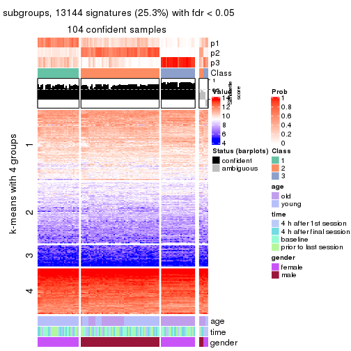
get_signatures(res, k = 4, scale_rows = FALSE)
get_signatures(res, k = 5, scale_rows = FALSE)
get_signatures(res, k = 6, scale_rows = FALSE)

Compare the overlap of signatures from different k:
compare_signatures(res)

get_signature() returns a data frame invisibly. TO get the list of signatures, the function
call should be assigned to a variable explicitly. In following code, if plot argument is set
to FALSE, no heatmap is plotted while only the differential analysis is performed.
# code only for demonstration
tb = get_signature(res, k = ..., plot = FALSE)
An example of the output of tb is:
#> which_row fdr mean_1 mean_2 scaled_mean_1 scaled_mean_2 km
#> 1 38 0.042760348 8.373488 9.131774 -0.5533452 0.5164555 1
#> 2 40 0.018707592 7.106213 8.469186 -0.6173731 0.5762149 1
#> 3 55 0.019134737 10.221463 11.207825 -0.6159697 0.5749050 1
#> 4 59 0.006059896 5.921854 7.869574 -0.6899429 0.6439467 1
#> 5 60 0.018055526 8.928898 10.211722 -0.6204761 0.5791110 1
#> 6 98 0.009384629 15.714769 14.887706 0.6635654 -0.6193277 2
...
The columns in tb are:
which_row: row indices corresponding to the input matrix.fdr: FDR for the differential test. mean_x: The mean value in group x.scaled_mean_x: The mean value in group x after rows are scaled.km: Row groups if k-means clustering is applied to rows.UMAP plot which shows how samples are separated.
dimension_reduction(res, k = 2, method = "UMAP")
dimension_reduction(res, k = 3, method = "UMAP")
dimension_reduction(res, k = 4, method = "UMAP")

dimension_reduction(res, k = 5, method = "UMAP")
dimension_reduction(res, k = 6, method = "UMAP")
Following heatmap shows how subgroups are split when increasing k:
collect_classes(res)
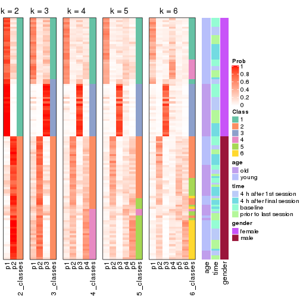
Test correlation between subgroups and known annotations. If the known annotation is numeric, one-way ANOVA test is applied, and if the known annotation is discrete, chi-squared contingency table test is applied.
test_to_known_factors(res)
#> n age(p) time(p) gender(p) k
#> CV:skmeans 110 1.00e+00 0.998 7.24e-25 2
#> CV:skmeans 104 4.97e-12 1.000 2.61e-23 3
#> CV:skmeans 52 4.30e-12 0.907 NA 4
#> CV:skmeans 36 1.61e-08 0.710 NA 5
#> CV:skmeans 22 NA NA NA 6
If matrix rows can be associated to genes, consider to use GO_Enrichment(res,
...) to perform function enrichment for the signature genes.
The object with results only for a single top-value method and a single partition method can be extracted as:
res = res_list["CV", "pam"]
# you can also extract it by
# res = res_list["CV:pam"]
A summary of res and all the functions that can be applied to it:
res
#> A 'ConsensusPartition' object with k = 2, 3, 4, 5, 6.
#> On a matrix with 51941 rows and 110 columns.
#> Top rows (1000, 2000, 3000, 4000, 5000) are extracted by 'CV' method.
#> Subgroups are detected by 'pam' method.
#> Performed in total 1250 partitions by row resampling.
#> Best k for subgroups seems to be 2.
#>
#> Following methods can be applied to this 'ConsensusPartition' object:
#> [1] "cola_report" "collect_classes" "collect_plots"
#> [4] "collect_stats" "colnames" "compare_signatures"
#> [7] "consensus_heatmap" "dimension_reduction" "functional_enrichment"
#> [10] "get_anno_col" "get_anno" "get_classes"
#> [13] "get_consensus" "get_matrix" "get_membership"
#> [16] "get_param" "get_signatures" "get_stats"
#> [19] "is_best_k" "is_stable_k" "membership_heatmap"
#> [22] "ncol" "nrow" "plot_ecdf"
#> [25] "rownames" "select_partition_number" "show"
#> [28] "suggest_best_k" "test_to_known_factors"
collect_plots() function collects all the plots made from res for all k (number of partitions)
into one single page to provide an easy and fast comparison between different k.
collect_plots(res)
The plots are:
k and the heatmap of
predicted classes for each k.k.k.k.All the plots in panels can be made by individual functions and they are plotted later in this section.
select_partition_number() produces several plots showing different
statistics for choosing “optimized” k. There are following statistics:
k;k, the area increased is defined as \(A_k - A_{k-1}\).The detailed explanations of these statistics can be found in the cola vignette.
Generally speaking, lower PAC score, higher mean silhouette score or higher
concordance corresponds to better partition. Rand index and Jaccard index
measure how similar the current partition is compared to partition with k-1.
If they are too similar, we won't accept k is better than k-1.
select_partition_number(res)
The numeric values for all these statistics can be obtained by get_stats().
get_stats(res)
#> k 1-PAC mean_silhouette concordance area_increased Rand Jaccard
#> 2 2 0.430 0.759 0.888 0.4842 0.519 0.519
#> 3 3 0.270 0.442 0.711 0.2927 0.892 0.801
#> 4 4 0.303 0.338 0.672 0.1329 0.837 0.655
#> 5 5 0.335 0.317 0.642 0.0499 0.912 0.748
#> 6 6 0.370 0.237 0.594 0.0258 0.826 0.489
suggest_best_k() suggests the best \(k\) based on these statistics. The rules are as follows:
NA.suggest_best_k(res)
#> [1] 2
Following shows the table of the partitions (You need to click the show/hide
code output link to see it). The membership matrix (columns with name p*)
is inferred by
clue::cl_consensus()
function with the SE method. Basically the value in the membership matrix
represents the probability to belong to a certain group. The finall class
label for an item is determined with the group with highest probability it
belongs to.
In get_classes() function, the entropy is calculated from the membership
matrix and the silhouette score is calculated from the consensus matrix.
cbind(get_classes(res, k = 2), get_membership(res, k = 2))
#> class entropy silhouette p1 p2
#> GSM702357 2 0.3733 0.8630 0.072 0.928
#> GSM702358 2 0.0000 0.8765 0.000 1.000
#> GSM702359 2 0.0000 0.8765 0.000 1.000
#> GSM702360 2 0.0672 0.8776 0.008 0.992
#> GSM702361 2 0.0000 0.8765 0.000 1.000
#> GSM702362 2 0.0000 0.8765 0.000 1.000
#> GSM702363 2 0.1414 0.8760 0.020 0.980
#> GSM702364 2 0.0000 0.8765 0.000 1.000
#> GSM702413 2 0.4022 0.8595 0.080 0.920
#> GSM702414 2 0.8909 0.5873 0.308 0.692
#> GSM702415 1 0.9922 0.2011 0.552 0.448
#> GSM702416 1 0.7453 0.7280 0.788 0.212
#> GSM702417 1 0.8267 0.6637 0.740 0.260
#> GSM702418 2 0.0672 0.8765 0.008 0.992
#> GSM702419 1 0.9954 0.1729 0.540 0.460
#> GSM702365 2 0.0672 0.8776 0.008 0.992
#> GSM702366 2 0.1414 0.8771 0.020 0.980
#> GSM702367 2 0.0376 0.8765 0.004 0.996
#> GSM702368 2 0.0000 0.8765 0.000 1.000
#> GSM702369 2 0.6623 0.7708 0.172 0.828
#> GSM702370 2 0.0000 0.8765 0.000 1.000
#> GSM702371 2 0.0000 0.8765 0.000 1.000
#> GSM702372 2 0.0000 0.8765 0.000 1.000
#> GSM702420 2 0.5737 0.8185 0.136 0.864
#> GSM702421 1 0.0000 0.8586 1.000 0.000
#> GSM702422 2 0.8144 0.6737 0.252 0.748
#> GSM702423 2 0.6247 0.7991 0.156 0.844
#> GSM702424 1 0.2043 0.8523 0.968 0.032
#> GSM702425 2 0.9983 0.0657 0.476 0.524
#> GSM702426 1 0.2603 0.8502 0.956 0.044
#> GSM702427 2 0.9963 0.1453 0.464 0.536
#> GSM702373 2 0.0000 0.8765 0.000 1.000
#> GSM702374 2 0.4022 0.8566 0.080 0.920
#> GSM702375 2 0.0000 0.8765 0.000 1.000
#> GSM702376 2 0.0000 0.8765 0.000 1.000
#> GSM702377 2 0.0000 0.8765 0.000 1.000
#> GSM702378 2 0.0000 0.8765 0.000 1.000
#> GSM702379 2 0.0000 0.8765 0.000 1.000
#> GSM702380 2 0.0000 0.8765 0.000 1.000
#> GSM702428 2 0.2603 0.8704 0.044 0.956
#> GSM702429 2 0.7528 0.7338 0.216 0.784
#> GSM702430 1 0.9933 0.1766 0.548 0.452
#> GSM702431 2 0.8499 0.6442 0.276 0.724
#> GSM702432 2 0.9775 0.3243 0.412 0.588
#> GSM702433 2 0.1843 0.8735 0.028 0.972
#> GSM702434 2 0.9000 0.5656 0.316 0.684
#> GSM702381 2 0.4431 0.8515 0.092 0.908
#> GSM702382 2 0.9170 0.5197 0.332 0.668
#> GSM702383 2 0.6438 0.7892 0.164 0.836
#> GSM702384 2 0.3431 0.8636 0.064 0.936
#> GSM702385 2 0.0672 0.8777 0.008 0.992
#> GSM702386 2 0.4939 0.8422 0.108 0.892
#> GSM702387 2 0.3431 0.8662 0.064 0.936
#> GSM702388 2 0.3114 0.8662 0.056 0.944
#> GSM702435 1 0.7602 0.7146 0.780 0.220
#> GSM702436 1 0.6623 0.7718 0.828 0.172
#> GSM702437 1 0.6438 0.7781 0.836 0.164
#> GSM702438 1 0.9608 0.3805 0.616 0.384
#> GSM702439 2 0.4022 0.8590 0.080 0.920
#> GSM702440 2 0.7950 0.7061 0.240 0.760
#> GSM702441 2 0.2603 0.8713 0.044 0.956
#> GSM702442 1 0.6048 0.7938 0.852 0.148
#> GSM702389 2 0.0376 0.8771 0.004 0.996
#> GSM702390 2 0.0672 0.8777 0.008 0.992
#> GSM702391 2 0.7950 0.6845 0.240 0.760
#> GSM702392 2 0.8861 0.5759 0.304 0.696
#> GSM702393 1 0.5294 0.8153 0.880 0.120
#> GSM702394 2 0.3431 0.8647 0.064 0.936
#> GSM702443 1 0.4161 0.8247 0.916 0.084
#> GSM702444 1 0.0000 0.8586 1.000 0.000
#> GSM702445 1 0.0000 0.8586 1.000 0.000
#> GSM702446 1 0.0376 0.8582 0.996 0.004
#> GSM702447 1 0.0376 0.8585 0.996 0.004
#> GSM702448 1 0.8909 0.5581 0.692 0.308
#> GSM702395 2 0.9866 0.2280 0.432 0.568
#> GSM702396 1 0.9996 0.0672 0.512 0.488
#> GSM702397 2 0.1414 0.8768 0.020 0.980
#> GSM702398 2 0.0376 0.8769 0.004 0.996
#> GSM702399 2 1.0000 -0.0390 0.496 0.504
#> GSM702400 2 0.7299 0.7328 0.204 0.796
#> GSM702449 1 0.0000 0.8586 1.000 0.000
#> GSM702450 1 0.0000 0.8586 1.000 0.000
#> GSM702451 1 0.0000 0.8586 1.000 0.000
#> GSM702452 1 0.0672 0.8583 0.992 0.008
#> GSM702453 1 0.0000 0.8586 1.000 0.000
#> GSM702454 1 0.0000 0.8586 1.000 0.000
#> GSM702401 1 0.5842 0.7963 0.860 0.140
#> GSM702402 2 0.3879 0.8623 0.076 0.924
#> GSM702403 2 0.0000 0.8765 0.000 1.000
#> GSM702404 2 0.0000 0.8765 0.000 1.000
#> GSM702405 1 0.7745 0.7133 0.772 0.228
#> GSM702406 2 0.5519 0.8227 0.128 0.872
#> GSM702455 1 0.1414 0.8545 0.980 0.020
#> GSM702456 1 0.0000 0.8586 1.000 0.000
#> GSM702457 1 0.0000 0.8586 1.000 0.000
#> GSM702458 1 0.6712 0.7662 0.824 0.176
#> GSM702459 1 0.0000 0.8586 1.000 0.000
#> GSM702460 1 0.0938 0.8566 0.988 0.012
#> GSM702407 2 0.3733 0.8580 0.072 0.928
#> GSM702408 1 0.9977 0.1477 0.528 0.472
#> GSM702409 2 0.0938 0.8772 0.012 0.988
#> GSM702410 2 0.7139 0.7599 0.196 0.804
#> GSM702411 1 0.5408 0.8111 0.876 0.124
#> GSM702412 2 0.0000 0.8765 0.000 1.000
#> GSM702461 1 0.0000 0.8586 1.000 0.000
#> GSM702462 1 0.0000 0.8586 1.000 0.000
#> GSM702463 1 0.0000 0.8586 1.000 0.000
#> GSM702464 1 0.0938 0.8575 0.988 0.012
#> GSM702465 1 0.0000 0.8586 1.000 0.000
#> GSM702466 1 0.0376 0.8585 0.996 0.004
cbind(get_classes(res, k = 3), get_membership(res, k = 3))
#> class entropy silhouette p1 p2 p3
#> GSM702357 2 0.5677 0.52022 0.160 0.792 0.048
#> GSM702358 2 0.3686 0.55956 0.140 0.860 0.000
#> GSM702359 2 0.6126 0.26563 0.400 0.600 0.000
#> GSM702360 2 0.3375 0.60131 0.100 0.892 0.008
#> GSM702361 2 0.2625 0.59217 0.084 0.916 0.000
#> GSM702362 2 0.6126 0.16856 0.400 0.600 0.000
#> GSM702363 2 0.4978 0.38978 0.216 0.780 0.004
#> GSM702364 2 0.5327 0.47971 0.272 0.728 0.000
#> GSM702413 1 0.6825 0.11506 0.496 0.492 0.012
#> GSM702414 2 0.9402 -0.15389 0.344 0.472 0.184
#> GSM702415 3 0.9963 -0.27892 0.308 0.316 0.376
#> GSM702416 3 0.8718 0.51851 0.364 0.116 0.520
#> GSM702417 3 0.6226 0.51775 0.028 0.252 0.720
#> GSM702418 2 0.1878 0.59639 0.044 0.952 0.004
#> GSM702419 3 0.9775 0.19795 0.288 0.272 0.440
#> GSM702365 2 0.4931 0.51380 0.232 0.768 0.000
#> GSM702366 2 0.5656 0.46723 0.284 0.712 0.004
#> GSM702367 2 0.5650 0.44767 0.312 0.688 0.000
#> GSM702368 2 0.5650 0.40753 0.312 0.688 0.000
#> GSM702369 2 0.8250 0.23109 0.232 0.628 0.140
#> GSM702370 2 0.2537 0.60037 0.080 0.920 0.000
#> GSM702371 2 0.0000 0.58534 0.000 1.000 0.000
#> GSM702372 2 0.5254 0.51278 0.264 0.736 0.000
#> GSM702420 2 0.7186 -0.05286 0.476 0.500 0.024
#> GSM702421 3 0.0592 0.71424 0.012 0.000 0.988
#> GSM702422 2 0.8588 0.09444 0.344 0.544 0.112
#> GSM702423 2 0.7411 0.36525 0.256 0.668 0.076
#> GSM702424 3 0.1919 0.72004 0.020 0.024 0.956
#> GSM702425 3 0.9112 -0.22539 0.140 0.428 0.432
#> GSM702426 3 0.2176 0.71567 0.020 0.032 0.948
#> GSM702427 3 0.9885 0.00254 0.260 0.368 0.372
#> GSM702373 2 0.5835 0.39041 0.340 0.660 0.000
#> GSM702374 1 0.7446 0.23935 0.532 0.432 0.036
#> GSM702375 2 0.6192 0.25138 0.420 0.580 0.000
#> GSM702376 2 0.0892 0.59094 0.020 0.980 0.000
#> GSM702377 2 0.4235 0.55767 0.176 0.824 0.000
#> GSM702378 2 0.3192 0.53629 0.112 0.888 0.000
#> GSM702379 2 0.0000 0.58534 0.000 1.000 0.000
#> GSM702380 2 0.3267 0.56668 0.116 0.884 0.000
#> GSM702428 2 0.2998 0.57610 0.068 0.916 0.016
#> GSM702429 2 0.7635 0.35909 0.212 0.676 0.112
#> GSM702430 3 0.7715 0.02366 0.048 0.428 0.524
#> GSM702431 2 0.9439 -0.31071 0.376 0.444 0.180
#> GSM702432 2 0.9598 -0.16265 0.248 0.476 0.276
#> GSM702433 2 0.1989 0.59755 0.048 0.948 0.004
#> GSM702434 2 0.9347 -0.07265 0.288 0.508 0.204
#> GSM702381 2 0.7095 0.36920 0.292 0.660 0.048
#> GSM702382 2 0.8233 -0.03296 0.116 0.612 0.272
#> GSM702383 1 0.7236 0.33431 0.576 0.392 0.032
#> GSM702384 2 0.4652 0.58254 0.080 0.856 0.064
#> GSM702385 2 0.3349 0.59313 0.108 0.888 0.004
#> GSM702386 2 0.5377 0.53367 0.112 0.820 0.068
#> GSM702387 2 0.1529 0.59319 0.000 0.960 0.040
#> GSM702388 2 0.7209 0.23240 0.360 0.604 0.036
#> GSM702435 3 0.5894 0.57837 0.028 0.220 0.752
#> GSM702436 3 0.4351 0.62613 0.004 0.168 0.828
#> GSM702437 3 0.8080 0.45139 0.232 0.128 0.640
#> GSM702438 3 0.9636 0.37893 0.284 0.248 0.468
#> GSM702439 2 0.7974 -0.21617 0.436 0.504 0.060
#> GSM702440 2 0.8907 -0.10802 0.332 0.528 0.140
#> GSM702441 2 0.4489 0.58814 0.108 0.856 0.036
#> GSM702442 3 0.6349 0.59856 0.140 0.092 0.768
#> GSM702389 2 0.2860 0.58630 0.084 0.912 0.004
#> GSM702390 2 0.5397 0.34291 0.280 0.720 0.000
#> GSM702391 2 0.5058 0.31183 0.000 0.756 0.244
#> GSM702392 1 0.8024 0.46366 0.648 0.220 0.132
#> GSM702393 3 0.5746 0.59094 0.180 0.040 0.780
#> GSM702394 2 0.6001 0.39903 0.176 0.772 0.052
#> GSM702443 3 0.7841 0.60815 0.360 0.064 0.576
#> GSM702444 3 0.0424 0.71652 0.008 0.000 0.992
#> GSM702445 3 0.5397 0.68505 0.280 0.000 0.720
#> GSM702446 3 0.3038 0.72612 0.104 0.000 0.896
#> GSM702447 3 0.1753 0.72388 0.048 0.000 0.952
#> GSM702448 3 0.8463 0.42163 0.444 0.088 0.468
#> GSM702395 2 0.9823 -0.31215 0.260 0.420 0.320
#> GSM702396 1 0.9263 0.51164 0.528 0.252 0.220
#> GSM702397 2 0.5406 0.52439 0.224 0.764 0.012
#> GSM702398 2 0.5178 0.50498 0.256 0.744 0.000
#> GSM702399 3 0.9820 -0.27039 0.264 0.312 0.424
#> GSM702400 2 0.7829 0.25002 0.164 0.672 0.164
#> GSM702449 3 0.2878 0.71004 0.096 0.000 0.904
#> GSM702450 3 0.5058 0.70249 0.244 0.000 0.756
#> GSM702451 3 0.4291 0.72080 0.180 0.000 0.820
#> GSM702452 3 0.5480 0.69784 0.264 0.004 0.732
#> GSM702453 3 0.0892 0.71920 0.020 0.000 0.980
#> GSM702454 3 0.2301 0.72714 0.060 0.004 0.936
#> GSM702401 3 0.8771 0.14817 0.324 0.132 0.544
#> GSM702402 2 0.4369 0.54418 0.096 0.864 0.040
#> GSM702403 2 0.3482 0.58234 0.128 0.872 0.000
#> GSM702404 2 0.0424 0.58849 0.008 0.992 0.000
#> GSM702405 3 0.7510 0.49720 0.124 0.184 0.692
#> GSM702406 2 0.6325 0.49749 0.112 0.772 0.116
#> GSM702455 3 0.6026 0.65176 0.376 0.000 0.624
#> GSM702456 3 0.3619 0.72551 0.136 0.000 0.864
#> GSM702457 3 0.5291 0.68596 0.268 0.000 0.732
#> GSM702458 3 0.8409 0.60964 0.308 0.112 0.580
#> GSM702459 3 0.0000 0.71463 0.000 0.000 1.000
#> GSM702460 3 0.3816 0.72506 0.148 0.000 0.852
#> GSM702407 2 0.3856 0.57595 0.040 0.888 0.072
#> GSM702408 1 0.8886 0.51044 0.572 0.188 0.240
#> GSM702409 2 0.3375 0.58644 0.100 0.892 0.008
#> GSM702410 2 0.7199 0.36078 0.180 0.712 0.108
#> GSM702411 3 0.4790 0.64902 0.096 0.056 0.848
#> GSM702412 2 0.3752 0.58755 0.144 0.856 0.000
#> GSM702461 3 0.1163 0.71771 0.028 0.000 0.972
#> GSM702462 3 0.2448 0.72845 0.076 0.000 0.924
#> GSM702463 3 0.4121 0.71950 0.168 0.000 0.832
#> GSM702464 3 0.5692 0.69170 0.268 0.008 0.724
#> GSM702465 3 0.0000 0.71463 0.000 0.000 1.000
#> GSM702466 3 0.4605 0.71548 0.204 0.000 0.796
cbind(get_classes(res, k = 4), get_membership(res, k = 4))
#> class entropy silhouette p1 p2 p3 p4
#> GSM702357 2 0.5583 0.37766 0.004 0.664 0.036 0.296
#> GSM702358 2 0.4163 0.52315 0.020 0.792 0.000 0.188
#> GSM702359 4 0.6660 -0.10434 0.084 0.452 0.000 0.464
#> GSM702360 2 0.4463 0.57650 0.040 0.808 0.008 0.144
#> GSM702361 2 0.3032 0.57571 0.008 0.868 0.000 0.124
#> GSM702362 4 0.4905 0.21378 0.004 0.364 0.000 0.632
#> GSM702363 2 0.4905 0.19520 0.004 0.632 0.000 0.364
#> GSM702364 2 0.6477 0.39525 0.116 0.620 0.000 0.264
#> GSM702413 4 0.8286 0.20248 0.304 0.332 0.012 0.352
#> GSM702414 1 0.6396 0.42365 0.668 0.228 0.088 0.016
#> GSM702415 4 0.9683 0.17691 0.196 0.208 0.212 0.384
#> GSM702416 1 0.6931 0.33341 0.572 0.048 0.340 0.040
#> GSM702417 3 0.5805 0.40416 0.036 0.220 0.712 0.032
#> GSM702418 2 0.2222 0.58138 0.016 0.924 0.000 0.060
#> GSM702419 3 0.9462 -0.07242 0.248 0.188 0.412 0.152
#> GSM702365 2 0.6242 0.33287 0.080 0.612 0.000 0.308
#> GSM702366 2 0.6476 0.39360 0.112 0.616 0.000 0.272
#> GSM702367 2 0.6337 0.25143 0.068 0.552 0.000 0.380
#> GSM702368 4 0.5296 -0.08279 0.008 0.492 0.000 0.500
#> GSM702369 2 0.8219 0.13548 0.060 0.488 0.120 0.332
#> GSM702370 2 0.2796 0.58439 0.016 0.892 0.000 0.092
#> GSM702371 2 0.0000 0.57002 0.000 1.000 0.000 0.000
#> GSM702372 2 0.6685 0.32361 0.108 0.568 0.000 0.324
#> GSM702420 2 0.8387 -0.13724 0.256 0.368 0.020 0.356
#> GSM702421 3 0.0707 0.58229 0.020 0.000 0.980 0.000
#> GSM702422 2 0.8893 0.09862 0.248 0.456 0.076 0.220
#> GSM702423 2 0.7274 0.39481 0.240 0.620 0.056 0.084
#> GSM702424 3 0.1837 0.58631 0.028 0.028 0.944 0.000
#> GSM702425 3 0.8376 -0.03262 0.048 0.360 0.440 0.152
#> GSM702426 3 0.1724 0.58614 0.032 0.020 0.948 0.000
#> GSM702427 1 0.8256 0.33624 0.444 0.268 0.268 0.020
#> GSM702373 2 0.6163 0.19231 0.052 0.532 0.000 0.416
#> GSM702374 4 0.3380 0.44809 0.004 0.136 0.008 0.852
#> GSM702375 4 0.5112 -0.01841 0.004 0.436 0.000 0.560
#> GSM702376 2 0.1356 0.57833 0.008 0.960 0.000 0.032
#> GSM702377 2 0.4584 0.42677 0.004 0.696 0.000 0.300
#> GSM702378 2 0.3074 0.51086 0.000 0.848 0.000 0.152
#> GSM702379 2 0.0000 0.57002 0.000 1.000 0.000 0.000
#> GSM702380 2 0.4753 0.52172 0.128 0.788 0.000 0.084
#> GSM702428 2 0.3047 0.55534 0.116 0.872 0.012 0.000
#> GSM702429 2 0.7538 0.38105 0.196 0.624 0.076 0.104
#> GSM702430 3 0.7120 -0.00443 0.112 0.412 0.472 0.004
#> GSM702431 1 0.9724 -0.17817 0.312 0.272 0.140 0.276
#> GSM702432 1 0.8137 0.28800 0.424 0.344 0.216 0.016
#> GSM702433 2 0.2871 0.57845 0.032 0.896 0.000 0.072
#> GSM702434 2 0.9298 0.01697 0.260 0.432 0.156 0.152
#> GSM702381 4 0.5948 -0.08839 0.004 0.476 0.028 0.492
#> GSM702382 2 0.7304 0.05375 0.000 0.532 0.260 0.208
#> GSM702383 4 0.2457 0.46093 0.004 0.076 0.008 0.912
#> GSM702384 2 0.5321 0.53885 0.016 0.764 0.064 0.156
#> GSM702385 2 0.3443 0.56246 0.016 0.848 0.000 0.136
#> GSM702386 2 0.6074 0.50419 0.112 0.744 0.060 0.084
#> GSM702387 2 0.1677 0.57965 0.000 0.948 0.040 0.012
#> GSM702388 2 0.6464 0.04966 0.020 0.476 0.032 0.472
#> GSM702435 3 0.5358 0.40144 0.044 0.208 0.736 0.012
#> GSM702436 3 0.3991 0.50214 0.000 0.172 0.808 0.020
#> GSM702437 3 0.8028 0.24711 0.100 0.088 0.564 0.248
#> GSM702438 1 0.6966 0.43415 0.572 0.160 0.268 0.000
#> GSM702439 1 0.8592 -0.31548 0.360 0.328 0.028 0.284
#> GSM702440 2 0.9152 -0.08712 0.224 0.424 0.092 0.260
#> GSM702441 2 0.5182 0.53868 0.048 0.776 0.024 0.152
#> GSM702442 3 0.6352 0.46446 0.036 0.084 0.704 0.176
#> GSM702389 2 0.3894 0.55984 0.024 0.832 0.004 0.140
#> GSM702390 2 0.5936 0.13899 0.044 0.576 0.000 0.380
#> GSM702391 2 0.4335 0.41508 0.004 0.752 0.240 0.004
#> GSM702392 4 0.7906 0.26011 0.368 0.080 0.064 0.488
#> GSM702393 3 0.5461 0.42749 0.012 0.028 0.696 0.264
#> GSM702394 2 0.6370 0.24242 0.028 0.628 0.040 0.304
#> GSM702443 1 0.4008 0.46280 0.756 0.000 0.244 0.000
#> GSM702444 3 0.0592 0.58288 0.016 0.000 0.984 0.000
#> GSM702445 1 0.5163 0.21749 0.516 0.000 0.480 0.004
#> GSM702446 3 0.4679 0.28586 0.352 0.000 0.648 0.000
#> GSM702447 3 0.2466 0.57137 0.096 0.000 0.900 0.004
#> GSM702448 3 0.8672 -0.19331 0.316 0.032 0.356 0.296
#> GSM702395 2 0.9717 -0.18396 0.148 0.336 0.240 0.276
#> GSM702396 4 0.7887 0.43075 0.168 0.140 0.088 0.604
#> GSM702397 2 0.5451 0.40554 0.012 0.644 0.012 0.332
#> GSM702398 2 0.5548 0.31400 0.024 0.588 0.000 0.388
#> GSM702399 3 0.9854 -0.10955 0.216 0.220 0.340 0.224
#> GSM702400 2 0.6780 0.29780 0.004 0.620 0.152 0.224
#> GSM702449 3 0.3711 0.53688 0.140 0.000 0.836 0.024
#> GSM702450 3 0.4996 -0.14078 0.484 0.000 0.516 0.000
#> GSM702451 3 0.4936 0.27421 0.340 0.000 0.652 0.008
#> GSM702452 1 0.4761 0.33926 0.628 0.000 0.372 0.000
#> GSM702453 3 0.2053 0.57859 0.072 0.000 0.924 0.004
#> GSM702454 3 0.2345 0.55344 0.100 0.000 0.900 0.000
#> GSM702401 4 0.8863 0.18793 0.140 0.100 0.312 0.448
#> GSM702402 2 0.4768 0.47248 0.016 0.772 0.020 0.192
#> GSM702403 2 0.3498 0.55988 0.008 0.832 0.000 0.160
#> GSM702404 2 0.0336 0.57264 0.008 0.992 0.000 0.000
#> GSM702405 3 0.8610 0.27049 0.144 0.144 0.540 0.172
#> GSM702406 2 0.6411 0.50282 0.032 0.704 0.112 0.152
#> GSM702455 1 0.3569 0.46472 0.804 0.000 0.196 0.000
#> GSM702456 3 0.3764 0.43071 0.216 0.000 0.784 0.000
#> GSM702457 1 0.4989 0.24137 0.528 0.000 0.472 0.000
#> GSM702458 1 0.5528 0.46607 0.700 0.064 0.236 0.000
#> GSM702459 3 0.0592 0.58226 0.016 0.000 0.984 0.000
#> GSM702460 3 0.4431 0.33340 0.304 0.000 0.696 0.000
#> GSM702407 2 0.4195 0.56595 0.016 0.844 0.068 0.072
#> GSM702408 4 0.6260 0.44565 0.136 0.072 0.064 0.728
#> GSM702409 2 0.3653 0.56775 0.024 0.856 0.008 0.112
#> GSM702410 2 0.7149 0.39270 0.212 0.644 0.072 0.072
#> GSM702411 3 0.4017 0.53976 0.000 0.044 0.828 0.128
#> GSM702412 2 0.4839 0.54875 0.052 0.764 0.000 0.184
#> GSM702461 3 0.1867 0.58222 0.072 0.000 0.928 0.000
#> GSM702462 3 0.2921 0.53905 0.140 0.000 0.860 0.000
#> GSM702463 3 0.4382 0.28081 0.296 0.000 0.704 0.000
#> GSM702464 1 0.4746 0.34952 0.632 0.000 0.368 0.000
#> GSM702465 3 0.0336 0.58161 0.008 0.000 0.992 0.000
#> GSM702466 3 0.4888 0.04999 0.412 0.000 0.588 0.000
cbind(get_classes(res, k = 5), get_membership(res, k = 5))
#> class entropy silhouette p1 p2 p3 p4 p5
#> GSM702357 2 0.5684 -0.02979 0.048 0.564 0.020 0.000 0.368
#> GSM702358 2 0.4322 0.46769 0.144 0.768 0.000 0.000 0.088
#> GSM702359 2 0.6766 -0.10913 0.320 0.396 0.000 0.000 0.284
#> GSM702360 2 0.4244 0.51189 0.132 0.788 0.008 0.000 0.072
#> GSM702361 2 0.2951 0.50776 0.028 0.860 0.000 0.000 0.112
#> GSM702362 5 0.6599 0.30456 0.220 0.344 0.000 0.000 0.436
#> GSM702363 2 0.5145 0.20372 0.332 0.612 0.000 0.000 0.056
#> GSM702364 2 0.6050 0.19432 0.360 0.512 0.000 0.000 0.128
#> GSM702413 2 0.8603 -0.28063 0.260 0.268 0.000 0.236 0.236
#> GSM702414 4 0.5852 0.43619 0.064 0.156 0.064 0.704 0.012
#> GSM702415 1 0.7989 0.35232 0.528 0.180 0.140 0.120 0.032
#> GSM702416 4 0.6715 0.49172 0.136 0.032 0.304 0.528 0.000
#> GSM702417 3 0.5674 0.44822 0.084 0.212 0.676 0.024 0.004
#> GSM702418 2 0.2291 0.51608 0.012 0.908 0.000 0.008 0.072
#> GSM702419 3 0.8804 0.02439 0.224 0.172 0.380 0.200 0.024
#> GSM702365 2 0.6048 -0.12129 0.036 0.516 0.000 0.048 0.400
#> GSM702366 2 0.6141 0.28234 0.260 0.572 0.000 0.004 0.164
#> GSM702367 2 0.6678 0.04330 0.180 0.492 0.000 0.012 0.316
#> GSM702368 5 0.5574 0.33252 0.072 0.416 0.000 0.000 0.512
#> GSM702369 2 0.8046 -0.00415 0.192 0.436 0.112 0.004 0.256
#> GSM702370 2 0.3814 0.50728 0.064 0.816 0.000 0.004 0.116
#> GSM702371 2 0.0162 0.51191 0.000 0.996 0.000 0.000 0.004
#> GSM702372 1 0.6671 -0.08214 0.396 0.372 0.000 0.000 0.232
#> GSM702420 5 0.8089 0.28761 0.068 0.312 0.012 0.224 0.384
#> GSM702421 3 0.1331 0.60046 0.040 0.000 0.952 0.008 0.000
#> GSM702422 5 0.9226 -0.08376 0.232 0.232 0.060 0.136 0.340
#> GSM702423 2 0.7106 0.26851 0.264 0.560 0.044 0.108 0.024
#> GSM702424 3 0.1461 0.60243 0.004 0.016 0.952 0.028 0.000
#> GSM702425 3 0.7312 -0.15498 0.220 0.340 0.412 0.024 0.004
#> GSM702426 3 0.2416 0.60189 0.060 0.016 0.908 0.016 0.000
#> GSM702427 4 0.8666 0.16736 0.104 0.248 0.196 0.412 0.040
#> GSM702373 2 0.6469 -0.20889 0.184 0.436 0.000 0.000 0.380
#> GSM702374 5 0.5441 0.18342 0.324 0.080 0.000 0.000 0.596
#> GSM702375 5 0.4225 0.37810 0.004 0.364 0.000 0.000 0.632
#> GSM702376 2 0.1310 0.51912 0.024 0.956 0.000 0.000 0.020
#> GSM702377 2 0.4268 0.23794 0.008 0.648 0.000 0.000 0.344
#> GSM702378 2 0.2890 0.45995 0.160 0.836 0.000 0.000 0.004
#> GSM702379 2 0.0162 0.51276 0.004 0.996 0.000 0.000 0.000
#> GSM702380 2 0.4201 0.30305 0.408 0.592 0.000 0.000 0.000
#> GSM702428 2 0.3789 0.47592 0.068 0.836 0.012 0.080 0.004
#> GSM702429 2 0.7475 0.25408 0.060 0.592 0.064 0.172 0.112
#> GSM702430 3 0.7476 -0.07615 0.060 0.396 0.408 0.128 0.008
#> GSM702431 1 0.8941 0.26739 0.336 0.232 0.100 0.284 0.048
#> GSM702432 4 0.7693 0.17585 0.088 0.308 0.168 0.436 0.000
#> GSM702433 2 0.3238 0.50731 0.012 0.864 0.004 0.028 0.092
#> GSM702434 2 0.9207 -0.04810 0.112 0.404 0.148 0.212 0.124
#> GSM702381 5 0.4781 0.34587 0.012 0.388 0.008 0.000 0.592
#> GSM702382 2 0.7508 -0.01089 0.144 0.500 0.252 0.000 0.104
#> GSM702383 5 0.4906 0.17852 0.292 0.036 0.008 0.000 0.664
#> GSM702384 2 0.5536 0.41474 0.108 0.712 0.044 0.000 0.136
#> GSM702385 2 0.3224 0.48489 0.016 0.824 0.000 0.000 0.160
#> GSM702386 2 0.5201 0.32573 0.344 0.608 0.040 0.000 0.008
#> GSM702387 2 0.2171 0.52178 0.016 0.924 0.032 0.000 0.028
#> GSM702388 5 0.7044 0.28349 0.128 0.396 0.036 0.004 0.436
#> GSM702435 3 0.4862 0.44594 0.008 0.200 0.728 0.060 0.004
#> GSM702436 3 0.3898 0.54182 0.016 0.160 0.800 0.000 0.024
#> GSM702437 3 0.7212 0.18418 0.312 0.088 0.512 0.080 0.008
#> GSM702438 4 0.6256 0.53632 0.028 0.140 0.196 0.632 0.004
#> GSM702439 1 0.8210 0.18659 0.360 0.292 0.012 0.264 0.072
#> GSM702440 2 0.8675 -0.24656 0.332 0.356 0.084 0.180 0.048
#> GSM702441 2 0.5325 0.42723 0.012 0.736 0.036 0.060 0.156
#> GSM702442 3 0.6520 0.49523 0.124 0.068 0.660 0.016 0.132
#> GSM702389 2 0.3752 0.50180 0.140 0.812 0.004 0.000 0.044
#> GSM702390 2 0.5375 0.16035 0.368 0.568 0.000 0.000 0.064
#> GSM702391 2 0.3607 0.37814 0.004 0.752 0.244 0.000 0.000
#> GSM702392 1 0.8188 0.30035 0.496 0.060 0.060 0.208 0.176
#> GSM702393 3 0.5173 0.45471 0.044 0.012 0.672 0.004 0.268
#> GSM702394 2 0.5439 0.22977 0.348 0.596 0.032 0.000 0.024
#> GSM702443 4 0.3106 0.62926 0.024 0.000 0.132 0.844 0.000
#> GSM702444 3 0.0404 0.59977 0.000 0.000 0.988 0.012 0.000
#> GSM702445 4 0.4310 0.47642 0.004 0.000 0.392 0.604 0.000
#> GSM702446 3 0.4304 0.03213 0.000 0.000 0.516 0.484 0.000
#> GSM702447 3 0.2011 0.58979 0.004 0.000 0.908 0.088 0.000
#> GSM702448 1 0.7823 -0.16357 0.328 0.028 0.304 0.324 0.016
#> GSM702395 1 0.9341 0.14212 0.324 0.264 0.200 0.072 0.140
#> GSM702396 1 0.7613 0.24595 0.540 0.120 0.064 0.036 0.240
#> GSM702397 2 0.5462 0.24251 0.064 0.612 0.008 0.000 0.316
#> GSM702398 2 0.5900 -0.05010 0.108 0.516 0.000 0.000 0.376
#> GSM702399 3 0.9628 -0.16020 0.100 0.200 0.316 0.200 0.184
#> GSM702400 2 0.6635 0.29896 0.132 0.632 0.152 0.004 0.080
#> GSM702449 3 0.3584 0.55933 0.056 0.000 0.832 0.108 0.004
#> GSM702450 4 0.4702 0.33726 0.016 0.000 0.432 0.552 0.000
#> GSM702451 3 0.4668 0.20006 0.024 0.000 0.624 0.352 0.000
#> GSM702452 4 0.3274 0.58269 0.000 0.000 0.220 0.780 0.000
#> GSM702453 3 0.2389 0.58539 0.004 0.000 0.880 0.116 0.000
#> GSM702454 3 0.2522 0.56130 0.012 0.000 0.880 0.108 0.000
#> GSM702401 1 0.5491 0.37382 0.708 0.068 0.172 0.000 0.052
#> GSM702402 2 0.4484 0.43140 0.204 0.752 0.020 0.008 0.016
#> GSM702403 2 0.3174 0.49215 0.020 0.844 0.000 0.004 0.132
#> GSM702404 2 0.0579 0.51579 0.008 0.984 0.000 0.000 0.008
#> GSM702405 3 0.8170 0.26451 0.028 0.120 0.496 0.160 0.196
#> GSM702406 2 0.6318 0.39915 0.180 0.644 0.104 0.000 0.072
#> GSM702455 4 0.1877 0.61099 0.012 0.000 0.064 0.924 0.000
#> GSM702456 3 0.3487 0.43133 0.008 0.000 0.780 0.212 0.000
#> GSM702457 4 0.4138 0.49653 0.000 0.000 0.384 0.616 0.000
#> GSM702458 4 0.2900 0.62571 0.000 0.028 0.108 0.864 0.000
#> GSM702459 3 0.0324 0.59905 0.000 0.000 0.992 0.004 0.004
#> GSM702460 3 0.4219 0.12300 0.000 0.000 0.584 0.416 0.000
#> GSM702407 2 0.4096 0.49733 0.036 0.820 0.060 0.000 0.084
#> GSM702408 1 0.4879 0.29749 0.748 0.056 0.032 0.000 0.164
#> GSM702409 2 0.3608 0.50324 0.060 0.844 0.008 0.004 0.084
#> GSM702410 2 0.6438 0.23096 0.360 0.528 0.036 0.072 0.004
#> GSM702411 3 0.4061 0.56876 0.024 0.040 0.808 0.000 0.128
#> GSM702412 2 0.4975 0.45741 0.128 0.736 0.000 0.012 0.124
#> GSM702461 3 0.2136 0.59685 0.008 0.000 0.904 0.088 0.000
#> GSM702462 3 0.2773 0.54268 0.000 0.000 0.836 0.164 0.000
#> GSM702463 3 0.3876 0.20504 0.000 0.000 0.684 0.316 0.000
#> GSM702464 4 0.3143 0.59271 0.000 0.000 0.204 0.796 0.000
#> GSM702465 3 0.0000 0.59782 0.000 0.000 1.000 0.000 0.000
#> GSM702466 3 0.4446 -0.18934 0.004 0.000 0.520 0.476 0.000
cbind(get_classes(res, k = 6), get_membership(res, k = 6))
#> class entropy silhouette p1 p2 p3 p4 p5 p6
#> GSM702357 6 0.5384 0.30170 0.024 0.252 0.004 0.024 0.044 0.652
#> GSM702358 2 0.5388 0.21376 0.000 0.616 0.000 0.040 0.068 0.276
#> GSM702359 6 0.6034 0.12371 0.000 0.196 0.000 0.016 0.272 0.516
#> GSM702360 2 0.5739 0.21034 0.008 0.560 0.000 0.016 0.104 0.312
#> GSM702361 2 0.4898 0.20798 0.000 0.528 0.000 0.008 0.044 0.420
#> GSM702362 6 0.4706 0.24056 0.000 0.444 0.000 0.012 0.024 0.520
#> GSM702363 2 0.3141 0.16394 0.000 0.856 0.000 0.028 0.052 0.064
#> GSM702364 5 0.5848 -0.00575 0.000 0.192 0.000 0.000 0.428 0.380
#> GSM702413 6 0.8371 -0.03838 0.004 0.236 0.136 0.252 0.052 0.320
#> GSM702414 3 0.6351 0.34887 0.048 0.060 0.616 0.192 0.000 0.084
#> GSM702415 2 0.8426 -0.28130 0.112 0.396 0.036 0.252 0.160 0.044
#> GSM702416 3 0.6524 0.48841 0.292 0.012 0.532 0.028 0.120 0.016
#> GSM702417 1 0.6171 0.45556 0.652 0.184 0.024 0.060 0.044 0.036
#> GSM702418 2 0.4344 0.24917 0.000 0.568 0.008 0.000 0.012 0.412
#> GSM702419 1 0.8990 0.03456 0.368 0.212 0.172 0.108 0.060 0.080
#> GSM702365 6 0.5197 0.36423 0.000 0.200 0.044 0.012 0.056 0.688
#> GSM702366 6 0.6649 0.11540 0.000 0.292 0.000 0.032 0.276 0.400
#> GSM702367 6 0.5855 0.29593 0.000 0.180 0.000 0.024 0.220 0.576
#> GSM702368 6 0.3483 0.39496 0.000 0.236 0.000 0.000 0.016 0.748
#> GSM702369 6 0.7339 0.13292 0.112 0.288 0.004 0.004 0.172 0.420
#> GSM702370 2 0.6524 0.07102 0.000 0.440 0.008 0.056 0.108 0.388
#> GSM702371 2 0.3515 0.30488 0.000 0.676 0.000 0.000 0.000 0.324
#> GSM702372 5 0.5106 0.13534 0.000 0.200 0.000 0.020 0.668 0.112
#> GSM702420 6 0.7329 0.19149 0.012 0.084 0.160 0.184 0.032 0.528
#> GSM702421 1 0.1649 0.60247 0.932 0.000 0.000 0.036 0.032 0.000
#> GSM702422 4 0.5874 0.00000 0.044 0.032 0.028 0.696 0.072 0.128
#> GSM702423 6 0.8756 0.10426 0.040 0.272 0.032 0.156 0.208 0.292
#> GSM702424 1 0.1699 0.60407 0.936 0.012 0.040 0.004 0.008 0.000
#> GSM702425 1 0.7990 0.01064 0.380 0.320 0.008 0.080 0.064 0.148
#> GSM702426 1 0.2893 0.60044 0.876 0.000 0.008 0.060 0.040 0.016
#> GSM702427 3 0.8941 0.12293 0.148 0.104 0.360 0.196 0.028 0.164
#> GSM702373 6 0.4871 0.26021 0.000 0.144 0.000 0.000 0.196 0.660
#> GSM702374 6 0.5150 0.00301 0.000 0.344 0.000 0.020 0.056 0.580
#> GSM702375 6 0.1829 0.39827 0.000 0.064 0.000 0.004 0.012 0.920
#> GSM702376 2 0.4464 0.29509 0.000 0.624 0.000 0.008 0.028 0.340
#> GSM702377 6 0.3725 0.16211 0.000 0.316 0.000 0.000 0.008 0.676
#> GSM702378 2 0.2877 0.30117 0.000 0.820 0.000 0.000 0.012 0.168
#> GSM702379 2 0.3636 0.30529 0.000 0.676 0.000 0.000 0.004 0.320
#> GSM702380 5 0.6014 0.10886 0.000 0.280 0.000 0.000 0.432 0.288
#> GSM702428 2 0.6290 0.14711 0.012 0.472 0.008 0.192 0.000 0.316
#> GSM702429 6 0.8516 0.10825 0.060 0.260 0.100 0.180 0.028 0.372
#> GSM702430 1 0.8606 -0.03334 0.392 0.196 0.104 0.096 0.020 0.192
#> GSM702431 2 0.9237 -0.27228 0.076 0.292 0.216 0.236 0.068 0.112
#> GSM702432 3 0.8918 0.21990 0.144 0.144 0.412 0.128 0.056 0.116
#> GSM702433 2 0.5397 0.22961 0.000 0.544 0.028 0.048 0.004 0.376
#> GSM702434 6 0.9506 0.13294 0.140 0.196 0.148 0.132 0.076 0.308
#> GSM702381 6 0.2412 0.40213 0.004 0.080 0.000 0.012 0.012 0.892
#> GSM702382 2 0.6572 0.05211 0.236 0.564 0.000 0.032 0.052 0.116
#> GSM702383 6 0.4605 -0.03781 0.008 0.308 0.000 0.012 0.024 0.648
#> GSM702384 6 0.6771 -0.01291 0.040 0.372 0.004 0.024 0.112 0.448
#> GSM702385 2 0.4536 0.16788 0.000 0.496 0.000 0.004 0.024 0.476
#> GSM702386 5 0.6758 0.07519 0.040 0.280 0.000 0.000 0.392 0.288
#> GSM702387 2 0.5146 0.30025 0.032 0.624 0.000 0.016 0.024 0.304
#> GSM702388 6 0.5574 0.32774 0.032 0.212 0.004 0.012 0.084 0.656
#> GSM702435 1 0.4957 0.45170 0.732 0.068 0.056 0.004 0.004 0.136
#> GSM702436 1 0.4054 0.53959 0.780 0.156 0.000 0.028 0.012 0.024
#> GSM702437 1 0.7348 0.24861 0.476 0.284 0.020 0.144 0.040 0.036
#> GSM702438 3 0.6550 0.47375 0.172 0.032 0.600 0.088 0.000 0.108
#> GSM702439 2 0.8368 -0.19424 0.012 0.372 0.140 0.284 0.076 0.116
#> GSM702440 2 0.8573 -0.05200 0.084 0.440 0.072 0.212 0.084 0.108
#> GSM702441 6 0.6747 -0.06174 0.016 0.384 0.084 0.060 0.008 0.448
#> GSM702442 1 0.6349 0.50463 0.652 0.084 0.004 0.076 0.068 0.116
#> GSM702389 2 0.4885 0.25686 0.004 0.652 0.000 0.008 0.068 0.268
#> GSM702390 2 0.3655 0.12918 0.000 0.812 0.000 0.016 0.100 0.072
#> GSM702391 2 0.5733 0.18450 0.244 0.560 0.000 0.004 0.004 0.188
#> GSM702392 5 0.8393 -0.02572 0.056 0.228 0.204 0.020 0.388 0.104
#> GSM702393 1 0.5170 0.46475 0.660 0.012 0.008 0.008 0.064 0.248
#> GSM702394 2 0.5021 0.15103 0.020 0.728 0.004 0.024 0.148 0.076
#> GSM702443 3 0.3464 0.53128 0.108 0.000 0.808 0.084 0.000 0.000
#> GSM702444 1 0.0632 0.60263 0.976 0.000 0.024 0.000 0.000 0.000
#> GSM702445 3 0.3782 0.48696 0.360 0.004 0.636 0.000 0.000 0.000
#> GSM702446 3 0.3828 0.06681 0.440 0.000 0.560 0.000 0.000 0.000
#> GSM702447 1 0.1812 0.59117 0.912 0.000 0.080 0.008 0.000 0.000
#> GSM702448 2 0.8136 -0.44742 0.280 0.300 0.284 0.092 0.032 0.012
#> GSM702395 5 0.8958 0.14016 0.192 0.232 0.060 0.028 0.288 0.200
#> GSM702396 2 0.7646 -0.33639 0.048 0.420 0.000 0.076 0.276 0.180
#> GSM702397 6 0.5439 0.21144 0.008 0.288 0.000 0.008 0.100 0.596
#> GSM702398 6 0.5511 0.34495 0.000 0.204 0.004 0.016 0.148 0.628
#> GSM702399 1 0.8828 -0.10335 0.304 0.124 0.232 0.008 0.120 0.212
#> GSM702400 2 0.5759 0.15120 0.152 0.648 0.004 0.004 0.044 0.148
#> GSM702449 1 0.3284 0.55023 0.800 0.000 0.032 0.168 0.000 0.000
#> GSM702450 3 0.4453 0.37439 0.400 0.000 0.568 0.032 0.000 0.000
#> GSM702451 1 0.4230 0.16483 0.612 0.000 0.364 0.000 0.024 0.000
#> GSM702452 3 0.2340 0.55361 0.148 0.000 0.852 0.000 0.000 0.000
#> GSM702453 1 0.2624 0.57262 0.844 0.000 0.148 0.004 0.004 0.000
#> GSM702454 1 0.2556 0.55956 0.864 0.000 0.120 0.008 0.008 0.000
#> GSM702401 5 0.6324 0.10960 0.124 0.324 0.000 0.000 0.496 0.056
#> GSM702402 2 0.4545 0.27098 0.016 0.760 0.012 0.008 0.060 0.144
#> GSM702403 2 0.5140 0.18926 0.000 0.512 0.004 0.008 0.052 0.424
#> GSM702404 2 0.3774 0.30407 0.000 0.664 0.000 0.000 0.008 0.328
#> GSM702405 1 0.7622 0.27512 0.484 0.096 0.168 0.012 0.032 0.208
#> GSM702406 2 0.7317 -0.02490 0.108 0.380 0.000 0.004 0.192 0.316
#> GSM702455 3 0.1856 0.52192 0.032 0.000 0.920 0.048 0.000 0.000
#> GSM702456 1 0.3287 0.41925 0.768 0.000 0.220 0.012 0.000 0.000
#> GSM702457 3 0.3634 0.49947 0.356 0.000 0.644 0.000 0.000 0.000
#> GSM702458 3 0.1049 0.52373 0.032 0.008 0.960 0.000 0.000 0.000
#> GSM702459 1 0.0405 0.60146 0.988 0.000 0.008 0.004 0.000 0.000
#> GSM702460 1 0.3862 -0.01217 0.524 0.000 0.476 0.000 0.000 0.000
#> GSM702407 2 0.5858 0.23958 0.060 0.572 0.000 0.020 0.036 0.312
#> GSM702408 5 0.5756 0.13534 0.012 0.332 0.004 0.000 0.532 0.120
#> GSM702409 2 0.5756 0.18007 0.008 0.504 0.004 0.004 0.104 0.376
#> GSM702410 5 0.7584 0.13735 0.032 0.272 0.068 0.000 0.384 0.244
#> GSM702411 1 0.4078 0.57669 0.796 0.048 0.004 0.000 0.048 0.104
#> GSM702412 6 0.6213 -0.06688 0.000 0.400 0.012 0.004 0.176 0.408
#> GSM702461 1 0.2176 0.59881 0.896 0.000 0.080 0.024 0.000 0.000
#> GSM702462 1 0.2664 0.53518 0.816 0.000 0.184 0.000 0.000 0.000
#> GSM702463 1 0.3531 0.17666 0.672 0.000 0.328 0.000 0.000 0.000
#> GSM702464 3 0.2003 0.54681 0.116 0.000 0.884 0.000 0.000 0.000
#> GSM702465 1 0.0260 0.60020 0.992 0.000 0.008 0.000 0.000 0.000
#> GSM702466 3 0.4093 0.20894 0.476 0.000 0.516 0.008 0.000 0.000
Heatmaps for the consensus matrix. It visualizes the probability of two samples to be in a same group.
consensus_heatmap(res, k = 2)

consensus_heatmap(res, k = 3)
consensus_heatmap(res, k = 4)
consensus_heatmap(res, k = 5)
consensus_heatmap(res, k = 6)
Heatmaps for the membership of samples in all partitions to see how consistent they are:
membership_heatmap(res, k = 2)
membership_heatmap(res, k = 3)
membership_heatmap(res, k = 4)
membership_heatmap(res, k = 5)
membership_heatmap(res, k = 6)
As soon as we have had the classes for columns, we can look for signatures which are significantly different between classes which can be candidate marks for certain classes. Following are the heatmaps for signatures.
Signature heatmaps where rows are scaled:
get_signatures(res, k = 2)
get_signatures(res, k = 3)
get_signatures(res, k = 4)
get_signatures(res, k = 5)
get_signatures(res, k = 6)
Signature heatmaps where rows are not scaled:
get_signatures(res, k = 2, scale_rows = FALSE)
get_signatures(res, k = 3, scale_rows = FALSE)
get_signatures(res, k = 4, scale_rows = FALSE)
get_signatures(res, k = 5, scale_rows = FALSE)
get_signatures(res, k = 6, scale_rows = FALSE)
Compare the overlap of signatures from different k:
compare_signatures(res)
get_signature() returns a data frame invisibly. TO get the list of signatures, the function
call should be assigned to a variable explicitly. In following code, if plot argument is set
to FALSE, no heatmap is plotted while only the differential analysis is performed.
# code only for demonstration
tb = get_signature(res, k = ..., plot = FALSE)
An example of the output of tb is:
#> which_row fdr mean_1 mean_2 scaled_mean_1 scaled_mean_2 km
#> 1 38 0.042760348 8.373488 9.131774 -0.5533452 0.5164555 1
#> 2 40 0.018707592 7.106213 8.469186 -0.6173731 0.5762149 1
#> 3 55 0.019134737 10.221463 11.207825 -0.6159697 0.5749050 1
#> 4 59 0.006059896 5.921854 7.869574 -0.6899429 0.6439467 1
#> 5 60 0.018055526 8.928898 10.211722 -0.6204761 0.5791110 1
#> 6 98 0.009384629 15.714769 14.887706 0.6635654 -0.6193277 2
...
The columns in tb are:
which_row: row indices corresponding to the input matrix.fdr: FDR for the differential test. mean_x: The mean value in group x.scaled_mean_x: The mean value in group x after rows are scaled.km: Row groups if k-means clustering is applied to rows.UMAP plot which shows how samples are separated.
dimension_reduction(res, k = 2, method = "UMAP")
dimension_reduction(res, k = 3, method = "UMAP")
dimension_reduction(res, k = 4, method = "UMAP")
dimension_reduction(res, k = 5, method = "UMAP")
dimension_reduction(res, k = 6, method = "UMAP")
Following heatmap shows how subgroups are split when increasing k:
collect_classes(res)
Test correlation between subgroups and known annotations. If the known annotation is numeric, one-way ANOVA test is applied, and if the known annotation is discrete, chi-squared contingency table test is applied.
test_to_known_factors(res)
#> n age(p) time(p) gender(p) k
#> CV:pam 99 3.80e-06 0.8897 5.20e-10 2
#> CV:pam 65 5.59e-04 0.7034 3.60e-10 3
#> CV:pam 38 2.86e-02 0.0398 2.46e-05 4
#> CV:pam 32 1.96e-02 0.3739 3.54e-05 5
#> CV:pam 20 3.71e-01 0.2902 1.00e+00 6
If matrix rows can be associated to genes, consider to use GO_Enrichment(res,
...) to perform function enrichment for the signature genes.
The object with results only for a single top-value method and a single partition method can be extracted as:
res = res_list["CV", "mclust"]
# you can also extract it by
# res = res_list["CV:mclust"]
A summary of res and all the functions that can be applied to it:
res
#> A 'ConsensusPartition' object with k = 2, 3, 4, 5, 6.
#> On a matrix with 51941 rows and 110 columns.
#> Top rows (1000, 2000, 3000, 4000, 5000) are extracted by 'CV' method.
#> Subgroups are detected by 'mclust' method.
#> Performed in total 1250 partitions by row resampling.
#> Best k for subgroups seems to be 3.
#>
#> Following methods can be applied to this 'ConsensusPartition' object:
#> [1] "cola_report" "collect_classes" "collect_plots"
#> [4] "collect_stats" "colnames" "compare_signatures"
#> [7] "consensus_heatmap" "dimension_reduction" "functional_enrichment"
#> [10] "get_anno_col" "get_anno" "get_classes"
#> [13] "get_consensus" "get_matrix" "get_membership"
#> [16] "get_param" "get_signatures" "get_stats"
#> [19] "is_best_k" "is_stable_k" "membership_heatmap"
#> [22] "ncol" "nrow" "plot_ecdf"
#> [25] "rownames" "select_partition_number" "show"
#> [28] "suggest_best_k" "test_to_known_factors"
collect_plots() function collects all the plots made from res for all k (number of partitions)
into one single page to provide an easy and fast comparison between different k.
collect_plots(res)
The plots are:
k and the heatmap of
predicted classes for each k.k.k.k.All the plots in panels can be made by individual functions and they are plotted later in this section.
select_partition_number() produces several plots showing different
statistics for choosing “optimized” k. There are following statistics:
k;k, the area increased is defined as \(A_k - A_{k-1}\).The detailed explanations of these statistics can be found in the cola vignette.
Generally speaking, lower PAC score, higher mean silhouette score or higher
concordance corresponds to better partition. Rand index and Jaccard index
measure how similar the current partition is compared to partition with k-1.
If they are too similar, we won't accept k is better than k-1.
select_partition_number(res)
The numeric values for all these statistics can be obtained by get_stats().
get_stats(res)
#> k 1-PAC mean_silhouette concordance area_increased Rand Jaccard
#> 2 2 1.000 0.992 0.997 0.5050 0.496 0.496
#> 3 3 1.000 0.985 0.990 0.2376 0.881 0.760
#> 4 4 0.864 0.782 0.905 0.0971 0.952 0.872
#> 5 5 0.731 0.739 0.844 0.0952 0.924 0.774
#> 6 6 0.709 0.572 0.754 0.0606 0.922 0.717
suggest_best_k() suggests the best \(k\) based on these statistics. The rules are as follows:
NA.suggest_best_k(res)
#> [1] 3
#> attr(,"optional")
#> [1] 2
There is also optional best \(k\) = 2 that is worth to check.
Following shows the table of the partitions (You need to click the show/hide
code output link to see it). The membership matrix (columns with name p*)
is inferred by
clue::cl_consensus()
function with the SE method. Basically the value in the membership matrix
represents the probability to belong to a certain group. The finall class
label for an item is determined with the group with highest probability it
belongs to.
In get_classes() function, the entropy is calculated from the membership
matrix and the silhouette score is calculated from the consensus matrix.
cbind(get_classes(res, k = 2), get_membership(res, k = 2))
#> class entropy silhouette p1 p2
#> GSM702357 2 0.0000 0.994 0.000 1.000
#> GSM702358 2 0.0000 0.994 0.000 1.000
#> GSM702359 2 0.0000 0.994 0.000 1.000
#> GSM702360 2 0.0000 0.994 0.000 1.000
#> GSM702361 2 0.0000 0.994 0.000 1.000
#> GSM702362 2 0.0000 0.994 0.000 1.000
#> GSM702363 2 0.0000 0.994 0.000 1.000
#> GSM702364 2 0.0000 0.994 0.000 1.000
#> GSM702413 1 0.0000 1.000 1.000 0.000
#> GSM702414 1 0.0000 1.000 1.000 0.000
#> GSM702415 1 0.0000 1.000 1.000 0.000
#> GSM702416 1 0.0000 1.000 1.000 0.000
#> GSM702417 1 0.0000 1.000 1.000 0.000
#> GSM702418 1 0.0000 1.000 1.000 0.000
#> GSM702419 1 0.0000 1.000 1.000 0.000
#> GSM702365 2 0.0000 0.994 0.000 1.000
#> GSM702366 2 0.0000 0.994 0.000 1.000
#> GSM702367 2 0.0000 0.994 0.000 1.000
#> GSM702368 2 0.0000 0.994 0.000 1.000
#> GSM702369 2 0.1184 0.978 0.016 0.984
#> GSM702370 2 0.0000 0.994 0.000 1.000
#> GSM702371 2 0.0000 0.994 0.000 1.000
#> GSM702372 2 0.0000 0.994 0.000 1.000
#> GSM702420 1 0.0000 1.000 1.000 0.000
#> GSM702421 1 0.0000 1.000 1.000 0.000
#> GSM702422 1 0.0000 1.000 1.000 0.000
#> GSM702423 1 0.0000 1.000 1.000 0.000
#> GSM702424 1 0.0000 1.000 1.000 0.000
#> GSM702425 1 0.0000 1.000 1.000 0.000
#> GSM702426 1 0.0000 1.000 1.000 0.000
#> GSM702427 1 0.0000 1.000 1.000 0.000
#> GSM702373 2 0.0000 0.994 0.000 1.000
#> GSM702374 2 0.0000 0.994 0.000 1.000
#> GSM702375 2 0.0000 0.994 0.000 1.000
#> GSM702376 2 0.0000 0.994 0.000 1.000
#> GSM702377 2 0.0000 0.994 0.000 1.000
#> GSM702378 2 0.0000 0.994 0.000 1.000
#> GSM702379 2 0.0000 0.994 0.000 1.000
#> GSM702380 2 0.0000 0.994 0.000 1.000
#> GSM702428 1 0.0672 0.992 0.992 0.008
#> GSM702429 1 0.0000 1.000 1.000 0.000
#> GSM702430 1 0.0000 1.000 1.000 0.000
#> GSM702431 1 0.0000 1.000 1.000 0.000
#> GSM702432 1 0.0000 1.000 1.000 0.000
#> GSM702433 1 0.0000 1.000 1.000 0.000
#> GSM702434 1 0.0000 1.000 1.000 0.000
#> GSM702381 2 0.0000 0.994 0.000 1.000
#> GSM702382 2 0.0000 0.994 0.000 1.000
#> GSM702383 2 0.0000 0.994 0.000 1.000
#> GSM702384 2 0.0000 0.994 0.000 1.000
#> GSM702385 2 0.0000 0.994 0.000 1.000
#> GSM702386 2 0.0000 0.994 0.000 1.000
#> GSM702387 2 0.0000 0.994 0.000 1.000
#> GSM702388 2 0.0000 0.994 0.000 1.000
#> GSM702435 1 0.0000 1.000 1.000 0.000
#> GSM702436 1 0.0000 1.000 1.000 0.000
#> GSM702437 1 0.0000 1.000 1.000 0.000
#> GSM702438 1 0.0000 1.000 1.000 0.000
#> GSM702439 1 0.0000 1.000 1.000 0.000
#> GSM702440 1 0.0000 1.000 1.000 0.000
#> GSM702441 1 0.0000 1.000 1.000 0.000
#> GSM702442 1 0.0000 1.000 1.000 0.000
#> GSM702389 2 0.0000 0.994 0.000 1.000
#> GSM702390 2 0.0000 0.994 0.000 1.000
#> GSM702391 2 0.0000 0.994 0.000 1.000
#> GSM702392 2 0.0000 0.994 0.000 1.000
#> GSM702393 2 0.0000 0.994 0.000 1.000
#> GSM702394 2 0.0000 0.994 0.000 1.000
#> GSM702443 1 0.0000 1.000 1.000 0.000
#> GSM702444 1 0.0000 1.000 1.000 0.000
#> GSM702445 1 0.0000 1.000 1.000 0.000
#> GSM702446 1 0.0000 1.000 1.000 0.000
#> GSM702447 1 0.0000 1.000 1.000 0.000
#> GSM702448 1 0.0000 1.000 1.000 0.000
#> GSM702395 2 0.0000 0.994 0.000 1.000
#> GSM702396 2 0.0000 0.994 0.000 1.000
#> GSM702397 2 0.0000 0.994 0.000 1.000
#> GSM702398 2 0.0000 0.994 0.000 1.000
#> GSM702399 2 0.0000 0.994 0.000 1.000
#> GSM702400 2 0.0000 0.994 0.000 1.000
#> GSM702449 1 0.0000 1.000 1.000 0.000
#> GSM702450 1 0.0000 1.000 1.000 0.000
#> GSM702451 1 0.0000 1.000 1.000 0.000
#> GSM702452 1 0.0000 1.000 1.000 0.000
#> GSM702453 1 0.0000 1.000 1.000 0.000
#> GSM702454 1 0.0000 1.000 1.000 0.000
#> GSM702401 2 0.0000 0.994 0.000 1.000
#> GSM702402 2 0.0000 0.994 0.000 1.000
#> GSM702403 2 0.0000 0.994 0.000 1.000
#> GSM702404 2 0.0000 0.994 0.000 1.000
#> GSM702405 2 0.0000 0.994 0.000 1.000
#> GSM702406 2 0.0000 0.994 0.000 1.000
#> GSM702455 1 0.0000 1.000 1.000 0.000
#> GSM702456 1 0.0000 1.000 1.000 0.000
#> GSM702457 1 0.0000 1.000 1.000 0.000
#> GSM702458 1 0.0000 1.000 1.000 0.000
#> GSM702459 1 0.0000 1.000 1.000 0.000
#> GSM702460 1 0.0000 1.000 1.000 0.000
#> GSM702407 2 0.0000 0.994 0.000 1.000
#> GSM702408 2 0.0000 0.994 0.000 1.000
#> GSM702409 2 0.9129 0.513 0.328 0.672
#> GSM702410 2 0.0000 0.994 0.000 1.000
#> GSM702411 2 0.0000 0.994 0.000 1.000
#> GSM702412 2 0.0000 0.994 0.000 1.000
#> GSM702461 1 0.0000 1.000 1.000 0.000
#> GSM702462 1 0.0000 1.000 1.000 0.000
#> GSM702463 1 0.0000 1.000 1.000 0.000
#> GSM702464 1 0.0000 1.000 1.000 0.000
#> GSM702465 1 0.0000 1.000 1.000 0.000
#> GSM702466 1 0.0000 1.000 1.000 0.000
cbind(get_classes(res, k = 3), get_membership(res, k = 3))
#> class entropy silhouette p1 p2 p3
#> GSM702357 2 0.0000 0.991 0.000 1.000 0.000
#> GSM702358 2 0.0000 0.991 0.000 1.000 0.000
#> GSM702359 2 0.0000 0.991 0.000 1.000 0.000
#> GSM702360 2 0.0000 0.991 0.000 1.000 0.000
#> GSM702361 2 0.0000 0.991 0.000 1.000 0.000
#> GSM702362 2 0.0000 0.991 0.000 1.000 0.000
#> GSM702363 2 0.0000 0.991 0.000 1.000 0.000
#> GSM702364 2 0.0592 0.984 0.000 0.988 0.012
#> GSM702413 1 0.0000 0.993 1.000 0.000 0.000
#> GSM702414 1 0.0892 0.981 0.980 0.000 0.020
#> GSM702415 1 0.0000 0.993 1.000 0.000 0.000
#> GSM702416 1 0.0000 0.993 1.000 0.000 0.000
#> GSM702417 1 0.0000 0.993 1.000 0.000 0.000
#> GSM702418 1 0.1031 0.978 0.976 0.000 0.024
#> GSM702419 1 0.0000 0.993 1.000 0.000 0.000
#> GSM702365 2 0.0000 0.991 0.000 1.000 0.000
#> GSM702366 2 0.0000 0.991 0.000 1.000 0.000
#> GSM702367 2 0.0000 0.991 0.000 1.000 0.000
#> GSM702368 2 0.0000 0.991 0.000 1.000 0.000
#> GSM702369 2 0.0424 0.986 0.008 0.992 0.000
#> GSM702370 2 0.0892 0.979 0.000 0.980 0.020
#> GSM702371 2 0.0000 0.991 0.000 1.000 0.000
#> GSM702372 2 0.0892 0.979 0.000 0.980 0.020
#> GSM702420 1 0.1031 0.978 0.976 0.000 0.024
#> GSM702421 1 0.0000 0.993 1.000 0.000 0.000
#> GSM702422 1 0.1031 0.978 0.976 0.000 0.024
#> GSM702423 1 0.0000 0.993 1.000 0.000 0.000
#> GSM702424 1 0.0000 0.993 1.000 0.000 0.000
#> GSM702425 1 0.0000 0.993 1.000 0.000 0.000
#> GSM702426 1 0.0000 0.993 1.000 0.000 0.000
#> GSM702427 1 0.0000 0.993 1.000 0.000 0.000
#> GSM702373 2 0.0592 0.984 0.000 0.988 0.012
#> GSM702374 2 0.0000 0.991 0.000 1.000 0.000
#> GSM702375 2 0.0000 0.991 0.000 1.000 0.000
#> GSM702376 2 0.0000 0.991 0.000 1.000 0.000
#> GSM702377 2 0.0892 0.979 0.000 0.980 0.020
#> GSM702378 2 0.0000 0.991 0.000 1.000 0.000
#> GSM702379 2 0.0000 0.991 0.000 1.000 0.000
#> GSM702380 2 0.0000 0.991 0.000 1.000 0.000
#> GSM702428 1 0.0592 0.983 0.988 0.012 0.000
#> GSM702429 1 0.1031 0.978 0.976 0.000 0.024
#> GSM702430 1 0.0000 0.993 1.000 0.000 0.000
#> GSM702431 1 0.0000 0.993 1.000 0.000 0.000
#> GSM702432 1 0.0000 0.993 1.000 0.000 0.000
#> GSM702433 1 0.0000 0.993 1.000 0.000 0.000
#> GSM702434 1 0.0892 0.981 0.980 0.000 0.020
#> GSM702381 2 0.0000 0.991 0.000 1.000 0.000
#> GSM702382 2 0.0000 0.991 0.000 1.000 0.000
#> GSM702383 2 0.0000 0.991 0.000 1.000 0.000
#> GSM702384 2 0.0000 0.991 0.000 1.000 0.000
#> GSM702385 2 0.0000 0.991 0.000 1.000 0.000
#> GSM702386 2 0.0000 0.991 0.000 1.000 0.000
#> GSM702387 2 0.0000 0.991 0.000 1.000 0.000
#> GSM702388 2 0.0000 0.991 0.000 1.000 0.000
#> GSM702435 1 0.0000 0.993 1.000 0.000 0.000
#> GSM702436 1 0.0000 0.993 1.000 0.000 0.000
#> GSM702437 1 0.0000 0.993 1.000 0.000 0.000
#> GSM702438 1 0.0000 0.993 1.000 0.000 0.000
#> GSM702439 1 0.0000 0.993 1.000 0.000 0.000
#> GSM702440 1 0.0592 0.986 0.988 0.000 0.012
#> GSM702441 1 0.0000 0.993 1.000 0.000 0.000
#> GSM702442 1 0.0000 0.993 1.000 0.000 0.000
#> GSM702389 2 0.0000 0.991 0.000 1.000 0.000
#> GSM702390 2 0.0000 0.991 0.000 1.000 0.000
#> GSM702391 2 0.0000 0.991 0.000 1.000 0.000
#> GSM702392 2 0.0747 0.982 0.000 0.984 0.016
#> GSM702393 2 0.0000 0.991 0.000 1.000 0.000
#> GSM702394 2 0.0000 0.991 0.000 1.000 0.000
#> GSM702443 3 0.0000 0.980 0.000 0.000 1.000
#> GSM702444 3 0.1031 0.992 0.024 0.000 0.976
#> GSM702445 3 0.1031 0.992 0.024 0.000 0.976
#> GSM702446 3 0.0000 0.980 0.000 0.000 1.000
#> GSM702447 3 0.1031 0.992 0.024 0.000 0.976
#> GSM702448 3 0.1031 0.992 0.024 0.000 0.976
#> GSM702395 2 0.0000 0.991 0.000 1.000 0.000
#> GSM702396 2 0.0000 0.991 0.000 1.000 0.000
#> GSM702397 2 0.0000 0.991 0.000 1.000 0.000
#> GSM702398 2 0.0000 0.991 0.000 1.000 0.000
#> GSM702399 2 0.0747 0.982 0.000 0.984 0.016
#> GSM702400 2 0.0000 0.991 0.000 1.000 0.000
#> GSM702449 1 0.1529 0.956 0.960 0.000 0.040
#> GSM702450 3 0.1031 0.992 0.024 0.000 0.976
#> GSM702451 3 0.0000 0.980 0.000 0.000 1.000
#> GSM702452 3 0.1031 0.992 0.024 0.000 0.976
#> GSM702453 3 0.1031 0.992 0.024 0.000 0.976
#> GSM702454 3 0.1643 0.975 0.044 0.000 0.956
#> GSM702401 2 0.0000 0.991 0.000 1.000 0.000
#> GSM702402 2 0.0000 0.991 0.000 1.000 0.000
#> GSM702403 2 0.0000 0.991 0.000 1.000 0.000
#> GSM702404 2 0.0747 0.982 0.000 0.984 0.016
#> GSM702405 2 0.0747 0.982 0.000 0.984 0.016
#> GSM702406 2 0.0237 0.989 0.000 0.996 0.004
#> GSM702455 3 0.0000 0.980 0.000 0.000 1.000
#> GSM702456 3 0.1031 0.992 0.024 0.000 0.976
#> GSM702457 3 0.1031 0.992 0.024 0.000 0.976
#> GSM702458 3 0.0000 0.980 0.000 0.000 1.000
#> GSM702459 3 0.1031 0.992 0.024 0.000 0.976
#> GSM702460 3 0.1031 0.992 0.024 0.000 0.976
#> GSM702407 2 0.0000 0.991 0.000 1.000 0.000
#> GSM702408 2 0.0000 0.991 0.000 1.000 0.000
#> GSM702409 2 0.5621 0.561 0.308 0.692 0.000
#> GSM702410 2 0.0000 0.991 0.000 1.000 0.000
#> GSM702411 2 0.0000 0.991 0.000 1.000 0.000
#> GSM702412 2 0.0000 0.991 0.000 1.000 0.000
#> GSM702461 3 0.1031 0.992 0.024 0.000 0.976
#> GSM702462 3 0.1031 0.992 0.024 0.000 0.976
#> GSM702463 3 0.1031 0.992 0.024 0.000 0.976
#> GSM702464 3 0.0000 0.980 0.000 0.000 1.000
#> GSM702465 3 0.1031 0.992 0.024 0.000 0.976
#> GSM702466 3 0.1031 0.992 0.024 0.000 0.976
cbind(get_classes(res, k = 4), get_membership(res, k = 4))
#> class entropy silhouette p1 p2 p3 p4
#> GSM702357 2 0.1022 0.8509 0.000 0.968 0.000 0.032
#> GSM702358 2 0.0000 0.8544 0.000 1.000 0.000 0.000
#> GSM702359 2 0.1389 0.8276 0.000 0.952 0.000 0.048
#> GSM702360 2 0.0592 0.8526 0.000 0.984 0.000 0.016
#> GSM702361 2 0.0817 0.8470 0.000 0.976 0.000 0.024
#> GSM702362 2 0.0469 0.8517 0.000 0.988 0.000 0.012
#> GSM702363 2 0.0000 0.8544 0.000 1.000 0.000 0.000
#> GSM702364 2 0.4967 -0.5219 0.000 0.548 0.000 0.452
#> GSM702413 1 0.1716 0.9047 0.936 0.000 0.000 0.064
#> GSM702414 1 0.4608 0.7401 0.692 0.000 0.004 0.304
#> GSM702415 1 0.0000 0.9202 1.000 0.000 0.000 0.000
#> GSM702416 1 0.0000 0.9202 1.000 0.000 0.000 0.000
#> GSM702417 1 0.0188 0.9200 0.996 0.000 0.000 0.004
#> GSM702418 1 0.4907 0.6124 0.580 0.000 0.000 0.420
#> GSM702419 1 0.0188 0.9200 0.996 0.000 0.000 0.004
#> GSM702365 2 0.0000 0.8544 0.000 1.000 0.000 0.000
#> GSM702366 2 0.0000 0.8544 0.000 1.000 0.000 0.000
#> GSM702367 2 0.1302 0.8326 0.000 0.956 0.000 0.044
#> GSM702368 2 0.0592 0.8499 0.000 0.984 0.000 0.016
#> GSM702369 2 0.1042 0.8450 0.008 0.972 0.000 0.020
#> GSM702370 2 0.4996 -0.5763 0.000 0.516 0.000 0.484
#> GSM702371 2 0.0469 0.8514 0.000 0.988 0.000 0.012
#> GSM702372 2 0.4996 -0.5667 0.000 0.516 0.000 0.484
#> GSM702420 1 0.4989 0.5448 0.528 0.000 0.000 0.472
#> GSM702421 1 0.0524 0.9172 0.988 0.000 0.008 0.004
#> GSM702422 4 0.4998 -0.5832 0.488 0.000 0.000 0.512
#> GSM702423 1 0.1022 0.9156 0.968 0.000 0.000 0.032
#> GSM702424 1 0.0188 0.9200 0.996 0.000 0.000 0.004
#> GSM702425 1 0.0188 0.9200 0.996 0.000 0.000 0.004
#> GSM702426 1 0.0188 0.9200 0.996 0.000 0.000 0.004
#> GSM702427 1 0.0524 0.9172 0.988 0.000 0.008 0.004
#> GSM702373 2 0.4898 -0.4519 0.000 0.584 0.000 0.416
#> GSM702374 2 0.1211 0.8328 0.000 0.960 0.000 0.040
#> GSM702375 2 0.1211 0.8326 0.000 0.960 0.000 0.040
#> GSM702376 2 0.0592 0.8500 0.000 0.984 0.000 0.016
#> GSM702377 4 0.4994 0.5428 0.000 0.480 0.000 0.520
#> GSM702378 2 0.0000 0.8544 0.000 1.000 0.000 0.000
#> GSM702379 2 0.0000 0.8544 0.000 1.000 0.000 0.000
#> GSM702380 2 0.0188 0.8549 0.000 0.996 0.000 0.004
#> GSM702428 1 0.2987 0.8784 0.880 0.016 0.000 0.104
#> GSM702429 1 0.4941 0.5888 0.564 0.000 0.000 0.436
#> GSM702430 1 0.0188 0.9200 0.996 0.000 0.000 0.004
#> GSM702431 1 0.0779 0.9179 0.980 0.004 0.000 0.016
#> GSM702432 1 0.0336 0.9197 0.992 0.000 0.000 0.008
#> GSM702433 1 0.1557 0.9078 0.944 0.000 0.000 0.056
#> GSM702434 1 0.4193 0.7686 0.732 0.000 0.000 0.268
#> GSM702381 2 0.0000 0.8544 0.000 1.000 0.000 0.000
#> GSM702382 2 0.0000 0.8544 0.000 1.000 0.000 0.000
#> GSM702383 2 0.0188 0.8539 0.000 0.996 0.000 0.004
#> GSM702384 2 0.1211 0.8474 0.000 0.960 0.000 0.040
#> GSM702385 2 0.0188 0.8538 0.000 0.996 0.000 0.004
#> GSM702386 2 0.0188 0.8538 0.000 0.996 0.000 0.004
#> GSM702387 2 0.0000 0.8544 0.000 1.000 0.000 0.000
#> GSM702388 2 0.0469 0.8514 0.000 0.988 0.000 0.012
#> GSM702435 1 0.0336 0.9200 0.992 0.000 0.000 0.008
#> GSM702436 1 0.0000 0.9202 1.000 0.000 0.000 0.000
#> GSM702437 1 0.1211 0.9154 0.960 0.000 0.000 0.040
#> GSM702438 1 0.0469 0.9203 0.988 0.000 0.000 0.012
#> GSM702439 1 0.0188 0.9200 0.996 0.000 0.000 0.004
#> GSM702440 1 0.4072 0.7875 0.748 0.000 0.000 0.252
#> GSM702441 1 0.1792 0.9032 0.932 0.000 0.000 0.068
#> GSM702442 1 0.0188 0.9200 0.996 0.000 0.000 0.004
#> GSM702389 2 0.2216 0.8127 0.000 0.908 0.000 0.092
#> GSM702390 2 0.1022 0.8504 0.000 0.968 0.000 0.032
#> GSM702391 2 0.2216 0.8143 0.000 0.908 0.000 0.092
#> GSM702392 4 0.4996 0.5791 0.000 0.484 0.000 0.516
#> GSM702393 2 0.2149 0.8162 0.000 0.912 0.000 0.088
#> GSM702394 2 0.2589 0.7919 0.000 0.884 0.000 0.116
#> GSM702443 3 0.0817 0.9792 0.000 0.000 0.976 0.024
#> GSM702444 3 0.0188 0.9861 0.000 0.000 0.996 0.004
#> GSM702445 3 0.0000 0.9865 0.000 0.000 1.000 0.000
#> GSM702446 3 0.0817 0.9792 0.000 0.000 0.976 0.024
#> GSM702447 3 0.0336 0.9852 0.000 0.000 0.992 0.008
#> GSM702448 3 0.0000 0.9865 0.000 0.000 1.000 0.000
#> GSM702395 2 0.2469 0.7976 0.000 0.892 0.000 0.108
#> GSM702396 2 0.1474 0.8458 0.000 0.948 0.000 0.052
#> GSM702397 2 0.0707 0.8545 0.000 0.980 0.000 0.020
#> GSM702398 2 0.1211 0.8493 0.000 0.960 0.000 0.040
#> GSM702399 4 0.4925 0.6089 0.000 0.428 0.000 0.572
#> GSM702400 2 0.2647 0.7874 0.000 0.880 0.000 0.120
#> GSM702449 1 0.2443 0.8821 0.916 0.000 0.060 0.024
#> GSM702450 3 0.0000 0.9865 0.000 0.000 1.000 0.000
#> GSM702451 3 0.3999 0.8280 0.036 0.000 0.824 0.140
#> GSM702452 3 0.0000 0.9865 0.000 0.000 1.000 0.000
#> GSM702453 3 0.0524 0.9825 0.004 0.000 0.988 0.008
#> GSM702454 3 0.0524 0.9812 0.008 0.000 0.988 0.004
#> GSM702401 2 0.2081 0.8200 0.000 0.916 0.000 0.084
#> GSM702402 2 0.2216 0.8127 0.000 0.908 0.000 0.092
#> GSM702403 2 0.2081 0.8254 0.000 0.916 0.000 0.084
#> GSM702404 4 0.4989 0.5888 0.000 0.472 0.000 0.528
#> GSM702405 4 0.4925 0.6089 0.000 0.428 0.000 0.572
#> GSM702406 2 0.4955 -0.4005 0.000 0.556 0.000 0.444
#> GSM702455 3 0.0817 0.9792 0.000 0.000 0.976 0.024
#> GSM702456 3 0.0000 0.9865 0.000 0.000 1.000 0.000
#> GSM702457 3 0.0188 0.9861 0.000 0.000 0.996 0.004
#> GSM702458 3 0.0817 0.9792 0.000 0.000 0.976 0.024
#> GSM702459 3 0.0000 0.9865 0.000 0.000 1.000 0.000
#> GSM702460 3 0.0188 0.9861 0.000 0.000 0.996 0.004
#> GSM702407 2 0.1557 0.8393 0.000 0.944 0.000 0.056
#> GSM702408 2 0.1302 0.8455 0.000 0.956 0.000 0.044
#> GSM702409 2 0.6934 0.0604 0.256 0.580 0.000 0.164
#> GSM702410 2 0.2589 0.7909 0.000 0.884 0.000 0.116
#> GSM702411 2 0.2704 0.7832 0.000 0.876 0.000 0.124
#> GSM702412 2 0.2081 0.8200 0.000 0.916 0.000 0.084
#> GSM702461 3 0.0000 0.9865 0.000 0.000 1.000 0.000
#> GSM702462 3 0.0000 0.9865 0.000 0.000 1.000 0.000
#> GSM702463 3 0.0000 0.9865 0.000 0.000 1.000 0.000
#> GSM702464 3 0.0817 0.9792 0.000 0.000 0.976 0.024
#> GSM702465 3 0.0188 0.9861 0.000 0.000 0.996 0.004
#> GSM702466 3 0.0000 0.9865 0.000 0.000 1.000 0.000
cbind(get_classes(res, k = 5), get_membership(res, k = 5))
#> class entropy silhouette p1 p2 p3 p4 p5
#> GSM702357 2 0.2068 0.784 0.000 0.904 0.000 0.004 0.092
#> GSM702358 2 0.0992 0.789 0.000 0.968 0.000 0.008 0.024
#> GSM702359 2 0.2505 0.729 0.000 0.888 0.000 0.020 0.092
#> GSM702360 2 0.2110 0.786 0.000 0.912 0.000 0.016 0.072
#> GSM702361 2 0.2519 0.715 0.000 0.884 0.000 0.016 0.100
#> GSM702362 2 0.1981 0.747 0.000 0.920 0.000 0.016 0.064
#> GSM702363 2 0.1364 0.789 0.000 0.952 0.000 0.012 0.036
#> GSM702364 5 0.4893 0.606 0.000 0.404 0.000 0.028 0.568
#> GSM702413 1 0.4672 0.367 0.680 0.000 0.004 0.284 0.032
#> GSM702414 4 0.4428 0.836 0.268 0.000 0.000 0.700 0.032
#> GSM702415 1 0.0404 0.907 0.988 0.000 0.000 0.012 0.000
#> GSM702416 1 0.0404 0.907 0.988 0.000 0.000 0.012 0.000
#> GSM702417 1 0.0162 0.907 0.996 0.000 0.000 0.004 0.000
#> GSM702418 4 0.3409 0.894 0.144 0.000 0.000 0.824 0.032
#> GSM702419 1 0.0404 0.903 0.988 0.000 0.000 0.012 0.000
#> GSM702365 2 0.0992 0.788 0.000 0.968 0.000 0.008 0.024
#> GSM702366 2 0.0290 0.784 0.000 0.992 0.000 0.000 0.008
#> GSM702367 2 0.2408 0.728 0.000 0.892 0.000 0.016 0.092
#> GSM702368 2 0.0955 0.776 0.000 0.968 0.000 0.004 0.028
#> GSM702369 2 0.2053 0.758 0.024 0.924 0.000 0.004 0.048
#> GSM702370 5 0.4987 0.645 0.000 0.340 0.000 0.044 0.616
#> GSM702371 2 0.1697 0.752 0.000 0.932 0.000 0.008 0.060
#> GSM702372 5 0.5160 0.647 0.000 0.336 0.000 0.056 0.608
#> GSM702420 4 0.3182 0.884 0.124 0.000 0.000 0.844 0.032
#> GSM702421 1 0.0671 0.901 0.980 0.000 0.004 0.016 0.000
#> GSM702422 4 0.2879 0.861 0.100 0.000 0.000 0.868 0.032
#> GSM702423 1 0.2331 0.851 0.900 0.000 0.000 0.080 0.020
#> GSM702424 1 0.0510 0.905 0.984 0.000 0.000 0.016 0.000
#> GSM702425 1 0.0963 0.900 0.964 0.000 0.000 0.036 0.000
#> GSM702426 1 0.0290 0.907 0.992 0.000 0.000 0.008 0.000
#> GSM702427 1 0.1018 0.894 0.968 0.000 0.016 0.016 0.000
#> GSM702373 5 0.5114 0.499 0.000 0.476 0.000 0.036 0.488
#> GSM702374 2 0.1522 0.771 0.000 0.944 0.000 0.012 0.044
#> GSM702375 2 0.2519 0.713 0.000 0.884 0.000 0.016 0.100
#> GSM702376 2 0.2189 0.734 0.000 0.904 0.000 0.012 0.084
#> GSM702377 5 0.5049 0.650 0.000 0.296 0.000 0.060 0.644
#> GSM702378 2 0.0992 0.775 0.000 0.968 0.000 0.008 0.024
#> GSM702379 2 0.0693 0.780 0.000 0.980 0.000 0.008 0.012
#> GSM702380 2 0.1557 0.782 0.000 0.940 0.000 0.008 0.052
#> GSM702428 1 0.4731 0.592 0.708 0.012 0.000 0.244 0.036
#> GSM702429 4 0.3409 0.894 0.144 0.000 0.000 0.824 0.032
#> GSM702430 1 0.0000 0.906 1.000 0.000 0.000 0.000 0.000
#> GSM702431 1 0.0833 0.905 0.976 0.004 0.000 0.016 0.004
#> GSM702432 1 0.0510 0.906 0.984 0.000 0.000 0.016 0.000
#> GSM702433 1 0.3321 0.784 0.832 0.000 0.000 0.136 0.032
#> GSM702434 4 0.4603 0.778 0.300 0.000 0.000 0.668 0.032
#> GSM702381 2 0.1106 0.775 0.000 0.964 0.000 0.012 0.024
#> GSM702382 2 0.1082 0.788 0.000 0.964 0.000 0.008 0.028
#> GSM702383 2 0.0798 0.782 0.000 0.976 0.000 0.008 0.016
#> GSM702384 2 0.2966 0.765 0.000 0.848 0.000 0.016 0.136
#> GSM702385 2 0.1638 0.756 0.000 0.932 0.000 0.004 0.064
#> GSM702386 2 0.0566 0.783 0.000 0.984 0.000 0.004 0.012
#> GSM702387 2 0.0992 0.788 0.000 0.968 0.000 0.008 0.024
#> GSM702388 2 0.0290 0.782 0.000 0.992 0.000 0.000 0.008
#> GSM702435 1 0.1410 0.892 0.940 0.000 0.000 0.060 0.000
#> GSM702436 1 0.0609 0.906 0.980 0.000 0.000 0.020 0.000
#> GSM702437 1 0.1341 0.892 0.944 0.000 0.000 0.056 0.000
#> GSM702438 1 0.0290 0.906 0.992 0.000 0.000 0.008 0.000
#> GSM702439 1 0.0703 0.905 0.976 0.000 0.000 0.024 0.000
#> GSM702440 4 0.4475 0.833 0.276 0.000 0.000 0.692 0.032
#> GSM702441 1 0.3366 0.783 0.828 0.000 0.000 0.140 0.032
#> GSM702442 1 0.1043 0.900 0.960 0.000 0.000 0.040 0.000
#> GSM702389 2 0.4366 0.641 0.000 0.664 0.000 0.016 0.320
#> GSM702390 2 0.3391 0.739 0.000 0.800 0.000 0.012 0.188
#> GSM702391 2 0.4329 0.650 0.000 0.672 0.000 0.016 0.312
#> GSM702392 5 0.3146 0.662 0.000 0.128 0.000 0.028 0.844
#> GSM702393 2 0.4288 0.641 0.000 0.664 0.000 0.012 0.324
#> GSM702394 2 0.4402 0.613 0.000 0.636 0.000 0.012 0.352
#> GSM702443 3 0.4443 0.372 0.000 0.000 0.524 0.472 0.004
#> GSM702444 3 0.0000 0.844 0.000 0.000 1.000 0.000 0.000
#> GSM702445 3 0.0000 0.844 0.000 0.000 1.000 0.000 0.000
#> GSM702446 3 0.4446 0.365 0.000 0.000 0.520 0.476 0.004
#> GSM702447 3 0.2361 0.786 0.000 0.000 0.892 0.096 0.012
#> GSM702448 3 0.0000 0.844 0.000 0.000 1.000 0.000 0.000
#> GSM702395 2 0.4570 0.608 0.000 0.632 0.000 0.020 0.348
#> GSM702396 2 0.3419 0.747 0.000 0.804 0.000 0.016 0.180
#> GSM702397 2 0.2806 0.755 0.000 0.844 0.000 0.004 0.152
#> GSM702398 2 0.3053 0.757 0.000 0.828 0.000 0.008 0.164
#> GSM702399 5 0.2067 0.597 0.000 0.048 0.000 0.032 0.920
#> GSM702400 2 0.4585 0.605 0.000 0.628 0.000 0.020 0.352
#> GSM702449 1 0.5704 0.369 0.632 0.000 0.280 0.056 0.032
#> GSM702450 3 0.0000 0.844 0.000 0.000 1.000 0.000 0.000
#> GSM702451 3 0.5048 0.262 0.000 0.000 0.492 0.476 0.032
#> GSM702452 3 0.0000 0.844 0.000 0.000 1.000 0.000 0.000
#> GSM702453 3 0.1569 0.820 0.004 0.000 0.944 0.044 0.008
#> GSM702454 3 0.0566 0.838 0.012 0.000 0.984 0.004 0.000
#> GSM702401 2 0.4418 0.630 0.000 0.652 0.000 0.016 0.332
#> GSM702402 2 0.4435 0.626 0.000 0.648 0.000 0.016 0.336
#> GSM702403 2 0.3756 0.711 0.000 0.744 0.000 0.008 0.248
#> GSM702404 5 0.2915 0.660 0.000 0.116 0.000 0.024 0.860
#> GSM702405 5 0.2139 0.598 0.000 0.052 0.000 0.032 0.916
#> GSM702406 5 0.3399 0.636 0.000 0.168 0.000 0.020 0.812
#> GSM702455 3 0.4443 0.372 0.000 0.000 0.524 0.472 0.004
#> GSM702456 3 0.0798 0.836 0.016 0.000 0.976 0.008 0.000
#> GSM702457 3 0.0290 0.842 0.000 0.000 0.992 0.008 0.000
#> GSM702458 3 0.4443 0.372 0.000 0.000 0.524 0.472 0.004
#> GSM702459 3 0.0000 0.844 0.000 0.000 1.000 0.000 0.000
#> GSM702460 3 0.0162 0.843 0.000 0.000 0.996 0.004 0.000
#> GSM702407 2 0.3835 0.705 0.000 0.744 0.000 0.012 0.244
#> GSM702408 2 0.4040 0.689 0.000 0.724 0.000 0.016 0.260
#> GSM702409 5 0.7843 0.155 0.296 0.288 0.000 0.064 0.352
#> GSM702410 2 0.4570 0.609 0.000 0.632 0.000 0.020 0.348
#> GSM702411 2 0.4588 0.570 0.000 0.604 0.000 0.016 0.380
#> GSM702412 2 0.4288 0.642 0.000 0.664 0.000 0.012 0.324
#> GSM702461 3 0.0290 0.841 0.008 0.000 0.992 0.000 0.000
#> GSM702462 3 0.0000 0.844 0.000 0.000 1.000 0.000 0.000
#> GSM702463 3 0.0000 0.844 0.000 0.000 1.000 0.000 0.000
#> GSM702464 3 0.4440 0.378 0.000 0.000 0.528 0.468 0.004
#> GSM702465 3 0.1124 0.821 0.036 0.000 0.960 0.000 0.004
#> GSM702466 3 0.0000 0.844 0.000 0.000 1.000 0.000 0.000
cbind(get_classes(res, k = 6), get_membership(res, k = 6))
#> class entropy silhouette p1 p2 p3 p4 p5 p6
#> GSM702357 6 0.2664 0.5206 0.000 0.184 0.000 0.000 0.000 0.816
#> GSM702358 6 0.1858 0.5992 0.000 0.092 0.000 0.000 0.004 0.904
#> GSM702359 6 0.5429 0.4157 0.000 0.284 0.000 0.012 0.116 0.588
#> GSM702360 6 0.3253 0.5041 0.000 0.192 0.000 0.000 0.020 0.788
#> GSM702361 6 0.5392 0.4084 0.000 0.280 0.000 0.008 0.124 0.588
#> GSM702362 6 0.4500 0.4751 0.000 0.248 0.000 0.000 0.076 0.676
#> GSM702363 6 0.2632 0.5557 0.000 0.164 0.000 0.000 0.004 0.832
#> GSM702364 5 0.6738 0.8577 0.000 0.264 0.000 0.040 0.400 0.296
#> GSM702413 1 0.4124 0.4453 0.644 0.000 0.024 0.332 0.000 0.000
#> GSM702414 4 0.2378 0.8675 0.152 0.000 0.000 0.848 0.000 0.000
#> GSM702415 1 0.0547 0.8920 0.980 0.000 0.000 0.020 0.000 0.000
#> GSM702416 1 0.0363 0.8896 0.988 0.000 0.000 0.012 0.000 0.000
#> GSM702417 1 0.0363 0.8911 0.988 0.000 0.000 0.012 0.000 0.000
#> GSM702418 4 0.1141 0.8955 0.052 0.000 0.000 0.948 0.000 0.000
#> GSM702419 1 0.0146 0.8877 0.996 0.000 0.000 0.004 0.000 0.000
#> GSM702365 6 0.1644 0.6121 0.000 0.076 0.000 0.000 0.004 0.920
#> GSM702366 6 0.1320 0.6313 0.000 0.036 0.000 0.000 0.016 0.948
#> GSM702367 6 0.5498 0.4304 0.000 0.272 0.000 0.016 0.120 0.592
#> GSM702368 6 0.1257 0.6425 0.000 0.028 0.000 0.000 0.020 0.952
#> GSM702369 6 0.3076 0.6231 0.024 0.096 0.000 0.000 0.028 0.852
#> GSM702370 5 0.6646 0.8535 0.000 0.256 0.000 0.060 0.484 0.200
#> GSM702371 6 0.4289 0.5071 0.000 0.256 0.000 0.008 0.040 0.696
#> GSM702372 5 0.6800 0.8663 0.000 0.252 0.000 0.060 0.448 0.240
#> GSM702420 4 0.0632 0.8794 0.024 0.000 0.000 0.976 0.000 0.000
#> GSM702421 1 0.0146 0.8877 0.996 0.000 0.000 0.004 0.000 0.000
#> GSM702422 4 0.0458 0.8708 0.016 0.000 0.000 0.984 0.000 0.000
#> GSM702423 1 0.2378 0.8061 0.848 0.000 0.000 0.152 0.000 0.000
#> GSM702424 1 0.0146 0.8899 0.996 0.000 0.000 0.004 0.000 0.000
#> GSM702425 1 0.1075 0.8838 0.952 0.000 0.000 0.048 0.000 0.000
#> GSM702426 1 0.0790 0.8890 0.968 0.000 0.000 0.032 0.000 0.000
#> GSM702427 1 0.0405 0.8881 0.988 0.000 0.004 0.008 0.000 0.000
#> GSM702373 5 0.6536 0.7498 0.000 0.292 0.000 0.020 0.360 0.328
#> GSM702374 6 0.2537 0.6179 0.000 0.032 0.000 0.000 0.096 0.872
#> GSM702375 6 0.5372 0.3135 0.000 0.264 0.000 0.000 0.160 0.576
#> GSM702376 6 0.4749 0.4534 0.000 0.268 0.000 0.008 0.068 0.656
#> GSM702377 5 0.6490 0.8502 0.000 0.268 0.000 0.040 0.480 0.212
#> GSM702378 6 0.3044 0.6224 0.000 0.116 0.000 0.000 0.048 0.836
#> GSM702379 6 0.3368 0.5788 0.000 0.232 0.000 0.000 0.012 0.756
#> GSM702380 6 0.3970 0.5569 0.000 0.280 0.000 0.000 0.028 0.692
#> GSM702428 1 0.4593 0.1530 0.512 0.028 0.000 0.456 0.000 0.004
#> GSM702429 4 0.1204 0.8971 0.056 0.000 0.000 0.944 0.000 0.000
#> GSM702430 1 0.0146 0.8901 0.996 0.000 0.000 0.004 0.000 0.000
#> GSM702431 1 0.0748 0.8888 0.976 0.004 0.000 0.016 0.000 0.004
#> GSM702432 1 0.0260 0.8905 0.992 0.000 0.000 0.008 0.000 0.000
#> GSM702433 1 0.3619 0.5777 0.680 0.004 0.000 0.316 0.000 0.000
#> GSM702434 4 0.2762 0.8176 0.196 0.000 0.000 0.804 0.000 0.000
#> GSM702381 6 0.3888 0.5285 0.000 0.252 0.000 0.000 0.032 0.716
#> GSM702382 6 0.1588 0.6113 0.000 0.072 0.000 0.000 0.004 0.924
#> GSM702383 6 0.1644 0.6310 0.000 0.004 0.000 0.000 0.076 0.920
#> GSM702384 6 0.3050 0.3931 0.000 0.236 0.000 0.000 0.000 0.764
#> GSM702385 6 0.4024 0.5744 0.000 0.264 0.000 0.000 0.036 0.700
#> GSM702386 6 0.1092 0.6402 0.000 0.020 0.000 0.000 0.020 0.960
#> GSM702387 6 0.1908 0.5988 0.000 0.096 0.000 0.000 0.004 0.900
#> GSM702388 6 0.1500 0.6258 0.000 0.052 0.000 0.000 0.012 0.936
#> GSM702435 1 0.1204 0.8823 0.944 0.000 0.000 0.056 0.000 0.000
#> GSM702436 1 0.0547 0.8915 0.980 0.000 0.000 0.020 0.000 0.000
#> GSM702437 1 0.2048 0.8347 0.880 0.000 0.000 0.120 0.000 0.000
#> GSM702438 1 0.0632 0.8899 0.976 0.000 0.000 0.024 0.000 0.000
#> GSM702439 1 0.0865 0.8896 0.964 0.000 0.000 0.036 0.000 0.000
#> GSM702440 4 0.2697 0.8422 0.188 0.000 0.000 0.812 0.000 0.000
#> GSM702441 1 0.3468 0.6412 0.712 0.004 0.000 0.284 0.000 0.000
#> GSM702442 1 0.0937 0.8876 0.960 0.000 0.000 0.040 0.000 0.000
#> GSM702389 2 0.3862 0.3405 0.000 0.524 0.000 0.000 0.000 0.476
#> GSM702390 6 0.3955 0.0948 0.000 0.384 0.000 0.000 0.008 0.608
#> GSM702391 2 0.3833 0.3494 0.000 0.556 0.000 0.000 0.000 0.444
#> GSM702392 2 0.5937 -0.4325 0.000 0.456 0.000 0.032 0.412 0.100
#> GSM702393 2 0.3966 0.2803 0.000 0.552 0.000 0.000 0.004 0.444
#> GSM702394 2 0.3881 0.4146 0.000 0.600 0.000 0.000 0.004 0.396
#> GSM702443 3 0.5976 0.3485 0.000 0.000 0.408 0.228 0.364 0.000
#> GSM702444 3 0.0000 0.8265 0.000 0.000 1.000 0.000 0.000 0.000
#> GSM702445 3 0.0000 0.8265 0.000 0.000 1.000 0.000 0.000 0.000
#> GSM702446 3 0.5990 0.3375 0.000 0.000 0.400 0.232 0.368 0.000
#> GSM702447 3 0.2625 0.7681 0.000 0.000 0.872 0.056 0.072 0.000
#> GSM702448 3 0.0000 0.8265 0.000 0.000 1.000 0.000 0.000 0.000
#> GSM702395 2 0.3782 0.3997 0.000 0.588 0.000 0.000 0.000 0.412
#> GSM702396 6 0.4167 0.1700 0.000 0.344 0.000 0.000 0.024 0.632
#> GSM702397 6 0.4552 0.4912 0.000 0.388 0.000 0.000 0.040 0.572
#> GSM702398 6 0.3923 0.3223 0.000 0.372 0.000 0.000 0.008 0.620
#> GSM702399 2 0.4736 -0.3277 0.000 0.528 0.000 0.032 0.432 0.008
#> GSM702400 2 0.4010 0.4041 0.000 0.584 0.000 0.000 0.008 0.408
#> GSM702449 1 0.4435 0.6024 0.720 0.000 0.176 0.100 0.004 0.000
#> GSM702450 3 0.0000 0.8265 0.000 0.000 1.000 0.000 0.000 0.000
#> GSM702451 3 0.6053 0.2913 0.000 0.000 0.412 0.308 0.280 0.000
#> GSM702452 3 0.0000 0.8265 0.000 0.000 1.000 0.000 0.000 0.000
#> GSM702453 3 0.1679 0.8057 0.012 0.000 0.936 0.036 0.016 0.000
#> GSM702454 3 0.0972 0.8171 0.028 0.000 0.964 0.008 0.000 0.000
#> GSM702401 2 0.3857 0.3513 0.000 0.532 0.000 0.000 0.000 0.468
#> GSM702402 2 0.3843 0.3808 0.000 0.548 0.000 0.000 0.000 0.452
#> GSM702403 2 0.3930 -0.1607 0.000 0.576 0.000 0.000 0.004 0.420
#> GSM702404 2 0.5671 -0.3830 0.000 0.484 0.000 0.032 0.412 0.072
#> GSM702405 2 0.4640 -0.3248 0.000 0.528 0.000 0.032 0.436 0.004
#> GSM702406 2 0.5464 -0.2592 0.000 0.564 0.000 0.028 0.336 0.072
#> GSM702455 3 0.5988 0.3433 0.000 0.000 0.404 0.232 0.364 0.000
#> GSM702456 3 0.1074 0.8152 0.028 0.000 0.960 0.012 0.000 0.000
#> GSM702457 3 0.0405 0.8258 0.000 0.000 0.988 0.004 0.008 0.000
#> GSM702458 3 0.5976 0.3485 0.000 0.000 0.408 0.228 0.364 0.000
#> GSM702459 3 0.0000 0.8265 0.000 0.000 1.000 0.000 0.000 0.000
#> GSM702460 3 0.0291 0.8258 0.004 0.000 0.992 0.004 0.000 0.000
#> GSM702407 6 0.3923 0.0452 0.000 0.416 0.000 0.000 0.004 0.580
#> GSM702408 6 0.3823 -0.0030 0.000 0.436 0.000 0.000 0.000 0.564
#> GSM702409 2 0.6907 0.2344 0.280 0.492 0.000 0.028 0.048 0.152
#> GSM702410 2 0.3965 0.4118 0.000 0.604 0.000 0.000 0.008 0.388
#> GSM702411 2 0.4127 0.4077 0.000 0.620 0.000 0.004 0.012 0.364
#> GSM702412 6 0.4098 -0.3265 0.000 0.496 0.000 0.000 0.008 0.496
#> GSM702461 3 0.0547 0.8210 0.020 0.000 0.980 0.000 0.000 0.000
#> GSM702462 3 0.0363 0.8239 0.012 0.000 0.988 0.000 0.000 0.000
#> GSM702463 3 0.0000 0.8265 0.000 0.000 1.000 0.000 0.000 0.000
#> GSM702464 3 0.5956 0.3608 0.000 0.000 0.420 0.224 0.356 0.000
#> GSM702465 3 0.0858 0.8164 0.028 0.000 0.968 0.004 0.000 0.000
#> GSM702466 3 0.0000 0.8265 0.000 0.000 1.000 0.000 0.000 0.000
Heatmaps for the consensus matrix. It visualizes the probability of two samples to be in a same group.
consensus_heatmap(res, k = 2)
consensus_heatmap(res, k = 3)
consensus_heatmap(res, k = 4)
consensus_heatmap(res, k = 5)
consensus_heatmap(res, k = 6)

Heatmaps for the membership of samples in all partitions to see how consistent they are:
membership_heatmap(res, k = 2)
membership_heatmap(res, k = 3)

membership_heatmap(res, k = 4)

membership_heatmap(res, k = 5)
membership_heatmap(res, k = 6)
As soon as we have had the classes for columns, we can look for signatures which are significantly different between classes which can be candidate marks for certain classes. Following are the heatmaps for signatures.
Signature heatmaps where rows are scaled:
get_signatures(res, k = 2)

get_signatures(res, k = 3)
get_signatures(res, k = 4)
get_signatures(res, k = 5)
get_signatures(res, k = 6)
Signature heatmaps where rows are not scaled:
get_signatures(res, k = 2, scale_rows = FALSE)
get_signatures(res, k = 3, scale_rows = FALSE)
get_signatures(res, k = 4, scale_rows = FALSE)

get_signatures(res, k = 5, scale_rows = FALSE)
get_signatures(res, k = 6, scale_rows = FALSE)
Compare the overlap of signatures from different k:
compare_signatures(res)
get_signature() returns a data frame invisibly. TO get the list of signatures, the function
call should be assigned to a variable explicitly. In following code, if plot argument is set
to FALSE, no heatmap is plotted while only the differential analysis is performed.
# code only for demonstration
tb = get_signature(res, k = ..., plot = FALSE)
An example of the output of tb is:
#> which_row fdr mean_1 mean_2 scaled_mean_1 scaled_mean_2 km
#> 1 38 0.042760348 8.373488 9.131774 -0.5533452 0.5164555 1
#> 2 40 0.018707592 7.106213 8.469186 -0.6173731 0.5762149 1
#> 3 55 0.019134737 10.221463 11.207825 -0.6159697 0.5749050 1
#> 4 59 0.006059896 5.921854 7.869574 -0.6899429 0.6439467 1
#> 5 60 0.018055526 8.928898 10.211722 -0.6204761 0.5791110 1
#> 6 98 0.009384629 15.714769 14.887706 0.6635654 -0.6193277 2
...
The columns in tb are:
which_row: row indices corresponding to the input matrix.fdr: FDR for the differential test. mean_x: The mean value in group x.scaled_mean_x: The mean value in group x after rows are scaled.km: Row groups if k-means clustering is applied to rows.UMAP plot which shows how samples are separated.
dimension_reduction(res, k = 2, method = "UMAP")

dimension_reduction(res, k = 3, method = "UMAP")
dimension_reduction(res, k = 4, method = "UMAP")
dimension_reduction(res, k = 5, method = "UMAP")
dimension_reduction(res, k = 6, method = "UMAP")
Following heatmap shows how subgroups are split when increasing k:
collect_classes(res)

Test correlation between subgroups and known annotations. If the known annotation is numeric, one-way ANOVA test is applied, and if the known annotation is discrete, chi-squared contingency table test is applied.
test_to_known_factors(res)
#> n age(p) time(p) gender(p) k
#> CV:mclust 110 1.00e+00 0.998 7.24e-25 2
#> CV:mclust 110 1.19e-11 0.998 1.30e-24 3
#> CV:mclust 103 2.78e-11 0.855 3.52e-22 4
#> CV:mclust 100 2.79e-09 0.917 9.84e-21 5
#> CV:mclust 71 1.62e-13 0.978 1.40e-14 6
If matrix rows can be associated to genes, consider to use GO_Enrichment(res,
...) to perform function enrichment for the signature genes.
The object with results only for a single top-value method and a single partition method can be extracted as:
res = res_list["CV", "NMF"]
# you can also extract it by
# res = res_list["CV:NMF"]
A summary of res and all the functions that can be applied to it:
res
#> A 'ConsensusPartition' object with k = 2, 3, 4, 5, 6.
#> On a matrix with 51941 rows and 110 columns.
#> Top rows (1000, 2000, 3000, 4000, 5000) are extracted by 'CV' method.
#> Subgroups are detected by 'NMF' method.
#> Performed in total 1250 partitions by row resampling.
#> Best k for subgroups seems to be 2.
#>
#> Following methods can be applied to this 'ConsensusPartition' object:
#> [1] "cola_report" "collect_classes" "collect_plots"
#> [4] "collect_stats" "colnames" "compare_signatures"
#> [7] "consensus_heatmap" "dimension_reduction" "functional_enrichment"
#> [10] "get_anno_col" "get_anno" "get_classes"
#> [13] "get_consensus" "get_matrix" "get_membership"
#> [16] "get_param" "get_signatures" "get_stats"
#> [19] "is_best_k" "is_stable_k" "membership_heatmap"
#> [22] "ncol" "nrow" "plot_ecdf"
#> [25] "rownames" "select_partition_number" "show"
#> [28] "suggest_best_k" "test_to_known_factors"
collect_plots() function collects all the plots made from res for all k (number of partitions)
into one single page to provide an easy and fast comparison between different k.
collect_plots(res)
The plots are:
k and the heatmap of
predicted classes for each k.k.k.k.All the plots in panels can be made by individual functions and they are plotted later in this section.
select_partition_number() produces several plots showing different
statistics for choosing “optimized” k. There are following statistics:
k;k, the area increased is defined as \(A_k - A_{k-1}\).The detailed explanations of these statistics can be found in the cola vignette.
Generally speaking, lower PAC score, higher mean silhouette score or higher
concordance corresponds to better partition. Rand index and Jaccard index
measure how similar the current partition is compared to partition with k-1.
If they are too similar, we won't accept k is better than k-1.
select_partition_number(res)
The numeric values for all these statistics can be obtained by get_stats().
get_stats(res)
#> k 1-PAC mean_silhouette concordance area_increased Rand Jaccard
#> 2 2 0.726 0.904 0.951 0.5014 0.496 0.496
#> 3 3 0.583 0.721 0.839 0.2422 0.879 0.755
#> 4 4 0.594 0.672 0.808 0.1316 0.887 0.716
#> 5 5 0.551 0.612 0.731 0.0890 0.970 0.907
#> 6 6 0.583 0.425 0.663 0.0554 0.941 0.810
suggest_best_k() suggests the best \(k\) based on these statistics. The rules are as follows:
NA.suggest_best_k(res)
#> [1] 2
Following shows the table of the partitions (You need to click the show/hide
code output link to see it). The membership matrix (columns with name p*)
is inferred by
clue::cl_consensus()
function with the SE method. Basically the value in the membership matrix
represents the probability to belong to a certain group. The finall class
label for an item is determined with the group with highest probability it
belongs to.
In get_classes() function, the entropy is calculated from the membership
matrix and the silhouette score is calculated from the consensus matrix.
cbind(get_classes(res, k = 2), get_membership(res, k = 2))
#> class entropy silhouette p1 p2
#> GSM702357 2 0.0000 0.968 0.000 1.000
#> GSM702358 2 0.0000 0.968 0.000 1.000
#> GSM702359 2 0.0000 0.968 0.000 1.000
#> GSM702360 2 0.0000 0.968 0.000 1.000
#> GSM702361 2 0.0000 0.968 0.000 1.000
#> GSM702362 2 0.0000 0.968 0.000 1.000
#> GSM702363 2 0.0000 0.968 0.000 1.000
#> GSM702364 2 0.0000 0.968 0.000 1.000
#> GSM702413 1 0.0376 0.927 0.996 0.004
#> GSM702414 1 0.1414 0.921 0.980 0.020
#> GSM702415 1 0.2043 0.916 0.968 0.032
#> GSM702416 1 0.0376 0.927 0.996 0.004
#> GSM702417 1 0.5408 0.859 0.876 0.124
#> GSM702418 1 0.8861 0.657 0.696 0.304
#> GSM702419 1 0.0376 0.927 0.996 0.004
#> GSM702365 2 0.0000 0.968 0.000 1.000
#> GSM702366 2 0.0000 0.968 0.000 1.000
#> GSM702367 2 0.0000 0.968 0.000 1.000
#> GSM702368 2 0.0000 0.968 0.000 1.000
#> GSM702369 2 0.0000 0.968 0.000 1.000
#> GSM702370 2 0.0000 0.968 0.000 1.000
#> GSM702371 2 0.0000 0.968 0.000 1.000
#> GSM702372 2 0.0000 0.968 0.000 1.000
#> GSM702420 1 0.9815 0.425 0.580 0.420
#> GSM702421 1 0.0376 0.927 0.996 0.004
#> GSM702422 1 0.9248 0.598 0.660 0.340
#> GSM702423 1 0.8207 0.727 0.744 0.256
#> GSM702424 1 0.0672 0.926 0.992 0.008
#> GSM702425 1 0.5178 0.865 0.884 0.116
#> GSM702426 1 0.5737 0.850 0.864 0.136
#> GSM702427 1 0.0376 0.927 0.996 0.004
#> GSM702373 2 0.0000 0.968 0.000 1.000
#> GSM702374 2 0.0000 0.968 0.000 1.000
#> GSM702375 2 0.0000 0.968 0.000 1.000
#> GSM702376 2 0.0000 0.968 0.000 1.000
#> GSM702377 2 0.0376 0.966 0.004 0.996
#> GSM702378 2 0.0000 0.968 0.000 1.000
#> GSM702379 2 0.0000 0.968 0.000 1.000
#> GSM702380 2 0.0000 0.968 0.000 1.000
#> GSM702428 1 0.9815 0.425 0.580 0.420
#> GSM702429 1 0.7528 0.772 0.784 0.216
#> GSM702430 1 0.0938 0.925 0.988 0.012
#> GSM702431 1 0.0000 0.928 1.000 0.000
#> GSM702432 1 0.0376 0.927 0.996 0.004
#> GSM702433 1 0.8861 0.660 0.696 0.304
#> GSM702434 1 0.4690 0.876 0.900 0.100
#> GSM702381 2 0.0000 0.968 0.000 1.000
#> GSM702382 2 0.0000 0.968 0.000 1.000
#> GSM702383 2 0.0000 0.968 0.000 1.000
#> GSM702384 2 0.0000 0.968 0.000 1.000
#> GSM702385 2 0.0000 0.968 0.000 1.000
#> GSM702386 2 0.0000 0.968 0.000 1.000
#> GSM702387 2 0.0000 0.968 0.000 1.000
#> GSM702388 2 0.0000 0.968 0.000 1.000
#> GSM702435 1 0.6887 0.807 0.816 0.184
#> GSM702436 1 0.0376 0.927 0.996 0.004
#> GSM702437 1 0.6247 0.833 0.844 0.156
#> GSM702438 1 0.0376 0.927 0.996 0.004
#> GSM702439 1 0.2043 0.917 0.968 0.032
#> GSM702440 1 0.7815 0.754 0.768 0.232
#> GSM702441 1 0.8909 0.654 0.692 0.308
#> GSM702442 1 0.1843 0.918 0.972 0.028
#> GSM702389 2 0.4161 0.899 0.084 0.916
#> GSM702390 2 0.0000 0.968 0.000 1.000
#> GSM702391 2 0.0000 0.968 0.000 1.000
#> GSM702392 2 0.0376 0.966 0.004 0.996
#> GSM702393 2 0.0000 0.968 0.000 1.000
#> GSM702394 2 0.8909 0.597 0.308 0.692
#> GSM702443 1 0.0000 0.928 1.000 0.000
#> GSM702444 1 0.0000 0.928 1.000 0.000
#> GSM702445 1 0.0000 0.928 1.000 0.000
#> GSM702446 1 0.0000 0.928 1.000 0.000
#> GSM702447 1 0.0000 0.928 1.000 0.000
#> GSM702448 1 0.0000 0.928 1.000 0.000
#> GSM702395 2 0.2236 0.942 0.036 0.964
#> GSM702396 2 0.0000 0.968 0.000 1.000
#> GSM702397 2 0.0000 0.968 0.000 1.000
#> GSM702398 2 0.0000 0.968 0.000 1.000
#> GSM702399 2 0.1184 0.959 0.016 0.984
#> GSM702400 2 0.7219 0.766 0.200 0.800
#> GSM702449 1 0.0000 0.928 1.000 0.000
#> GSM702450 1 0.0000 0.928 1.000 0.000
#> GSM702451 1 0.0000 0.928 1.000 0.000
#> GSM702452 1 0.0000 0.928 1.000 0.000
#> GSM702453 1 0.0000 0.928 1.000 0.000
#> GSM702454 1 0.0000 0.928 1.000 0.000
#> GSM702401 2 0.5178 0.867 0.116 0.884
#> GSM702402 2 0.5842 0.841 0.140 0.860
#> GSM702403 2 0.0000 0.968 0.000 1.000
#> GSM702404 2 0.0376 0.966 0.004 0.996
#> GSM702405 2 0.8327 0.675 0.264 0.736
#> GSM702406 2 0.0376 0.966 0.004 0.996
#> GSM702455 1 0.0000 0.928 1.000 0.000
#> GSM702456 1 0.0000 0.928 1.000 0.000
#> GSM702457 1 0.0000 0.928 1.000 0.000
#> GSM702458 1 0.0000 0.928 1.000 0.000
#> GSM702459 1 0.0000 0.928 1.000 0.000
#> GSM702460 1 0.0000 0.928 1.000 0.000
#> GSM702407 2 0.0672 0.964 0.008 0.992
#> GSM702408 2 0.0000 0.968 0.000 1.000
#> GSM702409 2 0.1184 0.958 0.016 0.984
#> GSM702410 2 0.6801 0.793 0.180 0.820
#> GSM702411 2 0.7883 0.716 0.236 0.764
#> GSM702412 2 0.1184 0.958 0.016 0.984
#> GSM702461 1 0.0000 0.928 1.000 0.000
#> GSM702462 1 0.0000 0.928 1.000 0.000
#> GSM702463 1 0.0000 0.928 1.000 0.000
#> GSM702464 1 0.0000 0.928 1.000 0.000
#> GSM702465 1 0.0000 0.928 1.000 0.000
#> GSM702466 1 0.0000 0.928 1.000 0.000
cbind(get_classes(res, k = 3), get_membership(res, k = 3))
#> class entropy silhouette p1 p2 p3
#> GSM702357 2 0.0424 0.9193 0.008 0.992 0.000
#> GSM702358 2 0.1163 0.9178 0.028 0.972 0.000
#> GSM702359 2 0.2796 0.8927 0.092 0.908 0.000
#> GSM702360 2 0.3293 0.8910 0.088 0.900 0.012
#> GSM702361 2 0.2796 0.8920 0.092 0.908 0.000
#> GSM702362 2 0.1289 0.9151 0.032 0.968 0.000
#> GSM702363 2 0.1411 0.9181 0.036 0.964 0.000
#> GSM702364 2 0.3267 0.8772 0.116 0.884 0.000
#> GSM702413 1 0.5785 0.4319 0.668 0.000 0.332
#> GSM702414 1 0.4915 0.6311 0.804 0.012 0.184
#> GSM702415 1 0.6777 0.4093 0.616 0.020 0.364
#> GSM702416 3 0.6897 0.2868 0.436 0.016 0.548
#> GSM702417 1 0.7062 0.5829 0.696 0.068 0.236
#> GSM702418 1 0.3780 0.6628 0.892 0.064 0.044
#> GSM702419 3 0.6553 0.3590 0.412 0.008 0.580
#> GSM702365 2 0.0424 0.9194 0.008 0.992 0.000
#> GSM702366 2 0.0592 0.9191 0.012 0.988 0.000
#> GSM702367 2 0.3412 0.8700 0.124 0.876 0.000
#> GSM702368 2 0.1031 0.9198 0.024 0.976 0.000
#> GSM702369 2 0.2261 0.9096 0.068 0.932 0.000
#> GSM702370 2 0.5968 0.5535 0.364 0.636 0.000
#> GSM702371 2 0.1289 0.9150 0.032 0.968 0.000
#> GSM702372 2 0.5760 0.6229 0.328 0.672 0.000
#> GSM702420 1 0.3966 0.6498 0.876 0.100 0.024
#> GSM702421 3 0.6345 0.4149 0.400 0.004 0.596
#> GSM702422 1 0.3802 0.6584 0.888 0.080 0.032
#> GSM702423 1 0.4556 0.6881 0.860 0.060 0.080
#> GSM702424 1 0.7001 0.3000 0.588 0.024 0.388
#> GSM702425 1 0.6107 0.6297 0.764 0.052 0.184
#> GSM702426 1 0.6630 0.6158 0.724 0.056 0.220
#> GSM702427 3 0.6816 0.1867 0.472 0.012 0.516
#> GSM702373 2 0.1411 0.9136 0.036 0.964 0.000
#> GSM702374 2 0.1860 0.9160 0.052 0.948 0.000
#> GSM702375 2 0.3482 0.8683 0.128 0.872 0.000
#> GSM702376 2 0.1163 0.9153 0.028 0.972 0.000
#> GSM702377 2 0.6026 0.5542 0.376 0.624 0.000
#> GSM702378 2 0.0747 0.9172 0.016 0.984 0.000
#> GSM702379 2 0.0892 0.9168 0.020 0.980 0.000
#> GSM702380 2 0.0747 0.9172 0.016 0.984 0.000
#> GSM702428 1 0.4485 0.6316 0.844 0.136 0.020
#> GSM702429 1 0.3683 0.6623 0.896 0.044 0.060
#> GSM702430 1 0.6539 0.5339 0.684 0.028 0.288
#> GSM702431 3 0.6676 0.1553 0.476 0.008 0.516
#> GSM702432 3 0.6518 0.0997 0.484 0.004 0.512
#> GSM702433 1 0.4665 0.6672 0.852 0.100 0.048
#> GSM702434 1 0.4371 0.6643 0.860 0.032 0.108
#> GSM702381 2 0.0892 0.9165 0.020 0.980 0.000
#> GSM702382 2 0.2400 0.9054 0.064 0.932 0.004
#> GSM702383 2 0.0747 0.9203 0.016 0.984 0.000
#> GSM702384 2 0.2200 0.9085 0.056 0.940 0.004
#> GSM702385 2 0.1289 0.9144 0.032 0.968 0.000
#> GSM702386 2 0.1163 0.9174 0.028 0.972 0.000
#> GSM702387 2 0.3272 0.8932 0.080 0.904 0.016
#> GSM702388 2 0.1529 0.9161 0.040 0.960 0.000
#> GSM702435 1 0.7179 0.6200 0.712 0.104 0.184
#> GSM702436 1 0.6783 0.2881 0.588 0.016 0.396
#> GSM702437 1 0.4966 0.6849 0.840 0.060 0.100
#> GSM702438 1 0.6307 0.4814 0.660 0.012 0.328
#> GSM702439 1 0.6522 0.5863 0.696 0.032 0.272
#> GSM702440 1 0.4232 0.6714 0.872 0.044 0.084
#> GSM702441 1 0.4174 0.6663 0.872 0.092 0.036
#> GSM702442 1 0.5792 0.6481 0.772 0.036 0.192
#> GSM702389 2 0.2773 0.9066 0.048 0.928 0.024
#> GSM702390 2 0.1878 0.9135 0.044 0.952 0.004
#> GSM702391 2 0.2400 0.9054 0.064 0.932 0.004
#> GSM702392 2 0.5585 0.7899 0.204 0.772 0.024
#> GSM702393 2 0.0000 0.9186 0.000 1.000 0.000
#> GSM702394 2 0.6723 0.7322 0.064 0.724 0.212
#> GSM702443 3 0.5948 0.5644 0.360 0.000 0.640
#> GSM702444 3 0.1289 0.6930 0.032 0.000 0.968
#> GSM702445 3 0.1753 0.7017 0.048 0.000 0.952
#> GSM702446 3 0.5098 0.6729 0.248 0.000 0.752
#> GSM702447 3 0.5465 0.6538 0.288 0.000 0.712
#> GSM702448 3 0.4654 0.7029 0.208 0.000 0.792
#> GSM702395 2 0.3370 0.8923 0.072 0.904 0.024
#> GSM702396 2 0.1529 0.9151 0.040 0.960 0.000
#> GSM702397 2 0.1289 0.9144 0.032 0.968 0.000
#> GSM702398 2 0.0747 0.9172 0.016 0.984 0.000
#> GSM702399 2 0.5239 0.8244 0.160 0.808 0.032
#> GSM702400 2 0.5339 0.8420 0.080 0.824 0.096
#> GSM702449 1 0.6305 -0.0957 0.516 0.000 0.484
#> GSM702450 3 0.1289 0.6965 0.032 0.000 0.968
#> GSM702451 1 0.6274 -0.0182 0.544 0.000 0.456
#> GSM702452 3 0.0424 0.6843 0.008 0.000 0.992
#> GSM702453 3 0.5926 0.5319 0.356 0.000 0.644
#> GSM702454 3 0.4733 0.6787 0.196 0.004 0.800
#> GSM702401 2 0.4370 0.8714 0.076 0.868 0.056
#> GSM702402 2 0.4569 0.8661 0.072 0.860 0.068
#> GSM702403 2 0.1411 0.9138 0.036 0.964 0.000
#> GSM702404 2 0.4172 0.8495 0.156 0.840 0.004
#> GSM702405 2 0.6322 0.7806 0.120 0.772 0.108
#> GSM702406 2 0.3030 0.8922 0.092 0.904 0.004
#> GSM702455 3 0.5254 0.6674 0.264 0.000 0.736
#> GSM702456 3 0.2165 0.6888 0.064 0.000 0.936
#> GSM702457 3 0.5178 0.6790 0.256 0.000 0.744
#> GSM702458 3 0.5560 0.6439 0.300 0.000 0.700
#> GSM702459 3 0.4931 0.6855 0.232 0.000 0.768
#> GSM702460 3 0.0237 0.6772 0.004 0.000 0.996
#> GSM702407 2 0.0424 0.9196 0.008 0.992 0.000
#> GSM702408 2 0.0475 0.9199 0.004 0.992 0.004
#> GSM702409 2 0.2496 0.9116 0.068 0.928 0.004
#> GSM702410 2 0.4830 0.8587 0.068 0.848 0.084
#> GSM702411 2 0.4807 0.8601 0.060 0.848 0.092
#> GSM702412 2 0.1129 0.9188 0.020 0.976 0.004
#> GSM702461 3 0.0747 0.6824 0.016 0.000 0.984
#> GSM702462 3 0.1031 0.6933 0.024 0.000 0.976
#> GSM702463 3 0.2878 0.7137 0.096 0.000 0.904
#> GSM702464 3 0.5363 0.6617 0.276 0.000 0.724
#> GSM702465 3 0.2537 0.7051 0.080 0.000 0.920
#> GSM702466 3 0.3267 0.7176 0.116 0.000 0.884
cbind(get_classes(res, k = 4), get_membership(res, k = 4))
#> class entropy silhouette p1 p2 p3 p4
#> GSM702357 2 0.1296 0.8628 0.004 0.964 0.004 0.028
#> GSM702358 2 0.2450 0.8497 0.016 0.912 0.000 0.072
#> GSM702359 2 0.4907 0.7225 0.060 0.764 0.000 0.176
#> GSM702360 2 0.4956 0.7548 0.116 0.776 0.000 0.108
#> GSM702361 2 0.5432 0.6647 0.068 0.716 0.000 0.216
#> GSM702362 2 0.2179 0.8477 0.012 0.924 0.000 0.064
#> GSM702363 2 0.0707 0.8606 0.000 0.980 0.000 0.020
#> GSM702364 2 0.5236 0.2754 0.008 0.560 0.000 0.432
#> GSM702413 1 0.7408 0.2368 0.448 0.000 0.168 0.384
#> GSM702414 4 0.5972 0.2712 0.304 0.000 0.064 0.632
#> GSM702415 1 0.2871 0.7659 0.896 0.000 0.032 0.072
#> GSM702416 1 0.4094 0.7187 0.828 0.000 0.116 0.056
#> GSM702417 1 0.1545 0.7404 0.952 0.000 0.008 0.040
#> GSM702418 4 0.4855 0.1925 0.400 0.000 0.000 0.600
#> GSM702419 1 0.4875 0.7117 0.772 0.000 0.160 0.068
#> GSM702365 2 0.2300 0.8555 0.016 0.920 0.000 0.064
#> GSM702366 2 0.1724 0.8608 0.020 0.948 0.000 0.032
#> GSM702367 2 0.5985 0.6334 0.140 0.692 0.000 0.168
#> GSM702368 2 0.2300 0.8543 0.064 0.920 0.000 0.016
#> GSM702369 2 0.6273 0.5613 0.264 0.636 0.000 0.100
#> GSM702370 4 0.5966 0.4262 0.072 0.280 0.000 0.648
#> GSM702371 2 0.2662 0.8357 0.016 0.900 0.000 0.084
#> GSM702372 4 0.6277 0.2808 0.068 0.360 0.000 0.572
#> GSM702420 4 0.4925 0.1419 0.428 0.000 0.000 0.572
#> GSM702421 1 0.5179 0.6474 0.728 0.000 0.220 0.052
#> GSM702422 4 0.4585 0.3111 0.332 0.000 0.000 0.668
#> GSM702423 1 0.3942 0.6397 0.764 0.000 0.000 0.236
#> GSM702424 1 0.2908 0.7283 0.896 0.000 0.040 0.064
#> GSM702425 1 0.1211 0.7524 0.960 0.000 0.000 0.040
#> GSM702426 1 0.1661 0.7329 0.944 0.000 0.004 0.052
#> GSM702427 1 0.4656 0.7379 0.792 0.000 0.136 0.072
#> GSM702373 2 0.4018 0.7109 0.000 0.772 0.004 0.224
#> GSM702374 2 0.4094 0.8059 0.116 0.828 0.000 0.056
#> GSM702375 2 0.5271 0.4892 0.020 0.640 0.000 0.340
#> GSM702376 2 0.2345 0.8317 0.000 0.900 0.000 0.100
#> GSM702377 4 0.4814 0.3609 0.008 0.316 0.000 0.676
#> GSM702378 2 0.0469 0.8577 0.000 0.988 0.000 0.012
#> GSM702379 2 0.1022 0.8563 0.000 0.968 0.000 0.032
#> GSM702380 2 0.0469 0.8577 0.000 0.988 0.000 0.012
#> GSM702428 4 0.4972 0.0335 0.456 0.000 0.000 0.544
#> GSM702429 4 0.5075 0.2836 0.344 0.000 0.012 0.644
#> GSM702430 1 0.1724 0.7635 0.948 0.000 0.032 0.020
#> GSM702431 1 0.5113 0.7188 0.760 0.000 0.152 0.088
#> GSM702432 1 0.5165 0.7089 0.752 0.000 0.168 0.080
#> GSM702433 1 0.4456 0.5808 0.716 0.000 0.004 0.280
#> GSM702434 4 0.5392 0.3416 0.280 0.000 0.040 0.680
#> GSM702381 2 0.1118 0.8548 0.000 0.964 0.000 0.036
#> GSM702382 2 0.3674 0.8165 0.036 0.848 0.000 0.116
#> GSM702383 2 0.2300 0.8561 0.048 0.924 0.000 0.028
#> GSM702384 2 0.2197 0.8607 0.024 0.928 0.000 0.048
#> GSM702385 2 0.1978 0.8453 0.004 0.928 0.000 0.068
#> GSM702386 2 0.3679 0.8261 0.084 0.856 0.000 0.060
#> GSM702387 2 0.3978 0.8101 0.056 0.836 0.000 0.108
#> GSM702388 2 0.4231 0.8016 0.096 0.824 0.000 0.080
#> GSM702435 1 0.0921 0.7490 0.972 0.000 0.000 0.028
#> GSM702436 1 0.3323 0.7406 0.876 0.000 0.064 0.060
#> GSM702437 1 0.3219 0.7037 0.836 0.000 0.000 0.164
#> GSM702438 1 0.4307 0.7343 0.808 0.000 0.048 0.144
#> GSM702439 1 0.2796 0.7563 0.892 0.000 0.016 0.092
#> GSM702440 1 0.5161 0.1134 0.520 0.000 0.004 0.476
#> GSM702441 1 0.4564 0.5108 0.672 0.000 0.000 0.328
#> GSM702442 1 0.1637 0.7561 0.940 0.000 0.000 0.060
#> GSM702389 2 0.0937 0.8617 0.000 0.976 0.012 0.012
#> GSM702390 2 0.0707 0.8606 0.000 0.980 0.000 0.020
#> GSM702391 2 0.2021 0.8601 0.024 0.936 0.000 0.040
#> GSM702392 4 0.6125 0.0244 0.000 0.436 0.048 0.516
#> GSM702393 2 0.0779 0.8592 0.000 0.980 0.004 0.016
#> GSM702394 2 0.3877 0.7926 0.000 0.840 0.112 0.048
#> GSM702443 3 0.4361 0.7255 0.020 0.000 0.772 0.208
#> GSM702444 3 0.1722 0.8302 0.048 0.000 0.944 0.008
#> GSM702445 3 0.1305 0.8265 0.036 0.000 0.960 0.004
#> GSM702446 3 0.3208 0.7643 0.004 0.000 0.848 0.148
#> GSM702447 3 0.4100 0.8100 0.076 0.000 0.832 0.092
#> GSM702448 3 0.4776 0.7089 0.244 0.000 0.732 0.024
#> GSM702395 2 0.1994 0.8601 0.008 0.936 0.004 0.052
#> GSM702396 2 0.2300 0.8570 0.028 0.924 0.000 0.048
#> GSM702397 2 0.2888 0.8120 0.004 0.872 0.000 0.124
#> GSM702398 2 0.0336 0.8579 0.000 0.992 0.000 0.008
#> GSM702399 2 0.7026 0.0696 0.000 0.476 0.120 0.404
#> GSM702400 2 0.2675 0.8455 0.000 0.908 0.048 0.044
#> GSM702449 1 0.7084 0.4723 0.552 0.000 0.284 0.164
#> GSM702450 3 0.3271 0.8189 0.132 0.000 0.856 0.012
#> GSM702451 4 0.7853 -0.1268 0.268 0.000 0.364 0.368
#> GSM702452 3 0.1970 0.8294 0.060 0.000 0.932 0.008
#> GSM702453 3 0.6757 0.3029 0.376 0.000 0.524 0.100
#> GSM702454 3 0.6500 0.2015 0.444 0.000 0.484 0.072
#> GSM702401 2 0.2602 0.8521 0.008 0.908 0.008 0.076
#> GSM702402 2 0.1807 0.8598 0.000 0.940 0.008 0.052
#> GSM702403 2 0.2401 0.8312 0.000 0.904 0.004 0.092
#> GSM702404 4 0.5685 -0.0514 0.000 0.460 0.024 0.516
#> GSM702405 2 0.7486 0.1910 0.000 0.500 0.228 0.272
#> GSM702406 2 0.4744 0.6621 0.000 0.736 0.024 0.240
#> GSM702455 3 0.3448 0.7443 0.004 0.000 0.828 0.168
#> GSM702456 3 0.4057 0.7940 0.160 0.000 0.812 0.028
#> GSM702457 3 0.3674 0.8262 0.104 0.000 0.852 0.044
#> GSM702458 3 0.3219 0.7549 0.000 0.000 0.836 0.164
#> GSM702459 3 0.5083 0.6984 0.248 0.000 0.716 0.036
#> GSM702460 3 0.0921 0.8230 0.028 0.000 0.972 0.000
#> GSM702407 2 0.0524 0.8594 0.000 0.988 0.004 0.008
#> GSM702408 2 0.0188 0.8577 0.000 0.996 0.000 0.004
#> GSM702409 2 0.5427 0.7165 0.164 0.736 0.000 0.100
#> GSM702410 2 0.1888 0.8587 0.000 0.940 0.016 0.044
#> GSM702411 2 0.2002 0.8600 0.000 0.936 0.020 0.044
#> GSM702412 2 0.0188 0.8577 0.000 0.996 0.000 0.004
#> GSM702461 3 0.2198 0.8297 0.072 0.000 0.920 0.008
#> GSM702462 3 0.3280 0.8209 0.124 0.000 0.860 0.016
#> GSM702463 3 0.3047 0.8277 0.116 0.000 0.872 0.012
#> GSM702464 3 0.3306 0.7601 0.004 0.000 0.840 0.156
#> GSM702465 3 0.4524 0.7576 0.204 0.000 0.768 0.028
#> GSM702466 3 0.2805 0.8332 0.100 0.000 0.888 0.012
cbind(get_classes(res, k = 5), get_membership(res, k = 5))
#> class entropy silhouette p1 p2 p3 p4 p5
#> GSM702357 2 0.533 0.5916 0.012 0.596 0.000 0.040 0.352
#> GSM702358 2 0.391 0.7140 0.016 0.744 0.000 0.000 0.240
#> GSM702359 2 0.617 0.4826 0.012 0.568 0.000 0.124 0.296
#> GSM702360 2 0.520 0.6834 0.052 0.684 0.008 0.008 0.248
#> GSM702361 2 0.606 0.5795 0.024 0.636 0.000 0.144 0.196
#> GSM702362 2 0.296 0.7391 0.000 0.864 0.000 0.036 0.100
#> GSM702363 2 0.285 0.7504 0.000 0.840 0.000 0.004 0.156
#> GSM702364 2 0.639 0.0691 0.000 0.436 0.000 0.396 0.168
#> GSM702413 4 0.629 -0.0126 0.404 0.000 0.056 0.496 0.044
#> GSM702414 4 0.441 0.4333 0.196 0.000 0.008 0.752 0.044
#> GSM702415 1 0.418 0.7377 0.800 0.000 0.016 0.124 0.060
#> GSM702416 1 0.322 0.7365 0.856 0.000 0.044 0.004 0.096
#> GSM702417 1 0.309 0.7377 0.860 0.000 0.004 0.032 0.104
#> GSM702418 4 0.433 0.3663 0.252 0.000 0.000 0.716 0.032
#> GSM702419 1 0.401 0.7324 0.820 0.000 0.044 0.032 0.104
#> GSM702365 2 0.438 0.6825 0.020 0.700 0.000 0.004 0.276
#> GSM702366 2 0.301 0.7621 0.016 0.844 0.000 0.000 0.140
#> GSM702367 2 0.696 0.4325 0.040 0.520 0.000 0.164 0.276
#> GSM702368 2 0.426 0.7056 0.016 0.736 0.000 0.012 0.236
#> GSM702369 2 0.658 0.4721 0.156 0.520 0.000 0.016 0.308
#> GSM702370 4 0.594 0.4343 0.004 0.200 0.000 0.612 0.184
#> GSM702371 2 0.464 0.6725 0.000 0.724 0.000 0.072 0.204
#> GSM702372 4 0.707 0.2409 0.016 0.272 0.000 0.436 0.276
#> GSM702420 4 0.584 0.3524 0.236 0.000 0.004 0.616 0.144
#> GSM702421 1 0.395 0.7289 0.828 0.000 0.068 0.028 0.076
#> GSM702422 4 0.456 0.4518 0.152 0.000 0.000 0.748 0.100
#> GSM702423 1 0.527 0.5972 0.668 0.000 0.000 0.220 0.112
#> GSM702424 1 0.286 0.7412 0.872 0.000 0.008 0.016 0.104
#> GSM702425 1 0.362 0.7352 0.820 0.000 0.000 0.056 0.124
#> GSM702426 1 0.371 0.6949 0.792 0.000 0.004 0.020 0.184
#> GSM702427 1 0.345 0.7336 0.848 0.000 0.060 0.084 0.008
#> GSM702373 2 0.648 0.3550 0.000 0.492 0.000 0.280 0.228
#> GSM702374 2 0.438 0.7465 0.040 0.760 0.000 0.012 0.188
#> GSM702375 2 0.618 0.3929 0.004 0.544 0.000 0.308 0.144
#> GSM702376 2 0.537 0.6295 0.000 0.668 0.000 0.152 0.180
#> GSM702377 4 0.554 0.4884 0.008 0.156 0.000 0.672 0.164
#> GSM702378 2 0.157 0.7493 0.000 0.936 0.000 0.004 0.060
#> GSM702379 2 0.279 0.7558 0.000 0.872 0.000 0.028 0.100
#> GSM702380 2 0.125 0.7499 0.000 0.956 0.000 0.008 0.036
#> GSM702428 4 0.524 0.0432 0.408 0.000 0.000 0.544 0.048
#> GSM702429 4 0.372 0.4085 0.228 0.000 0.000 0.760 0.012
#> GSM702430 1 0.266 0.7516 0.892 0.000 0.004 0.040 0.064
#> GSM702431 1 0.499 0.6759 0.752 0.000 0.036 0.132 0.080
#> GSM702432 1 0.459 0.7101 0.788 0.000 0.044 0.100 0.068
#> GSM702433 1 0.493 0.5272 0.660 0.000 0.000 0.284 0.056
#> GSM702434 4 0.391 0.4511 0.164 0.000 0.000 0.788 0.048
#> GSM702381 2 0.379 0.7394 0.000 0.800 0.000 0.048 0.152
#> GSM702382 2 0.496 0.6471 0.048 0.636 0.000 0.000 0.316
#> GSM702383 2 0.263 0.7652 0.004 0.860 0.000 0.000 0.136
#> GSM702384 2 0.366 0.7402 0.016 0.776 0.000 0.000 0.208
#> GSM702385 2 0.344 0.7309 0.000 0.836 0.000 0.060 0.104
#> GSM702386 2 0.392 0.7431 0.044 0.784 0.000 0.000 0.172
#> GSM702387 2 0.418 0.7223 0.036 0.744 0.000 0.000 0.220
#> GSM702388 2 0.430 0.7318 0.036 0.744 0.000 0.004 0.216
#> GSM702435 1 0.348 0.7457 0.836 0.000 0.000 0.080 0.084
#> GSM702436 1 0.356 0.7265 0.832 0.004 0.012 0.020 0.132
#> GSM702437 1 0.589 0.6234 0.632 0.000 0.012 0.220 0.136
#> GSM702438 1 0.523 0.6903 0.724 0.000 0.024 0.148 0.104
#> GSM702439 1 0.317 0.7218 0.848 0.000 0.004 0.124 0.024
#> GSM702440 4 0.445 -0.1678 0.480 0.000 0.000 0.516 0.004
#> GSM702441 1 0.509 0.3692 0.584 0.000 0.000 0.372 0.044
#> GSM702442 1 0.421 0.7121 0.776 0.000 0.000 0.080 0.144
#> GSM702389 2 0.334 0.7484 0.000 0.832 0.016 0.008 0.144
#> GSM702390 2 0.244 0.7623 0.000 0.876 0.000 0.004 0.120
#> GSM702391 2 0.257 0.7632 0.012 0.876 0.000 0.000 0.112
#> GSM702392 4 0.745 0.1906 0.000 0.316 0.064 0.452 0.168
#> GSM702393 2 0.450 0.7161 0.012 0.748 0.008 0.024 0.208
#> GSM702394 2 0.523 0.6776 0.000 0.696 0.168 0.004 0.132
#> GSM702443 3 0.373 0.7697 0.008 0.000 0.808 0.156 0.028
#> GSM702444 3 0.170 0.8440 0.044 0.000 0.940 0.008 0.008
#> GSM702445 3 0.103 0.8388 0.024 0.000 0.968 0.004 0.004
#> GSM702446 3 0.287 0.7971 0.004 0.000 0.876 0.088 0.032
#> GSM702447 3 0.292 0.8428 0.056 0.000 0.884 0.048 0.012
#> GSM702448 3 0.468 0.7687 0.152 0.000 0.752 0.008 0.088
#> GSM702395 2 0.356 0.7563 0.012 0.804 0.008 0.000 0.176
#> GSM702396 2 0.437 0.6861 0.012 0.700 0.004 0.004 0.280
#> GSM702397 2 0.476 0.6745 0.000 0.732 0.000 0.120 0.148
#> GSM702398 2 0.217 0.7483 0.000 0.908 0.000 0.016 0.076
#> GSM702399 4 0.839 0.1607 0.000 0.296 0.168 0.332 0.204
#> GSM702400 2 0.548 0.6771 0.012 0.696 0.124 0.004 0.164
#> GSM702449 1 0.788 0.1889 0.388 0.000 0.288 0.248 0.076
#> GSM702450 3 0.333 0.8314 0.080 0.000 0.856 0.008 0.056
#> GSM702451 4 0.753 -0.0220 0.100 0.000 0.364 0.420 0.116
#> GSM702452 3 0.186 0.8436 0.048 0.000 0.932 0.004 0.016
#> GSM702453 3 0.532 0.6771 0.232 0.000 0.680 0.072 0.016
#> GSM702454 1 0.612 -0.1055 0.452 0.000 0.448 0.012 0.088
#> GSM702401 2 0.375 0.7443 0.008 0.788 0.004 0.008 0.192
#> GSM702402 2 0.409 0.7178 0.016 0.736 0.004 0.000 0.244
#> GSM702403 2 0.359 0.7211 0.000 0.824 0.000 0.060 0.116
#> GSM702404 4 0.664 0.2265 0.000 0.312 0.020 0.516 0.152
#> GSM702405 2 0.851 -0.0300 0.000 0.328 0.212 0.248 0.212
#> GSM702406 2 0.591 0.5718 0.000 0.660 0.028 0.176 0.136
#> GSM702455 3 0.422 0.7452 0.016 0.000 0.776 0.176 0.032
#> GSM702456 3 0.440 0.7836 0.164 0.000 0.772 0.016 0.048
#> GSM702457 3 0.325 0.8434 0.064 0.000 0.868 0.048 0.020
#> GSM702458 3 0.437 0.7656 0.028 0.000 0.780 0.156 0.036
#> GSM702459 3 0.684 0.2165 0.392 0.000 0.464 0.064 0.080
#> GSM702460 3 0.131 0.8365 0.020 0.000 0.956 0.000 0.024
#> GSM702407 2 0.414 0.7180 0.008 0.732 0.000 0.012 0.248
#> GSM702408 2 0.252 0.7604 0.004 0.884 0.000 0.008 0.104
#> GSM702409 2 0.711 0.4058 0.080 0.468 0.036 0.028 0.388
#> GSM702410 2 0.389 0.7574 0.008 0.808 0.032 0.004 0.148
#> GSM702411 2 0.373 0.7603 0.004 0.796 0.016 0.004 0.180
#> GSM702412 2 0.201 0.7517 0.000 0.908 0.000 0.004 0.088
#> GSM702461 3 0.348 0.8371 0.084 0.000 0.852 0.020 0.044
#> GSM702462 3 0.287 0.8407 0.072 0.000 0.884 0.012 0.032
#> GSM702463 3 0.253 0.8417 0.096 0.000 0.888 0.008 0.008
#> GSM702464 3 0.447 0.7544 0.016 0.000 0.768 0.164 0.052
#> GSM702465 3 0.566 0.6356 0.244 0.000 0.644 0.012 0.100
#> GSM702466 3 0.210 0.8481 0.056 0.000 0.920 0.020 0.004
cbind(get_classes(res, k = 6), get_membership(res, k = 6))
#> class entropy silhouette p1 p2 p3 p4 p5 p6
#> GSM702357 6 0.489 -0.15859 0.016 0.476 0.000 0.012 0.012 0.484
#> GSM702358 2 0.459 0.35108 0.024 0.692 0.004 0.000 0.032 0.248
#> GSM702359 5 0.606 0.42231 0.020 0.408 0.000 0.060 0.476 0.036
#> GSM702360 2 0.563 0.22709 0.040 0.600 0.004 0.000 0.280 0.076
#> GSM702361 2 0.601 -0.21324 0.016 0.500 0.000 0.076 0.380 0.028
#> GSM702362 2 0.411 0.40306 0.000 0.744 0.000 0.016 0.200 0.040
#> GSM702363 2 0.394 0.46735 0.004 0.776 0.004 0.004 0.048 0.164
#> GSM702364 4 0.668 -0.24785 0.000 0.332 0.000 0.412 0.212 0.044
#> GSM702413 4 0.741 0.12641 0.308 0.000 0.044 0.440 0.084 0.124
#> GSM702414 4 0.457 0.50551 0.124 0.000 0.036 0.768 0.028 0.044
#> GSM702415 1 0.581 0.65162 0.668 0.004 0.012 0.076 0.088 0.152
#> GSM702416 1 0.483 0.68820 0.724 0.000 0.028 0.004 0.144 0.100
#> GSM702417 1 0.424 0.69513 0.760 0.000 0.012 0.004 0.152 0.072
#> GSM702418 4 0.517 0.43318 0.232 0.000 0.004 0.664 0.068 0.032
#> GSM702419 1 0.451 0.69847 0.780 0.000 0.048 0.024 0.052 0.096
#> GSM702365 2 0.437 0.04415 0.012 0.612 0.000 0.004 0.008 0.364
#> GSM702366 2 0.457 0.52654 0.012 0.736 0.000 0.004 0.120 0.128
#> GSM702367 5 0.630 0.43328 0.020 0.408 0.000 0.072 0.456 0.044
#> GSM702368 2 0.492 -0.12809 0.016 0.548 0.000 0.000 0.400 0.036
#> GSM702369 2 0.702 -0.35383 0.120 0.392 0.000 0.008 0.380 0.100
#> GSM702370 4 0.643 0.14527 0.012 0.136 0.000 0.552 0.248 0.052
#> GSM702371 2 0.512 0.23516 0.004 0.644 0.000 0.040 0.272 0.040
#> GSM702372 5 0.731 0.25555 0.012 0.208 0.000 0.332 0.372 0.076
#> GSM702420 4 0.630 0.41828 0.188 0.000 0.004 0.580 0.160 0.068
#> GSM702421 1 0.437 0.69670 0.792 0.004 0.052 0.012 0.056 0.084
#> GSM702422 4 0.471 0.49804 0.116 0.000 0.000 0.740 0.096 0.048
#> GSM702423 1 0.608 0.51798 0.580 0.000 0.000 0.116 0.236 0.068
#> GSM702424 1 0.278 0.70724 0.872 0.000 0.004 0.004 0.048 0.072
#> GSM702425 1 0.430 0.68345 0.760 0.000 0.004 0.012 0.132 0.092
#> GSM702426 1 0.458 0.67762 0.728 0.000 0.004 0.008 0.144 0.116
#> GSM702427 1 0.523 0.67747 0.736 0.000 0.080 0.044 0.064 0.076
#> GSM702373 2 0.668 -0.35126 0.000 0.396 0.000 0.204 0.044 0.356
#> GSM702374 2 0.546 0.46241 0.040 0.668 0.000 0.004 0.144 0.144
#> GSM702375 2 0.669 0.02315 0.000 0.492 0.000 0.260 0.172 0.076
#> GSM702376 2 0.610 0.27003 0.000 0.600 0.000 0.088 0.124 0.188
#> GSM702377 4 0.557 0.39126 0.000 0.104 0.000 0.668 0.132 0.096
#> GSM702378 2 0.236 0.49751 0.000 0.876 0.000 0.000 0.108 0.016
#> GSM702379 2 0.472 0.49350 0.000 0.732 0.000 0.036 0.132 0.100
#> GSM702380 2 0.280 0.51415 0.000 0.860 0.000 0.004 0.100 0.036
#> GSM702428 4 0.671 0.22376 0.300 0.000 0.008 0.496 0.092 0.104
#> GSM702429 4 0.467 0.48180 0.184 0.000 0.008 0.728 0.048 0.032
#> GSM702430 1 0.315 0.70859 0.844 0.000 0.000 0.012 0.100 0.044
#> GSM702431 1 0.672 0.57022 0.580 0.000 0.032 0.112 0.096 0.180
#> GSM702432 1 0.568 0.64189 0.684 0.000 0.032 0.072 0.064 0.148
#> GSM702433 1 0.616 0.44690 0.572 0.000 0.004 0.252 0.112 0.060
#> GSM702434 4 0.476 0.48775 0.168 0.000 0.016 0.732 0.024 0.060
#> GSM702381 2 0.420 0.39811 0.000 0.736 0.000 0.024 0.032 0.208
#> GSM702382 2 0.546 -0.09161 0.048 0.504 0.004 0.004 0.020 0.420
#> GSM702383 2 0.457 0.52184 0.012 0.736 0.000 0.004 0.120 0.128
#> GSM702384 2 0.525 0.25288 0.012 0.604 0.000 0.000 0.096 0.288
#> GSM702385 2 0.466 0.37959 0.000 0.708 0.000 0.032 0.208 0.052
#> GSM702386 2 0.440 0.51448 0.016 0.748 0.000 0.000 0.116 0.120
#> GSM702387 2 0.444 0.29524 0.024 0.668 0.000 0.000 0.020 0.288
#> GSM702388 2 0.605 0.33538 0.064 0.608 0.000 0.004 0.192 0.132
#> GSM702435 1 0.430 0.69307 0.772 0.000 0.004 0.024 0.088 0.112
#> GSM702436 1 0.460 0.68233 0.752 0.008 0.016 0.016 0.048 0.160
#> GSM702437 1 0.679 0.51342 0.544 0.000 0.008 0.168 0.164 0.116
#> GSM702438 1 0.648 0.59889 0.588 0.000 0.024 0.100 0.208 0.080
#> GSM702439 1 0.499 0.67244 0.736 0.000 0.008 0.092 0.076 0.088
#> GSM702440 4 0.567 0.01180 0.408 0.000 0.012 0.500 0.056 0.024
#> GSM702441 1 0.628 0.35014 0.528 0.000 0.008 0.312 0.096 0.056
#> GSM702442 1 0.500 0.63121 0.676 0.000 0.008 0.016 0.228 0.072
#> GSM702389 2 0.403 0.45416 0.000 0.772 0.016 0.004 0.044 0.164
#> GSM702390 2 0.409 0.53025 0.004 0.768 0.000 0.004 0.136 0.088
#> GSM702391 2 0.426 0.52740 0.008 0.760 0.004 0.000 0.108 0.120
#> GSM702392 4 0.685 0.21912 0.000 0.160 0.028 0.568 0.128 0.116
#> GSM702393 2 0.566 0.16634 0.004 0.576 0.008 0.008 0.300 0.104
#> GSM702394 2 0.610 0.26514 0.000 0.600 0.180 0.000 0.080 0.140
#> GSM702443 3 0.407 0.72986 0.004 0.000 0.764 0.172 0.012 0.048
#> GSM702444 3 0.105 0.81030 0.000 0.000 0.960 0.000 0.008 0.032
#> GSM702445 3 0.137 0.81095 0.004 0.000 0.952 0.008 0.008 0.028
#> GSM702446 3 0.365 0.76411 0.000 0.000 0.808 0.120 0.016 0.056
#> GSM702447 3 0.286 0.80999 0.020 0.000 0.884 0.048 0.024 0.024
#> GSM702448 3 0.427 0.77066 0.056 0.000 0.780 0.000 0.084 0.080
#> GSM702395 2 0.385 0.48532 0.004 0.768 0.000 0.000 0.056 0.172
#> GSM702396 2 0.588 0.20652 0.012 0.568 0.004 0.004 0.264 0.148
#> GSM702397 2 0.615 0.04916 0.000 0.560 0.000 0.156 0.236 0.048
#> GSM702398 2 0.409 0.40918 0.000 0.728 0.000 0.004 0.220 0.048
#> GSM702399 4 0.817 0.04862 0.000 0.148 0.104 0.432 0.148 0.168
#> GSM702400 2 0.644 0.25792 0.012 0.596 0.120 0.000 0.160 0.112
#> GSM702449 1 0.862 0.02991 0.280 0.000 0.268 0.204 0.152 0.096
#> GSM702450 3 0.314 0.80225 0.032 0.000 0.856 0.000 0.044 0.068
#> GSM702451 4 0.753 0.08964 0.040 0.000 0.328 0.404 0.140 0.088
#> GSM702452 3 0.157 0.81173 0.000 0.000 0.936 0.000 0.028 0.036
#> GSM702453 3 0.499 0.74015 0.140 0.000 0.736 0.040 0.052 0.032
#> GSM702454 3 0.624 0.25140 0.348 0.000 0.492 0.000 0.068 0.092
#> GSM702401 2 0.468 0.43902 0.008 0.716 0.016 0.000 0.064 0.196
#> GSM702402 2 0.452 0.28115 0.008 0.680 0.024 0.000 0.016 0.272
#> GSM702403 2 0.512 0.25251 0.000 0.644 0.000 0.044 0.264 0.048
#> GSM702404 4 0.614 0.22801 0.000 0.212 0.004 0.596 0.112 0.076
#> GSM702405 6 0.845 0.07324 0.000 0.200 0.156 0.260 0.072 0.312
#> GSM702406 2 0.679 0.00886 0.000 0.528 0.008 0.212 0.160 0.092
#> GSM702455 3 0.459 0.68643 0.008 0.000 0.712 0.208 0.008 0.064
#> GSM702456 3 0.421 0.77140 0.100 0.000 0.780 0.000 0.040 0.080
#> GSM702457 3 0.324 0.81073 0.052 0.000 0.864 0.032 0.024 0.028
#> GSM702458 3 0.462 0.71030 0.020 0.000 0.728 0.184 0.008 0.060
#> GSM702459 3 0.676 0.09492 0.376 0.000 0.424 0.028 0.028 0.144
#> GSM702460 3 0.127 0.81075 0.004 0.000 0.952 0.000 0.008 0.036
#> GSM702407 2 0.417 0.18220 0.000 0.636 0.000 0.008 0.012 0.344
#> GSM702408 2 0.458 0.51549 0.008 0.736 0.000 0.008 0.132 0.116
#> GSM702409 5 0.723 0.43248 0.068 0.256 0.040 0.012 0.516 0.108
#> GSM702410 2 0.526 0.51422 0.008 0.708 0.044 0.004 0.096 0.140
#> GSM702411 2 0.606 0.19051 0.000 0.556 0.036 0.004 0.128 0.276
#> GSM702412 2 0.275 0.49799 0.000 0.860 0.000 0.004 0.108 0.028
#> GSM702461 3 0.320 0.80152 0.044 0.000 0.848 0.008 0.008 0.092
#> GSM702462 3 0.311 0.80510 0.040 0.000 0.860 0.000 0.056 0.044
#> GSM702463 3 0.220 0.81370 0.072 0.000 0.904 0.008 0.004 0.012
#> GSM702464 3 0.455 0.71035 0.016 0.000 0.736 0.172 0.008 0.068
#> GSM702465 3 0.570 0.59322 0.204 0.004 0.628 0.004 0.024 0.136
#> GSM702466 3 0.188 0.81592 0.024 0.000 0.932 0.012 0.008 0.024
Heatmaps for the consensus matrix. It visualizes the probability of two samples to be in a same group.
consensus_heatmap(res, k = 2)
consensus_heatmap(res, k = 3)
consensus_heatmap(res, k = 4)
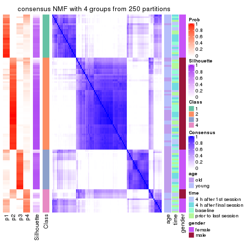
consensus_heatmap(res, k = 5)
consensus_heatmap(res, k = 6)
Heatmaps for the membership of samples in all partitions to see how consistent they are:
membership_heatmap(res, k = 2)
membership_heatmap(res, k = 3)
membership_heatmap(res, k = 4)
membership_heatmap(res, k = 5)
membership_heatmap(res, k = 6)
As soon as we have had the classes for columns, we can look for signatures which are significantly different between classes which can be candidate marks for certain classes. Following are the heatmaps for signatures.
Signature heatmaps where rows are scaled:
get_signatures(res, k = 2)
get_signatures(res, k = 3)
get_signatures(res, k = 4)
get_signatures(res, k = 5)
get_signatures(res, k = 6)
Signature heatmaps where rows are not scaled:
get_signatures(res, k = 2, scale_rows = FALSE)

get_signatures(res, k = 3, scale_rows = FALSE)
get_signatures(res, k = 4, scale_rows = FALSE)
get_signatures(res, k = 5, scale_rows = FALSE)
get_signatures(res, k = 6, scale_rows = FALSE)
Compare the overlap of signatures from different k:
compare_signatures(res)
get_signature() returns a data frame invisibly. TO get the list of signatures, the function
call should be assigned to a variable explicitly. In following code, if plot argument is set
to FALSE, no heatmap is plotted while only the differential analysis is performed.
# code only for demonstration
tb = get_signature(res, k = ..., plot = FALSE)
An example of the output of tb is:
#> which_row fdr mean_1 mean_2 scaled_mean_1 scaled_mean_2 km
#> 1 38 0.042760348 8.373488 9.131774 -0.5533452 0.5164555 1
#> 2 40 0.018707592 7.106213 8.469186 -0.6173731 0.5762149 1
#> 3 55 0.019134737 10.221463 11.207825 -0.6159697 0.5749050 1
#> 4 59 0.006059896 5.921854 7.869574 -0.6899429 0.6439467 1
#> 5 60 0.018055526 8.928898 10.211722 -0.6204761 0.5791110 1
#> 6 98 0.009384629 15.714769 14.887706 0.6635654 -0.6193277 2
...
The columns in tb are:
which_row: row indices corresponding to the input matrix.fdr: FDR for the differential test. mean_x: The mean value in group x.scaled_mean_x: The mean value in group x after rows are scaled.km: Row groups if k-means clustering is applied to rows.UMAP plot which shows how samples are separated.
dimension_reduction(res, k = 2, method = "UMAP")
dimension_reduction(res, k = 3, method = "UMAP")
dimension_reduction(res, k = 4, method = "UMAP")

dimension_reduction(res, k = 5, method = "UMAP")
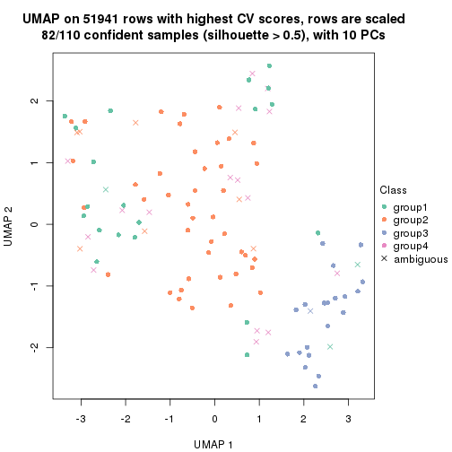
dimension_reduction(res, k = 6, method = "UMAP")
Following heatmap shows how subgroups are split when increasing k:
collect_classes(res)
Test correlation between subgroups and known annotations. If the known annotation is numeric, one-way ANOVA test is applied, and if the known annotation is discrete, chi-squared contingency table test is applied.
test_to_known_factors(res)
#> n age(p) time(p) gender(p) k
#> CV:NMF 108 8.80e-01 0.994 1.99e-24 2
#> CV:NMF 97 7.60e-10 0.972 8.64e-22 3
#> CV:NMF 88 8.99e-10 0.810 7.78e-20 4
#> CV:NMF 82 1.79e-09 0.955 1.56e-18 5
#> CV:NMF 48 1.07e-08 0.731 2.13e-10 6
If matrix rows can be associated to genes, consider to use GO_Enrichment(res,
...) to perform function enrichment for the signature genes.
The object with results only for a single top-value method and a single partition method can be extracted as:
res = res_list["MAD", "hclust"]
# you can also extract it by
# res = res_list["MAD:hclust"]
A summary of res and all the functions that can be applied to it:
res
#> A 'ConsensusPartition' object with k = 2, 3, 4, 5, 6.
#> On a matrix with 51941 rows and 110 columns.
#> Top rows (1000, 2000, 3000, 4000, 5000) are extracted by 'MAD' method.
#> Subgroups are detected by 'hclust' method.
#> Performed in total 1250 partitions by row resampling.
#> Best k for subgroups seems to be 2.
#>
#> Following methods can be applied to this 'ConsensusPartition' object:
#> [1] "cola_report" "collect_classes" "collect_plots"
#> [4] "collect_stats" "colnames" "compare_signatures"
#> [7] "consensus_heatmap" "dimension_reduction" "functional_enrichment"
#> [10] "get_anno_col" "get_anno" "get_classes"
#> [13] "get_consensus" "get_matrix" "get_membership"
#> [16] "get_param" "get_signatures" "get_stats"
#> [19] "is_best_k" "is_stable_k" "membership_heatmap"
#> [22] "ncol" "nrow" "plot_ecdf"
#> [25] "rownames" "select_partition_number" "show"
#> [28] "suggest_best_k" "test_to_known_factors"
collect_plots() function collects all the plots made from res for all k (number of partitions)
into one single page to provide an easy and fast comparison between different k.
collect_plots(res)
The plots are:
k and the heatmap of
predicted classes for each k.k.k.k.All the plots in panels can be made by individual functions and they are plotted later in this section.
select_partition_number() produces several plots showing different
statistics for choosing “optimized” k. There are following statistics:
k;k, the area increased is defined as \(A_k - A_{k-1}\).The detailed explanations of these statistics can be found in the cola vignette.
Generally speaking, lower PAC score, higher mean silhouette score or higher
concordance corresponds to better partition. Rand index and Jaccard index
measure how similar the current partition is compared to partition with k-1.
If they are too similar, we won't accept k is better than k-1.
select_partition_number(res)
The numeric values for all these statistics can be obtained by get_stats().
get_stats(res)
#> k 1-PAC mean_silhouette concordance area_increased Rand Jaccard
#> 2 2 0.126 0.566 0.763 0.3975 0.576 0.576
#> 3 3 0.105 0.504 0.736 0.3683 0.917 0.857
#> 4 4 0.193 0.694 0.734 0.1986 0.786 0.590
#> 5 5 0.301 0.645 0.724 0.0768 0.981 0.944
#> 6 6 0.373 0.572 0.701 0.0579 0.979 0.933
suggest_best_k() suggests the best \(k\) based on these statistics. The rules are as follows:
NA.suggest_best_k(res)
#> [1] 2
Following shows the table of the partitions (You need to click the show/hide
code output link to see it). The membership matrix (columns with name p*)
is inferred by
clue::cl_consensus()
function with the SE method. Basically the value in the membership matrix
represents the probability to belong to a certain group. The finall class
label for an item is determined with the group with highest probability it
belongs to.
In get_classes() function, the entropy is calculated from the membership
matrix and the silhouette score is calculated from the consensus matrix.
cbind(get_classes(res, k = 2), get_membership(res, k = 2))
#> class entropy silhouette p1 p2
#> GSM702357 2 0.311 0.7025 0.056 0.944
#> GSM702358 2 0.163 0.7092 0.024 0.976
#> GSM702359 2 0.760 0.6123 0.220 0.780
#> GSM702360 2 0.327 0.7119 0.060 0.940
#> GSM702361 2 0.443 0.7066 0.092 0.908
#> GSM702362 2 0.469 0.6970 0.100 0.900
#> GSM702363 2 0.204 0.7078 0.032 0.968
#> GSM702364 2 0.917 0.4546 0.332 0.668
#> GSM702413 2 0.998 0.0653 0.476 0.524
#> GSM702414 1 0.998 0.2058 0.528 0.472
#> GSM702415 2 0.994 0.2028 0.456 0.544
#> GSM702416 2 0.932 0.4111 0.348 0.652
#> GSM702417 2 0.943 0.3953 0.360 0.640
#> GSM702418 1 0.999 0.0260 0.520 0.480
#> GSM702419 2 0.952 0.3476 0.372 0.628
#> GSM702365 2 0.311 0.7046 0.056 0.944
#> GSM702366 2 0.204 0.7097 0.032 0.968
#> GSM702367 2 0.563 0.6893 0.132 0.868
#> GSM702368 2 0.388 0.7067 0.076 0.924
#> GSM702369 2 0.456 0.7046 0.096 0.904
#> GSM702370 2 0.996 0.1484 0.464 0.536
#> GSM702371 2 0.494 0.6999 0.108 0.892
#> GSM702372 2 0.995 0.1727 0.460 0.540
#> GSM702420 1 0.904 0.3022 0.680 0.320
#> GSM702421 2 0.932 0.4117 0.348 0.652
#> GSM702422 1 0.909 0.2914 0.676 0.324
#> GSM702423 2 0.955 0.3967 0.376 0.624
#> GSM702424 2 0.932 0.4215 0.348 0.652
#> GSM702425 2 0.932 0.4340 0.348 0.652
#> GSM702426 2 0.955 0.3796 0.376 0.624
#> GSM702427 2 0.955 0.3760 0.376 0.624
#> GSM702373 2 0.388 0.6970 0.076 0.924
#> GSM702374 2 0.242 0.7115 0.040 0.960
#> GSM702375 2 0.416 0.7091 0.084 0.916
#> GSM702376 2 0.402 0.7075 0.080 0.920
#> GSM702377 2 0.891 0.5009 0.308 0.692
#> GSM702378 2 0.278 0.7079 0.048 0.952
#> GSM702379 2 0.260 0.7108 0.044 0.956
#> GSM702380 2 0.443 0.7043 0.092 0.908
#> GSM702428 2 0.985 0.2540 0.428 0.572
#> GSM702429 1 0.994 0.0247 0.544 0.456
#> GSM702430 2 0.917 0.4345 0.332 0.668
#> GSM702431 2 0.932 0.4082 0.348 0.652
#> GSM702432 2 0.943 0.3897 0.360 0.640
#> GSM702433 2 0.978 0.3002 0.412 0.588
#> GSM702434 2 0.990 0.2101 0.440 0.560
#> GSM702381 2 0.278 0.7102 0.048 0.952
#> GSM702382 2 0.224 0.7106 0.036 0.964
#> GSM702383 2 0.327 0.7052 0.060 0.940
#> GSM702384 2 0.260 0.7089 0.044 0.956
#> GSM702385 2 0.373 0.7094 0.072 0.928
#> GSM702386 2 0.224 0.7035 0.036 0.964
#> GSM702387 2 0.260 0.7108 0.044 0.956
#> GSM702388 2 0.242 0.7105 0.040 0.960
#> GSM702435 2 0.961 0.3456 0.384 0.616
#> GSM702436 2 0.936 0.4098 0.352 0.648
#> GSM702437 2 1.000 0.1137 0.488 0.512
#> GSM702438 2 0.971 0.3335 0.400 0.600
#> GSM702439 2 0.909 0.4403 0.324 0.676
#> GSM702440 2 0.971 0.3268 0.400 0.600
#> GSM702441 2 0.980 0.2942 0.416 0.584
#> GSM702442 2 0.969 0.3375 0.396 0.604
#> GSM702389 2 0.343 0.6962 0.064 0.936
#> GSM702390 2 0.242 0.7113 0.040 0.960
#> GSM702391 2 0.402 0.7042 0.080 0.920
#> GSM702392 2 0.981 0.0979 0.420 0.580
#> GSM702393 1 0.992 0.4089 0.552 0.448
#> GSM702394 2 0.416 0.6778 0.084 0.916
#> GSM702443 1 0.781 0.7184 0.768 0.232
#> GSM702444 1 0.913 0.7611 0.672 0.328
#> GSM702445 1 0.904 0.7621 0.680 0.320
#> GSM702446 1 0.714 0.6843 0.804 0.196
#> GSM702447 1 0.943 0.7312 0.640 0.360
#> GSM702448 1 0.917 0.7600 0.668 0.332
#> GSM702395 2 0.204 0.7070 0.032 0.968
#> GSM702396 2 0.242 0.7128 0.040 0.960
#> GSM702397 2 0.278 0.7086 0.048 0.952
#> GSM702398 2 0.295 0.7085 0.052 0.948
#> GSM702399 1 0.946 0.5216 0.636 0.364
#> GSM702400 2 0.402 0.6867 0.080 0.920
#> GSM702449 1 0.975 0.6028 0.592 0.408
#> GSM702450 1 0.913 0.7611 0.672 0.328
#> GSM702451 1 0.802 0.6915 0.756 0.244
#> GSM702452 1 0.913 0.7618 0.672 0.328
#> GSM702453 1 0.978 0.6402 0.588 0.412
#> GSM702454 1 0.929 0.7392 0.656 0.344
#> GSM702401 2 0.224 0.7072 0.036 0.964
#> GSM702402 2 0.358 0.6945 0.068 0.932
#> GSM702403 2 0.327 0.7081 0.060 0.940
#> GSM702404 2 0.886 0.4133 0.304 0.696
#> GSM702405 1 0.932 0.5506 0.652 0.348
#> GSM702406 2 0.814 0.5212 0.252 0.748
#> GSM702455 1 0.788 0.7220 0.764 0.236
#> GSM702456 1 0.917 0.7596 0.668 0.332
#> GSM702457 1 0.900 0.7626 0.684 0.316
#> GSM702458 1 0.827 0.7374 0.740 0.260
#> GSM702459 1 0.998 0.4785 0.528 0.472
#> GSM702460 1 0.913 0.7601 0.672 0.328
#> GSM702407 2 0.343 0.7089 0.064 0.936
#> GSM702408 2 0.224 0.7105 0.036 0.964
#> GSM702409 2 0.625 0.6713 0.156 0.844
#> GSM702410 2 0.506 0.6754 0.112 0.888
#> GSM702411 1 1.000 0.3454 0.512 0.488
#> GSM702412 2 0.443 0.6950 0.092 0.908
#> GSM702461 1 0.844 0.7463 0.728 0.272
#> GSM702462 1 0.917 0.7604 0.668 0.332
#> GSM702463 1 0.900 0.7626 0.684 0.316
#> GSM702464 1 0.827 0.7392 0.740 0.260
#> GSM702465 1 0.961 0.7072 0.616 0.384
#> GSM702466 1 0.913 0.7603 0.672 0.328
cbind(get_classes(res, k = 3), get_membership(res, k = 3))
#> class entropy silhouette p1 p2 p3
#> GSM702357 2 0.359 0.660602 0.048 0.900 0.052
#> GSM702358 2 0.177 0.665187 0.024 0.960 0.016
#> GSM702359 2 0.685 0.439261 0.300 0.664 0.036
#> GSM702360 2 0.324 0.669915 0.032 0.912 0.056
#> GSM702361 2 0.481 0.634774 0.140 0.832 0.028
#> GSM702362 2 0.492 0.626009 0.132 0.832 0.036
#> GSM702363 2 0.223 0.667852 0.012 0.944 0.044
#> GSM702364 2 0.894 0.052596 0.368 0.500 0.132
#> GSM702413 2 0.986 -0.149519 0.340 0.400 0.260
#> GSM702414 3 0.998 -0.345910 0.348 0.304 0.348
#> GSM702415 1 0.903 0.413334 0.512 0.340 0.148
#> GSM702416 2 0.914 0.213536 0.264 0.540 0.196
#> GSM702417 2 0.908 0.134624 0.340 0.508 0.152
#> GSM702418 1 0.949 0.379930 0.488 0.292 0.220
#> GSM702419 2 0.933 0.134505 0.292 0.508 0.200
#> GSM702365 2 0.369 0.662271 0.048 0.896 0.056
#> GSM702366 2 0.206 0.666290 0.044 0.948 0.008
#> GSM702367 2 0.531 0.596308 0.192 0.788 0.020
#> GSM702368 2 0.397 0.637167 0.132 0.860 0.008
#> GSM702369 2 0.455 0.645823 0.132 0.844 0.024
#> GSM702370 1 0.630 0.459695 0.712 0.260 0.028
#> GSM702371 2 0.487 0.638986 0.152 0.824 0.024
#> GSM702372 1 0.647 0.449670 0.692 0.280 0.028
#> GSM702420 1 0.417 0.543556 0.872 0.036 0.092
#> GSM702421 2 0.913 0.181911 0.304 0.524 0.172
#> GSM702422 1 0.466 0.548975 0.852 0.048 0.100
#> GSM702423 2 0.897 0.002989 0.408 0.464 0.128
#> GSM702424 2 0.875 0.127134 0.376 0.508 0.116
#> GSM702425 2 0.884 0.052029 0.392 0.488 0.120
#> GSM702426 2 0.892 0.001244 0.408 0.468 0.124
#> GSM702427 2 0.923 0.088847 0.348 0.488 0.164
#> GSM702373 2 0.456 0.651082 0.064 0.860 0.076
#> GSM702374 2 0.226 0.665884 0.068 0.932 0.000
#> GSM702375 2 0.432 0.648311 0.112 0.860 0.028
#> GSM702376 2 0.473 0.650391 0.088 0.852 0.060
#> GSM702377 2 0.875 0.260454 0.300 0.560 0.140
#> GSM702378 2 0.380 0.655314 0.092 0.884 0.024
#> GSM702379 2 0.334 0.667334 0.060 0.908 0.032
#> GSM702380 2 0.492 0.655116 0.084 0.844 0.072
#> GSM702428 2 0.945 -0.104193 0.388 0.432 0.180
#> GSM702429 1 0.813 0.588642 0.644 0.208 0.148
#> GSM702430 2 0.909 0.181465 0.312 0.524 0.164
#> GSM702431 2 0.898 0.229935 0.276 0.552 0.172
#> GSM702432 2 0.910 0.202518 0.276 0.540 0.184
#> GSM702433 2 0.936 0.000394 0.368 0.460 0.172
#> GSM702434 1 0.974 0.203902 0.392 0.384 0.224
#> GSM702381 2 0.334 0.667248 0.060 0.908 0.032
#> GSM702382 2 0.257 0.668674 0.032 0.936 0.032
#> GSM702383 2 0.304 0.658656 0.084 0.908 0.008
#> GSM702384 2 0.257 0.669761 0.032 0.936 0.032
#> GSM702385 2 0.401 0.657792 0.084 0.880 0.036
#> GSM702386 2 0.280 0.659516 0.060 0.924 0.016
#> GSM702387 2 0.321 0.668111 0.060 0.912 0.028
#> GSM702388 2 0.228 0.667392 0.052 0.940 0.008
#> GSM702435 2 0.915 0.038613 0.380 0.472 0.148
#> GSM702436 2 0.913 0.182932 0.304 0.524 0.172
#> GSM702437 1 0.831 0.524430 0.596 0.292 0.112
#> GSM702438 2 0.911 0.036677 0.364 0.488 0.148
#> GSM702439 2 0.881 0.216282 0.312 0.548 0.140
#> GSM702440 2 0.946 -0.152206 0.392 0.428 0.180
#> GSM702441 2 0.927 0.004122 0.380 0.460 0.160
#> GSM702442 2 0.899 0.024478 0.392 0.476 0.132
#> GSM702389 2 0.303 0.657119 0.012 0.912 0.076
#> GSM702390 2 0.268 0.670548 0.028 0.932 0.040
#> GSM702391 2 0.362 0.661390 0.032 0.896 0.072
#> GSM702392 2 0.968 -0.019003 0.252 0.460 0.288
#> GSM702393 3 0.648 0.471608 0.024 0.296 0.680
#> GSM702394 2 0.375 0.641408 0.020 0.884 0.096
#> GSM702443 3 0.277 0.706781 0.024 0.048 0.928
#> GSM702444 3 0.447 0.796684 0.004 0.176 0.820
#> GSM702445 3 0.435 0.797452 0.004 0.168 0.828
#> GSM702446 3 0.118 0.659535 0.012 0.012 0.976
#> GSM702447 3 0.528 0.775910 0.024 0.180 0.796
#> GSM702448 3 0.463 0.790313 0.004 0.188 0.808
#> GSM702395 2 0.191 0.665809 0.016 0.956 0.028
#> GSM702396 2 0.277 0.670035 0.048 0.928 0.024
#> GSM702397 2 0.334 0.661317 0.060 0.908 0.032
#> GSM702398 2 0.343 0.662567 0.064 0.904 0.032
#> GSM702399 3 0.531 0.564182 0.020 0.192 0.788
#> GSM702400 2 0.372 0.644124 0.024 0.888 0.088
#> GSM702449 3 0.788 0.583378 0.108 0.244 0.648
#> GSM702450 3 0.447 0.796684 0.004 0.176 0.820
#> GSM702451 3 0.589 0.557313 0.168 0.052 0.780
#> GSM702452 3 0.418 0.797829 0.000 0.172 0.828
#> GSM702453 3 0.670 0.680965 0.052 0.236 0.712
#> GSM702454 3 0.573 0.748703 0.024 0.216 0.760
#> GSM702401 2 0.223 0.665624 0.012 0.944 0.044
#> GSM702402 2 0.314 0.659590 0.020 0.912 0.068
#> GSM702403 2 0.369 0.667051 0.056 0.896 0.048
#> GSM702404 2 0.873 0.275778 0.208 0.592 0.200
#> GSM702405 3 0.522 0.577500 0.024 0.176 0.800
#> GSM702406 2 0.803 0.437404 0.180 0.656 0.164
#> GSM702455 3 0.280 0.719829 0.016 0.060 0.924
#> GSM702456 3 0.452 0.795324 0.004 0.180 0.816
#> GSM702457 3 0.429 0.797231 0.004 0.164 0.832
#> GSM702458 3 0.401 0.735460 0.036 0.084 0.880
#> GSM702459 3 0.756 0.479649 0.056 0.336 0.608
#> GSM702460 3 0.458 0.792081 0.004 0.184 0.812
#> GSM702407 2 0.343 0.662983 0.032 0.904 0.064
#> GSM702408 2 0.218 0.668413 0.020 0.948 0.032
#> GSM702409 2 0.618 0.606625 0.104 0.780 0.116
#> GSM702410 2 0.449 0.641563 0.036 0.856 0.108
#> GSM702411 3 0.677 0.425662 0.024 0.340 0.636
#> GSM702412 2 0.395 0.656886 0.040 0.884 0.076
#> GSM702461 3 0.377 0.765093 0.016 0.104 0.880
#> GSM702462 3 0.424 0.797265 0.000 0.176 0.824
#> GSM702463 3 0.429 0.797231 0.004 0.164 0.832
#> GSM702464 3 0.329 0.755120 0.012 0.088 0.900
#> GSM702465 3 0.577 0.739984 0.024 0.220 0.756
#> GSM702466 3 0.447 0.796186 0.004 0.176 0.820
cbind(get_classes(res, k = 4), get_membership(res, k = 4))
#> class entropy silhouette p1 p2 p3 p4
#> GSM702357 2 0.4640 0.7967 0.072 0.828 0.040 0.060
#> GSM702358 2 0.2383 0.8006 0.048 0.924 0.004 0.024
#> GSM702359 2 0.7443 0.5038 0.216 0.576 0.016 0.192
#> GSM702360 2 0.5201 0.7907 0.112 0.792 0.052 0.044
#> GSM702361 2 0.5734 0.7101 0.180 0.728 0.012 0.080
#> GSM702362 2 0.6140 0.7236 0.140 0.720 0.024 0.116
#> GSM702363 2 0.3231 0.8040 0.036 0.896 0.032 0.036
#> GSM702364 2 0.9433 -0.1694 0.252 0.332 0.100 0.316
#> GSM702413 1 0.7394 0.6786 0.612 0.176 0.180 0.032
#> GSM702414 1 0.8405 0.3657 0.508 0.140 0.280 0.072
#> GSM702415 1 0.7815 0.4407 0.588 0.136 0.060 0.216
#> GSM702416 1 0.7138 0.7505 0.604 0.260 0.112 0.024
#> GSM702417 1 0.5809 0.7683 0.696 0.224 0.076 0.004
#> GSM702418 1 0.6724 0.4783 0.696 0.064 0.144 0.096
#> GSM702419 1 0.6935 0.7490 0.616 0.240 0.132 0.012
#> GSM702365 2 0.4710 0.7947 0.076 0.824 0.040 0.060
#> GSM702366 2 0.2845 0.7974 0.056 0.904 0.004 0.036
#> GSM702367 2 0.5869 0.7170 0.160 0.720 0.008 0.112
#> GSM702368 2 0.5141 0.7469 0.084 0.756 0.000 0.160
#> GSM702369 2 0.5576 0.6877 0.212 0.716 0.004 0.068
#> GSM702370 4 0.4257 0.6744 0.048 0.140 0.000 0.812
#> GSM702371 2 0.5033 0.7629 0.152 0.776 0.008 0.064
#> GSM702372 4 0.5732 0.6598 0.100 0.176 0.004 0.720
#> GSM702420 4 0.5964 0.5859 0.396 0.008 0.028 0.568
#> GSM702421 1 0.6514 0.7651 0.652 0.244 0.088 0.016
#> GSM702422 4 0.5804 0.6196 0.360 0.004 0.032 0.604
#> GSM702423 1 0.6392 0.7242 0.700 0.180 0.036 0.084
#> GSM702424 1 0.6025 0.7579 0.696 0.228 0.048 0.028
#> GSM702425 1 0.6983 0.7351 0.648 0.220 0.048 0.084
#> GSM702426 1 0.6843 0.7322 0.668 0.200 0.056 0.076
#> GSM702427 1 0.7072 0.7613 0.640 0.224 0.088 0.048
#> GSM702373 2 0.5580 0.7823 0.092 0.776 0.056 0.076
#> GSM702374 2 0.3895 0.7770 0.132 0.832 0.000 0.036
#> GSM702375 2 0.5014 0.7627 0.140 0.784 0.012 0.064
#> GSM702376 2 0.6013 0.7540 0.136 0.740 0.044 0.080
#> GSM702377 2 0.8853 0.0989 0.356 0.416 0.108 0.120
#> GSM702378 2 0.5174 0.7674 0.104 0.784 0.016 0.096
#> GSM702379 2 0.3583 0.8045 0.068 0.876 0.020 0.036
#> GSM702380 2 0.6065 0.7575 0.112 0.740 0.044 0.104
#> GSM702428 1 0.6935 0.7073 0.660 0.200 0.092 0.048
#> GSM702429 1 0.7593 -0.1124 0.536 0.064 0.064 0.336
#> GSM702430 1 0.6570 0.7634 0.644 0.252 0.088 0.016
#> GSM702431 1 0.6491 0.7498 0.620 0.280 0.096 0.004
#> GSM702432 1 0.6735 0.7515 0.612 0.272 0.108 0.008
#> GSM702433 1 0.6750 0.7128 0.656 0.224 0.088 0.032
#> GSM702434 1 0.8316 0.6090 0.564 0.188 0.140 0.108
#> GSM702381 2 0.4296 0.8057 0.088 0.840 0.024 0.048
#> GSM702382 2 0.3285 0.8047 0.052 0.892 0.024 0.032
#> GSM702383 2 0.3679 0.7939 0.084 0.856 0.000 0.060
#> GSM702384 2 0.4378 0.7960 0.072 0.836 0.020 0.072
#> GSM702385 2 0.4247 0.7901 0.104 0.836 0.016 0.044
#> GSM702386 2 0.4153 0.7886 0.076 0.836 0.004 0.084
#> GSM702387 2 0.3508 0.8046 0.064 0.880 0.020 0.036
#> GSM702388 2 0.3274 0.8064 0.056 0.884 0.004 0.056
#> GSM702435 1 0.6977 0.7620 0.652 0.216 0.076 0.056
#> GSM702436 1 0.6785 0.7614 0.632 0.252 0.096 0.020
#> GSM702437 1 0.8013 -0.0783 0.468 0.124 0.040 0.368
#> GSM702438 1 0.6935 0.6988 0.632 0.256 0.060 0.052
#> GSM702439 1 0.6251 0.7593 0.660 0.260 0.064 0.016
#> GSM702440 1 0.7614 0.6698 0.632 0.156 0.104 0.108
#> GSM702441 1 0.6353 0.7200 0.680 0.220 0.076 0.024
#> GSM702442 1 0.6533 0.7502 0.680 0.212 0.060 0.048
#> GSM702389 2 0.3877 0.7909 0.048 0.864 0.064 0.024
#> GSM702390 2 0.3159 0.8012 0.068 0.892 0.012 0.028
#> GSM702391 2 0.4633 0.7922 0.076 0.828 0.056 0.040
#> GSM702392 2 0.9842 -0.0390 0.232 0.324 0.264 0.180
#> GSM702393 3 0.6629 0.4540 0.024 0.240 0.652 0.084
#> GSM702394 2 0.4384 0.7758 0.048 0.840 0.076 0.036
#> GSM702443 3 0.2165 0.7611 0.032 0.024 0.936 0.008
#> GSM702444 3 0.4292 0.8256 0.100 0.080 0.820 0.000
#> GSM702445 3 0.4163 0.8271 0.096 0.076 0.828 0.000
#> GSM702446 3 0.0992 0.7211 0.008 0.004 0.976 0.012
#> GSM702447 3 0.4656 0.8068 0.136 0.072 0.792 0.000
#> GSM702448 3 0.4547 0.8189 0.104 0.092 0.804 0.000
#> GSM702395 2 0.2894 0.8000 0.048 0.908 0.020 0.024
#> GSM702396 2 0.3446 0.7962 0.092 0.872 0.008 0.028
#> GSM702397 2 0.3752 0.7955 0.084 0.864 0.016 0.036
#> GSM702398 2 0.4028 0.7988 0.080 0.852 0.016 0.052
#> GSM702399 3 0.5416 0.5722 0.012 0.140 0.760 0.088
#> GSM702400 2 0.4366 0.7822 0.064 0.840 0.068 0.028
#> GSM702449 3 0.6569 0.6040 0.260 0.092 0.636 0.012
#> GSM702450 3 0.4292 0.8256 0.100 0.080 0.820 0.000
#> GSM702451 3 0.5937 0.5255 0.176 0.012 0.716 0.096
#> GSM702452 3 0.4168 0.8274 0.092 0.080 0.828 0.000
#> GSM702453 3 0.5705 0.7170 0.204 0.092 0.704 0.000
#> GSM702454 3 0.5257 0.7772 0.144 0.104 0.752 0.000
#> GSM702401 2 0.3507 0.7988 0.040 0.884 0.036 0.040
#> GSM702402 2 0.4105 0.7935 0.040 0.856 0.056 0.048
#> GSM702403 2 0.4574 0.8001 0.088 0.828 0.032 0.052
#> GSM702404 2 0.9099 0.3190 0.216 0.472 0.180 0.132
#> GSM702405 3 0.5149 0.5874 0.012 0.124 0.780 0.084
#> GSM702406 2 0.8493 0.4697 0.200 0.544 0.144 0.112
#> GSM702455 3 0.2269 0.7761 0.028 0.032 0.932 0.008
#> GSM702456 3 0.4352 0.8249 0.104 0.080 0.816 0.000
#> GSM702457 3 0.4030 0.8275 0.092 0.072 0.836 0.000
#> GSM702458 3 0.3485 0.7858 0.076 0.048 0.872 0.004
#> GSM702459 3 0.6756 0.5014 0.252 0.148 0.600 0.000
#> GSM702460 3 0.4424 0.8242 0.100 0.088 0.812 0.000
#> GSM702407 2 0.4182 0.8073 0.060 0.852 0.048 0.040
#> GSM702408 2 0.3103 0.7999 0.072 0.892 0.008 0.028
#> GSM702409 2 0.7159 0.5937 0.192 0.652 0.088 0.068
#> GSM702410 2 0.5239 0.7534 0.088 0.792 0.084 0.036
#> GSM702411 3 0.6637 0.4027 0.016 0.304 0.608 0.072
#> GSM702412 2 0.4821 0.7949 0.088 0.816 0.060 0.036
#> GSM702461 3 0.3272 0.8098 0.060 0.052 0.884 0.004
#> GSM702462 3 0.4231 0.8266 0.096 0.080 0.824 0.000
#> GSM702463 3 0.4093 0.8274 0.096 0.072 0.832 0.000
#> GSM702464 3 0.2830 0.8043 0.060 0.040 0.900 0.000
#> GSM702465 3 0.5280 0.7767 0.124 0.124 0.752 0.000
#> GSM702466 3 0.4352 0.8252 0.104 0.080 0.816 0.000
cbind(get_classes(res, k = 5), get_membership(res, k = 5))
#> class entropy silhouette p1 p2 p3 p4 p5
#> GSM702357 2 0.457 0.7458 0.060 0.780 0.032 0.000 0.128
#> GSM702358 2 0.280 0.7661 0.044 0.888 0.008 0.000 0.060
#> GSM702359 2 0.797 0.3309 0.156 0.492 0.008 0.164 0.180
#> GSM702360 2 0.555 0.7438 0.108 0.728 0.060 0.004 0.100
#> GSM702361 2 0.641 0.6275 0.156 0.632 0.008 0.032 0.172
#> GSM702362 2 0.653 0.6321 0.132 0.644 0.016 0.044 0.164
#> GSM702363 2 0.311 0.7674 0.036 0.876 0.024 0.000 0.064
#> GSM702364 5 0.943 0.2140 0.168 0.268 0.076 0.176 0.312
#> GSM702413 1 0.723 0.6039 0.612 0.108 0.164 0.072 0.044
#> GSM702414 1 0.900 0.2455 0.416 0.116 0.240 0.136 0.092
#> GSM702415 1 0.740 0.0204 0.468 0.080 0.044 0.368 0.040
#> GSM702416 1 0.607 0.6936 0.680 0.160 0.112 0.032 0.016
#> GSM702417 1 0.524 0.7049 0.760 0.108 0.076 0.036 0.020
#> GSM702418 1 0.723 0.3590 0.612 0.036 0.088 0.156 0.108
#> GSM702419 1 0.611 0.6875 0.668 0.164 0.124 0.036 0.008
#> GSM702365 2 0.462 0.7448 0.060 0.776 0.032 0.000 0.132
#> GSM702366 2 0.329 0.7623 0.052 0.864 0.008 0.004 0.072
#> GSM702367 2 0.659 0.6438 0.132 0.648 0.008 0.092 0.120
#> GSM702368 2 0.551 0.6423 0.080 0.692 0.000 0.032 0.196
#> GSM702369 2 0.637 0.5937 0.228 0.624 0.008 0.036 0.104
#> GSM702370 5 0.600 0.3374 0.024 0.084 0.000 0.296 0.596
#> GSM702371 2 0.571 0.7113 0.124 0.720 0.008 0.068 0.080
#> GSM702372 5 0.662 0.3668 0.020 0.108 0.004 0.420 0.448
#> GSM702420 4 0.478 0.4952 0.200 0.000 0.000 0.716 0.084
#> GSM702421 1 0.580 0.7031 0.704 0.160 0.080 0.044 0.012
#> GSM702422 4 0.301 0.4834 0.124 0.000 0.000 0.852 0.024
#> GSM702423 1 0.533 0.6089 0.752 0.072 0.024 0.120 0.032
#> GSM702424 1 0.500 0.6805 0.764 0.136 0.028 0.056 0.016
#> GSM702425 1 0.609 0.6289 0.692 0.108 0.032 0.140 0.028
#> GSM702426 1 0.624 0.6266 0.688 0.124 0.040 0.116 0.032
#> GSM702427 1 0.599 0.6888 0.688 0.136 0.060 0.112 0.004
#> GSM702373 2 0.548 0.7274 0.072 0.736 0.040 0.016 0.136
#> GSM702374 2 0.444 0.7496 0.116 0.784 0.008 0.004 0.088
#> GSM702375 2 0.578 0.7040 0.136 0.708 0.008 0.048 0.100
#> GSM702376 2 0.609 0.6877 0.124 0.676 0.028 0.016 0.156
#> GSM702377 2 0.924 -0.0736 0.256 0.364 0.084 0.124 0.172
#> GSM702378 2 0.547 0.6928 0.104 0.708 0.008 0.016 0.164
#> GSM702379 2 0.391 0.7643 0.072 0.832 0.008 0.012 0.076
#> GSM702380 2 0.616 0.7025 0.104 0.680 0.044 0.016 0.156
#> GSM702428 1 0.718 0.6284 0.628 0.140 0.076 0.100 0.056
#> GSM702429 4 0.638 0.4761 0.340 0.020 0.036 0.560 0.044
#> GSM702430 1 0.602 0.7030 0.696 0.152 0.088 0.044 0.020
#> GSM702431 1 0.555 0.6988 0.704 0.184 0.080 0.016 0.016
#> GSM702432 1 0.602 0.6881 0.672 0.184 0.104 0.024 0.016
#> GSM702433 1 0.655 0.6438 0.676 0.132 0.076 0.072 0.044
#> GSM702434 1 0.853 0.4712 0.500 0.136 0.112 0.164 0.088
#> GSM702381 2 0.482 0.7662 0.092 0.788 0.020 0.028 0.072
#> GSM702382 2 0.361 0.7705 0.060 0.852 0.020 0.004 0.064
#> GSM702383 2 0.460 0.7525 0.072 0.792 0.012 0.020 0.104
#> GSM702384 2 0.411 0.7114 0.060 0.788 0.004 0.000 0.148
#> GSM702385 2 0.498 0.7422 0.108 0.772 0.016 0.028 0.076
#> GSM702386 2 0.506 0.6957 0.096 0.740 0.004 0.016 0.144
#> GSM702387 2 0.379 0.7641 0.064 0.840 0.008 0.012 0.076
#> GSM702388 2 0.364 0.7685 0.052 0.844 0.004 0.012 0.088
#> GSM702435 1 0.573 0.6912 0.712 0.136 0.048 0.096 0.008
#> GSM702436 1 0.581 0.7018 0.704 0.160 0.076 0.048 0.012
#> GSM702437 4 0.611 0.4972 0.296 0.064 0.024 0.604 0.012
#> GSM702438 1 0.676 0.5792 0.640 0.172 0.052 0.104 0.032
#> GSM702439 1 0.506 0.7056 0.752 0.156 0.044 0.036 0.012
#> GSM702440 1 0.719 0.5026 0.600 0.064 0.080 0.208 0.048
#> GSM702441 1 0.634 0.6486 0.692 0.128 0.064 0.072 0.044
#> GSM702442 1 0.555 0.6681 0.724 0.132 0.040 0.096 0.008
#> GSM702389 2 0.391 0.7517 0.044 0.840 0.060 0.004 0.052
#> GSM702390 2 0.348 0.7671 0.068 0.856 0.012 0.004 0.060
#> GSM702391 2 0.447 0.7521 0.068 0.800 0.060 0.000 0.072
#> GSM702392 2 0.968 -0.2745 0.152 0.308 0.228 0.120 0.192
#> GSM702393 3 0.662 0.3779 0.028 0.196 0.608 0.012 0.156
#> GSM702394 2 0.401 0.7387 0.048 0.828 0.072 0.000 0.052
#> GSM702443 3 0.241 0.7641 0.028 0.016 0.916 0.004 0.036
#> GSM702444 3 0.331 0.8241 0.104 0.052 0.844 0.000 0.000
#> GSM702445 3 0.320 0.8253 0.096 0.052 0.852 0.000 0.000
#> GSM702446 3 0.170 0.7220 0.008 0.000 0.940 0.008 0.044
#> GSM702447 3 0.397 0.8042 0.136 0.052 0.804 0.000 0.008
#> GSM702448 3 0.356 0.8197 0.108 0.064 0.828 0.000 0.000
#> GSM702395 2 0.283 0.7622 0.044 0.892 0.020 0.000 0.044
#> GSM702396 2 0.415 0.7624 0.084 0.824 0.012 0.020 0.060
#> GSM702397 2 0.458 0.7505 0.092 0.800 0.016 0.024 0.068
#> GSM702398 2 0.443 0.7547 0.088 0.808 0.016 0.020 0.068
#> GSM702399 3 0.566 0.5103 0.012 0.092 0.696 0.020 0.180
#> GSM702400 2 0.442 0.7452 0.068 0.812 0.068 0.008 0.044
#> GSM702449 3 0.593 0.6088 0.256 0.060 0.644 0.028 0.012
#> GSM702450 3 0.331 0.8241 0.104 0.052 0.844 0.000 0.000
#> GSM702451 3 0.614 0.4585 0.116 0.004 0.668 0.160 0.052
#> GSM702452 3 0.320 0.8258 0.096 0.052 0.852 0.000 0.000
#> GSM702453 3 0.483 0.7200 0.208 0.064 0.720 0.000 0.008
#> GSM702454 3 0.416 0.7836 0.156 0.068 0.776 0.000 0.000
#> GSM702401 2 0.328 0.7605 0.032 0.868 0.036 0.000 0.064
#> GSM702402 2 0.381 0.7574 0.044 0.840 0.052 0.000 0.064
#> GSM702403 2 0.512 0.7550 0.096 0.764 0.020 0.024 0.096
#> GSM702404 2 0.906 0.0529 0.160 0.436 0.148 0.100 0.156
#> GSM702405 3 0.542 0.5383 0.012 0.084 0.720 0.020 0.164
#> GSM702406 2 0.845 0.3246 0.156 0.500 0.120 0.064 0.160
#> GSM702455 3 0.234 0.7763 0.020 0.024 0.920 0.004 0.032
#> GSM702456 3 0.336 0.8236 0.108 0.052 0.840 0.000 0.000
#> GSM702457 3 0.308 0.8254 0.092 0.048 0.860 0.000 0.000
#> GSM702458 3 0.338 0.7783 0.044 0.040 0.872 0.008 0.036
#> GSM702459 3 0.582 0.5368 0.280 0.084 0.620 0.012 0.004
#> GSM702460 3 0.345 0.8233 0.100 0.064 0.836 0.000 0.000
#> GSM702407 2 0.418 0.7693 0.056 0.824 0.052 0.004 0.064
#> GSM702408 2 0.333 0.7654 0.060 0.872 0.016 0.012 0.040
#> GSM702409 2 0.711 0.5177 0.228 0.572 0.088 0.008 0.104
#> GSM702410 2 0.553 0.7130 0.100 0.732 0.092 0.004 0.072
#> GSM702411 3 0.682 0.3089 0.032 0.244 0.568 0.008 0.148
#> GSM702412 2 0.510 0.7565 0.088 0.768 0.068 0.008 0.068
#> GSM702461 3 0.313 0.8104 0.052 0.044 0.880 0.004 0.020
#> GSM702462 3 0.325 0.8250 0.100 0.052 0.848 0.000 0.000
#> GSM702463 3 0.313 0.8253 0.096 0.048 0.856 0.000 0.000
#> GSM702464 3 0.268 0.8015 0.044 0.032 0.900 0.000 0.024
#> GSM702465 3 0.437 0.7826 0.124 0.096 0.776 0.000 0.004
#> GSM702466 3 0.336 0.8237 0.108 0.052 0.840 0.000 0.000
cbind(get_classes(res, k = 6), get_membership(res, k = 6))
#> class entropy silhouette p1 p2 p3 p4 p5 p6
#> GSM702357 2 0.493 0.6240 0.040 0.720 0.024 0.000 0.036 0.180
#> GSM702358 2 0.316 0.6771 0.036 0.856 0.012 0.000 0.012 0.084
#> GSM702359 2 0.788 -0.1516 0.116 0.376 0.000 0.088 0.088 0.332
#> GSM702360 2 0.555 0.6323 0.088 0.692 0.064 0.000 0.020 0.136
#> GSM702361 2 0.643 0.3342 0.108 0.528 0.004 0.012 0.044 0.304
#> GSM702362 2 0.644 0.4048 0.084 0.552 0.008 0.012 0.060 0.284
#> GSM702363 2 0.363 0.6742 0.024 0.824 0.024 0.000 0.016 0.112
#> GSM702364 6 0.841 0.4439 0.064 0.204 0.056 0.048 0.220 0.408
#> GSM702413 1 0.656 0.5555 0.604 0.088 0.132 0.032 0.000 0.144
#> GSM702414 1 0.873 0.1049 0.348 0.080 0.192 0.100 0.028 0.252
#> GSM702415 4 0.687 0.0714 0.396 0.056 0.032 0.428 0.004 0.084
#> GSM702416 1 0.517 0.6500 0.740 0.096 0.084 0.020 0.008 0.052
#> GSM702417 1 0.402 0.6491 0.820 0.048 0.044 0.044 0.000 0.044
#> GSM702418 1 0.667 0.2730 0.508 0.012 0.040 0.088 0.024 0.328
#> GSM702419 1 0.567 0.6376 0.684 0.132 0.104 0.028 0.000 0.052
#> GSM702365 2 0.496 0.6193 0.040 0.716 0.024 0.000 0.036 0.184
#> GSM702366 2 0.350 0.6756 0.036 0.848 0.016 0.004 0.024 0.072
#> GSM702367 2 0.690 0.4640 0.084 0.580 0.008 0.060 0.068 0.200
#> GSM702368 2 0.656 0.4248 0.064 0.564 0.004 0.008 0.168 0.192
#> GSM702369 2 0.703 0.3141 0.248 0.516 0.008 0.024 0.056 0.148
#> GSM702370 5 0.461 0.7261 0.004 0.068 0.000 0.100 0.760 0.068
#> GSM702371 2 0.615 0.5672 0.084 0.632 0.012 0.044 0.024 0.204
#> GSM702372 5 0.629 0.7182 0.008 0.072 0.000 0.188 0.592 0.140
#> GSM702420 4 0.475 0.3265 0.124 0.000 0.000 0.732 0.104 0.040
#> GSM702421 1 0.538 0.6538 0.724 0.124 0.060 0.052 0.008 0.032
#> GSM702422 4 0.200 0.3148 0.028 0.000 0.000 0.920 0.040 0.012
#> GSM702423 1 0.480 0.5343 0.744 0.012 0.020 0.152 0.012 0.060
#> GSM702424 1 0.460 0.6269 0.776 0.084 0.016 0.088 0.008 0.028
#> GSM702425 1 0.533 0.5549 0.720 0.052 0.020 0.152 0.024 0.032
#> GSM702426 1 0.596 0.5462 0.680 0.064 0.024 0.136 0.016 0.080
#> GSM702427 1 0.561 0.6397 0.684 0.104 0.048 0.140 0.000 0.024
#> GSM702373 2 0.547 0.5776 0.044 0.676 0.032 0.004 0.036 0.208
#> GSM702374 2 0.538 0.5978 0.096 0.684 0.012 0.008 0.020 0.180
#> GSM702375 2 0.587 0.5197 0.104 0.624 0.000 0.044 0.012 0.216
#> GSM702376 2 0.597 0.5090 0.080 0.600 0.012 0.000 0.056 0.252
#> GSM702377 6 0.798 0.5252 0.144 0.292 0.048 0.056 0.036 0.424
#> GSM702378 2 0.585 0.5229 0.072 0.624 0.004 0.000 0.088 0.212
#> GSM702379 2 0.440 0.6634 0.052 0.780 0.012 0.008 0.024 0.124
#> GSM702380 2 0.618 0.5545 0.060 0.660 0.040 0.008 0.096 0.136
#> GSM702428 1 0.639 0.5579 0.612 0.116 0.036 0.060 0.000 0.176
#> GSM702429 4 0.583 0.5208 0.236 0.012 0.016 0.620 0.012 0.104
#> GSM702430 1 0.519 0.6579 0.736 0.112 0.068 0.028 0.004 0.052
#> GSM702431 1 0.481 0.6559 0.740 0.144 0.052 0.012 0.000 0.052
#> GSM702432 1 0.532 0.6407 0.708 0.144 0.080 0.024 0.000 0.044
#> GSM702433 1 0.609 0.5787 0.652 0.100 0.044 0.040 0.004 0.160
#> GSM702434 1 0.817 0.3882 0.456 0.116 0.076 0.136 0.016 0.200
#> GSM702381 2 0.490 0.6548 0.076 0.744 0.020 0.020 0.008 0.132
#> GSM702382 2 0.399 0.6797 0.048 0.816 0.024 0.004 0.020 0.088
#> GSM702383 2 0.521 0.6415 0.056 0.728 0.016 0.008 0.060 0.132
#> GSM702384 2 0.538 0.4779 0.032 0.624 0.000 0.004 0.068 0.272
#> GSM702385 2 0.514 0.6132 0.072 0.704 0.012 0.012 0.016 0.184
#> GSM702386 2 0.608 0.4576 0.076 0.612 0.000 0.004 0.128 0.180
#> GSM702387 2 0.444 0.6643 0.052 0.780 0.016 0.008 0.024 0.120
#> GSM702388 2 0.416 0.6742 0.036 0.800 0.012 0.004 0.044 0.104
#> GSM702435 1 0.546 0.6457 0.716 0.100 0.032 0.100 0.004 0.048
#> GSM702436 1 0.544 0.6511 0.720 0.124 0.056 0.060 0.008 0.032
#> GSM702437 4 0.547 0.5070 0.240 0.036 0.028 0.660 0.020 0.016
#> GSM702438 1 0.683 0.4996 0.612 0.092 0.052 0.136 0.012 0.096
#> GSM702439 1 0.467 0.6586 0.768 0.120 0.028 0.044 0.004 0.036
#> GSM702440 1 0.704 0.4028 0.568 0.020 0.060 0.196 0.036 0.120
#> GSM702441 1 0.609 0.5909 0.656 0.104 0.040 0.048 0.004 0.148
#> GSM702442 1 0.522 0.6100 0.732 0.076 0.032 0.116 0.004 0.040
#> GSM702389 2 0.441 0.6426 0.040 0.788 0.064 0.000 0.024 0.084
#> GSM702390 2 0.414 0.6736 0.052 0.796 0.016 0.000 0.028 0.108
#> GSM702391 2 0.482 0.6399 0.052 0.756 0.060 0.000 0.024 0.108
#> GSM702392 6 0.856 0.5280 0.060 0.236 0.188 0.040 0.088 0.388
#> GSM702393 3 0.714 0.2488 0.016 0.144 0.544 0.020 0.084 0.192
#> GSM702394 2 0.440 0.6285 0.040 0.792 0.072 0.000 0.032 0.064
#> GSM702443 3 0.238 0.7441 0.020 0.012 0.912 0.004 0.020 0.032
#> GSM702444 3 0.281 0.8130 0.096 0.048 0.856 0.000 0.000 0.000
#> GSM702445 3 0.270 0.8135 0.092 0.044 0.864 0.000 0.000 0.000
#> GSM702446 3 0.220 0.7073 0.008 0.000 0.916 0.016 0.024 0.036
#> GSM702447 3 0.366 0.7919 0.132 0.040 0.808 0.004 0.000 0.016
#> GSM702448 3 0.314 0.8083 0.096 0.060 0.840 0.000 0.000 0.004
#> GSM702395 2 0.307 0.6700 0.036 0.872 0.020 0.000 0.020 0.052
#> GSM702396 2 0.487 0.6592 0.064 0.760 0.016 0.008 0.052 0.100
#> GSM702397 2 0.482 0.6313 0.060 0.736 0.012 0.012 0.016 0.164
#> GSM702398 2 0.476 0.6409 0.056 0.740 0.012 0.012 0.016 0.164
#> GSM702399 3 0.613 0.4147 0.004 0.064 0.628 0.020 0.084 0.200
#> GSM702400 2 0.478 0.6401 0.056 0.772 0.072 0.004 0.028 0.068
#> GSM702449 3 0.562 0.6180 0.236 0.052 0.648 0.024 0.004 0.036
#> GSM702450 3 0.281 0.8130 0.096 0.048 0.856 0.000 0.000 0.000
#> GSM702451 3 0.631 0.4217 0.084 0.000 0.628 0.164 0.036 0.088
#> GSM702452 3 0.271 0.8139 0.088 0.048 0.864 0.000 0.000 0.000
#> GSM702453 3 0.452 0.7172 0.200 0.052 0.724 0.004 0.000 0.020
#> GSM702454 3 0.375 0.7777 0.148 0.064 0.784 0.000 0.000 0.004
#> GSM702401 2 0.355 0.6636 0.020 0.844 0.040 0.000 0.032 0.064
#> GSM702402 2 0.451 0.6525 0.036 0.780 0.052 0.000 0.032 0.100
#> GSM702403 2 0.520 0.6226 0.064 0.688 0.016 0.012 0.012 0.208
#> GSM702404 2 0.815 -0.5408 0.080 0.360 0.116 0.036 0.052 0.356
#> GSM702405 3 0.592 0.4485 0.004 0.056 0.652 0.020 0.084 0.184
#> GSM702406 2 0.777 -0.2654 0.080 0.432 0.112 0.024 0.040 0.312
#> GSM702455 3 0.210 0.7557 0.008 0.016 0.924 0.004 0.016 0.032
#> GSM702456 3 0.286 0.8128 0.100 0.048 0.852 0.000 0.000 0.000
#> GSM702457 3 0.258 0.8133 0.088 0.040 0.872 0.000 0.000 0.000
#> GSM702458 3 0.302 0.7526 0.028 0.028 0.880 0.008 0.012 0.044
#> GSM702459 3 0.517 0.5579 0.280 0.072 0.628 0.004 0.000 0.016
#> GSM702460 3 0.294 0.8113 0.096 0.056 0.848 0.000 0.000 0.000
#> GSM702407 2 0.420 0.6760 0.040 0.808 0.044 0.004 0.024 0.080
#> GSM702408 2 0.383 0.6708 0.060 0.832 0.020 0.004 0.032 0.052
#> GSM702409 2 0.753 0.2322 0.204 0.496 0.076 0.016 0.032 0.176
#> GSM702410 2 0.563 0.5855 0.076 0.692 0.088 0.000 0.024 0.120
#> GSM702411 3 0.728 0.1748 0.020 0.200 0.516 0.012 0.088 0.164
#> GSM702412 2 0.512 0.6383 0.052 0.736 0.068 0.004 0.020 0.120
#> GSM702461 3 0.280 0.7897 0.040 0.040 0.888 0.004 0.008 0.020
#> GSM702462 3 0.276 0.8136 0.092 0.048 0.860 0.000 0.000 0.000
#> GSM702463 3 0.263 0.8136 0.092 0.040 0.868 0.000 0.000 0.000
#> GSM702464 3 0.218 0.7848 0.032 0.024 0.920 0.004 0.012 0.008
#> GSM702465 3 0.387 0.7694 0.124 0.092 0.780 0.000 0.000 0.004
#> GSM702466 3 0.295 0.8125 0.096 0.048 0.852 0.000 0.000 0.004
Heatmaps for the consensus matrix. It visualizes the probability of two samples to be in a same group.
consensus_heatmap(res, k = 2)
consensus_heatmap(res, k = 3)
consensus_heatmap(res, k = 4)
consensus_heatmap(res, k = 5)
consensus_heatmap(res, k = 6)
Heatmaps for the membership of samples in all partitions to see how consistent they are:
membership_heatmap(res, k = 2)
membership_heatmap(res, k = 3)
membership_heatmap(res, k = 4)

membership_heatmap(res, k = 5)
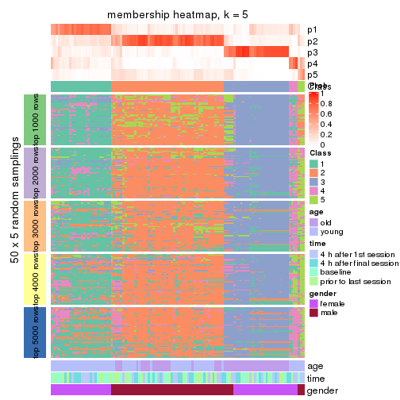
membership_heatmap(res, k = 6)
As soon as we have had the classes for columns, we can look for signatures which are significantly different between classes which can be candidate marks for certain classes. Following are the heatmaps for signatures.
Signature heatmaps where rows are scaled:
get_signatures(res, k = 2)
get_signatures(res, k = 3)
get_signatures(res, k = 4)
get_signatures(res, k = 5)
get_signatures(res, k = 6)
Signature heatmaps where rows are not scaled:
get_signatures(res, k = 2, scale_rows = FALSE)
get_signatures(res, k = 3, scale_rows = FALSE)
get_signatures(res, k = 4, scale_rows = FALSE)
get_signatures(res, k = 5, scale_rows = FALSE)
get_signatures(res, k = 6, scale_rows = FALSE)
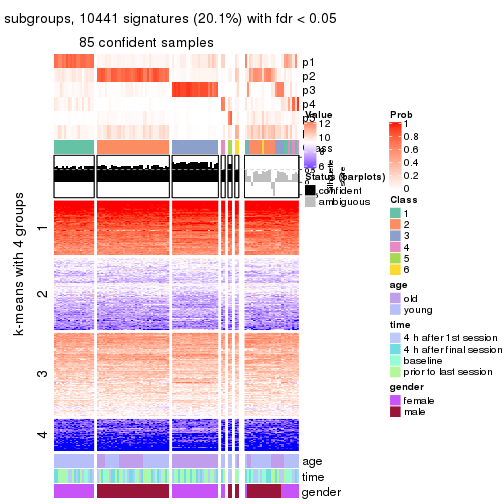
Compare the overlap of signatures from different k:
compare_signatures(res)
get_signature() returns a data frame invisibly. TO get the list of signatures, the function
call should be assigned to a variable explicitly. In following code, if plot argument is set
to FALSE, no heatmap is plotted while only the differential analysis is performed.
# code only for demonstration
tb = get_signature(res, k = ..., plot = FALSE)
An example of the output of tb is:
#> which_row fdr mean_1 mean_2 scaled_mean_1 scaled_mean_2 km
#> 1 38 0.042760348 8.373488 9.131774 -0.5533452 0.5164555 1
#> 2 40 0.018707592 7.106213 8.469186 -0.6173731 0.5762149 1
#> 3 55 0.019134737 10.221463 11.207825 -0.6159697 0.5749050 1
#> 4 59 0.006059896 5.921854 7.869574 -0.6899429 0.6439467 1
#> 5 60 0.018055526 8.928898 10.211722 -0.6204761 0.5791110 1
#> 6 98 0.009384629 15.714769 14.887706 0.6635654 -0.6193277 2
...
The columns in tb are:
which_row: row indices corresponding to the input matrix.fdr: FDR for the differential test. mean_x: The mean value in group x.scaled_mean_x: The mean value in group x after rows are scaled.km: Row groups if k-means clustering is applied to rows.UMAP plot which shows how samples are separated.
dimension_reduction(res, k = 2, method = "UMAP")
dimension_reduction(res, k = 3, method = "UMAP")
dimension_reduction(res, k = 4, method = "UMAP")
dimension_reduction(res, k = 5, method = "UMAP")
dimension_reduction(res, k = 6, method = "UMAP")
Following heatmap shows how subgroups are split when increasing k:
collect_classes(res)
Test correlation between subgroups and known annotations. If the known annotation is numeric, one-way ANOVA test is applied, and if the known annotation is discrete, chi-squared contingency table test is applied.
test_to_known_factors(res)
#> n age(p) time(p) gender(p) k
#> MAD:hclust 72 1.37e-06 0.971 1.30e-14 2
#> MAD:hclust 73 2.63e-07 0.921 7.29e-15 3
#> MAD:hclust 98 6.72e-12 0.255 1.17e-18 4
#> MAD:hclust 91 2.26e-11 0.994 6.89e-19 5
#> MAD:hclust 85 4.90e-09 0.777 7.53e-17 6
If matrix rows can be associated to genes, consider to use GO_Enrichment(res,
...) to perform function enrichment for the signature genes.
The object with results only for a single top-value method and a single partition method can be extracted as:
res = res_list["MAD", "kmeans"]
# you can also extract it by
# res = res_list["MAD:kmeans"]
A summary of res and all the functions that can be applied to it:
res
#> A 'ConsensusPartition' object with k = 2, 3, 4, 5, 6.
#> On a matrix with 51941 rows and 110 columns.
#> Top rows (1000, 2000, 3000, 4000, 5000) are extracted by 'MAD' method.
#> Subgroups are detected by 'kmeans' method.
#> Performed in total 1250 partitions by row resampling.
#> Best k for subgroups seems to be 3.
#>
#> Following methods can be applied to this 'ConsensusPartition' object:
#> [1] "cola_report" "collect_classes" "collect_plots"
#> [4] "collect_stats" "colnames" "compare_signatures"
#> [7] "consensus_heatmap" "dimension_reduction" "functional_enrichment"
#> [10] "get_anno_col" "get_anno" "get_classes"
#> [13] "get_consensus" "get_matrix" "get_membership"
#> [16] "get_param" "get_signatures" "get_stats"
#> [19] "is_best_k" "is_stable_k" "membership_heatmap"
#> [22] "ncol" "nrow" "plot_ecdf"
#> [25] "rownames" "select_partition_number" "show"
#> [28] "suggest_best_k" "test_to_known_factors"
collect_plots() function collects all the plots made from res for all k (number of partitions)
into one single page to provide an easy and fast comparison between different k.
collect_plots(res)
The plots are:
k and the heatmap of
predicted classes for each k.k.k.k.All the plots in panels can be made by individual functions and they are plotted later in this section.
select_partition_number() produces several plots showing different
statistics for choosing “optimized” k. There are following statistics:
k;k, the area increased is defined as \(A_k - A_{k-1}\).The detailed explanations of these statistics can be found in the cola vignette.
Generally speaking, lower PAC score, higher mean silhouette score or higher
concordance corresponds to better partition. Rand index and Jaccard index
measure how similar the current partition is compared to partition with k-1.
If they are too similar, we won't accept k is better than k-1.
select_partition_number(res)
The numeric values for all these statistics can be obtained by get_stats().
get_stats(res)
#> k 1-PAC mean_silhouette concordance area_increased Rand Jaccard
#> 2 2 0.485 0.640 0.828 0.4491 0.617 0.617
#> 3 3 0.622 0.899 0.898 0.4062 0.708 0.544
#> 4 4 0.688 0.688 0.812 0.1568 0.892 0.709
#> 5 5 0.663 0.603 0.746 0.0620 0.923 0.724
#> 6 6 0.685 0.540 0.716 0.0496 0.920 0.681
suggest_best_k() suggests the best \(k\) based on these statistics. The rules are as follows:
NA.suggest_best_k(res)
#> [1] 3
Following shows the table of the partitions (You need to click the show/hide
code output link to see it). The membership matrix (columns with name p*)
is inferred by
clue::cl_consensus()
function with the SE method. Basically the value in the membership matrix
represents the probability to belong to a certain group. The finall class
label for an item is determined with the group with highest probability it
belongs to.
In get_classes() function, the entropy is calculated from the membership
matrix and the silhouette score is calculated from the consensus matrix.
cbind(get_classes(res, k = 2), get_membership(res, k = 2))
#> class entropy silhouette p1 p2
#> GSM702357 2 0.1843 0.742 0.028 0.972
#> GSM702358 2 0.1843 0.742 0.028 0.972
#> GSM702359 2 0.0672 0.740 0.008 0.992
#> GSM702360 2 0.1843 0.742 0.028 0.972
#> GSM702361 2 0.0672 0.740 0.008 0.992
#> GSM702362 2 0.0376 0.740 0.004 0.996
#> GSM702363 2 0.1843 0.742 0.028 0.972
#> GSM702364 2 0.0938 0.737 0.012 0.988
#> GSM702413 2 0.9944 0.386 0.456 0.544
#> GSM702414 2 0.9933 0.400 0.452 0.548
#> GSM702415 2 0.9963 0.409 0.464 0.536
#> GSM702416 2 0.9996 0.365 0.488 0.512
#> GSM702417 2 0.9970 0.404 0.468 0.532
#> GSM702418 2 0.9922 0.407 0.448 0.552
#> GSM702419 2 0.9993 0.373 0.484 0.516
#> GSM702365 2 0.1843 0.742 0.028 0.972
#> GSM702366 2 0.1843 0.742 0.028 0.972
#> GSM702367 2 0.0672 0.740 0.008 0.992
#> GSM702368 2 0.1414 0.741 0.020 0.980
#> GSM702369 2 0.2043 0.741 0.032 0.968
#> GSM702370 2 0.0938 0.737 0.012 0.988
#> GSM702371 2 0.0376 0.740 0.004 0.996
#> GSM702372 2 0.0938 0.737 0.012 0.988
#> GSM702420 2 0.9922 0.407 0.448 0.552
#> GSM702421 1 1.0000 -0.360 0.504 0.496
#> GSM702422 2 0.9922 0.407 0.448 0.552
#> GSM702423 2 0.9909 0.413 0.444 0.556
#> GSM702424 2 0.9970 0.404 0.468 0.532
#> GSM702425 2 0.9970 0.404 0.468 0.532
#> GSM702426 2 0.9970 0.404 0.468 0.532
#> GSM702427 2 0.9983 0.389 0.476 0.524
#> GSM702373 2 0.0938 0.737 0.012 0.988
#> GSM702374 2 0.1843 0.742 0.028 0.972
#> GSM702375 2 0.0672 0.740 0.008 0.992
#> GSM702376 2 0.0376 0.740 0.004 0.996
#> GSM702377 2 0.1184 0.737 0.016 0.984
#> GSM702378 2 0.0376 0.740 0.004 0.996
#> GSM702379 2 0.0376 0.740 0.004 0.996
#> GSM702380 2 0.0672 0.738 0.008 0.992
#> GSM702428 2 0.9866 0.423 0.432 0.568
#> GSM702429 2 0.9922 0.407 0.448 0.552
#> GSM702430 2 0.9970 0.404 0.468 0.532
#> GSM702431 2 0.9970 0.404 0.468 0.532
#> GSM702432 2 0.9983 0.389 0.476 0.524
#> GSM702433 2 0.9896 0.413 0.440 0.560
#> GSM702434 2 0.9922 0.407 0.448 0.552
#> GSM702381 2 0.0376 0.740 0.004 0.996
#> GSM702382 2 0.1843 0.742 0.028 0.972
#> GSM702383 2 0.2043 0.741 0.032 0.968
#> GSM702384 2 0.1843 0.742 0.028 0.972
#> GSM702385 2 0.0376 0.740 0.004 0.996
#> GSM702386 2 0.1843 0.742 0.028 0.972
#> GSM702387 2 0.1843 0.742 0.028 0.972
#> GSM702388 2 0.1843 0.742 0.028 0.972
#> GSM702435 2 0.9970 0.404 0.468 0.532
#> GSM702436 2 0.9970 0.404 0.468 0.532
#> GSM702437 2 0.9954 0.411 0.460 0.540
#> GSM702438 2 0.9970 0.404 0.468 0.532
#> GSM702439 2 0.9970 0.404 0.468 0.532
#> GSM702440 2 0.9922 0.407 0.448 0.552
#> GSM702441 2 0.9896 0.413 0.440 0.560
#> GSM702442 2 0.9970 0.404 0.468 0.532
#> GSM702389 2 0.7139 0.595 0.196 0.804
#> GSM702390 2 0.1843 0.742 0.028 0.972
#> GSM702391 2 0.3733 0.719 0.072 0.928
#> GSM702392 2 0.3879 0.703 0.076 0.924
#> GSM702393 2 0.4690 0.699 0.100 0.900
#> GSM702394 2 0.9393 0.304 0.356 0.644
#> GSM702443 1 0.2236 0.873 0.964 0.036
#> GSM702444 1 0.1843 0.887 0.972 0.028
#> GSM702445 1 0.1633 0.886 0.976 0.024
#> GSM702446 1 0.2236 0.873 0.964 0.036
#> GSM702447 1 0.1414 0.886 0.980 0.020
#> GSM702448 1 0.1843 0.887 0.972 0.028
#> GSM702395 2 0.4815 0.696 0.104 0.896
#> GSM702396 2 0.1843 0.742 0.028 0.972
#> GSM702397 2 0.0376 0.740 0.004 0.996
#> GSM702398 2 0.0938 0.741 0.012 0.988
#> GSM702399 1 1.0000 0.118 0.504 0.496
#> GSM702400 2 0.9087 0.376 0.324 0.676
#> GSM702449 1 0.2043 0.877 0.968 0.032
#> GSM702450 1 0.1843 0.887 0.972 0.028
#> GSM702451 1 0.2236 0.873 0.964 0.036
#> GSM702452 1 0.1843 0.887 0.972 0.028
#> GSM702453 1 0.1843 0.886 0.972 0.028
#> GSM702454 1 0.0938 0.874 0.988 0.012
#> GSM702401 2 0.7299 0.584 0.204 0.796
#> GSM702402 2 0.7453 0.573 0.212 0.788
#> GSM702403 2 0.0376 0.740 0.004 0.996
#> GSM702404 2 0.3584 0.709 0.068 0.932
#> GSM702405 1 0.9944 0.193 0.544 0.456
#> GSM702406 2 0.5294 0.664 0.120 0.880
#> GSM702455 1 0.2236 0.873 0.964 0.036
#> GSM702456 1 0.1843 0.887 0.972 0.028
#> GSM702457 1 0.1633 0.885 0.976 0.024
#> GSM702458 1 0.2236 0.873 0.964 0.036
#> GSM702459 1 0.1843 0.887 0.972 0.028
#> GSM702460 1 0.1843 0.887 0.972 0.028
#> GSM702407 2 0.1843 0.742 0.028 0.972
#> GSM702408 2 0.1843 0.742 0.028 0.972
#> GSM702409 2 0.4939 0.697 0.108 0.892
#> GSM702410 2 0.8016 0.526 0.244 0.756
#> GSM702411 1 0.9963 0.155 0.536 0.464
#> GSM702412 2 0.5178 0.685 0.116 0.884
#> GSM702461 1 0.1843 0.887 0.972 0.028
#> GSM702462 1 0.1843 0.887 0.972 0.028
#> GSM702463 1 0.1633 0.886 0.976 0.024
#> GSM702464 1 0.1843 0.878 0.972 0.028
#> GSM702465 1 0.1843 0.887 0.972 0.028
#> GSM702466 1 0.1843 0.887 0.972 0.028
cbind(get_classes(res, k = 3), get_membership(res, k = 3))
#> class entropy silhouette p1 p2 p3
#> GSM702357 2 0.1289 0.914 0.000 0.968 0.032
#> GSM702358 2 0.0892 0.915 0.000 0.980 0.020
#> GSM702359 2 0.3845 0.896 0.116 0.872 0.012
#> GSM702360 2 0.0747 0.916 0.000 0.984 0.016
#> GSM702361 2 0.3695 0.897 0.108 0.880 0.012
#> GSM702362 2 0.3769 0.898 0.104 0.880 0.016
#> GSM702363 2 0.1031 0.915 0.000 0.976 0.024
#> GSM702364 2 0.5466 0.857 0.160 0.800 0.040
#> GSM702413 1 0.0747 0.874 0.984 0.016 0.000
#> GSM702414 1 0.1267 0.854 0.972 0.004 0.024
#> GSM702415 1 0.4390 0.918 0.840 0.148 0.012
#> GSM702416 1 0.4821 0.906 0.840 0.120 0.040
#> GSM702417 1 0.4326 0.920 0.844 0.144 0.012
#> GSM702418 1 0.1267 0.854 0.972 0.004 0.024
#> GSM702419 1 0.4821 0.906 0.840 0.120 0.040
#> GSM702365 2 0.1031 0.915 0.000 0.976 0.024
#> GSM702366 2 0.1267 0.914 0.004 0.972 0.024
#> GSM702367 2 0.3987 0.899 0.108 0.872 0.020
#> GSM702368 2 0.1315 0.914 0.008 0.972 0.020
#> GSM702369 2 0.1315 0.914 0.008 0.972 0.020
#> GSM702370 2 0.4982 0.878 0.136 0.828 0.036
#> GSM702371 2 0.4063 0.898 0.112 0.868 0.020
#> GSM702372 2 0.5111 0.874 0.144 0.820 0.036
#> GSM702420 1 0.1919 0.869 0.956 0.024 0.020
#> GSM702421 1 0.4708 0.910 0.844 0.120 0.036
#> GSM702422 1 0.1919 0.869 0.956 0.024 0.020
#> GSM702423 1 0.2229 0.890 0.944 0.044 0.012
#> GSM702424 1 0.4411 0.921 0.844 0.140 0.016
#> GSM702425 1 0.4411 0.921 0.844 0.140 0.016
#> GSM702426 1 0.4411 0.921 0.844 0.140 0.016
#> GSM702427 1 0.4551 0.918 0.844 0.132 0.024
#> GSM702373 2 0.5598 0.867 0.148 0.800 0.052
#> GSM702374 2 0.0892 0.915 0.000 0.980 0.020
#> GSM702375 2 0.3618 0.898 0.104 0.884 0.012
#> GSM702376 2 0.3832 0.900 0.100 0.880 0.020
#> GSM702377 2 0.5466 0.857 0.160 0.800 0.040
#> GSM702378 2 0.2703 0.913 0.056 0.928 0.016
#> GSM702379 2 0.3850 0.906 0.088 0.884 0.028
#> GSM702380 2 0.3771 0.895 0.112 0.876 0.012
#> GSM702428 1 0.1860 0.884 0.948 0.052 0.000
#> GSM702429 1 0.1453 0.853 0.968 0.008 0.024
#> GSM702430 1 0.4475 0.920 0.840 0.144 0.016
#> GSM702431 1 0.4475 0.920 0.840 0.144 0.016
#> GSM702432 1 0.4551 0.919 0.840 0.140 0.020
#> GSM702433 1 0.1643 0.885 0.956 0.044 0.000
#> GSM702434 1 0.1453 0.853 0.968 0.008 0.024
#> GSM702381 2 0.4015 0.906 0.096 0.876 0.028
#> GSM702382 2 0.1267 0.914 0.004 0.972 0.024
#> GSM702383 2 0.0829 0.915 0.004 0.984 0.012
#> GSM702384 2 0.1031 0.916 0.000 0.976 0.024
#> GSM702385 2 0.3846 0.898 0.108 0.876 0.016
#> GSM702386 2 0.1267 0.915 0.004 0.972 0.024
#> GSM702387 2 0.1267 0.914 0.004 0.972 0.024
#> GSM702388 2 0.1129 0.914 0.004 0.976 0.020
#> GSM702435 1 0.4411 0.921 0.844 0.140 0.016
#> GSM702436 1 0.4411 0.921 0.844 0.140 0.016
#> GSM702437 1 0.4261 0.920 0.848 0.140 0.012
#> GSM702438 1 0.4411 0.921 0.844 0.140 0.016
#> GSM702439 1 0.4411 0.921 0.844 0.140 0.016
#> GSM702440 1 0.1337 0.864 0.972 0.012 0.016
#> GSM702441 1 0.2116 0.887 0.948 0.040 0.012
#> GSM702442 1 0.4411 0.921 0.844 0.140 0.016
#> GSM702389 2 0.2261 0.905 0.000 0.932 0.068
#> GSM702390 2 0.1163 0.915 0.000 0.972 0.028
#> GSM702391 2 0.1411 0.913 0.000 0.964 0.036
#> GSM702392 2 0.5719 0.858 0.156 0.792 0.052
#> GSM702393 2 0.1529 0.913 0.000 0.960 0.040
#> GSM702394 2 0.2066 0.906 0.000 0.940 0.060
#> GSM702443 3 0.3038 0.924 0.104 0.000 0.896
#> GSM702444 3 0.2711 0.956 0.088 0.000 0.912
#> GSM702445 3 0.2711 0.956 0.088 0.000 0.912
#> GSM702446 3 0.3038 0.924 0.104 0.000 0.896
#> GSM702447 3 0.2711 0.956 0.088 0.000 0.912
#> GSM702448 3 0.2711 0.956 0.088 0.000 0.912
#> GSM702395 2 0.2096 0.911 0.004 0.944 0.052
#> GSM702396 2 0.0983 0.915 0.004 0.980 0.016
#> GSM702397 2 0.3618 0.901 0.104 0.884 0.012
#> GSM702398 2 0.3415 0.910 0.080 0.900 0.020
#> GSM702399 2 0.8394 0.539 0.108 0.576 0.316
#> GSM702400 2 0.2096 0.909 0.004 0.944 0.052
#> GSM702449 3 0.5138 0.749 0.252 0.000 0.748
#> GSM702450 3 0.2711 0.956 0.088 0.000 0.912
#> GSM702451 3 0.3116 0.926 0.108 0.000 0.892
#> GSM702452 3 0.2711 0.956 0.088 0.000 0.912
#> GSM702453 3 0.2711 0.956 0.088 0.000 0.912
#> GSM702454 3 0.2711 0.956 0.088 0.000 0.912
#> GSM702401 2 0.2261 0.905 0.000 0.932 0.068
#> GSM702402 2 0.1964 0.908 0.000 0.944 0.056
#> GSM702403 2 0.3966 0.901 0.100 0.876 0.024
#> GSM702404 2 0.5719 0.858 0.156 0.792 0.052
#> GSM702405 3 0.7246 0.464 0.060 0.276 0.664
#> GSM702406 2 0.5659 0.860 0.152 0.796 0.052
#> GSM702455 3 0.3038 0.924 0.104 0.000 0.896
#> GSM702456 3 0.2711 0.956 0.088 0.000 0.912
#> GSM702457 3 0.2711 0.956 0.088 0.000 0.912
#> GSM702458 3 0.3038 0.924 0.104 0.000 0.896
#> GSM702459 3 0.2711 0.956 0.088 0.000 0.912
#> GSM702460 3 0.2711 0.956 0.088 0.000 0.912
#> GSM702407 2 0.1989 0.912 0.004 0.948 0.048
#> GSM702408 2 0.1525 0.914 0.004 0.964 0.032
#> GSM702409 2 0.1765 0.916 0.004 0.956 0.040
#> GSM702410 2 0.2301 0.907 0.004 0.936 0.060
#> GSM702411 2 0.5859 0.568 0.000 0.656 0.344
#> GSM702412 2 0.0983 0.916 0.004 0.980 0.016
#> GSM702461 3 0.2711 0.956 0.088 0.000 0.912
#> GSM702462 3 0.2711 0.956 0.088 0.000 0.912
#> GSM702463 3 0.2711 0.956 0.088 0.000 0.912
#> GSM702464 3 0.3038 0.924 0.104 0.000 0.896
#> GSM702465 3 0.2711 0.956 0.088 0.000 0.912
#> GSM702466 3 0.2711 0.956 0.088 0.000 0.912
cbind(get_classes(res, k = 4), get_membership(res, k = 4))
#> class entropy silhouette p1 p2 p3 p4
#> GSM702357 2 0.2714 0.6526 0.004 0.884 0.000 0.112
#> GSM702358 2 0.3402 0.6479 0.004 0.832 0.000 0.164
#> GSM702359 4 0.5513 0.5470 0.016 0.384 0.004 0.596
#> GSM702360 2 0.4328 0.5854 0.008 0.748 0.000 0.244
#> GSM702361 4 0.4866 0.5163 0.000 0.404 0.000 0.596
#> GSM702362 4 0.4916 0.4913 0.000 0.424 0.000 0.576
#> GSM702363 2 0.2999 0.6502 0.004 0.864 0.000 0.132
#> GSM702364 4 0.3908 0.5990 0.000 0.212 0.004 0.784
#> GSM702413 1 0.3444 0.8466 0.816 0.000 0.000 0.184
#> GSM702414 1 0.4991 0.6840 0.608 0.000 0.004 0.388
#> GSM702415 1 0.2635 0.8953 0.904 0.020 0.000 0.076
#> GSM702416 1 0.1724 0.8985 0.948 0.020 0.000 0.032
#> GSM702417 1 0.1510 0.9004 0.956 0.016 0.000 0.028
#> GSM702418 1 0.4920 0.7056 0.628 0.000 0.004 0.368
#> GSM702419 1 0.1724 0.8985 0.948 0.020 0.000 0.032
#> GSM702365 2 0.3052 0.6557 0.004 0.860 0.000 0.136
#> GSM702366 2 0.4053 0.6283 0.004 0.768 0.000 0.228
#> GSM702367 4 0.5734 0.4065 0.020 0.380 0.008 0.592
#> GSM702368 2 0.5781 0.3507 0.020 0.576 0.008 0.396
#> GSM702369 2 0.6345 0.4712 0.072 0.628 0.008 0.292
#> GSM702370 4 0.4255 0.5705 0.008 0.200 0.008 0.784
#> GSM702371 4 0.5573 0.3848 0.012 0.396 0.008 0.584
#> GSM702372 4 0.4527 0.5645 0.020 0.192 0.008 0.780
#> GSM702420 1 0.4522 0.7452 0.680 0.000 0.000 0.320
#> GSM702421 1 0.1174 0.8990 0.968 0.020 0.000 0.012
#> GSM702422 1 0.4643 0.7212 0.656 0.000 0.000 0.344
#> GSM702423 1 0.1211 0.8965 0.960 0.000 0.000 0.040
#> GSM702424 1 0.0927 0.9001 0.976 0.016 0.000 0.008
#> GSM702425 1 0.0937 0.9019 0.976 0.012 0.000 0.012
#> GSM702426 1 0.1297 0.8984 0.964 0.016 0.000 0.020
#> GSM702427 1 0.0804 0.8997 0.980 0.012 0.000 0.008
#> GSM702373 4 0.5158 0.4274 0.000 0.472 0.004 0.524
#> GSM702374 2 0.3539 0.6436 0.004 0.820 0.000 0.176
#> GSM702375 4 0.5105 0.4824 0.004 0.432 0.000 0.564
#> GSM702376 2 0.4985 -0.2016 0.000 0.532 0.000 0.468
#> GSM702377 4 0.3945 0.5863 0.000 0.216 0.004 0.780
#> GSM702378 2 0.4933 0.0323 0.000 0.568 0.000 0.432
#> GSM702379 2 0.4843 0.1125 0.000 0.604 0.000 0.396
#> GSM702380 4 0.4948 0.4386 0.000 0.440 0.000 0.560
#> GSM702428 1 0.3486 0.8462 0.812 0.000 0.000 0.188
#> GSM702429 1 0.4920 0.7075 0.628 0.000 0.004 0.368
#> GSM702430 1 0.1297 0.8996 0.964 0.020 0.000 0.016
#> GSM702431 1 0.2060 0.8983 0.932 0.016 0.000 0.052
#> GSM702432 1 0.2002 0.8981 0.936 0.020 0.000 0.044
#> GSM702433 1 0.3569 0.8418 0.804 0.000 0.000 0.196
#> GSM702434 1 0.4905 0.7115 0.632 0.000 0.004 0.364
#> GSM702381 2 0.4843 0.3473 0.000 0.604 0.000 0.396
#> GSM702382 2 0.3791 0.6472 0.004 0.796 0.000 0.200
#> GSM702383 2 0.4230 0.6372 0.004 0.776 0.008 0.212
#> GSM702384 2 0.3401 0.6510 0.008 0.840 0.000 0.152
#> GSM702385 4 0.4950 0.4743 0.000 0.376 0.004 0.620
#> GSM702386 2 0.4710 0.6091 0.008 0.732 0.008 0.252
#> GSM702387 2 0.4018 0.6409 0.004 0.772 0.000 0.224
#> GSM702388 2 0.5127 0.5343 0.008 0.668 0.008 0.316
#> GSM702435 1 0.1182 0.8992 0.968 0.016 0.000 0.016
#> GSM702436 1 0.1174 0.9002 0.968 0.020 0.000 0.012
#> GSM702437 1 0.1970 0.8949 0.932 0.008 0.000 0.060
#> GSM702438 1 0.1042 0.8985 0.972 0.008 0.000 0.020
#> GSM702439 1 0.0927 0.9000 0.976 0.016 0.000 0.008
#> GSM702440 1 0.2999 0.8736 0.864 0.000 0.004 0.132
#> GSM702441 1 0.1940 0.8908 0.924 0.000 0.000 0.076
#> GSM702442 1 0.1059 0.8981 0.972 0.012 0.000 0.016
#> GSM702389 2 0.1677 0.6356 0.000 0.948 0.012 0.040
#> GSM702390 2 0.1743 0.6542 0.000 0.940 0.004 0.056
#> GSM702391 2 0.2198 0.6376 0.000 0.920 0.008 0.072
#> GSM702392 4 0.5272 0.4912 0.004 0.380 0.008 0.608
#> GSM702393 2 0.3032 0.5943 0.000 0.868 0.008 0.124
#> GSM702394 2 0.2282 0.6260 0.000 0.924 0.024 0.052
#> GSM702443 3 0.2629 0.9268 0.024 0.004 0.912 0.060
#> GSM702444 3 0.0895 0.9496 0.020 0.000 0.976 0.004
#> GSM702445 3 0.1174 0.9490 0.020 0.000 0.968 0.012
#> GSM702446 3 0.2467 0.9279 0.024 0.004 0.920 0.052
#> GSM702447 3 0.1191 0.9485 0.024 0.004 0.968 0.004
#> GSM702448 3 0.0895 0.9496 0.020 0.000 0.976 0.004
#> GSM702395 2 0.2125 0.6641 0.000 0.920 0.004 0.076
#> GSM702396 2 0.3380 0.6588 0.004 0.852 0.008 0.136
#> GSM702397 2 0.5147 -0.0823 0.000 0.536 0.004 0.460
#> GSM702398 2 0.4978 0.3014 0.000 0.612 0.004 0.384
#> GSM702399 4 0.7599 0.2858 0.008 0.376 0.156 0.460
#> GSM702400 2 0.3117 0.6436 0.000 0.880 0.028 0.092
#> GSM702449 3 0.3863 0.8071 0.144 0.000 0.828 0.028
#> GSM702450 3 0.0895 0.9496 0.020 0.000 0.976 0.004
#> GSM702451 3 0.3681 0.8719 0.024 0.004 0.848 0.124
#> GSM702452 3 0.0707 0.9496 0.020 0.000 0.980 0.000
#> GSM702453 3 0.1042 0.9493 0.020 0.000 0.972 0.008
#> GSM702454 3 0.1209 0.9436 0.032 0.000 0.964 0.004
#> GSM702401 2 0.1584 0.6377 0.000 0.952 0.012 0.036
#> GSM702402 2 0.1807 0.6350 0.000 0.940 0.008 0.052
#> GSM702403 2 0.4661 0.0489 0.000 0.652 0.000 0.348
#> GSM702404 4 0.5190 0.4989 0.004 0.396 0.004 0.596
#> GSM702405 3 0.8164 -0.0560 0.008 0.304 0.376 0.312
#> GSM702406 4 0.5457 0.4207 0.004 0.472 0.008 0.516
#> GSM702455 3 0.2629 0.9268 0.024 0.004 0.912 0.060
#> GSM702456 3 0.1042 0.9493 0.020 0.000 0.972 0.008
#> GSM702457 3 0.1484 0.9465 0.020 0.004 0.960 0.016
#> GSM702458 3 0.2467 0.9279 0.024 0.004 0.920 0.052
#> GSM702459 3 0.0895 0.9493 0.020 0.000 0.976 0.004
#> GSM702460 3 0.0707 0.9496 0.020 0.000 0.980 0.000
#> GSM702407 2 0.2053 0.6623 0.004 0.924 0.000 0.072
#> GSM702408 2 0.2412 0.6584 0.000 0.908 0.008 0.084
#> GSM702409 2 0.5199 0.5398 0.020 0.700 0.008 0.272
#> GSM702410 2 0.3325 0.6497 0.000 0.864 0.024 0.112
#> GSM702411 2 0.5826 0.3854 0.004 0.716 0.164 0.116
#> GSM702412 2 0.4295 0.5893 0.000 0.752 0.008 0.240
#> GSM702461 3 0.1174 0.9493 0.020 0.000 0.968 0.012
#> GSM702462 3 0.0895 0.9493 0.020 0.000 0.976 0.004
#> GSM702463 3 0.0895 0.9493 0.020 0.000 0.976 0.004
#> GSM702464 3 0.2467 0.9291 0.024 0.004 0.920 0.052
#> GSM702465 3 0.1042 0.9493 0.020 0.000 0.972 0.008
#> GSM702466 3 0.0707 0.9496 0.020 0.000 0.980 0.000
cbind(get_classes(res, k = 5), get_membership(res, k = 5))
#> class entropy silhouette p1 p2 p3 p4 p5
#> GSM702357 2 0.4926 0.6142 0.004 0.724 0.000 0.108 0.164
#> GSM702358 2 0.5091 0.6082 0.008 0.712 0.000 0.100 0.180
#> GSM702359 5 0.4610 0.6060 0.008 0.156 0.000 0.080 0.756
#> GSM702360 2 0.5310 0.3476 0.008 0.572 0.000 0.040 0.380
#> GSM702361 5 0.3706 0.6144 0.004 0.184 0.000 0.020 0.792
#> GSM702362 5 0.3544 0.6103 0.004 0.200 0.000 0.008 0.788
#> GSM702363 2 0.4868 0.6209 0.012 0.736 0.000 0.080 0.172
#> GSM702364 5 0.4537 0.5677 0.000 0.076 0.000 0.184 0.740
#> GSM702413 1 0.5909 0.2965 0.544 0.000 0.004 0.352 0.100
#> GSM702414 4 0.5834 0.3831 0.284 0.000 0.000 0.584 0.132
#> GSM702415 1 0.4387 0.5517 0.652 0.000 0.004 0.336 0.008
#> GSM702416 1 0.3231 0.7618 0.852 0.004 0.004 0.116 0.024
#> GSM702417 1 0.3110 0.7635 0.856 0.004 0.000 0.112 0.028
#> GSM702418 4 0.6368 0.2925 0.356 0.000 0.000 0.472 0.172
#> GSM702419 1 0.2994 0.7620 0.864 0.004 0.004 0.112 0.016
#> GSM702365 2 0.4962 0.6139 0.004 0.720 0.000 0.108 0.168
#> GSM702366 2 0.5152 0.5595 0.004 0.696 0.000 0.104 0.196
#> GSM702367 5 0.5186 0.5601 0.008 0.204 0.000 0.092 0.696
#> GSM702368 5 0.6040 0.2695 0.004 0.356 0.000 0.112 0.528
#> GSM702369 2 0.6480 0.1382 0.072 0.492 0.000 0.044 0.392
#> GSM702370 5 0.5332 0.5419 0.004 0.120 0.000 0.196 0.680
#> GSM702371 5 0.5213 0.5476 0.004 0.224 0.000 0.092 0.680
#> GSM702372 5 0.5533 0.5308 0.004 0.120 0.000 0.224 0.652
#> GSM702420 1 0.6161 -0.2281 0.444 0.000 0.000 0.424 0.132
#> GSM702421 1 0.1460 0.7843 0.956 0.012 0.004 0.020 0.008
#> GSM702422 4 0.6220 0.1008 0.428 0.000 0.000 0.432 0.140
#> GSM702423 1 0.3178 0.7219 0.860 0.004 0.000 0.088 0.048
#> GSM702424 1 0.0740 0.7833 0.980 0.008 0.004 0.008 0.000
#> GSM702425 1 0.1743 0.7843 0.940 0.004 0.000 0.028 0.028
#> GSM702426 1 0.0981 0.7816 0.972 0.008 0.000 0.012 0.008
#> GSM702427 1 0.1143 0.7848 0.968 0.008 0.004 0.012 0.008
#> GSM702373 5 0.6706 0.2022 0.000 0.348 0.000 0.248 0.404
#> GSM702374 2 0.5447 0.5769 0.004 0.660 0.000 0.112 0.224
#> GSM702375 5 0.4155 0.5977 0.004 0.228 0.000 0.024 0.744
#> GSM702376 5 0.4949 0.5088 0.004 0.296 0.000 0.044 0.656
#> GSM702377 5 0.5082 0.5395 0.000 0.096 0.000 0.220 0.684
#> GSM702378 5 0.4637 0.4816 0.004 0.292 0.000 0.028 0.676
#> GSM702379 5 0.5861 0.2331 0.004 0.388 0.000 0.088 0.520
#> GSM702380 5 0.4208 0.5862 0.004 0.248 0.000 0.020 0.728
#> GSM702428 1 0.5799 0.3091 0.564 0.000 0.000 0.324 0.112
#> GSM702429 4 0.5947 0.3512 0.312 0.000 0.000 0.556 0.132
#> GSM702430 1 0.2829 0.7733 0.884 0.004 0.004 0.080 0.028
#> GSM702431 1 0.3320 0.7368 0.820 0.000 0.004 0.164 0.012
#> GSM702432 1 0.3180 0.7541 0.844 0.004 0.004 0.136 0.012
#> GSM702433 1 0.5708 0.3880 0.588 0.000 0.000 0.300 0.112
#> GSM702434 4 0.5986 0.2926 0.348 0.000 0.000 0.528 0.124
#> GSM702381 2 0.5981 0.1407 0.000 0.484 0.000 0.112 0.404
#> GSM702382 2 0.4642 0.6093 0.004 0.752 0.000 0.104 0.140
#> GSM702383 2 0.4832 0.5648 0.004 0.708 0.000 0.064 0.224
#> GSM702384 2 0.5035 0.5359 0.000 0.672 0.000 0.076 0.252
#> GSM702385 5 0.3797 0.5981 0.004 0.232 0.000 0.008 0.756
#> GSM702386 2 0.5637 0.4487 0.004 0.604 0.000 0.092 0.300
#> GSM702387 2 0.4914 0.5940 0.000 0.712 0.000 0.108 0.180
#> GSM702388 2 0.5723 0.2531 0.004 0.532 0.000 0.076 0.388
#> GSM702435 1 0.0854 0.7818 0.976 0.012 0.000 0.008 0.004
#> GSM702436 1 0.1130 0.7820 0.968 0.012 0.004 0.012 0.004
#> GSM702437 1 0.3652 0.6391 0.784 0.004 0.000 0.200 0.012
#> GSM702438 1 0.1518 0.7798 0.952 0.012 0.000 0.020 0.016
#> GSM702439 1 0.1362 0.7844 0.960 0.012 0.004 0.016 0.008
#> GSM702440 1 0.4445 0.5419 0.676 0.000 0.000 0.300 0.024
#> GSM702441 1 0.3535 0.7016 0.808 0.000 0.000 0.164 0.028
#> GSM702442 1 0.0968 0.7816 0.972 0.012 0.000 0.004 0.012
#> GSM702389 2 0.2584 0.6294 0.004 0.904 0.008 0.032 0.052
#> GSM702390 2 0.3361 0.6491 0.012 0.840 0.000 0.020 0.128
#> GSM702391 2 0.3765 0.5984 0.008 0.820 0.000 0.048 0.124
#> GSM702392 5 0.6653 0.3330 0.000 0.320 0.000 0.244 0.436
#> GSM702393 2 0.5563 0.4056 0.004 0.660 0.000 0.160 0.176
#> GSM702394 2 0.3307 0.6161 0.004 0.868 0.020 0.036 0.072
#> GSM702443 3 0.3165 0.8804 0.000 0.000 0.848 0.116 0.036
#> GSM702444 3 0.0290 0.9490 0.000 0.000 0.992 0.000 0.008
#> GSM702445 3 0.0807 0.9477 0.000 0.000 0.976 0.012 0.012
#> GSM702446 3 0.3165 0.8804 0.000 0.000 0.848 0.116 0.036
#> GSM702447 3 0.0693 0.9458 0.000 0.000 0.980 0.012 0.008
#> GSM702448 3 0.0324 0.9482 0.000 0.000 0.992 0.004 0.004
#> GSM702395 2 0.2889 0.6621 0.004 0.888 0.008 0.044 0.056
#> GSM702396 2 0.3340 0.6433 0.004 0.840 0.000 0.032 0.124
#> GSM702397 5 0.4774 0.2895 0.004 0.444 0.000 0.012 0.540
#> GSM702398 2 0.4637 0.0605 0.004 0.568 0.000 0.008 0.420
#> GSM702399 4 0.7847 -0.2049 0.000 0.340 0.072 0.356 0.232
#> GSM702400 2 0.2917 0.6252 0.004 0.892 0.024 0.032 0.048
#> GSM702449 3 0.3093 0.8394 0.080 0.000 0.872 0.032 0.016
#> GSM702450 3 0.0324 0.9482 0.000 0.000 0.992 0.004 0.004
#> GSM702451 3 0.3804 0.8223 0.000 0.000 0.796 0.160 0.044
#> GSM702452 3 0.0451 0.9487 0.000 0.000 0.988 0.008 0.004
#> GSM702453 3 0.0324 0.9481 0.000 0.000 0.992 0.004 0.004
#> GSM702454 3 0.0968 0.9382 0.012 0.000 0.972 0.004 0.012
#> GSM702401 2 0.2427 0.6361 0.004 0.912 0.008 0.028 0.048
#> GSM702402 2 0.2745 0.6280 0.004 0.892 0.004 0.036 0.064
#> GSM702403 5 0.5259 0.2397 0.004 0.476 0.000 0.036 0.484
#> GSM702404 5 0.6581 0.3595 0.000 0.316 0.000 0.228 0.456
#> GSM702405 4 0.8322 -0.0691 0.000 0.296 0.156 0.348 0.200
#> GSM702406 5 0.6696 0.2605 0.000 0.372 0.000 0.240 0.388
#> GSM702455 3 0.2959 0.8895 0.000 0.000 0.864 0.100 0.036
#> GSM702456 3 0.0324 0.9482 0.000 0.000 0.992 0.004 0.004
#> GSM702457 3 0.1386 0.9357 0.000 0.000 0.952 0.032 0.016
#> GSM702458 3 0.3115 0.8819 0.000 0.000 0.852 0.112 0.036
#> GSM702459 3 0.0162 0.9483 0.000 0.000 0.996 0.000 0.004
#> GSM702460 3 0.0451 0.9487 0.000 0.000 0.988 0.008 0.004
#> GSM702407 2 0.2813 0.6523 0.000 0.876 0.000 0.084 0.040
#> GSM702408 2 0.1948 0.6537 0.008 0.932 0.000 0.024 0.036
#> GSM702409 2 0.6006 0.3748 0.028 0.628 0.004 0.080 0.260
#> GSM702410 2 0.3108 0.6327 0.004 0.876 0.016 0.028 0.076
#> GSM702411 2 0.6008 0.4145 0.000 0.680 0.084 0.148 0.088
#> GSM702412 2 0.4593 0.5057 0.004 0.728 0.004 0.040 0.224
#> GSM702461 3 0.0000 0.9487 0.000 0.000 1.000 0.000 0.000
#> GSM702462 3 0.0324 0.9482 0.000 0.000 0.992 0.004 0.004
#> GSM702463 3 0.0451 0.9487 0.000 0.000 0.988 0.008 0.004
#> GSM702464 3 0.3165 0.8804 0.000 0.000 0.848 0.116 0.036
#> GSM702465 3 0.0324 0.9481 0.000 0.000 0.992 0.004 0.004
#> GSM702466 3 0.0324 0.9482 0.000 0.000 0.992 0.004 0.004
cbind(get_classes(res, k = 6), get_membership(res, k = 6))
#> class entropy silhouette p1 p2 p3 p4 p5 p6
#> GSM702357 2 0.5322 0.42327 0.000 0.604 0.000 0.004 0.244 0.148
#> GSM702358 2 0.5550 0.43849 0.000 0.572 0.000 0.004 0.244 0.180
#> GSM702359 6 0.4121 0.59903 0.004 0.052 0.000 0.056 0.092 0.796
#> GSM702360 2 0.5221 0.01547 0.012 0.472 0.000 0.012 0.036 0.468
#> GSM702361 6 0.2697 0.60411 0.000 0.068 0.000 0.048 0.008 0.876
#> GSM702362 6 0.2585 0.60808 0.000 0.068 0.000 0.048 0.004 0.880
#> GSM702363 2 0.5031 0.47089 0.000 0.664 0.000 0.012 0.116 0.208
#> GSM702364 6 0.5301 0.33684 0.000 0.016 0.000 0.208 0.136 0.640
#> GSM702413 4 0.4446 0.51139 0.384 0.000 0.000 0.588 0.008 0.020
#> GSM702414 4 0.4144 0.65290 0.156 0.000 0.000 0.764 0.060 0.020
#> GSM702415 4 0.4264 0.19892 0.488 0.000 0.000 0.496 0.016 0.000
#> GSM702416 1 0.3835 0.67670 0.772 0.000 0.004 0.176 0.044 0.004
#> GSM702417 1 0.3695 0.67289 0.772 0.000 0.000 0.184 0.040 0.004
#> GSM702418 4 0.4825 0.63954 0.200 0.000 0.000 0.700 0.068 0.032
#> GSM702419 1 0.3799 0.66152 0.768 0.000 0.004 0.188 0.036 0.004
#> GSM702365 2 0.5470 0.43286 0.000 0.584 0.000 0.004 0.244 0.168
#> GSM702366 2 0.5916 0.36257 0.000 0.464 0.000 0.000 0.292 0.244
#> GSM702367 6 0.4286 0.57586 0.000 0.044 0.000 0.048 0.144 0.764
#> GSM702368 6 0.5275 0.53909 0.012 0.120 0.000 0.028 0.148 0.692
#> GSM702369 6 0.7430 0.21443 0.108 0.268 0.000 0.028 0.144 0.452
#> GSM702370 6 0.5740 0.44432 0.000 0.028 0.000 0.148 0.228 0.596
#> GSM702371 6 0.4525 0.56945 0.000 0.048 0.000 0.036 0.188 0.728
#> GSM702372 6 0.5750 0.44459 0.000 0.028 0.000 0.144 0.236 0.592
#> GSM702420 4 0.6401 0.42159 0.340 0.000 0.000 0.468 0.144 0.048
#> GSM702421 1 0.1440 0.77307 0.948 0.000 0.004 0.032 0.012 0.004
#> GSM702422 4 0.6408 0.44989 0.308 0.000 0.000 0.492 0.148 0.052
#> GSM702423 1 0.3299 0.68842 0.844 0.000 0.000 0.080 0.048 0.028
#> GSM702424 1 0.0820 0.77595 0.972 0.000 0.000 0.016 0.012 0.000
#> GSM702425 1 0.2365 0.76086 0.888 0.000 0.000 0.072 0.040 0.000
#> GSM702426 1 0.1341 0.76701 0.948 0.000 0.000 0.028 0.024 0.000
#> GSM702427 1 0.0806 0.77592 0.972 0.000 0.000 0.020 0.008 0.000
#> GSM702373 5 0.7480 0.03621 0.000 0.260 0.000 0.132 0.324 0.284
#> GSM702374 2 0.6024 0.40186 0.000 0.492 0.000 0.008 0.268 0.232
#> GSM702375 6 0.4039 0.58424 0.000 0.092 0.000 0.060 0.052 0.796
#> GSM702376 6 0.3986 0.56393 0.000 0.148 0.000 0.028 0.044 0.780
#> GSM702377 6 0.5812 0.21504 0.000 0.024 0.000 0.264 0.144 0.568
#> GSM702378 6 0.3019 0.60343 0.000 0.128 0.000 0.020 0.012 0.840
#> GSM702379 6 0.5503 0.35571 0.000 0.256 0.000 0.020 0.120 0.604
#> GSM702380 6 0.3443 0.60322 0.000 0.108 0.000 0.032 0.032 0.828
#> GSM702428 4 0.4693 0.50982 0.392 0.000 0.000 0.564 0.004 0.040
#> GSM702429 4 0.3436 0.65058 0.136 0.000 0.000 0.816 0.028 0.020
#> GSM702430 1 0.3275 0.70893 0.816 0.000 0.000 0.144 0.036 0.004
#> GSM702431 1 0.3693 0.53259 0.708 0.000 0.000 0.280 0.008 0.004
#> GSM702432 1 0.3858 0.61252 0.732 0.000 0.000 0.236 0.028 0.004
#> GSM702433 4 0.4847 0.47062 0.404 0.000 0.000 0.548 0.012 0.036
#> GSM702434 4 0.3880 0.66165 0.176 0.000 0.000 0.772 0.028 0.024
#> GSM702381 6 0.6245 -0.00838 0.000 0.288 0.000 0.008 0.284 0.420
#> GSM702382 2 0.5559 0.43021 0.000 0.540 0.000 0.000 0.284 0.176
#> GSM702383 2 0.6122 0.34073 0.000 0.496 0.000 0.016 0.208 0.280
#> GSM702384 2 0.6252 0.33015 0.012 0.516 0.000 0.020 0.152 0.300
#> GSM702385 6 0.2673 0.61690 0.000 0.064 0.000 0.044 0.012 0.880
#> GSM702386 2 0.6738 0.13502 0.012 0.380 0.000 0.020 0.236 0.352
#> GSM702387 2 0.5899 0.39797 0.000 0.504 0.000 0.004 0.256 0.236
#> GSM702388 6 0.6587 0.10650 0.012 0.324 0.000 0.032 0.164 0.468
#> GSM702435 1 0.0777 0.77447 0.972 0.000 0.000 0.024 0.004 0.000
#> GSM702436 1 0.1176 0.77595 0.956 0.000 0.000 0.024 0.020 0.000
#> GSM702437 1 0.3713 0.48985 0.744 0.000 0.000 0.224 0.032 0.000
#> GSM702438 1 0.1738 0.76353 0.928 0.000 0.000 0.052 0.016 0.004
#> GSM702439 1 0.0972 0.77705 0.964 0.000 0.000 0.028 0.008 0.000
#> GSM702440 1 0.4434 -0.10385 0.544 0.000 0.000 0.428 0.028 0.000
#> GSM702441 1 0.3967 0.29891 0.668 0.000 0.000 0.316 0.008 0.008
#> GSM702442 1 0.0767 0.77667 0.976 0.000 0.000 0.008 0.012 0.004
#> GSM702389 2 0.1777 0.46481 0.000 0.928 0.000 0.004 0.024 0.044
#> GSM702390 2 0.3483 0.48939 0.000 0.808 0.000 0.012 0.036 0.144
#> GSM702391 2 0.2940 0.42575 0.000 0.848 0.000 0.004 0.036 0.112
#> GSM702392 2 0.7556 -0.43280 0.000 0.348 0.000 0.188 0.196 0.268
#> GSM702393 2 0.5549 0.09858 0.000 0.628 0.000 0.032 0.212 0.128
#> GSM702394 2 0.2065 0.44443 0.000 0.912 0.004 0.000 0.032 0.052
#> GSM702443 3 0.3555 0.83019 0.000 0.000 0.776 0.040 0.184 0.000
#> GSM702444 3 0.0951 0.92148 0.000 0.008 0.968 0.004 0.020 0.000
#> GSM702445 3 0.1082 0.92202 0.000 0.000 0.956 0.004 0.040 0.000
#> GSM702446 3 0.3385 0.83435 0.000 0.000 0.788 0.032 0.180 0.000
#> GSM702447 3 0.1760 0.91780 0.000 0.000 0.928 0.020 0.048 0.004
#> GSM702448 3 0.0551 0.92386 0.000 0.004 0.984 0.004 0.008 0.000
#> GSM702395 2 0.3402 0.50757 0.000 0.820 0.000 0.008 0.120 0.052
#> GSM702396 2 0.4805 0.48810 0.000 0.704 0.000 0.016 0.120 0.160
#> GSM702397 6 0.4872 0.45661 0.000 0.264 0.000 0.012 0.072 0.652
#> GSM702398 6 0.5089 0.15949 0.000 0.408 0.000 0.008 0.060 0.524
#> GSM702399 5 0.7303 0.54956 0.000 0.356 0.048 0.140 0.404 0.052
#> GSM702400 2 0.2675 0.47309 0.000 0.880 0.004 0.004 0.052 0.060
#> GSM702449 3 0.3318 0.86496 0.048 0.000 0.852 0.056 0.040 0.004
#> GSM702450 3 0.0862 0.92074 0.000 0.008 0.972 0.004 0.016 0.000
#> GSM702451 3 0.4340 0.76011 0.000 0.000 0.720 0.104 0.176 0.000
#> GSM702452 3 0.0260 0.92431 0.000 0.000 0.992 0.000 0.008 0.000
#> GSM702453 3 0.1313 0.92228 0.000 0.000 0.952 0.016 0.028 0.004
#> GSM702454 3 0.1312 0.91252 0.012 0.008 0.956 0.004 0.020 0.000
#> GSM702401 2 0.2074 0.47246 0.000 0.912 0.000 0.004 0.036 0.048
#> GSM702402 2 0.1549 0.45320 0.000 0.936 0.000 0.000 0.020 0.044
#> GSM702403 6 0.5271 0.05685 0.000 0.456 0.000 0.020 0.052 0.472
#> GSM702404 2 0.7511 -0.40128 0.000 0.336 0.000 0.180 0.180 0.304
#> GSM702405 5 0.7640 0.55656 0.000 0.324 0.072 0.144 0.400 0.060
#> GSM702406 2 0.7319 -0.41899 0.000 0.404 0.000 0.136 0.208 0.252
#> GSM702455 3 0.3354 0.84569 0.000 0.000 0.796 0.036 0.168 0.000
#> GSM702456 3 0.0976 0.91995 0.000 0.008 0.968 0.008 0.016 0.000
#> GSM702457 3 0.1967 0.90163 0.000 0.000 0.904 0.012 0.084 0.000
#> GSM702458 3 0.3202 0.84084 0.000 0.000 0.800 0.024 0.176 0.000
#> GSM702459 3 0.1232 0.92257 0.000 0.000 0.956 0.016 0.024 0.004
#> GSM702460 3 0.0260 0.92411 0.000 0.000 0.992 0.000 0.008 0.000
#> GSM702407 2 0.4255 0.46800 0.000 0.708 0.000 0.000 0.224 0.068
#> GSM702408 2 0.2822 0.49951 0.000 0.868 0.000 0.008 0.056 0.068
#> GSM702409 2 0.6863 0.22269 0.044 0.492 0.000 0.024 0.168 0.272
#> GSM702410 2 0.3855 0.47957 0.000 0.796 0.008 0.004 0.084 0.108
#> GSM702411 2 0.5500 0.11890 0.000 0.664 0.040 0.028 0.216 0.052
#> GSM702412 2 0.4720 0.38916 0.000 0.672 0.000 0.008 0.076 0.244
#> GSM702461 3 0.1320 0.92469 0.000 0.000 0.948 0.016 0.036 0.000
#> GSM702462 3 0.0976 0.91921 0.000 0.008 0.968 0.008 0.016 0.000
#> GSM702463 3 0.0146 0.92388 0.000 0.000 0.996 0.000 0.004 0.000
#> GSM702464 3 0.3245 0.84208 0.000 0.000 0.800 0.028 0.172 0.000
#> GSM702465 3 0.1232 0.92257 0.000 0.000 0.956 0.016 0.024 0.004
#> GSM702466 3 0.0146 0.92374 0.000 0.000 0.996 0.000 0.004 0.000
Heatmaps for the consensus matrix. It visualizes the probability of two samples to be in a same group.
consensus_heatmap(res, k = 2)
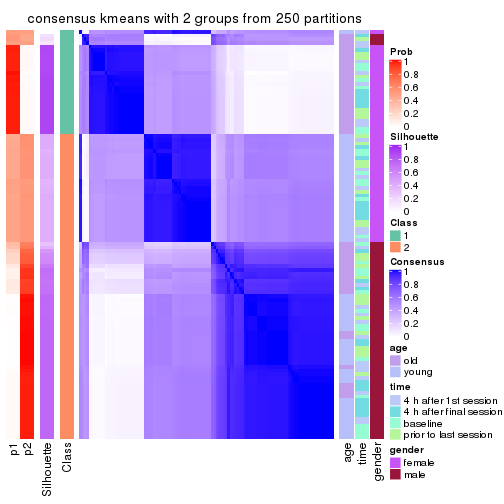
consensus_heatmap(res, k = 3)
consensus_heatmap(res, k = 4)
consensus_heatmap(res, k = 5)
consensus_heatmap(res, k = 6)
Heatmaps for the membership of samples in all partitions to see how consistent they are:
membership_heatmap(res, k = 2)
membership_heatmap(res, k = 3)
membership_heatmap(res, k = 4)
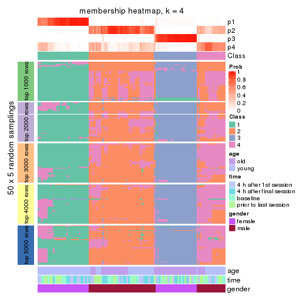
membership_heatmap(res, k = 5)

membership_heatmap(res, k = 6)
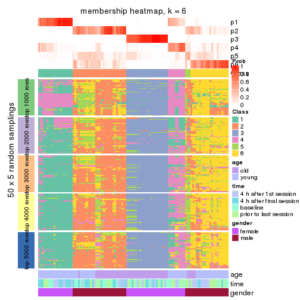
As soon as we have had the classes for columns, we can look for signatures which are significantly different between classes which can be candidate marks for certain classes. Following are the heatmaps for signatures.
Signature heatmaps where rows are scaled:
get_signatures(res, k = 2)
get_signatures(res, k = 3)
get_signatures(res, k = 4)
get_signatures(res, k = 5)
get_signatures(res, k = 6)
Signature heatmaps where rows are not scaled:
get_signatures(res, k = 2, scale_rows = FALSE)
get_signatures(res, k = 3, scale_rows = FALSE)
get_signatures(res, k = 4, scale_rows = FALSE)

get_signatures(res, k = 5, scale_rows = FALSE)
get_signatures(res, k = 6, scale_rows = FALSE)

Compare the overlap of signatures from different k:
compare_signatures(res)
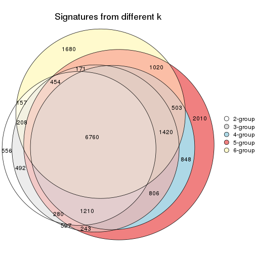
get_signature() returns a data frame invisibly. TO get the list of signatures, the function
call should be assigned to a variable explicitly. In following code, if plot argument is set
to FALSE, no heatmap is plotted while only the differential analysis is performed.
# code only for demonstration
tb = get_signature(res, k = ..., plot = FALSE)
An example of the output of tb is:
#> which_row fdr mean_1 mean_2 scaled_mean_1 scaled_mean_2 km
#> 1 38 0.042760348 8.373488 9.131774 -0.5533452 0.5164555 1
#> 2 40 0.018707592 7.106213 8.469186 -0.6173731 0.5762149 1
#> 3 55 0.019134737 10.221463 11.207825 -0.6159697 0.5749050 1
#> 4 59 0.006059896 5.921854 7.869574 -0.6899429 0.6439467 1
#> 5 60 0.018055526 8.928898 10.211722 -0.6204761 0.5791110 1
#> 6 98 0.009384629 15.714769 14.887706 0.6635654 -0.6193277 2
...
The columns in tb are:
which_row: row indices corresponding to the input matrix.fdr: FDR for the differential test. mean_x: The mean value in group x.scaled_mean_x: The mean value in group x after rows are scaled.km: Row groups if k-means clustering is applied to rows.UMAP plot which shows how samples are separated.
dimension_reduction(res, k = 2, method = "UMAP")
dimension_reduction(res, k = 3, method = "UMAP")
dimension_reduction(res, k = 4, method = "UMAP")
dimension_reduction(res, k = 5, method = "UMAP")
dimension_reduction(res, k = 6, method = "UMAP")
Following heatmap shows how subgroups are split when increasing k:
collect_classes(res)

Test correlation between subgroups and known annotations. If the known annotation is numeric, one-way ANOVA test is applied, and if the known annotation is discrete, chi-squared contingency table test is applied.
test_to_known_factors(res)
#> n age(p) time(p) gender(p) k
#> MAD:kmeans 75 1.09e-06 0.999 4.66e-17 2
#> MAD:kmeans 109 1.51e-12 1.000 2.14e-24 3
#> MAD:kmeans 88 6.56e-13 0.637 5.89e-19 4
#> MAD:kmeans 81 1.41e-12 0.731 1.87e-17 5
#> MAD:kmeans 61 7.55e-12 0.585 7.55e-12 6
If matrix rows can be associated to genes, consider to use GO_Enrichment(res,
...) to perform function enrichment for the signature genes.
The object with results only for a single top-value method and a single partition method can be extracted as:
res = res_list["MAD", "skmeans"]
# you can also extract it by
# res = res_list["MAD:skmeans"]
A summary of res and all the functions that can be applied to it:
res
#> A 'ConsensusPartition' object with k = 2, 3, 4, 5, 6.
#> On a matrix with 51941 rows and 110 columns.
#> Top rows (1000, 2000, 3000, 4000, 5000) are extracted by 'MAD' method.
#> Subgroups are detected by 'skmeans' method.
#> Performed in total 1250 partitions by row resampling.
#> Best k for subgroups seems to be 2.
#>
#> Following methods can be applied to this 'ConsensusPartition' object:
#> [1] "cola_report" "collect_classes" "collect_plots"
#> [4] "collect_stats" "colnames" "compare_signatures"
#> [7] "consensus_heatmap" "dimension_reduction" "functional_enrichment"
#> [10] "get_anno_col" "get_anno" "get_classes"
#> [13] "get_consensus" "get_matrix" "get_membership"
#> [16] "get_param" "get_signatures" "get_stats"
#> [19] "is_best_k" "is_stable_k" "membership_heatmap"
#> [22] "ncol" "nrow" "plot_ecdf"
#> [25] "rownames" "select_partition_number" "show"
#> [28] "suggest_best_k" "test_to_known_factors"
collect_plots() function collects all the plots made from res for all k (number of partitions)
into one single page to provide an easy and fast comparison between different k.
collect_plots(res)
The plots are:
k and the heatmap of
predicted classes for each k.k.k.k.All the plots in panels can be made by individual functions and they are plotted later in this section.
select_partition_number() produces several plots showing different
statistics for choosing “optimized” k. There are following statistics:
k;k, the area increased is defined as \(A_k - A_{k-1}\).The detailed explanations of these statistics can be found in the cola vignette.
Generally speaking, lower PAC score, higher mean silhouette score or higher
concordance corresponds to better partition. Rand index and Jaccard index
measure how similar the current partition is compared to partition with k-1.
If they are too similar, we won't accept k is better than k-1.
select_partition_number(res)
The numeric values for all these statistics can be obtained by get_stats().
get_stats(res)
#> k 1-PAC mean_silhouette concordance area_increased Rand Jaccard
#> 2 2 0.273 0.816 0.862 0.5037 0.496 0.496
#> 3 3 0.278 0.776 0.795 0.3112 0.841 0.687
#> 4 4 0.331 0.470 0.638 0.1378 0.895 0.709
#> 5 5 0.387 0.373 0.557 0.0625 0.925 0.732
#> 6 6 0.467 0.343 0.492 0.0408 0.899 0.623
suggest_best_k() suggests the best \(k\) based on these statistics. The rules are as follows:
NA.suggest_best_k(res)
#> [1] 2
Following shows the table of the partitions (You need to click the show/hide
code output link to see it). The membership matrix (columns with name p*)
is inferred by
clue::cl_consensus()
function with the SE method. Basically the value in the membership matrix
represents the probability to belong to a certain group. The finall class
label for an item is determined with the group with highest probability it
belongs to.
In get_classes() function, the entropy is calculated from the membership
matrix and the silhouette score is calculated from the consensus matrix.
cbind(get_classes(res, k = 2), get_membership(res, k = 2))
#> class entropy silhouette p1 p2
#> GSM702357 2 0.5178 0.866 0.116 0.884
#> GSM702358 2 0.1843 0.871 0.028 0.972
#> GSM702359 2 0.0000 0.863 0.000 1.000
#> GSM702360 2 0.7219 0.828 0.200 0.800
#> GSM702361 2 0.0376 0.865 0.004 0.996
#> GSM702362 2 0.0000 0.863 0.000 1.000
#> GSM702363 2 0.3584 0.874 0.068 0.932
#> GSM702364 2 0.5059 0.862 0.112 0.888
#> GSM702413 1 0.6048 0.839 0.852 0.148
#> GSM702414 1 0.6712 0.830 0.824 0.176
#> GSM702415 1 0.9170 0.742 0.668 0.332
#> GSM702416 1 0.5178 0.843 0.884 0.116
#> GSM702417 1 0.8813 0.775 0.700 0.300
#> GSM702418 1 0.8713 0.770 0.708 0.292
#> GSM702419 1 0.5408 0.844 0.876 0.124
#> GSM702365 2 0.2236 0.873 0.036 0.964
#> GSM702366 2 0.0672 0.867 0.008 0.992
#> GSM702367 2 0.0000 0.863 0.000 1.000
#> GSM702368 2 0.0000 0.863 0.000 1.000
#> GSM702369 2 0.1184 0.866 0.016 0.984
#> GSM702370 2 0.0376 0.863 0.004 0.996
#> GSM702371 2 0.0000 0.863 0.000 1.000
#> GSM702372 2 0.0376 0.864 0.004 0.996
#> GSM702420 1 0.9522 0.697 0.628 0.372
#> GSM702421 1 0.4562 0.844 0.904 0.096
#> GSM702422 1 0.9552 0.690 0.624 0.376
#> GSM702423 1 0.9129 0.746 0.672 0.328
#> GSM702424 1 0.7815 0.816 0.768 0.232
#> GSM702425 1 0.8813 0.775 0.700 0.300
#> GSM702426 1 0.8813 0.776 0.700 0.300
#> GSM702427 1 0.6148 0.839 0.848 0.152
#> GSM702373 2 0.4298 0.871 0.088 0.912
#> GSM702374 2 0.0000 0.863 0.000 1.000
#> GSM702375 2 0.0000 0.863 0.000 1.000
#> GSM702376 2 0.3114 0.875 0.056 0.944
#> GSM702377 2 0.3879 0.869 0.076 0.924
#> GSM702378 2 0.0672 0.866 0.008 0.992
#> GSM702379 2 0.2948 0.875 0.052 0.948
#> GSM702380 2 0.3733 0.875 0.072 0.928
#> GSM702428 1 0.9795 0.621 0.584 0.416
#> GSM702429 1 0.8661 0.781 0.712 0.288
#> GSM702430 1 0.7745 0.817 0.772 0.228
#> GSM702431 1 0.7950 0.809 0.760 0.240
#> GSM702432 1 0.6801 0.833 0.820 0.180
#> GSM702433 1 0.9427 0.709 0.640 0.360
#> GSM702434 1 0.8955 0.751 0.688 0.312
#> GSM702381 2 0.0376 0.865 0.004 0.996
#> GSM702382 2 0.1414 0.870 0.020 0.980
#> GSM702383 2 0.0376 0.865 0.004 0.996
#> GSM702384 2 0.4161 0.872 0.084 0.916
#> GSM702385 2 0.0672 0.866 0.008 0.992
#> GSM702386 2 0.0376 0.865 0.004 0.996
#> GSM702387 2 0.2043 0.872 0.032 0.968
#> GSM702388 2 0.0376 0.865 0.004 0.996
#> GSM702435 1 0.8763 0.775 0.704 0.296
#> GSM702436 1 0.8016 0.811 0.756 0.244
#> GSM702437 1 0.9129 0.748 0.672 0.328
#> GSM702438 1 0.7950 0.810 0.760 0.240
#> GSM702439 1 0.8207 0.805 0.744 0.256
#> GSM702440 1 0.8555 0.791 0.720 0.280
#> GSM702441 1 0.9552 0.693 0.624 0.376
#> GSM702442 1 0.8713 0.780 0.708 0.292
#> GSM702389 2 0.8016 0.796 0.244 0.756
#> GSM702390 2 0.7453 0.820 0.212 0.788
#> GSM702391 2 0.7139 0.830 0.196 0.804
#> GSM702392 2 0.7950 0.803 0.240 0.760
#> GSM702393 2 0.7883 0.803 0.236 0.764
#> GSM702394 2 0.9358 0.689 0.352 0.648
#> GSM702443 1 0.0000 0.844 1.000 0.000
#> GSM702444 1 0.0000 0.844 1.000 0.000
#> GSM702445 1 0.0000 0.844 1.000 0.000
#> GSM702446 1 0.0000 0.844 1.000 0.000
#> GSM702447 1 0.0000 0.844 1.000 0.000
#> GSM702448 1 0.0000 0.844 1.000 0.000
#> GSM702395 2 0.8016 0.799 0.244 0.756
#> GSM702396 2 0.5294 0.855 0.120 0.880
#> GSM702397 2 0.4431 0.872 0.092 0.908
#> GSM702398 2 0.5059 0.868 0.112 0.888
#> GSM702399 2 0.9710 0.612 0.400 0.600
#> GSM702400 2 0.9552 0.646 0.376 0.624
#> GSM702449 1 0.1843 0.845 0.972 0.028
#> GSM702450 1 0.0000 0.844 1.000 0.000
#> GSM702451 1 0.0376 0.844 0.996 0.004
#> GSM702452 1 0.0000 0.844 1.000 0.000
#> GSM702453 1 0.0376 0.844 0.996 0.004
#> GSM702454 1 0.0672 0.844 0.992 0.008
#> GSM702401 2 0.8555 0.768 0.280 0.720
#> GSM702402 2 0.8763 0.751 0.296 0.704
#> GSM702403 2 0.5059 0.867 0.112 0.888
#> GSM702404 2 0.7376 0.823 0.208 0.792
#> GSM702405 2 0.9963 0.490 0.464 0.536
#> GSM702406 2 0.8555 0.768 0.280 0.720
#> GSM702455 1 0.0000 0.844 1.000 0.000
#> GSM702456 1 0.0000 0.844 1.000 0.000
#> GSM702457 1 0.0000 0.844 1.000 0.000
#> GSM702458 1 0.0000 0.844 1.000 0.000
#> GSM702459 1 0.0000 0.844 1.000 0.000
#> GSM702460 1 0.0000 0.844 1.000 0.000
#> GSM702407 2 0.6247 0.853 0.156 0.844
#> GSM702408 2 0.5629 0.861 0.132 0.868
#> GSM702409 2 0.9000 0.678 0.316 0.684
#> GSM702410 2 0.9170 0.711 0.332 0.668
#> GSM702411 2 0.9635 0.635 0.388 0.612
#> GSM702412 2 0.7950 0.801 0.240 0.760
#> GSM702461 1 0.0000 0.844 1.000 0.000
#> GSM702462 1 0.0000 0.844 1.000 0.000
#> GSM702463 1 0.0000 0.844 1.000 0.000
#> GSM702464 1 0.0000 0.844 1.000 0.000
#> GSM702465 1 0.0000 0.844 1.000 0.000
#> GSM702466 1 0.0000 0.844 1.000 0.000
cbind(get_classes(res, k = 3), get_membership(res, k = 3))
#> class entropy silhouette p1 p2 p3
#> GSM702357 2 0.5874 0.794 0.116 0.796 0.088
#> GSM702358 2 0.4128 0.791 0.132 0.856 0.012
#> GSM702359 2 0.5733 0.689 0.324 0.676 0.000
#> GSM702360 2 0.6915 0.772 0.124 0.736 0.140
#> GSM702361 2 0.5327 0.734 0.272 0.728 0.000
#> GSM702362 2 0.3686 0.784 0.140 0.860 0.000
#> GSM702363 2 0.4479 0.793 0.096 0.860 0.044
#> GSM702364 2 0.6854 0.757 0.216 0.716 0.068
#> GSM702413 1 0.7248 0.801 0.708 0.108 0.184
#> GSM702414 1 0.7848 0.705 0.640 0.096 0.264
#> GSM702415 1 0.4316 0.841 0.868 0.088 0.044
#> GSM702416 1 0.8040 0.659 0.608 0.092 0.300
#> GSM702417 1 0.5191 0.841 0.828 0.112 0.060
#> GSM702418 1 0.6726 0.818 0.748 0.120 0.132
#> GSM702419 1 0.7874 0.630 0.604 0.076 0.320
#> GSM702365 2 0.4324 0.793 0.112 0.860 0.028
#> GSM702366 2 0.4452 0.774 0.192 0.808 0.000
#> GSM702367 2 0.5810 0.692 0.336 0.664 0.000
#> GSM702368 2 0.4887 0.771 0.228 0.772 0.000
#> GSM702369 2 0.6228 0.625 0.372 0.624 0.004
#> GSM702370 2 0.5882 0.659 0.348 0.652 0.000
#> GSM702371 2 0.5156 0.767 0.216 0.776 0.008
#> GSM702372 2 0.5733 0.695 0.324 0.676 0.000
#> GSM702420 1 0.4551 0.811 0.844 0.132 0.024
#> GSM702421 1 0.7400 0.721 0.664 0.072 0.264
#> GSM702422 1 0.3213 0.809 0.900 0.092 0.008
#> GSM702423 1 0.5181 0.846 0.832 0.084 0.084
#> GSM702424 1 0.4737 0.843 0.852 0.064 0.084
#> GSM702425 1 0.4505 0.836 0.860 0.092 0.048
#> GSM702426 1 0.4994 0.829 0.836 0.112 0.052
#> GSM702427 1 0.4683 0.836 0.836 0.024 0.140
#> GSM702373 2 0.5307 0.785 0.124 0.820 0.056
#> GSM702374 2 0.4796 0.772 0.220 0.780 0.000
#> GSM702375 2 0.4235 0.776 0.176 0.824 0.000
#> GSM702376 2 0.3896 0.785 0.128 0.864 0.008
#> GSM702377 2 0.7146 0.714 0.264 0.676 0.060
#> GSM702378 2 0.4233 0.789 0.160 0.836 0.004
#> GSM702379 2 0.4270 0.790 0.116 0.860 0.024
#> GSM702380 2 0.4779 0.792 0.124 0.840 0.036
#> GSM702428 1 0.5200 0.793 0.796 0.184 0.020
#> GSM702429 1 0.6254 0.827 0.776 0.116 0.108
#> GSM702430 1 0.7545 0.793 0.692 0.136 0.172
#> GSM702431 1 0.6854 0.820 0.740 0.124 0.136
#> GSM702432 1 0.8048 0.709 0.628 0.108 0.264
#> GSM702433 1 0.4891 0.820 0.836 0.124 0.040
#> GSM702434 1 0.6764 0.805 0.744 0.148 0.108
#> GSM702381 2 0.3038 0.784 0.104 0.896 0.000
#> GSM702382 2 0.4351 0.783 0.168 0.828 0.004
#> GSM702383 2 0.4700 0.784 0.180 0.812 0.008
#> GSM702384 2 0.5921 0.778 0.212 0.756 0.032
#> GSM702385 2 0.4931 0.759 0.232 0.768 0.000
#> GSM702386 2 0.5285 0.752 0.244 0.752 0.004
#> GSM702387 2 0.3918 0.782 0.120 0.868 0.012
#> GSM702388 2 0.5285 0.759 0.244 0.752 0.004
#> GSM702435 1 0.6191 0.837 0.776 0.140 0.084
#> GSM702436 1 0.7327 0.794 0.708 0.160 0.132
#> GSM702437 1 0.4449 0.832 0.860 0.100 0.040
#> GSM702438 1 0.5285 0.844 0.824 0.064 0.112
#> GSM702439 1 0.5639 0.843 0.808 0.080 0.112
#> GSM702440 1 0.4868 0.842 0.844 0.100 0.056
#> GSM702441 1 0.3141 0.823 0.912 0.068 0.020
#> GSM702442 1 0.4709 0.838 0.852 0.092 0.056
#> GSM702389 2 0.6714 0.664 0.032 0.672 0.296
#> GSM702390 2 0.7278 0.762 0.136 0.712 0.152
#> GSM702391 2 0.7211 0.762 0.128 0.716 0.156
#> GSM702392 2 0.8298 0.697 0.152 0.628 0.220
#> GSM702393 2 0.8460 0.628 0.136 0.600 0.264
#> GSM702394 2 0.7262 0.373 0.028 0.528 0.444
#> GSM702443 3 0.0475 0.922 0.004 0.004 0.992
#> GSM702444 3 0.0000 0.922 0.000 0.000 1.000
#> GSM702445 3 0.0000 0.922 0.000 0.000 1.000
#> GSM702446 3 0.0237 0.922 0.004 0.000 0.996
#> GSM702447 3 0.0424 0.922 0.008 0.000 0.992
#> GSM702448 3 0.1129 0.915 0.020 0.004 0.976
#> GSM702395 2 0.7778 0.690 0.104 0.656 0.240
#> GSM702396 2 0.7485 0.756 0.224 0.680 0.096
#> GSM702397 2 0.5823 0.798 0.144 0.792 0.064
#> GSM702398 2 0.6915 0.784 0.140 0.736 0.124
#> GSM702399 3 0.7797 0.327 0.072 0.320 0.608
#> GSM702400 2 0.8337 0.298 0.080 0.476 0.444
#> GSM702449 3 0.6556 0.510 0.276 0.032 0.692
#> GSM702450 3 0.0424 0.921 0.000 0.008 0.992
#> GSM702451 3 0.4249 0.821 0.108 0.028 0.864
#> GSM702452 3 0.0237 0.922 0.004 0.000 0.996
#> GSM702453 3 0.2384 0.887 0.056 0.008 0.936
#> GSM702454 3 0.3377 0.846 0.092 0.012 0.896
#> GSM702401 2 0.6684 0.669 0.032 0.676 0.292
#> GSM702402 2 0.6905 0.672 0.044 0.676 0.280
#> GSM702403 2 0.5334 0.795 0.120 0.820 0.060
#> GSM702404 2 0.7316 0.743 0.112 0.704 0.184
#> GSM702405 3 0.6351 0.710 0.072 0.168 0.760
#> GSM702406 2 0.7739 0.673 0.088 0.644 0.268
#> GSM702455 3 0.0475 0.921 0.004 0.004 0.992
#> GSM702456 3 0.0475 0.922 0.004 0.004 0.992
#> GSM702457 3 0.0237 0.923 0.004 0.000 0.996
#> GSM702458 3 0.0661 0.919 0.008 0.004 0.988
#> GSM702459 3 0.1999 0.905 0.036 0.012 0.952
#> GSM702460 3 0.0000 0.922 0.000 0.000 1.000
#> GSM702407 2 0.6854 0.778 0.124 0.740 0.136
#> GSM702408 2 0.5793 0.792 0.116 0.800 0.084
#> GSM702409 2 0.9702 0.457 0.248 0.452 0.300
#> GSM702410 2 0.7932 0.495 0.064 0.552 0.384
#> GSM702411 3 0.6904 0.495 0.048 0.268 0.684
#> GSM702412 2 0.7298 0.736 0.088 0.692 0.220
#> GSM702461 3 0.0237 0.922 0.004 0.000 0.996
#> GSM702462 3 0.0424 0.922 0.008 0.000 0.992
#> GSM702463 3 0.0237 0.922 0.004 0.000 0.996
#> GSM702464 3 0.0424 0.921 0.008 0.000 0.992
#> GSM702465 3 0.1482 0.913 0.020 0.012 0.968
#> GSM702466 3 0.0237 0.922 0.004 0.000 0.996
cbind(get_classes(res, k = 4), get_membership(res, k = 4))
#> class entropy silhouette p1 p2 p3 p4
#> GSM702357 4 0.680 0.05598 0.040 0.368 0.036 0.556
#> GSM702358 2 0.618 0.18184 0.040 0.492 0.004 0.464
#> GSM702359 2 0.731 0.30175 0.256 0.552 0.004 0.188
#> GSM702360 2 0.835 0.00658 0.096 0.424 0.080 0.400
#> GSM702361 2 0.661 0.31202 0.168 0.628 0.000 0.204
#> GSM702362 2 0.662 0.26179 0.092 0.612 0.008 0.288
#> GSM702363 2 0.690 0.05384 0.064 0.460 0.016 0.460
#> GSM702364 2 0.828 0.15257 0.140 0.508 0.060 0.292
#> GSM702413 1 0.785 0.65739 0.604 0.124 0.184 0.088
#> GSM702414 1 0.856 0.54102 0.512 0.092 0.256 0.140
#> GSM702415 1 0.657 0.73412 0.700 0.160 0.052 0.088
#> GSM702416 1 0.793 0.60184 0.552 0.048 0.260 0.140
#> GSM702417 1 0.595 0.75354 0.752 0.092 0.056 0.100
#> GSM702418 1 0.771 0.67150 0.628 0.124 0.124 0.124
#> GSM702419 1 0.801 0.65984 0.584 0.076 0.188 0.152
#> GSM702365 2 0.712 0.14591 0.068 0.484 0.024 0.424
#> GSM702366 2 0.682 0.33296 0.092 0.592 0.012 0.304
#> GSM702367 2 0.587 0.36892 0.216 0.688 0.000 0.096
#> GSM702368 2 0.731 0.33782 0.192 0.584 0.012 0.212
#> GSM702369 2 0.734 0.29162 0.240 0.552 0.004 0.204
#> GSM702370 2 0.668 0.35832 0.200 0.644 0.008 0.148
#> GSM702371 2 0.599 0.38682 0.148 0.704 0.004 0.144
#> GSM702372 2 0.652 0.34679 0.232 0.648 0.008 0.112
#> GSM702420 1 0.597 0.72390 0.724 0.184 0.040 0.052
#> GSM702421 1 0.808 0.63523 0.568 0.072 0.216 0.144
#> GSM702422 1 0.527 0.70732 0.760 0.168 0.012 0.060
#> GSM702423 1 0.628 0.74262 0.720 0.148 0.044 0.088
#> GSM702424 1 0.648 0.73469 0.720 0.104 0.096 0.080
#> GSM702425 1 0.547 0.73824 0.772 0.116 0.028 0.084
#> GSM702426 1 0.602 0.72625 0.732 0.140 0.028 0.100
#> GSM702427 1 0.695 0.72056 0.680 0.092 0.152 0.076
#> GSM702373 4 0.713 0.03865 0.088 0.376 0.016 0.520
#> GSM702374 2 0.694 0.27892 0.120 0.520 0.000 0.360
#> GSM702375 2 0.670 0.32671 0.140 0.604 0.000 0.256
#> GSM702376 4 0.710 0.00695 0.072 0.440 0.020 0.468
#> GSM702377 2 0.867 0.11318 0.228 0.440 0.048 0.284
#> GSM702378 2 0.634 0.26012 0.068 0.596 0.004 0.332
#> GSM702379 2 0.703 0.18991 0.080 0.524 0.016 0.380
#> GSM702380 2 0.671 0.21796 0.088 0.556 0.004 0.352
#> GSM702428 1 0.634 0.65088 0.668 0.228 0.012 0.092
#> GSM702429 1 0.653 0.70824 0.712 0.132 0.064 0.092
#> GSM702430 1 0.737 0.71458 0.648 0.092 0.096 0.164
#> GSM702431 1 0.773 0.69032 0.620 0.088 0.140 0.152
#> GSM702432 1 0.818 0.61193 0.552 0.092 0.248 0.108
#> GSM702433 1 0.597 0.71592 0.732 0.164 0.036 0.068
#> GSM702434 1 0.715 0.70151 0.672 0.124 0.104 0.100
#> GSM702381 2 0.619 0.32542 0.072 0.668 0.012 0.248
#> GSM702382 2 0.739 0.25273 0.120 0.528 0.016 0.336
#> GSM702383 2 0.720 0.30735 0.104 0.568 0.020 0.308
#> GSM702384 4 0.776 0.07310 0.132 0.360 0.024 0.484
#> GSM702385 2 0.634 0.35894 0.148 0.688 0.012 0.152
#> GSM702386 2 0.696 0.35881 0.132 0.612 0.012 0.244
#> GSM702387 2 0.694 0.26043 0.060 0.576 0.032 0.332
#> GSM702388 2 0.674 0.37231 0.140 0.620 0.004 0.236
#> GSM702435 1 0.700 0.73539 0.676 0.156 0.084 0.084
#> GSM702436 1 0.761 0.70337 0.636 0.132 0.108 0.124
#> GSM702437 1 0.577 0.73070 0.736 0.176 0.028 0.060
#> GSM702438 1 0.658 0.73488 0.704 0.096 0.144 0.056
#> GSM702439 1 0.611 0.75041 0.744 0.104 0.072 0.080
#> GSM702440 1 0.642 0.74371 0.724 0.104 0.096 0.076
#> GSM702441 1 0.422 0.73723 0.832 0.116 0.012 0.040
#> GSM702442 1 0.641 0.72887 0.712 0.156 0.056 0.076
#> GSM702389 4 0.707 0.37259 0.024 0.200 0.144 0.632
#> GSM702390 4 0.756 0.22699 0.084 0.264 0.064 0.588
#> GSM702391 4 0.773 0.28333 0.072 0.284 0.080 0.564
#> GSM702392 4 0.889 0.25661 0.140 0.244 0.128 0.488
#> GSM702393 4 0.860 0.30827 0.096 0.248 0.144 0.512
#> GSM702394 4 0.721 0.35127 0.012 0.156 0.244 0.588
#> GSM702443 3 0.189 0.85064 0.016 0.004 0.944 0.036
#> GSM702444 3 0.139 0.85616 0.012 0.000 0.960 0.028
#> GSM702445 3 0.148 0.85754 0.016 0.004 0.960 0.020
#> GSM702446 3 0.182 0.85158 0.020 0.000 0.944 0.036
#> GSM702447 3 0.172 0.85756 0.020 0.000 0.948 0.032
#> GSM702448 3 0.259 0.85361 0.044 0.004 0.916 0.036
#> GSM702395 4 0.854 0.02618 0.080 0.388 0.116 0.416
#> GSM702396 2 0.860 0.17488 0.156 0.504 0.084 0.256
#> GSM702397 2 0.721 0.24530 0.076 0.584 0.040 0.300
#> GSM702398 2 0.813 0.17100 0.112 0.524 0.068 0.296
#> GSM702399 3 0.896 -0.27922 0.076 0.184 0.380 0.360
#> GSM702400 4 0.902 0.21152 0.072 0.240 0.272 0.416
#> GSM702449 3 0.695 0.53919 0.212 0.060 0.656 0.072
#> GSM702450 3 0.235 0.84914 0.012 0.008 0.924 0.056
#> GSM702451 3 0.518 0.74119 0.124 0.032 0.788 0.056
#> GSM702452 3 0.137 0.85657 0.016 0.004 0.964 0.016
#> GSM702453 3 0.558 0.75543 0.124 0.040 0.768 0.068
#> GSM702454 3 0.447 0.77807 0.104 0.004 0.816 0.076
#> GSM702401 4 0.694 0.33989 0.012 0.228 0.140 0.620
#> GSM702402 4 0.701 0.37339 0.040 0.148 0.152 0.660
#> GSM702403 4 0.751 0.13538 0.072 0.384 0.044 0.500
#> GSM702404 4 0.860 0.21109 0.104 0.344 0.100 0.452
#> GSM702405 3 0.793 0.10103 0.064 0.084 0.496 0.356
#> GSM702406 4 0.854 0.30356 0.056 0.284 0.184 0.476
#> GSM702455 3 0.269 0.84757 0.040 0.004 0.912 0.044
#> GSM702456 3 0.307 0.83598 0.012 0.008 0.884 0.096
#> GSM702457 3 0.126 0.85736 0.008 0.000 0.964 0.028
#> GSM702458 3 0.257 0.84105 0.028 0.004 0.916 0.052
#> GSM702459 3 0.332 0.83241 0.056 0.000 0.876 0.068
#> GSM702460 3 0.131 0.85720 0.004 0.000 0.960 0.036
#> GSM702407 2 0.780 0.01167 0.056 0.452 0.076 0.416
#> GSM702408 4 0.738 0.02608 0.072 0.396 0.036 0.496
#> GSM702409 2 0.974 -0.14298 0.168 0.328 0.204 0.300
#> GSM702410 2 0.898 -0.20695 0.052 0.336 0.292 0.320
#> GSM702411 3 0.840 -0.15766 0.052 0.144 0.420 0.384
#> GSM702412 2 0.841 -0.16574 0.040 0.396 0.172 0.392
#> GSM702461 3 0.151 0.85803 0.016 0.000 0.956 0.028
#> GSM702462 3 0.318 0.83813 0.044 0.004 0.888 0.064
#> GSM702463 3 0.139 0.85765 0.012 0.000 0.960 0.028
#> GSM702464 3 0.145 0.85503 0.008 0.000 0.956 0.036
#> GSM702465 3 0.312 0.84273 0.040 0.024 0.900 0.036
#> GSM702466 3 0.161 0.85589 0.016 0.000 0.952 0.032
cbind(get_classes(res, k = 5), get_membership(res, k = 5))
#> class entropy silhouette p1 p2 p3 p4 p5
#> GSM702357 2 0.775 0.12017 0.040 0.484 0.032 0.172 0.272
#> GSM702358 2 0.695 0.00571 0.040 0.472 0.004 0.112 0.372
#> GSM702359 5 0.796 0.27447 0.160 0.176 0.000 0.204 0.460
#> GSM702360 2 0.876 0.10177 0.092 0.400 0.064 0.156 0.288
#> GSM702361 5 0.788 0.25668 0.088 0.192 0.008 0.244 0.468
#> GSM702362 5 0.633 0.29443 0.056 0.140 0.000 0.164 0.640
#> GSM702363 2 0.694 0.05134 0.040 0.472 0.020 0.072 0.396
#> GSM702364 5 0.835 0.16408 0.064 0.172 0.048 0.284 0.432
#> GSM702413 1 0.840 0.31651 0.436 0.064 0.152 0.288 0.060
#> GSM702414 4 0.834 -0.15534 0.292 0.044 0.184 0.420 0.060
#> GSM702415 1 0.687 0.53733 0.596 0.068 0.012 0.228 0.096
#> GSM702416 1 0.720 0.46865 0.584 0.032 0.172 0.172 0.040
#> GSM702417 1 0.634 0.58235 0.676 0.052 0.044 0.172 0.056
#> GSM702418 1 0.778 0.24302 0.428 0.032 0.056 0.368 0.116
#> GSM702419 1 0.787 0.44377 0.532 0.096 0.172 0.172 0.028
#> GSM702365 2 0.751 0.00820 0.048 0.444 0.012 0.148 0.348
#> GSM702366 5 0.717 0.20198 0.088 0.312 0.008 0.076 0.516
#> GSM702367 5 0.682 0.36234 0.128 0.116 0.000 0.148 0.608
#> GSM702368 5 0.701 0.29882 0.132 0.152 0.004 0.112 0.600
#> GSM702369 5 0.802 0.22118 0.300 0.164 0.000 0.132 0.404
#> GSM702370 5 0.704 0.31986 0.148 0.080 0.004 0.184 0.584
#> GSM702371 5 0.673 0.35437 0.100 0.132 0.004 0.136 0.628
#> GSM702372 5 0.750 0.31365 0.108 0.136 0.000 0.256 0.500
#> GSM702420 1 0.733 0.47712 0.552 0.064 0.012 0.212 0.160
#> GSM702421 1 0.781 0.48305 0.576 0.092 0.140 0.120 0.072
#> GSM702422 1 0.720 0.45359 0.536 0.056 0.012 0.276 0.120
#> GSM702423 1 0.609 0.57267 0.692 0.036 0.024 0.112 0.136
#> GSM702424 1 0.515 0.59416 0.780 0.056 0.048 0.068 0.048
#> GSM702425 1 0.425 0.59598 0.820 0.032 0.008 0.064 0.076
#> GSM702426 1 0.567 0.59452 0.732 0.036 0.028 0.116 0.088
#> GSM702427 1 0.606 0.56916 0.688 0.020 0.124 0.136 0.032
#> GSM702373 2 0.794 0.06299 0.044 0.396 0.016 0.280 0.264
#> GSM702374 5 0.695 0.19919 0.084 0.284 0.000 0.092 0.540
#> GSM702375 5 0.762 0.24882 0.072 0.228 0.000 0.240 0.460
#> GSM702376 2 0.831 -0.06115 0.056 0.348 0.028 0.244 0.324
#> GSM702377 5 0.851 0.13215 0.080 0.188 0.036 0.336 0.360
#> GSM702378 5 0.701 0.25282 0.064 0.264 0.000 0.132 0.540
#> GSM702379 5 0.721 0.17906 0.036 0.256 0.008 0.184 0.516
#> GSM702380 5 0.705 0.21522 0.028 0.280 0.000 0.208 0.484
#> GSM702428 1 0.694 0.44104 0.512 0.040 0.004 0.320 0.124
#> GSM702429 1 0.786 0.24691 0.412 0.052 0.068 0.392 0.076
#> GSM702430 1 0.675 0.56843 0.656 0.060 0.068 0.156 0.060
#> GSM702431 1 0.771 0.50298 0.540 0.048 0.112 0.236 0.064
#> GSM702432 1 0.839 0.37831 0.484 0.072 0.172 0.204 0.068
#> GSM702433 1 0.754 0.45549 0.512 0.036 0.044 0.288 0.120
#> GSM702434 4 0.812 -0.30914 0.384 0.068 0.052 0.392 0.104
#> GSM702381 5 0.729 0.19107 0.060 0.304 0.000 0.156 0.480
#> GSM702382 5 0.739 0.08349 0.080 0.380 0.004 0.104 0.432
#> GSM702383 5 0.753 0.17559 0.084 0.344 0.004 0.120 0.448
#> GSM702384 2 0.847 -0.02415 0.152 0.340 0.008 0.176 0.324
#> GSM702385 5 0.767 0.30122 0.112 0.156 0.000 0.252 0.480
#> GSM702386 5 0.720 0.27084 0.168 0.160 0.004 0.096 0.572
#> GSM702387 5 0.756 0.22311 0.092 0.272 0.016 0.104 0.516
#> GSM702388 5 0.711 0.29172 0.136 0.196 0.004 0.088 0.576
#> GSM702435 1 0.679 0.55665 0.648 0.076 0.028 0.140 0.108
#> GSM702436 1 0.749 0.53437 0.604 0.096 0.104 0.136 0.060
#> GSM702437 1 0.629 0.54933 0.660 0.032 0.016 0.136 0.156
#> GSM702438 1 0.758 0.51190 0.576 0.032 0.140 0.152 0.100
#> GSM702439 1 0.592 0.58813 0.720 0.052 0.032 0.116 0.080
#> GSM702440 1 0.727 0.45846 0.572 0.028 0.056 0.224 0.120
#> GSM702441 1 0.558 0.57352 0.692 0.040 0.004 0.204 0.060
#> GSM702442 1 0.653 0.57967 0.668 0.032 0.052 0.120 0.128
#> GSM702389 2 0.713 0.32779 0.028 0.608 0.148 0.064 0.152
#> GSM702390 2 0.878 0.21496 0.076 0.444 0.096 0.172 0.212
#> GSM702391 2 0.780 0.20576 0.076 0.528 0.036 0.128 0.232
#> GSM702392 4 0.858 -0.11922 0.036 0.332 0.096 0.364 0.172
#> GSM702393 2 0.898 0.20527 0.064 0.400 0.116 0.188 0.232
#> GSM702394 2 0.735 0.32252 0.032 0.580 0.212 0.092 0.084
#> GSM702443 3 0.371 0.78875 0.008 0.040 0.820 0.132 0.000
#> GSM702444 3 0.226 0.83354 0.004 0.024 0.912 0.060 0.000
#> GSM702445 3 0.120 0.82949 0.000 0.012 0.960 0.028 0.000
#> GSM702446 3 0.265 0.82390 0.008 0.024 0.892 0.076 0.000
#> GSM702447 3 0.324 0.82987 0.016 0.028 0.860 0.096 0.000
#> GSM702448 3 0.256 0.83067 0.020 0.020 0.908 0.048 0.004
#> GSM702395 2 0.862 0.15950 0.072 0.428 0.104 0.108 0.288
#> GSM702396 5 0.897 0.01327 0.140 0.328 0.060 0.132 0.340
#> GSM702397 5 0.766 0.14086 0.028 0.344 0.028 0.172 0.428
#> GSM702398 5 0.864 0.11953 0.072 0.308 0.044 0.220 0.356
#> GSM702399 2 0.895 0.05704 0.024 0.284 0.264 0.276 0.152
#> GSM702400 2 0.940 0.22066 0.108 0.372 0.204 0.140 0.176
#> GSM702449 3 0.743 0.42136 0.164 0.044 0.568 0.184 0.040
#> GSM702450 3 0.374 0.81158 0.044 0.056 0.852 0.040 0.008
#> GSM702451 3 0.584 0.66704 0.084 0.040 0.704 0.156 0.016
#> GSM702452 3 0.133 0.83163 0.008 0.000 0.956 0.032 0.004
#> GSM702453 3 0.553 0.71231 0.108 0.032 0.736 0.104 0.020
#> GSM702454 3 0.492 0.72199 0.132 0.040 0.764 0.060 0.004
#> GSM702401 2 0.701 0.30979 0.032 0.632 0.108 0.084 0.144
#> GSM702402 2 0.689 0.33573 0.020 0.632 0.108 0.152 0.088
#> GSM702403 2 0.818 -0.06386 0.048 0.340 0.024 0.252 0.336
#> GSM702404 4 0.833 -0.14261 0.024 0.252 0.068 0.384 0.272
#> GSM702405 3 0.857 -0.14122 0.032 0.248 0.372 0.268 0.080
#> GSM702406 2 0.826 0.14380 0.016 0.400 0.096 0.308 0.180
#> GSM702455 3 0.326 0.81245 0.008 0.040 0.856 0.096 0.000
#> GSM702456 3 0.380 0.80176 0.036 0.064 0.840 0.060 0.000
#> GSM702457 3 0.221 0.83347 0.012 0.012 0.916 0.060 0.000
#> GSM702458 3 0.256 0.82197 0.000 0.020 0.884 0.096 0.000
#> GSM702459 3 0.458 0.77617 0.076 0.032 0.792 0.096 0.004
#> GSM702460 3 0.120 0.82928 0.004 0.004 0.960 0.032 0.000
#> GSM702407 2 0.795 0.17895 0.036 0.504 0.064 0.176 0.220
#> GSM702408 2 0.758 0.18189 0.064 0.524 0.016 0.180 0.216
#> GSM702409 5 0.980 -0.02120 0.176 0.176 0.172 0.168 0.308
#> GSM702410 2 0.941 0.19817 0.064 0.308 0.228 0.168 0.232
#> GSM702411 3 0.895 -0.36358 0.036 0.316 0.320 0.168 0.160
#> GSM702412 2 0.897 0.11035 0.036 0.332 0.140 0.204 0.288
#> GSM702461 3 0.194 0.83424 0.000 0.020 0.924 0.056 0.000
#> GSM702462 3 0.333 0.81480 0.036 0.024 0.872 0.060 0.008
#> GSM702463 3 0.173 0.83346 0.004 0.020 0.940 0.036 0.000
#> GSM702464 3 0.255 0.82301 0.004 0.020 0.892 0.084 0.000
#> GSM702465 3 0.416 0.80006 0.036 0.056 0.832 0.060 0.016
#> GSM702466 3 0.106 0.82838 0.004 0.008 0.968 0.020 0.000
cbind(get_classes(res, k = 6), get_membership(res, k = 6))
#> class entropy silhouette p1 p2 p3 p4 p5 p6
#> GSM702357 2 0.686 0.241119 0.028 0.584 0.032 0.036 0.148 0.172
#> GSM702358 2 0.696 0.228761 0.060 0.564 0.000 0.084 0.100 0.192
#> GSM702359 6 0.763 0.281431 0.108 0.152 0.000 0.064 0.188 0.488
#> GSM702360 6 0.903 -0.000292 0.064 0.280 0.044 0.144 0.184 0.284
#> GSM702361 6 0.780 0.203258 0.064 0.104 0.000 0.132 0.276 0.424
#> GSM702362 6 0.684 0.279365 0.040 0.164 0.004 0.048 0.180 0.564
#> GSM702363 2 0.753 0.204517 0.040 0.512 0.008 0.116 0.164 0.160
#> GSM702364 5 0.787 -0.023807 0.048 0.064 0.044 0.092 0.416 0.336
#> GSM702413 1 0.867 0.415619 0.344 0.056 0.116 0.292 0.152 0.040
#> GSM702414 1 0.869 0.233103 0.268 0.024 0.196 0.240 0.240 0.032
#> GSM702415 1 0.739 0.562584 0.504 0.040 0.032 0.276 0.076 0.072
#> GSM702416 1 0.846 0.335378 0.376 0.036 0.172 0.276 0.060 0.080
#> GSM702417 1 0.617 0.574642 0.596 0.016 0.020 0.268 0.048 0.052
#> GSM702418 1 0.853 0.373389 0.344 0.032 0.052 0.188 0.288 0.096
#> GSM702419 1 0.803 0.424258 0.420 0.068 0.124 0.292 0.076 0.020
#> GSM702365 2 0.678 0.215216 0.060 0.560 0.004 0.032 0.120 0.224
#> GSM702366 2 0.727 0.082746 0.064 0.424 0.000 0.064 0.092 0.356
#> GSM702367 6 0.723 0.279842 0.120 0.116 0.000 0.080 0.128 0.556
#> GSM702368 6 0.747 0.250220 0.092 0.148 0.020 0.084 0.096 0.560
#> GSM702369 6 0.870 0.146883 0.240 0.152 0.004 0.160 0.116 0.328
#> GSM702370 6 0.763 0.215740 0.112 0.064 0.016 0.084 0.212 0.512
#> GSM702371 6 0.627 0.294324 0.060 0.120 0.004 0.068 0.092 0.656
#> GSM702372 6 0.696 0.285520 0.080 0.084 0.000 0.056 0.240 0.540
#> GSM702420 1 0.764 0.470386 0.508 0.048 0.012 0.160 0.100 0.172
#> GSM702421 1 0.779 0.459470 0.484 0.080 0.116 0.244 0.036 0.040
#> GSM702422 1 0.746 0.483885 0.520 0.024 0.016 0.140 0.128 0.172
#> GSM702423 1 0.738 0.512692 0.516 0.028 0.028 0.176 0.052 0.200
#> GSM702424 1 0.539 0.574327 0.728 0.028 0.028 0.128 0.032 0.056
#> GSM702425 1 0.595 0.574676 0.684 0.028 0.028 0.132 0.036 0.092
#> GSM702426 1 0.624 0.561836 0.656 0.028 0.024 0.144 0.044 0.104
#> GSM702427 1 0.631 0.562902 0.652 0.020 0.096 0.148 0.044 0.040
#> GSM702373 5 0.719 -0.074750 0.032 0.368 0.008 0.024 0.380 0.188
#> GSM702374 2 0.782 0.041539 0.080 0.380 0.000 0.104 0.100 0.336
#> GSM702375 6 0.781 0.156063 0.044 0.256 0.000 0.076 0.256 0.368
#> GSM702376 2 0.800 -0.095661 0.048 0.312 0.012 0.052 0.292 0.284
#> GSM702377 5 0.850 -0.087632 0.076 0.108 0.024 0.136 0.368 0.288
#> GSM702378 6 0.760 0.165323 0.040 0.288 0.004 0.076 0.160 0.432
#> GSM702379 6 0.695 0.083224 0.012 0.324 0.000 0.048 0.192 0.424
#> GSM702380 6 0.788 0.165803 0.036 0.256 0.008 0.064 0.308 0.328
#> GSM702428 1 0.836 0.444516 0.428 0.060 0.024 0.200 0.164 0.124
#> GSM702429 1 0.834 0.348071 0.364 0.028 0.048 0.176 0.296 0.088
#> GSM702430 1 0.786 0.486766 0.488 0.048 0.064 0.248 0.084 0.068
#> GSM702431 1 0.832 0.502202 0.412 0.056 0.064 0.288 0.108 0.072
#> GSM702432 1 0.815 0.463289 0.392 0.056 0.120 0.312 0.096 0.024
#> GSM702433 1 0.838 0.453306 0.400 0.028 0.036 0.220 0.152 0.164
#> GSM702434 1 0.856 0.427856 0.344 0.040 0.056 0.256 0.232 0.072
#> GSM702381 6 0.776 0.006064 0.044 0.308 0.000 0.092 0.172 0.384
#> GSM702382 2 0.791 0.166972 0.108 0.460 0.008 0.096 0.088 0.240
#> GSM702383 2 0.750 0.085106 0.048 0.440 0.016 0.080 0.080 0.336
#> GSM702384 6 0.864 0.013477 0.088 0.288 0.012 0.112 0.188 0.312
#> GSM702385 6 0.750 0.248468 0.068 0.120 0.004 0.068 0.260 0.480
#> GSM702386 6 0.809 0.108439 0.080 0.264 0.016 0.124 0.084 0.432
#> GSM702387 2 0.799 -0.010153 0.076 0.368 0.016 0.088 0.092 0.360
#> GSM702388 6 0.788 0.134818 0.128 0.224 0.000 0.096 0.100 0.452
#> GSM702435 1 0.746 0.547687 0.572 0.056 0.060 0.136 0.056 0.120
#> GSM702436 1 0.745 0.495034 0.556 0.116 0.048 0.176 0.052 0.052
#> GSM702437 1 0.594 0.571210 0.688 0.052 0.016 0.136 0.056 0.052
#> GSM702438 1 0.735 0.525041 0.576 0.028 0.100 0.148 0.076 0.072
#> GSM702439 1 0.668 0.573935 0.616 0.024 0.044 0.180 0.056 0.080
#> GSM702440 1 0.754 0.552162 0.516 0.016 0.060 0.216 0.120 0.072
#> GSM702441 1 0.534 0.585782 0.716 0.028 0.000 0.124 0.072 0.060
#> GSM702442 1 0.647 0.562689 0.660 0.068 0.032 0.104 0.044 0.092
#> GSM702389 2 0.769 0.064437 0.028 0.524 0.092 0.096 0.196 0.064
#> GSM702390 2 0.841 0.115312 0.036 0.448 0.064 0.164 0.124 0.164
#> GSM702391 2 0.874 0.047692 0.052 0.340 0.032 0.132 0.232 0.212
#> GSM702392 5 0.754 0.183969 0.036 0.128 0.120 0.072 0.564 0.080
#> GSM702393 5 0.916 -0.010075 0.064 0.228 0.076 0.104 0.304 0.224
#> GSM702394 2 0.814 -0.113569 0.012 0.424 0.148 0.100 0.248 0.068
#> GSM702443 3 0.378 0.775393 0.008 0.008 0.808 0.088 0.088 0.000
#> GSM702444 3 0.331 0.802982 0.004 0.024 0.848 0.096 0.020 0.008
#> GSM702445 3 0.198 0.809195 0.000 0.004 0.912 0.068 0.016 0.000
#> GSM702446 3 0.279 0.788657 0.000 0.000 0.860 0.060 0.080 0.000
#> GSM702447 3 0.339 0.805769 0.004 0.012 0.824 0.128 0.032 0.000
#> GSM702448 3 0.467 0.778559 0.032 0.048 0.776 0.104 0.032 0.008
#> GSM702395 2 0.803 0.113609 0.040 0.472 0.036 0.116 0.120 0.216
#> GSM702396 6 0.889 -0.012113 0.064 0.276 0.044 0.168 0.124 0.324
#> GSM702397 6 0.817 0.134753 0.028 0.260 0.020 0.092 0.256 0.344
#> GSM702398 6 0.849 0.163310 0.056 0.224 0.012 0.128 0.240 0.340
#> GSM702399 5 0.904 0.000918 0.036 0.144 0.252 0.132 0.328 0.108
#> GSM702400 2 0.951 -0.252206 0.060 0.292 0.148 0.172 0.188 0.140
#> GSM702449 3 0.734 0.368561 0.188 0.040 0.520 0.188 0.040 0.024
#> GSM702450 3 0.451 0.767883 0.008 0.044 0.764 0.148 0.016 0.020
#> GSM702451 3 0.589 0.650571 0.076 0.008 0.680 0.140 0.068 0.028
#> GSM702452 3 0.188 0.808795 0.004 0.008 0.928 0.048 0.004 0.008
#> GSM702453 3 0.696 0.555568 0.076 0.044 0.588 0.200 0.060 0.032
#> GSM702454 3 0.608 0.607455 0.128 0.032 0.652 0.144 0.036 0.008
#> GSM702401 2 0.669 0.086632 0.004 0.616 0.068 0.132 0.112 0.068
#> GSM702402 2 0.716 0.140727 0.020 0.560 0.060 0.120 0.196 0.044
#> GSM702403 5 0.804 -0.052742 0.040 0.236 0.012 0.084 0.388 0.240
#> GSM702404 5 0.794 0.160958 0.020 0.132 0.072 0.080 0.476 0.220
#> GSM702405 5 0.820 0.022037 0.016 0.132 0.320 0.116 0.364 0.052
#> GSM702406 5 0.817 0.145880 0.020 0.204 0.100 0.080 0.460 0.136
#> GSM702455 3 0.385 0.788036 0.008 0.012 0.812 0.096 0.068 0.004
#> GSM702456 3 0.457 0.752235 0.024 0.052 0.772 0.124 0.020 0.008
#> GSM702457 3 0.334 0.803889 0.024 0.008 0.852 0.080 0.032 0.004
#> GSM702458 3 0.315 0.793253 0.012 0.004 0.860 0.060 0.060 0.004
#> GSM702459 3 0.567 0.684667 0.048 0.032 0.676 0.184 0.056 0.004
#> GSM702460 3 0.256 0.812232 0.008 0.012 0.892 0.072 0.012 0.004
#> GSM702407 2 0.739 0.233448 0.044 0.564 0.032 0.092 0.108 0.160
#> GSM702408 2 0.779 0.138752 0.044 0.460 0.008 0.112 0.232 0.144
#> GSM702409 6 0.976 -0.159897 0.156 0.108 0.136 0.152 0.180 0.268
#> GSM702410 4 0.928 0.000000 0.020 0.232 0.172 0.236 0.176 0.164
#> GSM702411 5 0.895 -0.196231 0.012 0.196 0.260 0.140 0.276 0.116
#> GSM702412 6 0.892 -0.085527 0.016 0.248 0.092 0.136 0.244 0.264
#> GSM702461 3 0.314 0.809338 0.008 0.016 0.848 0.108 0.020 0.000
#> GSM702462 3 0.452 0.752105 0.060 0.016 0.748 0.164 0.008 0.004
#> GSM702463 3 0.267 0.810670 0.012 0.000 0.872 0.100 0.012 0.004
#> GSM702464 3 0.316 0.798745 0.004 0.008 0.860 0.068 0.052 0.008
#> GSM702465 3 0.485 0.759128 0.044 0.044 0.764 0.112 0.012 0.024
#> GSM702466 3 0.271 0.802364 0.016 0.000 0.868 0.104 0.008 0.004
Heatmaps for the consensus matrix. It visualizes the probability of two samples to be in a same group.
consensus_heatmap(res, k = 2)
consensus_heatmap(res, k = 3)
consensus_heatmap(res, k = 4)
consensus_heatmap(res, k = 5)
consensus_heatmap(res, k = 6)
Heatmaps for the membership of samples in all partitions to see how consistent they are:
membership_heatmap(res, k = 2)
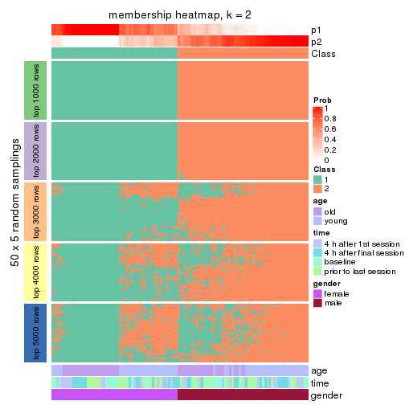
membership_heatmap(res, k = 3)
membership_heatmap(res, k = 4)
membership_heatmap(res, k = 5)
membership_heatmap(res, k = 6)
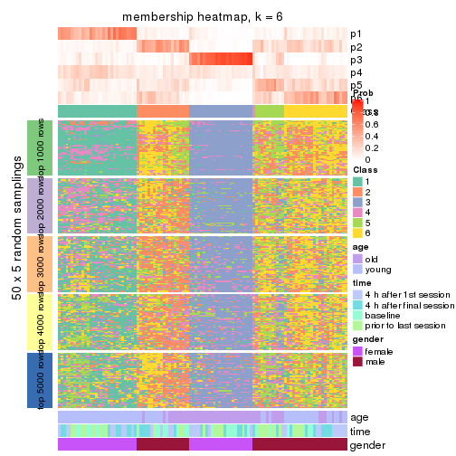
As soon as we have had the classes for columns, we can look for signatures which are significantly different between classes which can be candidate marks for certain classes. Following are the heatmaps for signatures.
Signature heatmaps where rows are scaled:
get_signatures(res, k = 2)

get_signatures(res, k = 3)
get_signatures(res, k = 4)
get_signatures(res, k = 5)
get_signatures(res, k = 6)
Signature heatmaps where rows are not scaled:
get_signatures(res, k = 2, scale_rows = FALSE)
get_signatures(res, k = 3, scale_rows = FALSE)
get_signatures(res, k = 4, scale_rows = FALSE)
get_signatures(res, k = 5, scale_rows = FALSE)

get_signatures(res, k = 6, scale_rows = FALSE)
Compare the overlap of signatures from different k:
compare_signatures(res)
get_signature() returns a data frame invisibly. TO get the list of signatures, the function
call should be assigned to a variable explicitly. In following code, if plot argument is set
to FALSE, no heatmap is plotted while only the differential analysis is performed.
# code only for demonstration
tb = get_signature(res, k = ..., plot = FALSE)
An example of the output of tb is:
#> which_row fdr mean_1 mean_2 scaled_mean_1 scaled_mean_2 km
#> 1 38 0.042760348 8.373488 9.131774 -0.5533452 0.5164555 1
#> 2 40 0.018707592 7.106213 8.469186 -0.6173731 0.5762149 1
#> 3 55 0.019134737 10.221463 11.207825 -0.6159697 0.5749050 1
#> 4 59 0.006059896 5.921854 7.869574 -0.6899429 0.6439467 1
#> 5 60 0.018055526 8.928898 10.211722 -0.6204761 0.5791110 1
#> 6 98 0.009384629 15.714769 14.887706 0.6635654 -0.6193277 2
...
The columns in tb are:
which_row: row indices corresponding to the input matrix.fdr: FDR for the differential test. mean_x: The mean value in group x.scaled_mean_x: The mean value in group x after rows are scaled.km: Row groups if k-means clustering is applied to rows.UMAP plot which shows how samples are separated.
dimension_reduction(res, k = 2, method = "UMAP")

dimension_reduction(res, k = 3, method = "UMAP")
dimension_reduction(res, k = 4, method = "UMAP")
dimension_reduction(res, k = 5, method = "UMAP")
dimension_reduction(res, k = 6, method = "UMAP")
Following heatmap shows how subgroups are split when increasing k:
collect_classes(res)
Test correlation between subgroups and known annotations. If the known annotation is numeric, one-way ANOVA test is applied, and if the known annotation is discrete, chi-squared contingency table test is applied.
test_to_known_factors(res)
#> n age(p) time(p) gender(p) k
#> MAD:skmeans 109 9.34e-01 0.999 1.20e-24 2
#> MAD:skmeans 104 2.69e-13 0.999 1.79e-22 3
#> MAD:skmeans 54 1.52e-12 0.996 NA 4
#> MAD:skmeans 39 3.34e-09 0.405 NA 5
#> MAD:skmeans 38 5.71e-09 0.246 NA 6
If matrix rows can be associated to genes, consider to use GO_Enrichment(res,
...) to perform function enrichment for the signature genes.
The object with results only for a single top-value method and a single partition method can be extracted as:
res = res_list["MAD", "pam"]
# you can also extract it by
# res = res_list["MAD:pam"]
A summary of res and all the functions that can be applied to it:
res
#> A 'ConsensusPartition' object with k = 2, 3, 4, 5, 6.
#> On a matrix with 51941 rows and 110 columns.
#> Top rows (1000, 2000, 3000, 4000, 5000) are extracted by 'MAD' method.
#> Subgroups are detected by 'pam' method.
#> Performed in total 1250 partitions by row resampling.
#> Best k for subgroups seems to be 2.
#>
#> Following methods can be applied to this 'ConsensusPartition' object:
#> [1] "cola_report" "collect_classes" "collect_plots"
#> [4] "collect_stats" "colnames" "compare_signatures"
#> [7] "consensus_heatmap" "dimension_reduction" "functional_enrichment"
#> [10] "get_anno_col" "get_anno" "get_classes"
#> [13] "get_consensus" "get_matrix" "get_membership"
#> [16] "get_param" "get_signatures" "get_stats"
#> [19] "is_best_k" "is_stable_k" "membership_heatmap"
#> [22] "ncol" "nrow" "plot_ecdf"
#> [25] "rownames" "select_partition_number" "show"
#> [28] "suggest_best_k" "test_to_known_factors"
collect_plots() function collects all the plots made from res for all k (number of partitions)
into one single page to provide an easy and fast comparison between different k.
collect_plots(res)
The plots are:
k and the heatmap of
predicted classes for each k.k.k.k.All the plots in panels can be made by individual functions and they are plotted later in this section.
select_partition_number() produces several plots showing different
statistics for choosing “optimized” k. There are following statistics:
k;k, the area increased is defined as \(A_k - A_{k-1}\).The detailed explanations of these statistics can be found in the cola vignette.
Generally speaking, lower PAC score, higher mean silhouette score or higher
concordance corresponds to better partition. Rand index and Jaccard index
measure how similar the current partition is compared to partition with k-1.
If they are too similar, we won't accept k is better than k-1.
select_partition_number(res)
The numeric values for all these statistics can be obtained by get_stats().
get_stats(res)
#> k 1-PAC mean_silhouette concordance area_increased Rand Jaccard
#> 2 2 0.495 0.720 0.884 0.4761 0.528 0.528
#> 3 3 0.350 0.472 0.754 0.2979 0.860 0.751
#> 4 4 0.337 0.322 0.678 0.1422 0.854 0.693
#> 5 5 0.399 0.341 0.640 0.0770 0.843 0.588
#> 6 6 0.487 0.406 0.678 0.0517 0.917 0.700
suggest_best_k() suggests the best \(k\) based on these statistics. The rules are as follows:
NA.suggest_best_k(res)
#> [1] 2
Following shows the table of the partitions (You need to click the show/hide
code output link to see it). The membership matrix (columns with name p*)
is inferred by
clue::cl_consensus()
function with the SE method. Basically the value in the membership matrix
represents the probability to belong to a certain group. The finall class
label for an item is determined with the group with highest probability it
belongs to.
In get_classes() function, the entropy is calculated from the membership
matrix and the silhouette score is calculated from the consensus matrix.
cbind(get_classes(res, k = 2), get_membership(res, k = 2))
#> class entropy silhouette p1 p2
#> GSM702357 2 0.1414 0.8713 0.020 0.980
#> GSM702358 2 0.0000 0.8763 0.000 1.000
#> GSM702359 2 0.0000 0.8763 0.000 1.000
#> GSM702360 2 0.0000 0.8763 0.000 1.000
#> GSM702361 2 0.0000 0.8763 0.000 1.000
#> GSM702362 2 0.0000 0.8763 0.000 1.000
#> GSM702363 2 0.0000 0.8763 0.000 1.000
#> GSM702364 2 0.0000 0.8763 0.000 1.000
#> GSM702413 2 0.9000 0.5024 0.316 0.684
#> GSM702414 1 0.9909 0.2798 0.556 0.444
#> GSM702415 2 0.9850 0.2164 0.428 0.572
#> GSM702416 1 0.6247 0.7600 0.844 0.156
#> GSM702417 2 0.4690 0.8228 0.100 0.900
#> GSM702418 2 0.0672 0.8746 0.008 0.992
#> GSM702419 1 0.9491 0.4630 0.632 0.368
#> GSM702365 2 0.0376 0.8759 0.004 0.996
#> GSM702366 2 0.0000 0.8763 0.000 1.000
#> GSM702367 2 0.0376 0.8757 0.004 0.996
#> GSM702368 2 0.0000 0.8763 0.000 1.000
#> GSM702369 2 0.6712 0.7307 0.176 0.824
#> GSM702370 2 0.0000 0.8763 0.000 1.000
#> GSM702371 2 0.0000 0.8763 0.000 1.000
#> GSM702372 2 0.0376 0.8759 0.004 0.996
#> GSM702420 2 0.9933 0.1331 0.452 0.548
#> GSM702421 1 0.2948 0.8227 0.948 0.052
#> GSM702422 2 0.9944 0.0970 0.456 0.544
#> GSM702423 1 0.9944 0.1866 0.544 0.456
#> GSM702424 1 0.9775 0.3273 0.588 0.412
#> GSM702425 1 0.5408 0.7795 0.876 0.124
#> GSM702426 2 0.7056 0.7235 0.192 0.808
#> GSM702427 1 0.4161 0.8102 0.916 0.084
#> GSM702373 2 0.0000 0.8763 0.000 1.000
#> GSM702374 2 0.0938 0.8743 0.012 0.988
#> GSM702375 2 0.0000 0.8763 0.000 1.000
#> GSM702376 2 0.0000 0.8763 0.000 1.000
#> GSM702377 2 0.0000 0.8763 0.000 1.000
#> GSM702378 2 0.0000 0.8763 0.000 1.000
#> GSM702379 2 0.0000 0.8763 0.000 1.000
#> GSM702380 2 0.0376 0.8757 0.004 0.996
#> GSM702428 2 0.1184 0.8724 0.016 0.984
#> GSM702429 2 0.9954 0.0557 0.460 0.540
#> GSM702430 2 0.7815 0.6482 0.232 0.768
#> GSM702431 2 0.1184 0.8733 0.016 0.984
#> GSM702432 2 0.9988 -0.0284 0.480 0.520
#> GSM702433 2 0.1843 0.8674 0.028 0.972
#> GSM702434 1 0.9286 0.5006 0.656 0.344
#> GSM702381 2 0.0672 0.8751 0.008 0.992
#> GSM702382 2 0.2423 0.8605 0.040 0.960
#> GSM702383 2 0.0938 0.8740 0.012 0.988
#> GSM702384 2 0.0000 0.8763 0.000 1.000
#> GSM702385 2 0.0000 0.8763 0.000 1.000
#> GSM702386 2 0.0000 0.8763 0.000 1.000
#> GSM702387 2 0.0000 0.8763 0.000 1.000
#> GSM702388 2 0.0000 0.8763 0.000 1.000
#> GSM702435 1 0.9833 0.3017 0.576 0.424
#> GSM702436 2 0.9522 0.4096 0.372 0.628
#> GSM702437 1 0.9998 0.0753 0.508 0.492
#> GSM702438 1 0.9552 0.4458 0.624 0.376
#> GSM702439 2 0.9732 0.2902 0.404 0.596
#> GSM702440 1 0.9998 0.0979 0.508 0.492
#> GSM702441 2 0.2948 0.8496 0.052 0.948
#> GSM702442 2 0.9087 0.4996 0.324 0.676
#> GSM702389 2 0.0000 0.8763 0.000 1.000
#> GSM702390 2 0.0000 0.8763 0.000 1.000
#> GSM702391 2 0.0672 0.8753 0.008 0.992
#> GSM702392 2 0.9552 0.3632 0.376 0.624
#> GSM702393 2 0.9323 0.4398 0.348 0.652
#> GSM702394 2 0.8016 0.6619 0.244 0.756
#> GSM702443 1 0.2423 0.8270 0.960 0.040
#> GSM702444 1 0.0000 0.8388 1.000 0.000
#> GSM702445 1 0.0000 0.8388 1.000 0.000
#> GSM702446 1 0.0000 0.8388 1.000 0.000
#> GSM702447 1 0.0000 0.8388 1.000 0.000
#> GSM702448 1 0.0376 0.8380 0.996 0.004
#> GSM702395 1 0.9922 0.2378 0.552 0.448
#> GSM702396 2 0.2423 0.8615 0.040 0.960
#> GSM702397 2 0.4431 0.8244 0.092 0.908
#> GSM702398 2 0.1184 0.8730 0.016 0.984
#> GSM702399 1 0.6531 0.7417 0.832 0.168
#> GSM702400 1 0.9954 0.1651 0.540 0.460
#> GSM702449 1 0.0938 0.8363 0.988 0.012
#> GSM702450 1 0.0000 0.8388 1.000 0.000
#> GSM702451 1 0.0000 0.8388 1.000 0.000
#> GSM702452 1 0.0000 0.8388 1.000 0.000
#> GSM702453 1 0.5842 0.7699 0.860 0.140
#> GSM702454 1 0.0000 0.8388 1.000 0.000
#> GSM702401 2 0.9710 0.3213 0.400 0.600
#> GSM702402 2 0.6247 0.7677 0.156 0.844
#> GSM702403 2 0.0000 0.8763 0.000 1.000
#> GSM702404 2 0.0000 0.8763 0.000 1.000
#> GSM702405 1 0.3733 0.8152 0.928 0.072
#> GSM702406 2 0.1414 0.8707 0.020 0.980
#> GSM702455 1 0.0000 0.8388 1.000 0.000
#> GSM702456 1 0.0000 0.8388 1.000 0.000
#> GSM702457 1 0.0672 0.8374 0.992 0.008
#> GSM702458 1 0.4161 0.8064 0.916 0.084
#> GSM702459 1 0.0000 0.8388 1.000 0.000
#> GSM702460 1 0.0000 0.8388 1.000 0.000
#> GSM702407 2 0.0376 0.8757 0.004 0.996
#> GSM702408 2 0.5294 0.8044 0.120 0.880
#> GSM702409 2 0.1184 0.8724 0.016 0.984
#> GSM702410 2 0.4431 0.8301 0.092 0.908
#> GSM702411 2 0.9881 0.2198 0.436 0.564
#> GSM702412 2 0.5059 0.8039 0.112 0.888
#> GSM702461 1 0.0000 0.8388 1.000 0.000
#> GSM702462 1 0.0000 0.8388 1.000 0.000
#> GSM702463 1 0.0000 0.8388 1.000 0.000
#> GSM702464 1 0.0000 0.8388 1.000 0.000
#> GSM702465 1 0.0000 0.8388 1.000 0.000
#> GSM702466 1 0.0000 0.8388 1.000 0.000
cbind(get_classes(res, k = 3), get_membership(res, k = 3))
#> class entropy silhouette p1 p2 p3
#> GSM702357 2 0.6079 0.4584 0.388 0.612 0.000
#> GSM702358 2 0.5926 0.4848 0.356 0.644 0.000
#> GSM702359 2 0.4504 0.6857 0.196 0.804 0.000
#> GSM702360 2 0.0000 0.7322 0.000 1.000 0.000
#> GSM702361 2 0.0592 0.7338 0.012 0.988 0.000
#> GSM702362 2 0.2878 0.7311 0.096 0.904 0.000
#> GSM702363 2 0.2261 0.7258 0.068 0.932 0.000
#> GSM702364 2 0.0237 0.7336 0.004 0.996 0.000
#> GSM702413 2 0.9319 0.0580 0.196 0.508 0.296
#> GSM702414 3 0.6387 0.2286 0.020 0.300 0.680
#> GSM702415 2 0.9888 -0.2387 0.348 0.388 0.264
#> GSM702416 3 0.3539 0.5514 0.012 0.100 0.888
#> GSM702417 2 0.5610 0.5953 0.196 0.776 0.028
#> GSM702418 2 0.0983 0.7351 0.016 0.980 0.004
#> GSM702419 3 0.7447 0.2285 0.068 0.280 0.652
#> GSM702365 2 0.5529 0.5699 0.296 0.704 0.000
#> GSM702366 2 0.6168 0.4451 0.412 0.588 0.000
#> GSM702367 2 0.3851 0.7180 0.136 0.860 0.004
#> GSM702368 2 0.1529 0.7367 0.040 0.960 0.000
#> GSM702369 2 0.7393 0.5732 0.156 0.704 0.140
#> GSM702370 2 0.0592 0.7340 0.012 0.988 0.000
#> GSM702371 2 0.1031 0.7342 0.024 0.976 0.000
#> GSM702372 2 0.2261 0.7333 0.068 0.932 0.000
#> GSM702420 1 0.7027 0.5741 0.724 0.104 0.172
#> GSM702421 1 0.5722 0.2299 0.704 0.004 0.292
#> GSM702422 3 0.9901 -0.2957 0.276 0.328 0.396
#> GSM702423 2 0.9969 -0.4670 0.308 0.372 0.320
#> GSM702424 1 0.6902 0.5718 0.736 0.116 0.148
#> GSM702425 3 0.6703 0.3357 0.236 0.052 0.712
#> GSM702426 1 0.7262 0.4572 0.624 0.332 0.044
#> GSM702427 3 0.5147 0.5271 0.180 0.020 0.800
#> GSM702373 2 0.2066 0.7346 0.060 0.940 0.000
#> GSM702374 2 0.6225 0.4240 0.432 0.568 0.000
#> GSM702375 2 0.3816 0.7142 0.148 0.852 0.000
#> GSM702376 2 0.0237 0.7325 0.004 0.996 0.000
#> GSM702377 2 0.1031 0.7357 0.024 0.976 0.000
#> GSM702378 2 0.2261 0.7258 0.068 0.932 0.000
#> GSM702379 2 0.0000 0.7322 0.000 1.000 0.000
#> GSM702380 2 0.0237 0.7325 0.004 0.996 0.000
#> GSM702428 2 0.3293 0.7123 0.088 0.900 0.012
#> GSM702429 3 0.8304 -0.0987 0.080 0.416 0.504
#> GSM702430 2 0.6544 0.5079 0.084 0.752 0.164
#> GSM702431 2 0.2384 0.7279 0.056 0.936 0.008
#> GSM702432 2 0.8277 -0.1747 0.076 0.464 0.460
#> GSM702433 2 0.3528 0.7065 0.092 0.892 0.016
#> GSM702434 3 0.9178 0.0156 0.220 0.240 0.540
#> GSM702381 2 0.5835 0.5488 0.340 0.660 0.000
#> GSM702382 2 0.6345 0.4152 0.400 0.596 0.004
#> GSM702383 2 0.6280 0.3854 0.460 0.540 0.000
#> GSM702384 2 0.1411 0.7381 0.036 0.964 0.000
#> GSM702385 2 0.1031 0.7378 0.024 0.976 0.000
#> GSM702386 2 0.1163 0.7343 0.028 0.972 0.000
#> GSM702387 2 0.2711 0.7250 0.088 0.912 0.000
#> GSM702388 2 0.2066 0.7354 0.060 0.940 0.000
#> GSM702435 1 0.9162 0.4993 0.536 0.196 0.268
#> GSM702436 1 0.4540 0.6072 0.848 0.124 0.028
#> GSM702437 2 0.9920 -0.3355 0.272 0.368 0.360
#> GSM702438 3 0.7032 0.2439 0.052 0.272 0.676
#> GSM702439 2 0.8955 -0.0155 0.144 0.524 0.332
#> GSM702440 3 0.9710 -0.1445 0.220 0.372 0.408
#> GSM702441 2 0.5850 0.6458 0.188 0.772 0.040
#> GSM702442 1 0.9115 0.5030 0.548 0.216 0.236
#> GSM702389 2 0.0237 0.7325 0.004 0.996 0.000
#> GSM702390 2 0.3267 0.7153 0.116 0.884 0.000
#> GSM702391 2 0.2063 0.7347 0.044 0.948 0.008
#> GSM702392 2 0.8066 0.0653 0.068 0.528 0.404
#> GSM702393 2 0.9118 0.0871 0.220 0.548 0.232
#> GSM702394 2 0.8496 0.1136 0.416 0.492 0.092
#> GSM702443 3 0.0000 0.6029 0.000 0.000 1.000
#> GSM702444 3 0.5678 0.4837 0.316 0.000 0.684
#> GSM702445 3 0.0237 0.6031 0.004 0.000 0.996
#> GSM702446 3 0.1643 0.6067 0.044 0.000 0.956
#> GSM702447 3 0.6079 0.4266 0.388 0.000 0.612
#> GSM702448 3 0.2959 0.5880 0.100 0.000 0.900
#> GSM702395 3 0.9550 -0.1356 0.204 0.340 0.456
#> GSM702396 2 0.6229 0.5448 0.340 0.652 0.008
#> GSM702397 2 0.6701 0.3271 0.412 0.576 0.012
#> GSM702398 2 0.3771 0.7228 0.112 0.876 0.012
#> GSM702399 3 0.7648 0.3204 0.400 0.048 0.552
#> GSM702400 3 0.9707 -0.2069 0.224 0.352 0.424
#> GSM702449 3 0.4326 0.5924 0.144 0.012 0.844
#> GSM702450 3 0.1860 0.6008 0.052 0.000 0.948
#> GSM702451 3 0.0237 0.6038 0.004 0.000 0.996
#> GSM702452 3 0.5216 0.5375 0.260 0.000 0.740
#> GSM702453 3 0.8515 0.2311 0.432 0.092 0.476
#> GSM702454 3 0.6204 0.3989 0.424 0.000 0.576
#> GSM702401 2 0.9847 -0.2650 0.340 0.404 0.256
#> GSM702402 2 0.7075 0.2323 0.484 0.496 0.020
#> GSM702403 2 0.0592 0.7336 0.012 0.988 0.000
#> GSM702404 2 0.0592 0.7339 0.012 0.988 0.000
#> GSM702405 3 0.6083 0.5449 0.168 0.060 0.772
#> GSM702406 2 0.2261 0.7219 0.068 0.932 0.000
#> GSM702455 3 0.0000 0.6029 0.000 0.000 1.000
#> GSM702456 3 0.4235 0.5801 0.176 0.000 0.824
#> GSM702457 3 0.0000 0.6029 0.000 0.000 1.000
#> GSM702458 3 0.0424 0.6017 0.000 0.008 0.992
#> GSM702459 3 0.5835 0.4601 0.340 0.000 0.660
#> GSM702460 3 0.5968 0.4491 0.364 0.000 0.636
#> GSM702407 2 0.5529 0.5374 0.296 0.704 0.000
#> GSM702408 2 0.6955 0.2855 0.492 0.492 0.016
#> GSM702409 2 0.1877 0.7326 0.032 0.956 0.012
#> GSM702410 2 0.4945 0.6562 0.104 0.840 0.056
#> GSM702411 1 0.9840 0.2980 0.408 0.336 0.256
#> GSM702412 2 0.4324 0.6828 0.028 0.860 0.112
#> GSM702461 3 0.6244 0.3737 0.440 0.000 0.560
#> GSM702462 3 0.6244 0.3798 0.440 0.000 0.560
#> GSM702463 3 0.0424 0.6041 0.008 0.000 0.992
#> GSM702464 3 0.4750 0.5614 0.216 0.000 0.784
#> GSM702465 3 0.6476 0.3571 0.448 0.004 0.548
#> GSM702466 3 0.3340 0.5954 0.120 0.000 0.880
cbind(get_classes(res, k = 4), get_membership(res, k = 4))
#> class entropy silhouette p1 p2 p3 p4
#> GSM702357 2 0.7521 0.04821 0.292 0.488 0.000 0.220
#> GSM702358 2 0.7606 -0.07867 0.248 0.476 0.000 0.276
#> GSM702359 2 0.7077 0.24557 0.148 0.536 0.000 0.316
#> GSM702360 2 0.0336 0.62881 0.000 0.992 0.000 0.008
#> GSM702361 2 0.2216 0.62816 0.000 0.908 0.000 0.092
#> GSM702362 2 0.4624 0.42378 0.000 0.660 0.000 0.340
#> GSM702363 2 0.4477 0.35734 0.000 0.688 0.000 0.312
#> GSM702364 2 0.1109 0.63473 0.004 0.968 0.000 0.028
#> GSM702413 2 0.9367 -0.20554 0.132 0.384 0.168 0.316
#> GSM702414 3 0.5815 0.37053 0.020 0.236 0.700 0.044
#> GSM702415 4 0.8847 0.44263 0.116 0.232 0.156 0.496
#> GSM702416 3 0.3342 0.51640 0.032 0.100 0.868 0.000
#> GSM702417 2 0.7051 0.33196 0.204 0.628 0.020 0.148
#> GSM702418 2 0.1920 0.62874 0.024 0.944 0.004 0.028
#> GSM702419 3 0.8102 0.27193 0.072 0.184 0.572 0.172
#> GSM702365 2 0.6449 0.37894 0.220 0.640 0.000 0.140
#> GSM702366 2 0.7859 -0.16632 0.272 0.376 0.000 0.352
#> GSM702367 2 0.5387 0.50955 0.048 0.696 0.000 0.256
#> GSM702368 2 0.3377 0.61536 0.012 0.848 0.000 0.140
#> GSM702369 2 0.8163 0.25612 0.076 0.548 0.124 0.252
#> GSM702370 2 0.1474 0.63582 0.000 0.948 0.000 0.052
#> GSM702371 2 0.1211 0.63051 0.000 0.960 0.000 0.040
#> GSM702372 2 0.4387 0.57455 0.024 0.776 0.000 0.200
#> GSM702420 4 0.7779 0.14609 0.432 0.048 0.084 0.436
#> GSM702421 1 0.4050 0.40497 0.808 0.000 0.168 0.024
#> GSM702422 4 0.9520 0.24653 0.220 0.156 0.216 0.408
#> GSM702423 1 0.9318 0.07107 0.336 0.328 0.248 0.088
#> GSM702424 1 0.5254 0.29817 0.796 0.060 0.080 0.064
#> GSM702425 3 0.7947 0.22849 0.184 0.032 0.536 0.248
#> GSM702426 1 0.7255 -0.12679 0.576 0.180 0.008 0.236
#> GSM702427 3 0.6835 0.32624 0.220 0.012 0.632 0.136
#> GSM702373 2 0.3243 0.61656 0.036 0.876 0.000 0.088
#> GSM702374 4 0.5994 0.33064 0.068 0.296 0.000 0.636
#> GSM702375 2 0.5764 0.18002 0.028 0.520 0.000 0.452
#> GSM702376 2 0.0336 0.62743 0.000 0.992 0.000 0.008
#> GSM702377 2 0.2216 0.62526 0.000 0.908 0.000 0.092
#> GSM702378 2 0.4454 0.37059 0.000 0.692 0.000 0.308
#> GSM702379 2 0.0000 0.62679 0.000 1.000 0.000 0.000
#> GSM702380 2 0.0336 0.62743 0.000 0.992 0.000 0.008
#> GSM702428 2 0.6077 0.41132 0.096 0.680 0.004 0.220
#> GSM702429 3 0.7891 -0.06598 0.080 0.396 0.464 0.060
#> GSM702430 2 0.7162 0.35200 0.112 0.672 0.112 0.104
#> GSM702431 2 0.4570 0.57079 0.064 0.812 0.008 0.116
#> GSM702432 3 0.7730 -0.07496 0.048 0.432 0.440 0.080
#> GSM702433 2 0.6136 0.42248 0.108 0.708 0.016 0.168
#> GSM702434 3 0.9226 0.00708 0.172 0.188 0.464 0.176
#> GSM702381 2 0.7490 0.09895 0.196 0.476 0.000 0.328
#> GSM702382 2 0.7697 -0.04331 0.316 0.444 0.000 0.240
#> GSM702383 4 0.7534 0.33154 0.268 0.240 0.000 0.492
#> GSM702384 2 0.1970 0.63464 0.008 0.932 0.000 0.060
#> GSM702385 2 0.2760 0.61428 0.000 0.872 0.000 0.128
#> GSM702386 2 0.1637 0.62970 0.000 0.940 0.000 0.060
#> GSM702387 2 0.3323 0.61419 0.060 0.876 0.000 0.064
#> GSM702388 2 0.2142 0.63354 0.016 0.928 0.000 0.056
#> GSM702435 1 0.7948 0.20787 0.572 0.156 0.216 0.056
#> GSM702436 1 0.5697 -0.06021 0.664 0.056 0.000 0.280
#> GSM702437 4 0.9701 0.22391 0.208 0.184 0.232 0.376
#> GSM702438 3 0.6538 0.33763 0.052 0.252 0.656 0.040
#> GSM702439 2 0.9285 -0.20068 0.164 0.416 0.288 0.132
#> GSM702440 3 0.9591 -0.07395 0.204 0.308 0.348 0.140
#> GSM702441 2 0.7959 0.13155 0.160 0.500 0.028 0.312
#> GSM702442 1 0.8702 -0.18154 0.472 0.092 0.136 0.300
#> GSM702389 2 0.0592 0.62865 0.000 0.984 0.000 0.016
#> GSM702390 2 0.5548 0.20376 0.024 0.588 0.000 0.388
#> GSM702391 2 0.2999 0.61315 0.000 0.864 0.004 0.132
#> GSM702392 2 0.8402 -0.22530 0.028 0.404 0.352 0.216
#> GSM702393 2 0.9094 -0.00729 0.184 0.480 0.188 0.148
#> GSM702394 2 0.9036 -0.36370 0.264 0.356 0.060 0.320
#> GSM702443 3 0.1302 0.54727 0.044 0.000 0.956 0.000
#> GSM702444 3 0.4925 0.00690 0.428 0.000 0.572 0.000
#> GSM702445 3 0.0592 0.54574 0.016 0.000 0.984 0.000
#> GSM702446 3 0.1716 0.53972 0.064 0.000 0.936 0.000
#> GSM702447 1 0.4999 0.14179 0.508 0.000 0.492 0.000
#> GSM702448 3 0.5723 0.39190 0.084 0.000 0.696 0.220
#> GSM702395 4 0.9287 0.21816 0.108 0.188 0.324 0.380
#> GSM702396 2 0.7219 0.12863 0.148 0.488 0.000 0.364
#> GSM702397 2 0.7762 -0.05079 0.256 0.428 0.000 0.316
#> GSM702398 2 0.5695 0.51057 0.036 0.692 0.016 0.256
#> GSM702399 3 0.7909 -0.03886 0.376 0.028 0.460 0.136
#> GSM702400 3 0.9559 -0.14947 0.240 0.264 0.368 0.128
#> GSM702449 3 0.4464 0.43148 0.224 0.012 0.760 0.004
#> GSM702450 3 0.2149 0.53221 0.088 0.000 0.912 0.000
#> GSM702451 3 0.0921 0.54661 0.028 0.000 0.972 0.000
#> GSM702452 3 0.4564 0.24682 0.328 0.000 0.672 0.000
#> GSM702453 1 0.6624 0.29535 0.556 0.080 0.360 0.004
#> GSM702454 1 0.4933 0.24442 0.568 0.000 0.432 0.000
#> GSM702401 4 0.9012 0.39481 0.200 0.212 0.112 0.476
#> GSM702402 4 0.8020 0.35827 0.220 0.324 0.012 0.444
#> GSM702403 2 0.0817 0.62961 0.000 0.976 0.000 0.024
#> GSM702404 2 0.1118 0.63433 0.000 0.964 0.000 0.036
#> GSM702405 3 0.6153 0.40083 0.212 0.048 0.700 0.040
#> GSM702406 2 0.3009 0.61547 0.056 0.892 0.000 0.052
#> GSM702455 3 0.1022 0.54721 0.032 0.000 0.968 0.000
#> GSM702456 3 0.4826 0.39687 0.264 0.000 0.716 0.020
#> GSM702457 3 0.0188 0.54696 0.004 0.000 0.996 0.000
#> GSM702458 3 0.0592 0.54648 0.016 0.000 0.984 0.000
#> GSM702459 3 0.4907 -0.03239 0.420 0.000 0.580 0.000
#> GSM702460 3 0.4998 -0.15728 0.488 0.000 0.512 0.000
#> GSM702407 2 0.6957 0.20102 0.248 0.580 0.000 0.172
#> GSM702408 4 0.5035 0.43512 0.052 0.204 0.000 0.744
#> GSM702409 2 0.1888 0.63335 0.044 0.940 0.000 0.016
#> GSM702410 2 0.4585 0.56318 0.100 0.824 0.048 0.028
#> GSM702411 1 0.8908 0.25630 0.460 0.260 0.196 0.084
#> GSM702412 2 0.5113 0.56362 0.016 0.788 0.092 0.104
#> GSM702461 1 0.5279 0.26214 0.588 0.000 0.400 0.012
#> GSM702462 1 0.4898 0.26491 0.584 0.000 0.416 0.000
#> GSM702463 3 0.1022 0.54478 0.032 0.000 0.968 0.000
#> GSM702464 3 0.4431 0.31228 0.304 0.000 0.696 0.000
#> GSM702465 1 0.5060 0.27683 0.584 0.004 0.412 0.000
#> GSM702466 3 0.3024 0.48225 0.148 0.000 0.852 0.000
cbind(get_classes(res, k = 5), get_membership(res, k = 5))
#> class entropy silhouette p1 p2 p3 p4 p5
#> GSM702357 1 0.6165 0.25545 0.548 0.336 0.008 0.004 0.104
#> GSM702358 1 0.6225 0.14908 0.484 0.368 0.000 0.000 0.148
#> GSM702359 2 0.8277 -0.10648 0.304 0.356 0.000 0.168 0.172
#> GSM702360 2 0.0865 0.64843 0.004 0.972 0.000 0.000 0.024
#> GSM702361 2 0.3141 0.62441 0.040 0.852 0.000 0.000 0.108
#> GSM702362 2 0.5228 0.21267 0.056 0.588 0.000 0.000 0.356
#> GSM702363 2 0.4235 -0.08343 0.000 0.576 0.000 0.000 0.424
#> GSM702364 2 0.1608 0.64849 0.000 0.928 0.000 0.000 0.072
#> GSM702413 1 0.9630 0.01628 0.292 0.272 0.120 0.172 0.144
#> GSM702414 3 0.4256 0.42585 0.016 0.176 0.780 0.016 0.012
#> GSM702415 5 0.8333 0.34510 0.276 0.180 0.088 0.028 0.428
#> GSM702416 3 0.4072 0.47124 0.000 0.100 0.792 0.108 0.000
#> GSM702417 2 0.7723 0.14323 0.176 0.492 0.012 0.248 0.072
#> GSM702418 2 0.2128 0.64524 0.012 0.928 0.004 0.036 0.020
#> GSM702419 3 0.7741 0.30083 0.020 0.156 0.524 0.084 0.216
#> GSM702365 2 0.5808 0.16548 0.340 0.568 0.000 0.008 0.084
#> GSM702366 1 0.5993 0.25261 0.576 0.260 0.000 0.000 0.164
#> GSM702367 2 0.6373 0.41472 0.152 0.608 0.000 0.032 0.208
#> GSM702368 2 0.3609 0.60752 0.032 0.816 0.000 0.004 0.148
#> GSM702369 2 0.8557 0.14899 0.156 0.480 0.068 0.104 0.192
#> GSM702370 2 0.1341 0.65208 0.000 0.944 0.000 0.000 0.056
#> GSM702371 2 0.1205 0.64538 0.004 0.956 0.000 0.000 0.040
#> GSM702372 2 0.5111 0.53400 0.076 0.704 0.000 0.012 0.208
#> GSM702420 1 0.7231 0.21589 0.488 0.016 0.028 0.320 0.148
#> GSM702421 4 0.5029 0.50116 0.156 0.000 0.096 0.732 0.016
#> GSM702422 1 0.7825 0.20166 0.516 0.036 0.072 0.248 0.128
#> GSM702423 4 0.8634 0.15764 0.188 0.288 0.164 0.348 0.012
#> GSM702424 4 0.5852 0.21191 0.340 0.032 0.040 0.584 0.004
#> GSM702425 3 0.8474 0.15927 0.252 0.016 0.384 0.240 0.108
#> GSM702426 1 0.6758 0.24002 0.496 0.100 0.004 0.364 0.036
#> GSM702427 3 0.7666 0.19091 0.228 0.012 0.392 0.336 0.032
#> GSM702373 2 0.3839 0.60571 0.092 0.828 0.000 0.016 0.064
#> GSM702374 5 0.5817 0.35879 0.204 0.184 0.000 0.000 0.612
#> GSM702375 5 0.6602 0.22272 0.128 0.376 0.000 0.020 0.476
#> GSM702376 2 0.0290 0.64417 0.000 0.992 0.000 0.000 0.008
#> GSM702377 2 0.3073 0.63261 0.076 0.868 0.000 0.004 0.052
#> GSM702378 2 0.4219 -0.04806 0.000 0.584 0.000 0.000 0.416
#> GSM702379 2 0.0000 0.64343 0.000 1.000 0.000 0.000 0.000
#> GSM702380 2 0.0451 0.64425 0.004 0.988 0.000 0.000 0.008
#> GSM702428 2 0.7872 0.05738 0.284 0.456 0.008 0.160 0.092
#> GSM702429 3 0.8135 0.05676 0.124 0.344 0.392 0.128 0.012
#> GSM702430 2 0.7003 0.36307 0.176 0.620 0.072 0.104 0.028
#> GSM702431 2 0.5394 0.52830 0.052 0.748 0.012 0.100 0.088
#> GSM702432 2 0.7534 -0.07038 0.084 0.424 0.404 0.040 0.048
#> GSM702433 2 0.7332 0.03443 0.288 0.476 0.008 0.196 0.032
#> GSM702434 3 0.9368 0.00393 0.168 0.160 0.364 0.220 0.088
#> GSM702381 1 0.6818 0.13710 0.456 0.364 0.000 0.020 0.160
#> GSM702382 1 0.6264 0.26904 0.552 0.316 0.000 0.016 0.116
#> GSM702383 1 0.5905 0.11813 0.572 0.136 0.000 0.000 0.292
#> GSM702384 2 0.1809 0.64906 0.012 0.928 0.000 0.000 0.060
#> GSM702385 2 0.3806 0.59609 0.040 0.804 0.000 0.004 0.152
#> GSM702386 2 0.1809 0.64315 0.012 0.928 0.000 0.000 0.060
#> GSM702387 2 0.3043 0.61615 0.080 0.864 0.000 0.000 0.056
#> GSM702388 2 0.2433 0.64390 0.024 0.908 0.000 0.012 0.056
#> GSM702435 4 0.8614 0.19598 0.272 0.128 0.160 0.408 0.032
#> GSM702436 1 0.4301 0.26417 0.756 0.020 0.000 0.204 0.020
#> GSM702437 1 0.9053 0.14712 0.364 0.092 0.092 0.296 0.156
#> GSM702438 3 0.6129 0.39234 0.036 0.192 0.664 0.096 0.012
#> GSM702439 2 0.9067 -0.22845 0.240 0.308 0.184 0.240 0.028
#> GSM702440 3 0.9242 -0.02321 0.232 0.240 0.296 0.192 0.040
#> GSM702441 1 0.8036 0.15509 0.432 0.264 0.008 0.208 0.088
#> GSM702442 1 0.6085 0.24995 0.716 0.048 0.084 0.096 0.056
#> GSM702389 2 0.0880 0.64566 0.000 0.968 0.000 0.000 0.032
#> GSM702390 5 0.4564 0.45893 0.000 0.372 0.000 0.016 0.612
#> GSM702391 2 0.3772 0.53851 0.004 0.764 0.004 0.004 0.224
#> GSM702392 3 0.7517 -0.28948 0.016 0.324 0.364 0.012 0.284
#> GSM702393 2 0.8353 0.00895 0.016 0.452 0.172 0.192 0.168
#> GSM702394 5 0.8315 0.41778 0.184 0.216 0.032 0.100 0.468
#> GSM702443 3 0.1502 0.49998 0.004 0.000 0.940 0.056 0.000
#> GSM702444 4 0.4855 0.27088 0.004 0.000 0.436 0.544 0.016
#> GSM702445 3 0.2074 0.49047 0.000 0.000 0.896 0.104 0.000
#> GSM702446 3 0.1357 0.48608 0.004 0.000 0.948 0.048 0.000
#> GSM702447 4 0.4287 0.44352 0.000 0.000 0.460 0.540 0.000
#> GSM702448 3 0.5851 0.32284 0.000 0.000 0.580 0.132 0.288
#> GSM702395 5 0.7758 0.34261 0.008 0.136 0.232 0.120 0.504
#> GSM702396 2 0.7002 -0.18692 0.232 0.392 0.000 0.012 0.364
#> GSM702397 2 0.7506 -0.08348 0.320 0.388 0.000 0.040 0.252
#> GSM702398 2 0.6191 0.44640 0.124 0.624 0.012 0.012 0.228
#> GSM702399 3 0.8018 -0.19626 0.084 0.020 0.428 0.328 0.140
#> GSM702400 4 0.8856 0.20155 0.020 0.152 0.240 0.316 0.272
#> GSM702449 3 0.4553 0.22835 0.004 0.008 0.604 0.384 0.000
#> GSM702450 3 0.3845 0.45379 0.004 0.000 0.760 0.224 0.012
#> GSM702451 3 0.1121 0.50409 0.000 0.000 0.956 0.044 0.000
#> GSM702452 3 0.4273 -0.09652 0.000 0.000 0.552 0.448 0.000
#> GSM702453 4 0.5187 0.54404 0.000 0.076 0.252 0.668 0.004
#> GSM702454 4 0.3814 0.54195 0.000 0.000 0.276 0.720 0.004
#> GSM702401 5 0.5325 0.54332 0.000 0.116 0.032 0.128 0.724
#> GSM702402 5 0.6774 0.50695 0.160 0.164 0.008 0.056 0.612
#> GSM702403 2 0.0955 0.64653 0.004 0.968 0.000 0.000 0.028
#> GSM702404 2 0.0671 0.64828 0.004 0.980 0.000 0.000 0.016
#> GSM702405 3 0.5541 0.27220 0.028 0.032 0.704 0.204 0.032
#> GSM702406 2 0.3182 0.60070 0.000 0.844 0.000 0.032 0.124
#> GSM702455 3 0.1205 0.50071 0.004 0.000 0.956 0.040 0.000
#> GSM702456 3 0.5319 0.16890 0.012 0.000 0.556 0.400 0.032
#> GSM702457 3 0.1792 0.49729 0.000 0.000 0.916 0.084 0.000
#> GSM702458 3 0.0162 0.50202 0.000 0.000 0.996 0.004 0.000
#> GSM702459 4 0.4446 0.33464 0.000 0.000 0.476 0.520 0.004
#> GSM702460 4 0.4256 0.43626 0.000 0.000 0.436 0.564 0.000
#> GSM702407 1 0.5597 0.21075 0.488 0.448 0.000 0.004 0.060
#> GSM702408 5 0.2426 0.51144 0.036 0.064 0.000 0.000 0.900
#> GSM702409 2 0.1934 0.64880 0.004 0.928 0.000 0.052 0.016
#> GSM702410 2 0.4071 0.57380 0.000 0.808 0.028 0.128 0.036
#> GSM702411 4 0.7851 0.34537 0.020 0.224 0.116 0.516 0.124
#> GSM702412 2 0.5851 0.47277 0.016 0.696 0.060 0.048 0.180
#> GSM702461 4 0.4358 0.53927 0.008 0.000 0.284 0.696 0.012
#> GSM702462 4 0.3890 0.55213 0.000 0.000 0.252 0.736 0.012
#> GSM702463 3 0.2471 0.47958 0.000 0.000 0.864 0.136 0.000
#> GSM702464 3 0.3932 0.08763 0.000 0.000 0.672 0.328 0.000
#> GSM702465 4 0.3957 0.54951 0.008 0.000 0.280 0.712 0.000
#> GSM702466 3 0.3561 0.35075 0.000 0.000 0.740 0.260 0.000
cbind(get_classes(res, k = 6), get_membership(res, k = 6))
#> class entropy silhouette p1 p2 p3 p4 p5 p6
#> GSM702357 2 0.3298 0.65896 0.000 0.756 0.000 0.000 0.008 0.236
#> GSM702358 2 0.4377 0.62048 0.000 0.688 0.000 0.000 0.068 0.244
#> GSM702359 1 0.6478 0.33431 0.568 0.136 0.016 0.000 0.060 0.220
#> GSM702360 6 0.0632 0.70176 0.000 0.000 0.000 0.000 0.024 0.976
#> GSM702361 6 0.3928 0.65820 0.088 0.048 0.000 0.000 0.060 0.804
#> GSM702362 6 0.5970 0.18689 0.032 0.100 0.004 0.000 0.344 0.520
#> GSM702363 6 0.3999 -0.12689 0.000 0.004 0.000 0.000 0.496 0.500
#> GSM702364 6 0.2128 0.69822 0.004 0.032 0.000 0.000 0.056 0.908
#> GSM702413 1 0.7911 0.39714 0.484 0.076 0.016 0.100 0.112 0.212
#> GSM702414 4 0.2728 0.50013 0.032 0.000 0.000 0.864 0.004 0.100
#> GSM702415 5 0.7984 0.37273 0.192 0.112 0.016 0.068 0.480 0.132
#> GSM702416 4 0.4793 0.43394 0.000 0.004 0.200 0.688 0.004 0.104
#> GSM702417 6 0.6753 -0.24380 0.408 0.016 0.116 0.012 0.032 0.416
#> GSM702418 6 0.1801 0.69639 0.056 0.000 0.000 0.004 0.016 0.924
#> GSM702419 4 0.7395 0.25176 0.020 0.004 0.104 0.464 0.260 0.148
#> GSM702365 6 0.5186 0.07268 0.028 0.392 0.016 0.000 0.016 0.548
#> GSM702366 2 0.2703 0.66021 0.000 0.824 0.000 0.000 0.004 0.172
#> GSM702367 6 0.7003 0.38133 0.156 0.204 0.024 0.000 0.088 0.528
#> GSM702368 6 0.4122 0.66204 0.044 0.064 0.008 0.000 0.084 0.800
#> GSM702369 6 0.8575 0.12747 0.192 0.200 0.112 0.032 0.064 0.400
#> GSM702370 6 0.1563 0.70435 0.012 0.056 0.000 0.000 0.000 0.932
#> GSM702371 6 0.1082 0.69483 0.000 0.040 0.000 0.000 0.004 0.956
#> GSM702372 6 0.5827 0.55908 0.112 0.152 0.012 0.000 0.068 0.656
#> GSM702420 1 0.3989 0.53913 0.824 0.064 0.060 0.016 0.020 0.016
#> GSM702421 3 0.4686 0.51420 0.088 0.136 0.736 0.040 0.000 0.000
#> GSM702422 1 0.1663 0.53682 0.940 0.024 0.008 0.024 0.004 0.000
#> GSM702423 3 0.7843 -0.06980 0.284 0.012 0.336 0.096 0.012 0.260
#> GSM702424 3 0.7151 0.13710 0.256 0.244 0.440 0.020 0.008 0.032
#> GSM702425 1 0.5387 0.36833 0.612 0.032 0.012 0.308 0.028 0.008
#> GSM702426 1 0.6897 0.01842 0.352 0.344 0.252 0.000 0.000 0.052
#> GSM702427 1 0.6766 0.16616 0.476 0.044 0.168 0.300 0.008 0.004
#> GSM702373 6 0.4228 0.63311 0.072 0.084 0.020 0.000 0.028 0.796
#> GSM702374 5 0.6205 0.37207 0.048 0.336 0.008 0.000 0.516 0.092
#> GSM702375 5 0.7721 0.23918 0.116 0.212 0.020 0.000 0.364 0.288
#> GSM702376 6 0.0405 0.69479 0.000 0.008 0.000 0.000 0.004 0.988
#> GSM702377 6 0.3589 0.65514 0.072 0.108 0.000 0.004 0.004 0.812
#> GSM702378 6 0.3995 -0.06581 0.000 0.004 0.000 0.000 0.480 0.516
#> GSM702379 6 0.0146 0.69288 0.000 0.004 0.000 0.000 0.000 0.996
#> GSM702380 6 0.0260 0.69542 0.000 0.000 0.000 0.000 0.008 0.992
#> GSM702428 1 0.4704 0.36260 0.596 0.020 0.000 0.004 0.016 0.364
#> GSM702429 4 0.6997 -0.14271 0.276 0.020 0.016 0.368 0.004 0.316
#> GSM702430 6 0.6443 0.28220 0.240 0.008 0.092 0.056 0.020 0.584
#> GSM702431 6 0.4521 0.57667 0.168 0.004 0.004 0.008 0.080 0.736
#> GSM702432 6 0.7261 -0.04108 0.096 0.004 0.064 0.368 0.048 0.420
#> GSM702433 1 0.3652 0.47921 0.672 0.000 0.000 0.004 0.000 0.324
#> GSM702434 4 0.9179 -0.06847 0.204 0.128 0.244 0.272 0.028 0.124
#> GSM702381 2 0.5852 0.39617 0.088 0.612 0.020 0.000 0.032 0.248
#> GSM702382 2 0.3133 0.66638 0.000 0.780 0.008 0.000 0.000 0.212
#> GSM702383 2 0.2713 0.54048 0.016 0.880 0.000 0.000 0.052 0.052
#> GSM702384 6 0.1649 0.70360 0.000 0.032 0.000 0.000 0.036 0.932
#> GSM702385 6 0.4577 0.62080 0.116 0.080 0.000 0.000 0.052 0.752
#> GSM702386 6 0.1327 0.69262 0.000 0.064 0.000 0.000 0.000 0.936
#> GSM702387 6 0.2092 0.66286 0.000 0.124 0.000 0.000 0.000 0.876
#> GSM702388 6 0.2231 0.69299 0.020 0.048 0.008 0.000 0.012 0.912
#> GSM702435 3 0.7183 0.17530 0.004 0.324 0.432 0.128 0.008 0.104
#> GSM702436 2 0.5497 0.32431 0.280 0.600 0.100 0.000 0.008 0.012
#> GSM702437 1 0.4153 0.56018 0.824 0.024 0.032 0.044 0.032 0.044
#> GSM702438 4 0.5457 0.41902 0.120 0.012 0.020 0.672 0.004 0.172
#> GSM702439 1 0.7932 0.34544 0.408 0.036 0.184 0.104 0.008 0.260
#> GSM702440 1 0.7223 0.41437 0.464 0.012 0.076 0.240 0.004 0.204
#> GSM702441 1 0.2809 0.56309 0.848 0.020 0.000 0.000 0.004 0.128
#> GSM702442 2 0.5421 0.44972 0.204 0.684 0.032 0.048 0.012 0.020
#> GSM702389 6 0.1152 0.70242 0.000 0.004 0.000 0.000 0.044 0.952
#> GSM702390 5 0.3403 0.55908 0.000 0.000 0.020 0.000 0.768 0.212
#> GSM702391 6 0.4834 0.53759 0.020 0.048 0.004 0.004 0.236 0.688
#> GSM702392 4 0.7867 -0.18082 0.044 0.048 0.016 0.384 0.284 0.224
#> GSM702393 6 0.8567 0.00391 0.024 0.052 0.200 0.164 0.176 0.384
#> GSM702394 5 0.6404 0.41696 0.004 0.180 0.088 0.012 0.604 0.112
#> GSM702443 4 0.2544 0.50916 0.000 0.012 0.120 0.864 0.004 0.000
#> GSM702444 3 0.4432 0.34624 0.004 0.012 0.688 0.264 0.032 0.000
#> GSM702445 4 0.2854 0.46279 0.000 0.000 0.208 0.792 0.000 0.000
#> GSM702446 4 0.1625 0.50592 0.000 0.012 0.060 0.928 0.000 0.000
#> GSM702447 3 0.3930 0.37725 0.000 0.004 0.576 0.420 0.000 0.000
#> GSM702448 4 0.5896 0.28479 0.000 0.004 0.192 0.480 0.324 0.000
#> GSM702395 5 0.7926 0.36225 0.012 0.068 0.132 0.196 0.480 0.112
#> GSM702396 6 0.6946 -0.14110 0.028 0.308 0.012 0.000 0.300 0.352
#> GSM702397 2 0.7280 0.12382 0.140 0.468 0.028 0.000 0.092 0.272
#> GSM702398 6 0.6794 0.44523 0.120 0.216 0.012 0.008 0.088 0.556
#> GSM702399 4 0.7569 -0.10940 0.060 0.048 0.304 0.436 0.144 0.008
#> GSM702400 3 0.6888 0.16760 0.004 0.016 0.416 0.112 0.392 0.060
#> GSM702449 3 0.4559 -0.09908 0.020 0.000 0.512 0.460 0.000 0.008
#> GSM702450 4 0.4761 0.35929 0.004 0.012 0.392 0.568 0.024 0.000
#> GSM702451 4 0.1610 0.51935 0.000 0.000 0.084 0.916 0.000 0.000
#> GSM702452 3 0.4378 0.14139 0.000 0.004 0.528 0.452 0.016 0.000
#> GSM702453 3 0.4089 0.52922 0.000 0.000 0.756 0.168 0.008 0.068
#> GSM702454 3 0.2473 0.53515 0.000 0.000 0.856 0.136 0.008 0.000
#> GSM702401 5 0.2756 0.59882 0.000 0.012 0.060 0.004 0.880 0.044
#> GSM702402 5 0.4363 0.53509 0.000 0.144 0.044 0.004 0.764 0.044
#> GSM702403 6 0.1003 0.70225 0.004 0.004 0.000 0.000 0.028 0.964
#> GSM702404 6 0.1080 0.70258 0.004 0.032 0.000 0.000 0.004 0.960
#> GSM702405 4 0.5313 0.25999 0.020 0.024 0.236 0.672 0.032 0.016
#> GSM702406 6 0.3221 0.62167 0.000 0.000 0.020 0.000 0.188 0.792
#> GSM702455 4 0.1858 0.51193 0.000 0.004 0.092 0.904 0.000 0.000
#> GSM702456 3 0.5412 -0.00539 0.004 0.020 0.540 0.376 0.060 0.000
#> GSM702457 4 0.2454 0.49185 0.000 0.000 0.160 0.840 0.000 0.000
#> GSM702458 4 0.0436 0.52166 0.000 0.004 0.004 0.988 0.004 0.000
#> GSM702459 3 0.3782 0.37156 0.000 0.004 0.636 0.360 0.000 0.000
#> GSM702460 3 0.3892 0.41710 0.004 0.004 0.672 0.316 0.004 0.000
#> GSM702407 2 0.3528 0.62524 0.000 0.700 0.004 0.000 0.000 0.296
#> GSM702408 5 0.3462 0.58203 0.044 0.112 0.000 0.000 0.824 0.020
#> GSM702409 6 0.2065 0.69837 0.004 0.012 0.056 0.000 0.012 0.916
#> GSM702410 6 0.4227 0.62609 0.008 0.012 0.140 0.024 0.032 0.784
#> GSM702411 3 0.6188 0.38535 0.004 0.032 0.628 0.036 0.124 0.176
#> GSM702412 6 0.6559 0.38676 0.016 0.056 0.100 0.016 0.228 0.584
#> GSM702461 3 0.2755 0.51545 0.000 0.012 0.844 0.140 0.004 0.000
#> GSM702462 3 0.2618 0.54263 0.004 0.004 0.876 0.092 0.024 0.000
#> GSM702463 4 0.3050 0.44531 0.000 0.000 0.236 0.764 0.000 0.000
#> GSM702464 4 0.3833 0.09481 0.000 0.008 0.344 0.648 0.000 0.000
#> GSM702465 3 0.2593 0.53921 0.000 0.008 0.844 0.148 0.000 0.000
#> GSM702466 4 0.4009 0.27427 0.000 0.004 0.356 0.632 0.008 0.000
Heatmaps for the consensus matrix. It visualizes the probability of two samples to be in a same group.
consensus_heatmap(res, k = 2)
consensus_heatmap(res, k = 3)
consensus_heatmap(res, k = 4)
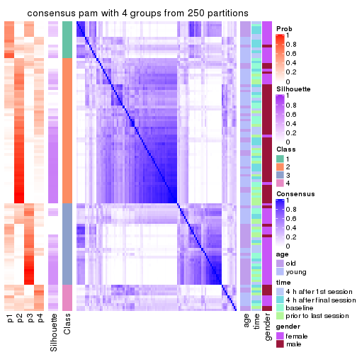
consensus_heatmap(res, k = 5)
consensus_heatmap(res, k = 6)
Heatmaps for the membership of samples in all partitions to see how consistent they are:
membership_heatmap(res, k = 2)
membership_heatmap(res, k = 3)
membership_heatmap(res, k = 4)
membership_heatmap(res, k = 5)
membership_heatmap(res, k = 6)
As soon as we have had the classes for columns, we can look for signatures which are significantly different between classes which can be candidate marks for certain classes. Following are the heatmaps for signatures.
Signature heatmaps where rows are scaled:
get_signatures(res, k = 2)
get_signatures(res, k = 3)
get_signatures(res, k = 4)
get_signatures(res, k = 5)
get_signatures(res, k = 6)
Signature heatmaps where rows are not scaled:
get_signatures(res, k = 2, scale_rows = FALSE)
get_signatures(res, k = 3, scale_rows = FALSE)
get_signatures(res, k = 4, scale_rows = FALSE)
get_signatures(res, k = 5, scale_rows = FALSE)
get_signatures(res, k = 6, scale_rows = FALSE)
Compare the overlap of signatures from different k:
compare_signatures(res)
get_signature() returns a data frame invisibly. TO get the list of signatures, the function
call should be assigned to a variable explicitly. In following code, if plot argument is set
to FALSE, no heatmap is plotted while only the differential analysis is performed.
# code only for demonstration
tb = get_signature(res, k = ..., plot = FALSE)
An example of the output of tb is:
#> which_row fdr mean_1 mean_2 scaled_mean_1 scaled_mean_2 km
#> 1 38 0.042760348 8.373488 9.131774 -0.5533452 0.5164555 1
#> 2 40 0.018707592 7.106213 8.469186 -0.6173731 0.5762149 1
#> 3 55 0.019134737 10.221463 11.207825 -0.6159697 0.5749050 1
#> 4 59 0.006059896 5.921854 7.869574 -0.6899429 0.6439467 1
#> 5 60 0.018055526 8.928898 10.211722 -0.6204761 0.5791110 1
#> 6 98 0.009384629 15.714769 14.887706 0.6635654 -0.6193277 2
...
The columns in tb are:
which_row: row indices corresponding to the input matrix.fdr: FDR for the differential test. mean_x: The mean value in group x.scaled_mean_x: The mean value in group x after rows are scaled.km: Row groups if k-means clustering is applied to rows.UMAP plot which shows how samples are separated.
dimension_reduction(res, k = 2, method = "UMAP")
dimension_reduction(res, k = 3, method = "UMAP")
dimension_reduction(res, k = 4, method = "UMAP")
dimension_reduction(res, k = 5, method = "UMAP")
dimension_reduction(res, k = 6, method = "UMAP")
Following heatmap shows how subgroups are split when increasing k:
collect_classes(res)
Test correlation between subgroups and known annotations. If the known annotation is numeric, one-way ANOVA test is applied, and if the known annotation is discrete, chi-squared contingency table test is applied.
test_to_known_factors(res)
#> n age(p) time(p) gender(p) k
#> MAD:pam 88 1.73e-06 0.706 9.81e-12 2
#> MAD:pam 67 7.82e-06 0.492 3.72e-09 3
#> MAD:pam 39 4.27e-03 0.556 3.33e-07 4
#> MAD:pam 38 2.72e-03 0.205 2.21e-06 5
#> MAD:pam 52 8.84e-04 0.178 2.49e-08 6
If matrix rows can be associated to genes, consider to use GO_Enrichment(res,
...) to perform function enrichment for the signature genes.
The object with results only for a single top-value method and a single partition method can be extracted as:
res = res_list["MAD", "mclust"]
# you can also extract it by
# res = res_list["MAD:mclust"]
A summary of res and all the functions that can be applied to it:
res
#> A 'ConsensusPartition' object with k = 2, 3, 4, 5, 6.
#> On a matrix with 51941 rows and 110 columns.
#> Top rows (1000, 2000, 3000, 4000, 5000) are extracted by 'MAD' method.
#> Subgroups are detected by 'mclust' method.
#> Performed in total 1250 partitions by row resampling.
#> Best k for subgroups seems to be 2.
#>
#> Following methods can be applied to this 'ConsensusPartition' object:
#> [1] "cola_report" "collect_classes" "collect_plots"
#> [4] "collect_stats" "colnames" "compare_signatures"
#> [7] "consensus_heatmap" "dimension_reduction" "functional_enrichment"
#> [10] "get_anno_col" "get_anno" "get_classes"
#> [13] "get_consensus" "get_matrix" "get_membership"
#> [16] "get_param" "get_signatures" "get_stats"
#> [19] "is_best_k" "is_stable_k" "membership_heatmap"
#> [22] "ncol" "nrow" "plot_ecdf"
#> [25] "rownames" "select_partition_number" "show"
#> [28] "suggest_best_k" "test_to_known_factors"
collect_plots() function collects all the plots made from res for all k (number of partitions)
into one single page to provide an easy and fast comparison between different k.
collect_plots(res)
The plots are:
k and the heatmap of
predicted classes for each k.k.k.k.All the plots in panels can be made by individual functions and they are plotted later in this section.
select_partition_number() produces several plots showing different
statistics for choosing “optimized” k. There are following statistics:
k;k, the area increased is defined as \(A_k - A_{k-1}\).The detailed explanations of these statistics can be found in the cola vignette.
Generally speaking, lower PAC score, higher mean silhouette score or higher
concordance corresponds to better partition. Rand index and Jaccard index
measure how similar the current partition is compared to partition with k-1.
If they are too similar, we won't accept k is better than k-1.
select_partition_number(res)
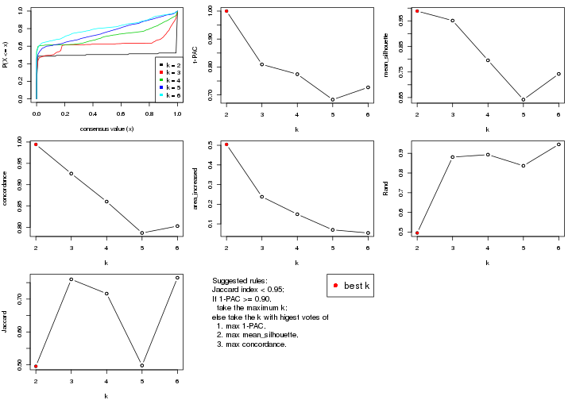
The numeric values for all these statistics can be obtained by get_stats().
get_stats(res)
#> k 1-PAC mean_silhouette concordance area_increased Rand Jaccard
#> 2 2 1.000 0.988 0.994 0.5043 0.496 0.496
#> 3 3 0.809 0.951 0.926 0.2380 0.881 0.760
#> 4 4 0.774 0.796 0.860 0.1491 0.893 0.717
#> 5 5 0.683 0.642 0.787 0.0696 0.837 0.498
#> 6 6 0.727 0.742 0.803 0.0539 0.945 0.765
suggest_best_k() suggests the best \(k\) based on these statistics. The rules are as follows:
NA.suggest_best_k(res)
#> [1] 2
Following shows the table of the partitions (You need to click the show/hide
code output link to see it). The membership matrix (columns with name p*)
is inferred by
clue::cl_consensus()
function with the SE method. Basically the value in the membership matrix
represents the probability to belong to a certain group. The finall class
label for an item is determined with the group with highest probability it
belongs to.
In get_classes() function, the entropy is calculated from the membership
matrix and the silhouette score is calculated from the consensus matrix.
cbind(get_classes(res, k = 2), get_membership(res, k = 2))
#> class entropy silhouette p1 p2
#> GSM702357 2 0.0000 0.994 0.000 1.000
#> GSM702358 2 0.0000 0.994 0.000 1.000
#> GSM702359 2 0.0000 0.994 0.000 1.000
#> GSM702360 2 0.0000 0.994 0.000 1.000
#> GSM702361 2 0.0000 0.994 0.000 1.000
#> GSM702362 2 0.0000 0.994 0.000 1.000
#> GSM702363 2 0.0000 0.994 0.000 1.000
#> GSM702364 2 0.0000 0.994 0.000 1.000
#> GSM702413 1 0.0376 0.996 0.996 0.004
#> GSM702414 1 0.0376 0.996 0.996 0.004
#> GSM702415 1 0.0376 0.996 0.996 0.004
#> GSM702416 1 0.0376 0.996 0.996 0.004
#> GSM702417 1 0.0376 0.996 0.996 0.004
#> GSM702418 1 0.0376 0.996 0.996 0.004
#> GSM702419 1 0.0376 0.996 0.996 0.004
#> GSM702365 2 0.0000 0.994 0.000 1.000
#> GSM702366 2 0.0000 0.994 0.000 1.000
#> GSM702367 2 0.0000 0.994 0.000 1.000
#> GSM702368 2 0.0000 0.994 0.000 1.000
#> GSM702369 2 0.0000 0.994 0.000 1.000
#> GSM702370 2 0.0000 0.994 0.000 1.000
#> GSM702371 2 0.0000 0.994 0.000 1.000
#> GSM702372 2 0.0000 0.994 0.000 1.000
#> GSM702420 1 0.0376 0.996 0.996 0.004
#> GSM702421 1 0.0376 0.996 0.996 0.004
#> GSM702422 1 0.0376 0.996 0.996 0.004
#> GSM702423 1 0.0376 0.996 0.996 0.004
#> GSM702424 1 0.0376 0.996 0.996 0.004
#> GSM702425 1 0.0376 0.996 0.996 0.004
#> GSM702426 1 0.0376 0.996 0.996 0.004
#> GSM702427 1 0.0376 0.996 0.996 0.004
#> GSM702373 2 0.0000 0.994 0.000 1.000
#> GSM702374 2 0.0000 0.994 0.000 1.000
#> GSM702375 2 0.0000 0.994 0.000 1.000
#> GSM702376 2 0.0000 0.994 0.000 1.000
#> GSM702377 2 0.0000 0.994 0.000 1.000
#> GSM702378 2 0.0000 0.994 0.000 1.000
#> GSM702379 2 0.0000 0.994 0.000 1.000
#> GSM702380 2 0.0000 0.994 0.000 1.000
#> GSM702428 1 0.5842 0.840 0.860 0.140
#> GSM702429 1 0.0376 0.996 0.996 0.004
#> GSM702430 1 0.0376 0.996 0.996 0.004
#> GSM702431 1 0.0376 0.996 0.996 0.004
#> GSM702432 1 0.0376 0.996 0.996 0.004
#> GSM702433 1 0.0376 0.996 0.996 0.004
#> GSM702434 1 0.0376 0.996 0.996 0.004
#> GSM702381 2 0.0000 0.994 0.000 1.000
#> GSM702382 2 0.0000 0.994 0.000 1.000
#> GSM702383 2 0.0000 0.994 0.000 1.000
#> GSM702384 2 0.0000 0.994 0.000 1.000
#> GSM702385 2 0.0000 0.994 0.000 1.000
#> GSM702386 2 0.0000 0.994 0.000 1.000
#> GSM702387 2 0.0000 0.994 0.000 1.000
#> GSM702388 2 0.0000 0.994 0.000 1.000
#> GSM702435 1 0.0376 0.996 0.996 0.004
#> GSM702436 1 0.0672 0.992 0.992 0.008
#> GSM702437 1 0.0376 0.996 0.996 0.004
#> GSM702438 1 0.0376 0.996 0.996 0.004
#> GSM702439 1 0.0376 0.996 0.996 0.004
#> GSM702440 1 0.0376 0.996 0.996 0.004
#> GSM702441 1 0.0376 0.996 0.996 0.004
#> GSM702442 1 0.0376 0.996 0.996 0.004
#> GSM702389 2 0.0000 0.994 0.000 1.000
#> GSM702390 2 0.0000 0.994 0.000 1.000
#> GSM702391 2 0.0000 0.994 0.000 1.000
#> GSM702392 2 0.0000 0.994 0.000 1.000
#> GSM702393 2 0.0000 0.994 0.000 1.000
#> GSM702394 2 0.0000 0.994 0.000 1.000
#> GSM702443 1 0.0000 0.995 1.000 0.000
#> GSM702444 1 0.0000 0.995 1.000 0.000
#> GSM702445 1 0.0000 0.995 1.000 0.000
#> GSM702446 1 0.0000 0.995 1.000 0.000
#> GSM702447 1 0.0000 0.995 1.000 0.000
#> GSM702448 1 0.0000 0.995 1.000 0.000
#> GSM702395 2 0.0000 0.994 0.000 1.000
#> GSM702396 2 0.0000 0.994 0.000 1.000
#> GSM702397 2 0.0000 0.994 0.000 1.000
#> GSM702398 2 0.0000 0.994 0.000 1.000
#> GSM702399 2 0.0000 0.994 0.000 1.000
#> GSM702400 2 0.0000 0.994 0.000 1.000
#> GSM702449 1 0.0376 0.996 0.996 0.004
#> GSM702450 1 0.0000 0.995 1.000 0.000
#> GSM702451 1 0.0376 0.996 0.996 0.004
#> GSM702452 1 0.0000 0.995 1.000 0.000
#> GSM702453 1 0.0376 0.996 0.996 0.004
#> GSM702454 1 0.0376 0.996 0.996 0.004
#> GSM702401 2 0.0000 0.994 0.000 1.000
#> GSM702402 2 0.0000 0.994 0.000 1.000
#> GSM702403 2 0.0000 0.994 0.000 1.000
#> GSM702404 2 0.0000 0.994 0.000 1.000
#> GSM702405 2 0.0000 0.994 0.000 1.000
#> GSM702406 2 0.0000 0.994 0.000 1.000
#> GSM702455 1 0.0000 0.995 1.000 0.000
#> GSM702456 1 0.0000 0.995 1.000 0.000
#> GSM702457 1 0.0000 0.995 1.000 0.000
#> GSM702458 1 0.0000 0.995 1.000 0.000
#> GSM702459 1 0.0000 0.995 1.000 0.000
#> GSM702460 1 0.0000 0.995 1.000 0.000
#> GSM702407 2 0.0000 0.994 0.000 1.000
#> GSM702408 2 0.0000 0.994 0.000 1.000
#> GSM702409 2 0.9286 0.473 0.344 0.656
#> GSM702410 2 0.0000 0.994 0.000 1.000
#> GSM702411 2 0.0000 0.994 0.000 1.000
#> GSM702412 2 0.0000 0.994 0.000 1.000
#> GSM702461 1 0.0000 0.995 1.000 0.000
#> GSM702462 1 0.0000 0.995 1.000 0.000
#> GSM702463 1 0.0000 0.995 1.000 0.000
#> GSM702464 1 0.0000 0.995 1.000 0.000
#> GSM702465 1 0.0000 0.995 1.000 0.000
#> GSM702466 1 0.0000 0.995 1.000 0.000
cbind(get_classes(res, k = 3), get_membership(res, k = 3))
#> class entropy silhouette p1 p2 p3
#> GSM702357 2 0.1585 0.951 0.008 0.964 0.028
#> GSM702358 2 0.1163 0.949 0.000 0.972 0.028
#> GSM702359 2 0.2866 0.942 0.008 0.916 0.076
#> GSM702360 2 0.1411 0.953 0.000 0.964 0.036
#> GSM702361 2 0.3043 0.940 0.008 0.908 0.084
#> GSM702362 2 0.1585 0.951 0.008 0.964 0.028
#> GSM702363 2 0.1163 0.949 0.000 0.972 0.028
#> GSM702364 2 0.4033 0.913 0.008 0.856 0.136
#> GSM702413 1 0.0424 0.976 0.992 0.000 0.008
#> GSM702414 1 0.1753 0.942 0.952 0.000 0.048
#> GSM702415 1 0.0237 0.978 0.996 0.000 0.004
#> GSM702416 1 0.0237 0.978 0.996 0.000 0.004
#> GSM702417 1 0.0237 0.978 0.996 0.000 0.004
#> GSM702418 1 0.1753 0.942 0.952 0.000 0.048
#> GSM702419 1 0.0237 0.978 0.996 0.000 0.004
#> GSM702365 2 0.1399 0.950 0.004 0.968 0.028
#> GSM702366 2 0.1289 0.949 0.000 0.968 0.032
#> GSM702367 2 0.3183 0.941 0.016 0.908 0.076
#> GSM702368 2 0.1620 0.953 0.012 0.964 0.024
#> GSM702369 2 0.3234 0.944 0.020 0.908 0.072
#> GSM702370 2 0.3995 0.923 0.016 0.868 0.116
#> GSM702371 2 0.2902 0.946 0.016 0.920 0.064
#> GSM702372 2 0.4411 0.908 0.016 0.844 0.140
#> GSM702420 1 0.0424 0.972 0.992 0.000 0.008
#> GSM702421 1 0.0237 0.978 0.996 0.000 0.004
#> GSM702422 1 0.1753 0.942 0.952 0.000 0.048
#> GSM702423 1 0.0237 0.978 0.996 0.000 0.004
#> GSM702424 1 0.0237 0.978 0.996 0.000 0.004
#> GSM702425 1 0.0237 0.978 0.996 0.000 0.004
#> GSM702426 1 0.0237 0.978 0.996 0.000 0.004
#> GSM702427 1 0.0237 0.978 0.996 0.000 0.004
#> GSM702373 2 0.2680 0.940 0.008 0.924 0.068
#> GSM702374 2 0.1163 0.949 0.000 0.972 0.028
#> GSM702375 2 0.1585 0.951 0.008 0.964 0.028
#> GSM702376 2 0.1585 0.951 0.008 0.964 0.028
#> GSM702377 2 0.4033 0.913 0.008 0.856 0.136
#> GSM702378 2 0.1585 0.951 0.008 0.964 0.028
#> GSM702379 2 0.1315 0.953 0.008 0.972 0.020
#> GSM702380 2 0.2486 0.953 0.008 0.932 0.060
#> GSM702428 1 0.2703 0.902 0.928 0.056 0.016
#> GSM702429 1 0.1753 0.942 0.952 0.000 0.048
#> GSM702430 1 0.0237 0.978 0.996 0.000 0.004
#> GSM702431 1 0.0237 0.978 0.996 0.000 0.004
#> GSM702432 1 0.0237 0.978 0.996 0.000 0.004
#> GSM702433 1 0.0424 0.972 0.992 0.000 0.008
#> GSM702434 1 0.1643 0.945 0.956 0.000 0.044
#> GSM702381 2 0.1711 0.952 0.008 0.960 0.032
#> GSM702382 2 0.1289 0.949 0.000 0.968 0.032
#> GSM702383 2 0.1289 0.949 0.000 0.968 0.032
#> GSM702384 2 0.0747 0.952 0.000 0.984 0.016
#> GSM702385 2 0.2774 0.944 0.008 0.920 0.072
#> GSM702386 2 0.1031 0.953 0.000 0.976 0.024
#> GSM702387 2 0.1289 0.949 0.000 0.968 0.032
#> GSM702388 2 0.1289 0.953 0.000 0.968 0.032
#> GSM702435 1 0.0237 0.978 0.996 0.000 0.004
#> GSM702436 1 0.0237 0.978 0.996 0.000 0.004
#> GSM702437 1 0.0237 0.978 0.996 0.000 0.004
#> GSM702438 1 0.0237 0.978 0.996 0.000 0.004
#> GSM702439 1 0.0237 0.978 0.996 0.000 0.004
#> GSM702440 1 0.0237 0.975 0.996 0.000 0.004
#> GSM702441 1 0.0000 0.976 1.000 0.000 0.000
#> GSM702442 1 0.0237 0.978 0.996 0.000 0.004
#> GSM702389 2 0.1163 0.949 0.000 0.972 0.028
#> GSM702390 2 0.1529 0.952 0.000 0.960 0.040
#> GSM702391 2 0.0592 0.952 0.000 0.988 0.012
#> GSM702392 2 0.4033 0.913 0.008 0.856 0.136
#> GSM702393 2 0.1585 0.953 0.008 0.964 0.028
#> GSM702394 2 0.0592 0.952 0.000 0.988 0.012
#> GSM702443 3 0.3551 0.958 0.132 0.000 0.868
#> GSM702444 3 0.4178 0.986 0.172 0.000 0.828
#> GSM702445 3 0.4178 0.986 0.172 0.000 0.828
#> GSM702446 3 0.3482 0.954 0.128 0.000 0.872
#> GSM702447 3 0.4178 0.986 0.172 0.000 0.828
#> GSM702448 3 0.4178 0.986 0.172 0.000 0.828
#> GSM702395 2 0.1753 0.951 0.000 0.952 0.048
#> GSM702396 2 0.2496 0.948 0.004 0.928 0.068
#> GSM702397 2 0.2486 0.948 0.008 0.932 0.060
#> GSM702398 2 0.2280 0.949 0.008 0.940 0.052
#> GSM702399 2 0.4033 0.916 0.008 0.856 0.136
#> GSM702400 2 0.2261 0.948 0.000 0.932 0.068
#> GSM702449 1 0.4121 0.748 0.832 0.000 0.168
#> GSM702450 3 0.4178 0.986 0.172 0.000 0.828
#> GSM702451 3 0.4121 0.963 0.168 0.000 0.832
#> GSM702452 3 0.4178 0.986 0.172 0.000 0.828
#> GSM702453 3 0.4399 0.971 0.188 0.000 0.812
#> GSM702454 3 0.4235 0.983 0.176 0.000 0.824
#> GSM702401 2 0.1163 0.949 0.000 0.972 0.028
#> GSM702402 2 0.1163 0.949 0.000 0.972 0.028
#> GSM702403 2 0.2173 0.950 0.008 0.944 0.048
#> GSM702404 2 0.4033 0.913 0.008 0.856 0.136
#> GSM702405 2 0.4033 0.913 0.008 0.856 0.136
#> GSM702406 2 0.3043 0.940 0.008 0.908 0.084
#> GSM702455 3 0.3816 0.972 0.148 0.000 0.852
#> GSM702456 3 0.4351 0.983 0.168 0.004 0.828
#> GSM702457 3 0.4178 0.986 0.172 0.000 0.828
#> GSM702458 3 0.3482 0.954 0.128 0.000 0.872
#> GSM702459 3 0.4178 0.986 0.172 0.000 0.828
#> GSM702460 3 0.4178 0.986 0.172 0.000 0.828
#> GSM702407 2 0.1585 0.951 0.008 0.964 0.028
#> GSM702408 2 0.1289 0.949 0.000 0.968 0.032
#> GSM702409 2 0.7945 0.371 0.388 0.548 0.064
#> GSM702410 2 0.2261 0.948 0.000 0.932 0.068
#> GSM702411 2 0.2584 0.947 0.008 0.928 0.064
#> GSM702412 2 0.1832 0.952 0.008 0.956 0.036
#> GSM702461 3 0.4178 0.986 0.172 0.000 0.828
#> GSM702462 3 0.4178 0.986 0.172 0.000 0.828
#> GSM702463 3 0.4178 0.986 0.172 0.000 0.828
#> GSM702464 3 0.3752 0.969 0.144 0.000 0.856
#> GSM702465 3 0.4178 0.986 0.172 0.000 0.828
#> GSM702466 3 0.4178 0.986 0.172 0.000 0.828
cbind(get_classes(res, k = 4), get_membership(res, k = 4))
#> class entropy silhouette p1 p2 p3 p4
#> GSM702357 2 0.1022 0.784 0.000 0.968 0.000 0.032
#> GSM702358 2 0.0336 0.794 0.000 0.992 0.000 0.008
#> GSM702359 2 0.2921 0.737 0.000 0.860 0.000 0.140
#> GSM702360 2 0.4855 -0.506 0.000 0.600 0.000 0.400
#> GSM702361 2 0.3024 0.732 0.000 0.852 0.000 0.148
#> GSM702362 2 0.1389 0.792 0.000 0.952 0.000 0.048
#> GSM702363 2 0.0469 0.793 0.000 0.988 0.000 0.012
#> GSM702364 2 0.4382 0.538 0.000 0.704 0.000 0.296
#> GSM702413 1 0.3219 0.905 0.836 0.000 0.000 0.164
#> GSM702414 1 0.3726 0.886 0.788 0.000 0.000 0.212
#> GSM702415 1 0.2408 0.919 0.896 0.000 0.000 0.104
#> GSM702416 1 0.1211 0.925 0.960 0.000 0.000 0.040
#> GSM702417 1 0.1022 0.925 0.968 0.000 0.000 0.032
#> GSM702418 1 0.3726 0.886 0.788 0.000 0.000 0.212
#> GSM702419 1 0.1302 0.925 0.956 0.000 0.000 0.044
#> GSM702365 2 0.0707 0.789 0.000 0.980 0.000 0.020
#> GSM702366 2 0.1211 0.790 0.000 0.960 0.000 0.040
#> GSM702367 2 0.3123 0.735 0.000 0.844 0.000 0.156
#> GSM702368 2 0.2345 0.772 0.000 0.900 0.000 0.100
#> GSM702369 2 0.2944 0.751 0.004 0.868 0.000 0.128
#> GSM702370 2 0.3726 0.680 0.000 0.788 0.000 0.212
#> GSM702371 2 0.2589 0.763 0.000 0.884 0.000 0.116
#> GSM702372 2 0.3908 0.674 0.004 0.784 0.000 0.212
#> GSM702420 1 0.2704 0.909 0.876 0.000 0.000 0.124
#> GSM702421 1 0.0707 0.922 0.980 0.000 0.000 0.020
#> GSM702422 1 0.3074 0.900 0.848 0.000 0.000 0.152
#> GSM702423 1 0.0817 0.923 0.976 0.000 0.000 0.024
#> GSM702424 1 0.0817 0.921 0.976 0.000 0.000 0.024
#> GSM702425 1 0.0707 0.923 0.980 0.000 0.000 0.020
#> GSM702426 1 0.0817 0.921 0.976 0.000 0.000 0.024
#> GSM702427 1 0.0817 0.921 0.976 0.000 0.000 0.024
#> GSM702373 2 0.2149 0.768 0.000 0.912 0.000 0.088
#> GSM702374 2 0.0592 0.797 0.000 0.984 0.000 0.016
#> GSM702375 2 0.1389 0.790 0.000 0.952 0.000 0.048
#> GSM702376 2 0.1022 0.794 0.000 0.968 0.000 0.032
#> GSM702377 2 0.3688 0.666 0.000 0.792 0.000 0.208
#> GSM702378 2 0.0336 0.796 0.000 0.992 0.000 0.008
#> GSM702379 2 0.0592 0.795 0.000 0.984 0.000 0.016
#> GSM702380 2 0.1118 0.793 0.000 0.964 0.000 0.036
#> GSM702428 1 0.5179 0.833 0.728 0.052 0.000 0.220
#> GSM702429 1 0.3726 0.886 0.788 0.000 0.000 0.212
#> GSM702430 1 0.1302 0.925 0.956 0.000 0.000 0.044
#> GSM702431 1 0.2408 0.919 0.896 0.000 0.000 0.104
#> GSM702432 1 0.2271 0.922 0.916 0.000 0.008 0.076
#> GSM702433 1 0.3610 0.891 0.800 0.000 0.000 0.200
#> GSM702434 1 0.3688 0.887 0.792 0.000 0.000 0.208
#> GSM702381 2 0.1302 0.792 0.000 0.956 0.000 0.044
#> GSM702382 2 0.1118 0.792 0.000 0.964 0.000 0.036
#> GSM702383 2 0.0817 0.794 0.000 0.976 0.000 0.024
#> GSM702384 2 0.1867 0.746 0.000 0.928 0.000 0.072
#> GSM702385 2 0.2530 0.758 0.000 0.888 0.000 0.112
#> GSM702386 2 0.1118 0.792 0.000 0.964 0.000 0.036
#> GSM702387 2 0.1302 0.789 0.000 0.956 0.000 0.044
#> GSM702388 2 0.1302 0.795 0.000 0.956 0.000 0.044
#> GSM702435 1 0.0336 0.925 0.992 0.000 0.000 0.008
#> GSM702436 1 0.0336 0.925 0.992 0.000 0.000 0.008
#> GSM702437 1 0.0817 0.921 0.976 0.000 0.000 0.024
#> GSM702438 1 0.0817 0.921 0.976 0.000 0.000 0.024
#> GSM702439 1 0.0592 0.923 0.984 0.000 0.000 0.016
#> GSM702440 1 0.2530 0.916 0.888 0.000 0.000 0.112
#> GSM702441 1 0.2469 0.919 0.892 0.000 0.000 0.108
#> GSM702442 1 0.0707 0.922 0.980 0.000 0.000 0.020
#> GSM702389 4 0.4989 0.833 0.000 0.472 0.000 0.528
#> GSM702390 2 0.4898 -0.585 0.000 0.584 0.000 0.416
#> GSM702391 2 0.4981 -0.715 0.000 0.536 0.000 0.464
#> GSM702392 4 0.4661 0.775 0.000 0.348 0.000 0.652
#> GSM702393 4 0.4981 0.835 0.000 0.464 0.000 0.536
#> GSM702394 4 0.4981 0.837 0.000 0.464 0.000 0.536
#> GSM702443 3 0.0000 0.998 0.000 0.000 1.000 0.000
#> GSM702444 3 0.0000 0.998 0.000 0.000 1.000 0.000
#> GSM702445 3 0.0000 0.998 0.000 0.000 1.000 0.000
#> GSM702446 3 0.0000 0.998 0.000 0.000 1.000 0.000
#> GSM702447 3 0.0000 0.998 0.000 0.000 1.000 0.000
#> GSM702448 3 0.0188 0.996 0.004 0.000 0.996 0.000
#> GSM702395 4 0.4967 0.821 0.000 0.452 0.000 0.548
#> GSM702396 2 0.3801 0.466 0.000 0.780 0.000 0.220
#> GSM702397 2 0.1716 0.791 0.000 0.936 0.000 0.064
#> GSM702398 2 0.4008 0.470 0.000 0.756 0.000 0.244
#> GSM702399 4 0.4543 0.780 0.000 0.324 0.000 0.676
#> GSM702400 4 0.4925 0.836 0.000 0.428 0.000 0.572
#> GSM702449 1 0.5088 0.296 0.572 0.000 0.424 0.004
#> GSM702450 3 0.0188 0.996 0.004 0.000 0.996 0.000
#> GSM702451 3 0.0657 0.985 0.012 0.000 0.984 0.004
#> GSM702452 3 0.0000 0.998 0.000 0.000 1.000 0.000
#> GSM702453 3 0.0336 0.993 0.008 0.000 0.992 0.000
#> GSM702454 3 0.0188 0.996 0.004 0.000 0.996 0.000
#> GSM702401 4 0.4989 0.833 0.000 0.472 0.000 0.528
#> GSM702402 4 0.4992 0.828 0.000 0.476 0.000 0.524
#> GSM702403 2 0.3688 0.513 0.000 0.792 0.000 0.208
#> GSM702404 4 0.4888 0.747 0.000 0.412 0.000 0.588
#> GSM702405 4 0.4955 0.776 0.000 0.344 0.008 0.648
#> GSM702406 4 0.4804 0.809 0.000 0.384 0.000 0.616
#> GSM702455 3 0.0000 0.998 0.000 0.000 1.000 0.000
#> GSM702456 3 0.0000 0.998 0.000 0.000 1.000 0.000
#> GSM702457 3 0.0000 0.998 0.000 0.000 1.000 0.000
#> GSM702458 3 0.0000 0.998 0.000 0.000 1.000 0.000
#> GSM702459 3 0.0188 0.996 0.004 0.000 0.996 0.000
#> GSM702460 3 0.0000 0.998 0.000 0.000 1.000 0.000
#> GSM702407 2 0.4761 -0.306 0.000 0.628 0.000 0.372
#> GSM702408 2 0.2149 0.752 0.000 0.912 0.000 0.088
#> GSM702409 4 0.7733 0.356 0.352 0.200 0.004 0.444
#> GSM702410 4 0.4933 0.835 0.000 0.432 0.000 0.568
#> GSM702411 4 0.4916 0.836 0.000 0.424 0.000 0.576
#> GSM702412 4 0.4998 0.755 0.000 0.488 0.000 0.512
#> GSM702461 3 0.0000 0.998 0.000 0.000 1.000 0.000
#> GSM702462 3 0.0188 0.996 0.004 0.000 0.996 0.000
#> GSM702463 3 0.0000 0.998 0.000 0.000 1.000 0.000
#> GSM702464 3 0.0000 0.998 0.000 0.000 1.000 0.000
#> GSM702465 3 0.0188 0.996 0.004 0.000 0.996 0.000
#> GSM702466 3 0.0000 0.998 0.000 0.000 1.000 0.000
cbind(get_classes(res, k = 5), get_membership(res, k = 5))
#> class entropy silhouette p1 p2 p3 p4 p5
#> GSM702357 2 0.4201 0.359 0.000 0.592 0.000 0.000 0.408
#> GSM702358 2 0.4242 0.361 0.000 0.572 0.000 0.000 0.428
#> GSM702359 5 0.3930 0.731 0.000 0.152 0.000 0.056 0.792
#> GSM702360 2 0.2813 0.557 0.000 0.832 0.000 0.000 0.168
#> GSM702361 5 0.3723 0.730 0.000 0.152 0.000 0.044 0.804
#> GSM702362 5 0.3388 0.733 0.000 0.200 0.000 0.008 0.792
#> GSM702363 2 0.4227 0.357 0.000 0.580 0.000 0.000 0.420
#> GSM702364 5 0.4394 0.667 0.000 0.136 0.000 0.100 0.764
#> GSM702413 4 0.4866 0.700 0.344 0.000 0.000 0.620 0.036
#> GSM702414 4 0.3944 0.830 0.200 0.000 0.000 0.768 0.032
#> GSM702415 1 0.4211 0.293 0.636 0.000 0.000 0.360 0.004
#> GSM702416 1 0.2732 0.755 0.840 0.000 0.000 0.160 0.000
#> GSM702417 1 0.2280 0.780 0.880 0.000 0.000 0.120 0.000
#> GSM702418 4 0.3876 0.830 0.192 0.000 0.000 0.776 0.032
#> GSM702419 1 0.3516 0.730 0.812 0.000 0.004 0.164 0.020
#> GSM702365 2 0.4192 0.375 0.000 0.596 0.000 0.000 0.404
#> GSM702366 2 0.4101 0.397 0.000 0.628 0.000 0.000 0.372
#> GSM702367 5 0.5169 0.625 0.008 0.304 0.000 0.048 0.640
#> GSM702368 2 0.4745 0.320 0.012 0.560 0.000 0.004 0.424
#> GSM702369 2 0.5571 0.292 0.036 0.572 0.000 0.024 0.368
#> GSM702370 5 0.4914 0.684 0.000 0.204 0.000 0.092 0.704
#> GSM702371 5 0.4297 0.628 0.000 0.236 0.000 0.036 0.728
#> GSM702372 5 0.4971 0.634 0.000 0.176 0.000 0.116 0.708
#> GSM702420 4 0.5096 0.667 0.444 0.000 0.000 0.520 0.036
#> GSM702421 1 0.0510 0.840 0.984 0.000 0.000 0.016 0.000
#> GSM702422 4 0.4898 0.728 0.376 0.000 0.000 0.592 0.032
#> GSM702423 1 0.1106 0.819 0.964 0.000 0.000 0.012 0.024
#> GSM702424 1 0.0000 0.843 1.000 0.000 0.000 0.000 0.000
#> GSM702425 1 0.0609 0.841 0.980 0.000 0.000 0.020 0.000
#> GSM702426 1 0.0000 0.843 1.000 0.000 0.000 0.000 0.000
#> GSM702427 1 0.0290 0.841 0.992 0.000 0.000 0.008 0.000
#> GSM702373 5 0.4284 0.709 0.000 0.224 0.000 0.040 0.736
#> GSM702374 2 0.4268 0.315 0.000 0.556 0.000 0.000 0.444
#> GSM702375 5 0.3318 0.737 0.000 0.180 0.000 0.012 0.808
#> GSM702376 5 0.3336 0.716 0.000 0.228 0.000 0.000 0.772
#> GSM702377 5 0.4069 0.663 0.000 0.112 0.000 0.096 0.792
#> GSM702378 5 0.4126 0.369 0.000 0.380 0.000 0.000 0.620
#> GSM702379 5 0.4030 0.480 0.000 0.352 0.000 0.000 0.648
#> GSM702380 5 0.3398 0.729 0.000 0.216 0.000 0.004 0.780
#> GSM702428 4 0.4905 0.788 0.176 0.008 0.000 0.728 0.088
#> GSM702429 4 0.3910 0.831 0.196 0.000 0.000 0.772 0.032
#> GSM702430 1 0.2732 0.749 0.840 0.000 0.000 0.160 0.000
#> GSM702431 1 0.4655 0.361 0.644 0.000 0.000 0.328 0.028
#> GSM702432 1 0.3742 0.693 0.788 0.000 0.004 0.188 0.020
#> GSM702433 4 0.4150 0.829 0.216 0.000 0.000 0.748 0.036
#> GSM702434 4 0.3910 0.832 0.196 0.000 0.000 0.772 0.032
#> GSM702381 5 0.4201 0.418 0.000 0.408 0.000 0.000 0.592
#> GSM702382 2 0.4161 0.393 0.000 0.608 0.000 0.000 0.392
#> GSM702383 2 0.4219 0.374 0.000 0.584 0.000 0.000 0.416
#> GSM702384 2 0.4219 0.359 0.000 0.584 0.000 0.000 0.416
#> GSM702385 5 0.3639 0.740 0.000 0.184 0.000 0.024 0.792
#> GSM702386 2 0.4310 0.387 0.000 0.604 0.000 0.004 0.392
#> GSM702387 2 0.4015 0.411 0.000 0.652 0.000 0.000 0.348
#> GSM702388 2 0.4464 0.364 0.000 0.584 0.000 0.008 0.408
#> GSM702435 1 0.0404 0.842 0.988 0.000 0.000 0.012 0.000
#> GSM702436 1 0.0404 0.842 0.988 0.000 0.000 0.012 0.000
#> GSM702437 1 0.0404 0.839 0.988 0.000 0.000 0.012 0.000
#> GSM702438 1 0.0162 0.842 0.996 0.000 0.000 0.004 0.000
#> GSM702439 1 0.0000 0.843 1.000 0.000 0.000 0.000 0.000
#> GSM702440 4 0.5071 0.701 0.424 0.000 0.000 0.540 0.036
#> GSM702441 4 0.5112 0.549 0.468 0.000 0.000 0.496 0.036
#> GSM702442 1 0.0000 0.843 1.000 0.000 0.000 0.000 0.000
#> GSM702389 2 0.1792 0.566 0.000 0.916 0.000 0.000 0.084
#> GSM702390 2 0.1965 0.570 0.000 0.904 0.000 0.000 0.096
#> GSM702391 2 0.2127 0.571 0.000 0.892 0.000 0.000 0.108
#> GSM702392 5 0.5803 0.228 0.000 0.420 0.000 0.092 0.488
#> GSM702393 2 0.2280 0.541 0.000 0.880 0.000 0.000 0.120
#> GSM702394 2 0.1671 0.562 0.000 0.924 0.000 0.000 0.076
#> GSM702443 3 0.4163 0.810 0.000 0.000 0.740 0.228 0.032
#> GSM702444 3 0.0162 0.923 0.000 0.000 0.996 0.004 0.000
#> GSM702445 3 0.0609 0.921 0.000 0.000 0.980 0.020 0.000
#> GSM702446 3 0.4163 0.810 0.000 0.000 0.740 0.228 0.032
#> GSM702447 3 0.2130 0.902 0.000 0.000 0.908 0.080 0.012
#> GSM702448 3 0.0404 0.924 0.000 0.000 0.988 0.012 0.000
#> GSM702395 2 0.0510 0.571 0.000 0.984 0.000 0.000 0.016
#> GSM702396 2 0.2230 0.571 0.000 0.884 0.000 0.000 0.116
#> GSM702397 5 0.3983 0.638 0.000 0.340 0.000 0.000 0.660
#> GSM702398 2 0.3715 0.476 0.000 0.736 0.000 0.004 0.260
#> GSM702399 2 0.5616 -0.138 0.000 0.552 0.000 0.084 0.364
#> GSM702400 2 0.0162 0.566 0.000 0.996 0.000 0.004 0.000
#> GSM702449 1 0.5379 0.333 0.640 0.000 0.296 0.036 0.028
#> GSM702450 3 0.0579 0.922 0.008 0.000 0.984 0.008 0.000
#> GSM702451 3 0.4843 0.794 0.020 0.000 0.736 0.188 0.056
#> GSM702452 3 0.0579 0.924 0.008 0.000 0.984 0.008 0.000
#> GSM702453 3 0.2304 0.878 0.068 0.000 0.908 0.004 0.020
#> GSM702454 3 0.0671 0.920 0.016 0.000 0.980 0.004 0.000
#> GSM702401 2 0.1732 0.568 0.000 0.920 0.000 0.000 0.080
#> GSM702402 2 0.1792 0.566 0.000 0.916 0.000 0.000 0.084
#> GSM702403 5 0.3816 0.667 0.000 0.304 0.000 0.000 0.696
#> GSM702404 5 0.5505 0.433 0.000 0.328 0.000 0.084 0.588
#> GSM702405 2 0.5814 -0.189 0.000 0.472 0.000 0.092 0.436
#> GSM702406 2 0.5178 -0.219 0.000 0.484 0.000 0.040 0.476
#> GSM702455 3 0.4104 0.815 0.000 0.000 0.748 0.220 0.032
#> GSM702456 3 0.0290 0.923 0.000 0.000 0.992 0.008 0.000
#> GSM702457 3 0.2136 0.900 0.000 0.000 0.904 0.088 0.008
#> GSM702458 3 0.4134 0.812 0.000 0.000 0.744 0.224 0.032
#> GSM702459 3 0.0290 0.924 0.000 0.000 0.992 0.008 0.000
#> GSM702460 3 0.0162 0.923 0.000 0.000 0.996 0.004 0.000
#> GSM702407 2 0.1851 0.579 0.000 0.912 0.000 0.000 0.088
#> GSM702408 2 0.3857 0.449 0.000 0.688 0.000 0.000 0.312
#> GSM702409 2 0.4773 0.211 0.312 0.656 0.000 0.008 0.024
#> GSM702410 2 0.0290 0.566 0.000 0.992 0.000 0.000 0.008
#> GSM702411 2 0.1285 0.544 0.000 0.956 0.004 0.004 0.036
#> GSM702412 2 0.1410 0.569 0.000 0.940 0.000 0.000 0.060
#> GSM702461 3 0.0579 0.922 0.008 0.000 0.984 0.008 0.000
#> GSM702462 3 0.0579 0.922 0.008 0.000 0.984 0.008 0.000
#> GSM702463 3 0.0693 0.924 0.008 0.000 0.980 0.012 0.000
#> GSM702464 3 0.3944 0.826 0.000 0.000 0.768 0.200 0.032
#> GSM702465 3 0.0579 0.922 0.008 0.000 0.984 0.008 0.000
#> GSM702466 3 0.0579 0.924 0.008 0.000 0.984 0.008 0.000
cbind(get_classes(res, k = 6), get_membership(res, k = 6))
#> class entropy silhouette p1 p2 p3 p4 p5 p6
#> GSM702357 2 0.3126 0.659 0.000 0.752 0.000 0.000 0.000 0.248
#> GSM702358 2 0.3136 0.674 0.000 0.768 0.000 0.000 0.004 0.228
#> GSM702359 6 0.1644 0.785 0.000 0.028 0.000 0.040 0.000 0.932
#> GSM702360 2 0.4643 0.702 0.000 0.688 0.000 0.000 0.128 0.184
#> GSM702361 6 0.1485 0.786 0.000 0.024 0.000 0.028 0.004 0.944
#> GSM702362 6 0.2218 0.787 0.000 0.104 0.000 0.012 0.000 0.884
#> GSM702363 2 0.3405 0.640 0.000 0.724 0.000 0.000 0.004 0.272
#> GSM702364 6 0.1777 0.775 0.000 0.012 0.000 0.024 0.032 0.932
#> GSM702413 4 0.2178 0.829 0.132 0.000 0.000 0.868 0.000 0.000
#> GSM702414 4 0.0458 0.898 0.016 0.000 0.000 0.984 0.000 0.000
#> GSM702415 1 0.3684 0.558 0.628 0.000 0.000 0.372 0.000 0.000
#> GSM702416 1 0.2491 0.821 0.836 0.000 0.000 0.164 0.000 0.000
#> GSM702417 1 0.2378 0.832 0.848 0.000 0.000 0.152 0.000 0.000
#> GSM702418 4 0.0458 0.898 0.016 0.000 0.000 0.984 0.000 0.000
#> GSM702419 1 0.2706 0.821 0.832 0.008 0.000 0.160 0.000 0.000
#> GSM702365 2 0.3076 0.666 0.000 0.760 0.000 0.000 0.000 0.240
#> GSM702366 2 0.1584 0.719 0.000 0.928 0.000 0.000 0.008 0.064
#> GSM702367 6 0.4436 0.568 0.004 0.324 0.000 0.036 0.000 0.636
#> GSM702368 2 0.1913 0.714 0.012 0.908 0.000 0.000 0.000 0.080
#> GSM702369 2 0.3232 0.689 0.024 0.820 0.000 0.004 0.004 0.148
#> GSM702370 6 0.3492 0.710 0.000 0.160 0.000 0.040 0.004 0.796
#> GSM702371 6 0.4594 0.551 0.000 0.404 0.000 0.032 0.004 0.560
#> GSM702372 6 0.3932 0.691 0.000 0.184 0.000 0.048 0.008 0.760
#> GSM702420 4 0.3101 0.769 0.244 0.000 0.000 0.756 0.000 0.000
#> GSM702421 1 0.0405 0.885 0.988 0.000 0.008 0.000 0.004 0.000
#> GSM702422 4 0.2762 0.814 0.196 0.000 0.000 0.804 0.000 0.000
#> GSM702423 1 0.1387 0.854 0.932 0.000 0.000 0.068 0.000 0.000
#> GSM702424 1 0.0146 0.889 0.996 0.000 0.000 0.004 0.000 0.000
#> GSM702425 1 0.0260 0.890 0.992 0.000 0.000 0.008 0.000 0.000
#> GSM702426 1 0.0260 0.889 0.992 0.000 0.000 0.008 0.000 0.000
#> GSM702427 1 0.0000 0.888 1.000 0.000 0.000 0.000 0.000 0.000
#> GSM702373 6 0.2573 0.778 0.000 0.132 0.000 0.004 0.008 0.856
#> GSM702374 2 0.3288 0.643 0.000 0.724 0.000 0.000 0.000 0.276
#> GSM702375 6 0.1644 0.791 0.000 0.076 0.000 0.004 0.000 0.920
#> GSM702376 6 0.2491 0.766 0.000 0.164 0.000 0.000 0.000 0.836
#> GSM702377 6 0.1296 0.772 0.000 0.004 0.000 0.012 0.032 0.952
#> GSM702378 6 0.3409 0.612 0.000 0.300 0.000 0.000 0.000 0.700
#> GSM702379 6 0.3547 0.569 0.000 0.332 0.000 0.000 0.000 0.668
#> GSM702380 6 0.2454 0.768 0.000 0.160 0.000 0.000 0.000 0.840
#> GSM702428 4 0.1334 0.883 0.020 0.000 0.000 0.948 0.000 0.032
#> GSM702429 4 0.0458 0.898 0.016 0.000 0.000 0.984 0.000 0.000
#> GSM702430 1 0.2527 0.822 0.832 0.000 0.000 0.168 0.000 0.000
#> GSM702431 1 0.3647 0.584 0.640 0.000 0.000 0.360 0.000 0.000
#> GSM702432 1 0.2902 0.794 0.800 0.004 0.000 0.196 0.000 0.000
#> GSM702433 4 0.0458 0.898 0.016 0.000 0.000 0.984 0.000 0.000
#> GSM702434 4 0.0458 0.898 0.016 0.000 0.000 0.984 0.000 0.000
#> GSM702381 2 0.3868 -0.425 0.000 0.508 0.000 0.000 0.000 0.492
#> GSM702382 2 0.1584 0.719 0.000 0.928 0.000 0.000 0.008 0.064
#> GSM702383 2 0.1584 0.719 0.000 0.928 0.000 0.000 0.008 0.064
#> GSM702384 2 0.3189 0.671 0.000 0.760 0.000 0.000 0.004 0.236
#> GSM702385 6 0.1700 0.791 0.000 0.048 0.000 0.024 0.000 0.928
#> GSM702386 2 0.1471 0.720 0.000 0.932 0.000 0.000 0.004 0.064
#> GSM702387 2 0.1531 0.718 0.000 0.928 0.000 0.000 0.004 0.068
#> GSM702388 2 0.1471 0.720 0.000 0.932 0.000 0.000 0.004 0.064
#> GSM702435 1 0.0363 0.889 0.988 0.000 0.000 0.012 0.000 0.000
#> GSM702436 1 0.0146 0.889 0.996 0.000 0.000 0.004 0.000 0.000
#> GSM702437 1 0.0547 0.885 0.980 0.000 0.000 0.020 0.000 0.000
#> GSM702438 1 0.0146 0.889 0.996 0.000 0.000 0.004 0.000 0.000
#> GSM702439 1 0.0146 0.889 0.996 0.000 0.000 0.004 0.000 0.000
#> GSM702440 4 0.2697 0.828 0.188 0.000 0.000 0.812 0.000 0.000
#> GSM702441 4 0.2664 0.810 0.184 0.000 0.000 0.816 0.000 0.000
#> GSM702442 1 0.0146 0.889 0.996 0.000 0.000 0.004 0.000 0.000
#> GSM702389 2 0.4952 0.688 0.000 0.652 0.000 0.000 0.180 0.168
#> GSM702390 2 0.4830 0.697 0.000 0.668 0.000 0.000 0.160 0.172
#> GSM702391 2 0.4767 0.700 0.000 0.676 0.000 0.000 0.168 0.156
#> GSM702392 6 0.3603 0.738 0.000 0.048 0.000 0.012 0.136 0.804
#> GSM702393 2 0.4545 0.712 0.000 0.700 0.000 0.000 0.176 0.124
#> GSM702394 2 0.4952 0.688 0.000 0.652 0.000 0.000 0.180 0.168
#> GSM702443 5 0.3323 0.924 0.000 0.000 0.240 0.008 0.752 0.000
#> GSM702444 3 0.2730 0.707 0.000 0.000 0.808 0.000 0.192 0.000
#> GSM702445 3 0.2969 0.658 0.000 0.000 0.776 0.000 0.224 0.000
#> GSM702446 5 0.3323 0.924 0.000 0.000 0.240 0.008 0.752 0.000
#> GSM702447 5 0.3482 0.853 0.000 0.000 0.316 0.000 0.684 0.000
#> GSM702448 3 0.2697 0.711 0.000 0.000 0.812 0.000 0.188 0.000
#> GSM702395 2 0.2980 0.723 0.000 0.808 0.000 0.000 0.180 0.012
#> GSM702396 2 0.2790 0.737 0.000 0.840 0.000 0.000 0.140 0.020
#> GSM702397 6 0.3975 0.487 0.000 0.452 0.000 0.000 0.004 0.544
#> GSM702398 2 0.2801 0.745 0.000 0.860 0.000 0.000 0.072 0.068
#> GSM702399 6 0.5913 0.525 0.000 0.224 0.000 0.012 0.228 0.536
#> GSM702400 2 0.3277 0.722 0.000 0.792 0.000 0.004 0.188 0.016
#> GSM702449 1 0.3264 0.738 0.796 0.000 0.184 0.012 0.008 0.000
#> GSM702450 3 0.0000 0.828 0.000 0.000 1.000 0.000 0.000 0.000
#> GSM702451 5 0.4517 0.672 0.012 0.000 0.412 0.016 0.560 0.000
#> GSM702452 3 0.0260 0.828 0.000 0.000 0.992 0.000 0.008 0.000
#> GSM702453 3 0.4763 0.149 0.344 0.000 0.592 0.000 0.064 0.000
#> GSM702454 3 0.0260 0.829 0.000 0.000 0.992 0.000 0.008 0.000
#> GSM702401 2 0.4921 0.690 0.000 0.656 0.000 0.000 0.180 0.164
#> GSM702402 2 0.4952 0.688 0.000 0.652 0.000 0.000 0.180 0.168
#> GSM702403 6 0.3168 0.775 0.000 0.148 0.000 0.004 0.028 0.820
#> GSM702404 6 0.3393 0.765 0.000 0.068 0.000 0.004 0.108 0.820
#> GSM702405 6 0.4425 0.657 0.000 0.052 0.000 0.012 0.232 0.704
#> GSM702406 6 0.4156 0.679 0.000 0.080 0.000 0.000 0.188 0.732
#> GSM702455 5 0.3323 0.924 0.000 0.000 0.240 0.008 0.752 0.000
#> GSM702456 3 0.2003 0.776 0.000 0.000 0.884 0.000 0.116 0.000
#> GSM702457 5 0.3390 0.883 0.000 0.000 0.296 0.000 0.704 0.000
#> GSM702458 5 0.3323 0.924 0.000 0.000 0.240 0.008 0.752 0.000
#> GSM702459 3 0.3221 0.570 0.000 0.000 0.736 0.000 0.264 0.000
#> GSM702460 3 0.1910 0.785 0.000 0.000 0.892 0.000 0.108 0.000
#> GSM702407 2 0.3588 0.746 0.000 0.788 0.000 0.000 0.152 0.060
#> GSM702408 2 0.2350 0.733 0.000 0.888 0.000 0.000 0.036 0.076
#> GSM702409 2 0.6555 0.135 0.380 0.408 0.000 0.016 0.180 0.016
#> GSM702410 2 0.3104 0.723 0.000 0.800 0.000 0.000 0.184 0.016
#> GSM702411 2 0.3579 0.720 0.000 0.784 0.004 0.008 0.184 0.020
#> GSM702412 2 0.3248 0.732 0.000 0.804 0.000 0.000 0.164 0.032
#> GSM702461 3 0.0000 0.828 0.000 0.000 1.000 0.000 0.000 0.000
#> GSM702462 3 0.0000 0.828 0.000 0.000 1.000 0.000 0.000 0.000
#> GSM702463 3 0.0363 0.828 0.000 0.000 0.988 0.000 0.012 0.000
#> GSM702464 5 0.3421 0.917 0.000 0.000 0.256 0.008 0.736 0.000
#> GSM702465 3 0.0000 0.828 0.000 0.000 1.000 0.000 0.000 0.000
#> GSM702466 3 0.0363 0.828 0.000 0.000 0.988 0.000 0.012 0.000
Heatmaps for the consensus matrix. It visualizes the probability of two samples to be in a same group.
consensus_heatmap(res, k = 2)
consensus_heatmap(res, k = 3)
consensus_heatmap(res, k = 4)
consensus_heatmap(res, k = 5)
consensus_heatmap(res, k = 6)
Heatmaps for the membership of samples in all partitions to see how consistent they are:
membership_heatmap(res, k = 2)
membership_heatmap(res, k = 3)

membership_heatmap(res, k = 4)
membership_heatmap(res, k = 5)
membership_heatmap(res, k = 6)
As soon as we have had the classes for columns, we can look for signatures which are significantly different between classes which can be candidate marks for certain classes. Following are the heatmaps for signatures.
Signature heatmaps where rows are scaled:
get_signatures(res, k = 2)
get_signatures(res, k = 3)
get_signatures(res, k = 4)
get_signatures(res, k = 5)
get_signatures(res, k = 6)
Signature heatmaps where rows are not scaled:
get_signatures(res, k = 2, scale_rows = FALSE)
get_signatures(res, k = 3, scale_rows = FALSE)
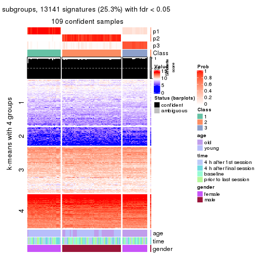
get_signatures(res, k = 4, scale_rows = FALSE)
get_signatures(res, k = 5, scale_rows = FALSE)
get_signatures(res, k = 6, scale_rows = FALSE)
Compare the overlap of signatures from different k:
compare_signatures(res)
get_signature() returns a data frame invisibly. TO get the list of signatures, the function
call should be assigned to a variable explicitly. In following code, if plot argument is set
to FALSE, no heatmap is plotted while only the differential analysis is performed.
# code only for demonstration
tb = get_signature(res, k = ..., plot = FALSE)
An example of the output of tb is:
#> which_row fdr mean_1 mean_2 scaled_mean_1 scaled_mean_2 km
#> 1 38 0.042760348 8.373488 9.131774 -0.5533452 0.5164555 1
#> 2 40 0.018707592 7.106213 8.469186 -0.6173731 0.5762149 1
#> 3 55 0.019134737 10.221463 11.207825 -0.6159697 0.5749050 1
#> 4 59 0.006059896 5.921854 7.869574 -0.6899429 0.6439467 1
#> 5 60 0.018055526 8.928898 10.211722 -0.6204761 0.5791110 1
#> 6 98 0.009384629 15.714769 14.887706 0.6635654 -0.6193277 2
...
The columns in tb are:
which_row: row indices corresponding to the input matrix.fdr: FDR for the differential test. mean_x: The mean value in group x.scaled_mean_x: The mean value in group x after rows are scaled.km: Row groups if k-means clustering is applied to rows.UMAP plot which shows how samples are separated.
dimension_reduction(res, k = 2, method = "UMAP")
dimension_reduction(res, k = 3, method = "UMAP")
dimension_reduction(res, k = 4, method = "UMAP")
dimension_reduction(res, k = 5, method = "UMAP")
dimension_reduction(res, k = 6, method = "UMAP")
Following heatmap shows how subgroups are split when increasing k:
collect_classes(res)
Test correlation between subgroups and known annotations. If the known annotation is numeric, one-way ANOVA test is applied, and if the known annotation is discrete, chi-squared contingency table test is applied.
test_to_known_factors(res)
#> n age(p) time(p) gender(p) k
#> MAD:mclust 109 9.34e-01 0.992 1.20e-24 2
#> MAD:mclust 109 1.08e-11 0.998 2.14e-24 3
#> MAD:mclust 102 1.61e-19 0.999 5.77e-22 4
#> MAD:mclust 82 1.24e-14 0.624 6.56e-17 5
#> MAD:mclust 106 4.14e-10 0.191 2.87e-21 6
If matrix rows can be associated to genes, consider to use GO_Enrichment(res,
...) to perform function enrichment for the signature genes.
The object with results only for a single top-value method and a single partition method can be extracted as:
res = res_list["MAD", "NMF"]
# you can also extract it by
# res = res_list["MAD:NMF"]
A summary of res and all the functions that can be applied to it:
res
#> A 'ConsensusPartition' object with k = 2, 3, 4, 5, 6.
#> On a matrix with 51941 rows and 110 columns.
#> Top rows (1000, 2000, 3000, 4000, 5000) are extracted by 'MAD' method.
#> Subgroups are detected by 'NMF' method.
#> Performed in total 1250 partitions by row resampling.
#> Best k for subgroups seems to be 2.
#>
#> Following methods can be applied to this 'ConsensusPartition' object:
#> [1] "cola_report" "collect_classes" "collect_plots"
#> [4] "collect_stats" "colnames" "compare_signatures"
#> [7] "consensus_heatmap" "dimension_reduction" "functional_enrichment"
#> [10] "get_anno_col" "get_anno" "get_classes"
#> [13] "get_consensus" "get_matrix" "get_membership"
#> [16] "get_param" "get_signatures" "get_stats"
#> [19] "is_best_k" "is_stable_k" "membership_heatmap"
#> [22] "ncol" "nrow" "plot_ecdf"
#> [25] "rownames" "select_partition_number" "show"
#> [28] "suggest_best_k" "test_to_known_factors"
collect_plots() function collects all the plots made from res for all k (number of partitions)
into one single page to provide an easy and fast comparison between different k.
collect_plots(res)
The plots are:
k and the heatmap of
predicted classes for each k.k.k.k.All the plots in panels can be made by individual functions and they are plotted later in this section.
select_partition_number() produces several plots showing different
statistics for choosing “optimized” k. There are following statistics:
k;k, the area increased is defined as \(A_k - A_{k-1}\).The detailed explanations of these statistics can be found in the cola vignette.
Generally speaking, lower PAC score, higher mean silhouette score or higher
concordance corresponds to better partition. Rand index and Jaccard index
measure how similar the current partition is compared to partition with k-1.
If they are too similar, we won't accept k is better than k-1.
select_partition_number(res)
The numeric values for all these statistics can be obtained by get_stats().
get_stats(res)
#> k 1-PAC mean_silhouette concordance area_increased Rand Jaccard
#> 2 2 0.538 0.707 0.887 0.4967 0.497 0.497
#> 3 3 0.462 0.733 0.840 0.2778 0.755 0.559
#> 4 4 0.555 0.628 0.784 0.1212 0.947 0.862
#> 5 5 0.547 0.519 0.709 0.0811 0.922 0.775
#> 6 6 0.542 0.296 0.617 0.0542 0.948 0.820
suggest_best_k() suggests the best \(k\) based on these statistics. The rules are as follows:
NA.suggest_best_k(res)
#> [1] 2
Following shows the table of the partitions (You need to click the show/hide
code output link to see it). The membership matrix (columns with name p*)
is inferred by
clue::cl_consensus()
function with the SE method. Basically the value in the membership matrix
represents the probability to belong to a certain group. The finall class
label for an item is determined with the group with highest probability it
belongs to.
In get_classes() function, the entropy is calculated from the membership
matrix and the silhouette score is calculated from the consensus matrix.
cbind(get_classes(res, k = 2), get_membership(res, k = 2))
#> class entropy silhouette p1 p2
#> GSM702357 2 0.0000 0.8844 0.000 1.000
#> GSM702358 2 0.0000 0.8844 0.000 1.000
#> GSM702359 2 0.0376 0.8840 0.004 0.996
#> GSM702360 2 0.0376 0.8826 0.004 0.996
#> GSM702361 2 0.0376 0.8840 0.004 0.996
#> GSM702362 2 0.0376 0.8840 0.004 0.996
#> GSM702363 2 0.0000 0.8844 0.000 1.000
#> GSM702364 2 0.0000 0.8844 0.000 1.000
#> GSM702413 1 0.0376 0.8283 0.996 0.004
#> GSM702414 1 0.0376 0.8282 0.996 0.004
#> GSM702415 1 1.0000 0.1350 0.504 0.496
#> GSM702416 1 0.0000 0.8290 1.000 0.000
#> GSM702417 1 0.9896 0.3025 0.560 0.440
#> GSM702418 1 0.8499 0.6068 0.724 0.276
#> GSM702419 1 0.0000 0.8290 1.000 0.000
#> GSM702365 2 0.0000 0.8844 0.000 1.000
#> GSM702366 2 0.0376 0.8840 0.004 0.996
#> GSM702367 2 0.0376 0.8840 0.004 0.996
#> GSM702368 2 0.0376 0.8840 0.004 0.996
#> GSM702369 2 0.0376 0.8840 0.004 0.996
#> GSM702370 2 0.0376 0.8840 0.004 0.996
#> GSM702371 2 0.0376 0.8840 0.004 0.996
#> GSM702372 2 0.0376 0.8840 0.004 0.996
#> GSM702420 2 0.9686 0.2078 0.396 0.604
#> GSM702421 1 0.0000 0.8290 1.000 0.000
#> GSM702422 2 0.9608 0.2440 0.384 0.616
#> GSM702423 2 0.9977 -0.0596 0.472 0.528
#> GSM702424 1 0.7602 0.6732 0.780 0.220
#> GSM702425 1 0.9988 0.1920 0.520 0.480
#> GSM702426 1 0.9983 0.2042 0.524 0.476
#> GSM702427 1 0.0672 0.8267 0.992 0.008
#> GSM702373 2 0.0000 0.8844 0.000 1.000
#> GSM702374 2 0.0376 0.8840 0.004 0.996
#> GSM702375 2 0.0376 0.8840 0.004 0.996
#> GSM702376 2 0.0000 0.8844 0.000 1.000
#> GSM702377 2 0.0000 0.8844 0.000 1.000
#> GSM702378 2 0.0000 0.8844 0.000 1.000
#> GSM702379 2 0.0000 0.8844 0.000 1.000
#> GSM702380 2 0.0000 0.8844 0.000 1.000
#> GSM702428 2 0.9552 0.2668 0.376 0.624
#> GSM702429 1 0.9427 0.4723 0.640 0.360
#> GSM702430 1 0.4690 0.7730 0.900 0.100
#> GSM702431 1 0.0376 0.8283 0.996 0.004
#> GSM702432 1 0.0000 0.8290 1.000 0.000
#> GSM702433 2 0.9933 0.0149 0.452 0.548
#> GSM702434 1 0.9209 0.5129 0.664 0.336
#> GSM702381 2 0.0000 0.8844 0.000 1.000
#> GSM702382 2 0.0376 0.8840 0.004 0.996
#> GSM702383 2 0.0376 0.8840 0.004 0.996
#> GSM702384 2 0.0000 0.8844 0.000 1.000
#> GSM702385 2 0.0376 0.8840 0.004 0.996
#> GSM702386 2 0.0376 0.8840 0.004 0.996
#> GSM702387 2 0.0000 0.8844 0.000 1.000
#> GSM702388 2 0.0376 0.8840 0.004 0.996
#> GSM702435 1 0.9710 0.3945 0.600 0.400
#> GSM702436 1 0.8081 0.6413 0.752 0.248
#> GSM702437 2 1.0000 -0.1445 0.496 0.504
#> GSM702438 1 0.6048 0.7370 0.852 0.148
#> GSM702439 1 0.8555 0.6026 0.720 0.280
#> GSM702440 1 0.9358 0.4890 0.648 0.352
#> GSM702441 2 0.9552 0.2667 0.376 0.624
#> GSM702442 1 0.9977 0.2164 0.528 0.472
#> GSM702389 2 0.7883 0.6253 0.236 0.764
#> GSM702390 2 0.0376 0.8826 0.004 0.996
#> GSM702391 2 0.0938 0.8776 0.012 0.988
#> GSM702392 2 0.5059 0.7890 0.112 0.888
#> GSM702393 2 0.2603 0.8544 0.044 0.956
#> GSM702394 1 1.0000 -0.0100 0.504 0.496
#> GSM702443 1 0.0376 0.8298 0.996 0.004
#> GSM702444 1 0.0376 0.8298 0.996 0.004
#> GSM702445 1 0.0376 0.8298 0.996 0.004
#> GSM702446 1 0.0376 0.8298 0.996 0.004
#> GSM702447 1 0.0376 0.8298 0.996 0.004
#> GSM702448 1 0.0376 0.8298 0.996 0.004
#> GSM702395 2 0.3114 0.8439 0.056 0.944
#> GSM702396 2 0.0376 0.8840 0.004 0.996
#> GSM702397 2 0.0000 0.8844 0.000 1.000
#> GSM702398 2 0.0000 0.8844 0.000 1.000
#> GSM702399 1 0.9983 0.0570 0.524 0.476
#> GSM702400 1 0.9983 0.0597 0.524 0.476
#> GSM702449 1 0.0000 0.8290 1.000 0.000
#> GSM702450 1 0.0376 0.8298 0.996 0.004
#> GSM702451 1 0.0000 0.8290 1.000 0.000
#> GSM702452 1 0.0376 0.8298 0.996 0.004
#> GSM702453 1 0.0000 0.8290 1.000 0.000
#> GSM702454 1 0.0000 0.8290 1.000 0.000
#> GSM702401 2 0.8713 0.5291 0.292 0.708
#> GSM702402 2 0.8499 0.5600 0.276 0.724
#> GSM702403 2 0.0000 0.8844 0.000 1.000
#> GSM702404 2 0.4161 0.8179 0.084 0.916
#> GSM702405 1 0.8016 0.5735 0.756 0.244
#> GSM702406 2 0.6973 0.6958 0.188 0.812
#> GSM702455 1 0.0376 0.8298 0.996 0.004
#> GSM702456 1 0.0376 0.8298 0.996 0.004
#> GSM702457 1 0.0376 0.8298 0.996 0.004
#> GSM702458 1 0.0376 0.8298 0.996 0.004
#> GSM702459 1 0.0376 0.8298 0.996 0.004
#> GSM702460 1 0.0376 0.8298 0.996 0.004
#> GSM702407 2 0.0000 0.8844 0.000 1.000
#> GSM702408 2 0.0000 0.8844 0.000 1.000
#> GSM702409 2 0.9129 0.4644 0.328 0.672
#> GSM702410 2 0.9866 0.2025 0.432 0.568
#> GSM702411 1 0.9815 0.2130 0.580 0.420
#> GSM702412 2 0.2423 0.8569 0.040 0.960
#> GSM702461 1 0.0376 0.8298 0.996 0.004
#> GSM702462 1 0.0376 0.8298 0.996 0.004
#> GSM702463 1 0.0376 0.8298 0.996 0.004
#> GSM702464 1 0.0376 0.8298 0.996 0.004
#> GSM702465 1 0.0376 0.8298 0.996 0.004
#> GSM702466 1 0.0376 0.8298 0.996 0.004
cbind(get_classes(res, k = 3), get_membership(res, k = 3))
#> class entropy silhouette p1 p2 p3
#> GSM702357 2 0.0424 0.8853 0.008 0.992 0.000
#> GSM702358 2 0.0892 0.8850 0.020 0.980 0.000
#> GSM702359 2 0.4399 0.7787 0.188 0.812 0.000
#> GSM702360 2 0.3120 0.8672 0.080 0.908 0.012
#> GSM702361 2 0.3038 0.8549 0.104 0.896 0.000
#> GSM702362 2 0.1411 0.8807 0.036 0.964 0.000
#> GSM702363 2 0.0747 0.8853 0.016 0.984 0.000
#> GSM702364 2 0.4912 0.7952 0.196 0.796 0.008
#> GSM702413 1 0.6934 0.3383 0.624 0.028 0.348
#> GSM702414 1 0.7379 0.3680 0.616 0.048 0.336
#> GSM702415 1 0.5657 0.7644 0.808 0.104 0.088
#> GSM702416 1 0.6267 0.1201 0.548 0.000 0.452
#> GSM702417 1 0.4712 0.7605 0.848 0.108 0.044
#> GSM702418 1 0.7252 0.5998 0.704 0.100 0.196
#> GSM702419 3 0.6309 0.0183 0.500 0.000 0.500
#> GSM702365 2 0.0747 0.8852 0.016 0.984 0.000
#> GSM702366 2 0.2261 0.8792 0.068 0.932 0.000
#> GSM702367 2 0.5882 0.4956 0.348 0.652 0.000
#> GSM702368 2 0.1964 0.8843 0.056 0.944 0.000
#> GSM702369 2 0.5968 0.5302 0.364 0.636 0.000
#> GSM702370 2 0.4346 0.7951 0.184 0.816 0.000
#> GSM702371 2 0.2796 0.8619 0.092 0.908 0.000
#> GSM702372 2 0.4931 0.7407 0.232 0.768 0.000
#> GSM702420 1 0.3551 0.7264 0.868 0.132 0.000
#> GSM702421 1 0.6543 0.4342 0.640 0.016 0.344
#> GSM702422 1 0.3879 0.7052 0.848 0.152 0.000
#> GSM702423 1 0.3459 0.7577 0.892 0.096 0.012
#> GSM702424 1 0.5010 0.7434 0.840 0.076 0.084
#> GSM702425 1 0.3886 0.7567 0.880 0.096 0.024
#> GSM702426 1 0.4121 0.7516 0.868 0.108 0.024
#> GSM702427 1 0.4979 0.6975 0.812 0.020 0.168
#> GSM702373 2 0.2625 0.8629 0.084 0.916 0.000
#> GSM702374 2 0.1643 0.8850 0.044 0.956 0.000
#> GSM702375 2 0.2066 0.8758 0.060 0.940 0.000
#> GSM702376 2 0.1163 0.8818 0.028 0.972 0.000
#> GSM702377 2 0.4555 0.8001 0.200 0.800 0.000
#> GSM702378 2 0.0747 0.8827 0.016 0.984 0.000
#> GSM702379 2 0.0424 0.8839 0.008 0.992 0.000
#> GSM702380 2 0.1411 0.8788 0.036 0.964 0.000
#> GSM702428 1 0.5627 0.7074 0.780 0.188 0.032
#> GSM702429 1 0.6317 0.6687 0.772 0.104 0.124
#> GSM702430 1 0.7233 0.5918 0.672 0.064 0.264
#> GSM702431 1 0.6140 0.2110 0.596 0.000 0.404
#> GSM702432 3 0.6302 0.1093 0.480 0.000 0.520
#> GSM702433 1 0.6222 0.7138 0.776 0.132 0.092
#> GSM702434 1 0.7298 0.5923 0.700 0.100 0.200
#> GSM702381 2 0.0592 0.8837 0.012 0.988 0.000
#> GSM702382 2 0.2682 0.8729 0.076 0.920 0.004
#> GSM702383 2 0.2448 0.8771 0.076 0.924 0.000
#> GSM702384 2 0.1163 0.8845 0.028 0.972 0.000
#> GSM702385 2 0.2261 0.8727 0.068 0.932 0.000
#> GSM702386 2 0.2625 0.8717 0.084 0.916 0.000
#> GSM702387 2 0.2496 0.8740 0.068 0.928 0.004
#> GSM702388 2 0.2711 0.8752 0.088 0.912 0.000
#> GSM702435 1 0.4505 0.7631 0.860 0.092 0.048
#> GSM702436 1 0.6374 0.7065 0.768 0.100 0.132
#> GSM702437 1 0.3618 0.7575 0.884 0.104 0.012
#> GSM702438 1 0.5334 0.7465 0.820 0.060 0.120
#> GSM702439 1 0.4925 0.7582 0.844 0.080 0.076
#> GSM702440 1 0.5010 0.7284 0.840 0.084 0.076
#> GSM702441 1 0.3482 0.7407 0.872 0.128 0.000
#> GSM702442 1 0.4249 0.7500 0.864 0.108 0.028
#> GSM702389 2 0.4725 0.8420 0.060 0.852 0.088
#> GSM702390 2 0.3678 0.8599 0.080 0.892 0.028
#> GSM702391 2 0.2446 0.8781 0.052 0.936 0.012
#> GSM702392 2 0.5574 0.7846 0.184 0.784 0.032
#> GSM702393 2 0.0424 0.8851 0.008 0.992 0.000
#> GSM702394 2 0.6688 0.6334 0.028 0.664 0.308
#> GSM702443 3 0.2959 0.7599 0.100 0.000 0.900
#> GSM702444 3 0.1529 0.7775 0.040 0.000 0.960
#> GSM702445 3 0.1031 0.7763 0.024 0.000 0.976
#> GSM702446 3 0.2711 0.7613 0.088 0.000 0.912
#> GSM702447 3 0.2625 0.7764 0.084 0.000 0.916
#> GSM702448 3 0.3619 0.7701 0.136 0.000 0.864
#> GSM702395 2 0.4586 0.8413 0.096 0.856 0.048
#> GSM702396 2 0.3686 0.8426 0.140 0.860 0.000
#> GSM702397 2 0.1163 0.8811 0.028 0.972 0.000
#> GSM702398 2 0.0592 0.8855 0.012 0.988 0.000
#> GSM702399 2 0.7695 0.6706 0.124 0.676 0.200
#> GSM702400 2 0.7097 0.7293 0.108 0.720 0.172
#> GSM702449 3 0.6299 0.1408 0.476 0.000 0.524
#> GSM702450 3 0.3816 0.7508 0.148 0.000 0.852
#> GSM702451 3 0.6204 0.3631 0.424 0.000 0.576
#> GSM702452 3 0.2066 0.7816 0.060 0.000 0.940
#> GSM702453 3 0.5882 0.4842 0.348 0.000 0.652
#> GSM702454 3 0.5706 0.5384 0.320 0.000 0.680
#> GSM702401 2 0.5174 0.8291 0.076 0.832 0.092
#> GSM702402 2 0.4945 0.8341 0.056 0.840 0.104
#> GSM702403 2 0.1964 0.8731 0.056 0.944 0.000
#> GSM702404 2 0.4937 0.8113 0.148 0.824 0.028
#> GSM702405 3 0.8604 0.1987 0.112 0.348 0.540
#> GSM702406 2 0.4892 0.8244 0.112 0.840 0.048
#> GSM702455 3 0.2796 0.7643 0.092 0.000 0.908
#> GSM702456 3 0.2200 0.7673 0.056 0.004 0.940
#> GSM702457 3 0.3879 0.7630 0.152 0.000 0.848
#> GSM702458 3 0.3038 0.7532 0.104 0.000 0.896
#> GSM702459 3 0.3551 0.7735 0.132 0.000 0.868
#> GSM702460 3 0.0747 0.7684 0.016 0.000 0.984
#> GSM702407 2 0.1015 0.8862 0.012 0.980 0.008
#> GSM702408 2 0.1163 0.8847 0.028 0.972 0.000
#> GSM702409 2 0.6705 0.7566 0.176 0.740 0.084
#> GSM702410 2 0.5970 0.7861 0.060 0.780 0.160
#> GSM702411 2 0.6510 0.5522 0.012 0.624 0.364
#> GSM702412 2 0.0592 0.8863 0.000 0.988 0.012
#> GSM702461 3 0.1860 0.7816 0.052 0.000 0.948
#> GSM702462 3 0.4504 0.7178 0.196 0.000 0.804
#> GSM702463 3 0.4062 0.7470 0.164 0.000 0.836
#> GSM702464 3 0.3116 0.7702 0.108 0.000 0.892
#> GSM702465 3 0.3879 0.7564 0.152 0.000 0.848
#> GSM702466 3 0.1753 0.7807 0.048 0.000 0.952
cbind(get_classes(res, k = 4), get_membership(res, k = 4))
#> class entropy silhouette p1 p2 p3 p4
#> GSM702357 2 0.1256 0.8083 0.000 0.964 0.008 0.028
#> GSM702358 2 0.0469 0.8085 0.000 0.988 0.000 0.012
#> GSM702359 2 0.5935 0.6199 0.080 0.664 0.000 0.256
#> GSM702360 2 0.1953 0.8063 0.012 0.944 0.012 0.032
#> GSM702361 2 0.5420 0.5519 0.024 0.624 0.000 0.352
#> GSM702362 2 0.3591 0.7574 0.008 0.824 0.000 0.168
#> GSM702363 2 0.0895 0.8089 0.000 0.976 0.004 0.020
#> GSM702364 2 0.5511 0.3074 0.000 0.500 0.016 0.484
#> GSM702413 1 0.6582 0.0816 0.512 0.004 0.068 0.416
#> GSM702414 4 0.5420 0.5466 0.272 0.000 0.044 0.684
#> GSM702415 1 0.4212 0.5882 0.772 0.000 0.012 0.216
#> GSM702416 1 0.5062 0.5861 0.752 0.000 0.184 0.064
#> GSM702417 1 0.1635 0.6751 0.948 0.000 0.008 0.044
#> GSM702418 4 0.5214 0.5575 0.336 0.004 0.012 0.648
#> GSM702419 1 0.5875 0.5289 0.684 0.000 0.224 0.092
#> GSM702365 2 0.0657 0.8078 0.000 0.984 0.004 0.012
#> GSM702366 2 0.4257 0.7517 0.048 0.812 0.000 0.140
#> GSM702367 2 0.7556 0.3245 0.248 0.488 0.000 0.264
#> GSM702368 2 0.3215 0.7882 0.092 0.876 0.000 0.032
#> GSM702369 2 0.7576 0.2682 0.344 0.452 0.000 0.204
#> GSM702370 2 0.6101 0.4411 0.052 0.560 0.000 0.388
#> GSM702371 2 0.4565 0.7568 0.064 0.796 0.000 0.140
#> GSM702372 2 0.6568 0.3316 0.080 0.512 0.000 0.408
#> GSM702420 1 0.5095 0.3189 0.624 0.004 0.004 0.368
#> GSM702421 1 0.4106 0.6381 0.832 0.000 0.084 0.084
#> GSM702422 4 0.5330 0.1031 0.476 0.004 0.004 0.516
#> GSM702423 1 0.3649 0.5993 0.796 0.000 0.000 0.204
#> GSM702424 1 0.3389 0.6200 0.868 0.004 0.024 0.104
#> GSM702425 1 0.1302 0.6663 0.956 0.000 0.000 0.044
#> GSM702426 1 0.2466 0.6311 0.900 0.000 0.004 0.096
#> GSM702427 1 0.3216 0.6803 0.880 0.000 0.044 0.076
#> GSM702373 2 0.4661 0.6811 0.000 0.728 0.016 0.256
#> GSM702374 2 0.1520 0.8094 0.024 0.956 0.000 0.020
#> GSM702375 2 0.4576 0.7008 0.020 0.748 0.000 0.232
#> GSM702376 2 0.2593 0.7869 0.000 0.892 0.004 0.104
#> GSM702377 4 0.5276 -0.2569 0.004 0.432 0.004 0.560
#> GSM702378 2 0.1109 0.8061 0.004 0.968 0.000 0.028
#> GSM702379 2 0.1211 0.8048 0.000 0.960 0.000 0.040
#> GSM702380 2 0.2281 0.7894 0.000 0.904 0.000 0.096
#> GSM702428 1 0.5427 0.0161 0.544 0.008 0.004 0.444
#> GSM702429 4 0.5112 0.5781 0.316 0.004 0.012 0.668
#> GSM702430 1 0.3266 0.6609 0.876 0.000 0.084 0.040
#> GSM702431 1 0.6428 0.4828 0.624 0.000 0.112 0.264
#> GSM702432 1 0.6449 0.5063 0.644 0.000 0.204 0.152
#> GSM702433 1 0.5332 -0.1024 0.512 0.004 0.004 0.480
#> GSM702434 4 0.5286 0.5692 0.328 0.004 0.016 0.652
#> GSM702381 2 0.0817 0.8061 0.000 0.976 0.000 0.024
#> GSM702382 2 0.3717 0.7824 0.056 0.860 0.004 0.080
#> GSM702383 2 0.3542 0.7819 0.060 0.864 0.000 0.076
#> GSM702384 2 0.1082 0.8088 0.004 0.972 0.004 0.020
#> GSM702385 2 0.3725 0.7471 0.008 0.812 0.000 0.180
#> GSM702386 2 0.4547 0.7480 0.104 0.804 0.000 0.092
#> GSM702387 2 0.1994 0.8033 0.008 0.936 0.004 0.052
#> GSM702388 2 0.4764 0.7358 0.124 0.788 0.000 0.088
#> GSM702435 1 0.2081 0.6697 0.916 0.000 0.000 0.084
#> GSM702436 1 0.3681 0.6214 0.856 0.004 0.036 0.104
#> GSM702437 1 0.3074 0.6324 0.848 0.000 0.000 0.152
#> GSM702438 1 0.3266 0.6711 0.868 0.000 0.024 0.108
#> GSM702439 1 0.1888 0.6759 0.940 0.000 0.016 0.044
#> GSM702440 1 0.5387 0.2416 0.584 0.000 0.016 0.400
#> GSM702441 1 0.4356 0.4791 0.708 0.000 0.000 0.292
#> GSM702442 1 0.1978 0.6489 0.928 0.000 0.004 0.068
#> GSM702389 2 0.1837 0.8065 0.000 0.944 0.028 0.028
#> GSM702390 2 0.2613 0.8001 0.008 0.916 0.024 0.052
#> GSM702391 2 0.1677 0.8056 0.000 0.948 0.012 0.040
#> GSM702392 2 0.6559 0.2588 0.000 0.468 0.076 0.456
#> GSM702393 2 0.1256 0.8096 0.000 0.964 0.008 0.028
#> GSM702394 2 0.4888 0.6836 0.000 0.740 0.224 0.036
#> GSM702443 3 0.3925 0.7540 0.016 0.000 0.808 0.176
#> GSM702444 3 0.1302 0.8082 0.044 0.000 0.956 0.000
#> GSM702445 3 0.1520 0.8077 0.020 0.000 0.956 0.024
#> GSM702446 3 0.3257 0.7693 0.004 0.000 0.844 0.152
#> GSM702447 3 0.3325 0.7926 0.024 0.000 0.864 0.112
#> GSM702448 3 0.3850 0.8025 0.116 0.000 0.840 0.044
#> GSM702395 2 0.3672 0.7869 0.028 0.872 0.028 0.072
#> GSM702396 2 0.6819 0.5297 0.188 0.604 0.000 0.208
#> GSM702397 2 0.1902 0.7994 0.004 0.932 0.000 0.064
#> GSM702398 2 0.1151 0.8085 0.008 0.968 0.000 0.024
#> GSM702399 2 0.7211 0.4470 0.000 0.544 0.192 0.264
#> GSM702400 2 0.5945 0.6989 0.032 0.736 0.152 0.080
#> GSM702449 1 0.7182 0.4005 0.552 0.000 0.248 0.200
#> GSM702450 3 0.3485 0.7921 0.116 0.000 0.856 0.028
#> GSM702451 3 0.7845 0.0222 0.304 0.000 0.404 0.292
#> GSM702452 3 0.2124 0.8070 0.068 0.000 0.924 0.008
#> GSM702453 3 0.7034 0.1191 0.412 0.000 0.468 0.120
#> GSM702454 3 0.5943 0.4155 0.360 0.000 0.592 0.048
#> GSM702401 2 0.2844 0.7950 0.000 0.900 0.048 0.052
#> GSM702402 2 0.2919 0.7987 0.000 0.896 0.060 0.044
#> GSM702403 2 0.3208 0.7686 0.000 0.848 0.004 0.148
#> GSM702404 2 0.6285 0.3899 0.000 0.528 0.060 0.412
#> GSM702405 3 0.7618 0.1337 0.000 0.284 0.472 0.244
#> GSM702406 2 0.5851 0.6352 0.000 0.680 0.084 0.236
#> GSM702455 3 0.3625 0.7651 0.012 0.000 0.828 0.160
#> GSM702456 3 0.3117 0.7987 0.092 0.000 0.880 0.028
#> GSM702457 3 0.4344 0.7824 0.076 0.000 0.816 0.108
#> GSM702458 3 0.4079 0.7523 0.020 0.000 0.800 0.180
#> GSM702459 3 0.4259 0.7914 0.128 0.000 0.816 0.056
#> GSM702460 3 0.0921 0.8056 0.028 0.000 0.972 0.000
#> GSM702407 2 0.1004 0.8092 0.000 0.972 0.004 0.024
#> GSM702408 2 0.0657 0.8081 0.000 0.984 0.004 0.012
#> GSM702409 2 0.8603 0.3608 0.276 0.492 0.080 0.152
#> GSM702410 2 0.3667 0.7797 0.000 0.856 0.088 0.056
#> GSM702411 2 0.5716 0.6286 0.000 0.680 0.252 0.068
#> GSM702412 2 0.1109 0.8088 0.000 0.968 0.004 0.028
#> GSM702461 3 0.2179 0.8098 0.064 0.000 0.924 0.012
#> GSM702462 3 0.4035 0.7562 0.176 0.000 0.804 0.020
#> GSM702463 3 0.4070 0.7944 0.132 0.000 0.824 0.044
#> GSM702464 3 0.3443 0.7767 0.016 0.000 0.848 0.136
#> GSM702465 3 0.3161 0.7930 0.124 0.000 0.864 0.012
#> GSM702466 3 0.2329 0.8093 0.072 0.000 0.916 0.012
cbind(get_classes(res, k = 5), get_membership(res, k = 5))
#> class entropy silhouette p1 p2 p3 p4 p5
#> GSM702357 2 0.5007 0.5818 0.012 0.720 0.000 0.080 0.188
#> GSM702358 2 0.4309 0.6203 0.016 0.784 0.000 0.052 0.148
#> GSM702359 2 0.6786 0.1542 0.028 0.540 0.000 0.240 0.192
#> GSM702360 2 0.4386 0.6275 0.012 0.776 0.004 0.044 0.164
#> GSM702361 2 0.6652 0.0935 0.024 0.488 0.000 0.360 0.128
#> GSM702362 2 0.3955 0.6269 0.004 0.804 0.000 0.128 0.064
#> GSM702363 2 0.3566 0.6703 0.020 0.848 0.000 0.052 0.080
#> GSM702364 4 0.5920 0.0961 0.008 0.316 0.004 0.584 0.088
#> GSM702413 1 0.5049 0.2763 0.560 0.000 0.004 0.408 0.028
#> GSM702414 4 0.4657 0.2859 0.268 0.000 0.020 0.696 0.016
#> GSM702415 1 0.3934 0.6310 0.796 0.000 0.008 0.160 0.036
#> GSM702416 1 0.4986 0.6528 0.764 0.004 0.044 0.068 0.120
#> GSM702417 1 0.3893 0.6632 0.804 0.000 0.004 0.052 0.140
#> GSM702418 4 0.5196 0.0926 0.380 0.000 0.004 0.576 0.040
#> GSM702419 1 0.5774 0.6054 0.692 0.000 0.064 0.080 0.164
#> GSM702365 2 0.3893 0.6319 0.004 0.804 0.000 0.052 0.140
#> GSM702366 2 0.4359 0.4283 0.016 0.692 0.000 0.004 0.288
#> GSM702367 5 0.6991 0.6615 0.068 0.304 0.000 0.108 0.520
#> GSM702368 2 0.4537 0.4842 0.016 0.724 0.000 0.024 0.236
#> GSM702369 5 0.6115 0.6595 0.136 0.308 0.000 0.004 0.552
#> GSM702370 2 0.7071 -0.2586 0.016 0.408 0.000 0.344 0.232
#> GSM702371 2 0.5858 -0.1766 0.008 0.536 0.000 0.080 0.376
#> GSM702372 5 0.7457 0.3641 0.032 0.284 0.000 0.320 0.364
#> GSM702420 1 0.6765 0.1720 0.384 0.000 0.000 0.272 0.344
#> GSM702421 1 0.3998 0.6748 0.812 0.000 0.052 0.016 0.120
#> GSM702422 4 0.6673 -0.0794 0.316 0.000 0.000 0.432 0.252
#> GSM702423 1 0.5289 0.6005 0.652 0.000 0.000 0.096 0.252
#> GSM702424 1 0.3874 0.6547 0.776 0.000 0.008 0.016 0.200
#> GSM702425 1 0.3495 0.6781 0.812 0.000 0.000 0.028 0.160
#> GSM702426 1 0.4025 0.6061 0.700 0.000 0.000 0.008 0.292
#> GSM702427 1 0.4296 0.6560 0.772 0.000 0.016 0.036 0.176
#> GSM702373 2 0.5678 0.4283 0.000 0.612 0.000 0.260 0.128
#> GSM702374 2 0.4841 0.6082 0.048 0.760 0.000 0.048 0.144
#> GSM702375 2 0.5324 0.5319 0.028 0.700 0.000 0.204 0.068
#> GSM702376 2 0.4164 0.6212 0.000 0.784 0.000 0.120 0.096
#> GSM702377 4 0.6053 0.2743 0.052 0.232 0.000 0.640 0.076
#> GSM702378 2 0.1668 0.6704 0.000 0.940 0.000 0.032 0.028
#> GSM702379 2 0.3242 0.6730 0.000 0.852 0.000 0.072 0.076
#> GSM702380 2 0.3532 0.6347 0.000 0.824 0.000 0.128 0.048
#> GSM702428 1 0.5309 0.3289 0.576 0.000 0.000 0.364 0.060
#> GSM702429 4 0.4897 0.1515 0.352 0.000 0.004 0.616 0.028
#> GSM702430 1 0.4833 0.6314 0.752 0.004 0.012 0.080 0.152
#> GSM702431 1 0.6130 0.5297 0.632 0.004 0.016 0.180 0.168
#> GSM702432 1 0.5756 0.5979 0.696 0.000 0.052 0.112 0.140
#> GSM702433 1 0.5616 0.3428 0.552 0.000 0.000 0.364 0.084
#> GSM702434 4 0.4801 0.1433 0.372 0.000 0.004 0.604 0.020
#> GSM702381 2 0.1992 0.6773 0.000 0.924 0.000 0.032 0.044
#> GSM702382 2 0.4995 0.5632 0.032 0.728 0.000 0.048 0.192
#> GSM702383 2 0.3940 0.5873 0.016 0.768 0.000 0.008 0.208
#> GSM702384 2 0.4045 0.6546 0.016 0.808 0.000 0.052 0.124
#> GSM702385 2 0.4437 0.5934 0.000 0.760 0.000 0.140 0.100
#> GSM702386 2 0.4671 0.4948 0.032 0.720 0.000 0.016 0.232
#> GSM702387 2 0.2568 0.6594 0.004 0.888 0.000 0.016 0.092
#> GSM702388 2 0.4194 0.4637 0.016 0.720 0.000 0.004 0.260
#> GSM702435 1 0.3357 0.6762 0.852 0.000 0.008 0.048 0.092
#> GSM702436 1 0.4325 0.6624 0.776 0.000 0.024 0.032 0.168
#> GSM702437 1 0.5733 0.4828 0.580 0.000 0.004 0.092 0.324
#> GSM702438 1 0.4211 0.6850 0.788 0.000 0.016 0.044 0.152
#> GSM702439 1 0.2732 0.6901 0.884 0.000 0.008 0.020 0.088
#> GSM702440 1 0.5129 0.4656 0.616 0.000 0.000 0.328 0.056
#> GSM702441 1 0.4193 0.5872 0.748 0.000 0.000 0.212 0.040
#> GSM702442 1 0.2953 0.6894 0.868 0.000 0.004 0.028 0.100
#> GSM702389 2 0.3622 0.6620 0.000 0.844 0.032 0.032 0.092
#> GSM702390 2 0.3592 0.6637 0.000 0.832 0.016 0.028 0.124
#> GSM702391 2 0.1604 0.6742 0.004 0.944 0.004 0.004 0.044
#> GSM702392 4 0.6045 0.1513 0.000 0.272 0.044 0.616 0.068
#> GSM702393 2 0.3327 0.6716 0.000 0.852 0.004 0.060 0.084
#> GSM702394 2 0.4547 0.5477 0.000 0.744 0.196 0.008 0.052
#> GSM702443 3 0.3846 0.7147 0.004 0.000 0.776 0.200 0.020
#> GSM702444 3 0.1854 0.7686 0.036 0.000 0.936 0.008 0.020
#> GSM702445 3 0.1483 0.7666 0.012 0.000 0.952 0.028 0.008
#> GSM702446 3 0.3812 0.7304 0.004 0.000 0.800 0.160 0.036
#> GSM702447 3 0.2792 0.7617 0.016 0.000 0.884 0.084 0.016
#> GSM702448 3 0.3456 0.7643 0.092 0.000 0.852 0.028 0.028
#> GSM702395 2 0.4340 0.5491 0.004 0.748 0.024 0.008 0.216
#> GSM702396 5 0.5440 0.5846 0.048 0.368 0.004 0.004 0.576
#> GSM702397 2 0.2983 0.6519 0.000 0.868 0.000 0.056 0.076
#> GSM702398 2 0.2813 0.6499 0.000 0.876 0.000 0.040 0.084
#> GSM702399 3 0.8426 -0.2097 0.004 0.292 0.328 0.248 0.128
#> GSM702400 2 0.6724 0.1042 0.000 0.540 0.248 0.024 0.188
#> GSM702449 1 0.7678 0.3167 0.476 0.000 0.252 0.168 0.104
#> GSM702450 3 0.3266 0.7500 0.076 0.000 0.860 0.008 0.056
#> GSM702451 3 0.7778 0.1935 0.168 0.000 0.404 0.336 0.092
#> GSM702452 3 0.2131 0.7693 0.056 0.000 0.920 0.008 0.016
#> GSM702453 3 0.6531 0.3042 0.376 0.000 0.500 0.084 0.040
#> GSM702454 3 0.6435 0.1084 0.416 0.000 0.460 0.020 0.104
#> GSM702401 2 0.4463 0.6356 0.000 0.792 0.060 0.036 0.112
#> GSM702402 2 0.4377 0.6422 0.000 0.800 0.064 0.036 0.100
#> GSM702403 2 0.3752 0.6216 0.000 0.804 0.000 0.148 0.048
#> GSM702404 4 0.5862 0.0214 0.000 0.404 0.012 0.516 0.068
#> GSM702405 3 0.7517 0.2084 0.000 0.152 0.456 0.312 0.080
#> GSM702406 2 0.6471 0.3612 0.000 0.592 0.056 0.260 0.092
#> GSM702455 3 0.4037 0.7210 0.016 0.000 0.780 0.184 0.020
#> GSM702456 3 0.4259 0.6976 0.172 0.000 0.776 0.016 0.036
#> GSM702457 3 0.3908 0.7556 0.088 0.000 0.824 0.072 0.016
#> GSM702458 3 0.4510 0.7098 0.028 0.000 0.756 0.188 0.028
#> GSM702459 3 0.6440 0.3802 0.344 0.000 0.536 0.072 0.048
#> GSM702460 3 0.1278 0.7672 0.020 0.000 0.960 0.004 0.016
#> GSM702407 2 0.2535 0.6770 0.000 0.892 0.000 0.032 0.076
#> GSM702408 2 0.2054 0.6698 0.000 0.916 0.004 0.008 0.072
#> GSM702409 5 0.7622 0.6290 0.104 0.264 0.068 0.036 0.528
#> GSM702410 2 0.5202 0.5390 0.000 0.720 0.132 0.016 0.132
#> GSM702411 2 0.6378 0.0279 0.000 0.484 0.396 0.020 0.100
#> GSM702412 2 0.2710 0.6595 0.000 0.892 0.008 0.036 0.064
#> GSM702461 3 0.0865 0.7674 0.024 0.000 0.972 0.000 0.004
#> GSM702462 3 0.3774 0.7281 0.152 0.000 0.808 0.008 0.032
#> GSM702463 3 0.3257 0.7572 0.124 0.000 0.844 0.028 0.004
#> GSM702464 3 0.4617 0.7327 0.044 0.000 0.776 0.136 0.044
#> GSM702465 3 0.3398 0.7391 0.144 0.000 0.828 0.004 0.024
#> GSM702466 3 0.1041 0.7669 0.032 0.000 0.964 0.000 0.004
cbind(get_classes(res, k = 6), get_membership(res, k = 6))
#> class entropy silhouette p1 p2 p3 p4 p5 p6
#> GSM702357 6 0.594 0.68917 0.060 0.412 0.000 0.052 0.004 0.472
#> GSM702358 2 0.501 -0.34871 0.036 0.600 0.000 0.008 0.016 0.340
#> GSM702359 2 0.727 0.31102 0.056 0.528 0.000 0.172 0.084 0.160
#> GSM702360 2 0.697 0.27746 0.124 0.504 0.008 0.040 0.036 0.288
#> GSM702361 2 0.781 0.19712 0.116 0.412 0.000 0.220 0.036 0.216
#> GSM702362 2 0.510 0.40490 0.040 0.732 0.000 0.068 0.032 0.128
#> GSM702363 2 0.488 0.10904 0.056 0.688 0.000 0.012 0.016 0.228
#> GSM702364 4 0.653 0.13213 0.004 0.340 0.008 0.468 0.028 0.152
#> GSM702413 1 0.532 0.15548 0.488 0.000 0.012 0.448 0.028 0.024
#> GSM702414 4 0.364 0.36833 0.188 0.000 0.008 0.780 0.008 0.016
#> GSM702415 1 0.577 0.48045 0.620 0.000 0.008 0.232 0.100 0.040
#> GSM702416 1 0.556 0.50192 0.696 0.000 0.052 0.040 0.068 0.144
#> GSM702417 1 0.441 0.54962 0.780 0.000 0.024 0.036 0.044 0.116
#> GSM702418 4 0.448 0.13048 0.356 0.000 0.004 0.608 0.000 0.032
#> GSM702419 1 0.422 0.56993 0.796 0.000 0.048 0.044 0.016 0.096
#> GSM702365 2 0.521 -0.65668 0.032 0.520 0.000 0.012 0.016 0.420
#> GSM702366 2 0.575 -0.12274 0.004 0.556 0.000 0.004 0.248 0.188
#> GSM702367 5 0.565 0.32679 0.000 0.296 0.000 0.056 0.584 0.064
#> GSM702368 2 0.542 0.36813 0.012 0.648 0.000 0.012 0.204 0.124
#> GSM702369 5 0.654 0.11318 0.040 0.348 0.004 0.004 0.464 0.140
#> GSM702370 2 0.739 0.03825 0.008 0.412 0.000 0.260 0.212 0.108
#> GSM702371 2 0.562 0.02468 0.000 0.476 0.000 0.040 0.428 0.056
#> GSM702372 5 0.691 0.11847 0.000 0.236 0.000 0.264 0.432 0.068
#> GSM702420 5 0.547 0.15292 0.096 0.004 0.004 0.276 0.608 0.012
#> GSM702421 1 0.610 0.42104 0.536 0.000 0.036 0.016 0.328 0.084
#> GSM702422 4 0.578 0.04708 0.120 0.004 0.000 0.472 0.396 0.008
#> GSM702423 1 0.708 0.33769 0.436 0.004 0.028 0.080 0.364 0.088
#> GSM702424 1 0.555 0.34944 0.488 0.000 0.016 0.008 0.424 0.064
#> GSM702425 1 0.602 0.50416 0.596 0.000 0.008 0.072 0.248 0.076
#> GSM702426 5 0.499 -0.13527 0.324 0.000 0.012 0.008 0.612 0.044
#> GSM702427 5 0.624 -0.38807 0.424 0.000 0.044 0.072 0.444 0.016
#> GSM702373 2 0.635 -0.31068 0.020 0.456 0.000 0.280 0.000 0.244
#> GSM702374 2 0.594 -0.57076 0.072 0.520 0.000 0.024 0.020 0.364
#> GSM702375 2 0.593 0.24339 0.052 0.640 0.000 0.196 0.024 0.088
#> GSM702376 2 0.525 0.35470 0.068 0.700 0.000 0.064 0.008 0.160
#> GSM702377 4 0.600 0.34670 0.064 0.208 0.000 0.616 0.008 0.104
#> GSM702378 2 0.231 0.39263 0.016 0.908 0.000 0.012 0.012 0.052
#> GSM702379 2 0.377 0.33263 0.012 0.780 0.000 0.016 0.012 0.180
#> GSM702380 2 0.371 0.42067 0.008 0.820 0.000 0.080 0.016 0.076
#> GSM702428 1 0.545 0.21130 0.504 0.000 0.000 0.412 0.044 0.040
#> GSM702429 4 0.455 0.33137 0.212 0.000 0.004 0.704 0.076 0.004
#> GSM702430 1 0.425 0.53625 0.792 0.000 0.024 0.044 0.032 0.108
#> GSM702431 1 0.344 0.53198 0.828 0.000 0.008 0.100 0.004 0.060
#> GSM702432 1 0.401 0.56839 0.808 0.000 0.032 0.088 0.012 0.060
#> GSM702433 1 0.498 0.33208 0.604 0.000 0.000 0.324 0.012 0.060
#> GSM702434 4 0.396 0.29816 0.264 0.000 0.008 0.712 0.008 0.008
#> GSM702381 2 0.399 0.04890 0.000 0.744 0.000 0.028 0.016 0.212
#> GSM702382 6 0.623 0.68743 0.056 0.408 0.000 0.004 0.084 0.448
#> GSM702383 2 0.562 0.02578 0.024 0.616 0.000 0.004 0.124 0.232
#> GSM702384 2 0.631 0.12214 0.084 0.576 0.000 0.028 0.052 0.260
#> GSM702385 2 0.493 0.41025 0.024 0.744 0.000 0.112 0.036 0.084
#> GSM702386 2 0.613 0.21726 0.044 0.600 0.000 0.012 0.200 0.144
#> GSM702387 2 0.501 -0.21803 0.008 0.636 0.000 0.000 0.092 0.264
#> GSM702388 2 0.536 0.28099 0.020 0.644 0.000 0.012 0.244 0.080
#> GSM702435 1 0.632 0.33702 0.444 0.000 0.024 0.084 0.416 0.032
#> GSM702436 1 0.638 0.34204 0.480 0.000 0.020 0.012 0.328 0.160
#> GSM702437 5 0.545 0.00857 0.224 0.000 0.004 0.136 0.624 0.012
#> GSM702438 1 0.689 0.42427 0.512 0.000 0.032 0.064 0.276 0.116
#> GSM702439 1 0.506 0.56935 0.716 0.000 0.028 0.052 0.172 0.032
#> GSM702440 4 0.629 -0.20628 0.392 0.000 0.012 0.444 0.132 0.020
#> GSM702441 1 0.572 0.44518 0.548 0.000 0.000 0.272 0.172 0.008
#> GSM702442 1 0.541 0.50988 0.632 0.000 0.016 0.020 0.264 0.068
#> GSM702389 2 0.484 0.13511 0.020 0.700 0.032 0.008 0.012 0.228
#> GSM702390 2 0.580 0.20565 0.068 0.628 0.016 0.012 0.028 0.248
#> GSM702391 2 0.295 0.39954 0.004 0.868 0.004 0.012 0.028 0.084
#> GSM702392 4 0.656 0.26193 0.000 0.292 0.052 0.536 0.036 0.084
#> GSM702393 2 0.595 0.33553 0.044 0.652 0.012 0.056 0.032 0.204
#> GSM702394 2 0.608 0.08133 0.012 0.596 0.180 0.016 0.008 0.188
#> GSM702443 3 0.339 0.70730 0.000 0.000 0.796 0.164 0.000 0.040
#> GSM702444 3 0.321 0.73778 0.068 0.000 0.856 0.008 0.016 0.052
#> GSM702445 3 0.203 0.75074 0.036 0.000 0.920 0.024 0.000 0.020
#> GSM702446 3 0.363 0.72199 0.012 0.000 0.816 0.108 0.004 0.060
#> GSM702447 3 0.280 0.74520 0.028 0.000 0.884 0.052 0.008 0.028
#> GSM702448 3 0.463 0.69635 0.136 0.000 0.756 0.028 0.020 0.060
#> GSM702395 2 0.565 0.18234 0.008 0.640 0.028 0.000 0.176 0.148
#> GSM702396 5 0.551 0.18760 0.008 0.304 0.000 0.004 0.572 0.112
#> GSM702397 2 0.337 0.38563 0.000 0.844 0.000 0.044 0.052 0.060
#> GSM702398 2 0.305 0.41173 0.000 0.860 0.000 0.032 0.032 0.076
#> GSM702399 3 0.811 -0.01999 0.000 0.228 0.320 0.264 0.032 0.156
#> GSM702400 2 0.783 0.06375 0.020 0.400 0.304 0.016 0.120 0.140
#> GSM702449 3 0.802 0.09083 0.204 0.004 0.376 0.164 0.228 0.024
#> GSM702450 3 0.375 0.72078 0.052 0.000 0.824 0.004 0.056 0.064
#> GSM702451 3 0.699 0.30732 0.028 0.000 0.440 0.280 0.224 0.028
#> GSM702452 3 0.254 0.74727 0.044 0.000 0.896 0.004 0.036 0.020
#> GSM702453 3 0.544 0.57447 0.232 0.000 0.652 0.064 0.040 0.012
#> GSM702454 3 0.655 0.10589 0.408 0.000 0.432 0.020 0.052 0.088
#> GSM702401 2 0.553 0.02945 0.032 0.612 0.060 0.000 0.012 0.284
#> GSM702402 2 0.480 -0.01366 0.020 0.664 0.032 0.004 0.004 0.276
#> GSM702403 2 0.444 0.40888 0.028 0.780 0.004 0.076 0.012 0.100
#> GSM702404 4 0.612 -0.05251 0.000 0.416 0.012 0.444 0.020 0.108
#> GSM702405 3 0.780 0.16693 0.020 0.100 0.360 0.264 0.004 0.252
#> GSM702406 2 0.639 0.24853 0.000 0.564 0.044 0.200 0.012 0.180
#> GSM702455 3 0.478 0.66575 0.028 0.000 0.696 0.212 0.000 0.064
#> GSM702456 3 0.557 0.58799 0.212 0.000 0.628 0.008 0.016 0.136
#> GSM702457 3 0.419 0.73075 0.092 0.000 0.788 0.080 0.004 0.036
#> GSM702458 3 0.511 0.66728 0.036 0.000 0.684 0.204 0.004 0.072
#> GSM702459 1 0.621 -0.21827 0.432 0.000 0.428 0.076 0.004 0.060
#> GSM702460 3 0.164 0.74772 0.036 0.000 0.936 0.004 0.000 0.024
#> GSM702407 2 0.494 -0.51714 0.000 0.564 0.004 0.012 0.036 0.384
#> GSM702408 2 0.409 0.27683 0.000 0.760 0.008 0.004 0.056 0.172
#> GSM702409 5 0.802 0.30882 0.052 0.212 0.092 0.024 0.464 0.156
#> GSM702410 2 0.608 0.24706 0.016 0.640 0.132 0.004 0.056 0.152
#> GSM702411 2 0.705 -0.04100 0.000 0.384 0.380 0.016 0.060 0.160
#> GSM702412 2 0.263 0.41956 0.000 0.880 0.008 0.004 0.024 0.084
#> GSM702461 3 0.226 0.74997 0.048 0.000 0.908 0.008 0.004 0.032
#> GSM702462 3 0.356 0.72080 0.120 0.000 0.816 0.000 0.024 0.040
#> GSM702463 3 0.363 0.73095 0.116 0.000 0.820 0.032 0.008 0.024
#> GSM702464 3 0.543 0.64865 0.052 0.000 0.668 0.188 0.004 0.088
#> GSM702465 3 0.408 0.71140 0.116 0.000 0.792 0.004 0.040 0.048
#> GSM702466 3 0.146 0.74600 0.020 0.000 0.948 0.000 0.016 0.016
Heatmaps for the consensus matrix. It visualizes the probability of two samples to be in a same group.
consensus_heatmap(res, k = 2)
consensus_heatmap(res, k = 3)
consensus_heatmap(res, k = 4)

consensus_heatmap(res, k = 5)
consensus_heatmap(res, k = 6)
Heatmaps for the membership of samples in all partitions to see how consistent they are:
membership_heatmap(res, k = 2)
membership_heatmap(res, k = 3)
membership_heatmap(res, k = 4)

membership_heatmap(res, k = 5)
membership_heatmap(res, k = 6)
As soon as we have had the classes for columns, we can look for signatures which are significantly different between classes which can be candidate marks for certain classes. Following are the heatmaps for signatures.
Signature heatmaps where rows are scaled:
get_signatures(res, k = 2)
get_signatures(res, k = 3)
get_signatures(res, k = 4)
get_signatures(res, k = 5)
get_signatures(res, k = 6)
Signature heatmaps where rows are not scaled:
get_signatures(res, k = 2, scale_rows = FALSE)
get_signatures(res, k = 3, scale_rows = FALSE)
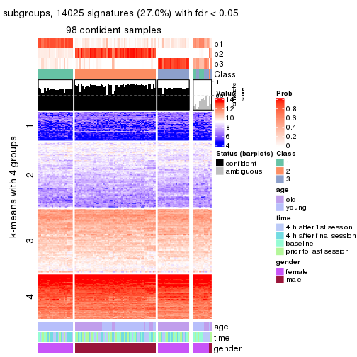
get_signatures(res, k = 4, scale_rows = FALSE)
get_signatures(res, k = 5, scale_rows = FALSE)
get_signatures(res, k = 6, scale_rows = FALSE)
Compare the overlap of signatures from different k:
compare_signatures(res)
get_signature() returns a data frame invisibly. TO get the list of signatures, the function
call should be assigned to a variable explicitly. In following code, if plot argument is set
to FALSE, no heatmap is plotted while only the differential analysis is performed.
# code only for demonstration
tb = get_signature(res, k = ..., plot = FALSE)
An example of the output of tb is:
#> which_row fdr mean_1 mean_2 scaled_mean_1 scaled_mean_2 km
#> 1 38 0.042760348 8.373488 9.131774 -0.5533452 0.5164555 1
#> 2 40 0.018707592 7.106213 8.469186 -0.6173731 0.5762149 1
#> 3 55 0.019134737 10.221463 11.207825 -0.6159697 0.5749050 1
#> 4 59 0.006059896 5.921854 7.869574 -0.6899429 0.6439467 1
#> 5 60 0.018055526 8.928898 10.211722 -0.6204761 0.5791110 1
#> 6 98 0.009384629 15.714769 14.887706 0.6635654 -0.6193277 2
...
The columns in tb are:
which_row: row indices corresponding to the input matrix.fdr: FDR for the differential test. mean_x: The mean value in group x.scaled_mean_x: The mean value in group x after rows are scaled.km: Row groups if k-means clustering is applied to rows.UMAP plot which shows how samples are separated.
dimension_reduction(res, k = 2, method = "UMAP")
dimension_reduction(res, k = 3, method = "UMAP")
dimension_reduction(res, k = 4, method = "UMAP")
dimension_reduction(res, k = 5, method = "UMAP")
dimension_reduction(res, k = 6, method = "UMAP")
Following heatmap shows how subgroups are split when increasing k:
collect_classes(res)
Test correlation between subgroups and known annotations. If the known annotation is numeric, one-way ANOVA test is applied, and if the known annotation is discrete, chi-squared contingency table test is applied.
test_to_known_factors(res)
#> n age(p) time(p) gender(p) k
#> MAD:NMF 89 1.64e-02 0.997 2.12e-19 2
#> MAD:NMF 98 2.04e-10 0.766 5.24e-22 3
#> MAD:NMF 87 2.97e-09 0.495 9.66e-19 4
#> MAD:NMF 75 2.55e-08 0.181 3.62e-16 5
#> MAD:NMF 31 1.86e-07 0.941 1.86e-07 6
If matrix rows can be associated to genes, consider to use GO_Enrichment(res,
...) to perform function enrichment for the signature genes.
The object with results only for a single top-value method and a single partition method can be extracted as:
res = res_list["ATC", "hclust"]
# you can also extract it by
# res = res_list["ATC:hclust"]
A summary of res and all the functions that can be applied to it:
res
#> A 'ConsensusPartition' object with k = 2, 3, 4, 5, 6.
#> On a matrix with 51941 rows and 110 columns.
#> Top rows (1000, 2000, 3000, 4000, 5000) are extracted by 'ATC' method.
#> Subgroups are detected by 'hclust' method.
#> Performed in total 1250 partitions by row resampling.
#> Best k for subgroups seems to be 2.
#>
#> Following methods can be applied to this 'ConsensusPartition' object:
#> [1] "cola_report" "collect_classes" "collect_plots"
#> [4] "collect_stats" "colnames" "compare_signatures"
#> [7] "consensus_heatmap" "dimension_reduction" "functional_enrichment"
#> [10] "get_anno_col" "get_anno" "get_classes"
#> [13] "get_consensus" "get_matrix" "get_membership"
#> [16] "get_param" "get_signatures" "get_stats"
#> [19] "is_best_k" "is_stable_k" "membership_heatmap"
#> [22] "ncol" "nrow" "plot_ecdf"
#> [25] "rownames" "select_partition_number" "show"
#> [28] "suggest_best_k" "test_to_known_factors"
collect_plots() function collects all the plots made from res for all k (number of partitions)
into one single page to provide an easy and fast comparison between different k.
collect_plots(res)

The plots are:
k and the heatmap of
predicted classes for each k.k.k.k.All the plots in panels can be made by individual functions and they are plotted later in this section.
select_partition_number() produces several plots showing different
statistics for choosing “optimized” k. There are following statistics:
k;k, the area increased is defined as \(A_k - A_{k-1}\).The detailed explanations of these statistics can be found in the cola vignette.
Generally speaking, lower PAC score, higher mean silhouette score or higher
concordance corresponds to better partition. Rand index and Jaccard index
measure how similar the current partition is compared to partition with k-1.
If they are too similar, we won't accept k is better than k-1.
select_partition_number(res)
The numeric values for all these statistics can be obtained by get_stats().
get_stats(res)
#> k 1-PAC mean_silhouette concordance area_increased Rand Jaccard
#> 2 2 1.000 1.000 1.000 0.1676 0.833 0.833
#> 3 3 0.574 0.792 0.907 2.2883 0.600 0.520
#> 4 4 0.587 0.774 0.885 0.0923 0.957 0.901
#> 5 5 0.588 0.669 0.784 0.1661 0.837 0.604
#> 6 6 0.604 0.634 0.794 0.0514 0.987 0.953
suggest_best_k() suggests the best \(k\) based on these statistics. The rules are as follows:
NA.suggest_best_k(res)
#> [1] 2
Following shows the table of the partitions (You need to click the show/hide
code output link to see it). The membership matrix (columns with name p*)
is inferred by
clue::cl_consensus()
function with the SE method. Basically the value in the membership matrix
represents the probability to belong to a certain group. The finall class
label for an item is determined with the group with highest probability it
belongs to.
In get_classes() function, the entropy is calculated from the membership
matrix and the silhouette score is calculated from the consensus matrix.
cbind(get_classes(res, k = 2), get_membership(res, k = 2))
#> class entropy silhouette p1 p2
#> GSM702357 1 0 1 1 0
#> GSM702358 1 0 1 1 0
#> GSM702359 2 0 1 0 1
#> GSM702360 1 0 1 1 0
#> GSM702361 1 0 1 1 0
#> GSM702362 1 0 1 1 0
#> GSM702363 1 0 1 1 0
#> GSM702364 1 0 1 1 0
#> GSM702413 1 0 1 1 0
#> GSM702414 1 0 1 1 0
#> GSM702415 1 0 1 1 0
#> GSM702416 1 0 1 1 0
#> GSM702417 1 0 1 1 0
#> GSM702418 1 0 1 1 0
#> GSM702419 1 0 1 1 0
#> GSM702365 1 0 1 1 0
#> GSM702366 1 0 1 1 0
#> GSM702367 1 0 1 1 0
#> GSM702368 2 0 1 0 1
#> GSM702369 1 0 1 1 0
#> GSM702370 1 0 1 1 0
#> GSM702371 1 0 1 1 0
#> GSM702372 2 0 1 0 1
#> GSM702420 1 0 1 1 0
#> GSM702421 1 0 1 1 0
#> GSM702422 1 0 1 1 0
#> GSM702423 1 0 1 1 0
#> GSM702424 1 0 1 1 0
#> GSM702425 1 0 1 1 0
#> GSM702426 1 0 1 1 0
#> GSM702427 1 0 1 1 0
#> GSM702373 1 0 1 1 0
#> GSM702374 2 0 1 0 1
#> GSM702375 1 0 1 1 0
#> GSM702376 1 0 1 1 0
#> GSM702377 1 0 1 1 0
#> GSM702378 1 0 1 1 0
#> GSM702379 1 0 1 1 0
#> GSM702380 1 0 1 1 0
#> GSM702428 1 0 1 1 0
#> GSM702429 1 0 1 1 0
#> GSM702430 2 0 1 0 1
#> GSM702431 1 0 1 1 0
#> GSM702432 1 0 1 1 0
#> GSM702433 1 0 1 1 0
#> GSM702434 1 0 1 1 0
#> GSM702381 1 0 1 1 0
#> GSM702382 1 0 1 1 0
#> GSM702383 1 0 1 1 0
#> GSM702384 1 0 1 1 0
#> GSM702385 1 0 1 1 0
#> GSM702386 1 0 1 1 0
#> GSM702387 1 0 1 1 0
#> GSM702388 1 0 1 1 0
#> GSM702435 1 0 1 1 0
#> GSM702436 1 0 1 1 0
#> GSM702437 2 0 1 0 1
#> GSM702438 2 0 1 0 1
#> GSM702439 1 0 1 1 0
#> GSM702440 1 0 1 1 0
#> GSM702441 1 0 1 1 0
#> GSM702442 2 0 1 0 1
#> GSM702389 1 0 1 1 0
#> GSM702390 1 0 1 1 0
#> GSM702391 1 0 1 1 0
#> GSM702392 1 0 1 1 0
#> GSM702393 2 0 1 0 1
#> GSM702394 1 0 1 1 0
#> GSM702443 1 0 1 1 0
#> GSM702444 1 0 1 1 0
#> GSM702445 1 0 1 1 0
#> GSM702446 1 0 1 1 0
#> GSM702447 1 0 1 1 0
#> GSM702448 1 0 1 1 0
#> GSM702395 1 0 1 1 0
#> GSM702396 1 0 1 1 0
#> GSM702397 1 0 1 1 0
#> GSM702398 1 0 1 1 0
#> GSM702399 1 0 1 1 0
#> GSM702400 1 0 1 1 0
#> GSM702449 1 0 1 1 0
#> GSM702450 1 0 1 1 0
#> GSM702451 1 0 1 1 0
#> GSM702452 1 0 1 1 0
#> GSM702453 1 0 1 1 0
#> GSM702454 1 0 1 1 0
#> GSM702401 1 0 1 1 0
#> GSM702402 1 0 1 1 0
#> GSM702403 1 0 1 1 0
#> GSM702404 1 0 1 1 0
#> GSM702405 1 0 1 1 0
#> GSM702406 1 0 1 1 0
#> GSM702455 1 0 1 1 0
#> GSM702456 1 0 1 1 0
#> GSM702457 1 0 1 1 0
#> GSM702458 1 0 1 1 0
#> GSM702459 1 0 1 1 0
#> GSM702460 1 0 1 1 0
#> GSM702407 1 0 1 1 0
#> GSM702408 1 0 1 1 0
#> GSM702409 2 0 1 0 1
#> GSM702410 1 0 1 1 0
#> GSM702411 1 0 1 1 0
#> GSM702412 1 0 1 1 0
#> GSM702461 1 0 1 1 0
#> GSM702462 1 0 1 1 0
#> GSM702463 1 0 1 1 0
#> GSM702464 1 0 1 1 0
#> GSM702465 1 0 1 1 0
#> GSM702466 1 0 1 1 0
cbind(get_classes(res, k = 3), get_membership(res, k = 3))
#> class entropy silhouette p1 p2 p3
#> GSM702357 3 0.0000 0.885 0 0.000 1.000
#> GSM702358 3 0.0000 0.885 0 0.000 1.000
#> GSM702359 1 0.0000 1.000 1 0.000 0.000
#> GSM702360 2 0.0000 0.833 0 1.000 0.000
#> GSM702361 2 0.0000 0.833 0 1.000 0.000
#> GSM702362 2 0.0000 0.833 0 1.000 0.000
#> GSM702363 3 0.0000 0.885 0 0.000 1.000
#> GSM702364 2 0.0000 0.833 0 1.000 0.000
#> GSM702413 3 0.0000 0.885 0 0.000 1.000
#> GSM702414 3 0.0000 0.885 0 0.000 1.000
#> GSM702415 3 0.4346 0.762 0 0.184 0.816
#> GSM702416 2 0.5529 0.607 0 0.704 0.296
#> GSM702417 2 0.4291 0.764 0 0.820 0.180
#> GSM702418 3 0.5216 0.661 0 0.260 0.740
#> GSM702419 3 0.5216 0.661 0 0.260 0.740
#> GSM702365 3 0.1529 0.872 0 0.040 0.960
#> GSM702366 3 0.0000 0.885 0 0.000 1.000
#> GSM702367 2 0.0000 0.833 0 1.000 0.000
#> GSM702368 1 0.0000 1.000 1 0.000 0.000
#> GSM702369 2 0.3116 0.810 0 0.892 0.108
#> GSM702370 2 0.1753 0.831 0 0.952 0.048
#> GSM702371 2 0.0000 0.833 0 1.000 0.000
#> GSM702372 1 0.0000 1.000 1 0.000 0.000
#> GSM702420 2 0.0000 0.833 0 1.000 0.000
#> GSM702421 3 0.0000 0.885 0 0.000 1.000
#> GSM702422 3 0.4346 0.762 0 0.184 0.816
#> GSM702423 2 0.0000 0.833 0 1.000 0.000
#> GSM702424 3 0.4887 0.706 0 0.228 0.772
#> GSM702425 2 0.3941 0.785 0 0.844 0.156
#> GSM702426 2 0.0000 0.833 0 1.000 0.000
#> GSM702427 3 0.5058 0.693 0 0.244 0.756
#> GSM702373 3 0.0000 0.885 0 0.000 1.000
#> GSM702374 1 0.0000 1.000 1 0.000 0.000
#> GSM702375 2 0.0000 0.833 0 1.000 0.000
#> GSM702376 2 0.0000 0.833 0 1.000 0.000
#> GSM702377 2 0.3267 0.804 0 0.884 0.116
#> GSM702378 2 0.6180 0.342 0 0.584 0.416
#> GSM702379 2 0.5621 0.589 0 0.692 0.308
#> GSM702380 2 0.6180 0.342 0 0.584 0.416
#> GSM702428 3 0.5465 0.611 0 0.288 0.712
#> GSM702429 3 0.0000 0.885 0 0.000 1.000
#> GSM702430 1 0.0000 1.000 1 0.000 0.000
#> GSM702431 3 0.5529 0.600 0 0.296 0.704
#> GSM702432 3 0.5327 0.643 0 0.272 0.728
#> GSM702433 2 0.0237 0.834 0 0.996 0.004
#> GSM702434 2 0.0237 0.834 0 0.996 0.004
#> GSM702381 3 0.2537 0.851 0 0.080 0.920
#> GSM702382 3 0.0000 0.885 0 0.000 1.000
#> GSM702383 3 0.0000 0.885 0 0.000 1.000
#> GSM702384 2 0.0000 0.833 0 1.000 0.000
#> GSM702385 2 0.3267 0.804 0 0.884 0.116
#> GSM702386 2 0.1753 0.831 0 0.952 0.048
#> GSM702387 2 0.6267 0.221 0 0.548 0.452
#> GSM702388 2 0.0892 0.834 0 0.980 0.020
#> GSM702435 3 0.6079 0.392 0 0.388 0.612
#> GSM702436 3 0.4750 0.730 0 0.216 0.784
#> GSM702437 1 0.0000 1.000 1 0.000 0.000
#> GSM702438 1 0.0000 1.000 1 0.000 0.000
#> GSM702439 2 0.1753 0.831 0 0.952 0.048
#> GSM702440 3 0.5363 0.636 0 0.276 0.724
#> GSM702441 2 0.0237 0.834 0 0.996 0.004
#> GSM702442 1 0.0000 1.000 1 0.000 0.000
#> GSM702389 3 0.0000 0.885 0 0.000 1.000
#> GSM702390 2 0.5560 0.605 0 0.700 0.300
#> GSM702391 2 0.0237 0.834 0 0.996 0.004
#> GSM702392 3 0.0592 0.883 0 0.012 0.988
#> GSM702393 1 0.0000 1.000 1 0.000 0.000
#> GSM702394 3 0.0592 0.883 0 0.012 0.988
#> GSM702443 3 0.0000 0.885 0 0.000 1.000
#> GSM702444 3 0.0000 0.885 0 0.000 1.000
#> GSM702445 3 0.1860 0.860 0 0.052 0.948
#> GSM702446 2 0.5529 0.607 0 0.704 0.296
#> GSM702447 3 0.6095 0.364 0 0.392 0.608
#> GSM702448 2 0.5948 0.475 0 0.640 0.360
#> GSM702395 3 0.0000 0.885 0 0.000 1.000
#> GSM702396 2 0.0000 0.833 0 1.000 0.000
#> GSM702397 3 0.0000 0.885 0 0.000 1.000
#> GSM702398 3 0.0592 0.883 0 0.012 0.988
#> GSM702399 2 0.0424 0.834 0 0.992 0.008
#> GSM702400 3 0.0592 0.883 0 0.012 0.988
#> GSM702449 3 0.0000 0.885 0 0.000 1.000
#> GSM702450 3 0.0000 0.885 0 0.000 1.000
#> GSM702451 3 0.5926 0.460 0 0.356 0.644
#> GSM702452 2 0.0237 0.834 0 0.996 0.004
#> GSM702453 3 0.0000 0.885 0 0.000 1.000
#> GSM702454 2 0.5968 0.465 0 0.636 0.364
#> GSM702401 3 0.0000 0.885 0 0.000 1.000
#> GSM702402 3 0.0000 0.885 0 0.000 1.000
#> GSM702403 2 0.5988 0.474 0 0.632 0.368
#> GSM702404 3 0.0592 0.883 0 0.012 0.988
#> GSM702405 2 0.2356 0.821 0 0.928 0.072
#> GSM702406 3 0.4178 0.774 0 0.172 0.828
#> GSM702455 3 0.0000 0.885 0 0.000 1.000
#> GSM702456 3 0.0000 0.885 0 0.000 1.000
#> GSM702457 3 0.1860 0.860 0 0.052 0.948
#> GSM702458 3 0.0000 0.885 0 0.000 1.000
#> GSM702459 3 0.0000 0.885 0 0.000 1.000
#> GSM702460 3 0.6095 0.364 0 0.392 0.608
#> GSM702407 3 0.0592 0.883 0 0.012 0.988
#> GSM702408 3 0.0000 0.885 0 0.000 1.000
#> GSM702409 1 0.0000 1.000 1 0.000 0.000
#> GSM702410 3 0.0592 0.883 0 0.012 0.988
#> GSM702411 2 0.4235 0.766 0 0.824 0.176
#> GSM702412 3 0.0592 0.883 0 0.012 0.988
#> GSM702461 3 0.0000 0.885 0 0.000 1.000
#> GSM702462 3 0.2959 0.834 0 0.100 0.900
#> GSM702463 3 0.1860 0.860 0 0.052 0.948
#> GSM702464 3 0.5706 0.554 0 0.320 0.680
#> GSM702465 3 0.0000 0.885 0 0.000 1.000
#> GSM702466 3 0.6095 0.364 0 0.392 0.608
cbind(get_classes(res, k = 4), get_membership(res, k = 4))
#> class entropy silhouette p1 p2 p3 p4
#> GSM702357 3 0.0000 0.874 0 0.000 1.000 0.000
#> GSM702358 3 0.0000 0.874 0 0.000 1.000 0.000
#> GSM702359 1 0.0000 1.000 1 0.000 0.000 0.000
#> GSM702360 2 0.3486 0.654 0 0.812 0.000 0.188
#> GSM702361 2 0.1940 0.706 0 0.924 0.000 0.076
#> GSM702362 2 0.3486 0.654 0 0.812 0.000 0.188
#> GSM702363 3 0.0000 0.874 0 0.000 1.000 0.000
#> GSM702364 2 0.1940 0.706 0 0.924 0.000 0.076
#> GSM702413 3 0.0000 0.874 0 0.000 1.000 0.000
#> GSM702414 3 0.0000 0.874 0 0.000 1.000 0.000
#> GSM702415 3 0.4057 0.752 0 0.160 0.812 0.028
#> GSM702416 2 0.4250 0.631 0 0.724 0.276 0.000
#> GSM702417 2 0.3925 0.731 0 0.808 0.176 0.016
#> GSM702418 3 0.4277 0.626 0 0.280 0.720 0.000
#> GSM702419 3 0.4277 0.626 0 0.280 0.720 0.000
#> GSM702365 3 0.1637 0.857 0 0.060 0.940 0.000
#> GSM702366 3 0.0000 0.874 0 0.000 1.000 0.000
#> GSM702367 4 0.1211 0.974 0 0.040 0.000 0.960
#> GSM702368 1 0.0000 1.000 1 0.000 0.000 0.000
#> GSM702369 2 0.2987 0.750 0 0.880 0.104 0.016
#> GSM702370 2 0.1888 0.745 0 0.940 0.044 0.016
#> GSM702371 4 0.0817 0.980 0 0.024 0.000 0.976
#> GSM702372 1 0.0000 1.000 1 0.000 0.000 0.000
#> GSM702420 4 0.0469 0.971 0 0.012 0.000 0.988
#> GSM702421 3 0.0000 0.874 0 0.000 1.000 0.000
#> GSM702422 3 0.4057 0.752 0 0.160 0.812 0.028
#> GSM702423 4 0.0817 0.980 0 0.024 0.000 0.976
#> GSM702424 3 0.4040 0.674 0 0.248 0.752 0.000
#> GSM702425 2 0.3647 0.741 0 0.832 0.152 0.016
#> GSM702426 4 0.0817 0.980 0 0.024 0.000 0.976
#> GSM702427 3 0.5022 0.677 0 0.220 0.736 0.044
#> GSM702373 3 0.0000 0.874 0 0.000 1.000 0.000
#> GSM702374 1 0.0000 1.000 1 0.000 0.000 0.000
#> GSM702375 4 0.0469 0.971 0 0.012 0.000 0.988
#> GSM702376 2 0.1022 0.713 0 0.968 0.000 0.032
#> GSM702377 2 0.4055 0.743 0 0.832 0.108 0.060
#> GSM702378 2 0.4843 0.402 0 0.604 0.396 0.000
#> GSM702379 2 0.4331 0.620 0 0.712 0.288 0.000
#> GSM702380 2 0.4843 0.402 0 0.604 0.396 0.000
#> GSM702428 3 0.4454 0.569 0 0.308 0.692 0.000
#> GSM702429 3 0.0000 0.874 0 0.000 1.000 0.000
#> GSM702430 1 0.0000 1.000 1 0.000 0.000 0.000
#> GSM702431 3 0.4500 0.560 0 0.316 0.684 0.000
#> GSM702432 3 0.4356 0.607 0 0.292 0.708 0.000
#> GSM702433 2 0.3074 0.680 0 0.848 0.000 0.152
#> GSM702434 2 0.3074 0.680 0 0.848 0.000 0.152
#> GSM702381 3 0.2466 0.836 0 0.096 0.900 0.004
#> GSM702382 3 0.0000 0.874 0 0.000 1.000 0.000
#> GSM702383 3 0.0000 0.874 0 0.000 1.000 0.000
#> GSM702384 2 0.1022 0.713 0 0.968 0.000 0.032
#> GSM702385 2 0.4055 0.743 0 0.832 0.108 0.060
#> GSM702386 2 0.1888 0.745 0 0.940 0.044 0.016
#> GSM702387 2 0.4933 0.294 0 0.568 0.432 0.000
#> GSM702388 2 0.2662 0.723 0 0.900 0.016 0.084
#> GSM702435 3 0.6106 0.379 0 0.348 0.592 0.060
#> GSM702436 3 0.4758 0.728 0 0.156 0.780 0.064
#> GSM702437 1 0.0000 1.000 1 0.000 0.000 0.000
#> GSM702438 1 0.0000 1.000 1 0.000 0.000 0.000
#> GSM702439 2 0.1888 0.745 0 0.940 0.044 0.016
#> GSM702440 3 0.4382 0.600 0 0.296 0.704 0.000
#> GSM702441 2 0.3074 0.680 0 0.848 0.000 0.152
#> GSM702442 1 0.0000 1.000 1 0.000 0.000 0.000
#> GSM702389 3 0.0000 0.874 0 0.000 1.000 0.000
#> GSM702390 2 0.5254 0.618 0 0.672 0.300 0.028
#> GSM702391 2 0.3105 0.686 0 0.856 0.004 0.140
#> GSM702392 3 0.0921 0.870 0 0.028 0.972 0.000
#> GSM702393 1 0.0000 1.000 1 0.000 0.000 0.000
#> GSM702394 3 0.0921 0.870 0 0.028 0.972 0.000
#> GSM702443 3 0.0000 0.874 0 0.000 1.000 0.000
#> GSM702444 3 0.0000 0.874 0 0.000 1.000 0.000
#> GSM702445 3 0.1867 0.846 0 0.072 0.928 0.000
#> GSM702446 2 0.4250 0.631 0 0.724 0.276 0.000
#> GSM702447 3 0.5050 0.298 0 0.408 0.588 0.004
#> GSM702448 2 0.7158 0.441 0 0.512 0.340 0.148
#> GSM702395 3 0.0000 0.874 0 0.000 1.000 0.000
#> GSM702396 4 0.1211 0.974 0 0.040 0.000 0.960
#> GSM702397 3 0.0000 0.874 0 0.000 1.000 0.000
#> GSM702398 3 0.0921 0.870 0 0.028 0.972 0.000
#> GSM702399 2 0.1356 0.720 0 0.960 0.008 0.032
#> GSM702400 3 0.0921 0.870 0 0.028 0.972 0.000
#> GSM702449 3 0.0188 0.873 0 0.004 0.996 0.000
#> GSM702450 3 0.0000 0.874 0 0.000 1.000 0.000
#> GSM702451 3 0.4776 0.398 0 0.376 0.624 0.000
#> GSM702452 4 0.1824 0.942 0 0.060 0.004 0.936
#> GSM702453 3 0.0592 0.871 0 0.016 0.984 0.000
#> GSM702454 2 0.7133 0.433 0 0.512 0.344 0.144
#> GSM702401 3 0.0000 0.874 0 0.000 1.000 0.000
#> GSM702402 3 0.0000 0.874 0 0.000 1.000 0.000
#> GSM702403 2 0.4661 0.517 0 0.652 0.348 0.000
#> GSM702404 3 0.0921 0.870 0 0.028 0.972 0.000
#> GSM702405 2 0.2142 0.740 0 0.928 0.056 0.016
#> GSM702406 3 0.3528 0.751 0 0.192 0.808 0.000
#> GSM702455 3 0.0000 0.874 0 0.000 1.000 0.000
#> GSM702456 3 0.0000 0.874 0 0.000 1.000 0.000
#> GSM702457 3 0.1867 0.846 0 0.072 0.928 0.000
#> GSM702458 3 0.0000 0.874 0 0.000 1.000 0.000
#> GSM702459 3 0.0592 0.871 0 0.016 0.984 0.000
#> GSM702460 3 0.5050 0.298 0 0.408 0.588 0.004
#> GSM702407 3 0.0817 0.871 0 0.024 0.976 0.000
#> GSM702408 3 0.0000 0.874 0 0.000 1.000 0.000
#> GSM702409 1 0.0000 1.000 1 0.000 0.000 0.000
#> GSM702410 3 0.0921 0.870 0 0.028 0.972 0.000
#> GSM702411 2 0.3743 0.725 0 0.824 0.160 0.016
#> GSM702412 3 0.0921 0.870 0 0.028 0.972 0.000
#> GSM702461 3 0.0000 0.874 0 0.000 1.000 0.000
#> GSM702462 3 0.2830 0.825 0 0.040 0.900 0.060
#> GSM702463 3 0.1867 0.846 0 0.072 0.928 0.000
#> GSM702464 3 0.5623 0.531 0 0.292 0.660 0.048
#> GSM702465 3 0.0000 0.874 0 0.000 1.000 0.000
#> GSM702466 3 0.5050 0.298 0 0.408 0.588 0.004
cbind(get_classes(res, k = 5), get_membership(res, k = 5))
#> class entropy silhouette p1 p2 p3 p4 p5
#> GSM702357 2 0.1792 0.8011 0.000 0.916 0.084 0.000 0
#> GSM702358 2 0.0162 0.8308 0.000 0.996 0.004 0.000 0
#> GSM702359 5 0.0000 1.0000 0.000 0.000 0.000 0.000 1
#> GSM702360 1 0.3608 0.6448 0.812 0.000 0.040 0.148 0
#> GSM702361 1 0.2230 0.7124 0.912 0.000 0.044 0.044 0
#> GSM702362 1 0.3608 0.6448 0.812 0.000 0.040 0.148 0
#> GSM702363 2 0.0162 0.8308 0.000 0.996 0.004 0.000 0
#> GSM702364 1 0.2230 0.7124 0.912 0.000 0.044 0.044 0
#> GSM702413 2 0.0000 0.8319 0.000 1.000 0.000 0.000 0
#> GSM702414 2 0.0000 0.8319 0.000 1.000 0.000 0.000 0
#> GSM702415 2 0.4786 0.2194 0.012 0.620 0.356 0.012 0
#> GSM702416 3 0.4067 0.0278 0.300 0.008 0.692 0.000 0
#> GSM702417 1 0.5220 0.4916 0.516 0.044 0.440 0.000 0
#> GSM702418 3 0.4455 0.4728 0.008 0.404 0.588 0.000 0
#> GSM702419 3 0.4455 0.4728 0.008 0.404 0.588 0.000 0
#> GSM702365 2 0.3398 0.6824 0.004 0.780 0.216 0.000 0
#> GSM702366 2 0.0290 0.8306 0.000 0.992 0.008 0.000 0
#> GSM702367 4 0.1251 0.9678 0.036 0.000 0.008 0.956 0
#> GSM702368 5 0.0000 1.0000 0.000 0.000 0.000 0.000 1
#> GSM702369 1 0.4620 0.6211 0.592 0.016 0.392 0.000 0
#> GSM702370 1 0.3816 0.7060 0.696 0.000 0.304 0.000 0
#> GSM702371 4 0.0771 0.9748 0.020 0.000 0.004 0.976 0
#> GSM702372 5 0.0000 1.0000 0.000 0.000 0.000 0.000 1
#> GSM702420 4 0.0000 0.9651 0.000 0.000 0.000 1.000 0
#> GSM702421 2 0.0404 0.8282 0.000 0.988 0.012 0.000 0
#> GSM702422 2 0.4786 0.2194 0.012 0.620 0.356 0.012 0
#> GSM702423 4 0.0566 0.9738 0.012 0.000 0.004 0.984 0
#> GSM702424 3 0.4517 0.3864 0.008 0.436 0.556 0.000 0
#> GSM702425 1 0.5014 0.5384 0.536 0.032 0.432 0.000 0
#> GSM702426 4 0.0771 0.9748 0.020 0.000 0.004 0.976 0
#> GSM702427 3 0.4774 0.3707 0.000 0.424 0.556 0.020 0
#> GSM702373 2 0.1792 0.8011 0.000 0.916 0.084 0.000 0
#> GSM702374 5 0.0000 1.0000 0.000 0.000 0.000 0.000 1
#> GSM702375 4 0.0290 0.9628 0.000 0.000 0.008 0.992 0
#> GSM702376 1 0.1732 0.6984 0.920 0.000 0.080 0.000 0
#> GSM702377 1 0.5355 0.6164 0.588 0.012 0.360 0.040 0
#> GSM702378 3 0.6216 0.3279 0.284 0.180 0.536 0.000 0
#> GSM702379 3 0.5715 -0.0487 0.388 0.088 0.524 0.000 0
#> GSM702380 3 0.6216 0.3279 0.284 0.180 0.536 0.000 0
#> GSM702428 3 0.5157 0.4006 0.040 0.440 0.520 0.000 0
#> GSM702429 2 0.0000 0.8319 0.000 1.000 0.000 0.000 0
#> GSM702430 5 0.0000 1.0000 0.000 0.000 0.000 0.000 1
#> GSM702431 3 0.5002 0.5462 0.040 0.364 0.596 0.000 0
#> GSM702432 3 0.4768 0.5150 0.024 0.384 0.592 0.000 0
#> GSM702433 1 0.5270 0.7252 0.672 0.000 0.208 0.120 0
#> GSM702434 1 0.5270 0.7252 0.672 0.000 0.208 0.120 0
#> GSM702381 2 0.4161 0.5527 0.016 0.704 0.280 0.000 0
#> GSM702382 2 0.0404 0.8282 0.000 0.988 0.012 0.000 0
#> GSM702383 2 0.0290 0.8306 0.000 0.992 0.008 0.000 0
#> GSM702384 1 0.1732 0.6984 0.920 0.000 0.080 0.000 0
#> GSM702385 1 0.5355 0.6164 0.588 0.012 0.360 0.040 0
#> GSM702386 1 0.3816 0.7060 0.696 0.000 0.304 0.000 0
#> GSM702387 3 0.6059 0.4068 0.244 0.184 0.572 0.000 0
#> GSM702388 1 0.4730 0.7233 0.688 0.000 0.260 0.052 0
#> GSM702435 3 0.6011 0.5866 0.052 0.316 0.588 0.044 0
#> GSM702436 2 0.5333 0.0800 0.004 0.564 0.384 0.048 0
#> GSM702437 5 0.0000 1.0000 0.000 0.000 0.000 0.000 1
#> GSM702438 5 0.0000 1.0000 0.000 0.000 0.000 0.000 1
#> GSM702439 1 0.3816 0.7060 0.696 0.000 0.304 0.000 0
#> GSM702440 3 0.4734 0.5306 0.024 0.372 0.604 0.000 0
#> GSM702441 1 0.5270 0.7252 0.672 0.000 0.208 0.120 0
#> GSM702442 5 0.0000 1.0000 0.000 0.000 0.000 0.000 1
#> GSM702389 2 0.0162 0.8308 0.000 0.996 0.004 0.000 0
#> GSM702390 1 0.6570 0.1786 0.440 0.212 0.348 0.000 0
#> GSM702391 1 0.4316 0.7253 0.772 0.000 0.108 0.120 0
#> GSM702392 2 0.3242 0.6881 0.000 0.784 0.216 0.000 0
#> GSM702393 5 0.0000 1.0000 0.000 0.000 0.000 0.000 1
#> GSM702394 2 0.3242 0.6881 0.000 0.784 0.216 0.000 0
#> GSM702443 2 0.0404 0.8310 0.000 0.988 0.012 0.000 0
#> GSM702444 2 0.0404 0.8310 0.000 0.988 0.012 0.000 0
#> GSM702445 2 0.4150 0.3496 0.000 0.612 0.388 0.000 0
#> GSM702446 3 0.4067 0.0278 0.300 0.008 0.692 0.000 0
#> GSM702447 3 0.4042 0.6144 0.032 0.212 0.756 0.000 0
#> GSM702448 3 0.4605 0.2886 0.104 0.012 0.768 0.116 0
#> GSM702395 2 0.0162 0.8308 0.000 0.996 0.004 0.000 0
#> GSM702396 4 0.1251 0.9678 0.036 0.000 0.008 0.956 0
#> GSM702397 2 0.0162 0.8308 0.000 0.996 0.004 0.000 0
#> GSM702398 2 0.3242 0.6881 0.000 0.784 0.216 0.000 0
#> GSM702399 1 0.3684 0.6703 0.720 0.000 0.280 0.000 0
#> GSM702400 2 0.3242 0.6881 0.000 0.784 0.216 0.000 0
#> GSM702449 2 0.1478 0.8150 0.000 0.936 0.064 0.000 0
#> GSM702450 2 0.0404 0.8310 0.000 0.988 0.012 0.000 0
#> GSM702451 3 0.4479 0.6228 0.036 0.264 0.700 0.000 0
#> GSM702452 4 0.2104 0.9278 0.024 0.000 0.060 0.916 0
#> GSM702453 2 0.1478 0.8126 0.000 0.936 0.064 0.000 0
#> GSM702454 3 0.4654 0.2995 0.100 0.016 0.768 0.116 0
#> GSM702401 2 0.0000 0.8319 0.000 1.000 0.000 0.000 0
#> GSM702402 2 0.0000 0.8319 0.000 1.000 0.000 0.000 0
#> GSM702403 3 0.6009 0.2027 0.320 0.136 0.544 0.000 0
#> GSM702404 2 0.3242 0.6881 0.000 0.784 0.216 0.000 0
#> GSM702405 1 0.4251 0.5413 0.624 0.004 0.372 0.000 0
#> GSM702406 2 0.4958 0.1960 0.036 0.592 0.372 0.000 0
#> GSM702455 2 0.0404 0.8310 0.000 0.988 0.012 0.000 0
#> GSM702456 2 0.0404 0.8310 0.000 0.988 0.012 0.000 0
#> GSM702457 2 0.4150 0.3496 0.000 0.612 0.388 0.000 0
#> GSM702458 2 0.0963 0.8256 0.000 0.964 0.036 0.000 0
#> GSM702459 2 0.1410 0.8148 0.000 0.940 0.060 0.000 0
#> GSM702460 3 0.4042 0.6144 0.032 0.212 0.756 0.000 0
#> GSM702407 2 0.1792 0.8046 0.000 0.916 0.084 0.000 0
#> GSM702408 2 0.0162 0.8308 0.000 0.996 0.004 0.000 0
#> GSM702409 5 0.0000 1.0000 0.000 0.000 0.000 0.000 1
#> GSM702410 2 0.3242 0.6881 0.000 0.784 0.216 0.000 0
#> GSM702411 1 0.5341 0.3529 0.504 0.052 0.444 0.000 0
#> GSM702412 2 0.3242 0.6881 0.000 0.784 0.216 0.000 0
#> GSM702461 2 0.0404 0.8310 0.000 0.988 0.012 0.000 0
#> GSM702462 2 0.4295 0.6060 0.000 0.740 0.216 0.044 0
#> GSM702463 2 0.4150 0.3496 0.000 0.612 0.388 0.000 0
#> GSM702464 3 0.5455 0.4257 0.040 0.336 0.604 0.020 0
#> GSM702465 2 0.0404 0.8282 0.000 0.988 0.012 0.000 0
#> GSM702466 3 0.4042 0.6144 0.032 0.212 0.756 0.000 0
cbind(get_classes(res, k = 6), get_membership(res, k = 6))
#> class entropy silhouette p1 p2 p3 p4 p5 p6
#> GSM702357 2 0.3828 0.6783 0 0.776 0.124 0.100 0.000 0.000
#> GSM702358 2 0.0000 0.7877 0 1.000 0.000 0.000 0.000 0.000
#> GSM702359 1 0.0000 1.0000 1 0.000 0.000 0.000 0.000 0.000
#> GSM702360 6 0.2833 0.5196 0 0.000 0.012 0.024 0.104 0.860
#> GSM702361 6 0.0870 0.5872 0 0.000 0.004 0.012 0.012 0.972
#> GSM702362 6 0.2833 0.5196 0 0.000 0.012 0.024 0.104 0.860
#> GSM702363 2 0.0000 0.7877 0 1.000 0.000 0.000 0.000 0.000
#> GSM702364 6 0.0870 0.5872 0 0.000 0.004 0.012 0.012 0.972
#> GSM702413 2 0.0146 0.7886 0 0.996 0.004 0.000 0.000 0.000
#> GSM702414 2 0.0146 0.7886 0 0.996 0.004 0.000 0.000 0.000
#> GSM702415 2 0.5373 0.0764 0 0.520 0.408 0.040 0.008 0.024
#> GSM702416 3 0.3615 0.2020 0 0.000 0.700 0.008 0.000 0.292
#> GSM702417 6 0.3975 0.4916 0 0.000 0.452 0.004 0.000 0.544
#> GSM702418 3 0.4141 0.5319 0 0.296 0.676 0.008 0.000 0.020
#> GSM702419 3 0.4141 0.5319 0 0.296 0.676 0.008 0.000 0.020
#> GSM702365 2 0.5068 0.5124 0 0.620 0.272 0.104 0.000 0.004
#> GSM702366 2 0.0146 0.7877 0 0.996 0.004 0.000 0.000 0.000
#> GSM702367 5 0.1477 0.9447 0 0.000 0.004 0.008 0.940 0.048
#> GSM702368 1 0.0000 1.0000 1 0.000 0.000 0.000 0.000 0.000
#> GSM702369 6 0.3830 0.6201 0 0.000 0.376 0.004 0.000 0.620
#> GSM702370 6 0.3383 0.6978 0 0.000 0.268 0.004 0.000 0.728
#> GSM702371 5 0.0692 0.9585 0 0.000 0.004 0.000 0.976 0.020
#> GSM702372 1 0.0000 1.0000 1 0.000 0.000 0.000 0.000 0.000
#> GSM702420 5 0.0363 0.9450 0 0.000 0.000 0.012 0.988 0.000
#> GSM702421 2 0.0520 0.7844 0 0.984 0.008 0.008 0.000 0.000
#> GSM702422 2 0.5373 0.0764 0 0.520 0.408 0.040 0.008 0.024
#> GSM702423 5 0.0951 0.9572 0 0.000 0.004 0.008 0.968 0.020
#> GSM702424 3 0.4423 0.4762 0 0.320 0.644 0.016 0.000 0.020
#> GSM702425 6 0.3817 0.5361 0 0.000 0.432 0.000 0.000 0.568
#> GSM702426 5 0.0692 0.9585 0 0.000 0.004 0.000 0.976 0.020
#> GSM702427 3 0.4978 0.4124 0 0.344 0.592 0.052 0.008 0.004
#> GSM702373 2 0.3828 0.6783 0 0.776 0.124 0.100 0.000 0.000
#> GSM702374 1 0.0000 1.0000 1 0.000 0.000 0.000 0.000 0.000
#> GSM702375 5 0.0891 0.9373 0 0.000 0.008 0.024 0.968 0.000
#> GSM702376 6 0.2883 0.3526 0 0.000 0.000 0.212 0.000 0.788
#> GSM702377 6 0.3925 0.6168 0 0.000 0.332 0.004 0.008 0.656
#> GSM702378 3 0.5306 0.2858 0 0.100 0.576 0.008 0.000 0.316
#> GSM702379 3 0.5573 -0.0408 0 0.068 0.484 0.028 0.000 0.420
#> GSM702380 3 0.5306 0.2858 0 0.100 0.576 0.008 0.000 0.316
#> GSM702428 3 0.5192 0.5087 0 0.296 0.616 0.056 0.000 0.032
#> GSM702429 2 0.0146 0.7886 0 0.996 0.004 0.000 0.000 0.000
#> GSM702430 1 0.0000 1.0000 1 0.000 0.000 0.000 0.000 0.000
#> GSM702431 3 0.4476 0.5812 0 0.268 0.676 0.008 0.000 0.048
#> GSM702432 3 0.4546 0.5569 0 0.288 0.660 0.012 0.000 0.040
#> GSM702433 6 0.4437 0.6959 0 0.000 0.188 0.004 0.092 0.716
#> GSM702434 6 0.4437 0.6959 0 0.000 0.188 0.004 0.092 0.716
#> GSM702381 2 0.5548 0.3816 0 0.568 0.320 0.084 0.000 0.028
#> GSM702382 2 0.0972 0.7797 0 0.964 0.008 0.028 0.000 0.000
#> GSM702383 2 0.0146 0.7877 0 0.996 0.004 0.000 0.000 0.000
#> GSM702384 6 0.2883 0.3526 0 0.000 0.000 0.212 0.000 0.788
#> GSM702385 6 0.3925 0.6168 0 0.000 0.332 0.004 0.008 0.656
#> GSM702386 6 0.3383 0.6978 0 0.000 0.268 0.004 0.000 0.728
#> GSM702387 3 0.5831 0.3781 0 0.120 0.576 0.036 0.000 0.268
#> GSM702388 6 0.4064 0.7063 0 0.000 0.236 0.004 0.040 0.720
#> GSM702435 3 0.5813 0.5733 0 0.236 0.632 0.044 0.036 0.052
#> GSM702436 2 0.5518 0.0444 0 0.504 0.412 0.048 0.032 0.004
#> GSM702437 1 0.0000 1.0000 1 0.000 0.000 0.000 0.000 0.000
#> GSM702438 1 0.0000 1.0000 1 0.000 0.000 0.000 0.000 0.000
#> GSM702439 6 0.3383 0.6978 0 0.000 0.268 0.004 0.000 0.728
#> GSM702440 3 0.4489 0.5702 0 0.276 0.672 0.012 0.000 0.040
#> GSM702441 6 0.4437 0.6959 0 0.000 0.188 0.004 0.092 0.716
#> GSM702442 1 0.0000 1.0000 1 0.000 0.000 0.000 0.000 0.000
#> GSM702389 2 0.0000 0.7877 0 1.000 0.000 0.000 0.000 0.000
#> GSM702390 4 0.5837 0.5600 0 0.072 0.260 0.592 0.000 0.076
#> GSM702391 6 0.2988 0.6231 0 0.000 0.060 0.004 0.084 0.852
#> GSM702392 2 0.4229 0.5676 0 0.668 0.292 0.040 0.000 0.000
#> GSM702393 1 0.0000 1.0000 1 0.000 0.000 0.000 0.000 0.000
#> GSM702394 2 0.4229 0.5676 0 0.668 0.292 0.040 0.000 0.000
#> GSM702443 2 0.0717 0.7864 0 0.976 0.016 0.008 0.000 0.000
#> GSM702444 2 0.0717 0.7864 0 0.976 0.016 0.008 0.000 0.000
#> GSM702445 2 0.4258 0.2159 0 0.516 0.468 0.016 0.000 0.000
#> GSM702446 3 0.3615 0.2020 0 0.000 0.700 0.008 0.000 0.292
#> GSM702447 3 0.2804 0.5640 0 0.120 0.852 0.024 0.000 0.004
#> GSM702448 3 0.4290 0.3772 0 0.000 0.776 0.048 0.100 0.076
#> GSM702395 2 0.0000 0.7877 0 1.000 0.000 0.000 0.000 0.000
#> GSM702396 5 0.1477 0.9447 0 0.000 0.004 0.008 0.940 0.048
#> GSM702397 2 0.0000 0.7877 0 1.000 0.000 0.000 0.000 0.000
#> GSM702398 2 0.4229 0.5676 0 0.668 0.292 0.040 0.000 0.000
#> GSM702399 4 0.5138 0.6047 0 0.000 0.128 0.604 0.000 0.268
#> GSM702400 2 0.4229 0.5676 0 0.668 0.292 0.040 0.000 0.000
#> GSM702449 2 0.1866 0.7655 0 0.908 0.084 0.008 0.000 0.000
#> GSM702450 2 0.0914 0.7854 0 0.968 0.016 0.016 0.000 0.000
#> GSM702451 3 0.3309 0.5619 0 0.172 0.800 0.024 0.000 0.004
#> GSM702452 5 0.2775 0.8882 0 0.000 0.048 0.040 0.880 0.032
#> GSM702453 2 0.1757 0.7675 0 0.916 0.076 0.008 0.000 0.000
#> GSM702454 3 0.4244 0.3807 0 0.000 0.780 0.048 0.096 0.076
#> GSM702401 2 0.0146 0.7886 0 0.996 0.004 0.000 0.000 0.000
#> GSM702402 2 0.0146 0.7886 0 0.996 0.004 0.000 0.000 0.000
#> GSM702403 3 0.5083 0.2047 0 0.080 0.572 0.004 0.000 0.344
#> GSM702404 2 0.4229 0.5676 0 0.668 0.292 0.040 0.000 0.000
#> GSM702405 4 0.3422 0.6885 0 0.000 0.040 0.792 0.000 0.168
#> GSM702406 2 0.5114 0.0259 0 0.484 0.456 0.020 0.000 0.040
#> GSM702455 2 0.0717 0.7864 0 0.976 0.016 0.008 0.000 0.000
#> GSM702456 2 0.0717 0.7864 0 0.976 0.016 0.008 0.000 0.000
#> GSM702457 2 0.4258 0.2159 0 0.516 0.468 0.016 0.000 0.000
#> GSM702458 2 0.1333 0.7800 0 0.944 0.048 0.008 0.000 0.000
#> GSM702459 2 0.1701 0.7696 0 0.920 0.072 0.008 0.000 0.000
#> GSM702460 3 0.2848 0.5662 0 0.124 0.848 0.024 0.000 0.004
#> GSM702407 2 0.2412 0.7518 0 0.880 0.092 0.028 0.000 0.000
#> GSM702408 2 0.0000 0.7877 0 1.000 0.000 0.000 0.000 0.000
#> GSM702409 1 0.0000 1.0000 1 0.000 0.000 0.000 0.000 0.000
#> GSM702410 2 0.4229 0.5676 0 0.668 0.292 0.040 0.000 0.000
#> GSM702411 4 0.4821 0.7016 0 0.032 0.132 0.720 0.000 0.116
#> GSM702412 2 0.4229 0.5676 0 0.668 0.292 0.040 0.000 0.000
#> GSM702461 2 0.0717 0.7864 0 0.976 0.016 0.008 0.000 0.000
#> GSM702462 2 0.4601 0.5686 0 0.700 0.228 0.044 0.028 0.000
#> GSM702463 2 0.4258 0.2159 0 0.516 0.468 0.016 0.000 0.000
#> GSM702464 3 0.6102 0.2192 0 0.300 0.440 0.256 0.004 0.000
#> GSM702465 2 0.0520 0.7844 0 0.984 0.008 0.008 0.000 0.000
#> GSM702466 3 0.2848 0.5662 0 0.124 0.848 0.024 0.000 0.004
Heatmaps for the consensus matrix. It visualizes the probability of two samples to be in a same group.
consensus_heatmap(res, k = 2)
consensus_heatmap(res, k = 3)
consensus_heatmap(res, k = 4)
consensus_heatmap(res, k = 5)
consensus_heatmap(res, k = 6)
Heatmaps for the membership of samples in all partitions to see how consistent they are:
membership_heatmap(res, k = 2)
membership_heatmap(res, k = 3)
membership_heatmap(res, k = 4)
membership_heatmap(res, k = 5)
membership_heatmap(res, k = 6)

As soon as we have had the classes for columns, we can look for signatures which are significantly different between classes which can be candidate marks for certain classes. Following are the heatmaps for signatures.
Signature heatmaps where rows are scaled:
get_signatures(res, k = 2)
get_signatures(res, k = 3)
get_signatures(res, k = 4)
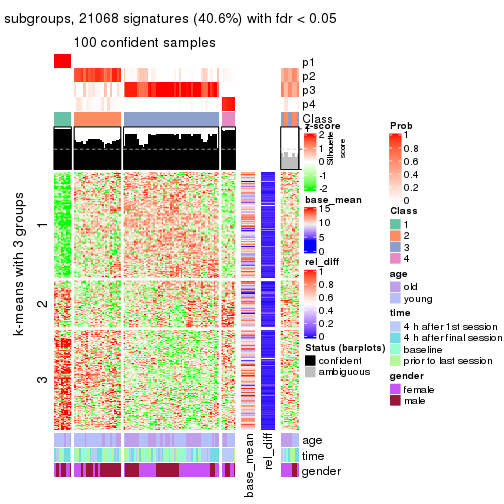
get_signatures(res, k = 5)
get_signatures(res, k = 6)
Signature heatmaps where rows are not scaled:
get_signatures(res, k = 2, scale_rows = FALSE)
get_signatures(res, k = 3, scale_rows = FALSE)
get_signatures(res, k = 4, scale_rows = FALSE)
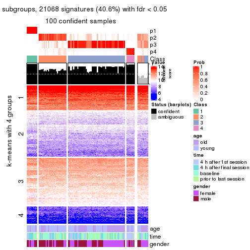
get_signatures(res, k = 5, scale_rows = FALSE)
get_signatures(res, k = 6, scale_rows = FALSE)
Compare the overlap of signatures from different k:
compare_signatures(res)
get_signature() returns a data frame invisibly. TO get the list of signatures, the function
call should be assigned to a variable explicitly. In following code, if plot argument is set
to FALSE, no heatmap is plotted while only the differential analysis is performed.
# code only for demonstration
tb = get_signature(res, k = ..., plot = FALSE)
An example of the output of tb is:
#> which_row fdr mean_1 mean_2 scaled_mean_1 scaled_mean_2 km
#> 1 38 0.042760348 8.373488 9.131774 -0.5533452 0.5164555 1
#> 2 40 0.018707592 7.106213 8.469186 -0.6173731 0.5762149 1
#> 3 55 0.019134737 10.221463 11.207825 -0.6159697 0.5749050 1
#> 4 59 0.006059896 5.921854 7.869574 -0.6899429 0.6439467 1
#> 5 60 0.018055526 8.928898 10.211722 -0.6204761 0.5791110 1
#> 6 98 0.009384629 15.714769 14.887706 0.6635654 -0.6193277 2
...
The columns in tb are:
which_row: row indices corresponding to the input matrix.fdr: FDR for the differential test. mean_x: The mean value in group x.scaled_mean_x: The mean value in group x after rows are scaled.km: Row groups if k-means clustering is applied to rows.UMAP plot which shows how samples are separated.
dimension_reduction(res, k = 2, method = "UMAP")
dimension_reduction(res, k = 3, method = "UMAP")
dimension_reduction(res, k = 4, method = "UMAP")
dimension_reduction(res, k = 5, method = "UMAP")
dimension_reduction(res, k = 6, method = "UMAP")

Following heatmap shows how subgroups are split when increasing k:
collect_classes(res)
Test correlation between subgroups and known annotations. If the known annotation is numeric, one-way ANOVA test is applied, and if the known annotation is discrete, chi-squared contingency table test is applied.
test_to_known_factors(res)
#> n age(p) time(p) gender(p) k
#> ATC:hclust 110 2.13e-01 0.7463 0.78608 2
#> ATC:hclust 99 3.28e-03 0.8877 0.13603 3
#> ATC:hclust 100 1.50e-02 0.0208 0.14277 4
#> ATC:hclust 85 9.33e-04 0.1067 0.00924 5
#> ATC:hclust 87 5.25e-05 0.1918 0.00276 6
If matrix rows can be associated to genes, consider to use GO_Enrichment(res,
...) to perform function enrichment for the signature genes.
The object with results only for a single top-value method and a single partition method can be extracted as:
res = res_list["ATC", "kmeans"]
# you can also extract it by
# res = res_list["ATC:kmeans"]
A summary of res and all the functions that can be applied to it:
res
#> A 'ConsensusPartition' object with k = 2, 3, 4, 5, 6.
#> On a matrix with 51941 rows and 110 columns.
#> Top rows (1000, 2000, 3000, 4000, 5000) are extracted by 'ATC' method.
#> Subgroups are detected by 'kmeans' method.
#> Performed in total 1250 partitions by row resampling.
#> Best k for subgroups seems to be 2.
#>
#> Following methods can be applied to this 'ConsensusPartition' object:
#> [1] "cola_report" "collect_classes" "collect_plots"
#> [4] "collect_stats" "colnames" "compare_signatures"
#> [7] "consensus_heatmap" "dimension_reduction" "functional_enrichment"
#> [10] "get_anno_col" "get_anno" "get_classes"
#> [13] "get_consensus" "get_matrix" "get_membership"
#> [16] "get_param" "get_signatures" "get_stats"
#> [19] "is_best_k" "is_stable_k" "membership_heatmap"
#> [22] "ncol" "nrow" "plot_ecdf"
#> [25] "rownames" "select_partition_number" "show"
#> [28] "suggest_best_k" "test_to_known_factors"
collect_plots() function collects all the plots made from res for all k (number of partitions)
into one single page to provide an easy and fast comparison between different k.
collect_plots(res)
The plots are:
k and the heatmap of
predicted classes for each k.k.k.k.All the plots in panels can be made by individual functions and they are plotted later in this section.
select_partition_number() produces several plots showing different
statistics for choosing “optimized” k. There are following statistics:
k;k, the area increased is defined as \(A_k - A_{k-1}\).The detailed explanations of these statistics can be found in the cola vignette.
Generally speaking, lower PAC score, higher mean silhouette score or higher
concordance corresponds to better partition. Rand index and Jaccard index
measure how similar the current partition is compared to partition with k-1.
If they are too similar, we won't accept k is better than k-1.
select_partition_number(res)
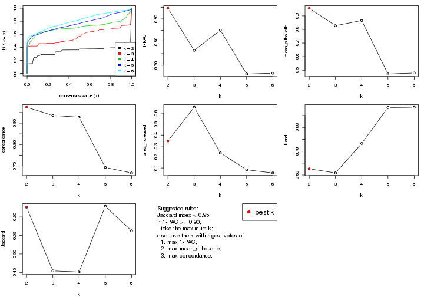
The numeric values for all these statistics can be obtained by get_stats().
get_stats(res)
#> k 1-PAC mean_silhouette concordance area_increased Rand Jaccard
#> 2 2 0.946 0.956 0.975 0.3464 0.626 0.626
#> 3 3 0.764 0.828 0.936 0.6536 0.609 0.454
#> 4 4 0.851 0.866 0.928 0.2374 0.733 0.451
#> 5 5 0.662 0.473 0.693 0.0835 0.884 0.629
#> 6 6 0.666 0.480 0.667 0.0547 0.885 0.563
suggest_best_k() suggests the best \(k\) based on these statistics. The rules are as follows:
NA.suggest_best_k(res)
#> [1] 2
Following shows the table of the partitions (You need to click the show/hide
code output link to see it). The membership matrix (columns with name p*)
is inferred by
clue::cl_consensus()
function with the SE method. Basically the value in the membership matrix
represents the probability to belong to a certain group. The finall class
label for an item is determined with the group with highest probability it
belongs to.
In get_classes() function, the entropy is calculated from the membership
matrix and the silhouette score is calculated from the consensus matrix.
cbind(get_classes(res, k = 2), get_membership(res, k = 2))
#> class entropy silhouette p1 p2
#> GSM702357 1 0.000 0.998 1.000 0.000
#> GSM702358 1 0.000 0.998 1.000 0.000
#> GSM702359 2 0.000 0.896 0.000 1.000
#> GSM702360 2 0.311 0.901 0.056 0.944
#> GSM702361 2 0.833 0.732 0.264 0.736
#> GSM702362 2 0.000 0.896 0.000 1.000
#> GSM702363 1 0.000 0.998 1.000 0.000
#> GSM702364 2 0.839 0.727 0.268 0.732
#> GSM702413 1 0.000 0.998 1.000 0.000
#> GSM702414 1 0.000 0.998 1.000 0.000
#> GSM702415 1 0.000 0.998 1.000 0.000
#> GSM702416 1 0.000 0.998 1.000 0.000
#> GSM702417 1 0.000 0.998 1.000 0.000
#> GSM702418 1 0.000 0.998 1.000 0.000
#> GSM702419 1 0.000 0.998 1.000 0.000
#> GSM702365 1 0.000 0.998 1.000 0.000
#> GSM702366 1 0.000 0.998 1.000 0.000
#> GSM702367 2 0.311 0.901 0.056 0.944
#> GSM702368 2 0.000 0.896 0.000 1.000
#> GSM702369 1 0.000 0.998 1.000 0.000
#> GSM702370 1 0.000 0.998 1.000 0.000
#> GSM702371 2 0.311 0.901 0.056 0.944
#> GSM702372 2 0.000 0.896 0.000 1.000
#> GSM702420 2 0.343 0.898 0.064 0.936
#> GSM702421 1 0.000 0.998 1.000 0.000
#> GSM702422 1 0.000 0.998 1.000 0.000
#> GSM702423 2 0.311 0.901 0.056 0.944
#> GSM702424 1 0.000 0.998 1.000 0.000
#> GSM702425 1 0.000 0.998 1.000 0.000
#> GSM702426 2 0.311 0.901 0.056 0.944
#> GSM702427 1 0.000 0.998 1.000 0.000
#> GSM702373 1 0.000 0.998 1.000 0.000
#> GSM702374 2 0.000 0.896 0.000 1.000
#> GSM702375 2 0.311 0.901 0.056 0.944
#> GSM702376 2 1.000 0.205 0.496 0.504
#> GSM702377 1 0.000 0.998 1.000 0.000
#> GSM702378 1 0.000 0.998 1.000 0.000
#> GSM702379 1 0.000 0.998 1.000 0.000
#> GSM702380 1 0.000 0.998 1.000 0.000
#> GSM702428 1 0.000 0.998 1.000 0.000
#> GSM702429 1 0.000 0.998 1.000 0.000
#> GSM702430 2 0.000 0.896 0.000 1.000
#> GSM702431 1 0.000 0.998 1.000 0.000
#> GSM702432 1 0.000 0.998 1.000 0.000
#> GSM702433 2 0.469 0.881 0.100 0.900
#> GSM702434 1 0.000 0.998 1.000 0.000
#> GSM702381 1 0.000 0.998 1.000 0.000
#> GSM702382 1 0.000 0.998 1.000 0.000
#> GSM702383 1 0.000 0.998 1.000 0.000
#> GSM702384 2 0.913 0.635 0.328 0.672
#> GSM702385 1 0.000 0.998 1.000 0.000
#> GSM702386 1 0.000 0.998 1.000 0.000
#> GSM702387 1 0.000 0.998 1.000 0.000
#> GSM702388 2 0.839 0.727 0.268 0.732
#> GSM702435 1 0.000 0.998 1.000 0.000
#> GSM702436 1 0.000 0.998 1.000 0.000
#> GSM702437 2 0.000 0.896 0.000 1.000
#> GSM702438 2 0.000 0.896 0.000 1.000
#> GSM702439 1 0.000 0.998 1.000 0.000
#> GSM702440 1 0.000 0.998 1.000 0.000
#> GSM702441 2 0.913 0.635 0.328 0.672
#> GSM702442 2 0.000 0.896 0.000 1.000
#> GSM702389 1 0.000 0.998 1.000 0.000
#> GSM702390 1 0.000 0.998 1.000 0.000
#> GSM702391 1 0.388 0.906 0.924 0.076
#> GSM702392 1 0.000 0.998 1.000 0.000
#> GSM702393 2 0.000 0.896 0.000 1.000
#> GSM702394 1 0.000 0.998 1.000 0.000
#> GSM702443 1 0.000 0.998 1.000 0.000
#> GSM702444 1 0.000 0.998 1.000 0.000
#> GSM702445 1 0.000 0.998 1.000 0.000
#> GSM702446 1 0.000 0.998 1.000 0.000
#> GSM702447 1 0.000 0.998 1.000 0.000
#> GSM702448 1 0.000 0.998 1.000 0.000
#> GSM702395 1 0.000 0.998 1.000 0.000
#> GSM702396 2 0.552 0.861 0.128 0.872
#> GSM702397 1 0.000 0.998 1.000 0.000
#> GSM702398 1 0.000 0.998 1.000 0.000
#> GSM702399 1 0.242 0.952 0.960 0.040
#> GSM702400 1 0.000 0.998 1.000 0.000
#> GSM702449 1 0.000 0.998 1.000 0.000
#> GSM702450 1 0.000 0.998 1.000 0.000
#> GSM702451 1 0.000 0.998 1.000 0.000
#> GSM702452 2 0.469 0.881 0.100 0.900
#> GSM702453 1 0.000 0.998 1.000 0.000
#> GSM702454 1 0.000 0.998 1.000 0.000
#> GSM702401 1 0.000 0.998 1.000 0.000
#> GSM702402 1 0.000 0.998 1.000 0.000
#> GSM702403 1 0.000 0.998 1.000 0.000
#> GSM702404 1 0.000 0.998 1.000 0.000
#> GSM702405 1 0.000 0.998 1.000 0.000
#> GSM702406 1 0.000 0.998 1.000 0.000
#> GSM702455 1 0.000 0.998 1.000 0.000
#> GSM702456 1 0.000 0.998 1.000 0.000
#> GSM702457 1 0.000 0.998 1.000 0.000
#> GSM702458 1 0.000 0.998 1.000 0.000
#> GSM702459 1 0.000 0.998 1.000 0.000
#> GSM702460 1 0.000 0.998 1.000 0.000
#> GSM702407 1 0.000 0.998 1.000 0.000
#> GSM702408 1 0.000 0.998 1.000 0.000
#> GSM702409 2 0.000 0.896 0.000 1.000
#> GSM702410 1 0.000 0.998 1.000 0.000
#> GSM702411 1 0.000 0.998 1.000 0.000
#> GSM702412 1 0.000 0.998 1.000 0.000
#> GSM702461 1 0.000 0.998 1.000 0.000
#> GSM702462 1 0.000 0.998 1.000 0.000
#> GSM702463 1 0.000 0.998 1.000 0.000
#> GSM702464 1 0.000 0.998 1.000 0.000
#> GSM702465 1 0.000 0.998 1.000 0.000
#> GSM702466 1 0.000 0.998 1.000 0.000
cbind(get_classes(res, k = 3), get_membership(res, k = 3))
#> class entropy silhouette p1 p2 p3
#> GSM702357 3 0.0000 0.9460 0 0.000 1.000
#> GSM702358 3 0.0000 0.9460 0 0.000 1.000
#> GSM702359 1 0.0000 1.0000 1 0.000 0.000
#> GSM702360 2 0.0000 0.8627 0 1.000 0.000
#> GSM702361 2 0.0000 0.8627 0 1.000 0.000
#> GSM702362 2 0.0000 0.8627 0 1.000 0.000
#> GSM702363 3 0.0000 0.9460 0 0.000 1.000
#> GSM702364 2 0.0000 0.8627 0 1.000 0.000
#> GSM702413 3 0.0000 0.9460 0 0.000 1.000
#> GSM702414 3 0.0000 0.9460 0 0.000 1.000
#> GSM702415 2 0.6267 0.2671 0 0.548 0.452
#> GSM702416 2 0.0000 0.8627 0 1.000 0.000
#> GSM702417 2 0.0000 0.8627 0 1.000 0.000
#> GSM702418 3 0.6299 -0.0517 0 0.476 0.524
#> GSM702419 3 0.0000 0.9460 0 0.000 1.000
#> GSM702365 3 0.3116 0.8524 0 0.108 0.892
#> GSM702366 3 0.0000 0.9460 0 0.000 1.000
#> GSM702367 2 0.0000 0.8627 0 1.000 0.000
#> GSM702368 1 0.0000 1.0000 1 0.000 0.000
#> GSM702369 2 0.0000 0.8627 0 1.000 0.000
#> GSM702370 2 0.0000 0.8627 0 1.000 0.000
#> GSM702371 2 0.0000 0.8627 0 1.000 0.000
#> GSM702372 1 0.0000 1.0000 1 0.000 0.000
#> GSM702420 2 0.0000 0.8627 0 1.000 0.000
#> GSM702421 3 0.0000 0.9460 0 0.000 1.000
#> GSM702422 3 0.0000 0.9460 0 0.000 1.000
#> GSM702423 2 0.0000 0.8627 0 1.000 0.000
#> GSM702424 3 0.6299 -0.0517 0 0.476 0.524
#> GSM702425 2 0.0000 0.8627 0 1.000 0.000
#> GSM702426 2 0.0000 0.8627 0 1.000 0.000
#> GSM702427 2 0.5678 0.5562 0 0.684 0.316
#> GSM702373 3 0.0000 0.9460 0 0.000 1.000
#> GSM702374 1 0.0000 1.0000 1 0.000 0.000
#> GSM702375 2 0.0000 0.8627 0 1.000 0.000
#> GSM702376 2 0.0000 0.8627 0 1.000 0.000
#> GSM702377 2 0.0000 0.8627 0 1.000 0.000
#> GSM702378 2 0.0237 0.8597 0 0.996 0.004
#> GSM702379 2 0.0000 0.8627 0 1.000 0.000
#> GSM702380 2 0.6302 0.1816 0 0.520 0.480
#> GSM702428 3 0.3116 0.8524 0 0.108 0.892
#> GSM702429 3 0.0000 0.9460 0 0.000 1.000
#> GSM702430 1 0.0000 1.0000 1 0.000 0.000
#> GSM702431 2 0.5327 0.6206 0 0.728 0.272
#> GSM702432 2 0.6307 0.1538 0 0.512 0.488
#> GSM702433 2 0.0000 0.8627 0 1.000 0.000
#> GSM702434 2 0.0000 0.8627 0 1.000 0.000
#> GSM702381 2 0.6111 0.4061 0 0.604 0.396
#> GSM702382 3 0.0000 0.9460 0 0.000 1.000
#> GSM702383 3 0.0000 0.9460 0 0.000 1.000
#> GSM702384 2 0.0000 0.8627 0 1.000 0.000
#> GSM702385 2 0.0000 0.8627 0 1.000 0.000
#> GSM702386 2 0.0000 0.8627 0 1.000 0.000
#> GSM702387 2 0.6244 0.2991 0 0.560 0.440
#> GSM702388 2 0.0000 0.8627 0 1.000 0.000
#> GSM702435 2 0.0000 0.8627 0 1.000 0.000
#> GSM702436 2 0.5650 0.5645 0 0.688 0.312
#> GSM702437 1 0.0000 1.0000 1 0.000 0.000
#> GSM702438 1 0.0000 1.0000 1 0.000 0.000
#> GSM702439 2 0.0000 0.8627 0 1.000 0.000
#> GSM702440 2 0.6244 0.2991 0 0.560 0.440
#> GSM702441 2 0.0000 0.8627 0 1.000 0.000
#> GSM702442 1 0.0000 1.0000 1 0.000 0.000
#> GSM702389 3 0.0000 0.9460 0 0.000 1.000
#> GSM702390 3 0.3038 0.8569 0 0.104 0.896
#> GSM702391 2 0.0000 0.8627 0 1.000 0.000
#> GSM702392 3 0.1031 0.9268 0 0.024 0.976
#> GSM702393 1 0.0000 1.0000 1 0.000 0.000
#> GSM702394 3 0.0000 0.9460 0 0.000 1.000
#> GSM702443 3 0.0000 0.9460 0 0.000 1.000
#> GSM702444 3 0.0000 0.9460 0 0.000 1.000
#> GSM702445 3 0.0000 0.9460 0 0.000 1.000
#> GSM702446 2 0.0000 0.8627 0 1.000 0.000
#> GSM702447 3 0.5948 0.3682 0 0.360 0.640
#> GSM702448 2 0.0000 0.8627 0 1.000 0.000
#> GSM702395 3 0.0000 0.9460 0 0.000 1.000
#> GSM702396 2 0.0000 0.8627 0 1.000 0.000
#> GSM702397 3 0.0000 0.9460 0 0.000 1.000
#> GSM702398 3 0.3038 0.8568 0 0.104 0.896
#> GSM702399 2 0.0000 0.8627 0 1.000 0.000
#> GSM702400 3 0.0000 0.9460 0 0.000 1.000
#> GSM702449 3 0.0000 0.9460 0 0.000 1.000
#> GSM702450 3 0.0000 0.9460 0 0.000 1.000
#> GSM702451 2 0.6305 0.1678 0 0.516 0.484
#> GSM702452 2 0.0000 0.8627 0 1.000 0.000
#> GSM702453 3 0.0000 0.9460 0 0.000 1.000
#> GSM702454 2 0.0000 0.8627 0 1.000 0.000
#> GSM702401 3 0.0000 0.9460 0 0.000 1.000
#> GSM702402 3 0.0000 0.9460 0 0.000 1.000
#> GSM702403 2 0.0000 0.8627 0 1.000 0.000
#> GSM702404 3 0.0000 0.9460 0 0.000 1.000
#> GSM702405 2 0.0000 0.8627 0 1.000 0.000
#> GSM702406 3 0.2878 0.8643 0 0.096 0.904
#> GSM702455 3 0.0000 0.9460 0 0.000 1.000
#> GSM702456 3 0.0000 0.9460 0 0.000 1.000
#> GSM702457 3 0.0000 0.9460 0 0.000 1.000
#> GSM702458 3 0.0000 0.9460 0 0.000 1.000
#> GSM702459 3 0.0000 0.9460 0 0.000 1.000
#> GSM702460 3 0.0000 0.9460 0 0.000 1.000
#> GSM702407 3 0.0000 0.9460 0 0.000 1.000
#> GSM702408 3 0.0000 0.9460 0 0.000 1.000
#> GSM702409 1 0.0000 1.0000 1 0.000 0.000
#> GSM702410 3 0.3038 0.8568 0 0.104 0.896
#> GSM702411 2 0.6295 0.2067 0 0.528 0.472
#> GSM702412 3 0.0000 0.9460 0 0.000 1.000
#> GSM702461 3 0.0000 0.9460 0 0.000 1.000
#> GSM702462 3 0.0000 0.9460 0 0.000 1.000
#> GSM702463 3 0.0000 0.9460 0 0.000 1.000
#> GSM702464 3 0.4399 0.7382 0 0.188 0.812
#> GSM702465 3 0.0000 0.9460 0 0.000 1.000
#> GSM702466 2 0.5706 0.5498 0 0.680 0.320
cbind(get_classes(res, k = 4), get_membership(res, k = 4))
#> class entropy silhouette p1 p2 p3 p4
#> GSM702357 3 0.1389 0.9390 0.048 0.000 0.952 0
#> GSM702358 3 0.1389 0.9390 0.048 0.000 0.952 0
#> GSM702359 4 0.0000 1.0000 0.000 0.000 0.000 1
#> GSM702360 2 0.0817 0.9553 0.024 0.976 0.000 0
#> GSM702361 2 0.0817 0.9553 0.024 0.976 0.000 0
#> GSM702362 2 0.0817 0.9553 0.024 0.976 0.000 0
#> GSM702363 3 0.1389 0.9390 0.048 0.000 0.952 0
#> GSM702364 2 0.0817 0.9553 0.024 0.976 0.000 0
#> GSM702413 3 0.1389 0.9390 0.048 0.000 0.952 0
#> GSM702414 3 0.0707 0.9342 0.020 0.000 0.980 0
#> GSM702415 1 0.1629 0.8750 0.952 0.024 0.024 0
#> GSM702416 1 0.1867 0.8533 0.928 0.072 0.000 0
#> GSM702417 1 0.4977 0.2148 0.540 0.460 0.000 0
#> GSM702418 1 0.1629 0.8750 0.952 0.024 0.024 0
#> GSM702419 1 0.1474 0.8639 0.948 0.000 0.052 0
#> GSM702365 1 0.0817 0.8711 0.976 0.000 0.024 0
#> GSM702366 3 0.1389 0.9390 0.048 0.000 0.952 0
#> GSM702367 2 0.0000 0.9561 0.000 1.000 0.000 0
#> GSM702368 4 0.0000 1.0000 0.000 0.000 0.000 1
#> GSM702369 1 0.4817 0.4146 0.612 0.388 0.000 0
#> GSM702370 1 0.4999 0.1022 0.508 0.492 0.000 0
#> GSM702371 2 0.0000 0.9561 0.000 1.000 0.000 0
#> GSM702372 4 0.0000 1.0000 0.000 0.000 0.000 1
#> GSM702420 2 0.0000 0.9561 0.000 1.000 0.000 0
#> GSM702421 3 0.0000 0.9294 0.000 0.000 1.000 0
#> GSM702422 3 0.5000 0.0181 0.496 0.000 0.504 0
#> GSM702423 2 0.0000 0.9561 0.000 1.000 0.000 0
#> GSM702424 1 0.1629 0.8750 0.952 0.024 0.024 0
#> GSM702425 1 0.4222 0.6377 0.728 0.272 0.000 0
#> GSM702426 2 0.0000 0.9561 0.000 1.000 0.000 0
#> GSM702427 1 0.1576 0.8718 0.948 0.048 0.004 0
#> GSM702373 3 0.1389 0.9390 0.048 0.000 0.952 0
#> GSM702374 4 0.0000 1.0000 0.000 0.000 0.000 1
#> GSM702375 2 0.0000 0.9561 0.000 1.000 0.000 0
#> GSM702376 2 0.2704 0.8969 0.124 0.876 0.000 0
#> GSM702377 2 0.2704 0.8769 0.124 0.876 0.000 0
#> GSM702378 1 0.3764 0.7029 0.784 0.216 0.000 0
#> GSM702379 1 0.1867 0.8533 0.928 0.072 0.000 0
#> GSM702380 1 0.1004 0.8732 0.972 0.024 0.004 0
#> GSM702428 1 0.0817 0.8711 0.976 0.000 0.024 0
#> GSM702429 3 0.1389 0.9390 0.048 0.000 0.952 0
#> GSM702430 4 0.0000 1.0000 0.000 0.000 0.000 1
#> GSM702431 1 0.0817 0.8718 0.976 0.024 0.000 0
#> GSM702432 1 0.1629 0.8750 0.952 0.024 0.024 0
#> GSM702433 2 0.0188 0.9565 0.004 0.996 0.000 0
#> GSM702434 2 0.1716 0.9213 0.064 0.936 0.000 0
#> GSM702381 1 0.0817 0.8711 0.976 0.000 0.024 0
#> GSM702382 3 0.1389 0.9390 0.048 0.000 0.952 0
#> GSM702383 3 0.1389 0.9390 0.048 0.000 0.952 0
#> GSM702384 2 0.2081 0.9294 0.084 0.916 0.000 0
#> GSM702385 2 0.2704 0.8769 0.124 0.876 0.000 0
#> GSM702386 2 0.3356 0.8085 0.176 0.824 0.000 0
#> GSM702387 1 0.1151 0.8743 0.968 0.024 0.008 0
#> GSM702388 2 0.0817 0.9553 0.024 0.976 0.000 0
#> GSM702435 1 0.4585 0.5772 0.668 0.332 0.000 0
#> GSM702436 1 0.1389 0.8714 0.952 0.048 0.000 0
#> GSM702437 4 0.0000 1.0000 0.000 0.000 0.000 1
#> GSM702438 4 0.0000 1.0000 0.000 0.000 0.000 1
#> GSM702439 1 0.4999 0.1022 0.508 0.492 0.000 0
#> GSM702440 1 0.1151 0.8743 0.968 0.024 0.008 0
#> GSM702441 2 0.0188 0.9565 0.004 0.996 0.000 0
#> GSM702442 4 0.0000 1.0000 0.000 0.000 0.000 1
#> GSM702389 3 0.1389 0.9390 0.048 0.000 0.952 0
#> GSM702390 1 0.0817 0.8711 0.976 0.000 0.024 0
#> GSM702391 2 0.0817 0.9553 0.024 0.976 0.000 0
#> GSM702392 1 0.0817 0.8711 0.976 0.000 0.024 0
#> GSM702393 4 0.0000 1.0000 0.000 0.000 0.000 1
#> GSM702394 3 0.1389 0.9390 0.048 0.000 0.952 0
#> GSM702443 3 0.0000 0.9294 0.000 0.000 1.000 0
#> GSM702444 3 0.0000 0.9294 0.000 0.000 1.000 0
#> GSM702445 1 0.4008 0.7106 0.756 0.000 0.244 0
#> GSM702446 1 0.1867 0.8533 0.928 0.072 0.000 0
#> GSM702447 1 0.2542 0.8609 0.904 0.012 0.084 0
#> GSM702448 2 0.0817 0.9467 0.024 0.976 0.000 0
#> GSM702395 3 0.1389 0.9390 0.048 0.000 0.952 0
#> GSM702396 2 0.0000 0.9561 0.000 1.000 0.000 0
#> GSM702397 3 0.1389 0.9390 0.048 0.000 0.952 0
#> GSM702398 1 0.1489 0.8684 0.952 0.004 0.044 0
#> GSM702399 2 0.1474 0.9409 0.052 0.948 0.000 0
#> GSM702400 1 0.3688 0.7069 0.792 0.000 0.208 0
#> GSM702449 3 0.0000 0.9294 0.000 0.000 1.000 0
#> GSM702450 3 0.0000 0.9294 0.000 0.000 1.000 0
#> GSM702451 1 0.2670 0.8637 0.904 0.024 0.072 0
#> GSM702452 2 0.0000 0.9561 0.000 1.000 0.000 0
#> GSM702453 3 0.0000 0.9294 0.000 0.000 1.000 0
#> GSM702454 1 0.2281 0.8528 0.904 0.096 0.000 0
#> GSM702401 3 0.1389 0.9390 0.048 0.000 0.952 0
#> GSM702402 3 0.1389 0.9390 0.048 0.000 0.952 0
#> GSM702403 1 0.1867 0.8533 0.928 0.072 0.000 0
#> GSM702404 1 0.4040 0.6431 0.752 0.000 0.248 0
#> GSM702405 1 0.1389 0.8544 0.952 0.048 0.000 0
#> GSM702406 1 0.1489 0.8684 0.952 0.004 0.044 0
#> GSM702455 3 0.0000 0.9294 0.000 0.000 1.000 0
#> GSM702456 3 0.0000 0.9294 0.000 0.000 1.000 0
#> GSM702457 3 0.3610 0.7180 0.200 0.000 0.800 0
#> GSM702458 3 0.0000 0.9294 0.000 0.000 1.000 0
#> GSM702459 3 0.0000 0.9294 0.000 0.000 1.000 0
#> GSM702460 1 0.2345 0.8532 0.900 0.000 0.100 0
#> GSM702407 3 0.1389 0.9390 0.048 0.000 0.952 0
#> GSM702408 3 0.1389 0.9390 0.048 0.000 0.952 0
#> GSM702409 4 0.0000 1.0000 0.000 0.000 0.000 1
#> GSM702410 1 0.1489 0.8684 0.952 0.004 0.044 0
#> GSM702411 1 0.0336 0.8708 0.992 0.000 0.008 0
#> GSM702412 1 0.2704 0.8036 0.876 0.000 0.124 0
#> GSM702461 3 0.0000 0.9294 0.000 0.000 1.000 0
#> GSM702462 3 0.2704 0.8106 0.124 0.000 0.876 0
#> GSM702463 3 0.3610 0.7180 0.200 0.000 0.800 0
#> GSM702464 1 0.2401 0.8575 0.904 0.004 0.092 0
#> GSM702465 3 0.0000 0.9294 0.000 0.000 1.000 0
#> GSM702466 1 0.2670 0.8637 0.904 0.024 0.072 0
cbind(get_classes(res, k = 5), get_membership(res, k = 5))
#> class entropy silhouette p1 p2 p3 p4 p5
#> GSM702357 3 0.3561 0.8283 0.260 0.000 0.740 0.000 0
#> GSM702358 3 0.3143 0.8430 0.204 0.000 0.796 0.000 0
#> GSM702359 5 0.0000 1.0000 0.000 0.000 0.000 0.000 1
#> GSM702360 4 0.2516 0.8135 0.000 0.140 0.000 0.860 0
#> GSM702361 4 0.4060 0.6363 0.000 0.360 0.000 0.640 0
#> GSM702362 4 0.2516 0.8135 0.000 0.140 0.000 0.860 0
#> GSM702363 3 0.3109 0.8436 0.200 0.000 0.800 0.000 0
#> GSM702364 4 0.4060 0.6363 0.000 0.360 0.000 0.640 0
#> GSM702413 3 0.3074 0.8440 0.196 0.000 0.804 0.000 0
#> GSM702414 3 0.2561 0.8417 0.144 0.000 0.856 0.000 0
#> GSM702415 1 0.4304 0.4346 0.516 0.484 0.000 0.000 0
#> GSM702416 2 0.2006 0.1746 0.072 0.916 0.000 0.012 0
#> GSM702417 2 0.3642 0.2390 0.008 0.760 0.000 0.232 0
#> GSM702418 2 0.4262 -0.3999 0.440 0.560 0.000 0.000 0
#> GSM702419 2 0.4546 -0.4227 0.460 0.532 0.008 0.000 0
#> GSM702365 1 0.4126 0.4459 0.620 0.380 0.000 0.000 0
#> GSM702366 3 0.3561 0.8296 0.260 0.000 0.740 0.000 0
#> GSM702367 4 0.0000 0.8361 0.000 0.000 0.000 1.000 0
#> GSM702368 5 0.0000 1.0000 0.000 0.000 0.000 0.000 1
#> GSM702369 2 0.3750 0.2454 0.012 0.756 0.000 0.232 0
#> GSM702370 2 0.3684 0.1488 0.000 0.720 0.000 0.280 0
#> GSM702371 4 0.0000 0.8361 0.000 0.000 0.000 1.000 0
#> GSM702372 5 0.0000 1.0000 0.000 0.000 0.000 0.000 1
#> GSM702420 4 0.1478 0.8062 0.064 0.000 0.000 0.936 0
#> GSM702421 3 0.0000 0.8222 0.000 0.000 1.000 0.000 0
#> GSM702422 1 0.5666 0.0498 0.592 0.108 0.300 0.000 0
#> GSM702423 4 0.0000 0.8361 0.000 0.000 0.000 1.000 0
#> GSM702424 2 0.4410 -0.4094 0.440 0.556 0.004 0.000 0
#> GSM702425 2 0.4599 0.2105 0.100 0.744 0.000 0.156 0
#> GSM702426 4 0.0000 0.8361 0.000 0.000 0.000 1.000 0
#> GSM702427 1 0.4961 0.4707 0.520 0.456 0.004 0.020 0
#> GSM702373 3 0.3561 0.8283 0.260 0.000 0.740 0.000 0
#> GSM702374 5 0.0000 1.0000 0.000 0.000 0.000 0.000 1
#> GSM702375 4 0.0290 0.8331 0.008 0.000 0.000 0.992 0
#> GSM702376 2 0.6068 -0.4405 0.120 0.452 0.000 0.428 0
#> GSM702377 2 0.4430 -0.3567 0.004 0.540 0.000 0.456 0
#> GSM702378 2 0.5968 -0.2302 0.372 0.512 0.000 0.116 0
#> GSM702379 2 0.1597 0.1923 0.048 0.940 0.000 0.012 0
#> GSM702380 2 0.4242 -0.4114 0.428 0.572 0.000 0.000 0
#> GSM702428 1 0.3932 0.4187 0.672 0.328 0.000 0.000 0
#> GSM702429 3 0.3336 0.8395 0.228 0.000 0.772 0.000 0
#> GSM702430 5 0.0000 1.0000 0.000 0.000 0.000 0.000 1
#> GSM702431 2 0.4126 -0.3699 0.380 0.620 0.000 0.000 0
#> GSM702432 2 0.4235 -0.4000 0.424 0.576 0.000 0.000 0
#> GSM702433 4 0.1410 0.8356 0.000 0.060 0.000 0.940 0
#> GSM702434 4 0.5136 0.6378 0.080 0.260 0.000 0.660 0
#> GSM702381 1 0.4074 0.4232 0.636 0.364 0.000 0.000 0
#> GSM702382 3 0.3480 0.8345 0.248 0.000 0.752 0.000 0
#> GSM702383 3 0.3586 0.8282 0.264 0.000 0.736 0.000 0
#> GSM702384 2 0.6069 -0.4468 0.120 0.448 0.000 0.432 0
#> GSM702385 2 0.4735 -0.3665 0.016 0.524 0.000 0.460 0
#> GSM702386 2 0.4201 -0.2239 0.000 0.592 0.000 0.408 0
#> GSM702387 2 0.4192 -0.3916 0.404 0.596 0.000 0.000 0
#> GSM702388 4 0.3796 0.6982 0.000 0.300 0.000 0.700 0
#> GSM702435 1 0.6785 0.1191 0.376 0.340 0.000 0.284 0
#> GSM702436 1 0.6397 0.4388 0.528 0.356 0.040 0.076 0
#> GSM702437 5 0.0000 1.0000 0.000 0.000 0.000 0.000 1
#> GSM702438 5 0.0000 1.0000 0.000 0.000 0.000 0.000 1
#> GSM702439 2 0.3790 0.1580 0.004 0.724 0.000 0.272 0
#> GSM702440 2 0.4171 -0.3849 0.396 0.604 0.000 0.000 0
#> GSM702441 4 0.1544 0.8351 0.000 0.068 0.000 0.932 0
#> GSM702442 5 0.0000 1.0000 0.000 0.000 0.000 0.000 1
#> GSM702389 3 0.4659 0.4952 0.488 0.012 0.500 0.000 0
#> GSM702390 1 0.3752 0.3737 0.708 0.292 0.000 0.000 0
#> GSM702391 4 0.2690 0.8051 0.000 0.156 0.000 0.844 0
#> GSM702392 1 0.4294 0.4532 0.532 0.468 0.000 0.000 0
#> GSM702393 5 0.0000 1.0000 0.000 0.000 0.000 0.000 1
#> GSM702394 3 0.4575 0.7360 0.328 0.024 0.648 0.000 0
#> GSM702443 3 0.0290 0.8209 0.008 0.000 0.992 0.000 0
#> GSM702444 3 0.0290 0.8209 0.008 0.000 0.992 0.000 0
#> GSM702445 1 0.6261 0.4465 0.488 0.356 0.156 0.000 0
#> GSM702446 2 0.2771 0.1457 0.128 0.860 0.000 0.012 0
#> GSM702447 1 0.4965 0.4724 0.520 0.452 0.028 0.000 0
#> GSM702448 4 0.4545 0.6334 0.132 0.116 0.000 0.752 0
#> GSM702395 3 0.3366 0.8390 0.232 0.000 0.768 0.000 0
#> GSM702396 4 0.0000 0.8361 0.000 0.000 0.000 1.000 0
#> GSM702397 3 0.3366 0.8390 0.232 0.000 0.768 0.000 0
#> GSM702398 2 0.4440 -0.4240 0.468 0.528 0.004 0.000 0
#> GSM702399 4 0.6281 0.5035 0.160 0.352 0.000 0.488 0
#> GSM702400 1 0.5201 0.4830 0.532 0.424 0.044 0.000 0
#> GSM702449 3 0.0404 0.8190 0.012 0.000 0.988 0.000 0
#> GSM702450 3 0.0510 0.8201 0.016 0.000 0.984 0.000 0
#> GSM702451 2 0.4976 -0.4687 0.468 0.504 0.028 0.000 0
#> GSM702452 4 0.1952 0.7893 0.084 0.004 0.000 0.912 0
#> GSM702453 3 0.0290 0.8209 0.008 0.000 0.992 0.000 0
#> GSM702454 1 0.4977 0.4545 0.500 0.472 0.000 0.028 0
#> GSM702401 3 0.3039 0.8442 0.192 0.000 0.808 0.000 0
#> GSM702402 3 0.3109 0.8436 0.200 0.000 0.800 0.000 0
#> GSM702403 2 0.1251 0.1904 0.036 0.956 0.000 0.008 0
#> GSM702404 1 0.5103 0.4851 0.556 0.404 0.040 0.000 0
#> GSM702405 2 0.3003 0.2006 0.188 0.812 0.000 0.000 0
#> GSM702406 1 0.4307 0.3922 0.500 0.500 0.000 0.000 0
#> GSM702455 3 0.0290 0.8209 0.008 0.000 0.992 0.000 0
#> GSM702456 3 0.0290 0.8209 0.008 0.000 0.992 0.000 0
#> GSM702457 3 0.4982 0.4684 0.200 0.100 0.700 0.000 0
#> GSM702458 3 0.0290 0.8209 0.008 0.000 0.992 0.000 0
#> GSM702459 3 0.0290 0.8209 0.008 0.000 0.992 0.000 0
#> GSM702460 1 0.5267 0.4786 0.524 0.428 0.048 0.000 0
#> GSM702407 3 0.3586 0.8279 0.264 0.000 0.736 0.000 0
#> GSM702408 3 0.3336 0.8398 0.228 0.000 0.772 0.000 0
#> GSM702409 5 0.0000 1.0000 0.000 0.000 0.000 0.000 1
#> GSM702410 2 0.4437 -0.4218 0.464 0.532 0.004 0.000 0
#> GSM702411 2 0.4283 -0.4117 0.456 0.544 0.000 0.000 0
#> GSM702412 2 0.5047 -0.4662 0.472 0.496 0.032 0.000 0
#> GSM702461 3 0.0290 0.8209 0.008 0.000 0.992 0.000 0
#> GSM702462 3 0.4987 0.4669 0.340 0.044 0.616 0.000 0
#> GSM702463 3 0.5922 -0.1336 0.388 0.108 0.504 0.000 0
#> GSM702464 1 0.5019 0.4770 0.532 0.436 0.032 0.000 0
#> GSM702465 3 0.0290 0.8209 0.008 0.000 0.992 0.000 0
#> GSM702466 1 0.4965 0.4724 0.520 0.452 0.028 0.000 0
cbind(get_classes(res, k = 6), get_membership(res, k = 6))
#> class entropy silhouette p1 p2 p3 p4 p5 p6
#> GSM702357 2 0.2744 0.6888 0.00 0.840 0.000 0.144 0.000 0.016
#> GSM702358 2 0.0363 0.7520 0.00 0.988 0.000 0.012 0.000 0.000
#> GSM702359 1 0.0000 0.9969 1.00 0.000 0.000 0.000 0.000 0.000
#> GSM702360 5 0.4044 0.5810 0.00 0.000 0.000 0.076 0.744 0.180
#> GSM702361 5 0.5712 -0.1233 0.00 0.000 0.004 0.140 0.440 0.416
#> GSM702362 5 0.4044 0.5810 0.00 0.000 0.000 0.076 0.744 0.180
#> GSM702363 2 0.0146 0.7525 0.00 0.996 0.000 0.004 0.000 0.000
#> GSM702364 5 0.5713 -0.1302 0.00 0.000 0.004 0.140 0.436 0.420
#> GSM702413 2 0.0000 0.7527 0.00 1.000 0.000 0.000 0.000 0.000
#> GSM702414 2 0.0363 0.7541 0.00 0.988 0.000 0.000 0.000 0.012
#> GSM702415 4 0.5776 0.1662 0.00 0.068 0.360 0.524 0.000 0.048
#> GSM702416 6 0.6004 0.4494 0.00 0.000 0.340 0.244 0.000 0.416
#> GSM702417 6 0.6839 0.6882 0.00 0.000 0.144 0.352 0.088 0.416
#> GSM702418 3 0.4076 0.3520 0.00 0.000 0.620 0.364 0.000 0.016
#> GSM702419 3 0.3975 0.3354 0.00 0.000 0.600 0.392 0.000 0.008
#> GSM702365 4 0.5162 0.3327 0.00 0.136 0.176 0.668 0.000 0.020
#> GSM702366 2 0.2997 0.7062 0.00 0.844 0.000 0.096 0.000 0.060
#> GSM702367 5 0.0146 0.6955 0.00 0.000 0.000 0.000 0.996 0.004
#> GSM702368 1 0.0000 0.9969 1.00 0.000 0.000 0.000 0.000 0.000
#> GSM702369 6 0.6967 0.6918 0.00 0.000 0.152 0.336 0.100 0.412
#> GSM702370 6 0.7156 0.7247 0.00 0.000 0.152 0.272 0.144 0.432
#> GSM702371 5 0.0146 0.6955 0.00 0.000 0.000 0.000 0.996 0.004
#> GSM702372 1 0.0000 0.9969 1.00 0.000 0.000 0.000 0.000 0.000
#> GSM702420 5 0.2604 0.6318 0.00 0.000 0.076 0.008 0.880 0.036
#> GSM702421 2 0.3547 0.7158 0.00 0.668 0.000 0.000 0.000 0.332
#> GSM702422 2 0.7279 -0.1238 0.00 0.368 0.240 0.288 0.000 0.104
#> GSM702423 5 0.0000 0.6957 0.00 0.000 0.000 0.000 1.000 0.000
#> GSM702424 3 0.4310 0.3150 0.00 0.000 0.580 0.396 0.000 0.024
#> GSM702425 6 0.7005 0.2682 0.00 0.000 0.324 0.272 0.060 0.344
#> GSM702426 5 0.0000 0.6957 0.00 0.000 0.000 0.000 1.000 0.000
#> GSM702427 3 0.3354 0.3550 0.00 0.004 0.836 0.100 0.012 0.048
#> GSM702373 2 0.2830 0.6872 0.00 0.836 0.000 0.144 0.000 0.020
#> GSM702374 1 0.0000 0.9969 1.00 0.000 0.000 0.000 0.000 0.000
#> GSM702375 5 0.0520 0.6932 0.00 0.000 0.000 0.008 0.984 0.008
#> GSM702376 6 0.6207 0.3572 0.00 0.000 0.016 0.268 0.236 0.480
#> GSM702377 6 0.7187 0.6433 0.00 0.000 0.108 0.252 0.224 0.416
#> GSM702378 4 0.5643 0.1403 0.00 0.000 0.364 0.528 0.032 0.076
#> GSM702379 4 0.6067 -0.4055 0.00 0.000 0.284 0.404 0.000 0.312
#> GSM702380 4 0.4273 -0.0400 0.00 0.000 0.380 0.596 0.000 0.024
#> GSM702428 4 0.5143 0.3361 0.00 0.112 0.184 0.676 0.000 0.028
#> GSM702429 2 0.1082 0.7466 0.00 0.956 0.000 0.040 0.000 0.004
#> GSM702430 1 0.0547 0.9876 0.98 0.000 0.000 0.020 0.000 0.000
#> GSM702431 3 0.4698 0.2007 0.00 0.000 0.504 0.452 0.000 0.044
#> GSM702432 3 0.4167 0.2980 0.00 0.000 0.612 0.368 0.000 0.020
#> GSM702433 5 0.2858 0.6543 0.00 0.000 0.000 0.032 0.844 0.124
#> GSM702434 5 0.7351 -0.1106 0.00 0.000 0.272 0.120 0.372 0.236
#> GSM702381 4 0.5650 0.2990 0.00 0.096 0.252 0.608 0.000 0.044
#> GSM702382 2 0.2846 0.7145 0.00 0.856 0.000 0.084 0.000 0.060
#> GSM702383 2 0.3138 0.7008 0.00 0.832 0.000 0.108 0.000 0.060
#> GSM702384 6 0.6146 0.3388 0.00 0.000 0.012 0.264 0.244 0.480
#> GSM702385 6 0.7353 0.6343 0.00 0.000 0.132 0.244 0.232 0.392
#> GSM702386 6 0.7209 0.6639 0.00 0.000 0.128 0.228 0.212 0.432
#> GSM702387 3 0.4118 0.3051 0.00 0.000 0.628 0.352 0.000 0.020
#> GSM702388 5 0.5374 0.0702 0.00 0.000 0.000 0.116 0.504 0.380
#> GSM702435 3 0.6402 0.0478 0.00 0.000 0.532 0.192 0.220 0.056
#> GSM702436 3 0.7472 0.0205 0.00 0.044 0.480 0.236 0.128 0.112
#> GSM702437 1 0.0547 0.9876 0.98 0.000 0.000 0.020 0.000 0.000
#> GSM702438 1 0.0000 0.9969 1.00 0.000 0.000 0.000 0.000 0.000
#> GSM702439 6 0.7162 0.7268 0.00 0.000 0.164 0.268 0.136 0.432
#> GSM702440 3 0.4241 0.2885 0.00 0.000 0.608 0.368 0.000 0.024
#> GSM702441 5 0.2887 0.6543 0.00 0.000 0.000 0.036 0.844 0.120
#> GSM702442 1 0.0000 0.9969 1.00 0.000 0.000 0.000 0.000 0.000
#> GSM702389 2 0.5000 0.4119 0.00 0.644 0.044 0.276 0.000 0.036
#> GSM702390 4 0.5499 0.3197 0.00 0.112 0.112 0.676 0.000 0.100
#> GSM702391 5 0.4106 0.5735 0.00 0.000 0.000 0.076 0.736 0.188
#> GSM702392 4 0.4862 -0.0981 0.00 0.048 0.428 0.520 0.000 0.004
#> GSM702393 1 0.0000 0.9969 1.00 0.000 0.000 0.000 0.000 0.000
#> GSM702394 2 0.3888 0.4169 0.00 0.672 0.016 0.312 0.000 0.000
#> GSM702443 2 0.3912 0.7109 0.00 0.648 0.012 0.000 0.000 0.340
#> GSM702444 2 0.3819 0.7126 0.00 0.652 0.008 0.000 0.000 0.340
#> GSM702445 3 0.5040 0.3082 0.00 0.008 0.664 0.172 0.000 0.156
#> GSM702446 3 0.5583 -0.3792 0.00 0.000 0.508 0.156 0.000 0.336
#> GSM702447 3 0.0146 0.4177 0.00 0.000 0.996 0.000 0.000 0.004
#> GSM702448 5 0.4916 0.3025 0.00 0.000 0.436 0.008 0.512 0.044
#> GSM702395 2 0.2263 0.7290 0.00 0.896 0.000 0.048 0.000 0.056
#> GSM702396 5 0.0146 0.6955 0.00 0.000 0.000 0.000 0.996 0.004
#> GSM702397 2 0.2197 0.7306 0.00 0.900 0.000 0.044 0.000 0.056
#> GSM702398 3 0.3804 0.3055 0.00 0.000 0.576 0.424 0.000 0.000
#> GSM702399 4 0.6116 -0.3954 0.00 0.000 0.000 0.364 0.332 0.304
#> GSM702400 3 0.4629 0.2183 0.00 0.040 0.524 0.436 0.000 0.000
#> GSM702449 2 0.4224 0.7018 0.00 0.632 0.028 0.000 0.000 0.340
#> GSM702450 2 0.4206 0.7087 0.00 0.624 0.008 0.012 0.000 0.356
#> GSM702451 3 0.2100 0.4214 0.00 0.000 0.884 0.112 0.000 0.004
#> GSM702452 5 0.2968 0.5815 0.00 0.000 0.168 0.000 0.816 0.016
#> GSM702453 2 0.3912 0.7109 0.00 0.648 0.012 0.000 0.000 0.340
#> GSM702454 3 0.1434 0.4076 0.00 0.000 0.948 0.020 0.008 0.024
#> GSM702401 2 0.0405 0.7529 0.00 0.988 0.000 0.008 0.000 0.004
#> GSM702402 2 0.0260 0.7523 0.00 0.992 0.000 0.008 0.000 0.000
#> GSM702403 6 0.5821 0.5301 0.00 0.000 0.184 0.404 0.000 0.412
#> GSM702404 4 0.5313 -0.1027 0.00 0.088 0.432 0.476 0.000 0.004
#> GSM702405 4 0.5233 -0.3512 0.00 0.000 0.096 0.500 0.000 0.404
#> GSM702406 3 0.3866 0.2021 0.00 0.000 0.516 0.484 0.000 0.000
#> GSM702455 2 0.3819 0.7126 0.00 0.652 0.008 0.000 0.000 0.340
#> GSM702456 2 0.3819 0.7126 0.00 0.652 0.008 0.000 0.000 0.340
#> GSM702457 3 0.6086 -0.2217 0.00 0.280 0.384 0.000 0.000 0.336
#> GSM702458 2 0.3912 0.7109 0.00 0.648 0.012 0.000 0.000 0.340
#> GSM702459 2 0.3912 0.7109 0.00 0.648 0.012 0.000 0.000 0.340
#> GSM702460 3 0.1418 0.4067 0.00 0.000 0.944 0.024 0.000 0.032
#> GSM702407 2 0.3551 0.6782 0.00 0.792 0.000 0.148 0.000 0.060
#> GSM702408 2 0.1334 0.7446 0.00 0.948 0.000 0.020 0.000 0.032
#> GSM702409 1 0.0000 0.9969 1.00 0.000 0.000 0.000 0.000 0.000
#> GSM702410 3 0.3828 0.2856 0.00 0.000 0.560 0.440 0.000 0.000
#> GSM702411 3 0.4084 0.2343 0.00 0.000 0.588 0.400 0.000 0.012
#> GSM702412 3 0.3930 0.3099 0.00 0.000 0.576 0.420 0.000 0.004
#> GSM702461 2 0.3819 0.7126 0.00 0.652 0.008 0.000 0.000 0.340
#> GSM702462 2 0.7018 0.2794 0.00 0.364 0.344 0.072 0.000 0.220
#> GSM702463 3 0.5728 0.0476 0.00 0.180 0.484 0.000 0.000 0.336
#> GSM702464 3 0.0993 0.4040 0.00 0.000 0.964 0.012 0.000 0.024
#> GSM702465 2 0.3819 0.7126 0.00 0.652 0.008 0.000 0.000 0.340
#> GSM702466 3 0.0146 0.4177 0.00 0.000 0.996 0.000 0.000 0.004
Heatmaps for the consensus matrix. It visualizes the probability of two samples to be in a same group.
consensus_heatmap(res, k = 2)
consensus_heatmap(res, k = 3)
consensus_heatmap(res, k = 4)
consensus_heatmap(res, k = 5)
consensus_heatmap(res, k = 6)
Heatmaps for the membership of samples in all partitions to see how consistent they are:
membership_heatmap(res, k = 2)
membership_heatmap(res, k = 3)
membership_heatmap(res, k = 4)
membership_heatmap(res, k = 5)
membership_heatmap(res, k = 6)
As soon as we have had the classes for columns, we can look for signatures which are significantly different between classes which can be candidate marks for certain classes. Following are the heatmaps for signatures.
Signature heatmaps where rows are scaled:
get_signatures(res, k = 2)
get_signatures(res, k = 3)
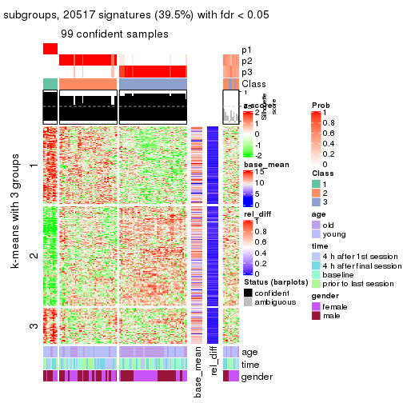
get_signatures(res, k = 4)
get_signatures(res, k = 5)
get_signatures(res, k = 6)
Signature heatmaps where rows are not scaled:
get_signatures(res, k = 2, scale_rows = FALSE)
get_signatures(res, k = 3, scale_rows = FALSE)
get_signatures(res, k = 4, scale_rows = FALSE)
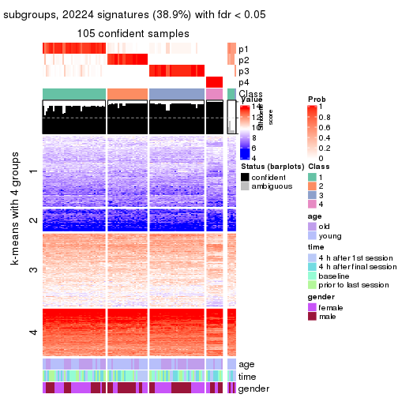
get_signatures(res, k = 5, scale_rows = FALSE)
get_signatures(res, k = 6, scale_rows = FALSE)
Compare the overlap of signatures from different k:
compare_signatures(res)

get_signature() returns a data frame invisibly. TO get the list of signatures, the function
call should be assigned to a variable explicitly. In following code, if plot argument is set
to FALSE, no heatmap is plotted while only the differential analysis is performed.
# code only for demonstration
tb = get_signature(res, k = ..., plot = FALSE)
An example of the output of tb is:
#> which_row fdr mean_1 mean_2 scaled_mean_1 scaled_mean_2 km
#> 1 38 0.042760348 8.373488 9.131774 -0.5533452 0.5164555 1
#> 2 40 0.018707592 7.106213 8.469186 -0.6173731 0.5762149 1
#> 3 55 0.019134737 10.221463 11.207825 -0.6159697 0.5749050 1
#> 4 59 0.006059896 5.921854 7.869574 -0.6899429 0.6439467 1
#> 5 60 0.018055526 8.928898 10.211722 -0.6204761 0.5791110 1
#> 6 98 0.009384629 15.714769 14.887706 0.6635654 -0.6193277 2
...
The columns in tb are:
which_row: row indices corresponding to the input matrix.fdr: FDR for the differential test. mean_x: The mean value in group x.scaled_mean_x: The mean value in group x after rows are scaled.km: Row groups if k-means clustering is applied to rows.UMAP plot which shows how samples are separated.
dimension_reduction(res, k = 2, method = "UMAP")
dimension_reduction(res, k = 3, method = "UMAP")
dimension_reduction(res, k = 4, method = "UMAP")
dimension_reduction(res, k = 5, method = "UMAP")
dimension_reduction(res, k = 6, method = "UMAP")
Following heatmap shows how subgroups are split when increasing k:
collect_classes(res)
Test correlation between subgroups and known annotations. If the known annotation is numeric, one-way ANOVA test is applied, and if the known annotation is discrete, chi-squared contingency table test is applied.
test_to_known_factors(res)
#> n age(p) time(p) gender(p) k
#> ATC:kmeans 109 1.65e-03 0.543 0.285 2
#> ATC:kmeans 99 3.61e-05 0.872 0.832 3
#> ATC:kmeans 105 2.02e-03 0.966 0.298 4
#> ATC:kmeans 58 1.35e-02 0.489 0.728 5
#> ATC:kmeans 59 1.28e-02 0.590 0.530 6
If matrix rows can be associated to genes, consider to use GO_Enrichment(res,
...) to perform function enrichment for the signature genes.
The object with results only for a single top-value method and a single partition method can be extracted as:
res = res_list["ATC", "skmeans"]
# you can also extract it by
# res = res_list["ATC:skmeans"]
A summary of res and all the functions that can be applied to it:
res
#> A 'ConsensusPartition' object with k = 2, 3, 4, 5, 6.
#> On a matrix with 51941 rows and 110 columns.
#> Top rows (1000, 2000, 3000, 4000, 5000) are extracted by 'ATC' method.
#> Subgroups are detected by 'skmeans' method.
#> Performed in total 1250 partitions by row resampling.
#> Best k for subgroups seems to be 2.
#>
#> Following methods can be applied to this 'ConsensusPartition' object:
#> [1] "cola_report" "collect_classes" "collect_plots"
#> [4] "collect_stats" "colnames" "compare_signatures"
#> [7] "consensus_heatmap" "dimension_reduction" "functional_enrichment"
#> [10] "get_anno_col" "get_anno" "get_classes"
#> [13] "get_consensus" "get_matrix" "get_membership"
#> [16] "get_param" "get_signatures" "get_stats"
#> [19] "is_best_k" "is_stable_k" "membership_heatmap"
#> [22] "ncol" "nrow" "plot_ecdf"
#> [25] "rownames" "select_partition_number" "show"
#> [28] "suggest_best_k" "test_to_known_factors"
collect_plots() function collects all the plots made from res for all k (number of partitions)
into one single page to provide an easy and fast comparison between different k.
collect_plots(res)

The plots are:
k and the heatmap of
predicted classes for each k.k.k.k.All the plots in panels can be made by individual functions and they are plotted later in this section.
select_partition_number() produces several plots showing different
statistics for choosing “optimized” k. There are following statistics:
k;k, the area increased is defined as \(A_k - A_{k-1}\).The detailed explanations of these statistics can be found in the cola vignette.
Generally speaking, lower PAC score, higher mean silhouette score or higher
concordance corresponds to better partition. Rand index and Jaccard index
measure how similar the current partition is compared to partition with k-1.
If they are too similar, we won't accept k is better than k-1.
select_partition_number(res)
The numeric values for all these statistics can be obtained by get_stats().
get_stats(res)
#> k 1-PAC mean_silhouette concordance area_increased Rand Jaccard
#> 2 2 1.000 0.987 0.995 0.4893 0.512 0.512
#> 3 3 0.755 0.892 0.922 0.2297 0.894 0.795
#> 4 4 0.809 0.866 0.924 0.2199 0.830 0.599
#> 5 5 0.796 0.788 0.879 0.0686 0.889 0.624
#> 6 6 0.789 0.742 0.853 0.0302 0.978 0.904
suggest_best_k() suggests the best \(k\) based on these statistics. The rules are as follows:
NA.suggest_best_k(res)
#> [1] 2
Following shows the table of the partitions (You need to click the show/hide
code output link to see it). The membership matrix (columns with name p*)
is inferred by
clue::cl_consensus()
function with the SE method. Basically the value in the membership matrix
represents the probability to belong to a certain group. The finall class
label for an item is determined with the group with highest probability it
belongs to.
In get_classes() function, the entropy is calculated from the membership
matrix and the silhouette score is calculated from the consensus matrix.
cbind(get_classes(res, k = 2), get_membership(res, k = 2))
#> class entropy silhouette p1 p2
#> GSM702357 1 0.000 0.993 1.00 0.00
#> GSM702358 1 0.000 0.993 1.00 0.00
#> GSM702359 2 0.000 0.997 0.00 1.00
#> GSM702360 2 0.000 0.997 0.00 1.00
#> GSM702361 2 0.000 0.997 0.00 1.00
#> GSM702362 2 0.000 0.997 0.00 1.00
#> GSM702363 1 0.000 0.993 1.00 0.00
#> GSM702364 2 0.000 0.997 0.00 1.00
#> GSM702413 1 0.000 0.993 1.00 0.00
#> GSM702414 1 0.000 0.993 1.00 0.00
#> GSM702415 1 0.000 0.993 1.00 0.00
#> GSM702416 2 0.000 0.997 0.00 1.00
#> GSM702417 2 0.000 0.997 0.00 1.00
#> GSM702418 1 0.000 0.993 1.00 0.00
#> GSM702419 1 0.000 0.993 1.00 0.00
#> GSM702365 1 0.000 0.993 1.00 0.00
#> GSM702366 1 0.000 0.993 1.00 0.00
#> GSM702367 2 0.000 0.997 0.00 1.00
#> GSM702368 2 0.000 0.997 0.00 1.00
#> GSM702369 2 0.000 0.997 0.00 1.00
#> GSM702370 2 0.000 0.997 0.00 1.00
#> GSM702371 2 0.000 0.997 0.00 1.00
#> GSM702372 2 0.000 0.997 0.00 1.00
#> GSM702420 2 0.000 0.997 0.00 1.00
#> GSM702421 1 0.000 0.993 1.00 0.00
#> GSM702422 1 0.000 0.993 1.00 0.00
#> GSM702423 2 0.000 0.997 0.00 1.00
#> GSM702424 1 0.000 0.993 1.00 0.00
#> GSM702425 2 0.000 0.997 0.00 1.00
#> GSM702426 2 0.000 0.997 0.00 1.00
#> GSM702427 1 0.000 0.993 1.00 0.00
#> GSM702373 1 0.000 0.993 1.00 0.00
#> GSM702374 2 0.000 0.997 0.00 1.00
#> GSM702375 2 0.000 0.997 0.00 1.00
#> GSM702376 2 0.000 0.997 0.00 1.00
#> GSM702377 2 0.000 0.997 0.00 1.00
#> GSM702378 1 0.981 0.270 0.58 0.42
#> GSM702379 2 0.000 0.997 0.00 1.00
#> GSM702380 1 0.000 0.993 1.00 0.00
#> GSM702428 1 0.000 0.993 1.00 0.00
#> GSM702429 1 0.000 0.993 1.00 0.00
#> GSM702430 2 0.000 0.997 0.00 1.00
#> GSM702431 1 0.000 0.993 1.00 0.00
#> GSM702432 1 0.000 0.993 1.00 0.00
#> GSM702433 2 0.000 0.997 0.00 1.00
#> GSM702434 2 0.000 0.997 0.00 1.00
#> GSM702381 1 0.000 0.993 1.00 0.00
#> GSM702382 1 0.000 0.993 1.00 0.00
#> GSM702383 1 0.000 0.993 1.00 0.00
#> GSM702384 2 0.000 0.997 0.00 1.00
#> GSM702385 2 0.000 0.997 0.00 1.00
#> GSM702386 2 0.000 0.997 0.00 1.00
#> GSM702387 1 0.000 0.993 1.00 0.00
#> GSM702388 2 0.000 0.997 0.00 1.00
#> GSM702435 2 0.000 0.997 0.00 1.00
#> GSM702436 1 0.000 0.993 1.00 0.00
#> GSM702437 2 0.000 0.997 0.00 1.00
#> GSM702438 2 0.000 0.997 0.00 1.00
#> GSM702439 2 0.000 0.997 0.00 1.00
#> GSM702440 1 0.000 0.993 1.00 0.00
#> GSM702441 2 0.000 0.997 0.00 1.00
#> GSM702442 2 0.000 0.997 0.00 1.00
#> GSM702389 1 0.000 0.993 1.00 0.00
#> GSM702390 1 0.000 0.993 1.00 0.00
#> GSM702391 2 0.000 0.997 0.00 1.00
#> GSM702392 1 0.000 0.993 1.00 0.00
#> GSM702393 2 0.000 0.997 0.00 1.00
#> GSM702394 1 0.000 0.993 1.00 0.00
#> GSM702443 1 0.000 0.993 1.00 0.00
#> GSM702444 1 0.000 0.993 1.00 0.00
#> GSM702445 1 0.000 0.993 1.00 0.00
#> GSM702446 2 0.000 0.997 0.00 1.00
#> GSM702447 1 0.000 0.993 1.00 0.00
#> GSM702448 2 0.000 0.997 0.00 1.00
#> GSM702395 1 0.000 0.993 1.00 0.00
#> GSM702396 2 0.000 0.997 0.00 1.00
#> GSM702397 1 0.000 0.993 1.00 0.00
#> GSM702398 1 0.000 0.993 1.00 0.00
#> GSM702399 2 0.000 0.997 0.00 1.00
#> GSM702400 1 0.000 0.993 1.00 0.00
#> GSM702449 1 0.000 0.993 1.00 0.00
#> GSM702450 1 0.000 0.993 1.00 0.00
#> GSM702451 1 0.000 0.993 1.00 0.00
#> GSM702452 2 0.000 0.997 0.00 1.00
#> GSM702453 1 0.000 0.993 1.00 0.00
#> GSM702454 1 0.000 0.993 1.00 0.00
#> GSM702401 1 0.000 0.993 1.00 0.00
#> GSM702402 1 0.000 0.993 1.00 0.00
#> GSM702403 2 0.584 0.835 0.14 0.86
#> GSM702404 1 0.000 0.993 1.00 0.00
#> GSM702405 2 0.000 0.997 0.00 1.00
#> GSM702406 1 0.000 0.993 1.00 0.00
#> GSM702455 1 0.000 0.993 1.00 0.00
#> GSM702456 1 0.000 0.993 1.00 0.00
#> GSM702457 1 0.000 0.993 1.00 0.00
#> GSM702458 1 0.000 0.993 1.00 0.00
#> GSM702459 1 0.000 0.993 1.00 0.00
#> GSM702460 1 0.000 0.993 1.00 0.00
#> GSM702407 1 0.000 0.993 1.00 0.00
#> GSM702408 1 0.000 0.993 1.00 0.00
#> GSM702409 2 0.000 0.997 0.00 1.00
#> GSM702410 1 0.000 0.993 1.00 0.00
#> GSM702411 1 0.000 0.993 1.00 0.00
#> GSM702412 1 0.000 0.993 1.00 0.00
#> GSM702461 1 0.000 0.993 1.00 0.00
#> GSM702462 1 0.000 0.993 1.00 0.00
#> GSM702463 1 0.000 0.993 1.00 0.00
#> GSM702464 1 0.000 0.993 1.00 0.00
#> GSM702465 1 0.000 0.993 1.00 0.00
#> GSM702466 1 0.000 0.993 1.00 0.00
cbind(get_classes(res, k = 3), get_membership(res, k = 3))
#> class entropy silhouette p1 p2 p3
#> GSM702357 3 0.0000 0.914 0.000 0.000 1.000
#> GSM702358 3 0.0000 0.914 0.000 0.000 1.000
#> GSM702359 1 0.0000 1.000 1.000 0.000 0.000
#> GSM702360 1 0.0000 1.000 1.000 0.000 0.000
#> GSM702361 2 0.4887 0.825 0.228 0.772 0.000
#> GSM702362 1 0.0000 1.000 1.000 0.000 0.000
#> GSM702363 3 0.0000 0.914 0.000 0.000 1.000
#> GSM702364 2 0.4887 0.825 0.228 0.772 0.000
#> GSM702413 3 0.0000 0.914 0.000 0.000 1.000
#> GSM702414 3 0.0000 0.914 0.000 0.000 1.000
#> GSM702415 3 0.0000 0.914 0.000 0.000 1.000
#> GSM702416 2 0.0000 0.778 0.000 1.000 0.000
#> GSM702417 2 0.4605 0.838 0.204 0.796 0.000
#> GSM702418 3 0.5178 0.806 0.000 0.256 0.744
#> GSM702419 3 0.4750 0.838 0.000 0.216 0.784
#> GSM702365 3 0.0000 0.914 0.000 0.000 1.000
#> GSM702366 3 0.0000 0.914 0.000 0.000 1.000
#> GSM702367 1 0.0000 1.000 1.000 0.000 0.000
#> GSM702368 1 0.0000 1.000 1.000 0.000 0.000
#> GSM702369 2 0.4605 0.838 0.204 0.796 0.000
#> GSM702370 2 0.4605 0.838 0.204 0.796 0.000
#> GSM702371 1 0.0000 1.000 1.000 0.000 0.000
#> GSM702372 1 0.0000 1.000 1.000 0.000 0.000
#> GSM702420 1 0.0000 1.000 1.000 0.000 0.000
#> GSM702421 3 0.0000 0.914 0.000 0.000 1.000
#> GSM702422 3 0.0000 0.914 0.000 0.000 1.000
#> GSM702423 1 0.0000 1.000 1.000 0.000 0.000
#> GSM702424 3 0.4887 0.829 0.000 0.228 0.772
#> GSM702425 2 0.4346 0.836 0.184 0.816 0.000
#> GSM702426 1 0.0000 1.000 1.000 0.000 0.000
#> GSM702427 3 0.0747 0.910 0.000 0.016 0.984
#> GSM702373 3 0.0000 0.914 0.000 0.000 1.000
#> GSM702374 1 0.0000 1.000 1.000 0.000 0.000
#> GSM702375 1 0.0000 1.000 1.000 0.000 0.000
#> GSM702376 2 0.4887 0.825 0.228 0.772 0.000
#> GSM702377 2 0.4887 0.825 0.228 0.772 0.000
#> GSM702378 2 0.6421 0.344 0.004 0.572 0.424
#> GSM702379 2 0.2165 0.776 0.064 0.936 0.000
#> GSM702380 3 0.4504 0.706 0.000 0.196 0.804
#> GSM702428 3 0.0000 0.914 0.000 0.000 1.000
#> GSM702429 3 0.0000 0.914 0.000 0.000 1.000
#> GSM702430 1 0.0000 1.000 1.000 0.000 0.000
#> GSM702431 2 0.0000 0.778 0.000 1.000 0.000
#> GSM702432 3 0.4750 0.838 0.000 0.216 0.784
#> GSM702433 1 0.0000 1.000 1.000 0.000 0.000
#> GSM702434 1 0.0000 1.000 1.000 0.000 0.000
#> GSM702381 3 0.0000 0.914 0.000 0.000 1.000
#> GSM702382 3 0.0000 0.914 0.000 0.000 1.000
#> GSM702383 3 0.0000 0.914 0.000 0.000 1.000
#> GSM702384 2 0.4887 0.825 0.228 0.772 0.000
#> GSM702385 2 0.6126 0.563 0.400 0.600 0.000
#> GSM702386 2 0.4605 0.838 0.204 0.796 0.000
#> GSM702387 3 0.5016 0.820 0.000 0.240 0.760
#> GSM702388 1 0.0424 0.990 0.992 0.008 0.000
#> GSM702435 1 0.0000 1.000 1.000 0.000 0.000
#> GSM702436 3 0.2356 0.855 0.072 0.000 0.928
#> GSM702437 1 0.0000 1.000 1.000 0.000 0.000
#> GSM702438 1 0.0000 1.000 1.000 0.000 0.000
#> GSM702439 2 0.4605 0.838 0.204 0.796 0.000
#> GSM702440 3 0.5016 0.820 0.000 0.240 0.760
#> GSM702441 1 0.0000 1.000 1.000 0.000 0.000
#> GSM702442 1 0.0000 1.000 1.000 0.000 0.000
#> GSM702389 3 0.0000 0.914 0.000 0.000 1.000
#> GSM702390 3 0.0000 0.914 0.000 0.000 1.000
#> GSM702391 1 0.0000 1.000 1.000 0.000 0.000
#> GSM702392 3 0.4654 0.842 0.000 0.208 0.792
#> GSM702393 1 0.0000 1.000 1.000 0.000 0.000
#> GSM702394 3 0.0000 0.914 0.000 0.000 1.000
#> GSM702443 3 0.0000 0.914 0.000 0.000 1.000
#> GSM702444 3 0.0000 0.914 0.000 0.000 1.000
#> GSM702445 3 0.4750 0.838 0.000 0.216 0.784
#> GSM702446 2 0.0000 0.778 0.000 1.000 0.000
#> GSM702447 3 0.4605 0.845 0.000 0.204 0.796
#> GSM702448 1 0.0000 1.000 1.000 0.000 0.000
#> GSM702395 3 0.0000 0.914 0.000 0.000 1.000
#> GSM702396 1 0.0000 1.000 1.000 0.000 0.000
#> GSM702397 3 0.0000 0.914 0.000 0.000 1.000
#> GSM702398 3 0.4887 0.829 0.000 0.228 0.772
#> GSM702399 1 0.0000 1.000 1.000 0.000 0.000
#> GSM702400 3 0.4002 0.863 0.000 0.160 0.840
#> GSM702449 3 0.0237 0.913 0.000 0.004 0.996
#> GSM702450 3 0.0000 0.914 0.000 0.000 1.000
#> GSM702451 3 0.4887 0.829 0.000 0.228 0.772
#> GSM702452 1 0.0000 1.000 1.000 0.000 0.000
#> GSM702453 3 0.0237 0.913 0.000 0.004 0.996
#> GSM702454 3 0.6981 0.765 0.068 0.228 0.704
#> GSM702401 3 0.0000 0.914 0.000 0.000 1.000
#> GSM702402 3 0.0000 0.914 0.000 0.000 1.000
#> GSM702403 2 0.0237 0.780 0.004 0.996 0.000
#> GSM702404 3 0.4605 0.845 0.000 0.204 0.796
#> GSM702405 2 0.0000 0.778 0.000 1.000 0.000
#> GSM702406 3 0.3551 0.873 0.000 0.132 0.868
#> GSM702455 3 0.0000 0.914 0.000 0.000 1.000
#> GSM702456 3 0.0000 0.914 0.000 0.000 1.000
#> GSM702457 3 0.4605 0.845 0.000 0.204 0.796
#> GSM702458 3 0.0892 0.909 0.000 0.020 0.980
#> GSM702459 3 0.0237 0.913 0.000 0.004 0.996
#> GSM702460 3 0.4605 0.845 0.000 0.204 0.796
#> GSM702407 3 0.0000 0.914 0.000 0.000 1.000
#> GSM702408 3 0.0000 0.914 0.000 0.000 1.000
#> GSM702409 1 0.0000 1.000 1.000 0.000 0.000
#> GSM702410 3 0.4887 0.829 0.000 0.228 0.772
#> GSM702411 3 0.4974 0.824 0.000 0.236 0.764
#> GSM702412 3 0.4605 0.845 0.000 0.204 0.796
#> GSM702461 3 0.0000 0.914 0.000 0.000 1.000
#> GSM702462 3 0.0000 0.914 0.000 0.000 1.000
#> GSM702463 3 0.4605 0.845 0.000 0.204 0.796
#> GSM702464 3 0.4605 0.845 0.000 0.204 0.796
#> GSM702465 3 0.0000 0.914 0.000 0.000 1.000
#> GSM702466 3 0.4887 0.829 0.000 0.228 0.772
cbind(get_classes(res, k = 4), get_membership(res, k = 4))
#> class entropy silhouette p1 p2 p3 p4
#> GSM702357 2 0.0817 0.869 0.000 0.976 0.024 0.000
#> GSM702358 2 0.0336 0.875 0.000 0.992 0.008 0.000
#> GSM702359 1 0.0000 0.995 1.000 0.000 0.000 0.000
#> GSM702360 1 0.0000 0.995 1.000 0.000 0.000 0.000
#> GSM702361 4 0.0188 0.981 0.004 0.000 0.000 0.996
#> GSM702362 1 0.0000 0.995 1.000 0.000 0.000 0.000
#> GSM702363 2 0.0188 0.878 0.000 0.996 0.004 0.000
#> GSM702364 4 0.0188 0.981 0.004 0.000 0.000 0.996
#> GSM702413 2 0.0592 0.876 0.000 0.984 0.016 0.000
#> GSM702414 2 0.0592 0.876 0.000 0.984 0.016 0.000
#> GSM702415 2 0.0336 0.875 0.000 0.992 0.008 0.000
#> GSM702416 4 0.0000 0.982 0.000 0.000 0.000 1.000
#> GSM702417 4 0.0000 0.982 0.000 0.000 0.000 1.000
#> GSM702418 3 0.3257 0.861 0.000 0.152 0.844 0.004
#> GSM702419 3 0.3257 0.861 0.000 0.152 0.844 0.004
#> GSM702365 2 0.0921 0.867 0.000 0.972 0.028 0.000
#> GSM702366 2 0.0188 0.878 0.000 0.996 0.004 0.000
#> GSM702367 1 0.0000 0.995 1.000 0.000 0.000 0.000
#> GSM702368 1 0.0000 0.995 1.000 0.000 0.000 0.000
#> GSM702369 4 0.0000 0.982 0.000 0.000 0.000 1.000
#> GSM702370 4 0.0000 0.982 0.000 0.000 0.000 1.000
#> GSM702371 1 0.0000 0.995 1.000 0.000 0.000 0.000
#> GSM702372 1 0.0000 0.995 1.000 0.000 0.000 0.000
#> GSM702420 1 0.0000 0.995 1.000 0.000 0.000 0.000
#> GSM702421 2 0.0707 0.874 0.000 0.980 0.020 0.000
#> GSM702422 2 0.0592 0.876 0.000 0.984 0.016 0.000
#> GSM702423 1 0.0000 0.995 1.000 0.000 0.000 0.000
#> GSM702424 3 0.3105 0.864 0.000 0.140 0.856 0.004
#> GSM702425 4 0.0000 0.982 0.000 0.000 0.000 1.000
#> GSM702426 1 0.0000 0.995 1.000 0.000 0.000 0.000
#> GSM702427 3 0.1022 0.834 0.000 0.032 0.968 0.000
#> GSM702373 2 0.0707 0.871 0.000 0.980 0.020 0.000
#> GSM702374 1 0.0000 0.995 1.000 0.000 0.000 0.000
#> GSM702375 1 0.0000 0.995 1.000 0.000 0.000 0.000
#> GSM702376 4 0.0188 0.981 0.004 0.000 0.000 0.996
#> GSM702377 4 0.0188 0.981 0.004 0.000 0.000 0.996
#> GSM702378 2 0.5678 0.158 0.000 0.524 0.024 0.452
#> GSM702379 4 0.1474 0.939 0.052 0.000 0.000 0.948
#> GSM702380 2 0.4995 0.610 0.000 0.720 0.032 0.248
#> GSM702428 2 0.0921 0.867 0.000 0.972 0.028 0.000
#> GSM702429 2 0.0000 0.877 0.000 1.000 0.000 0.000
#> GSM702430 1 0.0000 0.995 1.000 0.000 0.000 0.000
#> GSM702431 4 0.1677 0.939 0.000 0.012 0.040 0.948
#> GSM702432 3 0.3355 0.859 0.000 0.160 0.836 0.004
#> GSM702433 1 0.0000 0.995 1.000 0.000 0.000 0.000
#> GSM702434 1 0.0000 0.995 1.000 0.000 0.000 0.000
#> GSM702381 2 0.0707 0.871 0.000 0.980 0.020 0.000
#> GSM702382 2 0.0592 0.876 0.000 0.984 0.016 0.000
#> GSM702383 2 0.0592 0.876 0.000 0.984 0.016 0.000
#> GSM702384 4 0.0188 0.981 0.004 0.000 0.000 0.996
#> GSM702385 4 0.3266 0.807 0.168 0.000 0.000 0.832
#> GSM702386 4 0.0000 0.982 0.000 0.000 0.000 1.000
#> GSM702387 3 0.3695 0.861 0.000 0.156 0.828 0.016
#> GSM702388 1 0.1867 0.921 0.928 0.000 0.000 0.072
#> GSM702435 1 0.1302 0.957 0.956 0.000 0.044 0.000
#> GSM702436 2 0.3356 0.746 0.000 0.824 0.176 0.000
#> GSM702437 1 0.0000 0.995 1.000 0.000 0.000 0.000
#> GSM702438 1 0.0000 0.995 1.000 0.000 0.000 0.000
#> GSM702439 4 0.0000 0.982 0.000 0.000 0.000 1.000
#> GSM702440 3 0.3450 0.860 0.000 0.156 0.836 0.008
#> GSM702441 1 0.0000 0.995 1.000 0.000 0.000 0.000
#> GSM702442 1 0.0000 0.995 1.000 0.000 0.000 0.000
#> GSM702389 2 0.0188 0.878 0.000 0.996 0.004 0.000
#> GSM702390 2 0.1022 0.865 0.000 0.968 0.032 0.000
#> GSM702391 1 0.0000 0.995 1.000 0.000 0.000 0.000
#> GSM702392 2 0.5167 -0.255 0.000 0.508 0.488 0.004
#> GSM702393 1 0.0000 0.995 1.000 0.000 0.000 0.000
#> GSM702394 2 0.1118 0.864 0.000 0.964 0.036 0.000
#> GSM702443 2 0.4164 0.646 0.000 0.736 0.264 0.000
#> GSM702444 2 0.3266 0.752 0.000 0.832 0.168 0.000
#> GSM702445 3 0.2408 0.862 0.000 0.104 0.896 0.000
#> GSM702446 4 0.0188 0.980 0.000 0.000 0.004 0.996
#> GSM702447 3 0.0921 0.834 0.000 0.028 0.972 0.000
#> GSM702448 1 0.0188 0.992 0.996 0.000 0.004 0.000
#> GSM702395 2 0.0592 0.876 0.000 0.984 0.016 0.000
#> GSM702396 1 0.0000 0.995 1.000 0.000 0.000 0.000
#> GSM702397 2 0.0592 0.876 0.000 0.984 0.016 0.000
#> GSM702398 3 0.3494 0.852 0.000 0.172 0.824 0.004
#> GSM702399 1 0.0000 0.995 1.000 0.000 0.000 0.000
#> GSM702400 3 0.4382 0.716 0.000 0.296 0.704 0.000
#> GSM702449 3 0.2704 0.856 0.000 0.124 0.876 0.000
#> GSM702450 2 0.3873 0.700 0.000 0.772 0.228 0.000
#> GSM702451 3 0.0469 0.832 0.000 0.012 0.988 0.000
#> GSM702452 1 0.0188 0.992 0.996 0.000 0.004 0.000
#> GSM702453 3 0.4431 0.710 0.000 0.304 0.696 0.000
#> GSM702454 3 0.0817 0.834 0.000 0.024 0.976 0.000
#> GSM702401 2 0.0000 0.877 0.000 1.000 0.000 0.000
#> GSM702402 2 0.0707 0.871 0.000 0.980 0.020 0.000
#> GSM702403 4 0.0000 0.982 0.000 0.000 0.000 1.000
#> GSM702404 3 0.5147 0.369 0.000 0.460 0.536 0.004
#> GSM702405 4 0.0000 0.982 0.000 0.000 0.000 1.000
#> GSM702406 2 0.4697 0.292 0.000 0.644 0.356 0.000
#> GSM702455 2 0.3444 0.734 0.000 0.816 0.184 0.000
#> GSM702456 2 0.1940 0.841 0.000 0.924 0.076 0.000
#> GSM702457 3 0.2081 0.853 0.000 0.084 0.916 0.000
#> GSM702458 3 0.4477 0.699 0.000 0.312 0.688 0.000
#> GSM702459 3 0.4605 0.654 0.000 0.336 0.664 0.000
#> GSM702460 3 0.0921 0.834 0.000 0.028 0.972 0.000
#> GSM702407 2 0.0000 0.877 0.000 1.000 0.000 0.000
#> GSM702408 2 0.0188 0.878 0.000 0.996 0.004 0.000
#> GSM702409 1 0.0000 0.995 1.000 0.000 0.000 0.000
#> GSM702410 3 0.3583 0.847 0.000 0.180 0.816 0.004
#> GSM702411 3 0.3591 0.854 0.000 0.168 0.824 0.008
#> GSM702412 3 0.3266 0.860 0.000 0.168 0.832 0.000
#> GSM702461 2 0.3649 0.707 0.000 0.796 0.204 0.000
#> GSM702462 2 0.4454 0.612 0.000 0.692 0.308 0.000
#> GSM702463 3 0.0921 0.834 0.000 0.028 0.972 0.000
#> GSM702464 3 0.1022 0.834 0.000 0.032 0.968 0.000
#> GSM702465 2 0.3444 0.734 0.000 0.816 0.184 0.000
#> GSM702466 3 0.0921 0.834 0.000 0.028 0.972 0.000
cbind(get_classes(res, k = 5), get_membership(res, k = 5))
#> class entropy silhouette p1 p2 p3 p4 p5
#> GSM702357 2 0.3395 0.652 0.236 0.764 0.000 0.000 0.000
#> GSM702358 2 0.0609 0.863 0.020 0.980 0.000 0.000 0.000
#> GSM702359 5 0.0000 0.974 0.000 0.000 0.000 0.000 1.000
#> GSM702360 5 0.0000 0.974 0.000 0.000 0.000 0.000 1.000
#> GSM702361 4 0.0324 0.941 0.004 0.000 0.000 0.992 0.004
#> GSM702362 5 0.0000 0.974 0.000 0.000 0.000 0.000 1.000
#> GSM702363 2 0.0510 0.865 0.016 0.984 0.000 0.000 0.000
#> GSM702364 4 0.0162 0.940 0.000 0.000 0.000 0.996 0.004
#> GSM702413 2 0.0000 0.866 0.000 1.000 0.000 0.000 0.000
#> GSM702414 2 0.0000 0.866 0.000 1.000 0.000 0.000 0.000
#> GSM702415 2 0.1410 0.849 0.060 0.940 0.000 0.000 0.000
#> GSM702416 4 0.0162 0.940 0.000 0.000 0.004 0.996 0.000
#> GSM702417 4 0.0290 0.941 0.008 0.000 0.000 0.992 0.000
#> GSM702418 1 0.4557 0.503 0.584 0.012 0.404 0.000 0.000
#> GSM702419 1 0.4582 0.488 0.572 0.012 0.416 0.000 0.000
#> GSM702365 1 0.3816 0.523 0.696 0.304 0.000 0.000 0.000
#> GSM702366 2 0.0404 0.864 0.012 0.988 0.000 0.000 0.000
#> GSM702367 5 0.0000 0.974 0.000 0.000 0.000 0.000 1.000
#> GSM702368 5 0.0000 0.974 0.000 0.000 0.000 0.000 1.000
#> GSM702369 4 0.0162 0.941 0.004 0.000 0.000 0.996 0.000
#> GSM702370 4 0.0162 0.941 0.004 0.000 0.000 0.996 0.000
#> GSM702371 5 0.0000 0.974 0.000 0.000 0.000 0.000 1.000
#> GSM702372 5 0.0000 0.974 0.000 0.000 0.000 0.000 1.000
#> GSM702420 5 0.0880 0.954 0.032 0.000 0.000 0.000 0.968
#> GSM702421 2 0.0955 0.862 0.004 0.968 0.028 0.000 0.000
#> GSM702422 2 0.1732 0.842 0.080 0.920 0.000 0.000 0.000
#> GSM702423 5 0.0000 0.974 0.000 0.000 0.000 0.000 1.000
#> GSM702424 1 0.4802 0.320 0.504 0.012 0.480 0.004 0.000
#> GSM702425 4 0.0290 0.940 0.008 0.000 0.000 0.992 0.000
#> GSM702426 5 0.0000 0.974 0.000 0.000 0.000 0.000 1.000
#> GSM702427 3 0.2396 0.783 0.068 0.024 0.904 0.004 0.000
#> GSM702373 2 0.3424 0.647 0.240 0.760 0.000 0.000 0.000
#> GSM702374 5 0.0000 0.974 0.000 0.000 0.000 0.000 1.000
#> GSM702375 5 0.0000 0.974 0.000 0.000 0.000 0.000 1.000
#> GSM702376 4 0.0404 0.938 0.012 0.000 0.000 0.988 0.000
#> GSM702377 4 0.0290 0.941 0.008 0.000 0.000 0.992 0.000
#> GSM702378 1 0.5887 0.468 0.592 0.252 0.000 0.156 0.000
#> GSM702379 4 0.4570 0.718 0.216 0.000 0.008 0.732 0.044
#> GSM702380 1 0.3064 0.629 0.856 0.108 0.000 0.036 0.000
#> GSM702428 1 0.4138 0.378 0.616 0.384 0.000 0.000 0.000
#> GSM702429 2 0.0510 0.863 0.016 0.984 0.000 0.000 0.000
#> GSM702430 5 0.0000 0.974 0.000 0.000 0.000 0.000 1.000
#> GSM702431 1 0.4517 0.212 0.556 0.000 0.008 0.436 0.000
#> GSM702432 1 0.4565 0.497 0.580 0.012 0.408 0.000 0.000
#> GSM702433 5 0.0000 0.974 0.000 0.000 0.000 0.000 1.000
#> GSM702434 5 0.0324 0.970 0.004 0.000 0.000 0.004 0.992
#> GSM702381 2 0.4009 0.561 0.312 0.684 0.004 0.000 0.000
#> GSM702382 2 0.0404 0.864 0.012 0.988 0.000 0.000 0.000
#> GSM702383 2 0.0404 0.864 0.012 0.988 0.000 0.000 0.000
#> GSM702384 4 0.0404 0.938 0.012 0.000 0.000 0.988 0.000
#> GSM702385 4 0.3196 0.728 0.004 0.000 0.000 0.804 0.192
#> GSM702386 4 0.0162 0.941 0.004 0.000 0.000 0.996 0.000
#> GSM702387 1 0.5003 0.466 0.572 0.016 0.400 0.012 0.000
#> GSM702388 5 0.3816 0.557 0.000 0.000 0.000 0.304 0.696
#> GSM702435 5 0.2940 0.874 0.072 0.000 0.048 0.004 0.876
#> GSM702436 2 0.3754 0.771 0.084 0.816 0.100 0.000 0.000
#> GSM702437 5 0.0000 0.974 0.000 0.000 0.000 0.000 1.000
#> GSM702438 5 0.0000 0.974 0.000 0.000 0.000 0.000 1.000
#> GSM702439 4 0.0162 0.941 0.004 0.000 0.000 0.996 0.000
#> GSM702440 1 0.4714 0.488 0.576 0.012 0.408 0.004 0.000
#> GSM702441 5 0.0000 0.974 0.000 0.000 0.000 0.000 1.000
#> GSM702442 5 0.0000 0.974 0.000 0.000 0.000 0.000 1.000
#> GSM702389 2 0.0404 0.865 0.012 0.988 0.000 0.000 0.000
#> GSM702390 1 0.3814 0.545 0.720 0.276 0.000 0.004 0.000
#> GSM702391 5 0.0162 0.972 0.000 0.000 0.000 0.004 0.996
#> GSM702392 1 0.2983 0.640 0.864 0.096 0.040 0.000 0.000
#> GSM702393 5 0.0000 0.974 0.000 0.000 0.000 0.000 1.000
#> GSM702394 1 0.3160 0.622 0.808 0.188 0.004 0.000 0.000
#> GSM702443 2 0.3123 0.781 0.004 0.812 0.184 0.000 0.000
#> GSM702444 2 0.2970 0.793 0.004 0.828 0.168 0.000 0.000
#> GSM702445 3 0.3053 0.628 0.164 0.008 0.828 0.000 0.000
#> GSM702446 4 0.1965 0.870 0.000 0.000 0.096 0.904 0.000
#> GSM702447 3 0.0162 0.842 0.004 0.000 0.996 0.000 0.000
#> GSM702448 5 0.1704 0.919 0.004 0.000 0.068 0.000 0.928
#> GSM702395 2 0.0451 0.866 0.004 0.988 0.008 0.000 0.000
#> GSM702396 5 0.0000 0.974 0.000 0.000 0.000 0.000 1.000
#> GSM702397 2 0.0162 0.866 0.004 0.996 0.000 0.000 0.000
#> GSM702398 1 0.4524 0.569 0.644 0.020 0.336 0.000 0.000
#> GSM702399 5 0.2629 0.850 0.136 0.000 0.000 0.004 0.860
#> GSM702400 1 0.4937 0.604 0.672 0.064 0.264 0.000 0.000
#> GSM702449 3 0.4561 -0.158 0.008 0.488 0.504 0.000 0.000
#> GSM702450 2 0.3010 0.791 0.004 0.824 0.172 0.000 0.000
#> GSM702451 3 0.1197 0.816 0.048 0.000 0.952 0.000 0.000
#> GSM702452 5 0.0566 0.965 0.004 0.000 0.012 0.000 0.984
#> GSM702453 2 0.4608 0.531 0.024 0.640 0.336 0.000 0.000
#> GSM702454 3 0.1410 0.812 0.060 0.000 0.940 0.000 0.000
#> GSM702401 2 0.0510 0.865 0.016 0.984 0.000 0.000 0.000
#> GSM702402 2 0.0609 0.862 0.020 0.980 0.000 0.000 0.000
#> GSM702403 4 0.0162 0.941 0.004 0.000 0.000 0.996 0.000
#> GSM702404 1 0.3354 0.643 0.844 0.088 0.068 0.000 0.000
#> GSM702405 4 0.3992 0.678 0.268 0.000 0.012 0.720 0.000
#> GSM702406 1 0.3944 0.615 0.768 0.200 0.032 0.000 0.000
#> GSM702455 2 0.2970 0.793 0.004 0.828 0.168 0.000 0.000
#> GSM702456 2 0.2806 0.804 0.004 0.844 0.152 0.000 0.000
#> GSM702457 3 0.1915 0.804 0.032 0.040 0.928 0.000 0.000
#> GSM702458 2 0.4522 0.573 0.024 0.660 0.316 0.000 0.000
#> GSM702459 2 0.4243 0.663 0.024 0.712 0.264 0.000 0.000
#> GSM702460 3 0.0162 0.842 0.004 0.000 0.996 0.000 0.000
#> GSM702407 2 0.0510 0.863 0.016 0.984 0.000 0.000 0.000
#> GSM702408 2 0.0000 0.866 0.000 1.000 0.000 0.000 0.000
#> GSM702409 5 0.0000 0.974 0.000 0.000 0.000 0.000 1.000
#> GSM702410 1 0.4157 0.609 0.716 0.020 0.264 0.000 0.000
#> GSM702411 1 0.3844 0.529 0.736 0.004 0.256 0.004 0.000
#> GSM702412 1 0.4639 0.543 0.612 0.020 0.368 0.000 0.000
#> GSM702461 2 0.2970 0.793 0.004 0.828 0.168 0.000 0.000
#> GSM702462 2 0.4960 0.622 0.064 0.668 0.268 0.000 0.000
#> GSM702463 3 0.1018 0.835 0.016 0.016 0.968 0.000 0.000
#> GSM702464 3 0.0703 0.830 0.024 0.000 0.976 0.000 0.000
#> GSM702465 2 0.2970 0.793 0.004 0.828 0.168 0.000 0.000
#> GSM702466 3 0.0290 0.841 0.008 0.000 0.992 0.000 0.000
cbind(get_classes(res, k = 6), get_membership(res, k = 6))
#> class entropy silhouette p1 p2 p3 p4 p5 p6
#> GSM702357 2 0.5071 0.46261 0.156 0.632 0.000 0.212 0.000 0.000
#> GSM702358 2 0.1528 0.83883 0.016 0.936 0.000 0.048 0.000 0.000
#> GSM702359 5 0.0000 0.92769 0.000 0.000 0.000 0.000 1.000 0.000
#> GSM702360 5 0.0000 0.92769 0.000 0.000 0.000 0.000 1.000 0.000
#> GSM702361 6 0.0405 0.90707 0.000 0.000 0.000 0.008 0.004 0.988
#> GSM702362 5 0.0000 0.92769 0.000 0.000 0.000 0.000 1.000 0.000
#> GSM702363 2 0.1138 0.84795 0.024 0.960 0.004 0.012 0.000 0.000
#> GSM702364 6 0.0520 0.90601 0.000 0.000 0.000 0.008 0.008 0.984
#> GSM702413 2 0.0405 0.84897 0.004 0.988 0.000 0.008 0.000 0.000
#> GSM702414 2 0.0146 0.84964 0.000 0.996 0.000 0.004 0.000 0.000
#> GSM702415 2 0.4312 0.60356 0.052 0.676 0.000 0.272 0.000 0.000
#> GSM702416 6 0.0692 0.90592 0.000 0.000 0.004 0.020 0.000 0.976
#> GSM702417 6 0.1007 0.90221 0.000 0.000 0.000 0.044 0.000 0.956
#> GSM702418 1 0.4410 0.64419 0.740 0.012 0.172 0.072 0.000 0.004
#> GSM702419 1 0.4424 0.64341 0.732 0.016 0.180 0.072 0.000 0.000
#> GSM702365 1 0.5377 0.25716 0.572 0.156 0.000 0.272 0.000 0.000
#> GSM702366 2 0.1588 0.83065 0.004 0.924 0.000 0.072 0.000 0.000
#> GSM702367 5 0.0000 0.92769 0.000 0.000 0.000 0.000 1.000 0.000
#> GSM702368 5 0.0000 0.92769 0.000 0.000 0.000 0.000 1.000 0.000
#> GSM702369 6 0.0547 0.90688 0.000 0.000 0.000 0.020 0.000 0.980
#> GSM702370 6 0.0547 0.90741 0.000 0.000 0.000 0.020 0.000 0.980
#> GSM702371 5 0.0000 0.92769 0.000 0.000 0.000 0.000 1.000 0.000
#> GSM702372 5 0.0000 0.92769 0.000 0.000 0.000 0.000 1.000 0.000
#> GSM702420 5 0.1908 0.86035 0.004 0.000 0.000 0.096 0.900 0.000
#> GSM702421 2 0.0881 0.84866 0.008 0.972 0.012 0.008 0.000 0.000
#> GSM702422 2 0.3536 0.68860 0.008 0.736 0.004 0.252 0.000 0.000
#> GSM702423 5 0.0000 0.92769 0.000 0.000 0.000 0.000 1.000 0.000
#> GSM702424 1 0.5825 0.53391 0.596 0.016 0.236 0.140 0.000 0.012
#> GSM702425 6 0.2306 0.83114 0.016 0.000 0.004 0.092 0.000 0.888
#> GSM702426 5 0.0000 0.92769 0.000 0.000 0.000 0.000 1.000 0.000
#> GSM702427 3 0.4433 0.68005 0.020 0.048 0.716 0.216 0.000 0.000
#> GSM702373 2 0.5102 0.45435 0.160 0.628 0.000 0.212 0.000 0.000
#> GSM702374 5 0.0000 0.92769 0.000 0.000 0.000 0.000 1.000 0.000
#> GSM702375 5 0.0000 0.92769 0.000 0.000 0.000 0.000 1.000 0.000
#> GSM702376 6 0.1141 0.89167 0.000 0.000 0.000 0.052 0.000 0.948
#> GSM702377 6 0.1531 0.88386 0.000 0.000 0.000 0.068 0.004 0.928
#> GSM702378 1 0.7233 -0.09278 0.388 0.136 0.000 0.316 0.000 0.160
#> GSM702379 4 0.6551 0.28882 0.120 0.000 0.028 0.428 0.024 0.400
#> GSM702380 1 0.2340 0.63803 0.896 0.044 0.000 0.056 0.000 0.004
#> GSM702428 1 0.5942 0.00993 0.424 0.220 0.000 0.356 0.000 0.000
#> GSM702429 2 0.1531 0.83215 0.004 0.928 0.000 0.068 0.000 0.000
#> GSM702430 5 0.0000 0.92769 0.000 0.000 0.000 0.000 1.000 0.000
#> GSM702431 1 0.4855 0.38086 0.620 0.000 0.004 0.072 0.000 0.304
#> GSM702432 1 0.4472 0.64214 0.728 0.008 0.152 0.112 0.000 0.000
#> GSM702433 5 0.0622 0.91710 0.000 0.000 0.000 0.012 0.980 0.008
#> GSM702434 5 0.2663 0.85002 0.000 0.000 0.012 0.068 0.880 0.040
#> GSM702381 4 0.5238 0.27815 0.140 0.268 0.000 0.592 0.000 0.000
#> GSM702382 2 0.1644 0.82904 0.004 0.920 0.000 0.076 0.000 0.000
#> GSM702383 2 0.1700 0.82766 0.004 0.916 0.000 0.080 0.000 0.000
#> GSM702384 6 0.1327 0.88280 0.000 0.000 0.000 0.064 0.000 0.936
#> GSM702385 6 0.3384 0.70204 0.000 0.000 0.000 0.068 0.120 0.812
#> GSM702386 6 0.0547 0.90741 0.000 0.000 0.000 0.020 0.000 0.980
#> GSM702387 1 0.5965 0.44649 0.592 0.012 0.172 0.204 0.000 0.020
#> GSM702388 5 0.3993 0.32318 0.000 0.000 0.000 0.008 0.592 0.400
#> GSM702435 5 0.5225 0.51360 0.012 0.000 0.068 0.300 0.612 0.008
#> GSM702436 2 0.4875 0.57098 0.008 0.648 0.080 0.264 0.000 0.000
#> GSM702437 5 0.0000 0.92769 0.000 0.000 0.000 0.000 1.000 0.000
#> GSM702438 5 0.0000 0.92769 0.000 0.000 0.000 0.000 1.000 0.000
#> GSM702439 6 0.0547 0.90741 0.000 0.000 0.000 0.020 0.000 0.980
#> GSM702440 1 0.5099 0.61327 0.684 0.004 0.148 0.148 0.000 0.016
#> GSM702441 5 0.0508 0.91918 0.000 0.000 0.000 0.012 0.984 0.004
#> GSM702442 5 0.0000 0.92769 0.000 0.000 0.000 0.000 1.000 0.000
#> GSM702389 2 0.1053 0.84834 0.020 0.964 0.004 0.012 0.000 0.000
#> GSM702390 1 0.4901 0.25778 0.608 0.072 0.000 0.316 0.000 0.004
#> GSM702391 5 0.0000 0.92769 0.000 0.000 0.000 0.000 1.000 0.000
#> GSM702392 1 0.1719 0.64587 0.932 0.032 0.004 0.032 0.000 0.000
#> GSM702393 5 0.0000 0.92769 0.000 0.000 0.000 0.000 1.000 0.000
#> GSM702394 1 0.2826 0.62649 0.844 0.128 0.000 0.028 0.000 0.000
#> GSM702443 2 0.2517 0.82493 0.008 0.876 0.100 0.016 0.000 0.000
#> GSM702444 2 0.2517 0.82493 0.008 0.876 0.100 0.016 0.000 0.000
#> GSM702445 3 0.3885 0.67814 0.188 0.016 0.764 0.032 0.000 0.000
#> GSM702446 6 0.4078 0.37741 0.000 0.000 0.340 0.020 0.000 0.640
#> GSM702447 3 0.0291 0.86458 0.004 0.004 0.992 0.000 0.000 0.000
#> GSM702448 5 0.4091 0.65490 0.000 0.000 0.224 0.056 0.720 0.000
#> GSM702395 2 0.0520 0.85021 0.000 0.984 0.008 0.008 0.000 0.000
#> GSM702396 5 0.0000 0.92769 0.000 0.000 0.000 0.000 1.000 0.000
#> GSM702397 2 0.0777 0.84709 0.004 0.972 0.000 0.024 0.000 0.000
#> GSM702398 1 0.2920 0.67029 0.844 0.020 0.128 0.008 0.000 0.000
#> GSM702399 5 0.4682 0.22555 0.036 0.000 0.000 0.420 0.540 0.004
#> GSM702400 1 0.2511 0.67333 0.880 0.064 0.056 0.000 0.000 0.000
#> GSM702449 2 0.3998 0.69227 0.020 0.728 0.236 0.016 0.000 0.000
#> GSM702450 2 0.2468 0.82610 0.008 0.880 0.096 0.016 0.000 0.000
#> GSM702451 3 0.1794 0.84867 0.040 0.000 0.924 0.036 0.000 0.000
#> GSM702452 5 0.2318 0.85464 0.000 0.000 0.064 0.044 0.892 0.000
#> GSM702453 2 0.3574 0.77876 0.036 0.804 0.144 0.016 0.000 0.000
#> GSM702454 3 0.2489 0.79849 0.012 0.000 0.860 0.128 0.000 0.000
#> GSM702401 2 0.0622 0.84905 0.012 0.980 0.000 0.008 0.000 0.000
#> GSM702402 2 0.1498 0.83909 0.032 0.940 0.000 0.028 0.000 0.000
#> GSM702403 6 0.0713 0.90552 0.000 0.000 0.000 0.028 0.000 0.972
#> GSM702404 1 0.1675 0.64993 0.936 0.032 0.008 0.024 0.000 0.000
#> GSM702405 4 0.6402 0.47525 0.112 0.000 0.076 0.508 0.000 0.304
#> GSM702406 1 0.3558 0.56747 0.792 0.168 0.012 0.028 0.000 0.000
#> GSM702455 2 0.2517 0.82493 0.008 0.876 0.100 0.016 0.000 0.000
#> GSM702456 2 0.2222 0.83228 0.008 0.896 0.084 0.012 0.000 0.000
#> GSM702457 3 0.2953 0.80213 0.040 0.076 0.864 0.020 0.000 0.000
#> GSM702458 2 0.3384 0.79180 0.032 0.820 0.132 0.016 0.000 0.000
#> GSM702459 2 0.3258 0.79977 0.032 0.832 0.120 0.016 0.000 0.000
#> GSM702460 3 0.0717 0.86572 0.016 0.008 0.976 0.000 0.000 0.000
#> GSM702407 2 0.1866 0.82389 0.008 0.908 0.000 0.084 0.000 0.000
#> GSM702408 2 0.0458 0.84830 0.000 0.984 0.000 0.016 0.000 0.000
#> GSM702409 5 0.0000 0.92769 0.000 0.000 0.000 0.000 1.000 0.000
#> GSM702410 1 0.2375 0.67268 0.888 0.012 0.088 0.012 0.000 0.000
#> GSM702411 4 0.5881 0.18898 0.364 0.004 0.176 0.456 0.000 0.000
#> GSM702412 1 0.3293 0.66622 0.812 0.048 0.140 0.000 0.000 0.000
#> GSM702461 2 0.2517 0.82493 0.008 0.876 0.100 0.016 0.000 0.000
#> GSM702462 2 0.5306 0.58814 0.008 0.628 0.188 0.176 0.000 0.000
#> GSM702463 3 0.2467 0.83410 0.036 0.048 0.896 0.020 0.000 0.000
#> GSM702464 3 0.1477 0.84174 0.008 0.004 0.940 0.048 0.000 0.000
#> GSM702465 2 0.2517 0.82493 0.008 0.876 0.100 0.016 0.000 0.000
#> GSM702466 3 0.0717 0.86002 0.008 0.000 0.976 0.016 0.000 0.000
Heatmaps for the consensus matrix. It visualizes the probability of two samples to be in a same group.
consensus_heatmap(res, k = 2)
consensus_heatmap(res, k = 3)
consensus_heatmap(res, k = 4)
consensus_heatmap(res, k = 5)
consensus_heatmap(res, k = 6)
Heatmaps for the membership of samples in all partitions to see how consistent they are:
membership_heatmap(res, k = 2)
membership_heatmap(res, k = 3)
membership_heatmap(res, k = 4)
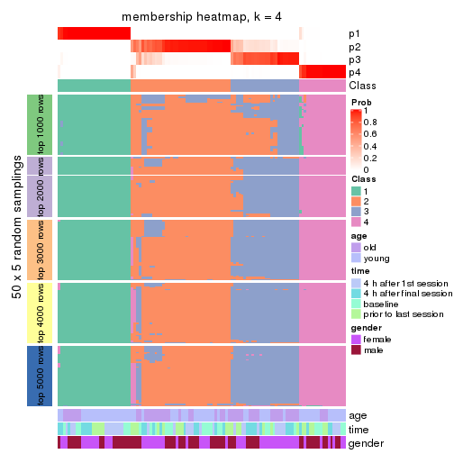
membership_heatmap(res, k = 5)
membership_heatmap(res, k = 6)
As soon as we have had the classes for columns, we can look for signatures which are significantly different between classes which can be candidate marks for certain classes. Following are the heatmaps for signatures.
Signature heatmaps where rows are scaled:
get_signatures(res, k = 2)
get_signatures(res, k = 3)
get_signatures(res, k = 4)
get_signatures(res, k = 5)
get_signatures(res, k = 6)
Signature heatmaps where rows are not scaled:
get_signatures(res, k = 2, scale_rows = FALSE)
get_signatures(res, k = 3, scale_rows = FALSE)
get_signatures(res, k = 4, scale_rows = FALSE)
get_signatures(res, k = 5, scale_rows = FALSE)
get_signatures(res, k = 6, scale_rows = FALSE)
Compare the overlap of signatures from different k:
compare_signatures(res)
get_signature() returns a data frame invisibly. TO get the list of signatures, the function
call should be assigned to a variable explicitly. In following code, if plot argument is set
to FALSE, no heatmap is plotted while only the differential analysis is performed.
# code only for demonstration
tb = get_signature(res, k = ..., plot = FALSE)
An example of the output of tb is:
#> which_row fdr mean_1 mean_2 scaled_mean_1 scaled_mean_2 km
#> 1 38 0.042760348 8.373488 9.131774 -0.5533452 0.5164555 1
#> 2 40 0.018707592 7.106213 8.469186 -0.6173731 0.5762149 1
#> 3 55 0.019134737 10.221463 11.207825 -0.6159697 0.5749050 1
#> 4 59 0.006059896 5.921854 7.869574 -0.6899429 0.6439467 1
#> 5 60 0.018055526 8.928898 10.211722 -0.6204761 0.5791110 1
#> 6 98 0.009384629 15.714769 14.887706 0.6635654 -0.6193277 2
...
The columns in tb are:
which_row: row indices corresponding to the input matrix.fdr: FDR for the differential test. mean_x: The mean value in group x.scaled_mean_x: The mean value in group x after rows are scaled.km: Row groups if k-means clustering is applied to rows.UMAP plot which shows how samples are separated.
dimension_reduction(res, k = 2, method = "UMAP")
dimension_reduction(res, k = 3, method = "UMAP")
dimension_reduction(res, k = 4, method = "UMAP")
dimension_reduction(res, k = 5, method = "UMAP")

dimension_reduction(res, k = 6, method = "UMAP")
Following heatmap shows how subgroups are split when increasing k:
collect_classes(res)
Test correlation between subgroups and known annotations. If the known annotation is numeric, one-way ANOVA test is applied, and if the known annotation is discrete, chi-squared contingency table test is applied.
test_to_known_factors(res)
#> n age(p) time(p) gender(p) k
#> ATC:skmeans 109 2.61e-04 0.932 0.139918 2
#> ATC:skmeans 109 2.80e-04 0.785 0.233201 3
#> ATC:skmeans 106 4.70e-04 0.767 0.027668 4
#> ATC:skmeans 101 7.31e-05 0.993 0.000181 5
#> ATC:skmeans 95 4.05e-05 1.000 0.005001 6
If matrix rows can be associated to genes, consider to use GO_Enrichment(res,
...) to perform function enrichment for the signature genes.
The object with results only for a single top-value method and a single partition method can be extracted as:
res = res_list["ATC", "pam"]
# you can also extract it by
# res = res_list["ATC:pam"]
A summary of res and all the functions that can be applied to it:
res
#> A 'ConsensusPartition' object with k = 2, 3, 4, 5, 6.
#> On a matrix with 51941 rows and 110 columns.
#> Top rows (1000, 2000, 3000, 4000, 5000) are extracted by 'ATC' method.
#> Subgroups are detected by 'pam' method.
#> Performed in total 1250 partitions by row resampling.
#> Best k for subgroups seems to be 3.
#>
#> Following methods can be applied to this 'ConsensusPartition' object:
#> [1] "cola_report" "collect_classes" "collect_plots"
#> [4] "collect_stats" "colnames" "compare_signatures"
#> [7] "consensus_heatmap" "dimension_reduction" "functional_enrichment"
#> [10] "get_anno_col" "get_anno" "get_classes"
#> [13] "get_consensus" "get_matrix" "get_membership"
#> [16] "get_param" "get_signatures" "get_stats"
#> [19] "is_best_k" "is_stable_k" "membership_heatmap"
#> [22] "ncol" "nrow" "plot_ecdf"
#> [25] "rownames" "select_partition_number" "show"
#> [28] "suggest_best_k" "test_to_known_factors"
collect_plots() function collects all the plots made from res for all k (number of partitions)
into one single page to provide an easy and fast comparison between different k.
collect_plots(res)
The plots are:
k and the heatmap of
predicted classes for each k.k.k.k.All the plots in panels can be made by individual functions and they are plotted later in this section.
select_partition_number() produces several plots showing different
statistics for choosing “optimized” k. There are following statistics:
k;k, the area increased is defined as \(A_k - A_{k-1}\).The detailed explanations of these statistics can be found in the cola vignette.
Generally speaking, lower PAC score, higher mean silhouette score or higher
concordance corresponds to better partition. Rand index and Jaccard index
measure how similar the current partition is compared to partition with k-1.
If they are too similar, we won't accept k is better than k-1.
select_partition_number(res)
The numeric values for all these statistics can be obtained by get_stats().
get_stats(res)
#> k 1-PAC mean_silhouette concordance area_increased Rand Jaccard
#> 2 2 1.000 0.956 0.981 0.2245 0.762 0.762
#> 3 3 0.977 0.933 0.971 1.4681 0.585 0.488
#> 4 4 0.744 0.841 0.923 0.2768 0.727 0.458
#> 5 5 0.845 0.856 0.928 0.0952 0.833 0.511
#> 6 6 0.790 0.806 0.856 0.0529 0.939 0.744
suggest_best_k() suggests the best \(k\) based on these statistics. The rules are as follows:
NA.suggest_best_k(res)
#> [1] 3
#> attr(,"optional")
#> [1] 2
There is also optional best \(k\) = 2 that is worth to check.
Following shows the table of the partitions (You need to click the show/hide
code output link to see it). The membership matrix (columns with name p*)
is inferred by
clue::cl_consensus()
function with the SE method. Basically the value in the membership matrix
represents the probability to belong to a certain group. The finall class
label for an item is determined with the group with highest probability it
belongs to.
In get_classes() function, the entropy is calculated from the membership
matrix and the silhouette score is calculated from the consensus matrix.
cbind(get_classes(res, k = 2), get_membership(res, k = 2))
#> class entropy silhouette p1 p2
#> GSM702357 1 0.0000 0.9931 1.000 0.000
#> GSM702358 1 0.0000 0.9931 1.000 0.000
#> GSM702359 2 0.0000 0.8893 0.000 1.000
#> GSM702360 1 0.9866 0.0702 0.568 0.432
#> GSM702361 1 0.0376 0.9903 0.996 0.004
#> GSM702362 2 0.0376 0.8874 0.004 0.996
#> GSM702363 1 0.0000 0.9931 1.000 0.000
#> GSM702364 1 0.0376 0.9903 0.996 0.004
#> GSM702413 1 0.0000 0.9931 1.000 0.000
#> GSM702414 1 0.0000 0.9931 1.000 0.000
#> GSM702415 1 0.0000 0.9931 1.000 0.000
#> GSM702416 1 0.0000 0.9931 1.000 0.000
#> GSM702417 1 0.0000 0.9931 1.000 0.000
#> GSM702418 1 0.0000 0.9931 1.000 0.000
#> GSM702419 1 0.0000 0.9931 1.000 0.000
#> GSM702365 1 0.0000 0.9931 1.000 0.000
#> GSM702366 1 0.0000 0.9931 1.000 0.000
#> GSM702367 1 0.3733 0.9096 0.928 0.072
#> GSM702368 2 0.0000 0.8893 0.000 1.000
#> GSM702369 1 0.0000 0.9931 1.000 0.000
#> GSM702370 1 0.0000 0.9931 1.000 0.000
#> GSM702371 2 0.9522 0.5256 0.372 0.628
#> GSM702372 2 0.0000 0.8893 0.000 1.000
#> GSM702420 1 0.0376 0.9903 0.996 0.004
#> GSM702421 1 0.0000 0.9931 1.000 0.000
#> GSM702422 1 0.0000 0.9931 1.000 0.000
#> GSM702423 2 0.9608 0.4989 0.384 0.616
#> GSM702424 1 0.0000 0.9931 1.000 0.000
#> GSM702425 1 0.0000 0.9931 1.000 0.000
#> GSM702426 2 0.9522 0.5256 0.372 0.628
#> GSM702427 1 0.0000 0.9931 1.000 0.000
#> GSM702373 1 0.0000 0.9931 1.000 0.000
#> GSM702374 2 0.0000 0.8893 0.000 1.000
#> GSM702375 2 0.9522 0.5256 0.372 0.628
#> GSM702376 1 0.0376 0.9903 0.996 0.004
#> GSM702377 1 0.0376 0.9903 0.996 0.004
#> GSM702378 1 0.0000 0.9931 1.000 0.000
#> GSM702379 1 0.0000 0.9931 1.000 0.000
#> GSM702380 1 0.0000 0.9931 1.000 0.000
#> GSM702428 1 0.0000 0.9931 1.000 0.000
#> GSM702429 1 0.0000 0.9931 1.000 0.000
#> GSM702430 2 0.0000 0.8893 0.000 1.000
#> GSM702431 1 0.0000 0.9931 1.000 0.000
#> GSM702432 1 0.0000 0.9931 1.000 0.000
#> GSM702433 1 0.0376 0.9903 0.996 0.004
#> GSM702434 1 0.0376 0.9903 0.996 0.004
#> GSM702381 1 0.0000 0.9931 1.000 0.000
#> GSM702382 1 0.0000 0.9931 1.000 0.000
#> GSM702383 1 0.0000 0.9931 1.000 0.000
#> GSM702384 1 0.0376 0.9903 0.996 0.004
#> GSM702385 1 0.0376 0.9903 0.996 0.004
#> GSM702386 1 0.0376 0.9903 0.996 0.004
#> GSM702387 1 0.0000 0.9931 1.000 0.000
#> GSM702388 1 0.0376 0.9903 0.996 0.004
#> GSM702435 1 0.0000 0.9931 1.000 0.000
#> GSM702436 1 0.0000 0.9931 1.000 0.000
#> GSM702437 2 0.0000 0.8893 0.000 1.000
#> GSM702438 2 0.0000 0.8893 0.000 1.000
#> GSM702439 1 0.0000 0.9931 1.000 0.000
#> GSM702440 1 0.0000 0.9931 1.000 0.000
#> GSM702441 1 0.0376 0.9903 0.996 0.004
#> GSM702442 2 0.0000 0.8893 0.000 1.000
#> GSM702389 1 0.0000 0.9931 1.000 0.000
#> GSM702390 1 0.0000 0.9931 1.000 0.000
#> GSM702391 1 0.0376 0.9903 0.996 0.004
#> GSM702392 1 0.0000 0.9931 1.000 0.000
#> GSM702393 2 0.0000 0.8893 0.000 1.000
#> GSM702394 1 0.0000 0.9931 1.000 0.000
#> GSM702443 1 0.0000 0.9931 1.000 0.000
#> GSM702444 1 0.0000 0.9931 1.000 0.000
#> GSM702445 1 0.0000 0.9931 1.000 0.000
#> GSM702446 1 0.0000 0.9931 1.000 0.000
#> GSM702447 1 0.0000 0.9931 1.000 0.000
#> GSM702448 1 0.0376 0.9903 0.996 0.004
#> GSM702395 1 0.0000 0.9931 1.000 0.000
#> GSM702396 1 0.0376 0.9903 0.996 0.004
#> GSM702397 1 0.0000 0.9931 1.000 0.000
#> GSM702398 1 0.0000 0.9931 1.000 0.000
#> GSM702399 1 0.0376 0.9903 0.996 0.004
#> GSM702400 1 0.0000 0.9931 1.000 0.000
#> GSM702449 1 0.0000 0.9931 1.000 0.000
#> GSM702450 1 0.0000 0.9931 1.000 0.000
#> GSM702451 1 0.0000 0.9931 1.000 0.000
#> GSM702452 1 0.0376 0.9903 0.996 0.004
#> GSM702453 1 0.0000 0.9931 1.000 0.000
#> GSM702454 1 0.0000 0.9931 1.000 0.000
#> GSM702401 1 0.0000 0.9931 1.000 0.000
#> GSM702402 1 0.0000 0.9931 1.000 0.000
#> GSM702403 1 0.0000 0.9931 1.000 0.000
#> GSM702404 1 0.0000 0.9931 1.000 0.000
#> GSM702405 1 0.0000 0.9931 1.000 0.000
#> GSM702406 1 0.0000 0.9931 1.000 0.000
#> GSM702455 1 0.0000 0.9931 1.000 0.000
#> GSM702456 1 0.0000 0.9931 1.000 0.000
#> GSM702457 1 0.0000 0.9931 1.000 0.000
#> GSM702458 1 0.0000 0.9931 1.000 0.000
#> GSM702459 1 0.0000 0.9931 1.000 0.000
#> GSM702460 1 0.0000 0.9931 1.000 0.000
#> GSM702407 1 0.0000 0.9931 1.000 0.000
#> GSM702408 1 0.0000 0.9931 1.000 0.000
#> GSM702409 2 0.0000 0.8893 0.000 1.000
#> GSM702410 1 0.0000 0.9931 1.000 0.000
#> GSM702411 1 0.0000 0.9931 1.000 0.000
#> GSM702412 1 0.0000 0.9931 1.000 0.000
#> GSM702461 1 0.0000 0.9931 1.000 0.000
#> GSM702462 1 0.0000 0.9931 1.000 0.000
#> GSM702463 1 0.0000 0.9931 1.000 0.000
#> GSM702464 1 0.0000 0.9931 1.000 0.000
#> GSM702465 1 0.0000 0.9931 1.000 0.000
#> GSM702466 1 0.0000 0.9931 1.000 0.000
cbind(get_classes(res, k = 3), get_membership(res, k = 3))
#> class entropy silhouette p1 p2 p3
#> GSM702357 3 0.0000 0.948 0 0.000 1.000
#> GSM702358 3 0.0000 0.948 0 0.000 1.000
#> GSM702359 1 0.0000 1.000 1 0.000 0.000
#> GSM702360 2 0.0000 0.966 0 1.000 0.000
#> GSM702361 2 0.0000 0.966 0 1.000 0.000
#> GSM702362 2 0.0000 0.966 0 1.000 0.000
#> GSM702363 3 0.0000 0.948 0 0.000 1.000
#> GSM702364 2 0.0000 0.966 0 1.000 0.000
#> GSM702413 3 0.0000 0.948 0 0.000 1.000
#> GSM702414 3 0.0000 0.948 0 0.000 1.000
#> GSM702415 2 0.0747 0.959 0 0.984 0.016
#> GSM702416 2 0.1163 0.964 0 0.972 0.028
#> GSM702417 2 0.0000 0.966 0 1.000 0.000
#> GSM702418 2 0.1163 0.964 0 0.972 0.028
#> GSM702419 2 0.2537 0.916 0 0.920 0.080
#> GSM702365 2 0.1163 0.964 0 0.972 0.028
#> GSM702366 3 0.0000 0.948 0 0.000 1.000
#> GSM702367 2 0.0000 0.966 0 1.000 0.000
#> GSM702368 1 0.0000 1.000 1 0.000 0.000
#> GSM702369 2 0.0424 0.966 0 0.992 0.008
#> GSM702370 2 0.0000 0.966 0 1.000 0.000
#> GSM702371 2 0.0000 0.966 0 1.000 0.000
#> GSM702372 1 0.0000 1.000 1 0.000 0.000
#> GSM702420 2 0.0000 0.966 0 1.000 0.000
#> GSM702421 3 0.0000 0.948 0 0.000 1.000
#> GSM702422 3 0.3941 0.756 0 0.156 0.844
#> GSM702423 2 0.0000 0.966 0 1.000 0.000
#> GSM702424 2 0.1163 0.964 0 0.972 0.028
#> GSM702425 2 0.0000 0.966 0 1.000 0.000
#> GSM702426 2 0.0000 0.966 0 1.000 0.000
#> GSM702427 2 0.2165 0.933 0 0.936 0.064
#> GSM702373 3 0.0000 0.948 0 0.000 1.000
#> GSM702374 1 0.0000 1.000 1 0.000 0.000
#> GSM702375 2 0.0000 0.966 0 1.000 0.000
#> GSM702376 2 0.0000 0.966 0 1.000 0.000
#> GSM702377 2 0.0000 0.966 0 1.000 0.000
#> GSM702378 2 0.0424 0.966 0 0.992 0.008
#> GSM702379 2 0.1031 0.965 0 0.976 0.024
#> GSM702380 2 0.1163 0.964 0 0.972 0.028
#> GSM702428 2 0.1031 0.965 0 0.976 0.024
#> GSM702429 3 0.0000 0.948 0 0.000 1.000
#> GSM702430 1 0.0000 1.000 1 0.000 0.000
#> GSM702431 2 0.1031 0.965 0 0.976 0.024
#> GSM702432 2 0.1163 0.964 0 0.972 0.028
#> GSM702433 2 0.0000 0.966 0 1.000 0.000
#> GSM702434 2 0.0000 0.966 0 1.000 0.000
#> GSM702381 2 0.0892 0.965 0 0.980 0.020
#> GSM702382 3 0.0000 0.948 0 0.000 1.000
#> GSM702383 3 0.0000 0.948 0 0.000 1.000
#> GSM702384 2 0.0000 0.966 0 1.000 0.000
#> GSM702385 2 0.0000 0.966 0 1.000 0.000
#> GSM702386 2 0.0000 0.966 0 1.000 0.000
#> GSM702387 2 0.1163 0.964 0 0.972 0.028
#> GSM702388 2 0.0000 0.966 0 1.000 0.000
#> GSM702435 2 0.0000 0.966 0 1.000 0.000
#> GSM702436 2 0.5926 0.418 0 0.644 0.356
#> GSM702437 1 0.0000 1.000 1 0.000 0.000
#> GSM702438 1 0.0000 1.000 1 0.000 0.000
#> GSM702439 2 0.0000 0.966 0 1.000 0.000
#> GSM702440 2 0.1163 0.964 0 0.972 0.028
#> GSM702441 2 0.0000 0.966 0 1.000 0.000
#> GSM702442 1 0.0000 1.000 1 0.000 0.000
#> GSM702389 3 0.5216 0.592 0 0.260 0.740
#> GSM702390 2 0.1163 0.964 0 0.972 0.028
#> GSM702391 2 0.0000 0.966 0 1.000 0.000
#> GSM702392 2 0.1163 0.964 0 0.972 0.028
#> GSM702393 1 0.0000 1.000 1 0.000 0.000
#> GSM702394 3 0.5397 0.560 0 0.280 0.720
#> GSM702443 3 0.0000 0.948 0 0.000 1.000
#> GSM702444 3 0.0000 0.948 0 0.000 1.000
#> GSM702445 3 0.1031 0.923 0 0.024 0.976
#> GSM702446 2 0.1031 0.965 0 0.976 0.024
#> GSM702447 2 0.1163 0.964 0 0.972 0.028
#> GSM702448 2 0.0000 0.966 0 1.000 0.000
#> GSM702395 3 0.0000 0.948 0 0.000 1.000
#> GSM702396 2 0.0000 0.966 0 1.000 0.000
#> GSM702397 3 0.0000 0.948 0 0.000 1.000
#> GSM702398 2 0.1163 0.964 0 0.972 0.028
#> GSM702399 2 0.0000 0.966 0 1.000 0.000
#> GSM702400 2 0.5621 0.575 0 0.692 0.308
#> GSM702449 3 0.0000 0.948 0 0.000 1.000
#> GSM702450 3 0.0000 0.948 0 0.000 1.000
#> GSM702451 2 0.1163 0.964 0 0.972 0.028
#> GSM702452 2 0.0000 0.966 0 1.000 0.000
#> GSM702453 3 0.0000 0.948 0 0.000 1.000
#> GSM702454 2 0.1163 0.964 0 0.972 0.028
#> GSM702401 3 0.0000 0.948 0 0.000 1.000
#> GSM702402 3 0.0000 0.948 0 0.000 1.000
#> GSM702403 2 0.1031 0.965 0 0.976 0.024
#> GSM702404 2 0.5465 0.615 0 0.712 0.288
#> GSM702405 2 0.1031 0.965 0 0.976 0.024
#> GSM702406 2 0.1163 0.964 0 0.972 0.028
#> GSM702455 3 0.0000 0.948 0 0.000 1.000
#> GSM702456 3 0.0000 0.948 0 0.000 1.000
#> GSM702457 3 0.0000 0.948 0 0.000 1.000
#> GSM702458 3 0.0000 0.948 0 0.000 1.000
#> GSM702459 3 0.0000 0.948 0 0.000 1.000
#> GSM702460 3 0.2537 0.858 0 0.080 0.920
#> GSM702407 3 0.0000 0.948 0 0.000 1.000
#> GSM702408 3 0.0000 0.948 0 0.000 1.000
#> GSM702409 1 0.0000 1.000 1 0.000 0.000
#> GSM702410 2 0.1163 0.964 0 0.972 0.028
#> GSM702411 2 0.1163 0.964 0 0.972 0.028
#> GSM702412 2 0.2165 0.932 0 0.936 0.064
#> GSM702461 3 0.0000 0.948 0 0.000 1.000
#> GSM702462 3 0.1753 0.896 0 0.048 0.952
#> GSM702463 3 0.0000 0.948 0 0.000 1.000
#> GSM702464 3 0.6252 0.195 0 0.444 0.556
#> GSM702465 3 0.0000 0.948 0 0.000 1.000
#> GSM702466 2 0.1163 0.964 0 0.972 0.028
cbind(get_classes(res, k = 4), get_membership(res, k = 4))
#> class entropy silhouette p1 p2 p3 p4
#> GSM702357 3 0.0000 0.901 0.000 0.000 1.000 0
#> GSM702358 3 0.0000 0.901 0.000 0.000 1.000 0
#> GSM702359 4 0.0000 1.000 0.000 0.000 0.000 1
#> GSM702360 1 0.0000 0.900 1.000 0.000 0.000 0
#> GSM702361 1 0.2408 0.917 0.896 0.104 0.000 0
#> GSM702362 1 0.0000 0.900 1.000 0.000 0.000 0
#> GSM702363 2 0.4776 0.469 0.000 0.624 0.376 0
#> GSM702364 1 0.2408 0.917 0.896 0.104 0.000 0
#> GSM702413 3 0.0000 0.901 0.000 0.000 1.000 0
#> GSM702414 3 0.0000 0.901 0.000 0.000 1.000 0
#> GSM702415 1 0.3758 0.889 0.848 0.104 0.048 0
#> GSM702416 2 0.0921 0.873 0.028 0.972 0.000 0
#> GSM702417 1 0.2408 0.917 0.896 0.104 0.000 0
#> GSM702418 2 0.0000 0.888 0.000 1.000 0.000 0
#> GSM702419 2 0.1022 0.874 0.000 0.968 0.032 0
#> GSM702365 2 0.0188 0.887 0.000 0.996 0.004 0
#> GSM702366 2 0.4713 0.499 0.000 0.640 0.360 0
#> GSM702367 1 0.0000 0.900 1.000 0.000 0.000 0
#> GSM702368 4 0.0000 1.000 0.000 0.000 0.000 1
#> GSM702369 1 0.4103 0.754 0.744 0.256 0.000 0
#> GSM702370 1 0.2408 0.917 0.896 0.104 0.000 0
#> GSM702371 1 0.0000 0.900 1.000 0.000 0.000 0
#> GSM702372 4 0.0000 1.000 0.000 0.000 0.000 1
#> GSM702420 1 0.0000 0.900 1.000 0.000 0.000 0
#> GSM702421 3 0.0000 0.901 0.000 0.000 1.000 0
#> GSM702422 2 0.6641 0.489 0.276 0.600 0.124 0
#> GSM702423 1 0.0000 0.900 1.000 0.000 0.000 0
#> GSM702424 2 0.0000 0.888 0.000 1.000 0.000 0
#> GSM702425 1 0.2760 0.900 0.872 0.128 0.000 0
#> GSM702426 1 0.0000 0.900 1.000 0.000 0.000 0
#> GSM702427 2 0.0469 0.884 0.012 0.988 0.000 0
#> GSM702373 3 0.1211 0.870 0.000 0.040 0.960 0
#> GSM702374 4 0.0000 1.000 0.000 0.000 0.000 1
#> GSM702375 1 0.0000 0.900 1.000 0.000 0.000 0
#> GSM702376 1 0.2408 0.917 0.896 0.104 0.000 0
#> GSM702377 1 0.2408 0.917 0.896 0.104 0.000 0
#> GSM702378 1 0.4008 0.772 0.756 0.244 0.000 0
#> GSM702379 2 0.1389 0.860 0.048 0.952 0.000 0
#> GSM702380 2 0.0000 0.888 0.000 1.000 0.000 0
#> GSM702428 2 0.3626 0.742 0.004 0.812 0.184 0
#> GSM702429 3 0.0000 0.901 0.000 0.000 1.000 0
#> GSM702430 4 0.0000 1.000 0.000 0.000 0.000 1
#> GSM702431 2 0.1022 0.871 0.032 0.968 0.000 0
#> GSM702432 2 0.0000 0.888 0.000 1.000 0.000 0
#> GSM702433 1 0.0000 0.900 1.000 0.000 0.000 0
#> GSM702434 1 0.2216 0.919 0.908 0.092 0.000 0
#> GSM702381 1 0.4877 0.424 0.592 0.408 0.000 0
#> GSM702382 3 0.0000 0.901 0.000 0.000 1.000 0
#> GSM702383 3 0.4999 -0.127 0.000 0.492 0.508 0
#> GSM702384 1 0.2408 0.917 0.896 0.104 0.000 0
#> GSM702385 1 0.2216 0.919 0.908 0.092 0.000 0
#> GSM702386 1 0.2408 0.917 0.896 0.104 0.000 0
#> GSM702387 2 0.0000 0.888 0.000 1.000 0.000 0
#> GSM702388 1 0.0000 0.900 1.000 0.000 0.000 0
#> GSM702435 1 0.2216 0.919 0.908 0.092 0.000 0
#> GSM702436 1 0.3706 0.841 0.848 0.040 0.112 0
#> GSM702437 4 0.0000 1.000 0.000 0.000 0.000 1
#> GSM702438 4 0.0000 1.000 0.000 0.000 0.000 1
#> GSM702439 1 0.2408 0.917 0.896 0.104 0.000 0
#> GSM702440 2 0.0000 0.888 0.000 1.000 0.000 0
#> GSM702441 1 0.0000 0.900 1.000 0.000 0.000 0
#> GSM702442 4 0.0000 1.000 0.000 0.000 0.000 1
#> GSM702389 2 0.4331 0.622 0.000 0.712 0.288 0
#> GSM702390 2 0.1867 0.851 0.000 0.928 0.072 0
#> GSM702391 1 0.2408 0.917 0.896 0.104 0.000 0
#> GSM702392 2 0.0000 0.888 0.000 1.000 0.000 0
#> GSM702393 4 0.0000 1.000 0.000 0.000 0.000 1
#> GSM702394 2 0.2469 0.813 0.000 0.892 0.108 0
#> GSM702443 3 0.0000 0.901 0.000 0.000 1.000 0
#> GSM702444 3 0.0000 0.901 0.000 0.000 1.000 0
#> GSM702445 2 0.2408 0.815 0.000 0.896 0.104 0
#> GSM702446 2 0.2281 0.817 0.096 0.904 0.000 0
#> GSM702447 2 0.0000 0.888 0.000 1.000 0.000 0
#> GSM702448 1 0.2216 0.919 0.908 0.092 0.000 0
#> GSM702395 2 0.4356 0.617 0.000 0.708 0.292 0
#> GSM702396 1 0.0000 0.900 1.000 0.000 0.000 0
#> GSM702397 3 0.1389 0.863 0.000 0.048 0.952 0
#> GSM702398 2 0.0000 0.888 0.000 1.000 0.000 0
#> GSM702399 1 0.2216 0.919 0.908 0.092 0.000 0
#> GSM702400 2 0.1389 0.864 0.000 0.952 0.048 0
#> GSM702449 3 0.4103 0.636 0.000 0.256 0.744 0
#> GSM702450 3 0.0000 0.901 0.000 0.000 1.000 0
#> GSM702451 2 0.0000 0.888 0.000 1.000 0.000 0
#> GSM702452 1 0.0000 0.900 1.000 0.000 0.000 0
#> GSM702453 3 0.4134 0.632 0.000 0.260 0.740 0
#> GSM702454 2 0.0000 0.888 0.000 1.000 0.000 0
#> GSM702401 3 0.0000 0.901 0.000 0.000 1.000 0
#> GSM702402 3 0.0000 0.901 0.000 0.000 1.000 0
#> GSM702403 2 0.1022 0.871 0.032 0.968 0.000 0
#> GSM702404 2 0.1211 0.869 0.000 0.960 0.040 0
#> GSM702405 2 0.4222 0.548 0.272 0.728 0.000 0
#> GSM702406 2 0.0000 0.888 0.000 1.000 0.000 0
#> GSM702455 3 0.0000 0.901 0.000 0.000 1.000 0
#> GSM702456 3 0.0000 0.901 0.000 0.000 1.000 0
#> GSM702457 3 0.4103 0.636 0.000 0.256 0.744 0
#> GSM702458 3 0.0000 0.901 0.000 0.000 1.000 0
#> GSM702459 3 0.0000 0.901 0.000 0.000 1.000 0
#> GSM702460 2 0.1389 0.863 0.000 0.952 0.048 0
#> GSM702407 3 0.4843 0.234 0.000 0.396 0.604 0
#> GSM702408 2 0.4843 0.421 0.000 0.604 0.396 0
#> GSM702409 4 0.0000 1.000 0.000 0.000 0.000 1
#> GSM702410 2 0.0000 0.888 0.000 1.000 0.000 0
#> GSM702411 2 0.0000 0.888 0.000 1.000 0.000 0
#> GSM702412 2 0.0000 0.888 0.000 1.000 0.000 0
#> GSM702461 3 0.0000 0.901 0.000 0.000 1.000 0
#> GSM702462 2 0.4844 0.562 0.012 0.688 0.300 0
#> GSM702463 2 0.4624 0.477 0.000 0.660 0.340 0
#> GSM702464 2 0.0000 0.888 0.000 1.000 0.000 0
#> GSM702465 3 0.0000 0.901 0.000 0.000 1.000 0
#> GSM702466 2 0.0000 0.888 0.000 1.000 0.000 0
cbind(get_classes(res, k = 5), get_membership(res, k = 5))
#> class entropy silhouette p1 p2 p3 p4 p5
#> GSM702357 3 0.0000 0.90942 0.000 0.000 1.000 0.000 0.00
#> GSM702358 3 0.0000 0.90942 0.000 0.000 1.000 0.000 0.00
#> GSM702359 5 0.0000 0.98666 0.000 0.000 0.000 0.000 1.00
#> GSM702360 4 0.3305 0.68748 0.224 0.000 0.000 0.776 0.00
#> GSM702361 1 0.0162 0.95059 0.996 0.000 0.000 0.004 0.00
#> GSM702362 4 0.0162 0.96931 0.004 0.000 0.000 0.996 0.00
#> GSM702363 2 0.4126 0.50188 0.000 0.620 0.380 0.000 0.00
#> GSM702364 1 0.0963 0.93745 0.964 0.000 0.000 0.036 0.00
#> GSM702413 3 0.0000 0.90942 0.000 0.000 1.000 0.000 0.00
#> GSM702414 3 0.0000 0.90942 0.000 0.000 1.000 0.000 0.00
#> GSM702415 1 0.3269 0.83479 0.848 0.000 0.096 0.056 0.00
#> GSM702416 1 0.0510 0.94673 0.984 0.016 0.000 0.000 0.00
#> GSM702417 1 0.0162 0.95059 0.996 0.000 0.000 0.004 0.00
#> GSM702418 1 0.1608 0.89892 0.928 0.072 0.000 0.000 0.00
#> GSM702419 2 0.1341 0.84367 0.056 0.944 0.000 0.000 0.00
#> GSM702365 1 0.0290 0.94849 0.992 0.008 0.000 0.000 0.00
#> GSM702366 2 0.3932 0.58146 0.000 0.672 0.328 0.000 0.00
#> GSM702367 4 0.0000 0.97019 0.000 0.000 0.000 1.000 0.00
#> GSM702368 5 0.0000 0.98666 0.000 0.000 0.000 0.000 1.00
#> GSM702369 1 0.0000 0.95051 1.000 0.000 0.000 0.000 0.00
#> GSM702370 1 0.0000 0.95051 1.000 0.000 0.000 0.000 0.00
#> GSM702371 4 0.0000 0.97019 0.000 0.000 0.000 1.000 0.00
#> GSM702372 5 0.0000 0.98666 0.000 0.000 0.000 0.000 1.00
#> GSM702420 4 0.0000 0.97019 0.000 0.000 0.000 1.000 0.00
#> GSM702421 3 0.0000 0.90942 0.000 0.000 1.000 0.000 0.00
#> GSM702422 2 0.4901 0.67470 0.000 0.708 0.196 0.096 0.00
#> GSM702423 4 0.0000 0.97019 0.000 0.000 0.000 1.000 0.00
#> GSM702424 2 0.1043 0.84761 0.040 0.960 0.000 0.000 0.00
#> GSM702425 1 0.1809 0.92334 0.928 0.012 0.000 0.060 0.00
#> GSM702426 4 0.0000 0.97019 0.000 0.000 0.000 1.000 0.00
#> GSM702427 2 0.0000 0.84677 0.000 1.000 0.000 0.000 0.00
#> GSM702373 3 0.1270 0.87592 0.000 0.052 0.948 0.000 0.00
#> GSM702374 5 0.0000 0.98666 0.000 0.000 0.000 0.000 1.00
#> GSM702375 4 0.0290 0.96713 0.008 0.000 0.000 0.992 0.00
#> GSM702376 1 0.0162 0.95059 0.996 0.000 0.000 0.004 0.00
#> GSM702377 1 0.0162 0.95059 0.996 0.000 0.000 0.004 0.00
#> GSM702378 1 0.0162 0.95059 0.996 0.000 0.000 0.004 0.00
#> GSM702379 1 0.0000 0.95051 1.000 0.000 0.000 0.000 0.00
#> GSM702380 1 0.0609 0.94275 0.980 0.020 0.000 0.000 0.00
#> GSM702428 1 0.0162 0.94967 0.996 0.004 0.000 0.000 0.00
#> GSM702429 3 0.0000 0.90942 0.000 0.000 1.000 0.000 0.00
#> GSM702430 5 0.0000 0.98666 0.000 0.000 0.000 0.000 1.00
#> GSM702431 1 0.0000 0.95051 1.000 0.000 0.000 0.000 0.00
#> GSM702432 1 0.0510 0.94451 0.984 0.016 0.000 0.000 0.00
#> GSM702433 4 0.0510 0.96087 0.016 0.000 0.000 0.984 0.00
#> GSM702434 1 0.2605 0.85028 0.852 0.000 0.000 0.148 0.00
#> GSM702381 2 0.5396 0.56956 0.220 0.656 0.000 0.124 0.00
#> GSM702382 3 0.0290 0.90636 0.000 0.008 0.992 0.000 0.00
#> GSM702383 2 0.4278 0.32330 0.000 0.548 0.452 0.000 0.00
#> GSM702384 1 0.1608 0.91652 0.928 0.000 0.000 0.072 0.00
#> GSM702385 1 0.2561 0.85429 0.856 0.000 0.000 0.144 0.00
#> GSM702386 1 0.1043 0.93501 0.960 0.000 0.000 0.040 0.00
#> GSM702387 2 0.1410 0.84191 0.060 0.940 0.000 0.000 0.00
#> GSM702388 4 0.0162 0.96914 0.004 0.000 0.000 0.996 0.00
#> GSM702435 1 0.5460 0.60700 0.656 0.196 0.000 0.148 0.00
#> GSM702436 2 0.6553 0.59239 0.052 0.608 0.196 0.144 0.00
#> GSM702437 5 0.2280 0.86540 0.000 0.000 0.000 0.120 0.88
#> GSM702438 5 0.0000 0.98666 0.000 0.000 0.000 0.000 1.00
#> GSM702439 1 0.0162 0.95059 0.996 0.000 0.000 0.004 0.00
#> GSM702440 2 0.3452 0.67452 0.244 0.756 0.000 0.000 0.00
#> GSM702441 4 0.0404 0.96442 0.012 0.000 0.000 0.988 0.00
#> GSM702442 5 0.0000 0.98666 0.000 0.000 0.000 0.000 1.00
#> GSM702389 2 0.2179 0.81206 0.000 0.888 0.112 0.000 0.00
#> GSM702390 1 0.0510 0.94451 0.984 0.016 0.000 0.000 0.00
#> GSM702391 1 0.1043 0.93501 0.960 0.000 0.000 0.040 0.00
#> GSM702392 2 0.3003 0.74485 0.188 0.812 0.000 0.000 0.00
#> GSM702393 5 0.0000 0.98666 0.000 0.000 0.000 0.000 1.00
#> GSM702394 2 0.1478 0.83931 0.000 0.936 0.064 0.000 0.00
#> GSM702443 3 0.1043 0.89165 0.000 0.040 0.960 0.000 0.00
#> GSM702444 3 0.0000 0.90942 0.000 0.000 1.000 0.000 0.00
#> GSM702445 2 0.0000 0.84677 0.000 1.000 0.000 0.000 0.00
#> GSM702446 1 0.0404 0.94842 0.988 0.012 0.000 0.000 0.00
#> GSM702447 2 0.0000 0.84677 0.000 1.000 0.000 0.000 0.00
#> GSM702448 1 0.1571 0.92387 0.936 0.004 0.000 0.060 0.00
#> GSM702395 2 0.2377 0.80179 0.000 0.872 0.128 0.000 0.00
#> GSM702396 4 0.0000 0.97019 0.000 0.000 0.000 1.000 0.00
#> GSM702397 3 0.1544 0.86107 0.000 0.068 0.932 0.000 0.00
#> GSM702398 2 0.1121 0.84713 0.044 0.956 0.000 0.000 0.00
#> GSM702399 1 0.2605 0.85028 0.852 0.000 0.000 0.148 0.00
#> GSM702400 2 0.1205 0.84443 0.004 0.956 0.040 0.000 0.00
#> GSM702449 3 0.3932 0.54727 0.000 0.328 0.672 0.000 0.00
#> GSM702450 3 0.1341 0.88346 0.000 0.056 0.944 0.000 0.00
#> GSM702451 2 0.0000 0.84677 0.000 1.000 0.000 0.000 0.00
#> GSM702452 4 0.0162 0.96655 0.000 0.004 0.000 0.996 0.00
#> GSM702453 3 0.3932 0.54709 0.000 0.328 0.672 0.000 0.00
#> GSM702454 2 0.1608 0.83069 0.072 0.928 0.000 0.000 0.00
#> GSM702401 3 0.0000 0.90942 0.000 0.000 1.000 0.000 0.00
#> GSM702402 3 0.0000 0.90942 0.000 0.000 1.000 0.000 0.00
#> GSM702403 1 0.0000 0.95051 1.000 0.000 0.000 0.000 0.00
#> GSM702404 2 0.1282 0.84773 0.044 0.952 0.004 0.000 0.00
#> GSM702405 1 0.0000 0.95051 1.000 0.000 0.000 0.000 0.00
#> GSM702406 2 0.1121 0.84713 0.044 0.956 0.000 0.000 0.00
#> GSM702455 3 0.0000 0.90942 0.000 0.000 1.000 0.000 0.00
#> GSM702456 3 0.0000 0.90942 0.000 0.000 1.000 0.000 0.00
#> GSM702457 3 0.3932 0.54917 0.000 0.328 0.672 0.000 0.00
#> GSM702458 3 0.0000 0.90942 0.000 0.000 1.000 0.000 0.00
#> GSM702459 3 0.0000 0.90942 0.000 0.000 1.000 0.000 0.00
#> GSM702460 2 0.0000 0.84677 0.000 1.000 0.000 0.000 0.00
#> GSM702407 3 0.4256 0.00766 0.000 0.436 0.564 0.000 0.00
#> GSM702408 2 0.4114 0.50604 0.000 0.624 0.376 0.000 0.00
#> GSM702409 5 0.0000 0.98666 0.000 0.000 0.000 0.000 1.00
#> GSM702410 2 0.1121 0.84713 0.044 0.956 0.000 0.000 0.00
#> GSM702411 2 0.1121 0.84713 0.044 0.956 0.000 0.000 0.00
#> GSM702412 2 0.0162 0.84682 0.004 0.996 0.000 0.000 0.00
#> GSM702461 3 0.1043 0.89165 0.000 0.040 0.960 0.000 0.00
#> GSM702462 2 0.4015 0.48940 0.000 0.652 0.348 0.000 0.00
#> GSM702463 2 0.3305 0.64044 0.000 0.776 0.224 0.000 0.00
#> GSM702464 2 0.0000 0.84677 0.000 1.000 0.000 0.000 0.00
#> GSM702465 3 0.1043 0.89165 0.000 0.040 0.960 0.000 0.00
#> GSM702466 2 0.0000 0.84677 0.000 1.000 0.000 0.000 0.00
cbind(get_classes(res, k = 6), get_membership(res, k = 6))
#> class entropy silhouette p1 p2 p3 p4 p5 p6
#> GSM702357 2 0.3482 0.738 0.0 0.684 0.316 0.000 0.000 0.000
#> GSM702358 2 0.3446 0.740 0.0 0.692 0.308 0.000 0.000 0.000
#> GSM702359 1 0.0000 0.989 1.0 0.000 0.000 0.000 0.000 0.000
#> GSM702360 5 0.4228 0.634 0.0 0.064 0.000 0.000 0.708 0.228
#> GSM702361 6 0.1745 0.878 0.0 0.068 0.000 0.000 0.012 0.920
#> GSM702362 5 0.1327 0.909 0.0 0.064 0.000 0.000 0.936 0.000
#> GSM702363 2 0.4570 0.708 0.0 0.668 0.080 0.252 0.000 0.000
#> GSM702364 6 0.2563 0.859 0.0 0.072 0.000 0.000 0.052 0.876
#> GSM702413 2 0.3563 0.727 0.0 0.664 0.336 0.000 0.000 0.000
#> GSM702414 2 0.3607 0.716 0.0 0.652 0.348 0.000 0.000 0.000
#> GSM702415 6 0.3603 0.787 0.0 0.112 0.000 0.008 0.072 0.808
#> GSM702416 6 0.1802 0.879 0.0 0.072 0.000 0.012 0.000 0.916
#> GSM702417 6 0.0291 0.890 0.0 0.004 0.000 0.000 0.004 0.992
#> GSM702418 6 0.1349 0.863 0.0 0.004 0.000 0.056 0.000 0.940
#> GSM702419 4 0.2932 0.742 0.0 0.016 0.000 0.820 0.000 0.164
#> GSM702365 6 0.0405 0.887 0.0 0.004 0.000 0.008 0.000 0.988
#> GSM702366 2 0.3720 0.706 0.0 0.736 0.028 0.236 0.000 0.000
#> GSM702367 5 0.0000 0.946 0.0 0.000 0.000 0.000 1.000 0.000
#> GSM702368 1 0.0000 0.989 1.0 0.000 0.000 0.000 0.000 0.000
#> GSM702369 6 0.0405 0.888 0.0 0.008 0.000 0.004 0.000 0.988
#> GSM702370 6 0.0692 0.890 0.0 0.020 0.000 0.000 0.004 0.976
#> GSM702371 5 0.0000 0.946 0.0 0.000 0.000 0.000 1.000 0.000
#> GSM702372 1 0.0000 0.989 1.0 0.000 0.000 0.000 0.000 0.000
#> GSM702420 5 0.0000 0.946 0.0 0.000 0.000 0.000 1.000 0.000
#> GSM702421 3 0.0000 0.964 0.0 0.000 1.000 0.000 0.000 0.000
#> GSM702422 4 0.5700 0.609 0.0 0.268 0.008 0.568 0.152 0.004
#> GSM702423 5 0.0000 0.946 0.0 0.000 0.000 0.000 1.000 0.000
#> GSM702424 4 0.4603 0.728 0.0 0.156 0.000 0.696 0.000 0.148
#> GSM702425 6 0.2009 0.859 0.0 0.008 0.000 0.004 0.084 0.904
#> GSM702426 5 0.0000 0.946 0.0 0.000 0.000 0.000 1.000 0.000
#> GSM702427 4 0.2838 0.743 0.0 0.188 0.000 0.808 0.000 0.004
#> GSM702373 2 0.3494 0.746 0.0 0.736 0.252 0.012 0.000 0.000
#> GSM702374 1 0.0000 0.989 1.0 0.000 0.000 0.000 0.000 0.000
#> GSM702375 5 0.0146 0.945 0.0 0.000 0.000 0.000 0.996 0.004
#> GSM702376 6 0.1643 0.879 0.0 0.068 0.000 0.000 0.008 0.924
#> GSM702377 6 0.1010 0.887 0.0 0.004 0.000 0.000 0.036 0.960
#> GSM702378 6 0.0291 0.890 0.0 0.004 0.000 0.000 0.004 0.992
#> GSM702379 6 0.0146 0.890 0.0 0.004 0.000 0.000 0.000 0.996
#> GSM702380 6 0.1267 0.869 0.0 0.000 0.000 0.060 0.000 0.940
#> GSM702428 6 0.0405 0.887 0.0 0.004 0.000 0.008 0.000 0.988
#> GSM702429 2 0.3531 0.730 0.0 0.672 0.328 0.000 0.000 0.000
#> GSM702430 1 0.0000 0.989 1.0 0.000 0.000 0.000 0.000 0.000
#> GSM702431 6 0.0146 0.888 0.0 0.004 0.000 0.000 0.000 0.996
#> GSM702432 6 0.0508 0.885 0.0 0.004 0.000 0.012 0.000 0.984
#> GSM702433 5 0.0603 0.937 0.0 0.004 0.000 0.000 0.980 0.016
#> GSM702434 6 0.5744 0.491 0.0 0.192 0.000 0.008 0.248 0.552
#> GSM702381 4 0.6243 0.523 0.0 0.052 0.000 0.556 0.188 0.204
#> GSM702382 3 0.1701 0.889 0.0 0.072 0.920 0.008 0.000 0.000
#> GSM702383 2 0.3841 0.694 0.0 0.716 0.028 0.256 0.000 0.000
#> GSM702384 6 0.3063 0.837 0.0 0.068 0.000 0.000 0.092 0.840
#> GSM702385 6 0.3240 0.724 0.0 0.004 0.000 0.000 0.244 0.752
#> GSM702386 6 0.2625 0.856 0.0 0.072 0.000 0.000 0.056 0.872
#> GSM702387 4 0.2048 0.767 0.0 0.000 0.000 0.880 0.000 0.120
#> GSM702388 5 0.1588 0.906 0.0 0.072 0.000 0.000 0.924 0.004
#> GSM702435 6 0.7456 0.202 0.0 0.192 0.000 0.176 0.248 0.384
#> GSM702436 4 0.6250 0.453 0.0 0.272 0.000 0.468 0.244 0.016
#> GSM702437 1 0.1814 0.888 0.9 0.000 0.000 0.000 0.100 0.000
#> GSM702438 1 0.0000 0.989 1.0 0.000 0.000 0.000 0.000 0.000
#> GSM702439 6 0.0520 0.889 0.0 0.008 0.000 0.000 0.008 0.984
#> GSM702440 4 0.3774 0.611 0.0 0.008 0.000 0.664 0.000 0.328
#> GSM702441 5 0.0508 0.939 0.0 0.004 0.000 0.000 0.984 0.012
#> GSM702442 1 0.0000 0.989 1.0 0.000 0.000 0.000 0.000 0.000
#> GSM702389 2 0.3765 0.496 0.0 0.596 0.000 0.404 0.000 0.000
#> GSM702390 6 0.1563 0.866 0.0 0.056 0.000 0.012 0.000 0.932
#> GSM702391 6 0.2462 0.852 0.0 0.028 0.000 0.000 0.096 0.876
#> GSM702392 4 0.3582 0.661 0.0 0.016 0.000 0.732 0.000 0.252
#> GSM702393 1 0.0000 0.989 1.0 0.000 0.000 0.000 0.000 0.000
#> GSM702394 4 0.3606 0.499 0.0 0.256 0.016 0.728 0.000 0.000
#> GSM702443 3 0.0000 0.964 0.0 0.000 1.000 0.000 0.000 0.000
#> GSM702444 3 0.0000 0.964 0.0 0.000 1.000 0.000 0.000 0.000
#> GSM702445 4 0.0520 0.774 0.0 0.000 0.008 0.984 0.000 0.008
#> GSM702446 6 0.3215 0.830 0.0 0.072 0.000 0.100 0.000 0.828
#> GSM702447 4 0.2772 0.746 0.0 0.180 0.000 0.816 0.000 0.004
#> GSM702448 6 0.6219 0.562 0.0 0.192 0.000 0.104 0.116 0.588
#> GSM702395 2 0.3756 0.581 0.0 0.644 0.004 0.352 0.000 0.000
#> GSM702396 5 0.0000 0.946 0.0 0.000 0.000 0.000 1.000 0.000
#> GSM702397 2 0.3900 0.750 0.0 0.728 0.232 0.040 0.000 0.000
#> GSM702398 4 0.0692 0.775 0.0 0.004 0.000 0.976 0.000 0.020
#> GSM702399 6 0.3151 0.717 0.0 0.000 0.000 0.000 0.252 0.748
#> GSM702400 4 0.1958 0.725 0.0 0.100 0.000 0.896 0.000 0.004
#> GSM702449 3 0.0713 0.945 0.0 0.000 0.972 0.028 0.000 0.000
#> GSM702450 3 0.0458 0.955 0.0 0.000 0.984 0.016 0.000 0.000
#> GSM702451 4 0.0146 0.773 0.0 0.000 0.000 0.996 0.000 0.004
#> GSM702452 5 0.1765 0.857 0.0 0.000 0.000 0.096 0.904 0.000
#> GSM702453 3 0.0458 0.955 0.0 0.000 0.984 0.016 0.000 0.000
#> GSM702454 4 0.2697 0.742 0.0 0.188 0.000 0.812 0.000 0.000
#> GSM702401 2 0.3563 0.727 0.0 0.664 0.336 0.000 0.000 0.000
#> GSM702402 2 0.3563 0.727 0.0 0.664 0.336 0.000 0.000 0.000
#> GSM702403 6 0.0146 0.888 0.0 0.004 0.000 0.000 0.000 0.996
#> GSM702404 4 0.2258 0.761 0.0 0.044 0.000 0.896 0.000 0.060
#> GSM702405 6 0.0146 0.890 0.0 0.004 0.000 0.000 0.000 0.996
#> GSM702406 4 0.2006 0.769 0.0 0.004 0.000 0.892 0.000 0.104
#> GSM702455 3 0.0000 0.964 0.0 0.000 1.000 0.000 0.000 0.000
#> GSM702456 3 0.0000 0.964 0.0 0.000 1.000 0.000 0.000 0.000
#> GSM702457 3 0.0713 0.945 0.0 0.000 0.972 0.028 0.000 0.000
#> GSM702458 2 0.3804 0.602 0.0 0.576 0.424 0.000 0.000 0.000
#> GSM702459 3 0.2219 0.764 0.0 0.136 0.864 0.000 0.000 0.000
#> GSM702460 4 0.0146 0.773 0.0 0.000 0.000 0.996 0.000 0.004
#> GSM702407 2 0.3884 0.707 0.0 0.724 0.036 0.240 0.000 0.000
#> GSM702408 2 0.3848 0.717 0.0 0.736 0.040 0.224 0.000 0.000
#> GSM702409 1 0.0000 0.989 1.0 0.000 0.000 0.000 0.000 0.000
#> GSM702410 4 0.1863 0.769 0.0 0.000 0.000 0.896 0.000 0.104
#> GSM702411 4 0.1814 0.770 0.0 0.000 0.000 0.900 0.000 0.100
#> GSM702412 4 0.0508 0.771 0.0 0.012 0.000 0.984 0.000 0.004
#> GSM702461 3 0.0000 0.964 0.0 0.000 1.000 0.000 0.000 0.000
#> GSM702462 4 0.6024 0.292 0.0 0.268 0.308 0.424 0.000 0.000
#> GSM702463 4 0.3684 0.385 0.0 0.000 0.372 0.628 0.000 0.000
#> GSM702464 4 0.2838 0.743 0.0 0.188 0.000 0.808 0.000 0.004
#> GSM702465 3 0.0000 0.964 0.0 0.000 1.000 0.000 0.000 0.000
#> GSM702466 4 0.2416 0.754 0.0 0.156 0.000 0.844 0.000 0.000
Heatmaps for the consensus matrix. It visualizes the probability of two samples to be in a same group.
consensus_heatmap(res, k = 2)
consensus_heatmap(res, k = 3)
consensus_heatmap(res, k = 4)
consensus_heatmap(res, k = 5)
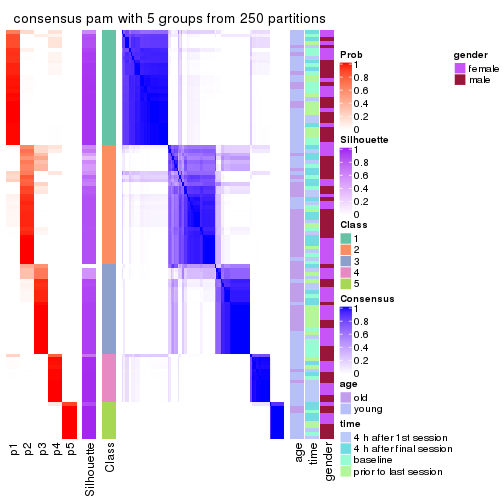
consensus_heatmap(res, k = 6)
Heatmaps for the membership of samples in all partitions to see how consistent they are:
membership_heatmap(res, k = 2)
membership_heatmap(res, k = 3)

membership_heatmap(res, k = 4)
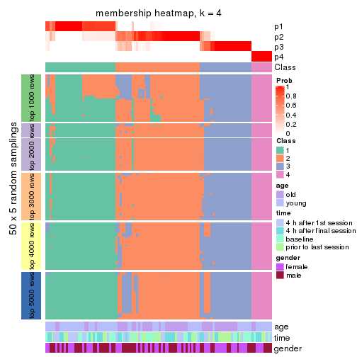
membership_heatmap(res, k = 5)
membership_heatmap(res, k = 6)
As soon as we have had the classes for columns, we can look for signatures which are significantly different between classes which can be candidate marks for certain classes. Following are the heatmaps for signatures.
Signature heatmaps where rows are scaled:
get_signatures(res, k = 2)
get_signatures(res, k = 3)
get_signatures(res, k = 4)
get_signatures(res, k = 5)
get_signatures(res, k = 6)
Signature heatmaps where rows are not scaled:
get_signatures(res, k = 2, scale_rows = FALSE)
get_signatures(res, k = 3, scale_rows = FALSE)
get_signatures(res, k = 4, scale_rows = FALSE)

get_signatures(res, k = 5, scale_rows = FALSE)
get_signatures(res, k = 6, scale_rows = FALSE)
Compare the overlap of signatures from different k:
compare_signatures(res)
get_signature() returns a data frame invisibly. TO get the list of signatures, the function
call should be assigned to a variable explicitly. In following code, if plot argument is set
to FALSE, no heatmap is plotted while only the differential analysis is performed.
# code only for demonstration
tb = get_signature(res, k = ..., plot = FALSE)
An example of the output of tb is:
#> which_row fdr mean_1 mean_2 scaled_mean_1 scaled_mean_2 km
#> 1 38 0.042760348 8.373488 9.131774 -0.5533452 0.5164555 1
#> 2 40 0.018707592 7.106213 8.469186 -0.6173731 0.5762149 1
#> 3 55 0.019134737 10.221463 11.207825 -0.6159697 0.5749050 1
#> 4 59 0.006059896 5.921854 7.869574 -0.6899429 0.6439467 1
#> 5 60 0.018055526 8.928898 10.211722 -0.6204761 0.5791110 1
#> 6 98 0.009384629 15.714769 14.887706 0.6635654 -0.6193277 2
...
The columns in tb are:
which_row: row indices corresponding to the input matrix.fdr: FDR for the differential test. mean_x: The mean value in group x.scaled_mean_x: The mean value in group x after rows are scaled.km: Row groups if k-means clustering is applied to rows.UMAP plot which shows how samples are separated.
dimension_reduction(res, k = 2, method = "UMAP")
dimension_reduction(res, k = 3, method = "UMAP")
dimension_reduction(res, k = 4, method = "UMAP")
dimension_reduction(res, k = 5, method = "UMAP")
dimension_reduction(res, k = 6, method = "UMAP")
Following heatmap shows how subgroups are split when increasing k:
collect_classes(res)
Test correlation between subgroups and known annotations. If the known annotation is numeric, one-way ANOVA test is applied, and if the known annotation is discrete, chi-squared contingency table test is applied.
test_to_known_factors(res)
#> n age(p) time(p) gender(p) k
#> ATC:pam 108 3.19e-02 0.9684 0.4323 2
#> ATC:pam 108 1.98e-03 0.9031 0.3187 3
#> ATC:pam 102 3.25e-05 0.7244 0.2000 4
#> ATC:pam 107 1.29e-04 0.0955 0.2946 5
#> ATC:pam 103 1.20e-04 0.4024 0.0086 6
If matrix rows can be associated to genes, consider to use GO_Enrichment(res,
...) to perform function enrichment for the signature genes.
The object with results only for a single top-value method and a single partition method can be extracted as:
res = res_list["ATC", "mclust"]
# you can also extract it by
# res = res_list["ATC:mclust"]
A summary of res and all the functions that can be applied to it:
res
#> A 'ConsensusPartition' object with k = 2, 3, 4, 5, 6.
#> On a matrix with 51941 rows and 110 columns.
#> Top rows (1000, 2000, 3000, 4000, 5000) are extracted by 'ATC' method.
#> Subgroups are detected by 'mclust' method.
#> Performed in total 1250 partitions by row resampling.
#> Best k for subgroups seems to be 4.
#>
#> Following methods can be applied to this 'ConsensusPartition' object:
#> [1] "cola_report" "collect_classes" "collect_plots"
#> [4] "collect_stats" "colnames" "compare_signatures"
#> [7] "consensus_heatmap" "dimension_reduction" "functional_enrichment"
#> [10] "get_anno_col" "get_anno" "get_classes"
#> [13] "get_consensus" "get_matrix" "get_membership"
#> [16] "get_param" "get_signatures" "get_stats"
#> [19] "is_best_k" "is_stable_k" "membership_heatmap"
#> [22] "ncol" "nrow" "plot_ecdf"
#> [25] "rownames" "select_partition_number" "show"
#> [28] "suggest_best_k" "test_to_known_factors"
collect_plots() function collects all the plots made from res for all k (number of partitions)
into one single page to provide an easy and fast comparison between different k.
collect_plots(res)
The plots are:
k and the heatmap of
predicted classes for each k.k.k.k.All the plots in panels can be made by individual functions and they are plotted later in this section.
select_partition_number() produces several plots showing different
statistics for choosing “optimized” k. There are following statistics:
k;k, the area increased is defined as \(A_k - A_{k-1}\).The detailed explanations of these statistics can be found in the cola vignette.
Generally speaking, lower PAC score, higher mean silhouette score or higher
concordance corresponds to better partition. Rand index and Jaccard index
measure how similar the current partition is compared to partition with k-1.
If they are too similar, we won't accept k is better than k-1.
select_partition_number(res)
The numeric values for all these statistics can be obtained by get_stats().
get_stats(res)
#> k 1-PAC mean_silhouette concordance area_increased Rand Jaccard
#> 2 2 1.000 0.974 0.988 0.1811 0.833 0.833
#> 3 3 0.711 0.881 0.930 2.0183 0.631 0.557
#> 4 4 0.901 0.859 0.933 0.2699 0.794 0.575
#> 5 5 0.691 0.771 0.854 0.0602 0.897 0.684
#> 6 6 0.709 0.734 0.799 0.0726 0.939 0.766
suggest_best_k() suggests the best \(k\) based on these statistics. The rules are as follows:
NA.suggest_best_k(res)
#> [1] 4
#> attr(,"optional")
#> [1] 2
There is also optional best \(k\) = 2 that is worth to check.
Following shows the table of the partitions (You need to click the show/hide
code output link to see it). The membership matrix (columns with name p*)
is inferred by
clue::cl_consensus()
function with the SE method. Basically the value in the membership matrix
represents the probability to belong to a certain group. The finall class
label for an item is determined with the group with highest probability it
belongs to.
In get_classes() function, the entropy is calculated from the membership
matrix and the silhouette score is calculated from the consensus matrix.
cbind(get_classes(res, k = 2), get_membership(res, k = 2))
#> class entropy silhouette p1 p2
#> GSM702357 1 0.0000 0.988 1.000 0.000
#> GSM702358 1 0.0000 0.988 1.000 0.000
#> GSM702359 2 0.0000 0.981 0.000 1.000
#> GSM702360 1 0.0000 0.988 1.000 0.000
#> GSM702361 1 0.0000 0.988 1.000 0.000
#> GSM702362 1 0.0000 0.988 1.000 0.000
#> GSM702363 1 0.0000 0.988 1.000 0.000
#> GSM702364 1 0.0000 0.988 1.000 0.000
#> GSM702413 1 0.0000 0.988 1.000 0.000
#> GSM702414 1 0.0000 0.988 1.000 0.000
#> GSM702415 1 0.0000 0.988 1.000 0.000
#> GSM702416 1 0.0000 0.988 1.000 0.000
#> GSM702417 1 0.0000 0.988 1.000 0.000
#> GSM702418 1 0.0000 0.988 1.000 0.000
#> GSM702419 1 0.0000 0.988 1.000 0.000
#> GSM702365 1 0.0000 0.988 1.000 0.000
#> GSM702366 1 0.0000 0.988 1.000 0.000
#> GSM702367 1 0.7602 0.723 0.780 0.220
#> GSM702368 2 0.0000 0.981 0.000 1.000
#> GSM702369 1 0.0000 0.988 1.000 0.000
#> GSM702370 1 0.0000 0.988 1.000 0.000
#> GSM702371 1 0.7950 0.690 0.760 0.240
#> GSM702372 2 0.0000 0.981 0.000 1.000
#> GSM702420 1 0.8267 0.656 0.740 0.260
#> GSM702421 1 0.0000 0.988 1.000 0.000
#> GSM702422 1 0.0000 0.988 1.000 0.000
#> GSM702423 1 0.1843 0.963 0.972 0.028
#> GSM702424 1 0.0000 0.988 1.000 0.000
#> GSM702425 1 0.0000 0.988 1.000 0.000
#> GSM702426 1 0.2423 0.951 0.960 0.040
#> GSM702427 1 0.0000 0.988 1.000 0.000
#> GSM702373 1 0.0000 0.988 1.000 0.000
#> GSM702374 2 0.0000 0.981 0.000 1.000
#> GSM702375 1 0.8267 0.656 0.740 0.260
#> GSM702376 1 0.0000 0.988 1.000 0.000
#> GSM702377 1 0.0000 0.988 1.000 0.000
#> GSM702378 1 0.0000 0.988 1.000 0.000
#> GSM702379 1 0.0000 0.988 1.000 0.000
#> GSM702380 1 0.0000 0.988 1.000 0.000
#> GSM702428 1 0.0000 0.988 1.000 0.000
#> GSM702429 1 0.0000 0.988 1.000 0.000
#> GSM702430 2 0.1633 0.963 0.024 0.976
#> GSM702431 1 0.0000 0.988 1.000 0.000
#> GSM702432 1 0.0000 0.988 1.000 0.000
#> GSM702433 1 0.0000 0.988 1.000 0.000
#> GSM702434 1 0.0000 0.988 1.000 0.000
#> GSM702381 1 0.0000 0.988 1.000 0.000
#> GSM702382 1 0.0000 0.988 1.000 0.000
#> GSM702383 1 0.0000 0.988 1.000 0.000
#> GSM702384 1 0.0000 0.988 1.000 0.000
#> GSM702385 1 0.0000 0.988 1.000 0.000
#> GSM702386 1 0.0000 0.988 1.000 0.000
#> GSM702387 1 0.0000 0.988 1.000 0.000
#> GSM702388 1 0.0000 0.988 1.000 0.000
#> GSM702435 1 0.0000 0.988 1.000 0.000
#> GSM702436 1 0.0376 0.985 0.996 0.004
#> GSM702437 2 0.5946 0.830 0.144 0.856
#> GSM702438 2 0.0000 0.981 0.000 1.000
#> GSM702439 1 0.0000 0.988 1.000 0.000
#> GSM702440 1 0.0000 0.988 1.000 0.000
#> GSM702441 1 0.0000 0.988 1.000 0.000
#> GSM702442 2 0.0000 0.981 0.000 1.000
#> GSM702389 1 0.0000 0.988 1.000 0.000
#> GSM702390 1 0.0000 0.988 1.000 0.000
#> GSM702391 1 0.0000 0.988 1.000 0.000
#> GSM702392 1 0.0000 0.988 1.000 0.000
#> GSM702393 2 0.0000 0.981 0.000 1.000
#> GSM702394 1 0.0000 0.988 1.000 0.000
#> GSM702443 1 0.0000 0.988 1.000 0.000
#> GSM702444 1 0.0000 0.988 1.000 0.000
#> GSM702445 1 0.0000 0.988 1.000 0.000
#> GSM702446 1 0.0000 0.988 1.000 0.000
#> GSM702447 1 0.0000 0.988 1.000 0.000
#> GSM702448 1 0.0000 0.988 1.000 0.000
#> GSM702395 1 0.0000 0.988 1.000 0.000
#> GSM702396 1 0.2778 0.943 0.952 0.048
#> GSM702397 1 0.0000 0.988 1.000 0.000
#> GSM702398 1 0.0000 0.988 1.000 0.000
#> GSM702399 1 0.0000 0.988 1.000 0.000
#> GSM702400 1 0.0000 0.988 1.000 0.000
#> GSM702449 1 0.0000 0.988 1.000 0.000
#> GSM702450 1 0.0000 0.988 1.000 0.000
#> GSM702451 1 0.0000 0.988 1.000 0.000
#> GSM702452 1 0.1843 0.963 0.972 0.028
#> GSM702453 1 0.0000 0.988 1.000 0.000
#> GSM702454 1 0.0000 0.988 1.000 0.000
#> GSM702401 1 0.0000 0.988 1.000 0.000
#> GSM702402 1 0.0000 0.988 1.000 0.000
#> GSM702403 1 0.0000 0.988 1.000 0.000
#> GSM702404 1 0.0000 0.988 1.000 0.000
#> GSM702405 1 0.0000 0.988 1.000 0.000
#> GSM702406 1 0.0000 0.988 1.000 0.000
#> GSM702455 1 0.0000 0.988 1.000 0.000
#> GSM702456 1 0.0000 0.988 1.000 0.000
#> GSM702457 1 0.0000 0.988 1.000 0.000
#> GSM702458 1 0.0000 0.988 1.000 0.000
#> GSM702459 1 0.0000 0.988 1.000 0.000
#> GSM702460 1 0.0000 0.988 1.000 0.000
#> GSM702407 1 0.0000 0.988 1.000 0.000
#> GSM702408 1 0.0000 0.988 1.000 0.000
#> GSM702409 2 0.0000 0.981 0.000 1.000
#> GSM702410 1 0.0000 0.988 1.000 0.000
#> GSM702411 1 0.0000 0.988 1.000 0.000
#> GSM702412 1 0.0000 0.988 1.000 0.000
#> GSM702461 1 0.0000 0.988 1.000 0.000
#> GSM702462 1 0.0672 0.981 0.992 0.008
#> GSM702463 1 0.0000 0.988 1.000 0.000
#> GSM702464 1 0.0000 0.988 1.000 0.000
#> GSM702465 1 0.0000 0.988 1.000 0.000
#> GSM702466 1 0.0000 0.988 1.000 0.000
cbind(get_classes(res, k = 3), get_membership(res, k = 3))
#> class entropy silhouette p1 p2 p3
#> GSM702357 3 0.0000 0.973 0.000 0.000 1.000
#> GSM702358 3 0.0000 0.973 0.000 0.000 1.000
#> GSM702359 1 0.0000 1.000 1.000 0.000 0.000
#> GSM702360 2 0.0000 0.882 0.000 1.000 0.000
#> GSM702361 2 0.1411 0.894 0.000 0.964 0.036
#> GSM702362 2 0.0000 0.882 0.000 1.000 0.000
#> GSM702363 3 0.0000 0.973 0.000 0.000 1.000
#> GSM702364 2 0.1411 0.894 0.000 0.964 0.036
#> GSM702413 3 0.0000 0.973 0.000 0.000 1.000
#> GSM702414 3 0.0000 0.973 0.000 0.000 1.000
#> GSM702415 2 0.3941 0.846 0.000 0.844 0.156
#> GSM702416 2 0.1411 0.894 0.000 0.964 0.036
#> GSM702417 2 0.1411 0.894 0.000 0.964 0.036
#> GSM702418 2 0.4291 0.829 0.000 0.820 0.180
#> GSM702419 2 0.5926 0.618 0.000 0.644 0.356
#> GSM702365 2 0.5431 0.725 0.000 0.716 0.284
#> GSM702366 3 0.0000 0.973 0.000 0.000 1.000
#> GSM702367 2 0.0000 0.882 0.000 1.000 0.000
#> GSM702368 1 0.0000 1.000 1.000 0.000 0.000
#> GSM702369 2 0.1411 0.894 0.000 0.964 0.036
#> GSM702370 2 0.1411 0.894 0.000 0.964 0.036
#> GSM702371 2 0.0000 0.882 0.000 1.000 0.000
#> GSM702372 1 0.0000 1.000 1.000 0.000 0.000
#> GSM702420 2 0.1411 0.877 0.036 0.964 0.000
#> GSM702421 3 0.0000 0.973 0.000 0.000 1.000
#> GSM702422 2 0.6299 0.241 0.000 0.524 0.476
#> GSM702423 2 0.0000 0.882 0.000 1.000 0.000
#> GSM702424 2 0.4605 0.809 0.000 0.796 0.204
#> GSM702425 2 0.1411 0.894 0.000 0.964 0.036
#> GSM702426 2 0.0000 0.882 0.000 1.000 0.000
#> GSM702427 2 0.1411 0.884 0.000 0.964 0.036
#> GSM702373 3 0.0424 0.966 0.000 0.008 0.992
#> GSM702374 1 0.0000 1.000 1.000 0.000 0.000
#> GSM702375 2 0.1411 0.877 0.036 0.964 0.000
#> GSM702376 2 0.1411 0.894 0.000 0.964 0.036
#> GSM702377 2 0.1411 0.894 0.000 0.964 0.036
#> GSM702378 2 0.1411 0.894 0.000 0.964 0.036
#> GSM702379 2 0.1411 0.894 0.000 0.964 0.036
#> GSM702380 2 0.4504 0.813 0.000 0.804 0.196
#> GSM702428 2 0.5254 0.749 0.000 0.736 0.264
#> GSM702429 3 0.0000 0.973 0.000 0.000 1.000
#> GSM702430 1 0.0000 1.000 1.000 0.000 0.000
#> GSM702431 2 0.1411 0.894 0.000 0.964 0.036
#> GSM702432 2 0.4842 0.791 0.000 0.776 0.224
#> GSM702433 2 0.0000 0.882 0.000 1.000 0.000
#> GSM702434 2 0.0000 0.882 0.000 1.000 0.000
#> GSM702381 2 0.2066 0.881 0.000 0.940 0.060
#> GSM702382 3 0.1529 0.931 0.000 0.040 0.960
#> GSM702383 3 0.1411 0.931 0.000 0.036 0.964
#> GSM702384 2 0.1411 0.894 0.000 0.964 0.036
#> GSM702385 2 0.0592 0.887 0.000 0.988 0.012
#> GSM702386 2 0.1411 0.894 0.000 0.964 0.036
#> GSM702387 2 0.3267 0.870 0.000 0.884 0.116
#> GSM702388 2 0.1411 0.894 0.000 0.964 0.036
#> GSM702435 2 0.0000 0.882 0.000 1.000 0.000
#> GSM702436 2 0.2537 0.869 0.000 0.920 0.080
#> GSM702437 1 0.0000 1.000 1.000 0.000 0.000
#> GSM702438 1 0.0000 1.000 1.000 0.000 0.000
#> GSM702439 2 0.1411 0.894 0.000 0.964 0.036
#> GSM702440 2 0.2711 0.880 0.000 0.912 0.088
#> GSM702441 2 0.0000 0.882 0.000 1.000 0.000
#> GSM702442 1 0.0000 1.000 1.000 0.000 0.000
#> GSM702389 3 0.0237 0.969 0.000 0.004 0.996
#> GSM702390 2 0.3192 0.871 0.000 0.888 0.112
#> GSM702391 2 0.0000 0.882 0.000 1.000 0.000
#> GSM702392 2 0.5560 0.705 0.000 0.700 0.300
#> GSM702393 1 0.0000 1.000 1.000 0.000 0.000
#> GSM702394 3 0.1753 0.921 0.000 0.048 0.952
#> GSM702443 3 0.0000 0.973 0.000 0.000 1.000
#> GSM702444 3 0.0000 0.973 0.000 0.000 1.000
#> GSM702445 2 0.5926 0.618 0.000 0.644 0.356
#> GSM702446 2 0.1411 0.894 0.000 0.964 0.036
#> GSM702447 2 0.4002 0.844 0.000 0.840 0.160
#> GSM702448 2 0.0000 0.882 0.000 1.000 0.000
#> GSM702395 3 0.0000 0.973 0.000 0.000 1.000
#> GSM702396 2 0.0000 0.882 0.000 1.000 0.000
#> GSM702397 3 0.0892 0.951 0.000 0.020 0.980
#> GSM702398 2 0.5529 0.710 0.000 0.704 0.296
#> GSM702399 2 0.0000 0.882 0.000 1.000 0.000
#> GSM702400 3 0.4062 0.760 0.000 0.164 0.836
#> GSM702449 3 0.0747 0.958 0.000 0.016 0.984
#> GSM702450 3 0.0000 0.973 0.000 0.000 1.000
#> GSM702451 2 0.1643 0.893 0.000 0.956 0.044
#> GSM702452 2 0.0000 0.882 0.000 1.000 0.000
#> GSM702453 3 0.0000 0.973 0.000 0.000 1.000
#> GSM702454 2 0.1411 0.894 0.000 0.964 0.036
#> GSM702401 3 0.0000 0.973 0.000 0.000 1.000
#> GSM702402 3 0.0000 0.973 0.000 0.000 1.000
#> GSM702403 2 0.1411 0.894 0.000 0.964 0.036
#> GSM702404 2 0.6168 0.505 0.000 0.588 0.412
#> GSM702405 2 0.1411 0.894 0.000 0.964 0.036
#> GSM702406 2 0.5678 0.683 0.000 0.684 0.316
#> GSM702455 3 0.0000 0.973 0.000 0.000 1.000
#> GSM702456 3 0.0000 0.973 0.000 0.000 1.000
#> GSM702457 3 0.3412 0.820 0.000 0.124 0.876
#> GSM702458 3 0.0000 0.973 0.000 0.000 1.000
#> GSM702459 3 0.0000 0.973 0.000 0.000 1.000
#> GSM702460 2 0.5760 0.665 0.000 0.672 0.328
#> GSM702407 3 0.0000 0.973 0.000 0.000 1.000
#> GSM702408 3 0.0000 0.973 0.000 0.000 1.000
#> GSM702409 1 0.0000 1.000 1.000 0.000 0.000
#> GSM702410 2 0.5591 0.700 0.000 0.696 0.304
#> GSM702411 2 0.3192 0.871 0.000 0.888 0.112
#> GSM702412 2 0.6235 0.447 0.000 0.564 0.436
#> GSM702461 3 0.0000 0.973 0.000 0.000 1.000
#> GSM702462 2 0.5560 0.662 0.000 0.700 0.300
#> GSM702463 3 0.3551 0.809 0.000 0.132 0.868
#> GSM702464 2 0.3192 0.855 0.000 0.888 0.112
#> GSM702465 3 0.0000 0.973 0.000 0.000 1.000
#> GSM702466 2 0.1411 0.894 0.000 0.964 0.036
cbind(get_classes(res, k = 4), get_membership(res, k = 4))
#> class entropy silhouette p1 p2 p3 p4
#> GSM702357 3 0.0188 0.93612 0.000 0.004 0.996 0.000
#> GSM702358 3 0.0188 0.93612 0.000 0.004 0.996 0.000
#> GSM702359 1 0.0000 0.99658 1.000 0.000 0.000 0.000
#> GSM702360 4 0.1211 0.91958 0.000 0.040 0.000 0.960
#> GSM702361 4 0.2011 0.91964 0.000 0.080 0.000 0.920
#> GSM702362 4 0.1211 0.91958 0.000 0.040 0.000 0.960
#> GSM702363 3 0.0188 0.93612 0.000 0.004 0.996 0.000
#> GSM702364 4 0.2011 0.91964 0.000 0.080 0.000 0.920
#> GSM702413 3 0.0188 0.93612 0.000 0.004 0.996 0.000
#> GSM702414 3 0.0188 0.93612 0.000 0.004 0.996 0.000
#> GSM702415 2 0.0469 0.91397 0.000 0.988 0.000 0.012
#> GSM702416 2 0.2469 0.83314 0.000 0.892 0.000 0.108
#> GSM702417 2 0.2345 0.84257 0.000 0.900 0.000 0.100
#> GSM702418 2 0.0000 0.91262 0.000 1.000 0.000 0.000
#> GSM702419 2 0.1022 0.89724 0.000 0.968 0.032 0.000
#> GSM702365 2 0.1059 0.91017 0.000 0.972 0.016 0.012
#> GSM702366 3 0.0188 0.93612 0.000 0.004 0.996 0.000
#> GSM702367 4 0.1211 0.91958 0.000 0.040 0.000 0.960
#> GSM702368 1 0.0000 0.99658 1.000 0.000 0.000 0.000
#> GSM702369 2 0.0592 0.91297 0.000 0.984 0.000 0.016
#> GSM702370 2 0.4222 0.57859 0.000 0.728 0.000 0.272
#> GSM702371 4 0.1211 0.91958 0.000 0.040 0.000 0.960
#> GSM702372 1 0.0000 0.99658 1.000 0.000 0.000 0.000
#> GSM702420 4 0.1211 0.91958 0.000 0.040 0.000 0.960
#> GSM702421 3 0.1004 0.93401 0.000 0.004 0.972 0.024
#> GSM702422 2 0.5158 0.03405 0.000 0.524 0.472 0.004
#> GSM702423 4 0.1211 0.91958 0.000 0.040 0.000 0.960
#> GSM702424 2 0.0000 0.91262 0.000 1.000 0.000 0.000
#> GSM702425 2 0.0592 0.91297 0.000 0.984 0.000 0.016
#> GSM702426 4 0.1211 0.91958 0.000 0.040 0.000 0.960
#> GSM702427 2 0.0469 0.91397 0.000 0.988 0.000 0.012
#> GSM702373 3 0.0188 0.93612 0.000 0.004 0.996 0.000
#> GSM702374 1 0.0000 0.99658 1.000 0.000 0.000 0.000
#> GSM702375 4 0.1211 0.91958 0.000 0.040 0.000 0.960
#> GSM702376 4 0.2011 0.91964 0.000 0.080 0.000 0.920
#> GSM702377 4 0.4500 0.61528 0.000 0.316 0.000 0.684
#> GSM702378 2 0.0592 0.91297 0.000 0.984 0.000 0.016
#> GSM702379 2 0.0592 0.91297 0.000 0.984 0.000 0.016
#> GSM702380 2 0.0336 0.91396 0.000 0.992 0.000 0.008
#> GSM702428 2 0.0657 0.91407 0.000 0.984 0.004 0.012
#> GSM702429 3 0.0188 0.93612 0.000 0.004 0.996 0.000
#> GSM702430 1 0.0592 0.98614 0.984 0.000 0.000 0.016
#> GSM702431 2 0.0188 0.91239 0.000 0.996 0.000 0.004
#> GSM702432 2 0.0000 0.91262 0.000 1.000 0.000 0.000
#> GSM702433 4 0.1211 0.91958 0.000 0.040 0.000 0.960
#> GSM702434 4 0.3311 0.83068 0.000 0.172 0.000 0.828
#> GSM702381 2 0.0469 0.91397 0.000 0.988 0.000 0.012
#> GSM702382 3 0.0921 0.92161 0.000 0.028 0.972 0.000
#> GSM702383 3 0.0188 0.93612 0.000 0.004 0.996 0.000
#> GSM702384 4 0.2011 0.91964 0.000 0.080 0.000 0.920
#> GSM702385 2 0.4981 0.00459 0.000 0.536 0.000 0.464
#> GSM702386 4 0.3266 0.83528 0.000 0.168 0.000 0.832
#> GSM702387 2 0.0000 0.91262 0.000 1.000 0.000 0.000
#> GSM702388 4 0.2011 0.91964 0.000 0.080 0.000 0.920
#> GSM702435 2 0.0921 0.90683 0.000 0.972 0.000 0.028
#> GSM702436 2 0.1256 0.90733 0.000 0.964 0.008 0.028
#> GSM702437 1 0.0592 0.98614 0.984 0.000 0.000 0.016
#> GSM702438 1 0.0000 0.99658 1.000 0.000 0.000 0.000
#> GSM702439 2 0.4830 0.26968 0.000 0.608 0.000 0.392
#> GSM702440 2 0.0000 0.91262 0.000 1.000 0.000 0.000
#> GSM702441 4 0.2011 0.91964 0.000 0.080 0.000 0.920
#> GSM702442 1 0.0000 0.99658 1.000 0.000 0.000 0.000
#> GSM702389 2 0.4989 0.03643 0.000 0.528 0.472 0.000
#> GSM702390 2 0.0469 0.91397 0.000 0.988 0.000 0.012
#> GSM702391 4 0.2011 0.91964 0.000 0.080 0.000 0.920
#> GSM702392 2 0.1356 0.90025 0.000 0.960 0.032 0.008
#> GSM702393 1 0.0000 0.99658 1.000 0.000 0.000 0.000
#> GSM702394 3 0.1022 0.91767 0.000 0.032 0.968 0.000
#> GSM702443 3 0.1398 0.93119 0.000 0.004 0.956 0.040
#> GSM702444 3 0.1211 0.92949 0.000 0.000 0.960 0.040
#> GSM702445 2 0.1584 0.89825 0.000 0.952 0.036 0.012
#> GSM702446 2 0.4331 0.54459 0.000 0.712 0.000 0.288
#> GSM702447 2 0.0469 0.91397 0.000 0.988 0.000 0.012
#> GSM702448 4 0.5000 0.10882 0.000 0.496 0.000 0.504
#> GSM702395 3 0.0469 0.93321 0.000 0.012 0.988 0.000
#> GSM702396 4 0.1211 0.91958 0.000 0.040 0.000 0.960
#> GSM702397 3 0.0188 0.93612 0.000 0.004 0.996 0.000
#> GSM702398 2 0.0707 0.90499 0.000 0.980 0.020 0.000
#> GSM702399 4 0.2011 0.91964 0.000 0.080 0.000 0.920
#> GSM702400 2 0.1211 0.89104 0.000 0.960 0.040 0.000
#> GSM702449 3 0.1520 0.92346 0.000 0.024 0.956 0.020
#> GSM702450 3 0.1398 0.93119 0.000 0.004 0.956 0.040
#> GSM702451 2 0.0592 0.91297 0.000 0.984 0.000 0.016
#> GSM702452 4 0.1211 0.91958 0.000 0.040 0.000 0.960
#> GSM702453 3 0.1398 0.93119 0.000 0.004 0.956 0.040
#> GSM702454 2 0.0592 0.91297 0.000 0.984 0.000 0.016
#> GSM702401 3 0.0188 0.93612 0.000 0.004 0.996 0.000
#> GSM702402 3 0.0188 0.93612 0.000 0.004 0.996 0.000
#> GSM702403 2 0.0592 0.91297 0.000 0.984 0.000 0.016
#> GSM702404 2 0.1302 0.89126 0.000 0.956 0.044 0.000
#> GSM702405 2 0.1867 0.87140 0.000 0.928 0.000 0.072
#> GSM702406 2 0.0188 0.91190 0.000 0.996 0.004 0.000
#> GSM702455 3 0.1211 0.92949 0.000 0.000 0.960 0.040
#> GSM702456 3 0.1211 0.92949 0.000 0.000 0.960 0.040
#> GSM702457 3 0.3569 0.72283 0.000 0.196 0.804 0.000
#> GSM702458 3 0.1398 0.93119 0.000 0.004 0.956 0.040
#> GSM702459 3 0.1398 0.93119 0.000 0.004 0.956 0.040
#> GSM702460 2 0.1677 0.89518 0.000 0.948 0.040 0.012
#> GSM702407 3 0.0188 0.93612 0.000 0.004 0.996 0.000
#> GSM702408 3 0.0188 0.93612 0.000 0.004 0.996 0.000
#> GSM702409 1 0.0000 0.99658 1.000 0.000 0.000 0.000
#> GSM702410 2 0.0921 0.90013 0.000 0.972 0.028 0.000
#> GSM702411 2 0.0000 0.91262 0.000 1.000 0.000 0.000
#> GSM702412 2 0.1211 0.89104 0.000 0.960 0.040 0.000
#> GSM702461 3 0.1211 0.92949 0.000 0.000 0.960 0.040
#> GSM702462 3 0.5277 0.14246 0.000 0.460 0.532 0.008
#> GSM702463 3 0.4998 0.07190 0.000 0.488 0.512 0.000
#> GSM702464 2 0.0657 0.91404 0.000 0.984 0.004 0.012
#> GSM702465 3 0.1211 0.92949 0.000 0.000 0.960 0.040
#> GSM702466 2 0.0592 0.91297 0.000 0.984 0.000 0.016
cbind(get_classes(res, k = 5), get_membership(res, k = 5))
#> class entropy silhouette p1 p2 p3 p4 p5
#> GSM702357 3 0.0404 0.83862 0.000 0.000 0.988 0.012 0.000
#> GSM702358 3 0.0404 0.83862 0.000 0.000 0.988 0.012 0.000
#> GSM702359 5 0.0000 0.99920 0.000 0.000 0.000 0.000 1.000
#> GSM702360 4 0.4356 -0.00921 0.340 0.012 0.000 0.648 0.000
#> GSM702361 4 0.0404 0.71183 0.000 0.012 0.000 0.988 0.000
#> GSM702362 4 0.4402 -0.05996 0.352 0.012 0.000 0.636 0.000
#> GSM702363 3 0.0000 0.83899 0.000 0.000 1.000 0.000 0.000
#> GSM702364 4 0.0404 0.71183 0.000 0.012 0.000 0.988 0.000
#> GSM702413 3 0.0162 0.83964 0.004 0.000 0.996 0.000 0.000
#> GSM702414 3 0.0290 0.83990 0.008 0.000 0.992 0.000 0.000
#> GSM702415 2 0.2852 0.83662 0.000 0.828 0.000 0.172 0.000
#> GSM702416 4 0.3796 0.43274 0.000 0.300 0.000 0.700 0.000
#> GSM702417 4 0.1197 0.70762 0.000 0.048 0.000 0.952 0.000
#> GSM702418 2 0.0162 0.83659 0.004 0.996 0.000 0.000 0.000
#> GSM702419 2 0.0162 0.83659 0.004 0.996 0.000 0.000 0.000
#> GSM702365 2 0.2773 0.84058 0.000 0.836 0.000 0.164 0.000
#> GSM702366 3 0.0000 0.83899 0.000 0.000 1.000 0.000 0.000
#> GSM702367 1 0.4173 1.00000 0.688 0.012 0.000 0.300 0.000
#> GSM702368 5 0.0000 0.99920 0.000 0.000 0.000 0.000 1.000
#> GSM702369 4 0.3913 0.41673 0.000 0.324 0.000 0.676 0.000
#> GSM702370 4 0.1197 0.70632 0.000 0.048 0.000 0.952 0.000
#> GSM702371 1 0.4173 1.00000 0.688 0.012 0.000 0.300 0.000
#> GSM702372 5 0.0000 0.99920 0.000 0.000 0.000 0.000 1.000
#> GSM702420 1 0.4173 1.00000 0.688 0.012 0.000 0.300 0.000
#> GSM702421 3 0.3774 0.80120 0.296 0.000 0.704 0.000 0.000
#> GSM702422 2 0.6480 0.34250 0.004 0.484 0.340 0.172 0.000
#> GSM702423 1 0.4173 1.00000 0.688 0.012 0.000 0.300 0.000
#> GSM702424 2 0.0162 0.83659 0.004 0.996 0.000 0.000 0.000
#> GSM702425 2 0.2891 0.83523 0.000 0.824 0.000 0.176 0.000
#> GSM702426 1 0.4173 1.00000 0.688 0.012 0.000 0.300 0.000
#> GSM702427 2 0.3093 0.83776 0.008 0.824 0.000 0.168 0.000
#> GSM702373 3 0.0404 0.83862 0.000 0.000 0.988 0.012 0.000
#> GSM702374 5 0.0000 0.99920 0.000 0.000 0.000 0.000 1.000
#> GSM702375 1 0.4173 1.00000 0.688 0.012 0.000 0.300 0.000
#> GSM702376 4 0.0404 0.71183 0.000 0.012 0.000 0.988 0.000
#> GSM702377 4 0.0703 0.71344 0.000 0.024 0.000 0.976 0.000
#> GSM702378 2 0.2891 0.83361 0.000 0.824 0.000 0.176 0.000
#> GSM702379 2 0.2966 0.82766 0.000 0.816 0.000 0.184 0.000
#> GSM702380 2 0.2424 0.85255 0.000 0.868 0.000 0.132 0.000
#> GSM702428 2 0.2773 0.84058 0.000 0.836 0.000 0.164 0.000
#> GSM702429 3 0.0000 0.83899 0.000 0.000 1.000 0.000 0.000
#> GSM702430 5 0.0000 0.99920 0.000 0.000 0.000 0.000 1.000
#> GSM702431 2 0.1121 0.85154 0.000 0.956 0.000 0.044 0.000
#> GSM702432 2 0.0162 0.83659 0.004 0.996 0.000 0.000 0.000
#> GSM702433 4 0.4402 -0.05996 0.352 0.012 0.000 0.636 0.000
#> GSM702434 2 0.4242 0.36196 0.000 0.572 0.000 0.428 0.000
#> GSM702381 2 0.3123 0.82654 0.000 0.812 0.004 0.184 0.000
#> GSM702382 3 0.0000 0.83899 0.000 0.000 1.000 0.000 0.000
#> GSM702383 3 0.0000 0.83899 0.000 0.000 1.000 0.000 0.000
#> GSM702384 4 0.0404 0.71183 0.000 0.012 0.000 0.988 0.000
#> GSM702385 4 0.3949 0.39210 0.000 0.332 0.000 0.668 0.000
#> GSM702386 4 0.0404 0.71183 0.000 0.012 0.000 0.988 0.000
#> GSM702387 2 0.0162 0.83659 0.004 0.996 0.000 0.000 0.000
#> GSM702388 4 0.0404 0.71183 0.000 0.012 0.000 0.988 0.000
#> GSM702435 2 0.3074 0.81522 0.000 0.804 0.000 0.196 0.000
#> GSM702436 2 0.3246 0.82490 0.000 0.808 0.008 0.184 0.000
#> GSM702437 5 0.0290 0.99273 0.008 0.000 0.000 0.000 0.992
#> GSM702438 5 0.0000 0.99920 0.000 0.000 0.000 0.000 1.000
#> GSM702439 4 0.2127 0.65144 0.000 0.108 0.000 0.892 0.000
#> GSM702440 2 0.0162 0.83659 0.004 0.996 0.000 0.000 0.000
#> GSM702441 4 0.4167 0.30743 0.252 0.024 0.000 0.724 0.000
#> GSM702442 5 0.0000 0.99920 0.000 0.000 0.000 0.000 1.000
#> GSM702389 2 0.4249 0.58597 0.000 0.688 0.296 0.016 0.000
#> GSM702390 2 0.2891 0.83361 0.000 0.824 0.000 0.176 0.000
#> GSM702391 4 0.3012 0.58273 0.124 0.024 0.000 0.852 0.000
#> GSM702392 2 0.1704 0.85674 0.004 0.928 0.000 0.068 0.000
#> GSM702393 5 0.0000 0.99920 0.000 0.000 0.000 0.000 1.000
#> GSM702394 3 0.2329 0.77542 0.000 0.124 0.876 0.000 0.000
#> GSM702443 3 0.3774 0.80120 0.296 0.000 0.704 0.000 0.000
#> GSM702444 3 0.3796 0.79965 0.300 0.000 0.700 0.000 0.000
#> GSM702445 2 0.1894 0.85729 0.008 0.920 0.000 0.072 0.000
#> GSM702446 4 0.4030 0.36374 0.000 0.352 0.000 0.648 0.000
#> GSM702447 2 0.2077 0.85828 0.008 0.908 0.000 0.084 0.000
#> GSM702448 2 0.3906 0.65665 0.004 0.704 0.000 0.292 0.000
#> GSM702395 3 0.0290 0.83990 0.008 0.000 0.992 0.000 0.000
#> GSM702396 1 0.4173 1.00000 0.688 0.012 0.000 0.300 0.000
#> GSM702397 3 0.0000 0.83899 0.000 0.000 1.000 0.000 0.000
#> GSM702398 2 0.0162 0.83659 0.004 0.996 0.000 0.000 0.000
#> GSM702399 4 0.0771 0.71197 0.004 0.020 0.000 0.976 0.000
#> GSM702400 2 0.1502 0.79745 0.004 0.940 0.056 0.000 0.000
#> GSM702449 3 0.3796 0.79959 0.300 0.000 0.700 0.000 0.000
#> GSM702450 3 0.3774 0.80120 0.296 0.000 0.704 0.000 0.000
#> GSM702451 2 0.2193 0.85801 0.008 0.900 0.000 0.092 0.000
#> GSM702452 1 0.4173 1.00000 0.688 0.012 0.000 0.300 0.000
#> GSM702453 3 0.3774 0.80120 0.296 0.000 0.704 0.000 0.000
#> GSM702454 2 0.2970 0.83858 0.004 0.828 0.000 0.168 0.000
#> GSM702401 3 0.0609 0.84001 0.020 0.000 0.980 0.000 0.000
#> GSM702402 3 0.0404 0.83862 0.000 0.000 0.988 0.012 0.000
#> GSM702403 2 0.2929 0.83126 0.000 0.820 0.000 0.180 0.000
#> GSM702404 2 0.4002 0.72752 0.004 0.796 0.144 0.056 0.000
#> GSM702405 4 0.1121 0.70690 0.000 0.044 0.000 0.956 0.000
#> GSM702406 2 0.0451 0.83980 0.004 0.988 0.000 0.008 0.000
#> GSM702455 3 0.3796 0.79965 0.300 0.000 0.700 0.000 0.000
#> GSM702456 3 0.3796 0.79965 0.300 0.000 0.700 0.000 0.000
#> GSM702457 3 0.5623 0.64124 0.080 0.248 0.652 0.020 0.000
#> GSM702458 3 0.3774 0.80120 0.296 0.000 0.704 0.000 0.000
#> GSM702459 3 0.3774 0.80120 0.296 0.000 0.704 0.000 0.000
#> GSM702460 2 0.2077 0.85828 0.008 0.908 0.000 0.084 0.000
#> GSM702407 3 0.0000 0.83899 0.000 0.000 1.000 0.000 0.000
#> GSM702408 3 0.0162 0.83964 0.004 0.000 0.996 0.000 0.000
#> GSM702409 5 0.0000 0.99920 0.000 0.000 0.000 0.000 1.000
#> GSM702410 2 0.0162 0.83659 0.004 0.996 0.000 0.000 0.000
#> GSM702411 2 0.0162 0.83659 0.004 0.996 0.000 0.000 0.000
#> GSM702412 2 0.0162 0.83659 0.004 0.996 0.000 0.000 0.000
#> GSM702461 3 0.3796 0.79965 0.300 0.000 0.700 0.000 0.000
#> GSM702462 3 0.6778 -0.00509 0.012 0.368 0.440 0.180 0.000
#> GSM702463 3 0.6255 0.38070 0.044 0.356 0.540 0.060 0.000
#> GSM702464 2 0.2136 0.85818 0.008 0.904 0.000 0.088 0.000
#> GSM702465 3 0.3796 0.79965 0.300 0.000 0.700 0.000 0.000
#> GSM702466 2 0.2707 0.85166 0.008 0.860 0.000 0.132 0.000
cbind(get_classes(res, k = 6), get_membership(res, k = 6))
#> class entropy silhouette p1 p2 p3 p4 p5 p6
#> GSM702357 2 0.0972 0.816 0.000 0.964 0.028 0.000 0.008 0.000
#> GSM702358 2 0.0260 0.836 0.000 0.992 0.000 0.000 0.008 0.000
#> GSM702359 4 0.0000 0.998 0.000 0.000 0.000 1.000 0.000 0.000
#> GSM702360 6 0.3699 0.366 0.000 0.000 0.004 0.000 0.336 0.660
#> GSM702361 6 0.0146 0.791 0.000 0.000 0.004 0.000 0.000 0.996
#> GSM702362 6 0.3742 0.337 0.000 0.000 0.004 0.000 0.348 0.648
#> GSM702363 2 0.0291 0.835 0.000 0.992 0.004 0.000 0.004 0.000
#> GSM702364 6 0.0146 0.791 0.000 0.000 0.004 0.000 0.000 0.996
#> GSM702413 2 0.0146 0.835 0.000 0.996 0.004 0.000 0.000 0.000
#> GSM702414 2 0.3198 0.141 0.000 0.740 0.260 0.000 0.000 0.000
#> GSM702415 1 0.4380 0.719 0.744 0.012 0.136 0.000 0.000 0.108
#> GSM702416 6 0.3578 0.335 0.340 0.000 0.000 0.000 0.000 0.660
#> GSM702417 6 0.0547 0.792 0.020 0.000 0.000 0.000 0.000 0.980
#> GSM702418 1 0.0508 0.775 0.984 0.000 0.012 0.000 0.004 0.000
#> GSM702419 1 0.0692 0.774 0.976 0.000 0.020 0.000 0.004 0.000
#> GSM702365 1 0.6465 0.532 0.568 0.216 0.152 0.000 0.036 0.028
#> GSM702366 2 0.0000 0.837 0.000 1.000 0.000 0.000 0.000 0.000
#> GSM702367 5 0.2092 0.999 0.000 0.000 0.000 0.000 0.876 0.124
#> GSM702368 4 0.0000 0.998 0.000 0.000 0.000 1.000 0.000 0.000
#> GSM702369 6 0.2527 0.673 0.168 0.000 0.000 0.000 0.000 0.832
#> GSM702370 6 0.0790 0.786 0.032 0.000 0.000 0.000 0.000 0.968
#> GSM702371 5 0.2092 0.999 0.000 0.000 0.000 0.000 0.876 0.124
#> GSM702372 4 0.0000 0.998 0.000 0.000 0.000 1.000 0.000 0.000
#> GSM702420 5 0.2234 0.996 0.000 0.000 0.004 0.000 0.872 0.124
#> GSM702421 3 0.3854 0.802 0.000 0.464 0.536 0.000 0.000 0.000
#> GSM702422 2 0.5769 0.297 0.216 0.608 0.136 0.000 0.000 0.040
#> GSM702423 5 0.2092 0.999 0.000 0.000 0.000 0.000 0.876 0.124
#> GSM702424 1 0.1226 0.774 0.952 0.000 0.040 0.000 0.004 0.004
#> GSM702425 1 0.3874 0.522 0.636 0.000 0.008 0.000 0.000 0.356
#> GSM702426 5 0.2092 0.999 0.000 0.000 0.000 0.000 0.876 0.124
#> GSM702427 1 0.5011 0.670 0.620 0.000 0.264 0.000 0.000 0.116
#> GSM702373 2 0.1124 0.807 0.000 0.956 0.036 0.000 0.008 0.000
#> GSM702374 4 0.0000 0.998 0.000 0.000 0.000 1.000 0.000 0.000
#> GSM702375 5 0.2234 0.996 0.000 0.000 0.004 0.000 0.872 0.124
#> GSM702376 6 0.0146 0.791 0.000 0.000 0.004 0.000 0.000 0.996
#> GSM702377 6 0.0363 0.793 0.012 0.000 0.000 0.000 0.000 0.988
#> GSM702378 1 0.4242 0.707 0.736 0.000 0.136 0.000 0.000 0.128
#> GSM702379 1 0.4453 0.333 0.528 0.000 0.028 0.000 0.000 0.444
#> GSM702380 1 0.4100 0.721 0.760 0.004 0.124 0.000 0.000 0.112
#> GSM702428 1 0.6033 0.607 0.628 0.160 0.152 0.000 0.036 0.024
#> GSM702429 2 0.0000 0.837 0.000 1.000 0.000 0.000 0.000 0.000
#> GSM702430 4 0.0260 0.993 0.000 0.000 0.000 0.992 0.008 0.000
#> GSM702431 1 0.0914 0.776 0.968 0.000 0.016 0.000 0.000 0.016
#> GSM702432 1 0.0291 0.774 0.992 0.000 0.000 0.000 0.004 0.004
#> GSM702433 6 0.3728 0.352 0.000 0.000 0.004 0.000 0.344 0.652
#> GSM702434 1 0.5603 0.281 0.456 0.000 0.124 0.000 0.004 0.416
#> GSM702381 1 0.6376 0.523 0.548 0.228 0.152 0.000 0.000 0.072
#> GSM702382 2 0.0000 0.837 0.000 1.000 0.000 0.000 0.000 0.000
#> GSM702383 2 0.0000 0.837 0.000 1.000 0.000 0.000 0.000 0.000
#> GSM702384 6 0.0146 0.791 0.000 0.000 0.004 0.000 0.000 0.996
#> GSM702385 6 0.2941 0.611 0.220 0.000 0.000 0.000 0.000 0.780
#> GSM702386 6 0.0146 0.792 0.004 0.000 0.000 0.000 0.000 0.996
#> GSM702387 1 0.0436 0.775 0.988 0.000 0.004 0.000 0.004 0.004
#> GSM702388 6 0.0146 0.791 0.000 0.000 0.004 0.000 0.000 0.996
#> GSM702435 1 0.4954 0.674 0.640 0.000 0.232 0.000 0.000 0.128
#> GSM702436 1 0.5460 0.670 0.620 0.024 0.240 0.000 0.000 0.116
#> GSM702437 4 0.0260 0.993 0.000 0.000 0.000 0.992 0.008 0.000
#> GSM702438 4 0.0000 0.998 0.000 0.000 0.000 1.000 0.000 0.000
#> GSM702439 6 0.1863 0.734 0.104 0.000 0.000 0.000 0.000 0.896
#> GSM702440 1 0.0291 0.774 0.992 0.000 0.000 0.000 0.004 0.004
#> GSM702441 6 0.3151 0.539 0.000 0.000 0.000 0.000 0.252 0.748
#> GSM702442 4 0.0000 0.998 0.000 0.000 0.000 1.000 0.000 0.000
#> GSM702389 2 0.4172 0.132 0.424 0.564 0.004 0.000 0.000 0.008
#> GSM702390 1 0.6211 0.624 0.632 0.128 0.152 0.000 0.036 0.052
#> GSM702391 6 0.2118 0.727 0.008 0.000 0.000 0.000 0.104 0.888
#> GSM702392 1 0.4198 0.727 0.768 0.020 0.128 0.000 0.000 0.084
#> GSM702393 4 0.0000 0.998 0.000 0.000 0.000 1.000 0.000 0.000
#> GSM702394 2 0.1167 0.809 0.012 0.960 0.020 0.000 0.000 0.008
#> GSM702443 3 0.3828 0.827 0.000 0.440 0.560 0.000 0.000 0.000
#> GSM702444 3 0.3833 0.829 0.000 0.444 0.556 0.000 0.000 0.000
#> GSM702445 1 0.3901 0.758 0.804 0.000 0.084 0.000 0.076 0.036
#> GSM702446 6 0.4098 -0.214 0.496 0.000 0.008 0.000 0.000 0.496
#> GSM702447 1 0.5385 0.679 0.620 0.000 0.268 0.000 0.076 0.036
#> GSM702448 1 0.5180 0.664 0.616 0.000 0.256 0.000 0.004 0.124
#> GSM702395 2 0.2300 0.572 0.000 0.856 0.144 0.000 0.000 0.000
#> GSM702396 5 0.2092 0.999 0.000 0.000 0.000 0.000 0.876 0.124
#> GSM702397 2 0.0000 0.837 0.000 1.000 0.000 0.000 0.000 0.000
#> GSM702398 1 0.0603 0.775 0.980 0.000 0.016 0.000 0.004 0.000
#> GSM702399 6 0.0717 0.790 0.008 0.000 0.000 0.000 0.016 0.976
#> GSM702400 1 0.0405 0.775 0.988 0.000 0.008 0.000 0.004 0.000
#> GSM702449 3 0.5067 0.754 0.000 0.436 0.488 0.000 0.076 0.000
#> GSM702450 3 0.3833 0.829 0.000 0.444 0.556 0.000 0.000 0.000
#> GSM702451 1 0.4140 0.752 0.784 0.000 0.104 0.000 0.076 0.036
#> GSM702452 5 0.2092 0.999 0.000 0.000 0.000 0.000 0.876 0.124
#> GSM702453 3 0.3838 0.826 0.000 0.448 0.552 0.000 0.000 0.000
#> GSM702454 1 0.5385 0.679 0.620 0.000 0.268 0.000 0.076 0.036
#> GSM702401 2 0.1753 0.718 0.000 0.912 0.084 0.000 0.004 0.000
#> GSM702402 2 0.0260 0.836 0.000 0.992 0.000 0.000 0.008 0.000
#> GSM702403 1 0.3975 0.447 0.600 0.000 0.008 0.000 0.000 0.392
#> GSM702404 1 0.4165 0.736 0.784 0.052 0.108 0.000 0.000 0.056
#> GSM702405 6 0.0603 0.792 0.016 0.000 0.004 0.000 0.000 0.980
#> GSM702406 1 0.1857 0.771 0.924 0.000 0.028 0.000 0.004 0.044
#> GSM702455 3 0.3828 0.827 0.000 0.440 0.560 0.000 0.000 0.000
#> GSM702456 3 0.3838 0.826 0.000 0.448 0.552 0.000 0.000 0.000
#> GSM702457 3 0.6803 0.543 0.144 0.280 0.492 0.000 0.076 0.008
#> GSM702458 3 0.3833 0.829 0.000 0.444 0.556 0.000 0.000 0.000
#> GSM702459 3 0.3838 0.826 0.000 0.448 0.552 0.000 0.000 0.000
#> GSM702460 1 0.5346 0.684 0.628 0.000 0.260 0.000 0.076 0.036
#> GSM702407 2 0.0363 0.831 0.000 0.988 0.012 0.000 0.000 0.000
#> GSM702408 2 0.0363 0.827 0.000 0.988 0.012 0.000 0.000 0.000
#> GSM702409 4 0.0000 0.998 0.000 0.000 0.000 1.000 0.000 0.000
#> GSM702410 1 0.0405 0.775 0.988 0.000 0.008 0.000 0.004 0.000
#> GSM702411 1 0.1364 0.765 0.944 0.000 0.048 0.000 0.004 0.004
#> GSM702412 1 0.0935 0.773 0.964 0.000 0.032 0.000 0.004 0.000
#> GSM702461 3 0.3833 0.829 0.000 0.444 0.556 0.000 0.000 0.000
#> GSM702462 3 0.6330 0.284 0.120 0.192 0.576 0.000 0.000 0.112
#> GSM702463 3 0.6804 0.411 0.204 0.180 0.528 0.000 0.076 0.012
#> GSM702464 1 0.5385 0.679 0.620 0.000 0.268 0.000 0.076 0.036
#> GSM702465 3 0.3833 0.829 0.000 0.444 0.556 0.000 0.000 0.000
#> GSM702466 1 0.5385 0.679 0.620 0.000 0.268 0.000 0.076 0.036
Heatmaps for the consensus matrix. It visualizes the probability of two samples to be in a same group.
consensus_heatmap(res, k = 2)
consensus_heatmap(res, k = 3)
consensus_heatmap(res, k = 4)
consensus_heatmap(res, k = 5)
consensus_heatmap(res, k = 6)
Heatmaps for the membership of samples in all partitions to see how consistent they are:
membership_heatmap(res, k = 2)
membership_heatmap(res, k = 3)
membership_heatmap(res, k = 4)
membership_heatmap(res, k = 5)
membership_heatmap(res, k = 6)
As soon as we have had the classes for columns, we can look for signatures which are significantly different between classes which can be candidate marks for certain classes. Following are the heatmaps for signatures.
Signature heatmaps where rows are scaled:
get_signatures(res, k = 2)
get_signatures(res, k = 3)
get_signatures(res, k = 4)
get_signatures(res, k = 5)
get_signatures(res, k = 6)
Signature heatmaps where rows are not scaled:
get_signatures(res, k = 2, scale_rows = FALSE)
get_signatures(res, k = 3, scale_rows = FALSE)
get_signatures(res, k = 4, scale_rows = FALSE)
get_signatures(res, k = 5, scale_rows = FALSE)
get_signatures(res, k = 6, scale_rows = FALSE)
Compare the overlap of signatures from different k:
compare_signatures(res)
get_signature() returns a data frame invisibly. TO get the list of signatures, the function
call should be assigned to a variable explicitly. In following code, if plot argument is set
to FALSE, no heatmap is plotted while only the differential analysis is performed.
# code only for demonstration
tb = get_signature(res, k = ..., plot = FALSE)
An example of the output of tb is:
#> which_row fdr mean_1 mean_2 scaled_mean_1 scaled_mean_2 km
#> 1 38 0.042760348 8.373488 9.131774 -0.5533452 0.5164555 1
#> 2 40 0.018707592 7.106213 8.469186 -0.6173731 0.5762149 1
#> 3 55 0.019134737 10.221463 11.207825 -0.6159697 0.5749050 1
#> 4 59 0.006059896 5.921854 7.869574 -0.6899429 0.6439467 1
#> 5 60 0.018055526 8.928898 10.211722 -0.6204761 0.5791110 1
#> 6 98 0.009384629 15.714769 14.887706 0.6635654 -0.6193277 2
...
The columns in tb are:
which_row: row indices corresponding to the input matrix.fdr: FDR for the differential test. mean_x: The mean value in group x.scaled_mean_x: The mean value in group x after rows are scaled.km: Row groups if k-means clustering is applied to rows.UMAP plot which shows how samples are separated.
dimension_reduction(res, k = 2, method = "UMAP")

dimension_reduction(res, k = 3, method = "UMAP")
dimension_reduction(res, k = 4, method = "UMAP")

dimension_reduction(res, k = 5, method = "UMAP")
dimension_reduction(res, k = 6, method = "UMAP")
Following heatmap shows how subgroups are split when increasing k:
collect_classes(res)
Test correlation between subgroups and known annotations. If the known annotation is numeric, one-way ANOVA test is applied, and if the known annotation is discrete, chi-squared contingency table test is applied.
test_to_known_factors(res)
#> n age(p) time(p) gender(p) k
#> ATC:mclust 110 0.21264 0.7463 7.86e-01 2
#> ATC:mclust 108 0.00371 0.9540 8.15e-01 3
#> ATC:mclust 103 0.00474 0.9487 3.30e-01 4
#> ATC:mclust 98 0.02714 0.0829 1.55e-01 5
#> ATC:mclust 97 0.00104 0.1523 1.83e-05 6
If matrix rows can be associated to genes, consider to use GO_Enrichment(res,
...) to perform function enrichment for the signature genes.
The object with results only for a single top-value method and a single partition method can be extracted as:
res = res_list["ATC", "NMF"]
# you can also extract it by
# res = res_list["ATC:NMF"]
A summary of res and all the functions that can be applied to it:
res
#> A 'ConsensusPartition' object with k = 2, 3, 4, 5, 6.
#> On a matrix with 51941 rows and 110 columns.
#> Top rows (1000, 2000, 3000, 4000, 5000) are extracted by 'ATC' method.
#> Subgroups are detected by 'NMF' method.
#> Performed in total 1250 partitions by row resampling.
#> Best k for subgroups seems to be 3.
#>
#> Following methods can be applied to this 'ConsensusPartition' object:
#> [1] "cola_report" "collect_classes" "collect_plots"
#> [4] "collect_stats" "colnames" "compare_signatures"
#> [7] "consensus_heatmap" "dimension_reduction" "functional_enrichment"
#> [10] "get_anno_col" "get_anno" "get_classes"
#> [13] "get_consensus" "get_matrix" "get_membership"
#> [16] "get_param" "get_signatures" "get_stats"
#> [19] "is_best_k" "is_stable_k" "membership_heatmap"
#> [22] "ncol" "nrow" "plot_ecdf"
#> [25] "rownames" "select_partition_number" "show"
#> [28] "suggest_best_k" "test_to_known_factors"
collect_plots() function collects all the plots made from res for all k (number of partitions)
into one single page to provide an easy and fast comparison between different k.
collect_plots(res)
The plots are:
k and the heatmap of
predicted classes for each k.k.k.k.All the plots in panels can be made by individual functions and they are plotted later in this section.
select_partition_number() produces several plots showing different
statistics for choosing “optimized” k. There are following statistics:
k;k, the area increased is defined as \(A_k - A_{k-1}\).The detailed explanations of these statistics can be found in the cola vignette.
Generally speaking, lower PAC score, higher mean silhouette score or higher
concordance corresponds to better partition. Rand index and Jaccard index
measure how similar the current partition is compared to partition with k-1.
If they are too similar, we won't accept k is better than k-1.
select_partition_number(res)
The numeric values for all these statistics can be obtained by get_stats().
get_stats(res)
#> k 1-PAC mean_silhouette concordance area_increased Rand Jaccard
#> 2 2 0.856 0.936 0.967 0.3068 0.666 0.666
#> 3 3 0.715 0.817 0.921 1.0498 0.604 0.442
#> 4 4 0.584 0.667 0.814 0.1723 0.796 0.499
#> 5 5 0.497 0.439 0.674 0.0707 0.841 0.474
#> 6 6 0.544 0.372 0.582 0.0410 0.854 0.431
suggest_best_k() suggests the best \(k\) based on these statistics. The rules are as follows:
NA.suggest_best_k(res)
#> [1] 3
Following shows the table of the partitions (You need to click the show/hide
code output link to see it). The membership matrix (columns with name p*)
is inferred by
clue::cl_consensus()
function with the SE method. Basically the value in the membership matrix
represents the probability to belong to a certain group. The finall class
label for an item is determined with the group with highest probability it
belongs to.
In get_classes() function, the entropy is calculated from the membership
matrix and the silhouette score is calculated from the consensus matrix.
cbind(get_classes(res, k = 2), get_membership(res, k = 2))
#> class entropy silhouette p1 p2
#> GSM702357 1 0.0000 0.990 1.000 0.000
#> GSM702358 1 0.0000 0.990 1.000 0.000
#> GSM702359 2 0.0000 0.864 0.000 1.000
#> GSM702360 2 0.5408 0.852 0.124 0.876
#> GSM702361 2 0.6973 0.827 0.188 0.812
#> GSM702362 2 0.0000 0.864 0.000 1.000
#> GSM702363 1 0.0000 0.990 1.000 0.000
#> GSM702364 2 0.8081 0.769 0.248 0.752
#> GSM702413 1 0.0000 0.990 1.000 0.000
#> GSM702414 1 0.0000 0.990 1.000 0.000
#> GSM702415 1 0.0000 0.990 1.000 0.000
#> GSM702416 1 0.0000 0.990 1.000 0.000
#> GSM702417 1 0.0000 0.990 1.000 0.000
#> GSM702418 1 0.0000 0.990 1.000 0.000
#> GSM702419 1 0.0000 0.990 1.000 0.000
#> GSM702365 1 0.0000 0.990 1.000 0.000
#> GSM702366 1 0.0000 0.990 1.000 0.000
#> GSM702367 2 0.7219 0.819 0.200 0.800
#> GSM702368 2 0.0000 0.864 0.000 1.000
#> GSM702369 1 0.0000 0.990 1.000 0.000
#> GSM702370 1 0.0000 0.990 1.000 0.000
#> GSM702371 2 0.7219 0.819 0.200 0.800
#> GSM702372 2 0.0000 0.864 0.000 1.000
#> GSM702420 1 0.2043 0.955 0.968 0.032
#> GSM702421 1 0.0000 0.990 1.000 0.000
#> GSM702422 1 0.0000 0.990 1.000 0.000
#> GSM702423 2 0.6887 0.830 0.184 0.816
#> GSM702424 1 0.0000 0.990 1.000 0.000
#> GSM702425 1 0.0000 0.990 1.000 0.000
#> GSM702426 2 0.5519 0.851 0.128 0.872
#> GSM702427 1 0.0000 0.990 1.000 0.000
#> GSM702373 1 0.0000 0.990 1.000 0.000
#> GSM702374 2 0.0000 0.864 0.000 1.000
#> GSM702375 2 0.6438 0.839 0.164 0.836
#> GSM702376 1 0.9970 -0.151 0.532 0.468
#> GSM702377 1 0.0000 0.990 1.000 0.000
#> GSM702378 1 0.0000 0.990 1.000 0.000
#> GSM702379 1 0.0000 0.990 1.000 0.000
#> GSM702380 1 0.0000 0.990 1.000 0.000
#> GSM702428 1 0.0000 0.990 1.000 0.000
#> GSM702429 1 0.0000 0.990 1.000 0.000
#> GSM702430 2 0.0000 0.864 0.000 1.000
#> GSM702431 1 0.0000 0.990 1.000 0.000
#> GSM702432 1 0.0000 0.990 1.000 0.000
#> GSM702433 2 0.7674 0.796 0.224 0.776
#> GSM702434 1 0.0000 0.990 1.000 0.000
#> GSM702381 1 0.0000 0.990 1.000 0.000
#> GSM702382 1 0.0000 0.990 1.000 0.000
#> GSM702383 1 0.0000 0.990 1.000 0.000
#> GSM702384 2 0.9170 0.646 0.332 0.668
#> GSM702385 1 0.0000 0.990 1.000 0.000
#> GSM702386 1 0.1633 0.964 0.976 0.024
#> GSM702387 1 0.0000 0.990 1.000 0.000
#> GSM702388 2 0.9944 0.371 0.456 0.544
#> GSM702435 1 0.0000 0.990 1.000 0.000
#> GSM702436 1 0.0000 0.990 1.000 0.000
#> GSM702437 2 0.0000 0.864 0.000 1.000
#> GSM702438 2 0.0000 0.864 0.000 1.000
#> GSM702439 1 0.0000 0.990 1.000 0.000
#> GSM702440 1 0.0000 0.990 1.000 0.000
#> GSM702441 1 0.6801 0.734 0.820 0.180
#> GSM702442 2 0.0000 0.864 0.000 1.000
#> GSM702389 1 0.0000 0.990 1.000 0.000
#> GSM702390 1 0.0000 0.990 1.000 0.000
#> GSM702391 1 0.1184 0.973 0.984 0.016
#> GSM702392 1 0.0000 0.990 1.000 0.000
#> GSM702393 2 0.0000 0.864 0.000 1.000
#> GSM702394 1 0.0000 0.990 1.000 0.000
#> GSM702443 1 0.0000 0.990 1.000 0.000
#> GSM702444 1 0.0000 0.990 1.000 0.000
#> GSM702445 1 0.0000 0.990 1.000 0.000
#> GSM702446 1 0.0000 0.990 1.000 0.000
#> GSM702447 1 0.0000 0.990 1.000 0.000
#> GSM702448 1 0.0000 0.990 1.000 0.000
#> GSM702395 1 0.0000 0.990 1.000 0.000
#> GSM702396 2 0.9922 0.394 0.448 0.552
#> GSM702397 1 0.0000 0.990 1.000 0.000
#> GSM702398 1 0.0000 0.990 1.000 0.000
#> GSM702399 1 0.0376 0.986 0.996 0.004
#> GSM702400 1 0.0000 0.990 1.000 0.000
#> GSM702449 1 0.0000 0.990 1.000 0.000
#> GSM702450 1 0.0000 0.990 1.000 0.000
#> GSM702451 1 0.0000 0.990 1.000 0.000
#> GSM702452 1 0.1843 0.959 0.972 0.028
#> GSM702453 1 0.0000 0.990 1.000 0.000
#> GSM702454 1 0.0000 0.990 1.000 0.000
#> GSM702401 1 0.0000 0.990 1.000 0.000
#> GSM702402 1 0.0000 0.990 1.000 0.000
#> GSM702403 1 0.0000 0.990 1.000 0.000
#> GSM702404 1 0.0000 0.990 1.000 0.000
#> GSM702405 1 0.0000 0.990 1.000 0.000
#> GSM702406 1 0.0000 0.990 1.000 0.000
#> GSM702455 1 0.0000 0.990 1.000 0.000
#> GSM702456 1 0.0000 0.990 1.000 0.000
#> GSM702457 1 0.0000 0.990 1.000 0.000
#> GSM702458 1 0.0000 0.990 1.000 0.000
#> GSM702459 1 0.0000 0.990 1.000 0.000
#> GSM702460 1 0.0000 0.990 1.000 0.000
#> GSM702407 1 0.0000 0.990 1.000 0.000
#> GSM702408 1 0.0000 0.990 1.000 0.000
#> GSM702409 2 0.0000 0.864 0.000 1.000
#> GSM702410 1 0.0000 0.990 1.000 0.000
#> GSM702411 1 0.0000 0.990 1.000 0.000
#> GSM702412 1 0.0000 0.990 1.000 0.000
#> GSM702461 1 0.0000 0.990 1.000 0.000
#> GSM702462 1 0.0000 0.990 1.000 0.000
#> GSM702463 1 0.0000 0.990 1.000 0.000
#> GSM702464 1 0.0000 0.990 1.000 0.000
#> GSM702465 1 0.0000 0.990 1.000 0.000
#> GSM702466 1 0.0000 0.990 1.000 0.000
cbind(get_classes(res, k = 3), get_membership(res, k = 3))
#> class entropy silhouette p1 p2 p3
#> GSM702357 2 0.0424 0.9059 0.000 0.992 0.008
#> GSM702358 2 0.0000 0.9051 0.000 1.000 0.000
#> GSM702359 1 0.0000 0.8663 1.000 0.000 0.000
#> GSM702360 1 0.6204 0.2935 0.576 0.000 0.424
#> GSM702361 3 0.3116 0.8198 0.108 0.000 0.892
#> GSM702362 1 0.0000 0.8663 1.000 0.000 0.000
#> GSM702363 2 0.0747 0.9058 0.000 0.984 0.016
#> GSM702364 3 0.0892 0.9089 0.020 0.000 0.980
#> GSM702413 2 0.0000 0.9051 0.000 1.000 0.000
#> GSM702414 2 0.0424 0.9067 0.000 0.992 0.008
#> GSM702415 2 0.0000 0.9051 0.000 1.000 0.000
#> GSM702416 3 0.0000 0.9227 0.000 0.000 1.000
#> GSM702417 3 0.0475 0.9206 0.004 0.004 0.992
#> GSM702418 3 0.0000 0.9227 0.000 0.000 1.000
#> GSM702419 3 0.0000 0.9227 0.000 0.000 1.000
#> GSM702365 2 0.2356 0.8716 0.000 0.928 0.072
#> GSM702366 2 0.0000 0.9051 0.000 1.000 0.000
#> GSM702367 1 0.4399 0.7307 0.812 0.188 0.000
#> GSM702368 1 0.0000 0.8663 1.000 0.000 0.000
#> GSM702369 3 0.0000 0.9227 0.000 0.000 1.000
#> GSM702370 3 0.0000 0.9227 0.000 0.000 1.000
#> GSM702371 1 0.1289 0.8524 0.968 0.032 0.000
#> GSM702372 1 0.0000 0.8663 1.000 0.000 0.000
#> GSM702420 2 0.0424 0.9051 0.000 0.992 0.008
#> GSM702421 2 0.0592 0.9065 0.000 0.988 0.012
#> GSM702422 2 0.0000 0.9051 0.000 1.000 0.000
#> GSM702423 3 0.6095 0.3112 0.392 0.000 0.608
#> GSM702424 3 0.0237 0.9215 0.000 0.004 0.996
#> GSM702425 3 0.0000 0.9227 0.000 0.000 1.000
#> GSM702426 1 0.1163 0.8573 0.972 0.000 0.028
#> GSM702427 3 0.6252 0.1663 0.000 0.444 0.556
#> GSM702373 2 0.0000 0.9051 0.000 1.000 0.000
#> GSM702374 1 0.0000 0.8663 1.000 0.000 0.000
#> GSM702375 2 0.6026 0.2639 0.376 0.624 0.000
#> GSM702376 3 0.6379 0.3377 0.368 0.008 0.624
#> GSM702377 1 0.9391 0.4033 0.504 0.212 0.284
#> GSM702378 2 0.0592 0.9066 0.000 0.988 0.012
#> GSM702379 3 0.0747 0.9165 0.000 0.016 0.984
#> GSM702380 2 0.4121 0.7864 0.000 0.832 0.168
#> GSM702428 2 0.2537 0.8652 0.000 0.920 0.080
#> GSM702429 2 0.0000 0.9051 0.000 1.000 0.000
#> GSM702430 1 0.0000 0.8663 1.000 0.000 0.000
#> GSM702431 3 0.0000 0.9227 0.000 0.000 1.000
#> GSM702432 3 0.3116 0.8423 0.000 0.108 0.892
#> GSM702433 1 0.2625 0.8255 0.916 0.000 0.084
#> GSM702434 3 0.0000 0.9227 0.000 0.000 1.000
#> GSM702381 2 0.0237 0.9059 0.000 0.996 0.004
#> GSM702382 2 0.0000 0.9051 0.000 1.000 0.000
#> GSM702383 2 0.0000 0.9051 0.000 1.000 0.000
#> GSM702384 1 0.5202 0.6919 0.772 0.008 0.220
#> GSM702385 2 0.9920 0.0136 0.280 0.388 0.332
#> GSM702386 3 0.0000 0.9227 0.000 0.000 1.000
#> GSM702387 3 0.2066 0.8856 0.000 0.060 0.940
#> GSM702388 3 0.0892 0.9089 0.020 0.000 0.980
#> GSM702435 2 0.2165 0.8825 0.000 0.936 0.064
#> GSM702436 2 0.0000 0.9051 0.000 1.000 0.000
#> GSM702437 1 0.0000 0.8663 1.000 0.000 0.000
#> GSM702438 1 0.0000 0.8663 1.000 0.000 0.000
#> GSM702439 3 0.0000 0.9227 0.000 0.000 1.000
#> GSM702440 3 0.2066 0.8846 0.000 0.060 0.940
#> GSM702441 1 0.6012 0.7529 0.788 0.088 0.124
#> GSM702442 1 0.0000 0.8663 1.000 0.000 0.000
#> GSM702389 2 0.0892 0.9047 0.000 0.980 0.020
#> GSM702390 2 0.1163 0.9009 0.000 0.972 0.028
#> GSM702391 1 0.7627 0.2212 0.528 0.428 0.044
#> GSM702392 3 0.5465 0.5852 0.000 0.288 0.712
#> GSM702393 1 0.0000 0.8663 1.000 0.000 0.000
#> GSM702394 2 0.4178 0.7818 0.000 0.828 0.172
#> GSM702443 2 0.5905 0.4904 0.000 0.648 0.352
#> GSM702444 2 0.2625 0.8657 0.000 0.916 0.084
#> GSM702445 3 0.0000 0.9227 0.000 0.000 1.000
#> GSM702446 3 0.0000 0.9227 0.000 0.000 1.000
#> GSM702447 3 0.0000 0.9227 0.000 0.000 1.000
#> GSM702448 3 0.0424 0.9196 0.000 0.008 0.992
#> GSM702395 2 0.0424 0.9067 0.000 0.992 0.008
#> GSM702396 1 0.6267 0.2502 0.548 0.452 0.000
#> GSM702397 2 0.0000 0.9051 0.000 1.000 0.000
#> GSM702398 3 0.0000 0.9227 0.000 0.000 1.000
#> GSM702399 2 0.0237 0.9059 0.000 0.996 0.004
#> GSM702400 3 0.4291 0.7579 0.000 0.180 0.820
#> GSM702449 3 0.1753 0.8927 0.000 0.048 0.952
#> GSM702450 2 0.1643 0.8941 0.000 0.956 0.044
#> GSM702451 3 0.0000 0.9227 0.000 0.000 1.000
#> GSM702452 3 0.0000 0.9227 0.000 0.000 1.000
#> GSM702453 3 0.3551 0.8137 0.000 0.132 0.868
#> GSM702454 3 0.0000 0.9227 0.000 0.000 1.000
#> GSM702401 2 0.1411 0.8989 0.000 0.964 0.036
#> GSM702402 2 0.0592 0.9065 0.000 0.988 0.012
#> GSM702403 3 0.0000 0.9227 0.000 0.000 1.000
#> GSM702404 3 0.3038 0.8468 0.000 0.104 0.896
#> GSM702405 3 0.0592 0.9173 0.000 0.012 0.988
#> GSM702406 2 0.6140 0.3603 0.000 0.596 0.404
#> GSM702455 2 0.3941 0.8002 0.000 0.844 0.156
#> GSM702456 2 0.1289 0.9002 0.000 0.968 0.032
#> GSM702457 3 0.0000 0.9227 0.000 0.000 1.000
#> GSM702458 3 0.3340 0.8286 0.000 0.120 0.880
#> GSM702459 3 0.6126 0.3081 0.000 0.400 0.600
#> GSM702460 3 0.0000 0.9227 0.000 0.000 1.000
#> GSM702407 2 0.0000 0.9051 0.000 1.000 0.000
#> GSM702408 2 0.0237 0.9061 0.000 0.996 0.004
#> GSM702409 1 0.0000 0.8663 1.000 0.000 0.000
#> GSM702410 3 0.0000 0.9227 0.000 0.000 1.000
#> GSM702411 3 0.0424 0.9201 0.000 0.008 0.992
#> GSM702412 3 0.0237 0.9215 0.000 0.004 0.996
#> GSM702461 2 0.4555 0.7500 0.000 0.800 0.200
#> GSM702462 2 0.0424 0.9064 0.000 0.992 0.008
#> GSM702463 3 0.0000 0.9227 0.000 0.000 1.000
#> GSM702464 3 0.0000 0.9227 0.000 0.000 1.000
#> GSM702465 2 0.3752 0.8127 0.000 0.856 0.144
#> GSM702466 3 0.0000 0.9227 0.000 0.000 1.000
cbind(get_classes(res, k = 4), get_membership(res, k = 4))
#> class entropy silhouette p1 p2 p3 p4
#> GSM702357 2 0.3266 0.653430 0.168 0.832 0.000 0.000
#> GSM702358 2 0.4331 0.493523 0.288 0.712 0.000 0.000
#> GSM702359 4 0.0000 0.899832 0.000 0.000 0.000 1.000
#> GSM702360 4 0.0188 0.898184 0.000 0.000 0.004 0.996
#> GSM702361 4 0.5837 0.223542 0.000 0.036 0.400 0.564
#> GSM702362 4 0.0000 0.899832 0.000 0.000 0.000 1.000
#> GSM702363 1 0.4543 0.586676 0.676 0.324 0.000 0.000
#> GSM702364 3 0.6181 0.632887 0.000 0.128 0.668 0.204
#> GSM702413 1 0.2647 0.771361 0.880 0.120 0.000 0.000
#> GSM702414 1 0.2216 0.776423 0.908 0.092 0.000 0.000
#> GSM702415 1 0.2530 0.774952 0.888 0.112 0.000 0.000
#> GSM702416 3 0.2589 0.794271 0.000 0.116 0.884 0.000
#> GSM702417 4 0.7723 -0.056586 0.000 0.232 0.348 0.420
#> GSM702418 3 0.2401 0.801197 0.004 0.092 0.904 0.000
#> GSM702419 3 0.2999 0.788410 0.004 0.132 0.864 0.000
#> GSM702365 2 0.3591 0.658706 0.168 0.824 0.008 0.000
#> GSM702366 1 0.2345 0.776001 0.900 0.100 0.000 0.000
#> GSM702367 4 0.1792 0.851601 0.068 0.000 0.000 0.932
#> GSM702368 4 0.0000 0.899832 0.000 0.000 0.000 1.000
#> GSM702369 3 0.4525 0.773051 0.000 0.116 0.804 0.080
#> GSM702370 3 0.4755 0.724470 0.000 0.200 0.760 0.040
#> GSM702371 4 0.0000 0.899832 0.000 0.000 0.000 1.000
#> GSM702372 4 0.0000 0.899832 0.000 0.000 0.000 1.000
#> GSM702420 1 0.3245 0.687102 0.880 0.056 0.064 0.000
#> GSM702421 1 0.3528 0.730533 0.808 0.192 0.000 0.000
#> GSM702422 1 0.1637 0.774169 0.940 0.060 0.000 0.000
#> GSM702423 3 0.7126 0.363173 0.056 0.056 0.600 0.288
#> GSM702424 3 0.4746 0.688853 0.168 0.056 0.776 0.000
#> GSM702425 3 0.2675 0.771633 0.048 0.044 0.908 0.000
#> GSM702426 4 0.4682 0.702560 0.008 0.020 0.208 0.764
#> GSM702427 1 0.6275 -0.018835 0.484 0.056 0.460 0.000
#> GSM702373 2 0.3873 0.591715 0.228 0.772 0.000 0.000
#> GSM702374 4 0.0000 0.899832 0.000 0.000 0.000 1.000
#> GSM702375 1 0.6610 0.110733 0.468 0.080 0.000 0.452
#> GSM702376 2 0.3806 0.645972 0.000 0.824 0.156 0.020
#> GSM702377 2 0.5517 0.512511 0.004 0.684 0.040 0.272
#> GSM702378 2 0.4477 0.445321 0.312 0.688 0.000 0.000
#> GSM702379 2 0.3400 0.633473 0.000 0.820 0.180 0.000
#> GSM702380 2 0.4253 0.640229 0.208 0.776 0.016 0.000
#> GSM702428 2 0.4245 0.646617 0.196 0.784 0.020 0.000
#> GSM702429 1 0.4697 0.534940 0.644 0.356 0.000 0.000
#> GSM702430 4 0.0000 0.899832 0.000 0.000 0.000 1.000
#> GSM702431 3 0.4585 0.570073 0.000 0.332 0.668 0.000
#> GSM702432 3 0.5203 0.523356 0.016 0.348 0.636 0.000
#> GSM702433 4 0.2149 0.845890 0.000 0.000 0.088 0.912
#> GSM702434 3 0.3858 0.761428 0.048 0.044 0.868 0.040
#> GSM702381 2 0.3801 0.602091 0.220 0.780 0.000 0.000
#> GSM702382 1 0.4624 0.558983 0.660 0.340 0.000 0.000
#> GSM702383 1 0.2530 0.774176 0.888 0.112 0.000 0.000
#> GSM702384 2 0.3828 0.674184 0.000 0.848 0.084 0.068
#> GSM702385 4 0.4891 0.765372 0.076 0.008 0.124 0.792
#> GSM702386 3 0.4824 0.747431 0.000 0.144 0.780 0.076
#> GSM702387 2 0.4977 -0.000532 0.000 0.540 0.460 0.000
#> GSM702388 3 0.3764 0.725281 0.000 0.012 0.816 0.172
#> GSM702435 1 0.3404 0.692551 0.864 0.032 0.104 0.000
#> GSM702436 1 0.0779 0.761788 0.980 0.016 0.004 0.000
#> GSM702437 4 0.0000 0.899832 0.000 0.000 0.000 1.000
#> GSM702438 4 0.0000 0.899832 0.000 0.000 0.000 1.000
#> GSM702439 3 0.2149 0.800038 0.000 0.088 0.912 0.000
#> GSM702440 3 0.4543 0.570464 0.000 0.324 0.676 0.000
#> GSM702441 4 0.1271 0.885184 0.012 0.012 0.008 0.968
#> GSM702442 4 0.0000 0.899832 0.000 0.000 0.000 1.000
#> GSM702389 1 0.4103 0.674633 0.744 0.256 0.000 0.000
#> GSM702390 2 0.2868 0.672531 0.136 0.864 0.000 0.000
#> GSM702391 4 0.4726 0.679107 0.048 0.164 0.004 0.784
#> GSM702392 2 0.3099 0.695206 0.020 0.876 0.104 0.000
#> GSM702393 4 0.0000 0.899832 0.000 0.000 0.000 1.000
#> GSM702394 2 0.3757 0.675171 0.152 0.828 0.020 0.000
#> GSM702443 1 0.4744 0.558029 0.736 0.024 0.240 0.000
#> GSM702444 1 0.1722 0.742813 0.944 0.008 0.048 0.000
#> GSM702445 3 0.2011 0.800766 0.000 0.080 0.920 0.000
#> GSM702446 3 0.2469 0.796995 0.000 0.108 0.892 0.000
#> GSM702447 3 0.1706 0.801017 0.016 0.036 0.948 0.000
#> GSM702448 3 0.4150 0.722573 0.120 0.056 0.824 0.000
#> GSM702395 1 0.1940 0.776145 0.924 0.076 0.000 0.000
#> GSM702396 1 0.4234 0.596254 0.764 0.004 0.004 0.228
#> GSM702397 1 0.2345 0.776001 0.900 0.100 0.000 0.000
#> GSM702398 3 0.2814 0.781498 0.000 0.132 0.868 0.000
#> GSM702399 2 0.3948 0.660059 0.136 0.828 0.000 0.036
#> GSM702400 3 0.5944 0.630991 0.140 0.164 0.696 0.000
#> GSM702449 3 0.5478 0.587148 0.248 0.056 0.696 0.000
#> GSM702450 1 0.2773 0.709763 0.900 0.028 0.072 0.000
#> GSM702451 3 0.0188 0.798923 0.000 0.004 0.996 0.000
#> GSM702452 3 0.4372 0.727388 0.104 0.056 0.828 0.012
#> GSM702453 3 0.5484 0.685514 0.132 0.132 0.736 0.000
#> GSM702454 3 0.4259 0.716889 0.128 0.056 0.816 0.000
#> GSM702401 1 0.5147 0.246421 0.536 0.460 0.004 0.000
#> GSM702402 2 0.4222 0.528664 0.272 0.728 0.000 0.000
#> GSM702403 2 0.4955 0.058845 0.000 0.556 0.444 0.000
#> GSM702404 2 0.3356 0.643493 0.000 0.824 0.176 0.000
#> GSM702405 2 0.3123 0.654657 0.000 0.844 0.156 0.000
#> GSM702406 2 0.4127 0.686457 0.124 0.824 0.052 0.000
#> GSM702455 1 0.3907 0.740830 0.828 0.140 0.032 0.000
#> GSM702456 1 0.2814 0.767782 0.868 0.132 0.000 0.000
#> GSM702457 3 0.2760 0.789811 0.000 0.128 0.872 0.000
#> GSM702458 2 0.5558 0.089218 0.020 0.548 0.432 0.000
#> GSM702459 2 0.7726 0.142481 0.228 0.404 0.368 0.000
#> GSM702460 3 0.1059 0.795919 0.012 0.016 0.972 0.000
#> GSM702407 1 0.4843 0.456097 0.604 0.396 0.000 0.000
#> GSM702408 1 0.2345 0.777228 0.900 0.100 0.000 0.000
#> GSM702409 4 0.0000 0.899832 0.000 0.000 0.000 1.000
#> GSM702410 3 0.4843 0.422002 0.000 0.396 0.604 0.000
#> GSM702411 2 0.3610 0.611590 0.000 0.800 0.200 0.000
#> GSM702412 3 0.2799 0.798814 0.008 0.108 0.884 0.000
#> GSM702461 1 0.4646 0.707333 0.796 0.120 0.084 0.000
#> GSM702462 1 0.1610 0.737157 0.952 0.016 0.032 0.000
#> GSM702463 3 0.2021 0.783255 0.024 0.040 0.936 0.000
#> GSM702464 3 0.3024 0.780628 0.000 0.148 0.852 0.000
#> GSM702465 1 0.4807 0.652852 0.728 0.248 0.024 0.000
#> GSM702466 3 0.1975 0.782034 0.016 0.048 0.936 0.000
cbind(get_classes(res, k = 5), get_membership(res, k = 5))
#> class entropy silhouette p1 p2 p3 p4 p5
#> GSM702357 2 0.4380 0.42869 0.260 0.708 0.000 0.032 0.000
#> GSM702358 2 0.3601 0.46064 0.052 0.820 0.000 0.128 0.000
#> GSM702359 5 0.0000 0.80602 0.000 0.000 0.000 0.000 1.000
#> GSM702360 5 0.2660 0.71887 0.000 0.008 0.128 0.000 0.864
#> GSM702361 5 0.6483 -0.14799 0.396 0.004 0.160 0.000 0.440
#> GSM702362 5 0.0162 0.80432 0.004 0.000 0.000 0.000 0.996
#> GSM702363 2 0.5057 -0.00425 0.004 0.604 0.036 0.356 0.000
#> GSM702364 3 0.6698 0.18686 0.252 0.004 0.472 0.000 0.272
#> GSM702413 4 0.4617 0.40522 0.000 0.436 0.012 0.552 0.000
#> GSM702414 4 0.5228 0.47789 0.012 0.364 0.032 0.592 0.000
#> GSM702415 4 0.5258 0.43508 0.180 0.140 0.000 0.680 0.000
#> GSM702416 3 0.3710 0.63461 0.192 0.024 0.784 0.000 0.000
#> GSM702417 1 0.4687 0.61054 0.792 0.040 0.068 0.008 0.092
#> GSM702418 3 0.5020 0.45850 0.316 0.036 0.640 0.008 0.000
#> GSM702419 3 0.4910 0.44990 0.340 0.020 0.628 0.012 0.000
#> GSM702365 1 0.5005 0.42206 0.660 0.276 0.000 0.064 0.000
#> GSM702366 4 0.3844 0.53425 0.064 0.132 0.000 0.804 0.000
#> GSM702367 5 0.6411 0.44874 0.116 0.004 0.016 0.316 0.548
#> GSM702368 5 0.0000 0.80602 0.000 0.000 0.000 0.000 1.000
#> GSM702369 1 0.4703 0.55445 0.776 0.008 0.132 0.064 0.020
#> GSM702370 1 0.3010 0.59174 0.860 0.000 0.116 0.008 0.016
#> GSM702371 5 0.5381 0.63806 0.104 0.004 0.032 0.132 0.728
#> GSM702372 5 0.0000 0.80602 0.000 0.000 0.000 0.000 1.000
#> GSM702420 4 0.2376 0.50908 0.052 0.000 0.044 0.904 0.000
#> GSM702421 4 0.6274 0.35263 0.108 0.388 0.012 0.492 0.000
#> GSM702422 4 0.3814 0.51002 0.116 0.064 0.004 0.816 0.000
#> GSM702423 3 0.7145 0.30117 0.104 0.000 0.524 0.092 0.280
#> GSM702424 1 0.7015 0.06741 0.388 0.008 0.308 0.296 0.000
#> GSM702425 1 0.6526 0.26084 0.516 0.004 0.304 0.172 0.004
#> GSM702426 5 0.7203 0.44065 0.184 0.000 0.148 0.108 0.560
#> GSM702427 4 0.6569 -0.09146 0.216 0.000 0.336 0.448 0.000
#> GSM702373 2 0.4581 0.50303 0.196 0.732 0.000 0.072 0.000
#> GSM702374 5 0.0000 0.80602 0.000 0.000 0.000 0.000 1.000
#> GSM702375 5 0.7707 -0.02893 0.064 0.216 0.000 0.332 0.388
#> GSM702376 1 0.5004 0.46594 0.668 0.284 0.028 0.000 0.020
#> GSM702377 1 0.5847 0.51288 0.664 0.152 0.000 0.024 0.160
#> GSM702378 1 0.5920 0.37157 0.580 0.272 0.000 0.148 0.000
#> GSM702379 2 0.6174 0.23466 0.256 0.552 0.192 0.000 0.000
#> GSM702380 1 0.5411 0.42901 0.624 0.304 0.008 0.064 0.000
#> GSM702428 1 0.5929 0.04214 0.464 0.432 0.000 0.104 0.000
#> GSM702429 4 0.5557 0.15878 0.068 0.460 0.000 0.472 0.000
#> GSM702430 5 0.0000 0.80602 0.000 0.000 0.000 0.000 1.000
#> GSM702431 1 0.5264 0.50373 0.652 0.092 0.256 0.000 0.000
#> GSM702432 1 0.5812 0.49571 0.632 0.116 0.240 0.012 0.000
#> GSM702433 5 0.6487 0.37273 0.252 0.000 0.092 0.060 0.596
#> GSM702434 3 0.6426 0.40350 0.244 0.016 0.624 0.064 0.052
#> GSM702381 2 0.5760 0.16070 0.368 0.536 0.000 0.096 0.000
#> GSM702382 2 0.4787 0.06233 0.028 0.608 0.000 0.364 0.000
#> GSM702383 4 0.3910 0.52571 0.008 0.272 0.000 0.720 0.000
#> GSM702384 1 0.4946 0.43733 0.656 0.300 0.008 0.000 0.036
#> GSM702385 1 0.6055 0.47099 0.652 0.012 0.012 0.168 0.156
#> GSM702386 1 0.3209 0.59203 0.848 0.000 0.120 0.004 0.028
#> GSM702387 1 0.4118 0.61572 0.796 0.112 0.088 0.004 0.000
#> GSM702388 1 0.7111 0.13744 0.432 0.000 0.352 0.028 0.188
#> GSM702435 4 0.5869 0.14732 0.340 0.008 0.068 0.576 0.008
#> GSM702436 4 0.3410 0.53691 0.064 0.052 0.024 0.860 0.000
#> GSM702437 5 0.0000 0.80602 0.000 0.000 0.000 0.000 1.000
#> GSM702438 5 0.0000 0.80602 0.000 0.000 0.000 0.000 1.000
#> GSM702439 1 0.4961 0.25976 0.608 0.000 0.360 0.024 0.008
#> GSM702440 1 0.3849 0.59233 0.820 0.036 0.124 0.020 0.000
#> GSM702441 1 0.6658 0.24505 0.524 0.000 0.016 0.184 0.276
#> GSM702442 5 0.0000 0.80602 0.000 0.000 0.000 0.000 1.000
#> GSM702389 2 0.5124 0.07142 0.004 0.628 0.048 0.320 0.000
#> GSM702390 2 0.3218 0.52813 0.128 0.844 0.004 0.024 0.000
#> GSM702391 5 0.5876 0.28659 0.008 0.364 0.056 0.012 0.560
#> GSM702392 2 0.5026 0.34003 0.280 0.656 0.064 0.000 0.000
#> GSM702393 5 0.0000 0.80602 0.000 0.000 0.000 0.000 1.000
#> GSM702394 2 0.3992 0.52028 0.128 0.812 0.028 0.032 0.000
#> GSM702443 4 0.6940 0.23907 0.008 0.256 0.320 0.416 0.000
#> GSM702444 4 0.5935 0.44963 0.008 0.312 0.104 0.576 0.000
#> GSM702445 3 0.2983 0.70073 0.040 0.096 0.864 0.000 0.000
#> GSM702446 3 0.3283 0.66562 0.140 0.028 0.832 0.000 0.000
#> GSM702447 3 0.3277 0.68471 0.008 0.148 0.832 0.012 0.000
#> GSM702448 3 0.3443 0.69417 0.012 0.060 0.852 0.076 0.000
#> GSM702395 4 0.4668 0.49706 0.000 0.352 0.024 0.624 0.000
#> GSM702396 4 0.6772 -0.01840 0.088 0.008 0.036 0.488 0.380
#> GSM702397 4 0.4074 0.48674 0.000 0.364 0.000 0.636 0.000
#> GSM702398 3 0.5465 0.60222 0.216 0.108 0.668 0.008 0.000
#> GSM702399 2 0.4414 0.48829 0.172 0.772 0.004 0.036 0.016
#> GSM702400 3 0.7772 0.38409 0.268 0.152 0.460 0.120 0.000
#> GSM702449 3 0.7107 0.45745 0.096 0.108 0.544 0.252 0.000
#> GSM702450 4 0.5882 0.51344 0.028 0.224 0.100 0.648 0.000
#> GSM702451 3 0.3265 0.67010 0.120 0.012 0.848 0.020 0.000
#> GSM702452 3 0.2284 0.67649 0.028 0.000 0.912 0.056 0.004
#> GSM702453 3 0.7629 0.27346 0.124 0.316 0.448 0.112 0.000
#> GSM702454 3 0.4069 0.63409 0.096 0.000 0.792 0.112 0.000
#> GSM702401 2 0.4517 0.25611 0.016 0.708 0.016 0.260 0.000
#> GSM702402 2 0.2517 0.45521 0.008 0.884 0.004 0.104 0.000
#> GSM702403 1 0.5610 0.55431 0.640 0.176 0.184 0.000 0.000
#> GSM702404 2 0.5271 0.44606 0.152 0.680 0.168 0.000 0.000
#> GSM702405 2 0.5606 0.16679 0.344 0.568 0.088 0.000 0.000
#> GSM702406 2 0.4926 0.45156 0.052 0.704 0.232 0.012 0.000
#> GSM702455 2 0.6447 -0.19055 0.028 0.484 0.092 0.396 0.000
#> GSM702456 2 0.5523 -0.03610 0.008 0.584 0.060 0.348 0.000
#> GSM702457 3 0.4204 0.65284 0.048 0.196 0.756 0.000 0.000
#> GSM702458 2 0.5405 0.15518 0.064 0.556 0.380 0.000 0.000
#> GSM702459 2 0.6587 0.29923 0.100 0.560 0.292 0.048 0.000
#> GSM702460 3 0.3234 0.69014 0.012 0.144 0.836 0.008 0.000
#> GSM702407 2 0.6002 0.08129 0.116 0.492 0.000 0.392 0.000
#> GSM702408 4 0.4387 0.50335 0.008 0.336 0.004 0.652 0.000
#> GSM702409 5 0.0000 0.80602 0.000 0.000 0.000 0.000 1.000
#> GSM702410 1 0.6172 0.28373 0.500 0.144 0.356 0.000 0.000
#> GSM702411 2 0.5792 0.34726 0.224 0.612 0.164 0.000 0.000
#> GSM702412 3 0.4746 0.68724 0.124 0.100 0.760 0.016 0.000
#> GSM702461 4 0.7181 0.21704 0.056 0.396 0.128 0.420 0.000
#> GSM702462 4 0.4505 0.55661 0.004 0.176 0.068 0.752 0.000
#> GSM702463 3 0.3658 0.69993 0.016 0.116 0.832 0.036 0.000
#> GSM702464 3 0.5147 0.54443 0.068 0.264 0.664 0.004 0.000
#> GSM702465 2 0.6246 0.20629 0.080 0.604 0.048 0.268 0.000
#> GSM702466 3 0.1756 0.70214 0.016 0.036 0.940 0.008 0.000
cbind(get_classes(res, k = 6), get_membership(res, k = 6))
#> class entropy silhouette p1 p2 p3 p4 p5 p6
#> GSM702357 2 0.5131 0.54934 0.008 0.648 0.000 0.140 0.000 0.204
#> GSM702358 2 0.5007 0.07642 0.008 0.480 0.004 0.468 0.000 0.040
#> GSM702359 5 0.0000 0.80714 0.000 0.000 0.000 0.000 1.000 0.000
#> GSM702360 5 0.3556 0.68872 0.016 0.008 0.100 0.000 0.828 0.048
#> GSM702361 6 0.6079 0.47447 0.072 0.000 0.120 0.000 0.220 0.588
#> GSM702362 5 0.0767 0.79697 0.008 0.000 0.000 0.004 0.976 0.012
#> GSM702363 4 0.4573 0.40193 0.020 0.180 0.052 0.736 0.000 0.012
#> GSM702364 6 0.7538 0.12123 0.092 0.020 0.328 0.000 0.196 0.364
#> GSM702413 4 0.2828 0.47931 0.036 0.072 0.020 0.872 0.000 0.000
#> GSM702414 4 0.4450 0.48114 0.052 0.068 0.088 0.780 0.000 0.012
#> GSM702415 4 0.7407 -0.11229 0.256 0.104 0.004 0.368 0.000 0.268
#> GSM702416 3 0.5642 0.45440 0.160 0.048 0.640 0.000 0.000 0.152
#> GSM702417 6 0.4532 0.57890 0.128 0.040 0.040 0.008 0.012 0.772
#> GSM702418 3 0.5954 -0.02994 0.068 0.012 0.452 0.032 0.000 0.436
#> GSM702419 3 0.6582 0.15788 0.100 0.024 0.472 0.044 0.000 0.360
#> GSM702365 6 0.4578 0.44168 0.064 0.216 0.000 0.016 0.000 0.704
#> GSM702366 4 0.5301 -0.07540 0.456 0.076 0.000 0.460 0.000 0.008
#> GSM702367 5 0.5556 0.13015 0.448 0.004 0.004 0.076 0.460 0.008
#> GSM702368 5 0.0000 0.80714 0.000 0.000 0.000 0.000 1.000 0.000
#> GSM702369 6 0.5584 0.33057 0.388 0.032 0.048 0.000 0.008 0.524
#> GSM702370 6 0.5920 0.49545 0.260 0.080 0.056 0.000 0.008 0.596
#> GSM702371 5 0.4699 0.40695 0.356 0.000 0.020 0.024 0.600 0.000
#> GSM702372 5 0.0000 0.80714 0.000 0.000 0.000 0.000 1.000 0.000
#> GSM702420 1 0.6050 0.17331 0.516 0.072 0.012 0.364 0.004 0.032
#> GSM702421 4 0.6556 0.33632 0.172 0.232 0.028 0.540 0.000 0.028
#> GSM702422 1 0.5544 0.25071 0.576 0.068 0.000 0.316 0.000 0.040
#> GSM702423 5 0.6619 -0.06506 0.280 0.004 0.320 0.004 0.380 0.012
#> GSM702424 1 0.5469 0.33458 0.668 0.008 0.152 0.032 0.000 0.140
#> GSM702425 1 0.6165 0.03617 0.488 0.020 0.188 0.000 0.000 0.304
#> GSM702426 1 0.6156 -0.02255 0.440 0.000 0.084 0.000 0.416 0.060
#> GSM702427 1 0.5835 0.41824 0.656 0.016 0.164 0.100 0.000 0.064
#> GSM702373 2 0.5180 0.53066 0.016 0.660 0.000 0.180 0.000 0.144
#> GSM702374 5 0.0000 0.80714 0.000 0.000 0.000 0.000 1.000 0.000
#> GSM702375 4 0.7783 0.03209 0.072 0.136 0.000 0.392 0.320 0.080
#> GSM702376 6 0.4297 0.45378 0.016 0.216 0.016 0.000 0.020 0.732
#> GSM702377 6 0.3965 0.54200 0.060 0.096 0.000 0.016 0.020 0.808
#> GSM702378 6 0.4709 0.49788 0.112 0.132 0.000 0.028 0.000 0.728
#> GSM702379 2 0.7392 0.22000 0.040 0.400 0.196 0.048 0.000 0.316
#> GSM702380 6 0.4894 0.49233 0.076 0.128 0.008 0.052 0.000 0.736
#> GSM702428 2 0.6359 0.29693 0.064 0.468 0.000 0.108 0.000 0.360
#> GSM702429 4 0.6775 0.15705 0.096 0.280 0.012 0.508 0.000 0.104
#> GSM702430 5 0.0436 0.80321 0.004 0.004 0.000 0.000 0.988 0.004
#> GSM702431 6 0.4803 0.56239 0.064 0.036 0.152 0.012 0.000 0.736
#> GSM702432 6 0.5175 0.56265 0.068 0.040 0.144 0.028 0.000 0.720
#> GSM702433 6 0.7576 0.29398 0.108 0.060 0.072 0.008 0.300 0.452
#> GSM702434 6 0.7014 0.20373 0.100 0.028 0.364 0.032 0.024 0.452
#> GSM702381 2 0.5592 0.49371 0.064 0.640 0.000 0.088 0.000 0.208
#> GSM702382 2 0.5424 0.03093 0.076 0.476 0.008 0.436 0.000 0.004
#> GSM702383 4 0.4662 0.37647 0.228 0.088 0.000 0.680 0.000 0.004
#> GSM702384 6 0.5560 0.16517 0.020 0.360 0.004 0.008 0.056 0.552
#> GSM702385 6 0.5467 0.45628 0.212 0.068 0.016 0.004 0.032 0.668
#> GSM702386 6 0.5458 0.53915 0.192 0.056 0.060 0.000 0.016 0.676
#> GSM702387 6 0.5555 0.55723 0.124 0.136 0.064 0.004 0.000 0.672
#> GSM702388 1 0.7547 0.04605 0.396 0.012 0.224 0.000 0.116 0.252
#> GSM702435 1 0.6369 0.23986 0.592 0.080 0.020 0.092 0.000 0.216
#> GSM702436 1 0.5440 0.11580 0.512 0.056 0.008 0.408 0.000 0.016
#> GSM702437 5 0.0551 0.79992 0.004 0.008 0.000 0.000 0.984 0.004
#> GSM702438 5 0.0000 0.80714 0.000 0.000 0.000 0.000 1.000 0.000
#> GSM702439 6 0.6790 0.15982 0.324 0.036 0.212 0.000 0.008 0.420
#> GSM702440 6 0.6108 0.36365 0.340 0.080 0.068 0.000 0.000 0.512
#> GSM702441 6 0.6223 0.30637 0.328 0.048 0.008 0.000 0.096 0.520
#> GSM702442 5 0.0000 0.80714 0.000 0.000 0.000 0.000 1.000 0.000
#> GSM702389 4 0.4676 0.40127 0.024 0.196 0.052 0.720 0.000 0.008
#> GSM702390 2 0.6406 0.12403 0.040 0.428 0.020 0.424 0.000 0.088
#> GSM702391 5 0.6158 0.24478 0.008 0.104 0.024 0.296 0.556 0.012
#> GSM702392 2 0.7371 0.33743 0.036 0.440 0.060 0.272 0.000 0.192
#> GSM702393 5 0.0000 0.80714 0.000 0.000 0.000 0.000 1.000 0.000
#> GSM702394 4 0.6849 -0.08017 0.040 0.344 0.048 0.468 0.000 0.100
#> GSM702443 4 0.5473 0.27838 0.048 0.044 0.360 0.548 0.000 0.000
#> GSM702444 4 0.4872 0.47893 0.064 0.056 0.164 0.716 0.000 0.000
#> GSM702445 3 0.4040 0.61997 0.032 0.032 0.816 0.060 0.000 0.060
#> GSM702446 3 0.4389 0.54281 0.080 0.040 0.764 0.000 0.000 0.116
#> GSM702447 3 0.3713 0.60372 0.024 0.020 0.820 0.112 0.000 0.024
#> GSM702448 3 0.4416 0.58298 0.044 0.024 0.780 0.124 0.004 0.024
#> GSM702395 4 0.3411 0.48267 0.100 0.068 0.008 0.824 0.000 0.000
#> GSM702396 5 0.6560 0.01190 0.316 0.012 0.008 0.268 0.396 0.000
#> GSM702397 4 0.2433 0.47281 0.072 0.044 0.000 0.884 0.000 0.000
#> GSM702398 3 0.7746 0.21926 0.324 0.092 0.392 0.132 0.000 0.060
#> GSM702399 2 0.5270 0.47580 0.016 0.688 0.004 0.204 0.040 0.048
#> GSM702400 1 0.7940 -0.11196 0.404 0.096 0.248 0.192 0.000 0.060
#> GSM702449 3 0.7218 0.27259 0.220 0.056 0.444 0.256 0.000 0.024
#> GSM702450 4 0.4980 0.46871 0.208 0.032 0.076 0.684 0.000 0.000
#> GSM702451 3 0.4970 0.42782 0.268 0.032 0.656 0.004 0.000 0.040
#> GSM702452 3 0.1988 0.57745 0.072 0.004 0.912 0.008 0.000 0.004
#> GSM702453 4 0.7920 0.07019 0.112 0.208 0.296 0.348 0.000 0.036
#> GSM702454 3 0.4534 0.50229 0.220 0.008 0.712 0.048 0.000 0.012
#> GSM702401 4 0.4901 0.35990 0.012 0.232 0.040 0.688 0.000 0.028
#> GSM702402 4 0.4591 0.11635 0.000 0.372 0.016 0.592 0.000 0.020
#> GSM702403 6 0.4820 0.54438 0.016 0.084 0.148 0.020 0.000 0.732
#> GSM702404 2 0.7559 0.38777 0.024 0.452 0.132 0.192 0.000 0.200
#> GSM702405 2 0.4556 0.44819 0.016 0.684 0.028 0.008 0.000 0.264
#> GSM702406 3 0.7507 -0.12116 0.024 0.256 0.340 0.316 0.000 0.064
#> GSM702455 4 0.6594 0.38271 0.044 0.196 0.192 0.548 0.000 0.020
#> GSM702456 4 0.4907 0.40850 0.012 0.228 0.092 0.668 0.000 0.000
#> GSM702457 3 0.5008 0.57414 0.012 0.112 0.732 0.096 0.000 0.048
#> GSM702458 3 0.7274 -0.00302 0.024 0.260 0.404 0.264 0.000 0.048
#> GSM702459 4 0.7401 0.05241 0.028 0.332 0.252 0.340 0.000 0.048
#> GSM702460 3 0.3285 0.60524 0.008 0.040 0.844 0.096 0.000 0.012
#> GSM702407 2 0.6381 0.10635 0.108 0.448 0.008 0.392 0.000 0.044
#> GSM702408 4 0.3742 0.46010 0.116 0.088 0.004 0.792 0.000 0.000
#> GSM702409 5 0.0000 0.80714 0.000 0.000 0.000 0.000 1.000 0.000
#> GSM702410 6 0.7796 0.21849 0.212 0.216 0.216 0.008 0.000 0.348
#> GSM702411 2 0.5768 0.50489 0.028 0.680 0.084 0.076 0.000 0.132
#> GSM702412 3 0.6960 0.45330 0.228 0.068 0.548 0.084 0.000 0.072
#> GSM702461 4 0.7210 0.34305 0.100 0.204 0.160 0.508 0.000 0.028
#> GSM702462 4 0.5095 0.36906 0.256 0.028 0.068 0.648 0.000 0.000
#> GSM702463 3 0.5082 0.59289 0.068 0.076 0.740 0.092 0.000 0.024
#> GSM702464 3 0.6308 0.25904 0.028 0.344 0.516 0.064 0.000 0.048
#> GSM702465 4 0.6613 0.16506 0.056 0.348 0.076 0.488 0.000 0.032
#> GSM702466 3 0.2488 0.59546 0.072 0.004 0.892 0.016 0.000 0.016
Heatmaps for the consensus matrix. It visualizes the probability of two samples to be in a same group.
consensus_heatmap(res, k = 2)
consensus_heatmap(res, k = 3)
consensus_heatmap(res, k = 4)
consensus_heatmap(res, k = 5)
consensus_heatmap(res, k = 6)
Heatmaps for the membership of samples in all partitions to see how consistent they are:
membership_heatmap(res, k = 2)
membership_heatmap(res, k = 3)
membership_heatmap(res, k = 4)
membership_heatmap(res, k = 5)
membership_heatmap(res, k = 6)
As soon as we have had the classes for columns, we can look for signatures which are significantly different between classes which can be candidate marks for certain classes. Following are the heatmaps for signatures.
Signature heatmaps where rows are scaled:
get_signatures(res, k = 2)
get_signatures(res, k = 3)
get_signatures(res, k = 4)

get_signatures(res, k = 5)

get_signatures(res, k = 6)
Signature heatmaps where rows are not scaled:
get_signatures(res, k = 2, scale_rows = FALSE)
get_signatures(res, k = 3, scale_rows = FALSE)
get_signatures(res, k = 4, scale_rows = FALSE)
get_signatures(res, k = 5, scale_rows = FALSE)

get_signatures(res, k = 6, scale_rows = FALSE)
Compare the overlap of signatures from different k:
compare_signatures(res)
get_signature() returns a data frame invisibly. TO get the list of signatures, the function
call should be assigned to a variable explicitly. In following code, if plot argument is set
to FALSE, no heatmap is plotted while only the differential analysis is performed.
# code only for demonstration
tb = get_signature(res, k = ..., plot = FALSE)
An example of the output of tb is:
#> which_row fdr mean_1 mean_2 scaled_mean_1 scaled_mean_2 km
#> 1 38 0.042760348 8.373488 9.131774 -0.5533452 0.5164555 1
#> 2 40 0.018707592 7.106213 8.469186 -0.6173731 0.5762149 1
#> 3 55 0.019134737 10.221463 11.207825 -0.6159697 0.5749050 1
#> 4 59 0.006059896 5.921854 7.869574 -0.6899429 0.6439467 1
#> 5 60 0.018055526 8.928898 10.211722 -0.6204761 0.5791110 1
#> 6 98 0.009384629 15.714769 14.887706 0.6635654 -0.6193277 2
...
The columns in tb are:
which_row: row indices corresponding to the input matrix.fdr: FDR for the differential test. mean_x: The mean value in group x.scaled_mean_x: The mean value in group x after rows are scaled.km: Row groups if k-means clustering is applied to rows.UMAP plot which shows how samples are separated.
dimension_reduction(res, k = 2, method = "UMAP")
dimension_reduction(res, k = 3, method = "UMAP")
dimension_reduction(res, k = 4, method = "UMAP")
dimension_reduction(res, k = 5, method = "UMAP")
dimension_reduction(res, k = 6, method = "UMAP")
Following heatmap shows how subgroups are split when increasing k:
collect_classes(res)
Test correlation between subgroups and known annotations. If the known annotation is numeric, one-way ANOVA test is applied, and if the known annotation is discrete, chi-squared contingency table test is applied.
test_to_known_factors(res)
#> n age(p) time(p) gender(p) k
#> ATC:NMF 107 9.74e-04 0.908 1.31e-01 2
#> ATC:NMF 98 8.15e-03 0.976 2.47e-01 3
#> ATC:NMF 96 5.28e-02 0.107 6.01e-06 4
#> ATC:NMF 48 9.58e-05 0.349 6.04e-03 5
#> ATC:NMF 32 2.69e-04 0.732 2.40e-03 6
If matrix rows can be associated to genes, consider to use GO_Enrichment(res,
...) to perform function enrichment for the signature genes.
sessionInfo()
#> R version 3.6.0 (2019-04-26)
#> Platform: x86_64-pc-linux-gnu (64-bit)
#> Running under: CentOS Linux 7 (Core)
#>
#> Matrix products: default
#> BLAS: /usr/lib64/libblas.so.3.4.2
#> LAPACK: /usr/lib64/liblapack.so.3.4.2
#>
#> locale:
#> [1] LC_CTYPE=en_GB.UTF-8 LC_NUMERIC=C LC_TIME=en_GB.UTF-8
#> [4] LC_COLLATE=en_GB.UTF-8 LC_MONETARY=en_GB.UTF-8 LC_MESSAGES=en_GB.UTF-8
#> [7] LC_PAPER=en_GB.UTF-8 LC_NAME=C LC_ADDRESS=C
#> [10] LC_TELEPHONE=C LC_MEASUREMENT=en_GB.UTF-8 LC_IDENTIFICATION=C
#>
#> attached base packages:
#> [1] grid parallel stats graphics grDevices utils datasets methods base
#>
#> other attached packages:
#> [1] genefilter_1.66.0 ComplexHeatmap_2.1.1 markdown_1.1 knitr_1.26
#> [5] preprocessCore_1.46.0 cola_1.3.2 GEOquery_2.52.0 Biobase_2.44.0
#> [9] BiocGenerics_0.30.0 GetoptLong_0.1.7
#>
#> loaded via a namespace (and not attached):
#> [1] bitops_1.0-6 matrixStats_0.55.0 bit64_0.9-7 doParallel_1.0.15
#> [5] RColorBrewer_1.1-2 httr_1.4.1 tools_3.6.0 backports_1.1.5
#> [9] R6_2.4.1 DBI_1.0.0 lazyeval_0.2.2 colorspace_1.4-1
#> [13] withr_2.1.2 tidyselect_0.2.5 gridExtra_2.3 bit_1.1-14
#> [17] compiler_3.6.0 xml2_1.2.2 microbenchmark_1.4-7 pkgmaker_0.28
#> [21] slam_0.1-46 scales_1.1.0 readr_1.3.1 NMF_0.23.6
#> [25] stringr_1.4.0 digest_0.6.23 pkgconfig_2.0.3 bibtex_0.4.2
#> [29] highr_0.8 limma_3.40.6 rlang_0.4.2 GlobalOptions_0.1.1
#> [33] RSQLite_2.1.2 impute_1.58.0 shape_1.4.4 mclust_5.4.5
#> [37] dendextend_1.12.0 dplyr_0.8.3 RCurl_1.95-4.12 magrittr_1.5
#> [41] Matrix_1.2-17 Rcpp_1.0.3 munsell_0.5.0 S4Vectors_0.22.1
#> [45] viridis_0.5.1 lifecycle_0.1.0 stringi_1.4.3 plyr_1.8.4
#> [49] blob_1.2.0 crayon_1.3.4 lattice_0.20-38 splines_3.6.0
#> [53] annotate_1.62.0 circlize_0.4.9 hms_0.5.2 zeallot_0.1.0
#> [57] pillar_1.4.2 rjson_0.2.20 rngtools_1.4 reshape2_1.4.3
#> [61] codetools_0.2-16 stats4_3.6.0 XML_3.98-1.20 glue_1.3.1
#> [65] evaluate_0.14 png_0.1-7 vctrs_0.2.0 foreach_1.4.7
#> [69] polyclip_1.10-0 gtable_0.3.0 purrr_0.3.3 tidyr_1.0.0
#> [73] clue_0.3-57 assertthat_0.2.1 ggplot2_3.2.1 xfun_0.11
#> [77] gridBase_0.4-7 eulerr_6.0.0 xtable_1.8-4 skmeans_0.2-11
#> [81] survival_2.44-1.1 viridisLite_0.3.0 tibble_2.1.3 iterators_1.0.12
#> [85] AnnotationDbi_1.46.1 registry_0.5-1 memoise_1.1.0 IRanges_2.18.3
#> [89] cluster_2.1.0 brew_1.0-6